<!doctype html><html lang="vi"><head><meta charset="UTF-8"><meta name="viewport" content="width=device-width,initial-scale=1">
<title>Đọc toàn bộ — Nền Tảng Khoa Học Thần Kinh Tính Toán | TaichiKB</title><meta name="description" content="">
<link rel="icon" href="/assets/images/taiji-logo.svg" type="image/svg+xml"><link rel="preconnect" href="https://fonts.googleapis.com"><link rel="preconnect" href="https://fonts.gstatic.com" crossorigin><link href="https://fonts.googleapis.com/css2?family=Be+Vietnam+Pro:ital,wght@0,400;0,600;0,700;1,400&family=Lora:ital,wght@0,400;0,600;0,700;1,400&display=swap" rel="stylesheet"><link rel="stylesheet" href="/assets/stylesheets/reader.css"><style>
:root{--teal:#0f766e;--ink:#0f172a;--mid:#475569;--line:#e2e8f0;--soft:#f8fafc;--sans:'Be Vietnam Pro',system-ui,-apple-system,'Segoe UI',sans-serif;--serif:'Be Vietnam Pro',system-ui,-apple-system,'Segoe UI',sans-serif}
body{margin:0;background:#fff;color:var(--ink);font-family:var(--sans);line-height:1.75}
h1,h2,h3,.chapter-title,.tocwrap h2,.book-meta-details h1{font-family:'Be Vietnam Pro',system-ui,-apple-system,'Segoe UI',sans-serif;font-weight:700;letter-spacing:-.01em}
.book-meta-details p.sub,.reader-body blockquote{font-family:'Lora','Be Vietnam Pro',Georgia,serif}
.wrap{max-width:940px;margin:0 auto;padding:1.4rem 1.1rem 4rem}
.reader-topnav{background:var(--soft);border-bottom:1px solid var(--line);padding:.8rem 1.1rem;display:flex;justify-content:space-between;gap:1rem;flex-wrap:wrap;font-size:.9rem}
.reader-topnav a{color:var(--teal);text-decoration:none;font-weight:600}
.crumb{font-size:.8rem;color:var(--mid);margin:1rem 0}
.crumb a{color:var(--teal);text-decoration:none}
.book-cover-banner{display:flex;gap:26px;align-items:flex-start;margin:1.5rem 0;background:var(--soft);padding:22px;border-radius:12px;border:1px solid var(--line)}
.cover-art{flex:0 0 160px;width:160px;border-radius:6px;box-shadow:0 8px 18px rgba(0,0,0,.15);overflow:hidden;background:#0f766e}
.cover-art img{width:100%;height:auto;display:block}
.book-meta-details h1{margin:0 0 8px;font-size:1.75rem;line-height:1.25}
.book-meta-details p.sub{margin:0 0 12px;color:var(--mid)}
.tocbar{display:flex;flex-wrap:wrap;gap:.6rem;margin:1rem 0 0}
.tocbar a{display:inline-flex;padding:.45rem .95rem;border:1px solid var(--line);border-radius:999px;font-size:.85rem;font-weight:600;color:var(--teal);text-decoration:none;background:#fff}
.tocbar a.primary-btn{background:var(--teal);color:#fff;border-color:var(--teal)}
.chlist{list-style:none;margin:.5rem 0 0;padding:0}
.chlist li{margin:0;padding:.5rem 0;border-bottom:1px dotted var(--line)}
.chlist a{color:var(--ink);text-decoration:none;display:flex;gap:.8rem;align-items:flex-start}
.chlist a:hover{color:var(--teal)}
.chlist .num{flex:0 0 2.2rem;color:var(--teal);font-weight:700}
.attribution{margin:2rem 0 1rem;border:1px solid var(--line);border-left:4px solid var(--teal);background:var(--soft);border-radius:8px;padding:16px 20px;font-size:.88rem;color:var(--mid)}
.chapter-nav{display:flex;justify-content:space-between;gap:1rem;margin:2.2rem 0 0;padding-top:1.1rem;border-top:1px solid var(--line);font-size:.92rem}
.chapter-nav a{color:var(--teal);text-decoration:none;font-weight:600}
.reader-body h2,.chapter-title{font-family:'Be Vietnam Pro',system-ui,-apple-system,'Segoe UI',sans-serif;font-size:1.38rem;font-weight:700;margin:1.8rem 0 .7rem;color:var(--teal);line-height:1.38}
.reader-body h3{font-family:'Be Vietnam Pro',system-ui,-apple-system,'Segoe UI',sans-serif;font-size:1.12rem;font-weight:700;margin:1.4rem 0 .5rem;color:var(--ink);line-height:1.4}
.reader-body p{line-height:1.82;margin:0 0 1rem;text-align:justify}
.reader-body blockquote{margin:1.1rem 1.4rem;padding:.6rem 1rem;border-left:3px solid var(--teal);background:var(--soft);color:var(--mid);font-style:italic}
.reader-body ul.vi-list{margin:0 0 1rem;padding-left:1.5rem}
.reader-body ul.vi-list li{margin-bottom:.35rem}
.reader-body figure.bookfig{margin:1.6rem auto;text-align:center;background:#fff;border:1px solid var(--line);border-radius:8px;padding:14px;max-width:680px}
.reader-body figure.bookfig img{max-width:100%;height:auto;display:block;margin:0 auto}
.reader-body figure.bookfig figcaption{font-size:.85rem;color:var(--mid);margin-top:.7rem;line-height:1.6;text-align:left;font-style:italic}
@media(max-width:640px){.book-cover-banner{flex-direction:column}}
</style></head><body>
<div class="reader-topnav"><a href="index.html">&#8592; Mục lục</a><div class="nav-links"><a href="/vi/">Trang chủ</a> · <a href="/vi/neuroscience/">Thần Kinh Học</a></div></div><div class="wrap"><div class="crumb"><a href="/vi/">Trang chủ</a> &#8250; <a href="/vi/neuroscience/">Thần Kinh Học</a> &#8250; Nền Tảng Khoa Học Thần Kinh Tính Toán</div>
<div class="book-cover-banner"><div class="cover-art"></div>
<div class="book-meta-details"><h1>Nền Tảng Khoa Học Thần Kinh Tính Toán</h1><p class="sub"><em>Fundamentals of Computational Neuroscience (3rd Ed.)</em> — Thomas P. Trappenberg (Oxford University Press, 2023). Bản dịch tiếng Việt toàn văn.</p>
<div class="tocbar"><a class="primary-btn" href="ch01.html">&#128214; Bắt đầu đọc &#8594;</a><a href="full.html">&#128214; Đọc toàn bộ trong một trang</a><a href="https://raw.githubusercontent.com/taichikb/taichinow-media/main/assets/pdf/neuroscience/fundamentals-computational-neuroscience.pdf" target="_blank" rel="noopener" download>&#11015; Tải PDF gốc</a></div></div></div><div class="reader-body"><h2 class="chapter-title">Lời mở đầu, Lời cảm ơn &amp; Mục lục</h2>
<p>Nguyên lý Khoa học Thần kinh Tính toán</p>
<p>(Fundamentals of Computational Neuroscience) Ấn bản thứ ba</p>
<p>Thomas P. Trappenberg</p>
<p>Đại học Dalhousie</p>
<p>Great Clarendon Street, Oxford, OX2 6DP,</p>
<p>Vương quốc Anh</p>
<p>Oxford University Press là một bộ phận của Đại học Oxford. Nhà xuất bản thúc đẩy mục tiêu xuất sắc trong nghiên cứu, học thuật và giáo dục của Đại học trên toàn thế giới. Oxford là nhãn hiệu đã đăng ký của</p>
<p>Oxford University Press tại Vương quốc Anh và một số quốc gia khác © Oxford University Press 2023</p>
<p>Quyền tinh thần của tác giả đã được xác nhận</p>
<p>Ấn bản thứ nhất xuất bản năm 2002 Ấn bản thứ hai xuất bản năm 2010</p>
<p>Ấn bản thứ ba xuất bản năm 2023</p>
<p>Lần in: 1</p>
<p>Bảo lưu mọi quyền. Không phần nào của ấn phẩm này được phép sao chép, lưu trữ trong hệ thống truy xuất, hoặc truyền tải dưới bất kỳ hình thức hay phương tiện nào nếu không có sự cho phép trước bằng văn bản của Oxford University Press, hoặc theo quy định rõ ràng của pháp luật, theo giấy phép hoặc theo các điều khoản đã thỏa thuận với tổ chức quyền sao chép phù hợp. Mọi thắc mắc về việc sao chép ngoài phạm vi nêu trên cần được gửi tới Phòng Bản quyền, Oxford University Press, theo địa chỉ trên</p>
<p>Bạn không được lưu hành tác phẩm này dưới bất kỳ hình thức nào khác và phải áp đặt điều kiện tương tự này đối với bất kỳ người tiếp nhận nào</p>
<p>Xuất bản tại Hợp chúng quốc Hoa Kỳ bởi Oxford University Press 198 Madison Avenue, New York, NY 100106, Hợp chúng quốc Hoa Kỳ</p>
<p>Dữ liệu Biên mục trong Xuất bản của Thư viện Anh</p>
<p>Có sẵn dữ liệu</p>
<p>Số Kiểm soát Thư viện Quốc hội Hoa Kỳ: 2022943170</p>
<p>ISBN 978–0–19–286936–4</p>
<p>DOI: 10.1093/oso/9780192869364.001.0001</p>
<p>In tại Vương quốc Anh bởi Ashford Colour Press Ltd, Gosport, Hampshire</p>
<p>Các liên kết đến trang web của bên thứ ba được Oxford cung cấp với thiện chí và chỉ nhằm mục đích thông tin. Oxford từ chối mọi trách nhiệm đối với các tài liệu có trong bất kỳ trang web của bên thứ ba nào được dẫn chiếu trong tác phẩm này.</p>
<h2>Lời nói đầu</h2>
<p>Khoa học thần kinh tính toán vẫn là một lĩnh vực non trẻ và đang phát triển năng động, do đó cần phải có sự lựa chọn nhất định về chủ đề và phong cách trình bày. Cuốn sách này giới thiệu một số khái niệm nền tảng, tập trung vào các mô hình nơ-ron cơ bản và các đặc tính của mạng lưới. Trái ngược với các tài liệu nghiên cứu chuyên sâu thông thường, cuốn sách này cố gắng phác họa bức tranh tổng thể và nhấn mạnh vào một số khái niệm cũng như giả định cho các phép đơn giản hóa được sử dụng trong kỹ thuật mô hình hóa khoa học.</p>
<p>Khoa học thần kinh tính toán và Trí tuệ nhân tạo (AI) là hai người anh em họ gần gũi. Thuật ngữ AI được cho là ra đời tại hội thảo Dartmouth năm 1956 với nhiều nhân vật nổi tiếng tham dự, bao gồm bác sĩ tâm thần Ross Ashby, nhà sinh lý học thần kinh Warren McCulloch — người đã tạo ra một trong những mô hình nơ-ron toán học đầu tiên — và Arthur Samuel, một trong những người tiên phong về học tăng cường. Các mô hình tính toán của hệ thần kinh như mô hình nơ-ron đã có từ lâu hơn nhiều, nhưng việc kết nối giữa học tập và các hệ thống nhận thức đã tạo nên sự phấn khích về khả năng hiểu rõ hơn về tâm trí. Sự ra đời của các cỗ máy biết học đã cách mạng hóa nhiều ứng dụng, như đã thấy gần đây qua những tiến bộ vượt bậc của thị giác máy tính và xử lý ngôn ngữ tự nhiên nhờ học sâu (deep learning).</p>
<p>Trong khi học máy (machine learning) đạt được nhiều tiến bộ gần đây, các nhà nghiên cứu trong lĩnh vực này thường tự hỏi bộ não hoạt động như thế nào. Đôi khi có vẻ như tiến bộ khoa học dao động qua lại giữa khoa học thần kinh tính toán và học máy. Ví dụ, sự phát triển của mạng nơ-ron và lý thuyết học thống kê vào cuối những năm 1980 và đầu những năm 1990 đã kéo theo các hoạt động nghiên cứu sôi nổi trong khoa học thần kinh tính toán vào những năm 1990 và đầu những năm 2000. Trong thập kỷ qua, học sâu đã chứng kiến sự tăng trưởng bùng nổ trong học máy và khoa học dữ liệu, và giờ đây thời điểm dường như đã chín muồi để tái khơi dậy sự quan tâm sâu sắc hơn đến bộ não nhằm tìm kiếm cảm hứng tiến xa hơn nữa. Điều này được thúc đẩy bởi nhận thức ngày càng tăng về những hạn chế của học sâu, đặc biệt là thách thức trong việc học tri thức ngữ nghĩa với dữ liệu hạn chế và khả năng chuyển giao tri thức sang các tình huống không được đại diện trực tiếp trong tập dữ liệu huấn luyện.</p>
<p>Trong ấn bản mới này của cuốn sách, tôi đã cố gắng lồng ghép nhiều bài học gần đây từ học sâu. Mặc dù đã có những cuốn sách xuất sắc về học sâu, trọng tâm của chúng tôi ở đây là mối liên hệ của chúng với quá trình xử lý của bộ não. Một khía cạnh quan trọng theo đó là các khái niệm về học biểu diễn và tính toán với sự bất định. Ngoài ra, lần này tôi cũng đưa vào các mạng nơ-ron hồi tiếp có cổng (gated recurrent neural networks), vốn đang trở thành một cơ chế nền tảng quan trọng khi suy nghĩ về quá trình xử lý của não bộ. Dù chúng tôi không thể đi sâu vào tất cả các tiến bộ gần đây, tôi hy vọng văn bản này sẽ định hướng cho các nghiên cứu chuyên sâu hơn. Hơn nữa, điều quan trọng đối với tôi là tinh gọn nội dung hiện có. Tôi hy vọng mình đã cải thiện tính dễ đọc của một số phần và thậm chí loại bỏ những phần có vẻ ít liên quan hơn đến việc nghiên cứu những nguyên lý cơ bản nhất.</p>
<p>Các chủ đề được đưa vào cuốn sách này được lựa chọn nhằm cung cấp một lộ trình xuyên suốt các cấp độ mô tả khác nhau của bộ não. Chương 1 cung cấp cái nhìn tổng quan ở mức cao và một số câu hỏi nền tảng về các lý thuyết não bộ, thảo luận ngắn gọn về vai trò của việc mô hình hóa, và một số sự kiện khoa học thần kinh cơ bản hữu ích cần ghi nhớ để sử dụng về sau. Chúng tôi cũng ôn lại lập trình khoa học thiết yếu bằng Python cùng các khái niệm toán học và thống kê cơ bản được sử dụng trong sách. Các Chương 2–4 tập trung vào các cơ chế cơ bản và việc mô hình hóa từng nơ-ron đơn lẻ hoặc giá trị trung bình của quần thể nơ-ron. Nội dung này bắt đầu từ phần thảo luận khá chi tiết về sự thay đổi điện thế màng thông qua các kênh ion, sự phát sinh xung thần kinh (spike), và tính dẻo khớp thần kinh, rồi dần trừu tượng hóa hơn ở các chương tiếp theo. Các Chương 5–7 mô tả khả năng xử lý thông tin của các mạng cơ bản, bao gồm mạng truyền thẳng và mạng hồi tiếp cạnh tranh. Phần cuối của cuốn sách mô tả một số ví dụ về việc kết hợp các mạng sơ cấp như vậy cũng như một số ví dụ về các mô hình ở cấp độ hệ thống của bộ não.</p>
<p>Hầu hết các mô hình trong cuốn sách đều khá tổng quát và nhằm minh họa các cơ chế cơ bản của quá trình xử lý thông tin trong não bộ. Trong tài liệu nghiên cứu, các thành phần cơ bản được điểm qua trong sách này thường được kết hợp theo những cách cụ thể để mô hình hóa các vùng não cụ thể. Hy vọng của chúng tôi là việc nghiên cứu các mô hình cơ bản trong cuốn sách này sẽ giúp người đọc có thể theo dõi một số tài liệu nghiên cứu gần đây trong khoa học thần kinh tính toán.</p>
<p>Mặc dù chúng tôi cố gắng nhấn mạnh một số khái niệm quan trọng, chúng tôi không muốn tạo ấn tượng rằng con đường được chọn là hướng đi duy nhất trong khoa học thần kinh tính toán. Do đó, đôi khi chúng tôi đề cập đến các khái niệm mà không thảo luận sâu rộng. Những nhận xét này nhằm nâng cao nhận thức của người đọc về một số vấn đề và cung cấp một số từ khóa để tạo điều kiện thuận lợi cho việc tìm kiếm tài liệu sâu hơn. Ngoài ra, mặc dù một số ví dụ về các vùng não cụ thể được đề cập trong sách, việc điểm lại toàn diện các mô hình trong khoa học thần kinh tính toán nằm ngoài phạm vi của cuốn sách này. Chúng tôi không khẳng định cuốn sách này bao quát mọi khía cạnh của khoa học thần kinh tính toán cũng như không khẳng định đây là cách tiếp cận duy nhất đối với lĩnh vực này, nhưng chúng tôi hy vọng nó sẽ đóng góp vào cuộc thảo luận chung.</p>
<p>Công thức toán học</p>
<p>Cuốn sách này bao gồm các công thức và khái niệm toán học. Chúng tôi sử dụng ngôn ngữ và các khái niệm toán học thuần túy như những công cụ thực tiễn và để truyền đạt ý tưởng, trái ngược với việc sử dụng hình thức luận đó cho các chứng minh toán học. Do đó, chúng tôi đã cố gắng cân bằng giữa ký hiệu toán học chi tiết với tính dễ đọc và việc truyền đạt các khái niệm cơ bản. Với những độc giả ít được đào tạo chuyên sâu về các hệ thống hình thức như vậy, tôi mong nhận được sự kiên nhẫn từ các bạn. Chúng tôi không cố né tránh các công thức toán học vì những ký hiệu như vậy cho phép sự súc tích trong truyền đạt — điều vốn sẽ rất dài dòng nếu diễn đạt bằng ngôn ngữ viết thông thường. Mức độ mô tả toán học được lựa chọn chủ yếu nhằm mục đích chuyển đổi trực tiếp thành các chương trình máy tính và các đánh giá định lượng khác.</p>
<p>Không có lý do gì phải e ngại các công thức, và điều quan trọng là nhìn thấu qua các ký hiệu để hiểu ý nghĩa của chúng. Nhiều ký hiệu toán học được phát minh ra để đơn giản hóa việc mô tả. Điều này bao gồm việc sử dụng vectơ và ma trận, giúp rút ngắn đáng kể việc đặc tả các mô hình mạng. Chúng tôi cung cấp các chương ôn tập ở phần đầu cuốn sách để rà soát lại các ký hiệu đó. Chúng tôi khuyến nghị một số tài liệu hướng dẫn về những nội dung này để giúp sinh viên vượt qua các chi tiết kỹ thuật trong phần nội dung chính.</p>
<p>Hầu hết các mô hình trong cuốn sách này mô tả sự thay đổi của một đại lượng theo thời gian, chẳng hạn như sự thay đổi điện thế màng sau đầu vào khớp thần kinh hoặc các giá trị độ mạnh khớp thần kinh theo thời gian trong quá trình học. Các phương trình mô tả những thay đổi như vậy được gọi là phương trình vi phân. Không cần phải có kiến thức toàn diện về lý thuyết phương trình vi phân để hiểu cuốn sách này. Tuy nhiên, việc thảo luận về hệ quả của các phương trình vi phân cụ thể và mô phỏng chúng bằng các chương trình máy tính lại là trọng tâm của cuốn sách. Tôi hy vọng cách tiếp cận của chúng tôi sẽ khuyến khích một góc nhìn mới mẻ đối với một chủ đề đôi khi có vẻ choáng ngợp khi được giảng dạy trong các lớp chuyên ngành. Cụ thể, chúng ta sẽ làm quen với một ví dụ đơn giản nhưng giàu ý nghĩa về phương trình vi phân, đó là bộ tích phân rò (leaky integrator). Kiến thức cơ bản về các phương pháp số để giải phương trình vi phân là thiết yếu cho cuốn sách này và nhiều phương pháp mô hình hóa động lực học khác. Vì vậy, chúng tôi cũng đưa vào phần ôn tập về phương trình vi phân và phép tích phân số của chúng.</p>
<p>Một lý thuyết toán học khác, lý thuyết về số ngẫu nhiên, cũng được ôn lại trong chương thứ ba. Ngôn ngữ của lý thuyết xác suất rất hữu ích trong khoa học thần kinh tính toán và nên được giảng dạy trong một khóa học như vậy. Trong khoa học thần kinh (cũng như trong các ngành khác), chúng ta thường nhận được các giá trị khác nhau mỗi lần thực hiện phép đo, và các số ngẫu nhiên mô tả những tình huống như vậy. Chúng ta thường coi những tình huống này là nhiễu, nhưng cũng rất hữu ích khi nghĩ về các biến ngẫu nhiên và thống kê theo khía cạnh mô tả sự bất định. Thực tế, có thể lập luận rằng việc học và suy luận trong các hoàn cảnh bất định là một yêu cầu nền tảng của bộ não. Chúng tôi sẽ lập luận rằng các chức năng tâm trí có thể được xem như là suy luận xác suất.</p>
<p>Ví dụ lập trình</p>
<p>Mặc dù cuốn sách này bao gồm một vài ví dụ về các kỹ thuật giải tích mạnh mẽ nhằm mang lại cho người đọc cảm nhận về một số nghiên cứu lý thuyết công phu hơn, không phải mọi nhà khoa học thần kinh đều phải tự mình thực hiện những phép tính như vậy. Tuy nhiên, việc nghiên cứu một số ý tưởng tổng quát đằng sau các kỹ thuật này là điều thiết yếu để có thể nhận được sự hỗ trợ từ những người chuyên sâu về các kỹ thuật đó. Đặc biệt, khi học cuốn sách này, việc tự mình thực hiện một số thí nghiệm số là rất bổ ích. Do đó, chúng tôi đã đưa vào phần giới thiệu về một môi trường lập trình hiện đại rất phù hợp cho nhiều mô hình trong khoa học thần kinh. Việc viết chương trình và tạo đồ họa nâng cao có thể được học dễ dàng trong thời gian ngắn, ngay cả khi chưa có nhiều kiến thức lập trình trước đó.</p>
<p>Các chương trình trong cuốn sách này hiện được cung cấp bằng Python nhằm nâng cao khả năng tiếp cận và do tầm quan trọng ngày càng tăng của Python trong học máy và khoa học dữ liệu. Mặc dù việc cân bằng giữa cách tiếp cận của một nhà khoa học — tạo ra các ví dụ tối giản và sạch sẽ — với các phương pháp lập trình thông thường là một thách thức, tôi hy vọng mình đã tìm thấy sự cân bằng nhất định. Chú thích trong chương trình thường là một ý tưởng hay trong các gói phần mềm phức tạp. Tuy nhiên, tình huống ở đây lại khác. Các chương trình được cố ý giữ ngắn gọn và kỳ vọng là mỗi dòng mã đều cần được đọc và hiểu trọn vẹn. Ví dụ, chúng tôi cho rằng những chú thích kiểu như # gán giá trị b cho biến a để mô tả đoạn mã a = b là không cần thiết. Thay vào đó, người đọc nên cố gắng đọc hiểu trực tiếp đoạn mã. Do đó, các chú thích trong chương trình đã được cố ý lược bỏ ngoại trừ việc giải thích một số tên biến nhằm giữ cho tên biến ngắn gọn, và một số chú thích để phân cấu trúc mã. Nhiều người có các phong cách viết mã khác nhau, và phong cách ở đây cố ý hướng tới sự cô đọng và đơn giản. Mặc dù đây có thể là một ngôn ngữ mới đối với một số người, việc cố gắng hiểu từng dòng trong một chương trình sẽ giúp làm chủ lập trình trong thời gian ngắn.</p>
<p>Tài liệu tham khảo</p>
<p>Cuốn sách này không cung cấp một bản tường thuật lịch sử về sự phát triển của các ý tưởng trong khoa học thần kinh tính toán. Thực tế, các trích dẫn tham khảo dàn trải đã được tránh tối đa khi có thể để tập trung vào việc mô tả các ý tưởng nền tảng. Điều này phù hợp hơn với sách giáo khoa cho các khóa học. Các tài liệu tham khảo tới văn liệu nghiên cứu gốc chỉ được cung cấp khi bám sát các ví dụ tương ứng. Cuốn sách hướng rất nhiều đến việc tạo ra một điểm khởi đầu cho các nghiên cứu sâu hơn, và các công cụ tìm kiếm hiện nay sẽ dễ dàng cung cấp những chỉ dẫn tiếp theo.</p>
<h2>Lời cảm ơn</h2>
<p>Nhiều bạn bè và đồng nghiệp đã đóng góp qua nhiều năm cho cuốn sách này. Tôi đặc biệt biết ơn Farzaneh Sheikhnezhad Fard, Alan Fine, Steve Grossberg, Alexander Hanuschkin, Geoffrey Hinton, Abraham Nunez, Kai Trappenberg, Nami Trappenberg, Jason Satel, Michael Schmitt, Dominic Standage, Fumio Yamazaki, và Si Wu.</p>
<h2>Mục lục</h2>
<h2>I NỀN TẢNG</h2>
<p>1 Giới thiệu và triển vọng 3 1.1 Khoa học thần kinh tính toán là gì? 3 1.2 Tổ chức trong não bộ 5 1.3 Mô hình là gì? 18 1.4 Có tồn tại một lý thuyết về não bộ không? 21 1.5 Một lý thuyết tính toán về não bộ 26</p>
<p>2 Lập trình khoa học với Python 32 2.1 Môi trường lập trình Python 32 2.2 Các thành phần ngôn ngữ cơ bản 33 2.3 Hiệu năng mã và vectơ hóa 40</p>
<p>3 Toán học và Thống kê 43 3.1 Ký hiệu vectơ và ma trận 43 3.2 Các độ đo khoảng cách 45 3.3 Hàm δ 46 3.4 Giải tích số 47 3.5 Lý thuyết xác suất cơ bản 53</p>
<p>II NƠ-RON</p>
<p>4 Nơ-ron và các mô hình dựa trên độ dẫn 65 4.1 Cơ sở sinh học 65 4.2 Cơ chế khớp thần kinh và xử lý ở đuôi gai 70 4.3 Sự phát sinh điện thế hoạt động: Hodgkin–Huxley 77 4.4 Mô hình FitzHugh-Nagumo 90 4.5 Hình thái nơ-ron: các mô hình khoang 92</p>
<p>5 Nơ-ron tích phân-và-phóng xung và các mô hình quần thể 98 5.1 Các mô hình tích phân-và-phóng xung rò 98 5.2 Tính biến thiên thời điểm phát xung ⋄ 108 5.3 Các mô hình tích phân-và-phóng xung nâng cao 115 5.4 Mã thần kinh và giả thuyết tần số phát xung 117 5.5 Động lực học quần thể: mô hình hóa hành vi trung bình của nơ-ron 121</p>
<p>5.6 Mạng với các khớp thần kinh phi cổ điển 129</p>
<p>6 Bộ liên kết và tính dẻo khớp thần kinh 133 6.1 Trí nhớ liên kết và học tập Hebb 133 6.2 Sinh lý học và lý sinh học của tính dẻo khớp thần kinh 140 6.3 Công thức toán học của tính dẻo Hebb 146 6.4 Co giãn khớp thần kinh và phân bố trọng số 153 6.5 Tính dẻo với động lực học tiền và hậu khớp thần kinh 163</p>
<p>III MẠNG NƠ-RON</p>
<p>7 Mạng ánh xạ truyền thẳng 169 7.1 Học biểu diễn sâu 169 7.2 Perceptron 172 7.3 Mạng nơ-ron tích chập (CNN) 189 7.4 Diễn giải xác suất của MLP 197 7.5 Bộ não dự đoán 205</p>
<p>8 Bản đồ đặc trưng và mã hóa quần thể cạnh tranh 214 8.1 Biểu diễn đặc trưng cạnh tranh trong mô vỏ não 214 8.2 Bản đồ tự tổ chức 216 8.3 Lý thuyết trường thần kinh động 223 8.4 Tích phân ‘đường đi’ và quy tắc vết Hebb ⋄ 237 8.5 Biểu diễn phân tán và mã hóa quần thể 241</p>
<p>9 Mạng liên kết hồi tiếp và trí nhớ tình tiết 250 9.1 Mạng tự liên kết và hồi hải mã 250 9.2 Mạng nơ-ron điểm hút (ANN) 255 9.3 Mạng điểm hút thưa và các mẫu tương quan 267 9.4 Mạng hỗn loạn: góc nhìn hệ động lực ⋄ 273 9.5 Máy Boltzmann 281 9.6 Tái nhập và mạng hồi tiếp có cổng 289</p>
<p>IV MÔ HÌNH CẤP HỆ THỐNG</p>
<p>10 Mạng mô-đun và các hệ thống bổ trợ 303 10.1 Mạng ánh xạ mô-đun 303 10.2 Mạng điểm hút ghép nối 309 10.3 Học trình tự 314 10.4 Các hệ thống trí nhớ bổ trợ 316</p>
<p>11 Điều khiển vận động và Học tăng cường 323 11.1 Học và điều khiển vận động 323 11.2 Điều kiện hóa cổ điển và học tăng cường 327</p>
<p>11.3 Hình thức hóa học tăng cường 329 11.4 Học tăng cường sâu 345</p>
<p>12 Bộ não nhận thức 363 12.1 Thị giác chú ý 363 12.2 Giả thuyết không gian làm việc liên kết 368 12.3 Các hệ thống ra quyết định bổ trợ 371 12.4 Suy luận xác suất: mô hình nhân quả và mạng Bayes 374 12.5 Mô hình nhân quả cấu trúc và học quan hệ nhân quả 382</p>
<p>Chỉ mục 387</p><h2 class="chapter-title">Phần I · Chương 1 — Giới thiệu và triển vọng</h2>
<h3>I</h3>
<h3>Cơ sở nền tảng</h3>
<h2>1 Giới thiệu và triển vọng</h2>
<p>Chương mở đầu này phác thảo bức tranh toàn cảnh. Chúng tôi xác định phạm vi của khoa học thần kinh tính toán được thảo luận trong cuốn sách này và trình bày sơ lược một số sự kiện cơ bản về tổ chức của não bộ cũng như các nguyên lý mà chúng ta sẽ bắt gặp trong các chương sau. Chương này bao gồm phần thảo luận về vai trò của mô hình hóa khoa học nói chung và trong khoa học thần kinh nói riêng. Ngoài ra, chúng tôi phác thảo một lý thuyết cấp cao coi não bộ như một mô hình dự đoán thế giới, đồng thời nêu ra một số nguyên lý sẽ định hướng phần lớn các cuộc thảo luận trong cuốn sách này.</p>
<p>1.1 Khoa học thần kinh tính toán là gì?</p>
<p>Khoa học thần kinh tính toán hay khoa học thần kinh lý thuyết sử dụng các kỹ thuật riêng biệt và đặt ra những câu hỏi cụ thể nhằm thúc đẩy sự hiểu biết của chúng ta về hệ thần kinh. Một định nghĩa ngắn gọn có thể là:</p>
<p>Khoa học thần kinh tính toán là ngành nghiên cứu lý thuyết về não bộ nhằm khám phá các nguyên lý và cơ chế chi phối sự phát triển, tổ chức, xử lý thông tin và các năng lực tâm trí của hệ thần kinh. Hầu hết các bài báo trên các tạp chí khoa học thần kinh tính toán đi theo một trong hai hướng chính khá khác nhau. Một hướng là sử dụng các phương pháp tính toán để phân tích dữ liệu, chẳng hạn như phân loại xung thần kinh (sorting spikes) hoặc kiểm định định lượng các giả thuyết. Trong bối cảnh này, các phương pháp từ AI (Trí tuệ nhân tạo) như kỹ thuật học máy ngày nay thường được đưa vào làm công cụ phân tích dữ liệu. Chúng ta sẽ bắt gặp những kỹ thuật như vậy, cụ thể là mạng nơ-ron và học sâu. Tuy nhiên, trọng tâm của chúng tôi ở đây ít đặt vào việc mô tả các phương pháp phân tích dữ liệu mà hướng nhiều hơn tới việc xây dựng các mô hình về chức năng của não bộ để hiểu năng lực xử lý của nó. Do đó, loại hình khoa học thần kinh tính toán được mô tả trong cuốn sách này phần lớn đồng nghĩa với khoa học thần kinh lý thuyết ở chỗ chúng ta phát triển và kiểm định các giả thuyết về cơ chế chức năng của não bộ.</p>
<p>Chúng ta thường sử dụng mô phỏng máy tính trong các nghiên cứu của mình, mặc dù thuật ngữ "tính toán" (computational) nhấn mạnh rộng hơn mối quan tâm của chúng ta đối với các khía cạnh tính toán và xử lý thông tin của các chức năng não bộ. Do đó, một trọng tâm chính trong cuốn sách này là phát triển và đánh giá các mô hình não bộ, hoặc mô hình của các chức năng não bộ cụ thể. Những mô hình này rất quan trọng để tổng hợp tri thức, định lượng các lý thuyết và kiểm định các giả thuyết tính toán. Qua đó, chúng tôi tập trung vào các cơ chế nền tảng và cơ sở cơ chế dường như nằm bên dưới các quá trình của não bộ. Chúng tôi cũng cố gắng làm nổi bật một số nguyên lý mới nổi về xử lý thông tin theo kiểu não bộ. Cuốn sách này không tuyên bố đưa ra một lý thuyết toàn diện về tâm trí. Tuy nhiên, chúng tôi hy vọng rằng việc nắm vững những kiến thức nền tảng này sẽ là một phần quan trọng cho những bước phát triển tiếp theo.</p>
<p>Fundamentals of Computational Neuroscience. Ấn bản lần thứ ba. Thomas P. Trappenberg, Oxford University Press. © Oxford University Press 2023. DOI:10.1093/oso/9780192869364.003.0001</p>
<p>1.1.1 Vị trí trong khoa học thần kinh</p>
<p>Khoa học thần kinh tính toán là một chuyên ngành nằm trong khoa học thần kinh. Bản thân khoa học thần kinh là một lĩnh vực khoa học có nhiều khía cạnh khác nhau. Mục tiêu của nó là tìm hiểu hệ thần kinh, đặc biệt là hệ thần kinh trung ương và tủy sống mà chúng ta gọi chung là não bộ. Não bộ được nghiên cứu trong nhiều ngành khác nhau như sinh lý học, tâm lý học, y học, khoa học máy tính và toán học. Khoa học thần kinh ra đời từ nhận thức rằng các nghiên cứu liên ngành là thiết yếu để thúc đẩy sự hiểu biết của chúng ta về não bộ. Mặc dù đã đạt được những tiến bộ đáng kể trong việc tìm hiểu các chức năng não bộ, vẫn còn nhiều câu hỏi mở mà chúng ta muốn trả lời. Chức năng của não bộ là gì và nó thực hiện nhiệm vụ của mình như thế nào? Các cơ chế sinh học liên quan là gì? Nó được tổ chức như thế nào? Các nguyên lý xử lý thông tin được sử dụng để giải quyết các nhiệm vụ phức tạp như tri giác là gì? Não bộ đã tiến hóa như thế nào? Nó thay đổi ra sao trong suốt cuộc đời của sinh vật? Tác động của tổn thương đối với các vùng cụ thể là gì và khả năng phục hồi ra sao? Nguồn gốc của các bệnh thoái hóa và các phương pháp điều trị khả dĩ là gì? Đây là những câu hỏi được đặt ra bởi các nhà khoa học thần kinh trong nhiều phân ngành khác nhau, sử dụng vô số kỹ thuật nghiên cứu khác nhau.</p>
<p>Nhiều kỹ thuật được áp dụng trong khoa học thần kinh để nghiên cứu não bộ. Những kỹ thuật đó bao gồm thao tác di truyền, ghi hoạt động tế bào ở các tế bào nuôi cấy, lát cắt não, chụp ảnh quang học; chụp ảnh chức năng không xâm lấn, các phép đo tâm vật lý; và mô phỏng tính toán, chỉ kể một vài ví dụ. Mỗi kỹ thuật trong số này đều đủ phức tạp và tốn công sức để đòi hỏi sự chuyên môn hóa của các nhà khoa học thần kinh vào các kỹ thuật cụ thể. Do đó, chúng ta nói đến các nhà sinh lý học thần kinh, nhà khoa học nhận thức và nhà giải phẫu học. Tuy nhiên, điều tối quan trọng đối với bất kỳ nhà khoa học thần kinh nào là phát triển sự hiểu biết cơ bản về tất cả các kỹ thuật chính, để người đó có thể lĩnh hội và vận dụng những đóng góp được thực hiện trong các chuyên ngành này. Khoa học thần kinh tính toán là một lĩnh vực tương đối mới của khoa học thần kinh với tầm quan trọng ngày càng tăng. Nó đóng một vai trò quan trọng trong việc định lượng các lý thuyết dựa trên khối lượng ngày càng lớn các phát hiện thực nghiệm. Việc nắm bắt cơ bản những đóng góp mà khoa học thần kinh tính toán có thể mang lại đang trở nên ngày càng quan trọng đối với mọi nhà khoa học thần kinh.</p>
<p>Trong khoa học thần kinh tính toán, chúng tôi thường sử dụng máy tính, mặc dù các lĩnh vực khác của khoa học thần kinh cũng dùng máy tính. Lý do chính để chúng tôi sử dụng máy tính là vì độ phức tạp của các mô hình trong lĩnh vực này thường vượt quá khả năng giải tích bằng toán học thuần túy. Đối với những mô hình như vậy, chúng tôi phải áp dụng các thí nghiệm số được thiết kế cẩn thận để có thể so sánh mô hình với dữ liệu thực nghiệm. Tuy nhiên, chúng tôi không cần phải giới hạn nghiên cứu của mình vào công cụ này. Một số mô hình có thể giải tích được hoặc có thể được đơn giản hóa một cách có chủ đích để giải tích được. Những mô hình như vậy thường mang lại cái nhìn sâu sắc và có kiểm soát hơn về các đặc điểm của những cơ chế nhất định cũng như nguyên nhân đằng sau các phát hiện số học.</p>
<p>Mặc dù khoa học thần kinh tính toán mang bản chất lý thuyết, điều quan trọng là phải ghi nhớ rằng các mô hình phải được đối chiếu trên dữ liệu thực nghiệm; nếu không, chúng sẽ vô dụng cho việc tìm hiểu não bộ. Chỉ các phép đo thực nghiệm trên não thật mới có thể xác minh não bộ thực sự làm "cái gì". Ngược lại với lĩnh vực thực nghiệm, khoa học thần kinh tính toán cố gắng suy đoán não bộ vận hành "như thế nào". Những suy đoán như vậy được phát triển thành giả thuyết, hiện thực hóa thành mô hình, đánh giá bằng giải tích hoặc bằng số, và kiểm định đối chiếu với dữ liệu thực nghiệm. Ngoài ra, các mô hình thường có thể được sử dụng để đưa ra những dự đoán xa hơn về các hiện tượng nền tảng.</p>
<p>1.2 Tổ chức trong não bộ</p>
<p>Các chức năng tâm trí như tri giác và học các kỹ năng vận động không được thực hiện bởi các nơ-ron đơn lẻ. Những chức năng này là một tính chất nổi trội của các mạng lưới chuyên biệt gồm nhiều nơ-ron tạo nên hệ thần kinh. Số lượng nơ-ron trong hệ thần kinh trung ương ước tính vào khoảng 10^12, và việc khám phá những hệ thống nơ-ron khổng lồ như vậy là một nhiệm vụ đầy thách thức. Do đó, thay vì cố gắng tái tạo não bộ với tất cả mọi chi tiết trên máy tính, chúng ta hướng tới việc hiểu tổ chức chính của não bộ và cách các mạng lưới gồm những phần tử giống nơ-ron có thể hỗ trợ và cho phép thực hiện các quá trình tâm trí cụ thể. Việc tích hợp các nơ-ron thành các mạng lưới với những kiến trúc cụ thể dường như là thiết yếu cho các kỹ năng đó. Chúng ta sẽ khám phá năng lực tính toán của một số kiến trúc chính của mạng nơ-ron trong cuốn sách này.</p>
<p>Kiến thức thấu đáo về giải phẫu của các vùng não mà chúng ta muốn mô hình hóa là điều thiết yếu cho bất kỳ nghiên cứu nào nhằm tìm hiểu các chức năng não bộ. Tuy nhiên, mặc dù các nghiên cứu gần đây đã tiết lộ nhiều sự kiện quan trọng về tổ chức thần kinh, vẫn thường rất khó để xác định tất cả các thành phần của một mô hình chỉ dựa trên dữ liệu giải phẫu và sinh lý học, và phải đưa ra các giả định hợp lý để lấp đầy những khoảng trống tri thức. Ngay cả khi chúng ta có thể dựa vào các chi tiết đã biết, việc đưa ra các giả định đơn giản hóa thường rất hữu ích để cho phép tính toán khả thi hoặc lần theo các tổ chức chính đủ để thực hiện những chức năng nhất định. Việc mô tả toàn bộ chi tiết về tổ chức nơ-ron nằm ngoài phạm vi của cuốn sách này, và cần tham khảo các sách chuyên khảo cũng như bài báo nghiên cứu sâu hơn cho từng vùng não cụ thể. Mục đích của phần sau đây là phác thảo một loạt các sự kiện chủ yếu nhằm nâng cao nhận thức về nhiều yếu tố cấu trúc và tổ chức trong não bộ. Trong khoa học thần kinh tính toán, chúng ta luôn phải vật lộn giữa việc đưa vào càng nhiều chi tiết càng tốt trong khi vẫn giữ cho mô hình đủ đơn giản để làm sáng tỏ các nguyên lý đằng sau chức năng não bộ. Chúng tôi hy vọng phần này sẽ khuyến khích những nghiên cứu cụ thể hơn về giải phẫu não bộ.</p>
<p>1.2.1 Các cấp độ tổ chức trong não bộ</p>
<p>Các mô hình trong khoa học thần kinh tính toán có thể nhắm tới nhiều cấp độ mô tả khác nhau. Bản thân điều này là hệ quả của thực tế rằng hệ thần kinh có nhiều cấp độ tổ chức trên các thang đo không gian trải dài từ cấp độ phân tử vài Angstrom (1 Å = 10^-10 m), cho đến toàn bộ hệ thần kinh ở quy mô trên một mét. Các cơ chế sinh học ở tất cả các cấp độ này đều quan trọng cho hoạt động của não bộ.</p>
<p>Các cấp độ tổ chức khác nhau trong hệ thần kinh được minh họa trong Hình 1.1. Một cấu trúc quan trọng trong hệ thần kinh là nơ-ron, một tế bào chuyên biệt cho việc xử lý tín hiệu. Tùy thuộc vào các điều kiện bên ngoài, nơ-ron có khả năng tạo ra các điện thế dùng để truyền thông tin tới các tế bào khác mà nó kết nối. Các cơ chế ở cấp độ dưới tế bào rất quan trọng đối với khả năng xử lý thông tin như vậy. Nơ-ron sử dụng các chuỗi phản ứng sinh hóa cần được hiểu ở cấp độ phân tử. Chúng bao gồm, ví dụ, quá trình phiên mã thông tin di truyền có ảnh hưởng đến việc xử lý thông tin trong hệ thần kinh. Nhiều cấu trúc bên trong nơ-ron có thể được xác định với các chức năng cụ thể. Chẳng hạn, ti thể là các cấu trúc quan trọng cho việc cung cấp năng lượng trong tế bào, và các khớp thần kinh (xináp) làm trung gian cho việc truyền thông tin giữa các tế bào. Độ phức tạp của một nơ-ron đơn lẻ, và thậm chí cả các cơ chế dưới tế bào cô lập, khiến các nghiên cứu tính toán trở nên thiết yếu cho việc phát triển và xác minh giả thuyết. Ngày nay có thể mô phỏng các nơ-ron được tái tạo hình thái một cách rất chi tiết, và đã có nhiều tiến bộ trong việc hiểu các cơ chế quan trọng ở cấp độ này.</p>
<h3>Các cấp độ tổ chức</h3>
<h3>Thang đo Ví dụ Ví dụ</h3>
<h3>Con người 10 m</h3>
<p>1 m</p>
<h3>Hệ thần kinh trung ương (CNS)</h3>
<h3>Bổ trợ</h3>
<h3>Vỏ não trước trán (PFC)</h3>
<p>trí nhớ</p>
<h3>Vỏ não tiền vận động (PMC)</h3>
<p>hệ thống</p>
<p>10 cm</p>
<h3>Hệ thống</h3>
<h3>Bản đồ tự tổ chức</h3>
<h3>Hồi hải mã (HCMP)</h3>
<p>1 cm</p>
<h3>Bản đồ</h3>
<p>1 mm</p>
<h3>Mạng lưới</h3>
<h3>Bộ phát hiện cạnh</h3>
<h3>Mô hình khoang (Compartmental model)</h3>
<p>100 mm</p>
<h3>Nơ-ron</h3>
<h3>Túi xináp và kênh ion</h3>
<p>+ +</p>
<p>+ +</p>
<p>1 μm</p>
<p>+ + + +</p>
<p>+ + + +</p>
<h3>Khớp thần kinh (Xináp)</h3>
<p>+</p>
<p>+</p>
<p>+ + + +</p>
<p>+ + + + + +</p>
<p>+</p>
<p>+</p>
<p>+ + +</p>
<p>+</p>
<p>+ +</p>
<p>+</p>
<p>+</p>
<p>+ +</p>
<p>+</p>
<p>+ +</p>
<h3>Axit amin</h3>
<h3>H O</h3>
<h3>H N 2 C C OH</h3>
<p>1 Å</p>
<h3>Phân tử</h3>
<h3>R</h3>
<p>Hình 1.1 Một số cấp độ tổ chức trong hệ thần kinh trung ương ở các thang đo khác nhau [chuyển thể từ Churchland và Sejnowski, The computational brain, MIT Press (1992)].</p>
<p>Tuy nhiên, các nơ-ron đơn lẻ chắc chắn không kể hết toàn bộ câu chuyện. Các nơ-ron tiếp xúc với nhau và qua đó tạo thành các mạng lưới. Một số lượng nhỏ các nơ-ron kết nối với nhau có thể biểu hiện hành vi phức tạp và cho phép các khả năng xử lý thông tin không có ở một nơ-ron đơn lẻ. Hiểu được các mạng lưới nơ-ron tương tác là một lĩnh vực chính trong khoa học thần kinh tính toán. Mạng lưới có những khả năng xử lý thông tin bổ sung vượt ra ngoài khả năng của nơ-ron đơn lẻ, chẳng hạn như biểu diễn thông tin theo cách phân tán. Một ví dụ về mạng lưới cơ bản là bộ phát hiện cạnh được hình thành từ nơ-ron trung tâm-bao quanh (centre-surround) như đề xuất của Hubel và Wiesel. Các cấp độ được minh họa phía trên cấp độ có nhãn "Mạng lưới" trong Hình 1.1 cũng được cấu thành từ các mạng lưới, nhưng với kích thước và độ phức tạp tăng dần. Một ví dụ ở cấp độ được gọi là "Bản đồ" trong Hình 1.1 là bản đồ địa hình tự tổ chức, vốn là một phần của cuộc thảo luận quan trọng trong cuốn sách này.</p>
<p>Sự tổ chức không dừng lại ở cấp độ bản đồ. Các mạng lưới có kiến trúc cụ thể và khả năng xử lý thông tin chuyên biệt được kết hợp thành các cấu trúc lớn hơn có khả năng thực hiện những nhiệm vụ xử lý thông tin thậm chí còn phức tạp hơn. Các mô hình cấp hệ thống rất quan trọng để hiểu các chức năng não bộ bậc cao. Hệ thần kinh trung ương phụ thuộc mạnh mẽ vào sự tương tác động của nhiều hệ thống con chuyên biệt, và sự tương tác của não bộ với môi trường. Thật vậy, sau này chúng ta sẽ thấy rằng các tương tác tích cực với môi trường là thiết yếu cho sự phát triển và chức năng của não bộ.</p>
<p>Mặc dù một nhà nghiên cứu cá nhân thường chuyên sâu vào các cơ chế ở một thang đo nhất định, điều quan trọng đối với tất cả các nhà khoa học thần kinh là phát triển sự hiểu biết cơ bản và trân trọng các chức năng của những thang đo khác nhau trong não bộ. Khoa học thần kinh tính toán có thể hỗ trợ việc điều tra ở mọi cấp độ mô tả, và không có gì ngạc nhiên khi các nhà khoa học thần kinh tính toán nghiên cứu nhiều loại mô hình khác nhau ở các cấp độ mô tả khác nhau. Các phương pháp tính toán từ lâu đã đóng góp cho khoa học thần kinh tế bào, và khoa học thần kinh nhận thức tính toán hiện là một lĩnh vực đang nổi lên nhanh chóng. Những đóng góp của khoa học thần kinh tính toán đặc biệt quan trọng để hiểu các tương tác phi tuyến của các quá trình con. Hơn nữa, điều quan trọng là phải lĩnh hội được sự tương tác giữa các cấp độ mô tả khác nhau, và các phương pháp tính toán đã chứng tỏ rất hữu ích trong việc thu hẹp khoảng cách giữa các phép đo sinh lý học và các tương quan hành vi.</p>
<p>1.2.2 Giải phẫu não bộ quy mô lớn</p>
<p>Hệ thần kinh được phân bố khắp toàn bộ cơ thể. Một phần của hệ thần kinh ngoại biên bao gồm các cơ quan cảm thụ như thụ thể xúc giác hoặc thụ thể tín hiệu thính giác. Một số cơ quan cảm thụ như mắt tự bản thân chúng đã là những hệ thống thần kinh tinh vi cao độ, và thân não đã xử lý các tín hiệu cảm giác để tạo ra các phản ứng nhanh như phản xạ. Tất nhiên, rõ ràng là việc xử lý thông tin phức tạp hơn có thể đạt được nhờ độ phức tạp bổ sung của hệ thần kinh trung ương mà chúng ta thường gọi là não bộ (Hình 1.2). Bản thân não bộ có rất nhiều cấu trúc bên trong, chẳng hạn như các vùng não giữa dưới vỏ bao gồm các cấu trúc mà chúng ta sẽ đề cập như hạch nền hoặc đồi thị. Ngay cả trong vỏ não, chúng ta cũng có thể dễ dàng phân biệt các vùng của vỏ não cổ (paleocortex) và vỏ não nguyên thủy (archicortex), bao gồm các cấu trúc như hạch hạnh nhân, vỏ não khứu giác thứ cấp và cấu trúc hải mã. Những cấu trúc vỏ não này chủ yếu có ba hoặc bốn lớp vỏ não so với sáu lớp của vỏ não mới (neocortex) bao phủ mặt ngoài của não động vật có vú. Như tên gọi đã chỉ ra, vỏ não mới dường như mới hơn về mặt phát sinh chủng loại so với vỏ não nguyên thủy và vỏ não cổ, nghĩa là vỏ não mới phát triển muộn hơn trong quá trình tiến hóa.</p>
<p>Mặc dù vỏ não mới trông đồng nhất hơn, các vùng của vỏ não mới thường được chia thành bốn thùy như minh họa trong Hình 1.2B: thùy chẩm ở phía sau đầu, thùy đỉnh liền kề, thùy trán và các thùy thái dương ở hai bên sườn não. Các phân chia nhỏ hơn có thể được thực hiện dựa trên nhiều tiêu chí khác nhau. Ví dụ, vào đầu thế kỷ XX, nhà giải phẫu học người Đức Korbinian Brodmann đã xác định 52 vùng vỏ não dựa trên kiến trúc tế bào (cytoarchitecture) của chúng — tức sự xuất hiện và sắp xếp đặc trưng của các loại tế bào, có thể được quan sát bằng nhiều kỹ thuật nhuộm khác nhau. Brodmann đánh số các vùng ông tìm thấy, như thể hiện trong Hình 1.2B. Một số phân chia này từ đó đã được tinh chỉnh, và các chữ cái theo sau con số thường được dùng để chỉ định cụ thể hơn một phần nào đó của vùng do Brodmann xác định. Tuy nhiên, bản đồ vỏ não của Brodmann không phải là tài liệu tham khảo duy nhất về các vùng vỏ não được sử dụng trong khoa học thần kinh. Các phân chia và nhãn gọi khác của vùng vỏ não dựa trên, chẳng hạn, các tương quan chức năng của vùng não. Chúng bao gồm các tương quan hành vi của vùng vỏ não được phát hiện qua các tổn thương não hoặc chụp ảnh não chức năng, cũng như các đặc tính đáp ứng của nơ-ron được xác định bằng ghi điện sinh lý.</p>
<h3>Mặt lưng (Dorsal)</h3>
<figure class="bookfig">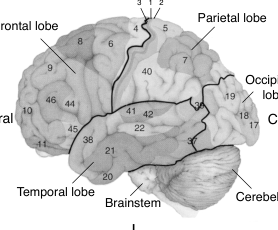</figure>
<figure class="bookfig">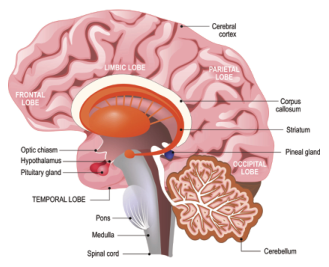</figure>
<h2>3 2 1</h2>
<h3>Thùy trán Thùy đỉnh</h3>
<h3>Chẩm</h3>
<p>thùy</p>
<h3>Phía mũi (Rostral) Phía đuôi (Caudal)</h3>
<h3>Thùy thái dương</h3>
<h3>Thân não Tiểu não</h3>
<h3>Mặt bụng (Ventral)</h3>
<p>Hình 1.2 Phác họa góc nhìn bên của não người bao gồm vỏ não mới, tiểu não và thân não. Vỏ não mới được chia thành bốn thùy. Các con số tương ứng với phân loại các vùng vỏ não của Brodmann. Các hướng thường được nêu như chỉ dẫn trong 1.2B.</p>
<p>Tất nhiên, việc thiết lập các tương quan chức năng của các vùng vỏ não khác nhau là mối quan tâm lớn, một thách thức thúc đẩy nhiều nghiên cứu sinh lý học. Chúng ta có thể suy đoán rằng sự chuyên biệt hóa chức năng đa dạng trong vỏ não mới được tìm thấy qua các phép đo điện sinh lý sẽ được phản ánh qua những khác biệt cấu trúc lớn giữa các vùng vỏ não khác nhau để hỗ trợ các chức năng tâm trí chuyên biệt. Do đó, thật đáng kinh ngạc khi nhận ra rằng điều này không phải vậy. Thay vào đó, người ta thấy rằng các vùng khác nhau của vỏ não mới có một tổ chức nơ-ron chung giống nhau một cách đáng kinh ngạc. Tất cả các vùng vỏ não mới đều có các lớp phân biệt được về mặt giải phẫu như thảo luận dưới đây. Những khác biệt về kiến trúc tế bào, vốn được Brodmann dùng để lập bản đồ vỏ não, thường chỉ là thứ yếu so với kiến trúc chính bên trong vỏ não mới, và những biến thiên này không thể tự giải thích cho các chức năng khác nhau gắn liền với các vùng vỏ não khác nhau.</p>
<p>Vỏ não mới khác biệt ở khía cạnh này so với các phần cổ hơn của não bộ, chẳng hạn như thân não, nơi các khác biệt về cấu trúc rõ rệt hơn nhiều. Điều này được phản ánh qua một loạt các nhân thần kinh (nuclei) dễ phân biệt hơn. Chúng ta thường có thể gán các chức năng bậc thấp cụ thể cho từng nhân trong thân não. Ngược lại với điều này, dường như vỏ não là một cấu trúc xử lý thông tin có năng lực xử lý phổ quát hơn mà chúng ta suy đoán rằng nó cho phép các năng lực tâm trí linh hoạt hơn. Do đó, việc nghiên cứu năng lực xử lý thông tin của các mạng nơ-ron có kiến trúc vỏ não mới là vô cùng thú vị.</p>
<p>1.2.3 Tổ chức phân cấp của vỏ não</p>
<p>Một đặc điểm chung của vỏ não mới là có các vùng cảm giác sơ cấp nơi các đặc trưng cơ bản của tín hiệu cảm giác được biểu diễn, trong khi các vùng khác dường như hỗ trợ các biểu diễn hoặc nhiệm vụ tâm trí phức tạp hơn. Hãy làm nổi bật quan điểm chung này về vỏ não mới bằng ví dụ về thị giác. Vùng thị giác sơ cấp nhận đầu vào chính từ mắt nằm ở đầu đuôi của thùy chẩm và được gọi là V1. Thông tin sau đó được truyền tới các vùng thị giác khác trong thùy chẩm trước khi tách thành hai luồng xử lý chính: luồng lưng (dorsal stream) đi dọc theo con đường từ đỉnh tới trán, và luồng bụng (ventral stream) đi dọc theo thùy thái dương. Người ta lập luận rằng luồng lưng thích nghi đặc biệt cho việc xử lý không gian, trong khi luồng bụng được trang bị tốt cho việc nhận dạng vật thể. Chúng ta sẽ khảo sát một mô hình về xử lý "cái gì và ở đâu" (what-and-where) như vậy ở phần sau của cuốn sách. Điểm chính ở đây là các nhà khoa học não bộ cố gắng xác định các vùng chức năng cụ thể và các kết nối giữa những vùng này.</p>
<p>Để hiểu cách các vùng não khác nhau phối hợp hoạt động với nhau, điều quan trọng là phải thiết lập chi tiết hơn về kết nối giải phẫu và kết nối chức năng giữa các vùng não. Các kết nối giải phẫu không dễ xác lập vì cực kỳ khó theo dõi đường đi của các sợi trục đã nhuộm xuyên qua não trong các lát cắt não (bao gồm cả các nhánh thường có thể đi theo những con đường khác nhau). Đây là một nhiệm vụ nan giải, mặc dù đã được thực hiện trong một số trường hợp riêng lẻ. Có những phương pháp khác để xác lập các kết nối trong não. Chúng bao gồm việc sử dụng các chất hóa học được nơ-ron vận chuyển tới các vùng đích hoặc từ vùng đích về nơi xuất phát. Các mẫu kết nối chức năng, vốn là điều chúng ta đặc biệt quan tâm khi nghiên cứu cách các vùng não phối hợp với nhau, cũng có thể được xác lập bằng cách kích thích và ghi lại đồng thời ở các vùng não khác nhau. Những thí nghiệm như vậy cho thấy sự tương quan trong các mẫu phát xung của nơ-ron ở các vùng não khác nhau nếu chúng có kết nối chức năng với nhau. Ngoài ra, một số tổ chức não bộ chức năng quy mô lớn có thể được hé lộ bằng các kỹ thuật chụp ảnh não như chụp cộng hưởng từ chức năng (fMRI), giúp làm nổi bật các vùng tham gia vào những nhiệm vụ tâm trí nhất định. Những nghiên cứu như vậy đã xác lập rõ ràng rằng các vùng não khác nhau không hoạt động cô lập. Ngược lại, nhiều vùng não chuyên biệt phải phối hợp với nhau để giải quyết các nhiệm vụ tâm trí phức tạp.</p>
<p>Một số nhà khoa học, như Van Essen và các cộng sự, từ lâu đã cố gắng tổng hợp dữ liệu thực nghiệm thành các bản đồ kết nối tương tự như bản đồ trong Hình 1.3. Ví dụ cụ thể này được thực hiện bởi Claus C. Hilgetag, Mark A. O’Neill và Malcolm P. Young. Các nhà nghiên cứu đã sử dụng cách tiếp cận tin học thần kinh (neuroinformatics). Tin học thần kinh đặc biệt quan tâm đến việc thu thập và biểu diễn dữ liệu thực nghiệm trong các cơ sở dữ liệu lớn để có thể áp dụng các phương pháp khai phá dữ liệu hiện đại. Hilgetag và các cộng sự đã xem xét một thuật toán đánh giá nhiều cấu hình khả dĩ, và họ tìm thấy một tập hợp lớn các mẫu kết nối khả dĩ trong vỏ não thị giác thỏa mãn hầu hết các ràng buộc thực nghiệm. Mỗi ô trong Hình 1.3 biểu diễn một vùng vỏ não được phân biệt với các vùng khác dựa trên những cơ sở khác nhau, thường là về mặt giải phẫu và chức năng. Các đường nét liền giữa các ô này biểu diễn các kết nối giải phẫu hoặc chức năng đã biết. Thứ tự từ dưới lên trên chỉ ra đại khái thứ tự phân cấp mà các vùng não này được tiếp xúc trong luồng xử lý thông tin, từ các vùng thị giác sơ cấp thiết lập một số biểu diễn cơ bản trong não đến các vùng vỏ não cao hơn tham gia vào việc nhận dạng vật thể cũng như lập kế hoạch và thực hiện các hành động vận động. Các tác giả cũng tính đến hai con đường xử lý thị giác cơ bản trong biểu diễn của họ, vẽ các vùng não của luồng lưng ở bên trái và luồng bụng ở bên phải. Lưu ý rằng cũng có những tương tác bên trong các con đường này.</p>
<p>Thú vị thay, hầu hết các nghiệm của bài toán tối ưu hóa số học đều cho thấy một số cấu trúc phân cấp nhất quán. Tất cả các nghiệm tìm được đều vi phạm một số ràng buộc thực nghiệm (đường nét đứt trong Hình 1.3), điều này có thể xuất phát từ sự thiếu chính xác của một số kết quả thực nghiệm. Ngoài ra, các kết nối được chỉ ra không phải là một chiều. Người ta đã xác lập rõ ràng rằng một vùng não gửi sợi trục tới một vùng não khác cũng nhận lại các đường chiếu ngược (back-projections) từ các cấu trúc mà nó gửi tới. Những đường chiếu ngược như vậy thường có cùng bậc độ lớn với các đường chiếu xuôi. Những ví dụ thú vị, không có trong Hình 1.3, là cái gọi là các vòng vỏ não–đồi thị (corticothalamic loops). Cấu trúc dưới vỏ</p>
<figure class="bookfig">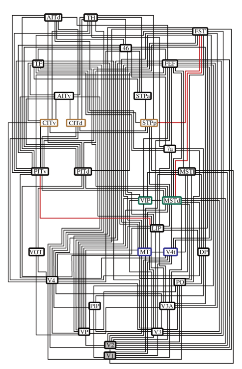</figure>
<p>Hình 1.3 Ví dụ về bản đồ kết nối giữa các vùng vỏ não tham gia xử lý thị giác [in lại với sự cho phép từ C. Hilgetag, M. O’Neill và M. Young, Philosophical Transactions of the Royal Society of London B 355: 71–89 (2000)].</p>
<p>được gọi là đồi thị ban đầu được xem như trạm chuyển tiếp chính mà qua đó thông tin cảm giác chiếu lên vỏ não. Tuy nhiên, ngày càng rõ ràng rằng quan niệm về một trạm chuyển tiếp thuần túy là quá đơn giản vì nhìn chung có nhiều đường chiếu ngược từ vỏ não về đồi thị hơn nhiều so với các đường chiếu xuôi giữa đồi thị và vỏ não. Một số ước tính thậm chí chỉ ra số lượng đường chiếu ngược vượt quá đường chiếu xuôi gấp mười lần. Những hệ quả chức năng cụ thể của các đường chiếu ngược giữa đồi thị và vỏ não cũng như bên trong chính vỏ não vẫn chưa được hiểu rõ. Tuy nhiên, các đặc điểm cấu trúc như vậy nhất quán với những báo cáo về ảnh hưởng của các vùng vỏ não cao hơn lên hoạt động tế bào ở các vùng cảm giác sơ cấp, ví dụ như các hiệu ứng chú ý ở V1.</p>
<p>Trong thập kỷ qua, đã có những nỗ lực ngày càng công phu nhằm tạo ra một sơ đồ đấu dây chi tiết hơn của não bộ, được gọi là hệ kết nối (connectome). Một trong những bản đồ đầy đủ đầu tiên về tất cả các nơ-ron và kết nối đã được thực hiện cho một loài giun tròn có tên Caenorhabditis elegans. Do đó, loài vật này đã trở thành một trong những hệ thống mô hình được nghiên cứu kỹ lưỡng nhất trong khoa học thần kinh. Dự án Não Xanh Châu Âu (European Blue Brain Project) nỗ lực lập bản đồ não chuột, và cũng có những nỗ lực lập bản đồ não người. Một hình ảnh trực quan về các kết nối chất trắng từ 20 đối tượng được trình bày trong Hình 1.4</p>
<figure class="bookfig">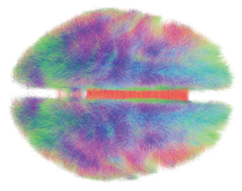</figure>
<p>Hình 1.4 Ví dụ về hệ kết nối (connectome) cấp nhóm của chất trắng ở người. [A. Horn, D. Ostwald, M. Reisert, F. Blankenburg (Tháng 11 năm 2014). ‘The structural-functional connectome and the default mode network of the human brain’. NeuroImage 102(1): 142–51].</p>
<p>1.2.4 Truyền tải dữ liệu nhanh chóng trong não bộ</p>
<p>Từ góc nhìn cấp hệ thống của não bộ, có vẻ như có rất nhiều giai đoạn xử lý trong não khiến việc hoàn thành ngay cả những nhiệm vụ cơ bản như nhận dạng vật thể cũng có thể mất một khoảng thời gian đáng kể. Một minh họa hay về tốc độ thông tin có thể được truyền qua não bộ được cung cấp bởi nghiên cứu của Simon Thorpe và các cộng sự. Họ đã chứng minh rằng các đối tượng người có khả năng phân biệt sự có mặt hay vắng mặt của các nhóm vật thể cụ thể, chẳng hạn như động vật hoặc ô tô, trong các cảnh thị giác được trình chiếu trong thời gian rất ngắn, ngắn tới mức 20 ms. Tỷ lệ phần trăm phản hồi bằng tay chính xác — bao gồm việc nhả nút chỉ khi có một con vật xuất hiện trong một bức ảnh phức tạp được trình chiếu trong 20 ms — được thể hiện cho 15 đối tượng trong Hình 1.5A, vẽ theo thời gian phản ứng trung bình của mỗi đối tượng. Thí nghiệm cho thấy một sự đánh đổi nhất định giữa thời gian phản ứng và độ chính xác nhận dạng, nhưng điểm quan trọng cần lưu ý ở đây là mức độ thực hiện cao đối với thời gian trình chiếu hình ảnh ngắn như vậy.</p>
<p>Khả năng nhận dạng vật thể với thời gian trình chiếu ngắn như vậy không phải là kết quả đáng kinh ngạc duy nhất trong các thí nghiệm này. Các tác giả cũng ghi lại điện não đồ (EEG) trên hộp sọ trong suốt các thí nghiệm. Điện thế liên quan đến sự kiện, được lấy trung bình trên các điện cực vùng trán, được thể hiện trong Hình 1.5B, tách riêng cho các lần trình chiếu ảnh có và không có động vật. Đáp ứng trung bình không khác biệt trong 150 ms đầu tiên, nhưng sau đó trở nên khác biệt rõ rệt. Do đó, đáp ứng của vỏ não trán đã chỉ ra câu trả lời đúng sau 150 ms. Điều này thật đáng kinh ngạc bởi vì đối với những nhiệm vụ phân loại như vậy, chúng ta biết rằng hoạt động thần kinh phải đi qua nhiều tầng của các vùng não. Do đó, mỗi nơ-ron trong luồng xử lý cần thiết cho con đường phân loại phải có khả năng xử lý và chuyển tiếp thông tin trong những khoảng thời gian chỉ vào cỡ 10–20 ms hoặc tương đương.</p>
<p>6</p>
<h3>Tỷ lệ phần trăm chính xác</h3>
<h3>Động vật Không phải động vật Hiệu số</h3>
<p>100 μV</p>
<p>98</p>
<p>96</p>
<p>3</p>
<p>94</p>
<h2>100 200 300</h2>
<p>92</p>
<h3>Thời gian [ms]</h3>
<p>3</p>
<p>90</p>
<h2>350 400 450 500 550 600 88</h2>
<h3>Thời gian phản ứng trung vị [ms]</h3>
<p>6</p>
<p>Hình 1.5 (A) Hiệu suất nhận dạng của 15 đối tượng phải xác định sự hiện diện của một con vật trong cảnh thị giác (chỉ trình chiếu trong 20 ms) so với thời gian phản ứng trung bình của họ. (B) Điện thế liên quan đến sự kiện được lấy trung bình trên các điện cực vùng trán qua 15 đối tượng [vẽ lại từ Thorpe, Fize và Marlow, Nature 381: 520–2 (1996)].</p>
<p>1.2.5 Cấu trúc phân lớp của vỏ não mới</p>
<p>Việc nhuộm thân tế bào hoặc các sợi nhánh/sợi trục (neurites) cho thấy một cấu trúc phân lớp tổng quát của vỏ não mới, như minh họa trong Hình 1.6. Ở đây chúng tôi đưa vào một số nhận xét ngắn gọn về các kỹ thuật nhuộm thực nghiệm nhằm làm rõ các giả định và hạn chế của những kỹ thuật này, vì chúng thường mang tính quyết định để ước lượng các tham số làm cơ sở cho mô hình. Nhiều kỹ thuật nhuộm khác nhau có thể được sử dụng để nhận diện nơ-ron hoặc các bộ phận của nó. Một số kỹ thuật nhuộm, chẳng hạn như phương pháp nhuộm Nissl, chỉ nhuộm màu thân tế bào và không thể dùng để khảo sát tổ chức sợi nhánh hay sợi trục. Phương pháp nhuộm Golgi, dựa trên dung dịch bạc, có thể dùng để quan sát nhiều phần của nơ-ron hơn so với những gì tiếp cận được bằng phương pháp nhuộm Nissl. Khi xem hình minh họa các mô đã nhuộm như vậy, điều quan trọng cần biết là chỉ một tỷ lệ nhỏ nơ-ron, vào khoảng chỉ 1–2%, được nhuộm bằng phương pháp Golgi, và các nơ-ron khác nhau có thể có mức độ tiếp nhận khác nhau đối với thuốc nhuộm này. Hình thái của các lát cắt vỏ não mới được quan sát bằng các kỹ thuật nhuộm khác nhau được minh họa trong Hình 1.6A.</p>
<p>Ngoài các thuốc nhuộm truyền thống này, hiện nay còn có nhiều kỹ thuật nhuộm khác bao gồm tiêm thuốc nhuộm trực tiếp vào nội bào để tiếp cận hầu hết các phần của nơ-ron, nhuộm xuôi dòng (anterograde staining) sử dụng thuốc nhuộm được thân tế bào hấp thu và vận chuyển dọc theo sợi trục, và nhuộm ngược dòng (retrograde staining) sử dụng thuốc nhuộm được các đầu tận cùng của sợi trục hấp thu và vận chuyển ngược về thân tế bào. Hai kỹ thuật nhuộm đầu có thể được sử dụng để xác định phạm vi chiếu của nơ-ron, còn kỹ thuật sau hữu ích để làm nổi bật các nơ-ron chiếu vào một vùng não cụ thể. Việc làm chủ các kỹ thuật như vậy và áp dụng chúng cẩn thận để có được ước lượng về quần thể nơ-ron cũng như tổ chức sợi nhánh hay sợi trục là một chuyên ngành trong khoa học thần kinh mà các nhà khoa học thần kinh tính toán dựa vào rất nhiều để phát triển các mô hình trung thực về mặt sinh học.</p>
<p>Về mặt lịch sử, vỏ não mới được chia thành sáu lớp được đánh số bằng chữ số La Mã từ I đến VI, mặc dù có thể xác định nhiều hơn sáu lớp — thường là 10 lớp nếu tính cả chất trắng — và được đưa vào sơ đồ đánh nhãn lịch sử bằng các phân chia nhỏ hơn. Qua đó, lớp IV được chia nhỏ thành IVA, IVB và IVC, và lớp IVC được chia nhỏ tiếp thành các lớp IVCα và IVCβ. Phạm vi, hay độ dày, của các lớp thay đổi dọc khắp vỏ não mới tới mức một số lớp khó nhận diện nếu không muốn nói là vắng mặt. Các ví dụ về lát cắt đã nhuộm từ các vùng khác nhau trong</p>
<h2>I I I I</h2>
<figure class="bookfig">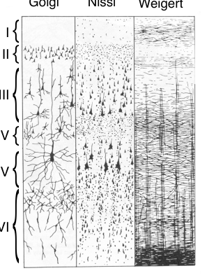</figure>
<figure class="bookfig">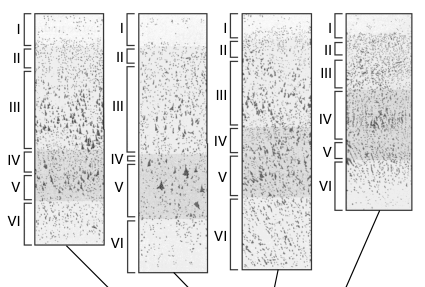</figure>
<h3>Golgi Nissl Weigert { {</h3>
<h2>II II II II</h2>
<h3>III</h3>
<h3>I</h3>
<h2>III III III</h2>
<h3>II</h3>
<p>{</p>
<h3>IV</h3>
<h2>IV IV IV</h2>
<h3>V</h3>
<h3>III</h3>
<h3>V V V</h3>
<h3>VI</h3>
<p>{ {</p>
<h3>VI VI</h3>
<h3>IV</h3>
<h3>VI</h3>
<p>{</p>
<figure class="bookfig">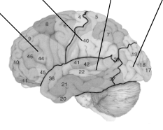</figure>
<h3>V</h3>
<h3>VI</h3>
<p>Hình 1.6 Ví dụ về các lát cắt vỏ não mới đã nhuộm cho thấy cấu trúc phân lớp của vỏ não mới. (A) Minh họa các kỹ thuật nhuộm khác nhau [chuyển thể từ Heimer, The human brain and the spinal cord, Springer, ấn bản lần thứ 2 (1995)]. (B) Kích thước khác nhau của các lớp vỏ não ở các vùng khác nhau [chuyển thể từ Kandel, Schwartz và Jessell, Principles of neural science, McGraw-Hill, ấn bản lần thứ 4 (2000)].</p>
<p>vỏ não mới được trình bày trong Hình 1.6B. Hình thái trực quan trong các lát cắt đã nhuộm giúp xác định các lớp phụ thuộc vào các quần thể thân tế bào và sợi nhánh/sợi trục khác nhau. Lớp I dễ phân biệt vì nó chủ yếu thiếu vắng thân tế bào và cấu thành chủ yếu từ các sợi nhánh/sợi trục. Các lớp khác được đánh dấu bằng sự chiếm ưu thế của các loại tế bào khác nhau.</p>
<p>Thân tế bào của nhiều loại nơ-ron có thể được tìm thấy trong mỗi lớp vỏ não mới, mặc dù sự phân bố có thể được dùng để đánh dấu các lớp ở một mức độ nào đó. Như đã đề cập ở trên, lớp I gần như hoàn toàn thiếu thân tế bào và chủ yếu gồm các sợi nhánh/sợi trục. Tế bào tháp có thể được tìm thấy ở hầu hết các lớp khác của vỏ não mới. Lớp II và III chủ yếu gồm các tế bào tháp nhỏ, mặc dù các tế bào ở lớp III có xu hướng lớn hơn các tế bào ở lớp II. Các nơ-ron hình sao dường như đặc biệt tập trung quanh lớp IV. Ở phần trên của lớp này (IVA và IVB), người ta có thể tìm thấy hỗn hợp các tế bào tháp kích thước trung bình và tế bào hình sao, trong khi lớp sâu hơn (lớp IVC) dường như bị chi phối bởi các nơ-ron hình sao. Các tế bào tháp lớn được tìm thấy chủ yếu ở lớp V. Nhiều loại tế bào khác nhau có thể được tìm thấy ở lớp sâu nhất, lớp VI. Điều này bao gồm các tế bào Martinotti và cả những tế bào có thân tế bào thuôn dài đôi khi được dùng để đánh dấu lớp này. Những tế bào như vậy đôi khi được gọi là nơ-ron hình thoi (fusiform neurons).</p>
<p>1.2.6 Tổ chức dạng cột và các mô-đun vỏ não</p>
<p>Tổ chức nơ-ron trong vỏ não mới được thảo luận cho đến nay chủ yếu dựa trên bằng chứng giải phẫu. Ngoài ra, còn có một tổ chức chức năng quan trọng trong vỏ não mới được hé lộ qua các phép ghi điện sinh lý. Những thí nghiệm này đã chỉ ra rằng các nơ-ron trong một vùng nhỏ của vỏ não đáp ứng với những đặc trưng tương tự của một kích thích đầu vào. Hubel và Wiesel đã nghiên cứu tổ chức như vậy trong vỏ não thị giác sơ cấp (hay vỏ não vân). Các nơ-ron trong vùng vỏ não này đáp ứng với các thanh thị giác chuyển động theo những hướng cụ thể. Chính xác hơn, các nơ-ron trong một cột vỏ não nhỏ vuông góc với các lớp và cách nhau khoảng 30–100 µm đáp ứng với các thanh chuyển động có vị trí võng mạc và hướng định vị cụ thể. Những vùng này được gọi là cột định hướng (orientation columns). Tách biệt với những sắp xếp này là các cột ưu thế mắt (ocular dominance columns), tức các phần vỏ não đáp ứng ưu tiên với đầu vào từ một bên mắt cụ thể (xem Hình 1.7A). Mối quan hệ giữa các cột định hướng và cột ưu thế mắt được minh họa sơ đồ hóa trong Hình 1.7B. Các nơ-ron trong các cột nhỏ ở những phần khác của vỏ não cũng có xu hướng đáp ứng với các đặc trưng kích thích tương tự. Ví dụ, các cột vỏ não trong vỏ não cảm giác thân thể mỗi cột đáp ứng với các phương thức cảm giác cụ thể như xúc giác, nhiệt độ hoặc đau. Do đó, sự phân bố của các nơ-ron với các đặc tính đáp ứng cụ thể không hoàn toàn ngẫu nhiên trong vỏ não, mà dường như có một dạng tổ chức nhất định.</p>
<p>A. Cột ưu thế mắt B. Quan hệ giữa cột ưu thế mắt và cột định hướng</p>
<figure class="bookfig">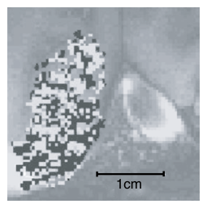</figure>
<p>mắt trái mắt trái mắt phải mắt phải</p>
<h3>D. Bản đồ cảm giác thân thể</h3>
<p>1cm</p>
<h3>C. Bản đồ địa hình của trường thị giác</h3>
<p>trong vỏ não thị giác sơ cấp</p>
<h3>Khuỷu tay Cánh tay Vai Bàn tay Cổ Thân mình</h3>
<h3>Hông</h3>
<h3>Chân</h3>
<h3>Cẳng tay</h3>
<h3>Cổ tay</h3>
<h3>Bàn tay</h3>
<h3>Bàn chân</h3>
<h3>Ngón út</h3>
<h3>Ngón áp út</h3>
<h3>Ngón chân</h3>
<h3>Ngón giữa</h3>
<h3>Trường thị giác trái</h3>
<h2>Ngón trỏ</h2>
<h3>Cơ quan sinh dục</h3>
<h3>Ngón cái</h3>
<h3>Mắt</h3>
<h3>Các ngón tay</h3>
<h3>Mũi</h3>
<h3>Mặt</h3>
<p>5</p>
<h3>V1 phải</h3>
<h3>Môi trên</h3>
<p>3</p>
<h3>Môi dưới</h3>
<p>1 2</p>
<h3>Răng, lợi và hàm</h3>
<h3>Lưỡi</h3>
<p>4</p>
<p>2 3 4 5 6</p>
<p>6 1</p>
<h3>Điểm vàng (Fovea)</h3>
<p>vùng bụng</p>
<p>Hình 1.7 Tổ chức dạng cột và các bản đồ địa hình trong vỏ não mới. (A) Các cột ưu thế mắt được hé lộ qua các nghiên cứu fMRI [từ K. Cheng, R.A. Waggoner và K. Tanaka, Human ocular dominance columns as revealed by high-field functional magnetic resonance imaging, Neuron 32: 359–74, (2001)]. (B) Minh họa sơ đồ về mối quan hệ giữa các cột định hướng và cột ưu thế mắt. (C) Biểu diễn địa hình của trường thị giác trong vỏ não thị giác sơ cấp. (D) Biểu diễn địa hình của các vùng nhạy cảm xúc giác trên cơ thể trong vỏ não cảm giác thân thể. [(C) và (D) chuyển thể từ Kandel, Schwartz và Jessell, Principles of neural science, McGraw-Hill, ấn bản lần thứ 4 (2000).]</p>
<p>Hubel và Wiesel gọi một tập hợp các cột định hướng biểu diễn một bộ đầy đủ các hướng là một siêu cột (hypercolumn). Họ đã chứng minh rằng các siêu cột liền kề trong vỏ não vân đáp ứng với đầu vào thị giác từ các vùng võng mạc liền kề như minh họa trong Hình 1.7C. Các vùng trung tâm của trường thị giác được biểu diễn bởi một diện tích vỏ não lớn hơn so với các vùng ngoại vi. Do đó, ánh xạ giữa trường thị giác và biểu diễn vỏ não không bảo toàn diện tích; vùng thị giác trung tâm được biểu diễn vượt trội, một đặc điểm gọi là sự phóng đại vỏ não (cortical magnification). Tuy nhiên, bản đồ vẫn bảo toàn mối quan hệ giữa các điểm liền kề nhưng không bảo toàn diện tích. Những bản đồ như vậy thường được gọi là bản đồ địa hình (topographic) trong các tài liệu liên quan. Chúng tôi sẽ sử dụng thuật ngữ này theo nghĩa tổng quát, chỉ bất kỳ bản đồ nào của một không gian đặc trưng có các mối quan hệ hệ thống giữa các điểm (đặc trưng) trên bản đồ. Chẳng hạn, bản đồ tần số âm (tonotopic map), vốn là bản đồ các biểu diễn âm thanh, mang tính địa hình khi các tần số liền kề được biểu diễn tại các vị trí liền kề trên bản đồ. Bản thân một siêu cột là một bản đồ địa hình vì nó chứa biểu diễn có trật tự về hướng, và còn nhiều ví dụ khác về những bản đồ như vậy ở vỏ não và các vùng dưới vỏ. Một ví dụ khác được minh họa trong Hình 1.7D, đó là vỏ não cảm giác thân thể biểu diễn đầu vào xúc giác từ các bộ phận cơ thể khác nhau. Vùng vỏ não này một lần nữa biểu diễn các vùng nhạy cảm hơn bằng diện tích vỏ não lớn hơn. Chương 8 sẽ khám phá các cơ chế có thể giải thích cách tổ chức vỏ não như vậy có thể được hình thành thông qua trải nghiệm.</p>
<p>Về mặt khái niệm, việc các nơ-ron trong một vùng nhỏ của vỏ não đáp ứng với các kích thích cảm giác tương tự là rất quan trọng vì chúng ta có thể dùng điều này để đơn giản hóa các mô hình về tổ chức và chức năng vỏ não. Do đó, đối với nhiều mô hình trong cuốn sách này, việc biểu diễn các nơ-ron trong một vùng nhất định như một đơn vị duy nhất là đủ, như sẽ thảo luận thêm trong Chương 5. Với các nơ-ron quần thể như vậy, việc khám phá các cơ chế não bộ khác nhau trở nên dễ dàng hơn nhiều, chẳng hạn như sự hình thành các tổ chức địa hình hoặc sự biến đổi của các biểu diễn.</p>
<p>1.2.7 Kết nối giữa các lớp vỏ não mới</p>
<p>Mẫu kết nối bên trong cấu trúc phân lớp của vỏ não mới đang trở nên ngày càng quan trọng đối với các mô hình tính toán. Các nơ-ron ở lớp IV dường như nhận được một số lượng đặc biệt lớn các sợi hướng tâm (afferents) qua chất trắng từ các vùng dưới vỏ và các vùng vỏ não khác. Do đó, lớp này thường được xem là lớp đầu vào. Lớp V có nhiều tế bào tháp lớn với sợi trục vươn vào chất trắng. Do đó, lớp này dường như đóng góp phần lớn vào đầu ra của quá trình xử lý vỏ não. Vì chất trắng là con đường chính giữa các vùng vỏ não xa nhau và đặc biệt là giữa các vùng vỏ não với dưới vỏ, hiển nhiên có thể gợi ý rằng thông tin chảy qua chất trắng phần lớn chịu trách nhiệm cho việc truyền thông tin toàn cục trong não bộ. Ngược lại, các tế bào tháp ở lớp II và III được cho là chịu trách nhiệm phần lớn cho các kết nối tiếp tuyến (ngang) vỏ não–vỏ não tầm xa. Các tế bào Martinotti ở các lớp sâu của vỏ não mới có sợi trục vươn lên tới lớp I. Những tế bào này có thể chịu trách nhiệm truyền thông tin giữa các mô-đun vỏ não liền kề mà từ đó các nơ-ron tháp ở các lớp trên nhận đầu vào khớp thần kinh. Mặt khác, các nơ-ron hình sao dường như mang tính cục bộ hơn trong phạm vi sợi nhánh/sợi trục của chúng. Do đó, các tế bào hình sao trơn là ứng viên cho các nơ-ron trung gian ức chế. Vai trò của chúng trong việc ổn định quá trình xử lý vỏ não là một vấn đề quan trọng mà chúng ta sẽ thảo luận trong các phần sau của cuốn sách này.</p>
<p>Một phác thảo về các mẫu kết nối trong một cột nhỏ của vỏ não mới được</p>
<h3>II</h3>
<h3>III</h3>
<h3>IV</h3>
<h3>V</h3>
<h3>VI</h3>
<h3>Dưới vỏ Vỏ não Dưới vỏ Đồi thị</h3>
<p>Hình 1.8 Sơ đồ các mẫu kết nối giữa các nơ-ron trong một lớp vỏ não. Thân tế bào để trống biểu diễn các nơ-ron kích thích (có gai) như nơ-ron tháp và nơ-ron hình sao có gai. Sợi trục của chúng được vẽ bằng đường nét liền kết thúc tại các tam giác rỗng biểu diễn đầu tận cùng sợi trục. Các cúc sợi nhánh được chỉ thị bằng vòng tròn rỗng. Các nơ-ron hình sao ức chế (trơn) có thân tế bào và đầu tận cùng khớp thần kinh tô đặc, và sợi trục được biểu diễn bằng đường nét đứt [chuyển thể từ Douglas và Martin, trong Synaptic organization of the brain, Shepherd (chủ biên), Oxford University Press (1990)].</p>
<p>tóm tắt trong Hình 1.8. Tất nhiên, sơ đồ này chỉ là một phép xấp xỉ thô của nhiều chi tiết đã biết qua thực nghiệm. Các nghiên cứu tính toán chi tiết hơn vẫn cần được thực hiện để hiểu rõ hơn vai trò chức năng của những tổ chức như vậy. Một ví dụ về mô hình kết hợp các mạch phân lớp được trình bày trong Hình 1.9. Grossberg và các cộng sự hiện đã liên hệ những mô hình phân lớp như vậy với nhiều phát hiện sinh lý và tâm lý học, mở rộng và thống nhất phần lớn các công trình trước đó của họ. Qua đó, thật thú vị khi lưu ý rằng ngay cả ở cấp độ này, các vùng vỏ não cũng không hoạt động cô lập. Trong ví dụ được trình bày, điều quan trọng là phải xem xét mạng lưới phân lớp kết hợp của vùng vỏ não V1 và V2. Grossberg và các cộng sự đã chứng minh rằng các lớp sâu (4–6) hỗ trợ việc lưu trữ mục tin, chuẩn hóa tín hiệu và tăng cường độ tương phản, còn các lớp nông (2/3) hỗ trợ việc nhóm thông tin xuyên qua các kênh xử lý, một yếu tố quan trọng trong việc hình thành các biểu diễn bậc cao hơn.</p>
<p>1.2.8 Các tham số vỏ não</p>
<p>Việc trích xuất một sơ đồ đấu dây chi tiết của não bộ là điều không khả thi, và cũng không phải là trọng tâm khoa học chính. Ngay cả việc ước lượng các tham số vỏ não, chẳng hạn như số lượng nơ-ron trong một vùng vỏ não, số lượng kết nối và cường độ sinh lý của chúng, thành phần các loại nơ-ron trong một vùng, v.v., thường không dễ dàng trích xuất bằng thực nghiệm. Ngoài ra, hầu hết các ước lượng thực nghiệm chỉ có thể thực hiện cho những trường hợp đặc biệt thuận lợi mà từ đó chúng ta phải khái quát hóa. Việc khái quát hóa các nghiên cứu thực nghiệm như vậy thường bị che khuất bởi sự biến thiên đáng kể của các con số đó trong các vùng vỏ não khác nhau và giữa các loài khác nhau. Ngoài ra, ước lượng của các tham số như vậy thay đổi đáng kể theo các kỹ thuật thực nghiệm khác nhau. Do đó, bạn có thể tự hỏi làm thế nào chúng ta có thể xây dựng các mô hình mạng lưới não bộ trung thực về mặt sinh học mà không có sự hỗ trợ thực nghiệm cần thiết.</p>
<p>2/3</p>
<h3>V2</h3>
<p>4</p>
<p>6</p>
<p>2/3</p>
<h3>V1</h3>
<p>4</p>
<p>6</p>
<h3>LGN</h3>
<p>Hình 1.9 Ví dụ về mô hình phân lớp cho hệ thống thị giác sớm gán các khả năng xử lý thông tin cụ thể cho các mạch phân lớp. [Với sự cho phép từ S. Grossberg, xem Grossberg, Spatial Vision 12: 163–86 (1999).]</p>
<p>Câu trả lời là chúng ta phải tiếp cận việc nghiên cứu các mạng lưới não bộ từ nhiều góc độ khác nhau. Trong cuốn sách này, chúng ta sẽ nghiên cứu chủ yếu các kiến trúc mạng tổng quát và tìm hiểu năng lực tính toán tổng quát của những mạng như vậy. Những nghiên cứu này hé lộ, như chúng ta sẽ thấy xuyên suốt cuốn sách, rằng nhiều khả năng tính toán của mạng lưới không phụ thuộc một cách nghiêm ngặt vào các chi tiết cụ thể và do đó hiện diện trong một loạt các mạng lưới thuộc những lớp nhất định. Hơn nữa, chúng ta sẽ thảo luận về các cơ chế định hướng sự phát triển và tinh chỉnh mạng lưới để đạt được các nhiệm vụ tính toán cụ thể. Vì vậy, chúng ta tiếp cận việc nghiên cứu não bộ từ góc độ trích xuất các nguyên lý tổng quát chi phối tổ chức của não bộ cũng như làm sáng tỏ các hệ quả tính toán của các lớp mạng có cấu trúc liên quan với nhau.</p>
<p>Tất nhiên, để giải thích các chức năng não bộ, chúng ta phải tập trung vào các lớp mạng lưới nhất quán với mạng lưới não bộ. Do đó, các dự đoán của mô hình phải được kiểm định cẩn thận bằng các thí nghiệm trên não thật. Các mô hình trung thực về mặt sinh học cũng có thể được định hướng bởi các ước lượng thực nghiệm về tổ chức vỏ não tổng quát. Trong Bảng 1.1, chúng tôi tóm tắt một số ước lượng sơ bộ về các tham số vỏ não mới rất đáng lưu ý khi thảo luận về các mô hình mạng trung thực về mặt sinh học. Các giá trị được trình bày chỉ cho biết bậc độ lớn, điều rất hữu ích để ghi nhớ khi phát triển các mô hình rất tổng quát, và chúng ta sẽ thấy rằng việc nghiên cứu các mô hình với một số phép xấp xỉ rất thô về tổ chức vỏ não đã mang lại nhiều thông tin bổ ích. Tất nhiên, các ước lượng cụ thể hơn cho từng vùng vỏ não cụ thể được mô hình hóa cần được tính đến cho các nghiên cứu chuyên sâu hơn.</p>
<p>Việc cần bao nhiêu chi tiết về tổ chức vỏ não mới để giải thích những chức năng não bộ nhất định là điều khó đánh giá và phải được xem xét cho từng câu hỏi cụ thể. Một số chi tiết cụ thể chắc chắn là thiết yếu cho những lời giải thích rất chi tiết, trong khi chúng ta có thể thu được nhiều hiểu biết sâu sắc về một số nguyên lý xử lý thông tin trong não bộ từ những nguyên lý tổ chức rất tổng quát. Cũng có những lý do chính đáng để tin rằng bản thân não bộ phải vận hành trong khuôn khổ các kiến trúc tổng quát trái ngược với các kiến trúc cụ thể rất chi tiết được mã hóa, chẳng hạn, về mặt di truyền. Một giả thuyết được chấp nhận rộng rãi là kiến trúc não bộ dựa trên các nguyên lý tổ chức được mã hóa di truyền, trên đó các cơ chế tự tổ chức và học tập dựa trên trải nghiệm tác động để tinh chỉnh</p>
<p>Bảng 1.1 Một số ước lượng sơ bộ về các tham số vỏ não mới [xem ví dụ Abeles, Corticonics: neural circuits of the cerebral cortex, Cambridge University Press (1991)]</p>
<h3>Biến số Giá trị</h3>
<h3>Mật độ nơ-ron 40.000/mm3</h3>
<p>Thành phần nơ-ron:</p>
<h3>Tế bào tháp 75%</h3>
<h3>Tế bào hình sao trơn 15%</h3>
<h3>Tế bào hình sao có gai 10% Mật độ khớp thần kinh 8 × 108/mm3</h3>
<h3>Số khớp thần kinh trên mỗi nơ-ron 1000–20.000</h3>
<h3>Phân bố các loại khớp thần kinh trên tế bào tháp</h3>
<h3>Khớp thần kinh ức chế 10%</h3>
<p>Khớp thần kinh kích thích từ nguồn xa 45% Khớp thần kinh kích thích từ nguồn cục bộ 45% Độ lợi bất đồng bộ (hiệu suất khớp thần kinh tương đối) 0,003–0,2</p>
<h3>Thời lượng của một xung thần kinh ∼1 ms</h3>
<p>Vận tốc xung (sợi trục có bao myelin đường kính 0,02 mm) 120 m/s Chiều dài sợi trục vài mm đến ∼1 m</p>
<p>Khe khớp thần kinh 20 nm Độ trễ truyền qua khớp thần kinh do khuếch tán 0,6 ms tổ chức nhằm đạt được hành vi chính xác và linh hoạt.</p>
<p>1.3 Mô hình là gì?</p>
<p>Mô hình hóa là một phần không thể thiếu của nhiều ngành khoa học, và khoa học thần kinh không phải là ngoại lệ. Một hệ thống càng phức tạp, chúng ta càng phải thực hiện nhiều phép đơn giản hóa và xây dựng các hệ thống ví dụ để mang lại hiểu biết sâu sắc về các khía cạnh của hệ thống phức tạp đang được nghiên cứu. Thuật ngữ "mô hình" xuất hiện thường xuyên trong nhiều bài báo khoa học, và mô tả một loạt cấu trúc vô cùng đa dạng. Một số bài báo trình bày một công thức duy nhất như một mô hình, một số bài báo lấp đầy nhiều trang bằng mã máy tính, và một số dùng lời văn mô tả một hệ thống giả định. Chúng ta cần hiểu mô hình là gì, và đặc biệt là mục đích của các mô hình là gì.</p>
<p>Điều quan trọng là phải phân biệt một mô hình với một giả thuyết hoặc một lý thuyết. Các nhà khoa học phát triển các giả thuyết về các cơ chế nền tảng của một hệ thống vốn phải được kiểm định đối chiếu với thực tế. Để kiểm định một đặc điểm cụ thể của giả thuyết, chúng ta xây dựng một mô hình có thể đánh giá được. Đôi khi chúng ta cố gắng bắt chước các hệ thống thực bằng phương tiện nhân tạo, để có thể kiểm thử hệ thống trong các điều kiện khác nhau, hoặc để thực hiện các phép đo vốn không khả thi trong một hệ thống "thực". Do đó, mô hình là một sự đơn giản hóa của một hệ thống nhằm kiểm định các khía cạnh cụ thể của hệ thống hoặc giả thuyết đó. Một giải thích ngắn gọn về mô hình, rất hữu ích để ghi nhớ xuyên suốt cuốn sách này và trong nghiên cứu, là:</p>
<p>Mô hình là một sự trừu tượng hóa của một hệ thống trong thế giới thực nhằm chứng minh các đặc điểm cụ thể của hệ thống, hoặc khảo sát các câu hỏi cụ thể về hệ thống đó. Hay nói theo thuật ngữ khoa học hơn, mô hình là sự định lượng hóa một giả thuyết để nghiên cứu giả thuyết đó.</p>
<figure class="bookfig">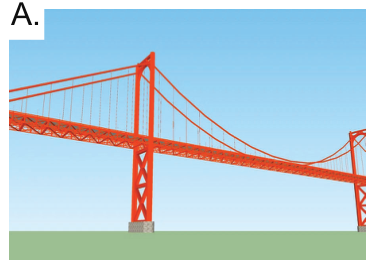</figure>
<figure class="bookfig">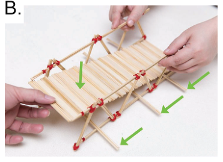</figure>
<p>A. B.</p>
<p>Hình 1.10 (A) Một mô hình máy tính của một tòa nhà mang lại ấn tượng ba chiều về thiết kế [ảnh do 3dwarehouse.sketchup.com cung cấp]. (B) Một mô hình vật lý của một cây cầu có thể dùng để kiểm tra tĩnh học [ảnh do wikiHow.com cung cấp].</p>
<p>Một ví dụ điển hình cho điều này là việc sử dụng các mô hình trong lĩnh vực kiến trúc và kỹ thuật kết cấu. Các mô hình bằng giấy tỷ lệ nhỏ của tòa nhà, hoặc đồ họa máy tính (Hình 1.10) được tạo ra bằng các gói phần mềm đồ họa ba chiều tinh vi, có thể được dùng để có được ấn tượng đầu tiên về diện mạo vật lý và bố cục thẩm mỹ của một thiết kế. Hoặc chúng ta có thể xây dựng một mô hình để kiểm tra một số tính chất tĩnh học của thiết kế. Một mô hình luôn gắn liền với một mục đích cụ thể và phải được nhìn nhận dưới góc độ đó. Mô hình không phải là sự tái tạo lại vật "thực". Mô hình giấy của một ngôi nhà không thể dùng để kiểm tra độ ổn định của công trình — một mục đích mà kỹ sư xây dựng phải dùng các mô hình khác. Trong những mô hình đó, điều quan trọng là phải thu nhỏ tỷ lệ các tính chất vật lý của vật liệu xây dựng bất kể diện mạo vật lý, chẳng hạn như màu sắc của tòa nhà.</p>
<p>1.3.1 Mô hình hiện tượng luận và mô hình giải thích</p>
<p>Trong khoa học, chúng ta thường biểu diễn dữ liệu thực nghiệm dưới dạng đồ thị, rồi tìm cách mô tả các điểm dữ liệu này bằng các hàm toán học (Hình 1.11). Một ví dụ cho việc này là việc "mô hình hóa" các đặc tính đáp ứng (đường cong điều chỉnh) của các nơ-ron trong nhân gối ngoài (LGN), vốn có thể được khớp với một lớp hàm cụ thể gọi là hàm Gabor bằng cách điều chỉnh các tham số của các hàm này. Do đó, hàm Gabor được gọi là "mô hình" của các trường tiếp nhận trong LGN. Tất nhiên, mô hình hiện tượng luận này không cho chúng ta biết gì về các cơ chế sinh lý học nằm bên dưới sự hình thành các trường tiếp nhận và tại sao tế bào lại đáp ứng theo cách cụ thể này, nên một "mô hình" như vậy có vẻ khá hạn chế. Tuy nhiên, việc có một mô tả hàm về các đặc tính đáp ứng của tế bào LGN có thể rất hữu ích. Chẳng hạn, nếu chúng ta muốn nghiên cứu một mô hình của vỏ não thị giác sơ cấp, nơi các tế bào này chiếu tới, thì việc dùng dạng tham số hóa của các đáp ứng LGN làm đầu vào cho mô hình vỏ não sẽ dễ dàng hơn nhiều so với việc phải đưa thêm các mô hình phức tạp của con đường thị giác trước đó vào một cách chi tiết.</p>
<p>Là các nhà khoa học, chúng ta muốn tìm ra gốc rễ của các hiện tượng tự nhiên. Những lời giải thích y x</p>
<p>Hình 1.11 Đồ thị biểu diễn một số điểm dữ liệu, được vẽ bằng ký hiệu ngôi sao, chẳng hạn như dữ liệu thu được từ các phép đo thực nghiệm. Cũng được thể hiện là một mô hình biểu diễn bằng đường kẻ, và đường cong này khớp với dữ liệu khá tốt. Đường cong có thể được suy ra từ một công thức toán học đơn giản khớp với các điểm dữ liệu (mô hình hiện tượng luận), hoặc bắt nguồn từ các mô hình chi tiết hơn của hệ thống nền tảng.</p>
<p>mà chúng ta tìm kiếm thường sâu sắc hơn việc chỉ tham số hóa dữ liệu thực nghiệm bằng các hàm cụ thể. Hầu hết các mô hình trong cuốn sách này nhằm mục đích nắm bắt các quá trình được coi là cơ sở cho năng lực xử lý thông tin của não bộ. Điều này bao gồm mô hình của các nơ-ron đơn lẻ, mạng lưới nơ-ron và các kiến trúc cụ thể nắm bắt tổ chức não bộ. Mô hình được dùng để nghiên cứu các khía cạnh cụ thể của một giả thuyết hoặc lý thuyết, nhưng cũng có thể giúp diễn giải dữ liệu thực nghiệm.</p>
<p>Một vai trò chính của mô hình trong khoa học là minh họa các nguyên lý nằm bên dưới các hiện tượng tự nhiên ở cấp độ khái niệm. Đôi khi mức độ đơn giản hóa và trừu tượng hóa thô sơ đến mức các nhà khoa học gọi đó là mô hình đồ chơi (toy models), mặc dù thuật ngữ này phần nào làm giảm nhẹ tầm quan trọng của những mô hình như vậy trong khoa học. Những đơn giản hóa được thực hiện trong các mô hình như vậy có thể cần thiết để áp dụng các phương pháp giải tích nhằm phân tích mô hình ở chiều sâu mà các mô hình thực tế hơn không thể làm được. Không nên đánh giá thấp tầm quan trọng mang tính giáo dục của những mô hình đồ chơi này, đặc biệt là trong việc minh họa các cơ chế chính của hiện tượng tự nhiên. Làm cho mọi thứ phức tạp lên thì dễ, nhưng thách thức khoa học thực sự là đơn giản hóa các khái niệm lý thuyết.</p>
<p>Thực trạng hiện nay của khoa học thần kinh, vốn vẫn thường mang tính chất thăm dò, thường khiến việc tìm ra đúng cấp độ trừu tượng để khảo sát thỏa đáng các giả thuyết trở nên khó khăn. Một số mô hình trong khoa học thần kinh tính toán chắc chắn đã quá trừu tượng để biện minh cho các tuyên bố rút ra từ chúng. Mặt khác, có một mối nguy hiểm lớn trong việc giữ lại quá nhiều chi tiết không thiết yếu cho lập luận khoa học. Mô hình nhằm mục đích đơn giản hóa dữ liệu thực nghiệm, và qua đó xác định những chi tiết sinh học nào là thiết yếu để giải thích các khía cạnh cụ thể của một hệ thống. Mô hình hóa não bộ không phải là một cuộc thi tái tạo não bộ với tất cả mọi chi tiết trên máy tính. Vẫn còn đáng nghi ngờ về việc chúng ta sẽ lĩnh hội thêm được bao nhiêu về chức năng của não bộ với những mô hình phức tạp và chi tiết như vậy. Mô hình phải được xây dựng cẩn thận, và sự đơn giản hóa hợp lý là kết quả của những nghiên cứu khoa học kỹ lưỡng và sự thấu hiểu các quá trình tự nhiên. Không phải lúc nào cũng có thể biện minh đầy đủ cho mọi giả định, nhưng điều quan trọng ít nhất là phải làm rõ những giả định nào đã được đưa ra và tranh luận về chúng. Mục đích của mô hình là để hiểu rõ hơn chức năng của các hệ thống phức tạp, và sự đơn giản nên là kim chỉ nam chính trong việc thiết kế các mô hình phù hợp. Triết lý này đôi khi được gọi là nguyên lý tiết kiệm (principle of parsimony), còn được biết đến là dao cạo Occam. Về cơ bản, chúng ta muốn mô hình đơn giản nhất có thể, trong khi vẫn nắm bắt được các khía cạnh chính của dữ liệu mà mô hình cần nắm bắt. Chúng ta sẽ thấy nguyên lý này vận hành xuyên suốt cuốn sách, và thảo luận vấn đề này một cách cụ thể cùng với học máy trong Chương 6.</p>
<p>1.3.2 Mô hình trong khoa học thần kinh tính toán</p>
<p>Chúng ta bắt đầu từ đâu khi cố gắng giải thích các chức năng của não bộ? Liệu chúng ta có phải xây dựng lại toàn bộ não bộ bằng các kỹ thuật tính toán để hiểu nó không? Hiện nay, nhiều nhà khoa học thần kinh đang hợp tác trong một dự án đầy tham vọng, mang tên Dự án Não Xanh (Blue Brain Project), nhằm triển khai trên máy tính các mạch vỏ não mới với nhiều chi tiết nhất có thể. Loại dự án chi tiết này có thể cho chúng ta thấy những hiện tượng nổi trội nào có thể kỳ vọng trong não bộ, hoặc những chỗ nào trong tri thức của chúng ta còn khoảng trống cần nghiên cứu thêm. Tuy nhiên, ngay cả khi có thể mô phỏng toàn bộ não bộ trên máy tính, với tất cả mọi chi tiết từ sinh hóa đến tổ chức quy mô lớn, điều này cũng không đương nhiên đồng nghĩa với việc chúng ta có được những lời giải thích tốt hơn về chức năng não bộ. Điều chúng ta tìm kiếm, ít nhất là trong cuốn sách này, là sự lĩnh hội tốt hơn về các cơ chế não bộ ở các cấp độ giải thích. Do đó, điều quan trọng là phải học nghệ thuật trừu tượng hóa, thực hiện những đơn giản hóa phù hợp cho một hệ thống mà không xóa bỏ những đặc điểm quan trọng mà chúng ta muốn hiểu.</p>
<p>Cấp độ phù hợp nhất cho việc khảo sát và trừu tượng hóa mang tính giải thích phụ thuộc vào câu hỏi khoa học đặt ra. Ví dụ, các cơn động kinh được biết là do sự đồng bộ hóa của toàn bộ các vùng não gây ra, và việc hiểu động lực học não bộ ở cấp độ hệ thống là rất quan trọng để hiểu những rối loạn như vậy. Tất nhiên, điều này không nên loại trừ việc tìm kiếm nguyên nhân ở các thang đo nhỏ hơn nhiều. Chúng ta biết rằng bệnh Parkinson do sự chết đi của các nơ-ron dopaminergic ở chất đen (substantia nigra) gây ra, và vai trò của dopamine trong việc khởi phát các hành động vận động rất quan trọng để hiểu toàn bộ quy mô của các khiếm khuyết, cũng như phát triển các phương pháp đối phó tốt hơn với tình trạng đó. Nguyên nhân khiến các nơ-ron dopaminergic chết đi vẫn chưa được biết rõ, và việc tìm ra nguyên nhân — có thể ở cấp độ di truyền trong trường hợp này — là rất quan trọng để cho phép điều trị thực sự bệnh Parkinson. Do đó, nhiều cấp độ phải được khảo sát, và chúng ta phải học cách tạo ra sự kết nối giữa các cấp độ khác nhau để theo dõi cách các hoàn cảnh ở cấp độ thấp, chẳng hạn như các cơ chế ở cấp độ di truyền hoặc các quá trình sinh hóa trong nơ-ron, có thể ảnh hưởng đến các đặc tính của các hệ thống quy mô lớn, chẳng hạn như hành vi của một sinh vật.</p>
<p>1.4 Liệu có tồn tại một lý thuyết về não bộ?</p>
<p>Người ta thường nói rằng não bộ là hệ thống phức tạp nhất mà chúng ta biết trong tự nhiên, và việc hiểu cách nó hoạt động là một nhiệm vụ lớn lao, nếu không muốn nói là bất khả thi. Đúng là việc hiểu cách não bộ hoạt động có vẻ khó khăn khi cố gắng đảo ngược kỹ thuật (reverse engineer) nó. Tuy nhiên, việc đảo ngược kỹ thuật một hệ thống thậm chí có thể khó khăn ngay cả đối với những hệ thống do chính chúng ta tạo ra ngay từ đầu. Ví dụ, hãy tưởng tượng việc đo các trạng thái biến thiên của một bóng bán dẫn trong máy tính khi máy tính đang chạy một trình xử lý văn bản. Những phép đo như vậy mang lại các manh mối quan trọng mà từ đó có thể khám phá ra các quy luật khi những thao tác nhất định được lặp lại trên máy tính. Ngoài ra, các phép đo như vậy giúp có thể khám phá ra các nguyên lý quan trọng chắc chắn đang vận hành trong hệ thống máy tính kỹ thuật số, chẳng hạn như bản chất rời rạc của các biểu diễn thông tin. Tuy nhiên, việc tái tạo một chương trình máy tính như trình xử lý văn bản từ dữ liệu này dường như là một nhiệm vụ nan giải, ngay cả khi chúng ta có thể phân tích đồng thời một số lượng lớn các phép đo từ nhiều bộ phận của máy tính. Việc đảo ngược kỹ thuật trực tiếp não bộ từ dữ liệu dường như còn thách thức hơn nữa, xét đến bản chất sinh học của đối tượng. Tuy nhiên, chúng ta có thể sử dụng dữ liệu để hiểu các nguyên lý xử lý của não bộ, và sau đó chúng ta có thể dùng tri thức này để xây dựng các hệ thống xử lý thông tin theo kiểu não bộ. Cách tiếp cận này được áp dụng trong cuốn sách này.</p>
<p>Tương ứng với điều đó, đã có một sự chuyển dịch nhất định trong cách tiếp cận nghiên cứu của cộng đồng khoa học thần kinh. Những thập kỷ qua là một kỷ nguyên trong khoa học thần kinh được đánh dấu bằng một làn sóng các cuộc khám phá. Các phép ghi bằng vi điện cực từ các tế bào đơn lẻ đã đóng góp đáng kể vào cuộc khám phá này, và việc tìm kiếm các đặc tính đáp ứng của nơ-ron ít nhất cũng thú vị như đối với các nhà thám hiểm như Marco Polo khi khám phá những vùng đất mới. Các kỹ thuật chụp ảnh não mới, chẳng hạn như chụp cộng hưởng từ chức năng (fMRI), giúp có thể theo dõi bộ não sống của các đối tượng đang thực hiện những nhiệm vụ tâm trí cụ thể. Việc khám phá các chức năng não bộ bằng những kỹ thuật như vậy đã đóng vai trò thiết yếu trong việc thúc đẩy tri thức của chúng ta trong khoa học thần kinh. Tuy nhiên, trong khi một núi dữ liệu về các chức năng não bộ đã được thu thập bằng vô số kỹ thuật, chúng ta hiện đang dần bước vào một giai đoạn mới trong khoa học thần kinh: giai đoạn xây dựng các giả thuyết định lượng hơn về các chức năng não bộ. Sự chuyển dịch trọng tâm nghiên cứu khoa học thần kinh này đòi hỏi một số phân tích thực nghiệm cụ thể hơn và các phép kiểm định chuyên biệt hơn cho những giả thuyết đó. Việc xây dựng các giả thuyết định lượng, cùng các phương án thay thế khả dĩ, theo cách sao cho giả thuyết có thể được kiểm định bằng thực nghiệm đang ngày càng trở nên quan trọng.</p>
<p>Kỷ nguyên mới này của khoa học thần kinh nghe rất giống các lĩnh vực khoa học định lượng như hóa học hay vật lý, và trong khi phân tích định lượng sẽ tạo ra những bước đột phá mới trong hiểu biết của chúng ta về các chức năng não bộ, câu hỏi tối hậu là liệu có thể có một lý thuyết về não bộ hay không. Chúng ta có thể đứng trên quan điểm rằng để hiểu não bộ, chúng ta cần hiểu toàn bộ các chi tiết cấu trúc và trạng thái hiện tại của một bộ não cụ thể. Điều này không khác gì trong các lĩnh vực khoa học khác như vật lý. Ví dụ, để mô tả hoàn toàn vật lý học của một chiếc máy bay cụ thể, chúng ta phải biết vị trí và hình dạng chính xác của từng đai ốc và bu lông cùng mọi chi tiết cấu trúc khác cho đến lượng bụi bẩn trên cánh và các chi tiết của luồng không khí mà nó đang bay qua. Một ví dụ khác là một nồi nước sôi, gồm rất nhiều phân tử riêng lẻ ở trạng thái rất động. Việc đo đạc tất cả các chi tiết vi mô trong hai ví dụ cuối dường như là bất khả thi. Thế nhưng, chúng ta có sự hiểu biết khá tốt về quá trình nước sôi và lý do tại sao máy bay có thể bay. Điều này không thể có được chỉ sau một đêm mà là kết quả của nghiên cứu khoa học tận tụy qua nhiều thế kỷ qua. Điều quan trọng dẫn đến thành công trong vật lý, hóa học và các ngành khoa học khác là nhận thức được đúng cấp độ mô tả hoặc đúng cấp độ trừu tượng hóa của một bài toán. Chẳng hạn, chúng ta đã học cách mô tả hành vi trung bình của các phân tử trong một chất khí lý tưởng, điều mang lại cho chúng ta những nền tảng của nhiệt động lực học và cuối cùng dẫn đến sự hiểu biết tốt hơn về cơ chế của dòng khí giúp các kỹ sư chế tạo máy bay hiệu quả hơn. Ngày nay chúng ta biết về bản chất lượng tử thiết yếu của các tương tác nguyên tử và hạ nguyên tử, nhưng việc mô tả đỉnh Everest ở cấp độ này là không hợp lý. Có những lý thuyết địa chất học về sự hình thành núi phù hợp hơn việc áp dụng lý thuyết lượng tử cho những câu hỏi này.</p>
<p>Không có lý do gì để phỏng đoán rằng não bộ không thể tiếp cận được với sự chặt chẽ khoa học tương tự như đã phát triển trong các ngành khác. Não bộ chắc chắn phức tạp hơn một khối khí gồm các nguyên tử tương tác yếu. Tuy nhiên, có những câu hỏi rất cơ bản mà chúng ta có thể tấn công; ví dụ, cách một mạng lưới lưu trữ ký ức để có thể gợi nhớ theo cách liên tưởng. Quả thực, chúng ta đã đạt được những tiến bộ đáng kể với câu hỏi này, xét đến sự hiểu biết của chúng ta về các mạng liên tưởng được thảo luận trong cuốn sách này. Một câu hỏi cơ bản khác là tại sao não bộ lại tương đối ổn định, trong khi vẫn có khả năng thích nghi với các môi trường mới mẻ. Các lý thuyết não bộ thuộc loại này hiện đang nổi lên, và một số lý thuyết đó sẽ được thảo luận trong cuốn sách này. Có thể còn quá sớm để nói về một lý thuyết duy nhất về não bộ, nhưng không có lý do gì để nghi ngờ rằng các lý thuyết sẽ thúc đẩy hiểu biết của chúng ta về các chức năng não bộ. Thật vậy, tôi cho rằng những bước đột phá lớn đã được thực hiện, và cần được đưa đến với đông đảo công chúng hơn. Mục tiêu của cuốn sách này là đóng góp vào nỗ lực đó.</p>
<p>1.4.1 Sự nổi trội và sự thích nghi</p>
<p>Các máy tính tiêu chuẩn, chẳng hạn như PC và máy trạm, có một hoặc nhiều bộ xử lý trung tâm. Mỗi bộ xử lý khá phức tạp, với phần cứng chuyên dụng và các vi chương trình thực thi nhiều chức năng khác nhau, như nạp dữ liệu vào thanh ghi, cộng, nhân và so sánh dữ liệu, cũng như giao tiếp với các thiết bị ngoại vi. Các chức năng cơ bản này có thể được thực thi bằng các lệnh, vốn là dữ liệu nhị phân được nạp vào một mô-đun thông dịch đặc biệt. Việc xử lý dữ liệu phức tạp có thể đạt được bằng cách viết các chương trình, thường khá dài, là những lệnh biểu diễn một tập hợp các chức năng cơ bản của bộ xử lý. Khi giải quyết một nhiệm vụ bằng máy tính, chúng ta phải chỉ thị cho cỗ máy tuân theo chính xác tất cả các bước mà chúng ta đã xác định trước rằng sẽ giải quyết được một bài toán cụ thể. Sự tinh vi của máy tính về cơ bản phản ánh sự khéo léo của lập trình viên.</p>
<p>Ngược lại, việc xử lý thông tin trong não bộ rất khác biệt ở nhiều khía cạnh. Não bộ sử dụng các phần tử xử lý đơn giản hơn máy tính, nhưng với số lượng rất lớn. Để khám phá việc xử lý thông tin trong các mạng nơ-ron, chúng ta chủ yếu sẽ sử dụng các trừu tượng rất đơn giản của nơ-ron thật, mà chúng ta gọi là các nút (nodes) để nhấn mạnh sự đơn giản hóa mạnh mẽ này. Những đơn vị xử lý nền tảng này có thể được hiện thực hóa bằng phần cứng, hoặc mô phỏng trên một máy tính tiêu chuẩn; đối với các thảo luận trong cuốn sách này, điều đó không tạo ra sự khác biệt. Chúng ta giữ cho chức năng của các nút đơn giản nhất có thể để có thể sử dụng rất nhiều nút, thường là hàng trăm, hàng nghìn hoặc thậm chí nhiều hơn. Việc sử dụng nhiều bộ xử lý hoạt động song song đã thúc đẩy thuật ngữ xử lý phân tán song song (parallel distributed processing) trong lĩnh vực này. Tuy nhiên, với thuật ngữ này, người ta dễ lầm tưởng rằng các quá trình là độc lập bởi vì chỉ những quá trình độc lập mới có thể được xử lý song song trên các bộ xử lý khác nhau. Ngược lại với điều này, một thành phần chính của xử lý thông tin trong não bộ là sự tương tác của các nơ-ron, và sự tương tác của các nơ-ron được thực hiện bằng cách lắp ghép chúng thành các mạng lưới lớn.</p>
<p>Chính sự tương tác của các nút cho phép các khả năng xử lý không có ở các nút đơn lẻ. Những khả năng như vậy là ví dụ điển hình cho các tính chất nổi trội (emergent properties) trong các hệ thống dựa trên quy tắc. Sự nổi trội là đặc tính định danh quan trọng nhất của tính toán thần kinh, phân biệt nó với tính toán song song trong khoa học máy tính cổ điển, vốn chủ yếu được thiết kế để tăng tốc xử lý bằng cách phân phối các luồng thuật toán độc lập. Các hệ thống tương tác có thể sở hữu những đặc tính độc đáo vượt xa phép nhân đơn thuần các năng lực của bộ xử lý đơn lẻ. Chính những loại năng lực này là điều chúng ta muốn khám phá và tận dụng với mạng nơ-ron. Những tính chất hệ thống này được gọi là nổi trội để nhấn mạnh rằng chúng ta không mã hóa trực tiếp các tính chất này vào hệ thống. Để hiểu rõ hơn điều này, chúng ta phân biệt việc mô tả một hệ thống ở hai cấp độ: cấp độ các quy tắc cơ bản định nghĩa hệ thống, và cấp độ mô tả nhằm hiểu các hệ quả của những quy tắc đó. Trong nghiên cứu mạng nơ-ron, chúng ta quan tâm đến việc hiểu các hệ quả của những nút tương tác với nhau.</p>
<p>Các lời giải thích khoa học trong quá khứ bị chi phối bởi việc xây dựng một tập hợp các nguyên lý và quy tắc chi phối một hệ thống. Một hệ thống có thể được định nghĩa bởi một tập hợp quy tắc, giống như trong một trò chơi. Trong khoa học, chúng ta giả định rằng các hệ thống tự nhiên được chi phối bởi một tập hợp quy tắc hữu hạn. Cuộc tìm kiếm các quy tắc cơ bản này, hay các định luật nền tảng như cách gọi trong trường hợp này, đã là cuộc truy cầu khoa học trung tâm trong nhiều thế kỷ. Không dễ để xác định những định luật như vậy, nhưng dù sao cũng đã đạt được những tiến bộ to lớn. Các định luật Newton định nghĩa cơ học cổ điển, hay các phương trình Maxwell về điện từ học là những ví dụ tuyệt đẹp về các định luật nền tảng trong tự nhiên. Chúng ta không có một lý thuyết về não bộ ở cấp độ này, và một số người lập luận rằng chúng ta có thể không bao giờ tìm thấy một tập hợp quy tắc đơn giản giải thích các chức năng não bộ. Tuy nhiên, trong nhiều ngành khoa học, chúng ta đang bắt đầu nhận ra rằng ngay cả khi có một tập hợp quy tắc cho trước, chúng ta vẫn có thể chưa có sự hiểu biết đầy đủ về các hệ thống nền tảng. Điều này tương tự như ý tưởng rằng việc biết luật chơi bài Bridge không đủ để trở thành một người chơi Bridge giỏi.</p>
<p>Các quy tắc định nghĩa hoàn toàn một hệ thống, và do đó có thể lập luận rằng mọi tính chất của một hệ thống đều được mã hóa trong các quy tắc. Tuy nhiên, chúng ta phải nhận ra rằng ngay cả một tập hợp nhỏ các quy tắc cũng có thể tạo ra vô số hành vi của hệ thống, những hành vi có thể khó hiểu từ các quy tắc cơ bản do sự hiện diện của các tính chất nổi trội. Khi đó, một cấp độ mô tả khác có thể phù hợp hơn. Ví dụ, nhiệt động lực học có thể mô tả thích đáng hành vi vĩ mô của các hệ thống gồm nhiều hạt tương tác yếu, mặc dù các hệ thống đó bị chi phối bởi các quy tắc vi mô khác. Mặt khác, có những tính chất nổi trội trong các hệ thống Newton không được mô tả tốt bởi nhiệt động lực học cổ điển, chẳng hạn như chất lỏng chảy rối. Sự hiểu biết sâu sắc hơn về các tính chất nổi trội đang trở thành một chủ đề trung tâm trong khoa học thế kỷ XXI.</p>
<p>Tầm quan trọng của các tính chất nổi trội trong mạng lưới các phần tử xử lý đơn giản không phải là sự mở rộng duy nhất đối với các cách tiếp cận xử lý thông tin truyền thống mà chúng tôi cho là thiết yếu để hiểu các chức năng não bộ. Một thành phần quan trọng khác là não bộ là một ví dụ về hệ thống thích nghi (adaptive system). Trong bối cảnh của chúng tôi, chúng tôi định nghĩa sự thích nghi là khả năng của một hệ thống điều chỉnh đáp ứng của nó trước các kích thích bên ngoài phụ thuộc vào các trạng thái môi trường và kỳ vọng của hệ thống. Con người là một ví dụ điển hình về những hệ thống đã làm chủ được các năng lực thích nghi và học tập. Thích nghi và học tập là một lĩnh vực thu hút rất nhiều sự quan tâm trong cộng đồng kỹ thuật. Lý do cho điều này là các hệ thống học tập — tức những hệ thống có khả năng thay đổi hành vi dựa trên các ví dụ để giải quyết các yêu cầu xử lý thông tin — có tiềm năng giải quyết các bài toán mà các phương pháp thuật toán truyền thống chưa thể tạo ra kết quả thỏa đáng. Sự thích nghi có hai ưu điểm lớn. Một là, như vừa đề cập, lời hứa giải quyết các bài toán xử lý thông tin mà thuật toán tường minh vẫn chưa được biết. Ưu điểm thứ hai là mục tiêu của chúng ta nhằm xây dựng các hệ thống có thể đối phó với các môi trường liên tục thay đổi. Rất nhiều nghiên cứu trong lĩnh vực mạng nơ-ron được dành cho việc tìm hiểu sự học. Các ứng dụng kỹ thuật của mạng nơ-ron không bị ràng buộc bởi tính hợp lý sinh học. Ngược lại với điều này, trong cuốn sách này chúng tôi tập trung vào các cơ chế học tập hợp lý về mặt sinh học có thể giúp chúng ta lĩnh hội chức năng của não bộ.</p>
<p>1.4.2 Các cấp độ phân tích</p>
<p>David Marr và Tomaso Poggio đã nhận ra tính hữu ích của việc phân biệt giữa các cấp độ mô tả khác nhau khi giải thích các quá trình, điều mà sau này Marr giải thích rất hay trong cuốn sách Vision (Thị giác) được xuất bản sau khi ông mất. Một vấn đề mà Marr nêu ra trong cuốn sách của mình là những người khác nhau cần những kiểu giải thích khác nhau. Những lời giải thích về chức năng não bộ làm hài lòng một người không chuyên có thể không đủ đối với một nhà sinh lý học hoặc nhà tâm lý học đang cố gắng tìm hiểu ý nghĩa của các quan sát cụ thể trong các thí nghiệm của mình. Một kỹ sư máy tính lại có thể đòi hỏi những kiểu giải thích khác về chức năng não bộ, để có thể triển khai các thuật toán xử lý thông tin cụ thể. Marr cũng nhấn mạnh sự khác biệt giữa việc hiểu máy tính và hiểu tính toán. Biết cách các bit được biểu diễn và biến đổi trong máy tính còn cách rất xa việc hiểu các ứng dụng cấp cao như World Wide Web.</p>
<p>Bên cạnh những cân nhắc quan trọng này đối với bất kỳ lý thuyết giải thích nào, Marr đã đưa ra một sự phân biệt quan trọng giữa các cấp độ phân tích khác nhau. Chúng được tóm tắt trong cuốn sách của Marr như sau:</p>
<p>1. Lý thuyết tính toán (Computational theory): Mục tiêu của phép tính toán là gì, tại sao nó lại phù hợp, và logic của chiến lược mà qua đó nó có thể được thực hiện là gì? 2. Biểu diễn và thuật toán (Representation and algorithm): Lý thuyết tính toán này có thể được triển khai như thế nào? Cụ thể, biểu diễn cho đầu vào và đầu ra là gì, và thuật toán cho phép biến đổi là gì? 3. Hiện thực hóa phần cứng (Hardware implementation): Biểu diễn và thuật toán có thể được hiện thực hóa về mặt vật lý như thế nào? Cấp độ trừu tượng và tổng quát nhất, tức cấp độ lý thuyết tính toán, quan tâm đến việc một quá trình đang cố gắng đạt được điều gì, và cách tiếp cận chính để giải quyết là gì. Trong cuốn sách của mình, Marr thảo luận ví dụ về một máy tính tiền, vốn đang cộng giá của các món hàng được mang tới quầy thanh toán. Lời giải thích này trả lời câu hỏi máy tính tiền đang làm gì, nhưng chúng ta cũng cần hỏi tại sao máy tính tiền lại làm điều đó (cộng các con số) theo cách cụ thể này. Câu trả lời cho câu hỏi này là các quy tắc cộng các con số, thay vì nhân chúng, gói gọn những gì chúng ta cho là phù hợp cho quá trình này; rằng giá của từng món hàng chỉ nên cộng lại với nhau, độc lập chẳng hạn với thứ tự mà các món hàng được đưa ra. Marr gán tầm quan trọng lớn cho cấp độ này và giải thích trong cuốn sách của mình:</p>
<p>Diễn đạt theo một cách khác, một thuật toán có khả năng được hiểu dễ dàng hơn bằng cách hiểu bản chất của bài toán đang được giải quyết hơn là bằng cách xem xét cơ chế (và phần cứng) mà trong đó nó được hiện thân. Việc có một lý thuyết rõ ràng về việc não bộ, hoặc các quá trình não bộ cụ thể, đang cố gắng hoàn thành điều gì có thể là một kim chỉ nam nghiên cứu mạnh mẽ và cần được cân nhắc nhiều hơn trong nghiên cứu khoa học thần kinh.</p>
<p>Cấp độ mô tả tiếp theo quan tâm đến việc phép tính toán, được chỉ định ở cấp độ tính toán, được hiện thực hóa như thế nào ở cấp độ thuật toán. Marr xem nghiên cứu não bộ như một bài toán xử lý thông tin, và ông nhận thức rõ tính lưỡng ngẫu giữa việc biểu diễn và xử lý thông tin. Tức là, để xử lý thông tin, thông tin này trước tiên phải được biểu diễn dưới một dạng cụ thể. Ví dụ, các con số có thể được biểu diễn ở dạng nhị phân hoặc bằng chữ số La Mã. Các biểu diễn rất quan trọng vì thuật toán cụ thể dùng để triển khai một quá trình thường phụ thuộc vào biểu diễn. Nhiều biểu diễn khác nhau là khả dĩ, và thường có nhiều thuật toán cho mỗi loại biểu diễn có thể hoàn thành nhiệm vụ. Các biểu diễn khác nhau có thể ảnh hưởng mạnh mẽ đến thuật toán, và các thuật toán khác nhau có thể có những tính chất khá khác nhau, chẳng hạn như tính bền vững (robustness) hay tính hiệu quả. Các lý thuyết trong khoa học thần kinh tính toán đã tập trung mạnh mẽ vào các biểu diễn, trên đó các thuật toán cụ thể được xây dựng. Cũng cần đề cập rằng có những ví dụ sử dụng lập luận theo chiều ngược lại, chẳng hạn như suy ra các biểu diễn từ các ràng buộc lên thuật toán, như tính bền vững. Rõ ràng, não bộ phải sử dụng các biểu diễn cụ thể và các thuật toán cụ thể, và mục tiêu của khoa học thần kinh tính toán là giúp tìm ra chúng.</p>
<p>Như một lưu ý bên lề, trong định nghĩa về cấp độ biểu diễn và thuật toán này, Marr nói cụ thể về các biểu diễn đầu vào và đầu ra, và quá trình biến đổi, hoặc ánh xạ, đầu vào thành đầu ra. Chúng ta sẽ sớm thảo luận lý do tại sao quan điểm ánh xạ này không thỏa đáng cho các chức năng não bộ. Trong một phần sau của cuốn sách, Marr thảo luận về khó khăn trong việc tìm ra các đặc trưng bất biến từ dữ liệu thay đổi. Đây là một ví dụ khó giải quyết trong khuôn khổ ánh xạ nhưng có thể được giải quyết dễ dàng trong lý thuyết tính toán về não bộ được trình bày dưới đây. Nhưng lời phê bình này không nên làm giảm đi tầm quan trọng của cấp độ giải thích này.</p>
<p>Cấp độ thứ ba trong sơ đồ của Marr quan tâm đến việc hiện thực hóa vật lý của các thuật toán và biểu diễn. Đây là cấp độ mà sinh lý học và lý sinh học thần kinh có thể lên tiếng trực tiếp nhất. Một lần nữa, có thể có nhiều hiện thực hóa vật lý khả dĩ cho một thuật toán cụ thể, và chúng ta muốn hiểu các hiện thực hóa vật lý trong não bộ. Cấp độ giải thích này không chỉ củng cố cho các cấp độ giải thích phía trên, mà còn quan trọng theo đúng nghĩa của nó cho các can thiệp cụ thể. Các cấp độ khác nhau có mối liên hệ lỏng lẻo với nhau, và nguồn cảm hứng cũng như các ràng buộc từ những cấp độ phân tích khác nhau có thể định hướng nghiên cứu ở các cấp độ khác.</p>
<p>Vì cuốn sách này được dự định làm tài liệu hướng dẫn nhập môn, chúng tôi chủ yếu đi theo cách tiếp cận từ dưới lên (bottom-up), thông qua việc tìm hiểu trước tiên về một số tính chất vật lý của hệ thần kinh, cách thông tin được biểu diễn trong não bộ, và một số lý thuyết thuật toán để giải quyết các bài toán cụ thể. Sự hiểu biết rộng về các vấn đề như vậy là cần thiết cho bất kỳ công trình nâng cao nào trong khoa học thần kinh. Tuy nhiên, như Marr đã gợi ý, điều quan trọng là phải định hướng nghiên cứu cụ thể hơn thông qua các lý thuyết tính toán. Do đó, trong phần sau đây chúng tôi phác thảo một lý thuyết tính toán tổng quát về não bộ mà chúng ta sẽ quay lại chi tiết hơn trong chương cuối cùng.</p>
<p>1.5 Một lý thuyết tính toán về não bộ</p>
<p>1.5.1 Tại sao chúng ta có não?</p>
<p>Một trong những câu hỏi đầu tiên chúng ta có thể muốn đặt ra là tại sao chúng ta lại có não ngay từ đầu. Mặc dù câu hỏi này có lẽ đã được đặt ra và trả lời theo nhiều cách khác nhau, góc nhìn của Daniel Wolpert đặc biệt sáng tỏ. Wolpert nghiên cứu kiểm soát cảm giác–vận động; cách mà não bộ có thể giám sát các chuyển động phù hợp trong một thế giới cảm giác phức tạp. Ông lưu ý rằng thực vật sống cuộc đời ổn định mà không cần não và ông cũng kể câu chuyện về một sinh vật biển nhỏ, gọi là hải tiêu (sea squirt), khi mới nở có một hệ thần kinh nhỏ và bơi qua đại dương cho đến khi bám cố định lên một tảng đá nào đó, sau đó nó tự tiêu hóa não của mình. Do đó, dường như động vật cần có não để di chuyển.</p>
<p>Chúng ta có thể đi xa hơn và hỏi tại sao chúng ta muốn di chuyển và tại sao dường như những bộ não ngày càng phức tạp được phát triển mặc dù có những sinh vật đơn giản hơn nhiều vẫn di chuyển được. Việc di chuyển xung quanh có thể giúp tìm kiếm thức ăn và bạn tình để đảm bảo sự sống còn của loài và tạo ra tiến bộ tiến hóa. Về mặt toán học, chúng ta xem điều này là tối đa hóa một hàm mục tiêu. Với góc nhìn này, chúng ta có thể hình dung rằng hệ thần kinh đã phát triển thành những hệ thống ngày càng tinh vi giúp đạt được các mục tiêu tiến hóa của các sinh vật di động. Qua đó, bộ não con người, có thể lập luận là ví dụ phát triển nhất của những hệ thống tiến hóa như vậy, thậm chí còn phát minh ra máy móc để đi lại. Vì vậy, một câu trả lời chính thức hơn cho việc não bộ đang làm gì có thể là:</p>
<p>Não bộ tạo ra hành vi hướng mục tiêu nhằm tối đa hóa xác suất sống sót của chúng ta.</p>
<p>Nếu các bộ não cá thể tồn tại để tối đa hóa năng lực sống sót của sinh vật, vậy tại sao có thể xảy ra chuyện một thiếu niên uống say và ngã xuống vách đá? Lý do là việc tối đa hóa xác suất sống sót tác động ở cấp độ quần thể, chứ không phải ở cấp độ cá thể. Não bộ triển khai một chiến lược cụ thể cho mỗi cá thể, chiến lược đó tự bản thân nó có thể không hoàn hảo nhưng cần thiết để khám phá các giải pháp mới. Việc thử nghiệm với những điều chưa biết là thiết yếu để tìm ra các giải pháp mới, và rốt cuộc tốt hơn, do đó hành vi thích phiêu lưu của một thiếu niên suy cho cùng có thể giúp ích cho xã hội của chúng ta.</p>
<p>1.5.2 Bộ não dự đoán trước (The anticipating brain)</p>
<p>Để não bộ tạo ra hành vi hướng mục tiêu nhằm tối đa hóa xác suất sống sót của chúng ta, hay nói ngắn gọn là để não bộ đưa ra các quyết định tốt, chúng tôi lập luận rằng có hai chiến lược chính. Một là xây dựng một hệ thống phản ứng học hỏi từ các phần thưởng trước đó trong môi trường. Việc học theo thói quen và ra quyết định như vậy phổ biến ở các tác nhân thích nghi bao gồm cả con người. Nếu chúng ta chạm vào một chiếc bếp nóng, chúng ta học rất nhanh cách tránh điều này trong tương lai mà không cần nỗ lực cân nhắc. Một hệ thống như vậy giữ vai trò trung tâm trong việc ra quyết định nhanh và đôi khi được gọi là Hệ thống 1 (System 1).</p>
<p>Chiến lược kia, chiến lược của Hệ thống 2 (System 2), là xây dựng một mô hình về thế giới có thể dùng để tính toán các quyết định tốt. Một hệ thống cân nhắc kỹ lưỡng như vậy tất nhiên phức tạp hơn nhiều và đòi hỏi một hệ thống xử lý thông tin công phu hơn nhiều. Một hệ thống như vậy có khả năng phức tạp hơn nhiều để học, và các quyết định phải được tính toán nên đòi hỏi nhiều nỗ lực tinh thần hơn và có khả năng tốn nhiều thời gian hơn. Tuy nhiên, một lợi thế khổng lồ là hệ thống như vậy có khả năng khái quát hóa tốt hơn cho các tình huống mới mẻ hơn có các quan hệ nhân quả.</p>
<p>Cả hai hệ thống đều phải có khả năng vận hành với những sự bất định. Điều này rất quan trọng vì thế giới thực hoặc có những nguyên nhân ẩn giấu, hoặc quá phức tạp để lĩnh hội, hoặc quá khó để cảm nhận hết mọi chi tiết. Chúng ta sẽ bắt gặp các cuộc thảo luận cụ thể hơn về các hệ thống ra quyết định khác nhau trong Chương 11, và chúng tôi nhấn mạnh một số nền tảng xác suất xuyên suốt cuốn sách. Ở đây chúng tôi phác thảo một số thành phần quan trọng để xây dựng cả hai hệ thống và quan điểm coi não bộ như một hệ thống ra quyết định dự đoán trước.</p>
<p>Về mặt cơ chế, chúng ta có thể bắt đầu mô tả não bộ như một hệ thống ra quyết định cảm nhận thế giới rồi tạo ra các hành động phù hợp để đạt được một số mục tiêu. Theo nghĩa cảm giác–vận động, điều này sẽ đặt câu hỏi làm thế nào một tác nhân có thể tạo ra các chuyển động hướng mục tiêu cho phép sinh vật phản ứng với các tình huống môi trường cụ thể. Não bộ giúp ích trong nhiệm vụ này bằng cách phân tích các biểu diễn cảm giác về môi trường và ánh xạ chúng tới các hành động vận động phù hợp. Chúng ta sẽ chỉ ra trong Chương 7 rằng các mạng nơ-ron truyền thẳng (feedforward) có thể học được các hàm ánh xạ rất phức tạp. Việc nghiên cứu các ánh xạ cảm giác–vận động đóng vai trò quan trọng trong các điều tra khoa học thần kinh. Tuy nhiên, thay vì tập trung vào các hàm đáp ứng khá trực tiếp, mục tiêu của chúng tôi trong cuốn sách này là hiểu các hành động tinh vi của con người được não bộ cho phép thực hiện, và rốt cuộc là toàn bộ tâm trí con người. Luận điểm trung tâm được phác thảo ở đây là các quá trình tư duy tinh vi của con người không thể đạt được bằng các hệ thống ánh xạ truyền thẳng đơn giản, mà đòi hỏi các hệ thống hồi tiếp (feedback) tinh vi.</p>
<p>Để minh họa thêm tầm quan trọng của các hệ thống hồi tiếp, hãy lấy một ví dụ cụ thể. Hãy tưởng tượng chúng ta bước vào một phòng hòa nhạc để nghe giao hưởng. Sau khi bước vào phòng hòa nhạc, chúng ta dễ dàng nhận ra rằng có những chiếc ghế. Những chiếc ghế này chắc chắn trông khác với ghế ở nhà, nhưng mọi người thường không gặp vấn đề gì khi nhận ra chúng là ghế, ngay cả trong một khoảnh khắc rất ngắn ngủi. Người ta có thể làm điều này ngay cả với những lần trình chiếu hình ảnh rất ngắn. Ở trên chúng ta đã thảo luận các nghiên cứu của Simon Thorpe cho thấy các kích thích thị giác có thời lượng rất ngắn đã đủ để cho phép phân loại một số nội dung của kích thích thị giác. Làm thế nào mà điều này khả thi?</p>
<p>Việc phân tích cảnh thị giác khá thách thức từ góc độ xử lý thông tin. Mắt người chứa khoảng 130 triệu tế bào cảm thụ ánh sáng, do đó một ảnh chụp nhanh thị giác trên võng mạc sẽ có 15 MB (megabyte) dữ liệu, và đó là nếu chúng ta chỉ xét các đáp ứng nhị phân của mỗi tế bào cảm thụ ánh sáng. Mặc dù con số này đại khái ngang bằng độ lớn của các máy ảnh kỹ thuật số hiện đại, điều khó hiểu là chúng ta không thể đạt được bất kỳ khả năng phân tích cảnh nào tương đương với các hệ thống máy tính hiện đại, bất chấp thực tế rằng máy tính nhanh hơn hàng triệu lần; một máy tính có thể dễ dàng tính toán vài tỷ phép tính mỗi giây, hay một phép tính trong chưa đầy một nano giây (ns), rất nhanh so với thang thời gian mili giây (ms) của một nơ-ron. Câu trả lời thường được gợi ý, rằng não bộ là một máy tính song song lớn, là chưa đủ, bởi vì chỉ có một số lượng nhỏ các bước có thể được xử lý trong não trong một khoảng thời gian hợp lý giữa cảm giác và tri giác/phản ứng. Chẳng hạn, một chỉ dẫn chung cho thời gian xử lý thần kinh là khoảng 10 ms cho mỗi tầng khớp thần kinh, sao cho chỉ có thể giả định từ 10 đến 100 bước xử lý cho một nhiệm vụ mà con người hình thành tri giác hoặc bắt đầu phản ứng với kích thích. Vấn đề là chúng ta không biết một thuật toán nào có thể hoạt động với ít bước như vậy. Ngay cả những bước cơ bản trong xử lý ảnh truyền thống, như phân đoạn ảnh để tách vật thể khỏi nền, cũng có thể mất hàng nghìn bước tính toán.</p>
<p>Vậy làm thế nào có thể đạt được tri giác nhanh của não bộ? Luận điểm của chúng tôi ở đây là tri giác nhanh chỉ có thể đạt được thông qua tri thức có trước, và bộ não con người vận hành như một hệ thống trí nhớ dự đoán hay dự đoán trước. Nói ngắn gọn, ý tưởng là chúng ta đã có sẵn một vốn tri thức phong phú về môi trường thường gặp của mình, và chúng ta có thể ngoại suy nhanh chóng tri thức này sang các hoàn cảnh riêng lẻ. Vì vậy, phiên bản ngắn gọn của lý thuyết tính toán của chúng tôi có thể được phác thảo như sau:</p>
<p>Não bộ là một hệ thống trí nhớ dự đoán trước học cách biểu diễn các kỳ vọng về thế giới, thứ có thể được dùng để tạo ra hành vi hướng mục tiêu. Ví dụ, mọi người thường biết về các vật thể như ghế và có thể là cả phòng hòa nhạc. Do đó, khi bước vào phòng hòa nhạc, việc phân tích cảnh thị giác trở nên khả thi. Điểm cốt lõi của luận điểm này là não bộ triển khai một dạng xử lý từ trên xuống (top-down), bên cạnh xử lý từ dưới lên (bottom-up) để thu nhận bằng chứng từ môi trường. Chúng ta sẽ thảo luận một số hệ thống từ dưới lên, được mô tả bởi các mạng truyền thẳng, còn gọi là perceptron, có thể nắm bắt một dạng nhận dạng vật thể nào đó. Tuy nhiên, chúng tôi cũng sẽ lập luận rằng dạng này là không đủ để giải thích việc xử lý thông tin kiểu con người. Não bộ không giống hầu hết các cỗ máy chỉ đơn giản phản ứng một cách có thể dự đoán trước các lệnh bên ngoài, nó là một hệ thống tinh vi hơn với động lực học nội tại có thể tương tác với môi trường. Đối với điều này, chúng ta cần xử lý từ trên xuống và sự tham gia tích cực của hệ thống với môi trường. Điều này khiến não bộ phụ thuộc vào lịch sử và các trạng thái hiện tại của nó.</p>
<figure class="bookfig">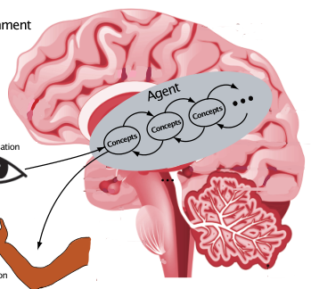</figure>
<h3>Môi trường</h3>
<h3>Tác nhân</h3>
<h3>Khái niệm Khái niệm Khái niệm</h3>
<h3>Cảm giác</h3>
<h3>Nguyên nhân</h3>
<h3>Hành động</h3>
<p>Hình 1.12 Phác thảo cơ bản một mô hình cấp cao về não bộ mô tả giả thuyết nền tảng về xử lý não bộ như một hệ thống trí nhớ phân cấp, dự đoán trước và tích cực.</p>
<p>Phác thảo một số thành phần quan trọng của một hệ thống dự đoán trước như vậy được thể hiện trong Hình 1.12. Điều thiết yếu là tác nhân hành động trong một môi trường thông qua các cảm giác và hành động. Các nguyên nhân trong môi trường, chẳng hạn như vật thể hoặc chuỗi sự kiện, gây ra các cảm giác cụ thể cho sinh vật. Những cảm giác này kích hoạt các biểu diễn đã học trong một tổ chức phân cấp bên trong sinh vật. Trong khi cấp độ xử lý đầu tiên nhắm tới việc khớp sát các cảm giác ngoại biên, mỗi cấp độ tiếp theo được huấn luyện để biểu diễn các khái niệm ngày càng trừu tượng được học từ môi trường bằng cách tối thiểu hóa sai số dự đoán ở mỗi cấp độ. Một biểu diễn phân cấp nhiều lớp như vậy thường được gọi là sâu (deep). Các khái niệm được học, và tự tổ chức, thông qua các hành động mà sinh vật thực hiện trong môi trường.</p>
<p>Trong khi các khái niệm ở các cấp độ khác nhau có thể thay đổi theo thời gian, sự kích hoạt của các khái niệm cấp cao hơn cũng sẽ ảnh hưởng đến kỳ vọng về việc kích hoạt các khái niệm cấp thấp hơn cụ thể. Hệ thống dự đoán trước cố gắng khớp các cảm giác thông qua việc kích hoạt các khái niệm phù hợp ở các cấp độ phân cấp khác nhau. Sự dự đoán trước các cảm giác thông qua các ảnh hưởng từ trên xuống này đóng vai trò cốt yếu đối với năng lực vận hành của sinh vật. Sự dự đoán trước như vậy có thể giải quyết các ràng buộc về thời gian trong tri giác đã đề cập ở trên, vì không phải toàn bộ thông tin đều phải được xử lý từ dưới lên để kích hoạt giả thuyết về những vật thể nào đang có mặt trong môi trường. Độ phức tạp của tri giác được giải quyết bằng việc học trong quá trình phát triển. Các khái niệm có thể được sửa đổi liên tục thông qua việc tối thiểu hóa sai số kỳ vọng giữa các trải nghiệm cảm giác và sự kích hoạt nội tại tương ứng. Đây là khái niệm về mã hóa dự đoán (predictive coding). Karl Friston đã tóm tắt những ý tưởng này trong nguyên lý năng lượng tự do (free energy principle).</p>
<p>Qua đó, não bộ được xem như một mô hình về thế giới dưới dạng một hàm mật độ, và việc tối thiểu hóa sự khác biệt giữa mật độ mô hình này và thế giới thực là một năng lượng tự do biến phân theo nghĩa lý thuyết thông tin. Những lý thuyết cấp cao về não bộ như vậy rất quan trọng để lĩnh hội bức tranh lớn hơn.</p>
<p>Trong khi hầu hết cuộc thảo luận của chúng tôi trong cuốn sách này sẽ chạm chủ yếu tới các cơ chế và nguyên lý cơ bản, người ta có thể đi xa hơn và xem xét việc học chủ động (active learning). Điều quan trọng đối với sự phát triển của một sinh vật dự đoán trước là hành động trong môi trường của nó. Chẳng hạn, các vật thể có thể được chạm vào và xoay để xác minh xem các khái niệm được kích hoạt bởi những cảm giác ban đầu có phù hợp với thông tin bổ sung hay không. Việc kiểm định giả thuyết chủ động này có thể làm giảm đáng kể bài toán học bằng cách tập trung vào dữ liệu liên quan. Sinh vật có thể chủ động khám phá môi trường, điều tối quan trọng trong việc hình thành các khái niệm trong não bộ. Do đó, vòng lặp hành động–tri giác được phác thảo trong Hình 1.12 là một phần không thể thiếu của việc tìm hiểu tâm trí như được nhấn mạnh bởi cộng đồng nhận thức gắn liền với thân thể (embedded cognition).</p>
<p>1.5.3 Mã hóa dự đoán thưa sâu và bộ não bất định</p>
<p>Trong vài năm gần đây đã có một làn sóng đột phá trong lĩnh vực học máy, có thể được xem là một phân ngành của Trí tuệ nhân tạo (AI). Những bước đột phá lớn nhất gần đây dựa trên học sâu (deep learning), về cơ bản là việc ứng dụng các mạng nơ-ron truyền thẳng với nhiều lớp hoặc các mạng nơ-ron hồi quy (recurrent neural networks) có bộ nhớ cổng. Những kỹ thuật này đã mở ra rất nhiều ứng dụng kỹ thuật, và chúng cũng làm sáng tỏ các câu hỏi lý thuyết về việc xây dựng các cỗ máy học dự đoán. Do đó, lĩnh vực này là một nguồn phong phú cho các nền tảng lý thuyết của khoa học thần kinh về các hệ thống thích nghi. Hiện nay có rất nhiều tài liệu để nghiên cứu lĩnh vực đang mở rộng nhanh chóng này, và tôi đã kiềm chế không đi quá sâu vào mảng này để giữ trọng tâm vào mối liên hệ với quá trình xử lý của não bộ và nhận thức. Những mạng sâu như vậy không tương đương với một bộ não. Tuy nhiên, chúng gói gọn những khía cạnh của quá trình xử lý não bộ vốn đã được công nhận là giữ các vai trò quan trọng trong quá trình xử lý của não bộ. Chúng tôi muốn tóm tắt một số khía cạnh ở đây ngay từ đầu để giữ cho các cuộc thảo luận tiếp theo được tập trung.</p>
<p>Trọng tâm của sự thành công của các mô hình học sâu là khả năng học từ nhiều dữ liệu các biểu diễn phân cấp nhằm ánh xạ các biểu diễn cảm giác tới các khái niệm cấp cao hơn. Đây chắc chắn là một khía cạnh quan trọng cần xem xét khi thảo luận về các cấu trúc não bộ và các nhiệm vụ mà não bộ phải làm chủ. Nhờ sự sẵn có của một số tập dữ liệu có nhãn rất lớn, đặc biệt là ImageNet, người ta đã có thể chứng minh rằng các mạng sâu như vậy có thể học để đạt hiệu suất cao trong các nhiệm vụ nhận dạng thị giác. Trong khi minh chứng này đã khơi mào nhiều ứng dụng kỹ thuật mới, đối với chúng ta điều này quan trọng vì nó chứng minh năng lực tổng quát và những thách thức của các mạng phân cấp lớn. Thú vị thay, các mạng sâu cũng đã được chứng minh là có tương quan với rất nhiều khía cạnh của biểu diễn thị giác phân cấp trong não bộ. Do đó, nguyên lý học biểu diễn phân cấp là một nguyên lý quan trọng đối với khoa học thần kinh.</p>
<p>Tất nhiên, khi so sánh một mạng học máy cụ thể với não bộ vượt ra ngoài hiểu biết nguyên lý về học biểu diễn, một thách thức được công nhận rộng rãi là thế giới thực phức tạp hơn nhiều và con người chúng ta có thể học với số lượng mẫu ít hơn rất nhiều so với các mô hình học có giám sát như vậy. Hơn nữa, người ta cũng công nhận rộng rãi rằng sự linh hoạt của tâm trí con người vượt trội hơn hẳn so với các giải pháp học máy vốn thường rất chuyên biệt cho các nhiệm vụ cụ thể như gán nhãn cho một bức ảnh. Hiện nay có rất nhiều tiến bộ gần đây trong việc tìm hiểu cách học tự giám sát (self-supervised learning) có thể loại bỏ nhu cầu về dữ liệu có nhãn lớn. Các phương pháp học biểu diễn tự giám sát gần đây được xây dựng xung quanh ý tưởng huấn luyện một mạng sâu trên các biến thể của mẫu. Ý tưởng học để tối thiểu hóa sai số dự đoán trong biểu diễn của mạng này phần nào giống với ý tưởng mã hóa dự đoán mà chúng ta sẽ trình bày chi tiết hơn sau này. Trong cuộc thảo luận này, điểm trung tâm cũng sẽ là các biểu diễn đã học và hoạt động não bộ kết quả mang tính thưa (sparse). Do đó, mã hóa thưa (sparse coding) là một nguyên lý khác đã được thúc đẩy trong nhiều năm trong khoa học thần kinh.</p>
<p>Phần lớn cuốn sách xem xét việc hiện thực hóa cơ chế của một mô hình thế giới trong não bộ. Điều này bao gồm cách các nơ-ron có thể tạo ra xung thần kinh và cách những xung đó có thể được dùng để xử lý thông tin và thay đổi hiệu suất khớp thần kinh được cho là hiện thực hóa việc học về mặt vật lý. Điều này cũng bao gồm tổ chức và xử lý thông tin trong các mạng nơ-ron như học biểu diễn đã thảo luận cho đến nay. Cách tiếp cận này hiện có thể nói ít hơn về việc mô tả tâm trí với khả năng xử lý ký hiệu (symbolic processing) của nó. Lĩnh vực này của khoa học nhận thức là một cấp độ mô hình hóa não bộ hoàn toàn khác. Mặc dù việc xử lý chi tiết các mô hình nhận thức nằm ngoài phạm vi của cuốn sách này, chúng ta sẽ thảo luận một số kiến thức nền tảng có thể thu hẹp khoảng cách giữa các quá trình não bộ ký hiệu và dưới ký hiệu (subsymbolic).</p>
<p>Khi thảo luận một số nền tảng của một dạng suy luận ký hiệu nào đó, điều quan trọng là ngay từ đầu phải đưa vào một khía cạnh khác của việc mô hình hóa thế giới mà dường như là một nguyên lý nền tảng khác cần được đưa vào các lý thuyết về não bộ. Khía cạnh và thách thức này đối với não bộ là sự bất định (uncertainty) trong thế giới. Qua đó, không quan trọng liệu có tồn tại các quá trình ngẫu nhiên nền tảng không thể dự đoán được (tính bất định không thể giản lược), hay sự bất định biểu diễn giới hạn của các quan sát hoặc các quá trình ẩn giấu (các giới hạn nhận thức luận). Các phép đo cảm giác có thể bất định vì nhiều lý do. Một yếu tố lớn là các biểu diễn cảm giác của một vật thể trong thế giới có thể mơ hồ do sự tương đồng giữa các vật thể. Và các cơ quan cảm thụ cũng thay đổi theo thời gian khiến cùng một vật thể có thể gợi ra các đáp ứng khác nhau. Nhiều quá trình trong tự nhiên, bao gồm các quá trình não bộ, vốn dĩ có nhiễu. Điều này được phản ánh qua thực tế rằng kết quả của các phép đo lặp lại thường dao động. Bất kể nguồn gốc của sự bất định là gì, việc đưa vào cấu trúc toán học của các biến ngẫu nhiên, cùng hệ thống hình thức tương ứng của lý thuyết xác suất, đã là một bước tiến lớn trong khoa học và là một ngôn ngữ hữu ích cho khoa học thần kinh lý thuyết.</p>
<p>Nếu chúng ta chấp nhận rằng mô hình hóa xác suất là thiết yếu cho các mô hình tiên tiến mà chúng ta tin rằng não bộ biểu diễn, thì có một nguyên lý cuối cùng mà chúng tôi muốn nhấn mạnh là quan trọng cho sự tiến bộ hơn nữa trong việc hiểu não bộ và thậm chí có thể thúc đẩy chính ngành học máy. Nguyên lý này là mô hình hóa nhân quả (causal modelling). Rõ ràng là rất nhiều suy luận của con người có một dạng cấu trúc mà chúng ta cảm nhận là mang tính nhân quả. Tính nhân quả theo truyền thống không được biểu diễn tốt trong lý thuyết xác suất, vốn thường tập trung vào các ứng dụng của tương quan. Chúng tôi sẽ lập luận rằng việc xây dựng các mô hình nhân quả ưu việt hơn các mô hình xác suất tổng quát hơn. Những mô hình như vậy có thể được hình thức hóa bằng các mô hình nhân quả Bayes mà chúng ta sẽ giới thiệu ngắn gọn trong Chương 12. Những mô hình đó thường bắt đầu dựa trên các thực thể ký hiệu biểu diễn tri thức ngữ nghĩa, và việc thu hẹp khoảng cách giữa học tri thức ngữ nghĩa và suy luận nhân quả là một lĩnh vực của các cuộc tranh luận khoa học hiện nay.</p><h2 class="chapter-title">Phần I · Chương 2 — Lập trình khoa học với Python</h2>
<h2>2 Lập trình khoa học với Python</h2>
<p>Python là ngôn ngữ lập trình mà chúng tôi sử dụng để minh họa phần lớn các khái niệm được thảo luận trong cuốn sách này. Python là một ngôn ngữ lập trình bậc cao, và chúng tôi sẽ sử dụng nó thuần túy như một công cụ khoa học. Chúng ta sẽ đi qua một chương trình chứa hầu hết các lệnh và cấu trúc được sử dụng trong sách.</p>
<p>2.1 Môi trường lập trình Python</p>
<p>Phần giới thiệu ngắn gọn về lập trình khoa học với Python này tập trung vào các phép toán được sử dụng trong cuốn sách. Điều này bao gồm việc làm việc với vectơ và ma trận dựa trên thư viện NumPy. Python là một ngôn ngữ lập trình bậc cao tương tự như Matlab và R, và ngày càng trở nên phổ biến. Lý do chính chúng tôi sử dụng Python trong cuốn sách này là vì nó miễn phí và hiện cung cấp sự hỗ trợ đáng kể cho ngày càng nhiều lĩnh vực như học máy, thống kê, thị giác máy tính và tâm vật lý học. Chúng tôi giả định người đọc đã quen thuộc phần nào với các khái niệm lập trình và tập trung vào phần giới thiệu nhanh về môi trường cụ thể cùng các thư viện hỗ trợ được dùng trong sách.</p>
<p>Các chương trình trong cuốn sách này dựa trên Python 3, và chúng tôi giả định rằng tất cả các gói liên quan đã được cài đặt. Tại thời điểm này, chúng ta cần các thư viện NumPy và Matplotlib cũng như một môi trường lập trình như Jupyter hoặc Spyder. Tài liệu hướng dẫn chi tiết và bài học cho Python cùng các công cụ liên quan có sẵn tại https://www.python.org.</p>
<p>Chúng ta bắt đầu ở đây bằng việc sử dụng một môi trường lập trình có tên là Jupyter. Cụ thể hơn, trong chương này chúng ta sẽ sử dụng Jupyter Notebook, cho phép viết mã với trình soạn thảo đơn giản và hiển thị chú thích cùng kết quả đầu ra trong cùng một tệp. Jupyter được truy cập qua trình duyệt và chứa các ô nhập liệu để thêm mã và chú thích. Sau đó, các ô này có thể được thực thi và phản hồi từ lệnh in hoặc biểu đồ sẽ được hiển thị ngay bên dưới mỗi khối trong cùng một tài liệu. Điều này rất hữu ích khi ghi chép các đoạn mã ngắn và bài tập nhỏ. Một ví dụ về chương trình trong môi trường Jupyter được minh họa ở bên trái trong Hình 2.1.</p>
<p>Các tệp Jupyter có phần mở rộng .ipynb và có thể được tải trong môi trường trình duyệt. Chương trình Jupyter notebook có giao diện để khởi chạy trình thông dịch Python và chạy từng phần riêng lẻ hoặc toàn bộ mã. Phần tiêu đề có chú thích được tạo ra bằng cách thực thi một ô văn bản (text cell). Điều này hữu ích cho việc tạo tài liệu hướng dẫn. Ngoài ra, notebook có thể được phân phối kèm theo kết quả đầu ra, giúp thuận tiện cho việc trao đổi về mã nguồn. Các con số ở bên trái cho thấy số thứ tự liên tiếp của các lần gọi tới trình thông dịch. Trong ví dụ minh họa, ô chương trình đầu tiên được chạy trước tiên để tải các thư viện, và sau đó ô thứ hai được chạy hai lần; đó là lý do tại sao ký hiệu [3] được hiển thị ở phía trước ô này.</p>
<p>Nguyên lý Khoa học Thần kinh Tính toán. Ấn bản thứ ba. Thomas P. Trappenberg, Oxford University Press. © Oxford University Press 2023. DOI:10.1093/oso/9780192869364.003.0002</p>
<figure class="bookfig"></figure>
<figure class="bookfig">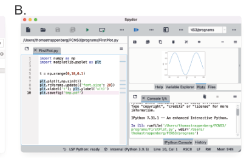</figure>
<p>Hình 2.1 (A) Một ví dụ về chương trình Python trong Jupyter notebook và (B) môi trường lập trình Spyder.</p>
<p>Khi chương trình đang chạy, ký hiệu [∗] sẽ được hiển thị. Ô thứ hai tạo ra kết quả đầu ra là 4, được hiển thị ngay bên dưới ô đó. Trong các phần sau, chúng tôi đơn giản cung cấp các chương trình Python dưới dạng tệp .py. Khi đó sẽ dễ dàng hơn để sử dụng các môi trường lập trình khác tùy chọn, bao gồm cả việc sao chép mã vào Jupyter notebook. Một ví dụ về môi trường nâng cao hơn với hỗ trợ lập trình truyền thống hơn là Spyder. Công cụ này bao gồm trình soạn thảo, cửa sổ dòng lệnh và các hỗ trợ lập trình bổ sung như hiển thị biến và hỗ trợ gỡ lỗi. Chương trình này mô phỏng môi trường lập trình truyền thống hơn như những môi trường có trong Matlab và R. Một góc nhìn ví dụ về Spyder được minh họa ở bên phải trong Hình 2.1. Ở bên trái trong môi trường này là cửa sổ soạn thảo có hiển thị tô sáng cú pháp để viết chương trình, và ở góc dưới bên phải là bảng điều khiển (console) để khởi chạy các lệnh dòng như thực thi và thông dịch mã. Chương trình ví dụ vẽ một đường cong sin, cũng được hiển thị ngay trên đó. Vì Python là ngôn ngữ thông dịch, ta có thể làm việc với các chương trình theo cách tương tác, chẳng hạn như chạy một mô phỏng rồi sau đó vẽ đồ thị kết quả theo nhiều cách khác nhau. Môi trường phát triển Spyder được khuyến nghị cho các dự án lớn hơn.</p>
<p>2.2 Các thành phần ngôn ngữ cơ bản</p>
<p>2.2.1 Các kiểu dữ liệu cơ bản và mảng</p>
<p>Là một ngôn ngữ lập trình đa năng, Python chứa các khái niệm lập trình cơ bản như kiểu dữ liệu cơ bản, vòng lặp, câu lệnh điều kiện và chương trình con. Chúng tôi sẽ điểm qua ngắn gọn cú pháp liên quan kèm các ví dụ được cung cấp trong tệp FirstProgram.ipynb. Ngoài các cấu trúc lập trình cơ bản đó, mọi ngôn ngữ lập trình bậc cao như Python đều được hỗ trợ bởi một số lượng lớn thư viện cho phép nhiều phong cách lập trình và các hàm chuyên dụng. Ở đây chúng tôi chủ yếu quan tâm đến tính toán khoa học cơ bản, trái ngược với lập trình hệ thống, và vì thế chúng ta cần các mảng đa chiều. Do đó, chúng tôi xây dựng hầu hết các chương trình trong cuốn sách này dựa trên thư viện NumPy. NumPy cung cấp hỗ trợ cơ bản cho các cấu trúc và hàm khoa học phổ biến như các hàm lượng giác và bộ sinh số ngẫu nhiên. Quan trọng nhất, nó cung cấp hỗ trợ cho các mảng N chiều. NumPy đã trở thành tiêu chuẩn trong tính toán khoa học với Python. Chúng tôi sẽ sử dụng các cấu trúc đã được thiết lập vững chắc này để triển khai vectơ, ma trận và các mảng nhiều chiều hơn. Đôi khi chúng tôi cũng sử dụng thư viện SciPy, vốn được xây dựng trên nền tảng NumPy với nhiều hàm khoa học hơn như các thủ tục tích phân số và thống kê.</p>
<p>Một cách thức phổ biến để nhập thư viện NumPy vào chương trình của chúng ta là ánh xạ nó tới không gian tên ‘np’ bằng lệnh import numpy as np. Bằng cách này, các phương thức hoặc hàm cụ thể của NumPy được truy cập với tiền tố np. Bên cạnh việc nhập NumPy, chúng tôi luôn nhập thêm một thư viện vẽ đồ thị vì việc vẽ kết quả sẽ rất hữu ích và là cách phổ biến để truyền đạt kết quả. Cụ thể, chúng tôi sử dụng gói PyPlot phổ biến của thư viện Matplotlib. Do đó, chúng ta gần như luôn bắt đầu chương trình của mình bằng hai dòng lệnh</p>
<p>Listing 2.1 FirstProgram.ipynb (phần 1) 1 import numpy as np 2 import m a t p l o t l i b . pyplot as p l t</p>
<p>Hãy cùng đi qua chương trình trong môi trường Jupyter có tên FirstProgram. Những dòng mã này nhằm mục đích chỉ ra cú pháp của các cấu trúc lập trình cơ bản mà chúng ta cần trong cuốn sách này. Chúng ta bắt đầu bằng việc minh họa các kiểu dữ liệu cơ bản sẽ được sử dụng thường xuyên. Chúng ta chủ yếu làm việc với dữ liệu số, trong đó vô hướng (scalar) là ví dụ đơn giản nhất,</p>
<p>Listing 2.2 FirstProgram.ipynb (phần 2) 1 # b a s i c data types 2 a S c a l a r = 4 3 p r i n t ( a S c a l a r )</p>
<p>>> 4</p>
<p>Ở đây chúng tôi hiển thị cả mã nguồn lẫn phản hồi khi chạy chương trình với hàm print(). Các dòng chú thích có thể được thêm vào bằng ký hiệu dấu thăng #. Kiểu của các biến được gán động trong Python. Nghĩa là, một tên biến và vùng nhớ tương ứng được cấp phát ngay lần đầu tiên biến có tên này được sử dụng ở vế trái của toán tử gán ‘=’. Trong trường hợp này, đó là một giá trị số nguyên, nhưng chúng ta cũng có thể gán một biến giá trị thực với aScalar=4.0.</p>
<p>Phần lớn thời gian chúng ta sẽ làm việc trên một tập hợp lớn dữ liệu nên cần có một khái niệm để truy cập tập hợp dữ liệu đó. Trong Python, có một số dạng danh sách (list). Ví dụ, một danh sách một chiều cơ bản được tạo trong Python chuẩn bằng cách đặt một danh sách phân tách bởi dấu phẩy trong cặp ngoặc vuông như</p>
<p>Listing 2.3 FirstProgram.ipynb (phần 3) 1 a L i s t = [ 1 , 2 , 3 ] 2 p r i n t ( a L i s t )</p>
<p>>> [1, 2, 3]</p>
<p>Những danh sách như vậy hữu ích để thu thập dữ liệu. Tuy nhiên, vì chúng ta cần thực hiện các phép toán học được định nghĩa chặt chẽ trên các danh sách dữ liệu, việc đưa vào một cấu trúc linh hoạt hơn cho các tập dữ liệu đó dưới dạng mảng NumPy sẽ rất hữu ích.</p>
<p>Trước khi tiếp tục, có lẽ nên ôn lại một số quy ước đặt tên. Một cấu trúc dữ liệu cơ bản cho một tập hợp dữ liệu được gọi là ‘mảng’ (array) trong khoa học máy tính. Trái ngược với các khái niệm cấu trúc dữ liệu đơn giản này, các khái niệm toán học về vectơ hoặc ma trận khác ở chỗ chúng bao gồm các phép toán được định nghĩa chặt chẽ trên những cấu trúc dữ liệu đó. Do đó, khái niệm toán học về vectơ là một mảng một chiều mà trên đó một số phép toán được định nghĩa, chẳng hạn như cộng hai vectơ cùng chiều bằng cách cộng các thành phần của chúng, hoặc nhân một vectơ với một vô hướng bằng cách nhân từng thành phần của vectơ với vô hướng đó. Tương tự, ma trận là một cấu trúc hai chiều với các phép toán được định nghĩa tương ứng. Chúng ta thậm chí có thể tổng quát hóa điều này lên số chiều cao hơn, và các cấu trúc toán học như vậy được gọi là ten-xơ (tensor). Sẽ rất thuận tiện nếu xem phép toán vectơ hoặc ma trận chỉ là một trường hợp đặc biệt của các phép toán ten-xơ tổng quát.</p>
<p>Để tạo một mảng NumPy, chúng ta sử dụng hàm array() của NumPy. Ví dụ, một danh sách Python 1 chiều có thể được chuyển thành một vectơ NumPy như sau,</p>
<p>Listing 2.4 FirstProgram.ipynb (phần 4) 1 aVector = np . a r r a y ( [ 1 , 2 , 3 ] ) 2 p r i n t ( aVector ) 3 p r i n t ( aVector [ 0 ] , aVector [ −1]) 4 p r i n t ( aVector [ 1 : 3 ] )</p>
<p>>> [1 2 3]</p>
<p>1 3 [2 3]</p>
<p>Như minh họa trong câu lệnh print thứ hai, chúng ta có thể truy cập một phần tử của mảng bằng các chỉ số đặt trong ngoặc vuông. Phần tử đầu tiên trong mảng có chỉ số 0. Do đó, lệnh in trả về giá trị 1. Sẽ rất hữu ích nếu coi chỉ số này là độ dời (offset) tính từ phần tử đầu tiên. Chỉ số −1 truy cập phần tử cuối cùng trong vectơ. Lệnh print thứ ba cho thấy cách truy cập một dải chỉ số. Đáng tiếc là trong NumPy không có sự phân biệt giữa vectơ hàng và vectơ cột, vì vậy điều này cần được cân nhắc kỹ hơn khi sự phân biệt là cần thiết. Chúng ta sẽ quay lại điểm này ngay sau đây.</p>
<p>Tương tự như việc định nghĩa vectơ bằng NumPy, một mảng hai chiều kèm theo định nghĩa phù hợp về các phép toán học được gọi là ma trận và có thể được định nghĩa và truy cập bằng NumPy như sau,</p>
<p>Listing 2.5 FirstProgram.ipynb (phần 5) 1 aMatrix = np . a r r a y ( [ [ 1 , 2 , 3 ] , [ 4 , 5 , 6 ] ] ) 2 p r i n t ( aMatrix ) 3 p r i n t ( aMatrix [ 1 , 2 ] )</p>
<p>>> [[1 2 3]</p>
<p>[4 5 6]] 6</p>
<p>Ký hiệu này cho thấy một mảng hai chiều được xem trong cú pháp Python như một danh sách một chiều chứa các danh sách một chiều. Lưu ý cách các phần tử riêng lẻ của mảng được truy cập; chỉ số đầu tiên chỉ định vị trí theo cột (hàng thứ mấy), và chỉ số thứ hai chỉ định vị trí theo hàng (cột thứ mấy). Điều này tương đương với ký hiệu toán học phổ biến cho ma trận. Với điều này, chúng ta có thể chỉnh lại ký hiệu cho các vectơ ở trên bằng cách định nghĩa một vectơ hàng như sau</p>
<p>Listing 2.6 FirstProgram.ipynb (phần 6a) 1 aVector = np . a r r a y ( [ [ 1 , 2 , 3 ] ] )</p>
<p>Sau đó, nó có thể được chuyển đổi thành một vectơ cột với sự trợ giúp của phép chuyển vị</p>
<p>Listing 2.7 FirstProgram.ipynb (phần 6b) 1 p r i n t ( aVector . T)</p>
<p>>> [[1]</p>
<p>[2] [3]]</p>
<p>Sau khi định nghĩa các mảng NumPy như vậy, chúng ta có thể áp dụng các hàm toán học lên các mảng NumPy này. Ví dụ, một số phép toán theo từng phần tử (element-wise) trên ma trận là</p>
<p>Listing 2.8 FirstProgram.ipynb (phần 7) 1 matrix2 = np . a r r a y ( [ [ 5 , 5 , 6 ] , [ 7 , 8 , 9 ] ] ) 2 r e s u l t 1 = aMatrix ∗matrix2 # element−wise 3 r e s u l t 2 = aMatrix ∗∗3 # element−wise e x p o n e n t i a t i o n : 4 r e s u l t 3 = aMatrix > 3 # f i n d the i n d i c e s where ( matrix > 3) 5 p r i n t ( r e s u l t 1 , r e s u l t 2 , r e s u l t 3 )</p>
<p>>> [[ 5 10 18]</p>
<p>[28 40 54]] [[ 1 8 27]</p>
<p>[ 64 125 216]] [[False False False]</p>
<p>[ True True True]]</p>
<p>Phép nhân ma trận cơ bản, còn gọi là tích vô hướng (dot product) hay tích trong, được triển khai dưới dạng hàm np.dot(a,b) và trong Python 3 còn có dạng toán tử @,</p>
<p>Listing 2.9 FirstProgram.ipynb (phần 8) 1 r e s u l t = aMatrix @ matrix2 . T 2 p r i n t ( r e s u l t )</p>
<p>>> [[ 33 50]</p>
<p>[ 81 122]]</p>
<p>Qua đó chúng ta đã đưa phép chuyển vị vào thông qua đặc tả toán tử ‘.T’. Những đặc tả toán tử như vậy rất phổ biến trong các cấu trúc lập trình hướng đối tượng.</p>
<p>Chúng ta thường xuyên cần truy cập các tập con dữ liệu trong mảng và cũng cần gộp các mảng lại. Để truy cập một tập con của mảng, trước tiên ta có thể tạo một vectơ chỉ số gọi là idx dưới đây, chỉ định các chỉ số mà ta muốn xử lý chẳng hạn như phần tử thứ nhất và thứ hai ở hàng thứ hai của ma trận tên là aMatrix đã định nghĩa trước đó</p>
<p>Listing 2.10 FirstProgram.ipynb (phần 9) 1 idx = ( [ [ 1 ] , [ 0 , 2 ] ] ) 2 p r i n t ( aMatrix [ t u p l e ( idx ) ] )</p>
<p>>> [4 6]</p>
<p>Một ví dụ hữu ích khác là tạo một vectơ từ một danh sách,</p>
<h3>Listing 2.11 FirstProgram.ipynb (phần 10) 1 x=np . arange (10)</h3>
<p>tương đương với array(range(10)), và trích xuất mỗi phần tử cách quãng hai bước của một vectơ,</p>
<p>Listing 2.12 FirstProgram.ipynb (phần 11) 1 x = np . arange (10) # same as a r r a y ( range ( 1 0 ) ) 2 p r i n t ( x [ : : 2 ] )</p>
<p>>> [0 2 4 6 8]</p>
<p>Cách đánh chỉ số mảng này giống với x[0:-1:2] vì các biên mặc định cho giới hạn thứ nhất và thứ hai là phần tử đầu tiên và phần tử cuối cùng. Việc gộp hai mảng được thực hiện bằng phương thức concatenate() của NumPy,</p>
<p>Listing 2.13 FirstProgram.ipynb (phần 12) 1 r e s u l t = np . c o n c a t e n a t e ( ( aMatrix , matrix2 ) , a x i s =0) 2 p r i n t ( r e s u l t )</p>
<p>>> [[1 2 3]</p>
<p>[4 5 6] [5 5 6] [7 8 9]]</p>
<p>Một lệnh hữu ích để kiểm tra kích thước và hướng của ma trận là</p>
<p>Listing 2.14 FirstProgram.ipynb (phần 13) 1 r e s u l t . shape</p>
<p>>> (4, 3)</p>
<p>Như đã đề cập, chỉ số thứ nhất chỉ định hàng đi xuống dưới và chỉ số thứ hai chỉ định cột đi sang phải. Đôi khi chúng ta muốn sắp xếp lại các phần tử của mảng, việc này có thể thực hiện bằng hàm reshape,</p>
<p>Listing 2.15 FirstProgram.ipynb (phần 14) 1 p r i n t ( r e s u l t . reshape ( 2 , 6 ) )</p>
<p>>> [[1 2 3 4 5 6]</p>
<p>[5 5 6 7 8 9]]</p>
<p>Cho đến nay, chúng ta đã thảo luận về các kiểu dữ liệu số cơ bản mà chúng ta cần. Bên cạnh các kiểu dữ liệu số này, tất nhiên còn có những kiểu khác như ký tự. Dữ liệu văn bản đơn giản được đặt trong dấu ngoặc kép hoặc ngoặc đơn như sau.</p>
<p>Listing 2.16 FirstProgram.ipynb (phần 15) 1 t e x t = ’ Hello World ! ’ 2 p r i n t ( t e x t )</p>
<p>>> Hello World!</p>
<p>2.2.2 Luồng điều khiển</p>
<p>Sau đây, chúng tôi trình bày ba cấu trúc lập trình nền tảng: vòng lặp, câu lệnh điều kiện và hàm. Để lặp qua một đoạn mã, ta có thể sử dụng cấu trúc sau,</p>
<p>Listing 2.17 FirstProgram.ipynb (phần 16) 1 f o r i in range ( 4 ) : 2 p r i n t ( i )</p>
<p>>> 0 1 2 3 bắt đầu từ i=0 và tăng từng bước một cho đến i=3. Lưu ý rằng Python nhạy cảm với vị trí mã; đoạn mã được thụt lề đại diện cho khối câu lệnh được thực thi bên trong vòng lặp. Một câu lệnh điều kiện có dạng</p>
<p>Listing 2.18 FirstProgram.ipynb (phần 17 1 i f s c a l a r <1: 2 p r i n t ( " t r u e " ) 3 e l s e : 4 p r i n t ( " f a l s e " )</p>
<p>>> false</p>
<p>Có thể dùng dấu ngoặc đơn hoặc ngoặc kép trong câu lệnh print. Một lần nữa hãy lưu ý đến việc thụt lề để xác định khối mã cho mỗi điều kiện.</p>
<p>2.2.3 Hàm</p>
<p>Cuốn sách này cố gắng sử dụng các ví dụ tối giản không đòi hỏi các kỹ thuật cấu trúc mã nâng cao như lập trình hướng đối tượng, mặc dù các kỹ thuật đó đều có sẵn trong Python. Một kỹ thuật tái sử dụng mã cơ bản là định nghĩa hàm. Trong Python, điều này có thể thực hiện theo mẫu sau. Để cấu trúc mã tốt hơn, cụ thể là định nghĩa một số đoạn mã có thể tái sử dụng, chúng ta có tùy chọn định nghĩa các hàm như</p>
<p>Listing 2.19 FirstProgram.ipynb (phần 18) 1 def func ( arg1 , arg2 =10): 2 arg = arg1+arg2 3 arg1 = arg1 +100 4 r e t u r n arg ; 5 a = 1 6 p r i n t ( func ( 2 ) , func ( a , 2 ) , a )</p>
<p>>> 12 3 1</p>
<p>Các biến đơn giản được truyền theo giá trị (pass by value) trong Python, nhưng các đối tượng phức tạp hơn có thể được truyền theo tham chiếu. Do đó, cần thận trọng khi thay đổi nội dung của các biến được truyền vào trong hàm. Hàm có thể được gọi với một đối số, và trong ví dụ trên chúng tôi đã chỉ ra cách cung cấp một đối số mặc định.</p>
<p>Cũng rất hữu ích khi định nghĩa phiên bản nội tuyến (inline) của một hàm, chẳng hạn như định nghĩa hàm sigmoid logistic</p>
<p>Listing 2.20 FirstProgram.ipynb (phần 19) 1 l o g i s t = lambda x : 1 / (1 + np . exp(−x ) )</p>
<p>Chúng ta sẽ sử dụng hàm nội tuyến này ở bên dưới để vẽ đồ thị của nó.</p>
<p>2.2.4 Vẽ đồ thị</p>
<p>Vẽ đồ thị cho dữ liệu là một công cụ khoa học hữu ích, và chúng tôi sẽ sử dụng thư viện vẽ đồ thị khoa học phổ biến Matplotlib http://matplotlib.org/, cụ thể là gói pyplot cung cấp một giao diện đơn giản hơn một chút bên trong gói matplotlib. Chúng ta đã nhập thư viện này ở đầu đoạn mã. Sử dụng thư viện này, một ví dụ về đồ thị đường cơ bản được đưa ra trong đoạn mã sau, và đồ thị kết quả được hiển thị trong Hình 2.2.</p>
<p>Listing 2.21 FirstProgram.ipynb (phần 20) 1 t = np . arange ( −10 ,10 ,0.1) 2 p l t . p l o t ( t , l o g i s t ( t ) ) 3 p l t . rcParams . update ({ ’ f o n t . s i z e ’ : 28}) 4 p l t . x l a b e l ( ’ t ’ ) ; p l t . y l a b e l ( ’x ( t ) ’ )</p>
<p>Lưu ý rằng luôn nên gắn nhãn cho các trục tọa độ. Nếu bạn cần đưa hình vẽ vào bài báo, hãy sử dụng lệnh</p>
<p>Listing 2.22 FirstProgram.ipynb (phần 21) 1 p l t . s a v e f i g ( ’ fileName . pdf ’ )</p>
<p>2.2.5 Đo thời gian chạy chương trình</p>
<p>Một số chương trình có thể cần thời gian nhất định để chạy, và có thể cần ước lượng thời gian chạy với một số ví dụ nhỏ hơn và đo thời gian. Việc này</p>
<p>1.00</p>
<p>0.75</p>
<p>0.50 y</p>
<p>0.25</p>
<p>0.00</p>
<h2>10 5 0 5 10 x</h2>
<p>Hình 2.2 Ví dụ về đồ thị cho hàm logistic (sigmoid) f(x) = 1 1+e−x bằng thư viện Matplotlib.</p>
<p>có thể được thực hiện bằng cách nhập gói time và sử dụng hàm clock() theo cách sau.</p>
<p>Listing 2.23 FirstProgram.ipynb (phần 22) 1 import time 2 t i c = time . time ( ) 3 toc = time . time ( ) 4 p r i n t ( toc −t i c )</p>
<p>>> 8.678436279296875e-05</p>
<p>2.3 Hiệu năng mã và vectơ hóa</p>
<p>Học máy là làm việc với các tập hợp dữ liệu lớn. Những dữ liệu như vậy được lưu trữ trong cơ sở dữ liệu, bảng tính, hoặc đơn giản là trong các tệp văn bản, nhưng để xử lý chúng, chúng ta tải chúng vào các mảng. Vì chúng ta định nghĩa các phép toán trên các mảng như vậy, tốt hơn hết là coi các mảng này như vectơ, ma trận, hoặc tổng quát hơn là ten-xơ. Các ngôn ngữ lập trình truyền thống như C và Fortran yêu cầu chúng ta viết mã lặp qua tất cả các chỉ số để chỉ định các phép toán được định nghĩa trên toàn bộ dữ liệu. Ví dụ, như được cung cấp trong chương trình MatrixMultiplication.ipynb, hãy định nghĩa hai ma trận ngẫu nhiên kích thước n × n bằng bộ sinh số ngẫu nhiên của NumPy cho các số phân bố đều,</p>
<p>Listing 2.24 MatrixMultiplication.ipynb (trích đoạn) 1 a = np . random . rand ( n , n ) 2 b = np . random . rand ( n , n )</p>
<p>và một ma trận số không có cùng kích thước,</p>
<p>Listing 2.25 MatrixMultiplication.ipynb (trích đoạn) 1 c = np . zeros ( ( n , n ) )</p>
<p>Khi đó ta có thể viết đoạn mã cộng hai số bằng vòng lặp tường minh qua tất cả các chỉ số như sau</p>
<p>Listing 2.26 MatrixMultiplication.ipynb (trích đoạn) 1 f o r i in range ( n ) : 2 f o r j in range ( n ) : 3 c [ i ] [ j ]= a [ i ] [ j ]+ b [ i ] [ j ]</p>
<p>Trong các ngôn ngữ lập trình bậc cao như Python, Matlab và R, người ta thường viết các phép toán như vậy dưới dạng cô đọng như c=a@b</p>
<p>Hiện nay người ta thường gọi phong cách lập trình này là mã vectơ hóa (vectorized code). Mã vectơ hóa như vậy không chỉ dễ đọc hơn nhiều mà còn thiết yếu để viết mã hiệu quả. Lý do là các lập trình viên hệ thống có thể triển khai những thủ tục đó rất hiệu quả, và điều này rất khó để sánh kịp với các phép toán chỉ số tường minh tổng quát hơn nhưng kém hiệu quả.</p>
<p>Để minh họa vấn đề hiệu năng, hãy đo thời gian thực hiện của phép nhân ma trận. Chúng ta bắt đầu như thường lệ bằng cách nhập các thư viện chuẩn NumPy, Matplotlib và cả time. Sau đó, chúng ta định nghĩa một phương thức tên là matmulslow thực hiện phép nhân ma trận bằng cách lặp tường minh qua các chỉ số,</p>
<p>Listing 2.27 MatrixMultiplication.ipynb (trích đoạn) 1 def matmulslow ( a , b ) : 2 m = a . shape [ 1 ] 3 c=np . zeros ( (m,m) ) 4 f o r i in range (m) : 5 f o r j in range (m) : 6 f o r k in range (m) : 7 c [ i , j ] = c [ i , j ]+ a [ i , k ]∗b [ k , j ] 8 r e t u r n c ; và một phiên bản nhanh của phép toán này trong phương thức matmulfast gọi phương thức dot của NumPy,</p>
<p>Listing 2.28 MatrixMultiplication.ipynb (trích đoạn) 1 def matmulfast ( a , b ) : 2 r e t u r n a@b</p>
<p>Sau đó chúng ta đánh giá thời gian mà các thủ tục này tiêu tốn bằng đoạn mã kiểm thử sau,</p>
<p>Listing 2.29 MatrixMultiplication.ipynb (trích đoạn) 1 s i z e = np . a r r a y ( [ ] ) 2 time1 = np . a r r a y ( [ ] ) 3 time2 = np . a r r a y ( [ ] ) 4 f o r n in range (10 , 13 0 , 10) : 5 p r i n t ( n ) 6 s i z e = np . append ( size , n ) 7 a = np . random . rand ( n , n ) 8 b = np . random . rand ( n , n ) 9 c = np . zeros ( ( n , n ) ) 10 11 t i m e s t a r t = time . time ( ) 12 c = matmulslow ( a , b ) 13 time1 = np . append ( time1 , time . time ()−t i m e s t a r t ) 14 15 t i m e s t a r t = time . time ( ) 16 c = matmulfast ( a , b ) 17 time2 = np . append ( time2 , time . time ()−t i m e s t a r t )</p>
<h3>Thời gian [giây]</h3>
<h3>Kích thước mảng</h3>
<p>Hình 2.3 Thời gian thực thi của phép nhân ma trận đối với các kích thước ma trận khác nhau. Đường màu đỏ biểu diễn thời gian thực thi cho cách triển khai theo từng phần tử, trong khi đường màu xanh dương biểu diễn thời gian thực thi của phiên bản vectơ hóa với hàm dựng sẵn. Việc sử dụng các hàm dựng sẵn hiệu quả hơn nhiều so với lập trình theo từng thành phần của phép nhân ma trận này.</p>
<p>Đồ thị thời gian thu được được hiển thị trong Hình 2.3. Điều này không chỉ cho thấy sự chênh lệch thời gian có thể rất đáng kể đối với các mảng lớn hơn, mà còn cho thấy tốc độ tăng theo quy mô (scaling) rất khác nhau. Một số lo ngại rằng các ngôn ngữ máy tính thông dịch chạy chậm xuất phát từ việc triển khai kém hiệu quả của những lập trình viên chưa quen với phong cách lập trình này. Đây thường là phần thách thức nhất đối với các lập trình viên có kinh nghiệm với các ngôn ngữ kiểu C khi chuyển sang làm quen với mã vectơ hóa, nhưng phong cách lập trình như vậy là thiết yếu để tạo ra mã nguồn hiệu quả.</p><h2 class="chapter-title">Phần I · Chương 3 — Toán học và Thống kê</h2>
<h2>3 Toán học và Thống kê</h2>
<p>Chương này phác thảo một số khái niệm toán học và xác suất được sử dụng trong cuốn sách này. Ở đây, chúng ta chủ yếu đóng vai trò là người sử dụng một ngôn ngữ — ngôn ngữ của các ký hiệu toán học — giúp mô tả các khái niệm một cách chi tiết để có thể chuyển trực tiếp thành các chương trình mô phỏng. Do đó, chúng ta đang sử dụng một ngôn ngữ khoa học hữu ích thay vì đi sâu vào bản chất khoa học thuần túy của các khái niệm này.</p>
<p>3.1 Ký hiệu vector và ma trận</p>
<p>Chúng ta thường xuyên sử dụng ký hiệu vector và ma trận trong cuốn sách này vì nó cực kỳ thuận tiện để biểu diễn các phép toán trên mảng. Đây là một cách viết tắt cho những công thức vốn trông rất dài dòng, và các công thức viết theo ký hiệu này có thể dễ dàng nhập vào Python như chúng ta đã thấy ở chương trước. Chúng ta xem xét ba kiểu dữ liệu cơ bản:</p>
<p>1. Vô hướng: a ví dụ 41 (3.1)</p>
<p>2. Vector:</p>
<p></p>
<p></p>
<p></p>
<p> a1 a2 a3</p>
<p>41 7 13 a hoặc theo từng thành phần</p>
<p>ví dụ</p>
<p> (3.2)</p>
<p></p>
<p></p>
<p>3. Ma trận:</p>
<p></p>
<p></p>
<p></p>
<p> a11 a12 a21 a22 a31 a32</p>
<p>41 12 7 45 13 9 a hoặc theo từng thành phần</p>
<p>ví dụ</p>
<p> (3.3)</p>
<p></p>
<p></p>
<p>Chúng tôi sử dụng các chữ cái in đậm để biểu thị cả vector và ma trận; sự khác biệt thường có thể nhận biết rõ từ ngữ cảnh. Ma trận chỉ đơn giản là một tập hợp các đại lượng vô hướng hoặc các vector. Ta nói về một ma trận n × m trong đó n là số hàng và m là số cột. Như vậy, một đại lượng vô hướng là một ma trận 1 × 1, và một vector có độ dài n có thể được xem là một ma trận n × 1. Một tập hợp dữ liệu tương tự được gọi là mảng (array) trong khoa học máy tính. Tuy nhiên, ma trận khác ở chỗ chúng ta còn định nghĩa các phép toán trên các tập hợp dữ liệu này. Các quy tắc tính toán với ma trận có thể được áp dụng cho đại lượng vô hướng và vector.</p>
<p>Chúng ta định nghĩa cách cộng và nhân hai ma trận để có thể sử dụng chúng trong các phương trình đại số. Tổng của hai ma trận được định nghĩa là tổng của từng thành phần riêng lẻ (a + b)ij = aij + bij. (3.4)</p>
<p>Ví dụ, a và b là các ma trận 3 × 2, khi đó</p>
<p>Fundamentals of Computational Neuroscience. Ấn bản thứ ba. Thomas P. Trappenberg, Oxford University Press. © Oxford University Press 2023. DOI:10.1093/oso/9780192869364.003.0003</p>
<p></p>
<p> a11 + b11 a12 + b12 a21 + b21 a22 + b22 a31 + b31 a32 + b32 a + b =</p>
<p> (3.5)</p>
<p></p>
<h3>Phép nhân ma trận được định nghĩa là</h3>
<h3>X</h3>
<p>(a ∗b)ij = aikbkj. (3.6)</p>
<p>k</p>
<p>Do đó, phép nhân ma trận chỉ được định nghĩa khi nhân hai ma trận a và b mà số cột của ma trận a bằng số hàng của ma trận b. Ví dụ, đối với hai ma trận vuông có hai hàng và hai cột, tích của chúng được cho bởi</p>
<p> a11b11 + a12b21 a11b12 + a12b22 a21b11 + a22b21 a21b12 + a22b22</p>
<p> a ∗b = (3.7)</p>
<p>Một quy tắc tiện lợi cho phép nhân ma trận được minh họa trong Hình 3.1. Mỗi thành phần trong ma trận kết quả được tính từ tổng của hai số hạng nhân. Quy tắc nhân hai ma trận tuy hơi dài dòng nhưng rất thẳng thắn và có thể dễ dàng cài đặt trên máy tính. Khi sử dụng mảng numpy, phép nhân ma trận được chỉ định bằng ký hiệu ‘@’ thay vì ký hiệu ‘*’. Ký hiệu ‘*’ dùng để chỉ phép nhân theo từng thành phần đối với các mảng có cùng kích thước.</p>
<p>a 11 b11 a 12 b21 + a 11 b12 a 12 b22 + a 11 a 12 b11 b12 = a 21 b11 a 21 b21 + a 21 b12 a 22 b22 + a 22 a 21 b22 b21</p>
<p>Hình 3.1 Minh họa phép nhân ma trận. Mỗi phần tử trong ma trận kết quả bao gồm các số hạng được lấy từ hàng tương ứng của ma trận thứ nhất và cột tương ứng của ma trận thứ hai. Do đó, trong ví dụ này, chúng ta tính phần tử được tô sáng từ các thành phần của hàng thứ nhất của ma trận thứ nhất và cột thứ hai của ma trận thứ hai. Từ hàng và cột này, chúng ta cộng tất cả các số hạng bao gồm phép nhân theo từng phần tử của các thành phần đó.</p>
<p>Một định nghĩa hữu ích khác là chuyển vị của ma trận. Trong ký hiệu toán học, thường có một dấu phẩy (′) hoặc một chỉ số trên (t) gắn vào ma trận. Trong Python, phép toán này được áp dụng bằng cách gắn toán tử ‘.T’ vào ma trận. Lấy chuyển vị của một ma trận có nghĩa là ma trận được xoay 90 độ; hàng thứ nhất trở thành cột thứ nhất, hàng thứ hai trở thành cột thứ hai, v.v. Ví dụ, chuyển vị của ví dụ trong 3.3 là</p>
<p></p>
<p></p>
<p>41 7 13 12 45 9 a′ = (3.8)</p>
<p>Phép chuyển vị của một vector biến đổi một vector cột thành một vector hàng và ngược lại.</p>
<p>Như đã đề cập, ma trận được phát minh để đơn giản hóa ký hiệu cho các hệ phương trình đại số ghép cặp. Chẳng hạn, hãy xét hệ ba phương trình</p>
<p>41x1 + 12x2 = 17 (3.9) 7x1 + 45x2 = −83 (3.10)</p>
<p>13x1 + 9x2 = −5. (3.11)</p>
<h3>Hệ này có thể được viết là</h3>
<p>ax = b (3.12)</p>
<p>với ma trận a như trong ví dụ 3.3, vector x = (x1 x2)′, và vector b = (17 −83 −5)′. Nghiệm của các hệ phương trình như vậy có thể được lập công thức bằng ký hiệu ma trận, và nhiều hàm tương ứng đã được cài đặt sẵn trong MATLAB.</p>
<p>3.2 Các thước đo khoảng cách</p>
<p>Chúng ta thường xuyên phải đối mặt với việc so sánh hai vector. Việc so sánh hai vector để quyết định xem chúng có giống nhau hay không rất đơn giản bằng cách kiểm tra sự tương đương của từng thành phần. Tuy nhiên, nếu chúng khác nhau, chúng ta muốn gán một giá trị, d, cho sự khác biệt đó nhằm cung cấp cho chúng ta một thước đo về mức độ khác nhau của chúng. Có nhiều định nghĩa khả dĩ khác nhau cho một thước đo sai khác như vậy, mặc dù chúng ta nên áp đặt một số ràng buộc hiển nhiên lên các thước đo này:</p>
<p>• Giá trị phải bằng d = 0 nếu hai vector giống nhau. Chúng ta không cho phép giá trị âm vì chúng ta muốn diễn giải giá trị này như một khoảng cách. • Giá trị phải dương, d > 0, nếu chúng không giống nhau. • Khoảng cách từ vector a đến b phải bằng khoảng cách từ b đến a.</p>
<p>Đôi khi chúng ta phải đánh giá khoảng cách giữa hai vector nhị phân a và b, trong đó các thành phần chỉ có hai giá trị khả dĩ, chẳng hạn ai, bi ∈{0, 1}. Một giá trị phổ biến cho khoảng cách của các vector như vậy thu được bằng cách đếm xem có bao nhiêu thành phần (bit) khác nhau. Thước đo này được gọi là khoảng cách Hamming, dh. Nếu chuẩn hóa giá trị này theo số lượng thành phần của vector, N, thì ta thu được một giá trị nằm giữa 0 và 1. Khoảng cách Hamming chuẩn hóa này có thể được tính bằng công thức dh(a, b) = 1</p>
<h3>X</h3>
<p>ai(1 −bi) + (1 −ai)bi. (3.13)</p>
<h3>N</h3>
<p>i</p>
<p>Tuy nhiên, không hiển nhiên làm thế nào để tổng quát hóa thước đo này cho các vector có thành phần là số thực vì chúng ta sẽ phải đánh giá mức độ sai khác giữa các thành phần dựa trên các giá trị khả dĩ của chúng, mà ta có thể không biết trước. Một định nghĩa khả dĩ là sử dụng tích vô hướng chuẩn hóa giữa các vector. Tích vô hướng (dot product), hay tích trong (inner product), của hai vector cột a và b được cho bởi</p>
<h3>X</h3>
<p>a′b = aibi. (3.14)</p>
<p>i</p>
<p>Chúng ta đã sử dụng chuyển vị của vector thứ hai để phép tính này chỉ là một trường hợp đặc biệt của phép nhân ma trận với một vector hàng a′ và một vector cột b. Theo cách diễn giải hình học của vector (xem Hình 3.2), con số này tỷ lệ thuận với cosin của góc giữa hai vector, b α a</p>
<p>Hình 3.2 Biểu diễn đồ họa của hai vector trong không gian hai chiều với góc α giữa chúng.</p>
<p>ab′ = ||a|| ||b′|| cos(α), (3.15)</p>
<p>trong đó ||a|| là độ dài hay chuẩn của vector a. Chuẩn Euclid của vector được định nghĩa là sX a2</p>
<p>||a|| = i , (3.16)</p>
<p>i biểu thức này cũng có thể được viết nhờ tích vô hướng là</p>
<p>√ a′a. (3.17)</p>
<p>||a|| =</p>
<p>Cosin của góc α giữa hai vector là một số nằm giữa −1 và 1 và chỉ bằng không khi các vector cùng hướng. Do đó, giá trị tuyệt đối của con số này là một định nghĩa khả dĩ cho độ tương đồng của hai vector, ab′</p>
<p>. (3.18)</p>
<p>ddot =</p>
<p>||a|| ||b′||</p>
<p>Các định nghĩa khác, chẳng hạn như lấy bình phương của tích vô hướng chuẩn hóa, cũng hợp lệ. Một định nghĩa khác đôi khi được sử dụng làm thước đo khoảng cách giữa hai vector có các thành phần là số thực dương ai, bi ∈R+ có dạng của hệ số tương quan Pearson trong thống kê, cụ thể là dPearson = ∥ab∥−∥a∥∥b∥ p</p>
<p>. (3.19)</p>
<p>(∥a2∥−∥a∥2) (∥b2∥−∥b∥2)</p>
<p>Chúng ta gọi thước đo khoảng cách này là khoảng cách Pearson.</p>
<p>3.3 Hàm δ</p>
<p>Hàm δ là một ký hiệu rất thuận tiện để mô tả các sự kiện rời rạc dưới dạng liên tục. Có thể hình dung nó như một hàm mật độ bằng không ở mọi nơi ngoại trừ tại đối số mà tại đó nó tiến tới vô cùng, và tích phân trên toàn bộ hàm δ bằng một; tức là,</p>
<h3>Z ∞</h3>
<p>δ(x = x1)dx = 1. (3.20)</p>
<p>−∞</p>
<p>Nó thường được sử dụng như một nhân tích phân (integration kernel) cùng với các hàm khác như trong</p>
<h3>Z ∞</h3>
<p>δ(x1)f(x)dx = f(x1). (3.21)</p>
<p>−∞</p>
<p>Trong ngữ cảnh toán học chặt chẽ, nó chỉ được định nghĩa như một phép toán trên một hàm, và đây là lý do tại sao đôi khi nó được gọi là một phiếm hàm (functional). Ở đây, chúng ta sẽ sử dụng nó chủ yếu để chỉ định các sự kiện rời rạc và áp dụng trong các mô phỏng số như chúng ta sẽ minh họa trong phần tiếp theo.</p>
<p>3.4 Giải tích số</p>
<p>3.4.1 Sai phân và tổng</p>
<p>Chúng ta thường quan tâm đến việc một biến số, chẳng hạn như điện thế màng hoặc tốc độ phát xung quần thể của các tập hợp tế bào, thay đổi như thế nào theo thời gian. Hãy gọi đại lượng này là x(t) vào lúc này, trong đó ta chỉ ra rằng nó thay đổi theo thời gian. Độ biến thiên của biến số này từ thời điểm t đến thời điểm t′ = t + ∆t khi đó là</p>
<p>∆x = x(t + ∆t) −x(t). (3.22)</p>
<p>Đại lượng ∆t là sai phân hữu hạn theo thời gian, mà sau đây chúng ta sẽ gọi là bước thời gian. Đối với một đại lượng biến thiên liên tục, chúng ta cũng có thể nghĩ về giá trị biến thiên tức thời, dx, bằng cách xét một bước thời gian vô cùng nhỏ. Về mặt hình thức,</p>
<p>∆t→0(x(t + ∆t) −x(t)). (3.23)</p>
<p>dx = lim</p>
<p>∆t→0 ∆x = lim</p>
<p>Bước thời gian vô cùng nhỏ thường được viết là dt. Việc tính toán với những đại lượng vô cùng nhỏ như vậy thuộc về ngành giải tích trong toán học, nhưng trên máy tính chúng ta luôn chỉ có các sai phân hữu hạn và cần xét các bước thời gian rất nhỏ để xấp xỉ công thức liên tục. Với các bước thời gian rời rạc, vi phân trở thành sai phân và tích phân trở thành tổng dx→∆x (3.24) Z</p>
<h3>X</h3>
<p>dx →∆x (3.25)</p>
<p>Lưu ý hệ số ∆x đứng trước dấu tổng trong phương trình cuối cùng. Rất dễ quên hệ số này khi thay thế tích phân bằng tổng. Phần sau đây minh họa quá trình rời rạc hóa này đối với một phương trình vi phân.</p>
<p>3.4.2 Tích phân số của bài toán giá trị ban đầu</p>
<p>Động lực học theo thời gian của một số mô hình trong cuốn sách này được định nghĩa bằng các phương trình vi phân chỉ rõ độ biến thiên của một đại lượng dx ứng với một bước thời gian vô cùng nhỏ dt. Độ biến thiên này được xác định bởi một hàm f(x, t), hàm này có thể phụ thuộc vào đại lượng x và đôi khi phụ thuộc tường minh vào cả thời gian. Về mặt toán học, điều này được biểu diễn bởi τ dx dt = f(x, t), (3.26)</p>
<p>đây là một phương trình vi phân cấp một với một biến độc lập và hằng số thời gian τ. Đôi khi, đạo hàm ở vế trái được viết là dx dt = ˙x. (3.27)</p>
<p>Đây là lý do tại sao chúng ta sử dụng tên gọi như xdot trong các chương trình. Ở đây chúng ta phác thảo các nguyên lý của một số kỹ thuật tích phân số cho trường hợp đơn giản này, nhưng các phương pháp này có thể dễ dàng tổng quát hóa cho các phương trình vi phân ghép cặp phức tạp hơn và các phương trình vi phân chứa đạo hàm bậc cao hơn. Chúng ta quan tâm đến việc tính toán các giá trị của đại lượng x(t) tại các thời điểm cụ thể t > t0 khi đã biết giá trị của đại lượng tại thời điểm t = t0, x(t0) = x0. (3.28)</p>
<p>Đây được gọi là bài toán giá trị ban đầu. Trong văn bản, chúng ta thường gọi bài toán giá trị ban đầu là tích phân số. Tuy nhiên, tích phân số cũng có thể đề cập đến các tác vụ số khác như xấp xỉ số các tích phân dạng</p>
<h3>R x2</h3>
<p>x1 f(x)dx, hoặc tìm nghiệm của các phương trình vi phân với các ràng buộc khác.</p>
<p>3.4.3 Phương pháp Euler</p>
<p>Máy tính số chỉ có thể biểu diễn các con số rời rạc chứ không thể biểu diễn các biến thiên vô cùng nhỏ. Do đó, chúng ta phải biểu diễn động lực học liên tục cho bởi phương trình 3.26 theo các bước thời gian rời rạc. Chúng ta gọi quy trình này là rời rạc hóa. Dạng đơn giản nhất là sử dụng các bước thời gian nhỏ nhưng hữu hạn giữa hai thời điểm liên tiếp t1 và t2. Chúng ta viết bước thời gian này là</p>
<p>∆t = t2 −t1. (3.29)</p>
<p>Quá trình liên tục được khôi phục trong giới hạn ∆t →0, mà chúng ta gọi là giới hạn liên tục. Tích phân số ở đây đơn giản là cộng dồn các biến thiên tại mỗi bước thời gian. Về cơ bản, đây chính là điều mà các quá trình vật lý đang thực hiện mà chúng ta muốn mô tả, ngoại trừ việc chúng ta phải sử dụng các bước thời gian hữu hạn. Quá trình vật lý thường được cho bằng cách chỉ định độ biến thiên trong một bước thời gian</p>
<p>∆x(t + ∆t) = x(t + ∆t) −x(t). (3.30)</p>
<h3>Do đó, phương trình vi phân 3.26 được rời rạc hóa đơn giản thành</h3>
<p>∆x(t + ∆t)</p>
<p>∆t = f(x(t), t). (3.31)</p>
<p>Chúng ta đã gán giá trị độ biến thiên được chỉ định ở vế phải tại thời điểm t cho độ biến thiên tại thời điểm t + ∆t, mặc dù chúng ta cũng có thể chọn f(x(t + ∆t), t) làm vế phải. Các giá trị số khi đó sẽ hơi khác một chút và các hệ rời rạc thực sự hơi khác nhau. Tuy nhiên, chúng ta phải đưa ra mọi lựa chọn sau đây dưới ánh sáng của giới hạn liên tục, trong đó chúng ta sẽ khôi phục được cùng một đáp án cho các phương pháp khác nhau. Thay phương trình 3.30 vào phương trình 3.31 cho ta x(t + ∆t) = x(t) + ∆tf(x(t), t). (3.32)</p>
<p>Phương trình này đơn giản phát biểu ý nghĩa của một vi phân trong tình huống rời rạc. Giá trị của biến x ở bước thời gian tiếp theo được cho bởi giá trị của biến ở bước thời gian trước đó cộng với ∆t nhân với độ biến thiên được chỉ định bởi hàm f. Phương pháp lặp này theo dõi sự phát triển của đại lượng x từ giá trị ban đầu đến các thời điểm sau đó bằng cách cộng dồn các biến thiên. Phương pháp tích phân số đơn giản nhất này, vốn ngoại suy các biến thiên một cách tuyến tính, được gọi là phương pháp Euler.</p>
<p>Hãy minh họa quy trình này bằng một ví dụ đơn giản nhưng quan trọng. Trong ví dụ này, độ biến thiên của đại lượng tỷ lệ thuận với chính đại lượng đó. Chẳng hạn, trong một quần thể có tốc độ sinh sản không đổi lớn hơn 2, số lượng con cái tăng theo kích thước của quần thể, τ dx dt = x(t) (3.33)</p>
<p>Bây giờ, trước khi giải phương trình vi phân này bằng phương pháp số, chúng ta chỉ ra rằng có thể giải nó bằng phương pháp giải tích. Không phải tất cả các phương trình vi phân đều có thể giải được bằng giải tích, và chúng ta thường không phải lo lắng về điều này vì chúng ta sử dụng trực tiếp các kỹ thuật số. Nhưng chúng ta có thể sử dụng kiến thức về nghiệm giải tích này để thảo luận về nghiệm số của mình. Chỉ cần đọc phương trình trên, hàm chúng ta đang tìm là hàm x(t) có giá trị tỷ lệ thuận với độ dốc của nó. Hàm này chính là hàm mũ, x(t) = x(0)eτx (3.34)</p>
<p>bạn có thể dễ dàng kiểm chứng bằng cách lấy đạo hàm. Phương trình vi phân này có thể dễ dàng được giải bằng giải tích thông qua phương pháp phân ly biến số, nhưng đây không phải là chủ đề của cuốn sách này. Thay vào đó, phiên bản rời rạc của phương trình này là τ ∆x(t + ∆t)</p>
<p>∆t = x(t). (3.35)</p>
<h3>Phương trình cập nhật tương đương cho bài toán giá trị ban đầu là</h3>
<p>x(t + ∆t) = x(t) + 1 τ ∆tx(t). (3.36)</p>
<p>Đoạn mã Python cài đặt việc giải phương trình vi phân này bằng ba phương pháp được đưa ra dưới đây với τ = 1 và x(0) = 1.</p>
<p>Programs/ode1.py 1 # Example of numerical i n t e g r a t i o n 2 import numpy as np 3 import m a t p l o t l i b . pyplot as p l t 4 from scipy . i n t e g r a t e import o d e i n t 5 6 def xdot ( x , t ) : 7 r e t u r n x 8 9 x0 = 1 # i n i t i a l c o n d i t i o n s on a t x=0 10 dt = 0.1 # time s t e p 11 t = np . arange (0 ,3 , dt ) # i n t e g r a t e from 0 to 4 12 13 xEuler = np . a r r a y ( [ x0 ] ) 14 f o r s t e p in t : 15 xEuler = np . append ( xEuler , 16 xEuler [−1]+ dt ∗xdot ( xEuler [ −1] , s t e p ) ) 17 18 xODEint = np . squeeze ( o d e i n t ( xdot , x0 , t ) ) 19 20 xAna = x0 ∗np . exp ( t ) # a n a l y t i c s o l u t i o n 21 22 p l t . p l o t ( t , xEuler [: −1] , ’ r−−’ ) ; p l t . p l o t ( t , xAna ) 23 p l t . x l a b e l ( ’ t ’ ) ; p l t . y l a b e l ( ’ xEuler , xAna ’ )</p>
<p>Trước tiên, chúng ta so sánh nghiệm Euler xEuler với nghiệm giải tích xAna. Nghiệm Euler với bước thời gian ∆t = 0.1 được hiển thị trong Hình 3.3A dưới dạng đường cong màu đỏ, trong khi nghiệm giải tích được hiển thị bằng màu xanh lam. Mặc dù cả hai đường cong đều thể hiện hành vi hàm mũ, nghiệm Euler ngày càng lệch khỏi nghiệm giải tích của hệ liên tục. Tại thời điểm này, điều tốt nên nhớ là nghiệm liên tục sẽ được khôi phục khi ∆t →0. Hình 3.3B cho thấy sai số tương đối (xAna − xEuler)/xAna đối với hai mức ∆t khác nhau. Đúng như kỳ vọng, sai số nhỏ dần khi kích thước bước giảm xuống.</p>
<p>A. B. C.</p>
<p>1e 8 (xAna-xODEint)/xAna (xAna-xEuler)/xAna</p>
<p>0</p>
<p>15</p>
<p>0.10 xEuler, xAna</p>
<p>10</p>
<p>2</p>
<p>0.05</p>
<p>5</p>
<p>4</p>
<p>0.00</p>
<p>0 2 t</p>
<p>0 2 t t</p>
<p>0 2</p>
<p>Hình 3.3 (A) Nghiệm giải tích (đường cong màu xanh lam) và nghiệm Euler (∆t = 0.1, đường nét đứt màu đỏ) với τ = 1 cho bài toán giá trị ban đầu trong phương trình 3.33 (B) Hiệu số tương đối giữa nghiệm giải tích và nghiệm Euler với ∆t = 0.1 (đường cong màu đỏ) và ∆t = 0.01 (đường cong màu xanh lam) (C) Sai số tương đối giữa nghiệm giải tích và nghiệm số với cài đặt LSODA trong odeint.</p>
<p>Chúng ta sẽ sử dụng phương trình vi phân cơ bản của hàm mũ nhiều lần trong cuốn sách này, đặc biệt là ở dạng có số mũ âm. Ví dụ, hãy xét một tín hiệu đầu vào với các sự kiện rời rạc, như một chuỗi xung (spike train),</p>
<h3>X</h3>
<p>δ(t −t′). (3.37)</p>
<h3>X(t) =</h3>
<p>t′</p>
<h3>Phương trình vi phân có dạng</h3>
<p>τ dx dt = −x + X(t) (3.38)</p>
<p>thường được gọi là bộ tích phân rò rỉ (leaky integrator). Bộ tích phân này có thể được cài đặt bằng chương trình sau.</p>
<p>Programs/LeakyIntegrator.py 1 import numpy as np 2 import m a t p l o t l i b . pyplot as p l t 3 4 tmax =10; dt =1; tau =2 5 X = np . zeros ( tmax∗i n t ( 1 / dt ) ) ; 6 a=np . a r r a y ( [ 1 , 3 , 8 ] ) / dt ; X[ a . astype ( i n t )]=1 7 8 x = np . a r r a y ( [ 0 ] ) ; 9 f o r t in range (0 , tmax∗i n t ( 1 / dt ) ) : 10 x = np . append ( x , x [ t ]+ dt ∗( −1/ tau ∗x [ t ])+X[ t ] ) 11 12 p l t . p l o t ( x ) ; 13 p l t . x l a b e l ( ’ t in u n i t s of dt ’ ) ; p l t . y l a b e l ( ’x ( t ) ’ ) 14 p l t . s a v e f i g ( ’ l i 1 . pdf ’ )</p>
<p>Đây một lần nữa là một cài đặt của phương pháp Euler. Lưu ý rằng lượng suy giảm phụ thuộc vào tỷ lệ tau/dt ngoại trừ số hạng X(t) vì số hạng này được tạo thành từ các hàm delta. Bản chất của hàm delta là nó có giá trị bằng 1 trong khoảng thời gian nhỏ nhất, bất kể khoảng thời gian này nhỏ đến mức nào. Các nghiệm với hai bước thời gian khác nhau được hiển thị trong Hình 3.4.</p>
<h2>0 50 100</h2>
<p>1.0 x(t)</p>
<p>0.5</p>
<p>0.0</p>
<p>0 5 10 t tính theo đơn vị dt</p>
<p>Hình 3.4 Ví dụ về một bộ tích phân rò rỉ với các đầu vào delta tại ba thời điểm với dt=1 (đường cong và thang đo màu xanh lam) và dt=0.1 (đường cong và thang đo màu đỏ).</p>
<p>Một lưu ý nhanh về hiệu quả của chương trình. Tất nhiên tốt nhất là sử dụng các nghiệm giải tích khi chúng tồn tại. Chẳng hạn, trong bộ tích phân rò rỉ, chúng ta có thể chỉ cần sử dụng nghiệm giải tích giữa các thời điểm phát xung, và đặt lại giá trị x tại các thời điểm phát xung. Điều này thường làm tăng tốc độ và độ chính xác của mô phỏng. Chúng ta hầu hết sẽ không sử dụng những kỹ thuật nâng cao như vậy trong các mô phỏng của mình vì chúng ta muốn tập trung vào các nguyên lý đằng sau các mô phỏng chứ ít tập trung vào các thủ thuật số chính xác.</p>
<p>3.4.4 Các phương pháp bậc cao hơn</p>
<p>Trong phương pháp Euler vừa phác thảo, chúng ta đã tính đến đạo hàm bậc nhất của hàm f (độ dốc của hàm) và sử dụng nó để ngoại suy tuyến tính giá trị của x ở bước thời gian tiếp theo t + ∆t. Điều này dẫn đến sai số tích phân nếu hàm không tuyến tính giữa các điểm tích phân. Chúng ta có thể cải thiện độ chính xác của phép xấp xỉ theo nhiều cách. Một cách là tính đến độ cong thông qua đạo hàm bậc hai hoặc bậc cao hơn. Chúng ta có thể hình thức hóa điều này bằng cách xét khai triển Taylor của hàm xung quanh thời điểm mà chúng ta muốn ước lượng giá trị. Khai triển Taylor được cho bởi</p>
<p>2(∆t)2 d2x dt2 + O x(t + ∆t) = x(t) + ∆tdx dt + 1 (∆t)3</p>
<p> , (3.39)</p>
<p>trong đó số hạng cuối cùng đại diện cho tất cả các số hạng bậc cao hơn khả dĩ. Phương trình với hai số hạng đầu tiên chính là phương pháp Euler (phương trình 3.32) vì đạo hàm được cho bởi f(x, t) như được phát biểu bởi phương trình 3.26. Nếu chúng ta xét số hạng bậc tiếp theo trong khai triển Taylor cho ví dụ của mình, ta thu được phép xấp xỉ x(t + ∆t) = x(t) + (1 −x + t)∆t + 1</p>
<p>2(1 −x)(∆t)2, (3.40)</p>
<p>biểu thức này cộng thêm một số hạng tỷ lệ với (∆t)2 vào biểu thức trước đó. Hiệu số tương đối bậc hai giữa nghiệm bậc hai và nghiệm chính xác cũng được hiển thị trong Hình 3.3B dưới dạng đường cong màu xanh lục. Mặc dù phương pháp này tốt hơn một chút cho ví dụ này ở các thời gian ngoại suy trung gian, sai số lại tăng lên đối với các thời gian lớn.</p>
<p>Nếu sử dụng các số hạng bậc cao hơn, chúng ta có thể cải thiện hơn nữa phép xấp xỉ nghiệm chính xác. Phương pháp này đòi hỏi chúng ta phải biết tường minh các đạo hàm bậc cao hơn của hàm f. Trong trường hợp chúng khó tính bằng giải tích, chúng ta cũng có thể ước lượng chúng bằng số, mặc dù điều này đưa thêm vào các sai số số. Do đó, phương pháp này không được sử dụng trực tiếp mà được dùng gián tiếp theo cách sau. Nếu chúng ta chỉ sử dụng đạo hàm bậc nhất (độ dốc) của hàm tại thời điểm t, ta giả định rằng giá trị này không đổi cho các thời điểm tiếp theo. Nếu độ dốc này thay đổi (chẳng hạn, nếu hàm có độ cong) thì chúng ta sử dụng độ dốc tại một thời điểm giữa t và t + ∆t như một ước đoán tốt hơn cho độ dốc trung bình trong khoảng này. Do đó, thay vì sử dụng f(x, t) trong phương trình 3.32, chúng ta nên sử dụng f(x, t) →f(˜x, t + α∆t), (3.41)</p>
<p>trong đó α là một tham số. Giá trị ˜x phải là giá trị của x tại t + α∆t, tức là,</p>
<p>˜x = x(t + α∆t), giá trị mà chúng ta không biết trước. Tuy nhiên, chúng ta có thể ước đoán giá trị này bằng phương pháp Euler bậc nhất, tức là,</p>
<p>˜x = x(t) + α∆tf(x(t), t). (3.42)</p>
<p>Một lựa chọn phổ biến cho tham số α là α = 1/2, trong trường hợp này phương pháp được gọi là phương pháp điểm giữa (midpoint method). Phương pháp này triệt tiêu các số hạng sai số bậc nhất và do đó tương ứng với một phương pháp bậc hai. Phương pháp điểm giữa đòi hỏi hai lần gọi hàm, nhưng không cần các đạo hàm bậc cao hơn. Lưu ý rằng chúng ta đã đưa ra một số giả định vốn thường phù hợp, nhưng không phải lúc nào cũng đúng. Do đó, các phương pháp bậc cao hơn thường có thể cải thiện phép xấp xỉ nghiệm x(t), nhưng điều này không nhất thiết đúng trong mọi hoàn cảnh.</p>
<p>Ngoài ra, không nhất thiết phải dừng lại ở phép xấp xỉ bậc hai và điểm giữa mà hoàn toàn có thể (dù khá dài dòng) tìm ra các công thức cho các phép xấp xỉ bậc cao hơn. Phương pháp được sử dụng phổ biến nhất cho tích phân số là một phương pháp bậc bốn được gọi là phương pháp Runge–Kutta, đây là một sự tổng quát hóa trực tiếp của phương pháp điểm giữa. Các kết luận mà chúng ta rút ra cho phương pháp điểm giữa vẫn giữ nguyên giá trị. Phương pháp bậc bốn này thường tốt hơn các phương pháp bậc thấp hơn, mặc dù điều này không phải lúc nào cũng được đảm bảo.</p>
<p>Việc áp dụng bất kỳ phương pháp số nào trong số này đều đòi hỏi chúng ta phải kiểm tra xem các kết quả thu được có phụ thuộc một cách nghiêm trọng vào việc lựa chọn các tham số như bước thời gian ∆t hay không. Ít nhất, chúng ta nên kiểm tra xem các kết quả số có thay đổi vượt quá một phạm vi nhất định mà ta yêu cầu đối với nghiệm hay không khi điều chỉnh đáng kể tham số bước thời gian (ví dụ: nhân đôi và giảm một nửa giá trị đó). Nhiều bộ giải số đã cài đặt sẵn những chiến lược như vậy với các thuật toán tự động thay đổi bước thời gian miễn là các biến thiên trong kết quả thấp hơn ngưỡng sai số mà ta đặt ra cho hệ thống. Những thuật toán như vậy được gọi là các phương pháp bước thời gian thích nghi (adaptive time step methods).</p>
<p>Có một số phương pháp khác cho tích phân số, mỗi phương pháp có những điểm mạnh và điểm yếu khác nhau trong các lĩnh vực ứng dụng nhất định. Chẳng hạn, phương pháp Runge–Kutta bị phá vỡ nếu có những thay đổi rất đột ngột trong nghiệm chính xác khiến các phép nội suy tuyến tính được sử dụng trong cách tiếp cận điểm giữa không còn đúng nữa. Mô-đun integrate từ gói SciPy cung cấp một số bộ giải thông qua hàm solve_ivp(). Chúng ta sẽ sử dụng phiên bản được khuyến nghị này trong một số chương trình, nhưng chúng ta cũng sẽ sử dụng hàm cũ hơn là odeint(). Hàm này sử dụng thuật toán LSODA vốn cũng được cài đặt trong solve_ivp(), nhưng chúng ta cũng dùng odeint() vẫn sử dụng LSODA bên trong và có cú pháp hơi gọn gàng hơn cho các chương trình ví dụ của chúng ta. Việc sử dụng hàm này để giải ví dụ giá trị ban đầu của phương trình 3.33 đã được đưa vào chương trình ode1.py trình bày trước đó. Sai số tương đối so với nghiệm giải tích được hiển thị trong Hình 3.3C. Điều quan trọng là phải quan sát thang đo của sai số này so với sai số trong Hình 3.3B.</p>
<p>3.5 Lý thuyết xác suất cơ bản</p>
<p>Phần này điểm qua ngắn gọn các tính chất cơ bản của số ngẫu nhiên và khung lý thuyết xác suất. Điều này bao gồm một danh sách các hàm mật độ xác suất được sử dụng trong cuốn sách này. Phần này không bàn về thống kê — lĩnh vực vốn chủ yếu quan tâm đến kiểm định giả thuyết. Thay vào đó, ở đây chúng ta ôn lại một số khái niệm cung cấp một khung mô tả hữu ích về sự bất định vì chúng ta sẽ lập luận rằng các chức năng của não bộ được tối ưu hóa cho việc ra quyết định trong các môi trường bất định.</p>
<p>3.5.1 Số ngẫu nhiên và hàm (mật độ) xác suất của chúng</p>
<p>Khái niệm quan trọng nhất được giới thiệu trong phần này là khái niệm về số ngẫu nhiên, ở đây được ký hiệu bằng các chữ cái viết hoa để phân biệt với các số thông thường viết bằng chữ thường. Một biến ngẫu nhiên, X, là một đại lượng có thể nhận các giá trị khác nhau mỗi khi biến đó được kiểm tra, chẳng hạn như trong các phép đo của thí nghiệm. Điều này khác biệt về cơ bản so với một biến thông thường, x, vốn không thay đổi giá trị một khi đã được gán. Do đó, một số ngẫu nhiên là một khái niệm toán học mới, không nằm trong toán học thông thường về các con số. Một giá trị cụ thể của số ngẫu nhiên vẫn có ý nghĩa vì nó có thể ảnh hưởng đến các quá trình cụ thể theo một cách tất định. Tuy nhiên, vì một số ngẫu nhiên có thể thay đổi mỗi khi được kiểm tra, việc mô tả các tính chất tổng quát hơn khi lấy mẫu nhiều lần cũng rất hữu ích. Tần suất mà các con số có thể xuất hiện khi đó là đại lượng hữu ích nhất cần tính đến. Tần suất chuẩn hóa này được nắm bắt bởi cấu trúc toán học của một xác suất.</p>
<p>Chúng ta có thể hình thức hóa điều này bằng một số ký hiệu ngắn gọn. Ta nói về một biến ngẫu nhiên rời rạc trong trường hợp các giá trị khả dĩ của một số ngẫu nhiên là các con số rời rạc. Một biến ngẫu nhiên liên tục là một biến ngẫu nhiên có các giá trị khả dĩ nằm trong một dải số liên tục. Về nguyên tắc, không có nhiều khác biệt giữa hai loại biến ngẫu nhiên này, ngoại trừ việc công thức toán học phải hơi khác một chút để đảm bảo tính chính xác về mặt toán học. Ví dụ, hàm xác suất,</p>
<h3>P(x) = P(X = x) (3.43)</h3>
<p>mô tả tần suất xuất hiện của mỗi giá trị khả dĩ x của một biến rời rạc X. Lưu ý rằng x là một biến thông thường đại diện cho một giá trị cụ thể, chứ không phải một biến ngẫu nhiên có thể thay đổi. Giá trị của P(x) cho biết tỷ lệ số lần chúng ta thu được giá trị x cho biến ngẫu nhiên X nếu lấy nhiều mẫu của biến ngẫu nhiên đó. Lưu ý rằng xác suất đôi khi được viết dưới dạng phần trăm, nhưng chúng ta sẽ bám sát ký hiệu phân số. Từ định nghĩa này suy ra rằng tần suất có được bất kỳ giá trị khả dĩ nào bằng một, đây chính là điều kiện chuẩn hóa</p>
<h3>X</h3>
<h3>P(x) = 1. (3.44)</h3>
<p>x</p>
<p>Trong trường hợp các số ngẫu nhiên liên tục, chúng ta có vô số giá trị khả dĩ x nên tỷ lệ cho mỗi con số trở nên vô cùng nhỏ. Khi đó, việc viết hàm phân phối xác suất dưới dạng P(x) = p(x)dx là phù hợp, trong đó p(x) là hàm mật độ xác suất (pdf). Tổng trong phương trình 3.44 khi đó trở thành một tích phân, và điều kiện chuẩn hóa cho một biến ngẫu nhiên liên tục là</p>
<h3>Z</h3>
<p>p(x)dx = 1. (3.45)</p>
<p>x</p>
<p>Chúng ta sẽ trình bày phần còn lại của mục này theo các biến ngẫu nhiên liên tục. Các công thức tương ứng cho biến ngẫu nhiên rời rạc có thể dễ dàng suy ra bằng cách thay thế các tích phân trên pdf bằng các tổng trên hàm xác suất. Cũng có thể sử dụng hàm δ, đã được phác thảo trong mục 3.3, để viết các quá trình ngẫu nhiên rời rạc dưới dạng liên tục.</p>
<p>3.5.2 Các mô-men: trung bình, phương sai, v.v.</p>
<p>Sau đây chúng ta chỉ xem xét các giá trị ngẫu nhiên độc lập được rút ra từ các hàm pdf giống hệt nhau, thường được gọi là dữ liệu iid (độc lập và phân phối giống nhau - independent and identically distributed). Nghĩa là, chúng ta không xét các trường hợp có xác suất nhận được những con số nhất định khác nhau khi đã có một con số cụ thể ở lần thử trước đó. Khi đó, hàm mật độ xác suất tĩnh mô tả tất cả những gì chúng ta có thể biết về biến ngẫu nhiên tương ứng.</p>
<p>Hãy xét hàm pdf tùy ý, p(x), với đồ thị sau đây:</p>
<p>p(x)</p>
<p>µ x</p>
<p>Một phân phối như vậy được gọi là đa đỉnh (multimodal) vì nó có nhiều đỉnh. Vì đây là một hàm pdf, diện tích bên dưới đường cong này phải bằng một, như đã nêu trong phương trình 3.45. Sẽ rất hữu ích nếu biểu diễn được hàm này dưới dạng tham số hóa giải tích. Hầu hết các hàm pdf phải được xấp xỉ từ thực nghiệm, và một phương pháp phổ biến khi đó là khớp một hàm với dữ liệu. Tuy nhiên, đôi khi chỉ cần biết ít nhất một số đặc trưng cơ bản của các hàm là đủ. Chẳng hạn, chúng ta có thể hỏi giá trị xuất hiện thường xuyên nhất là gì khi rút ra nhiều mẫu ví dụ. Con số này được cho bởi giá trị tại đỉnh lớn nhất của phân phối. Một đại lượng phổ biến hơn cần biết là trung bình cộng kỳ vọng của những con số đó, được gọi là giá trị trung bình (mean), giá trị kỳ vọng (expected value), hoặc kỳ vọng (expectation value) của phân phối, được định nghĩa bởi</p>
<h3>Z ∞</h3>
<p>µ = xp(x)dx. (3.46)</p>
<p>−∞</p>
<p>Trong trường hợp rời rạc, công thức này tương ứng với công thức tính trung bình cộng, trong đó ta cộng tất cả các con số khác nhau cùng với tần suất của chúng.</p>
<p>Giá trị trung bình của một phân phối không phải là đại lượng thú vị duy nhất đặc trưng cho một phân phối. Chẳng hạn, chúng ta có thể muốn hỏi giá trị trung vị (median) là gì — giá trị mà khả năng tìm thấy một giá trị nhỏ hơn hoặc lớn hơn nó là như nhau. Hơn nữa, độ phân tán của pdf xung quanh giá trị trung bình cũng rất giàu thông tin vì nó cho ta cảm nhận về mức độ trải rộng của các giá trị. Độ phân tán này thường được đặc trưng bởi độ lệch chuẩn (std), hoặc bình phương của nó, được gọi là phương sai, σ2, và được định nghĩa là</p>
<h3>Z ∞</h3>
<p>σ2 = (x −µ)2p(x)dx. (3.47)</p>
<p>−∞</p>
<p>Đại lượng này nhìn chung chưa đủ để đặc trưng một cách duy nhất cho hàm xác suất; điều này chỉ khả thi nếu chúng ta biết tất cả các mô-men của một phân phối, trong đó mô-men bậc n quanh giá trị trung bình được định nghĩa là</p>
<h3>Z ∞</h3>
<p>mn = (x −µ)np(x)dx. (3.48)</p>
<p>−∞</p>
<p>Phương sai là mô-men bậc hai quanh giá trị trung bình. Các mô-men bậc cao hơn chỉ định những đặc trưng sâu hơn như độ nhọn (kurtosis) và độ lệch (skewness) của phân phối. Các mô-men cao hơn nữa chưa được đặt tên riêng. Biết tất cả các mô-men của một phân phối tương đương với việc biết chính xác phân phối đó, và biết một hàm pdf tương đương với việc biết mọi thứ chúng ta có thể biết về một biến ngẫu nhiên.</p>
<p>Trong trường hợp hàm phân phối không được cho trước, các mô-men phải được ước lượng từ dữ liệu. Ví dụ, giá trị trung bình có thể được ước lượng từ một mẫu các phép đo bằng trung bình mẫu, n X</p>
<p>¯x = 1 xi, (3.49)</p>
<p>n i=1 và phương sai có thể ước lượng từ phương sai mẫu chệch, n X</p>
<p>1 = 1 n s2 (¯x −xi)2, (3.50)</p>
<p>i=1 hoặc phương sai mẫu không chệch n X</p>
<p>2 = 1 n −1 s2 (¯x −xi)2. (3.51)</p>
<p>i=1</p>
<p>Một đại lượng thống kê được gọi là chệch (biased) nếu giá trị trung bình của phân phối lấy mẫu không bằng với tham số dự định ước lượng. Biết tất cả các mô-men sẽ xác định duy nhất một hàm pdf.</p>
<p>3.5.3 Ví dụ về các hàm (mật độ) xác suất</p>
<p>Có vô số hàm pdf khả dĩ. Tuy nhiên, một số dạng cụ thể rất hữu ích trong việc mô tả một số quá trình đặc thù và do đó đã được đặt tên riêng. Nhiều hàm trong số đó được cài đặt sẵn trong gói random của Numpy và trong mô-đun stats của SciPy. Sau đây chúng ta phác thảo một danh sách ngắn một số phân phối thường dùng nhằm đưa ra các ví dụ và mã Python tương ứng của chúng.</p>
<p>3.5.3.1 Phân phối đều</p>
<p>Các số giả ngẫu nhiên phân phối đều trong khoảng 0 ≤x < 1 thường được tạo bởi một hàm gọi là rand() trong nhiều ngôn ngữ lập trình. Điều này được thể hiện trong đoạn mã liệt kê sau đây bao gồm cả mã để vẽ biểu đồ tần suất (đã chuẩn hóa) của 1000 mẫu nhằm xấp xỉ phân phối.</p>
<p>Listing 3.1 Từ distributions.py 1 import numpy as np 2 import m a t p l o t l i b . pyplot as p l t 3 from scipy import s t a t s 4 5 x = np . random . rand (1000) 6 n , bins = np . histogram ( x ) 7 p l t . bar ( bins [: −1]+0.05 , n / 1 0 0 0 , 0 . 1 ) 8 p l t . x l a b e l ( ’x ’ ) , p l t . y l a b e l ( ’P ( x ) ’ )</p>
<p>Các số phân phối đều trong các khoảng khác nhau được tạo bằng mã np.random.uniform(a,b,size=)</p>
<p>Các số nguyên phân phối đều nằm giữa a ≤x < b được tạo bởi x = np.random.randint(a,b,size)</p>
<p>p(x)</p>
<p>Hàm mật độ xác suất:</p>
<p>p(x) = 1 b−a trung bình: (a + b)/2 phương sai: (b −a)2/12 x</p>
<p>3.5.3.2 Phân phối chuẩn (Gaussian)</p>
<p>Một phân phối khác mà chúng ta thường gặp trong phần sau là phân phối Gaussian. Đây là giới hạn của phân phối nhị thức đối với số lượng phép thử lớn. Phân phối này phụ thuộc vào hai tham số là giá trị trung bình µ và độ lệch chuẩn σ, và trường hợp đặc biệt khi µ = 0 và σ = 1 được gọi là phân phối Chuẩn (Normal distribution). Các số ngẫu nhiên phân phối Gaussian có thể được rút ra bằng np.random.normal(mu, sig, size). Tầm quan trọng của phân phối chuẩn bắt nguồn từ định lý giới hạn trung tâm được phác thảo dưới đây.</p>
<p>p(x)</p>
<p>Hàm mật độ xác suất:</p>
<p>σ</p>
<p>−(x−µ)2 p(x) = 1 σ</p>
<p>2πe</p>
<p>√</p>
<p>2σ2 trung bình: µ phương sai: σ2 µ x</p>
<p>3.5.3.3 Phân phối Bernoulli</p>
<p>Biến ngẫu nhiên Bernoulli là biến từ một thí nghiệm chỉ có hai kết cục khả dĩ: thành công với xác suất p; hoặc thất bại, với xác suất (1 −p).</p>
<p>Hàm xác suất:</p>
<p>P(thành công) = p; P(thất bại) = 1 −p trung bình: p phương sai: p(1 −p)</p>
<p>3.5.3.4 Phân phối nhị thức</p>
<p>Số lần thành công trong n phép thử Bernoulli với xác suất thành công p tuân theo phân phối nhị thức. Lưu ý rằng hệ số nhị thức được định nghĩa là</p>
<p> n</p>
<p></p>
<p>= n! x!(n −x)! (3.52)</p>
<p>x và được cho bởi hàm Python np.random.binomial(n, p, size)</p>
<h3>P(x)</h3>
<p>Hàm xác suất:</p>
<p> n</p>
<p> px(1 −p)n−x</p>
<h3>P(x) =</h3>
<p>x trung bình: np phương sai: np(1 −p)</p>
<p>x np</p>
<p>3.5.3.5 Phân phối đa thức</p>
<p>Sự tổng quát hóa của phân phối nhị thức trong đó n phép thử có thể có k kết cục, mỗi kết cục có các xác suất khác nhau pi. Một số ngẫu nhiên như vậy có thể được tạo bằng random.multinomial(n, ps, size).</p>
<p>Hàm xác suất:</p>
<h3>P(xi) = n! Qk</h3>
<p>i=1(pxi i /xi!) trung bình: npi phương sai: npi(1 −pi)</p>
<p>3.5.3.6 Phân phối Poisson</p>
<p>Phân phối rời rạc random.poisson(lambda, size) này thường xuyên được sử dụng để mô tả số lượng các sự kiện hiếm nhưng không giới hạn đầu trên và để mô hình hóa các chuỗi xung của tế bào thần kinh vỏ não. Nó có liên hệ mật thiết với phân phối mũ nêu trên. Tham số λ bằng cả giá trị trung bình lẫn phương sai.</p>
<h3>P(x)</h3>
<p>Hàm xác suất:</p>
<h3>P(x) = λx</h3>
<p>x! e−λ trung bình: λ phương sai: λ λ x</p>
<p>3.5.4 Hàm (mật độ) xác suất tích lũy và hàm lỗi Gauss</p>
<p>Xác suất để biến ngẫu nhiên X có một giá trị x nằm trong khoảng x1 ≤ x ≤x2 được cho bởi</p>
<h3>Z x2</h3>
<h3>P(x1 ≤X ≤x2) =</h3>
<p>p(x)dx. (3.53)</p>
<p>x1</p>
<p>Lưu ý rằng chúng ta đã rút gọn ký hiệu bằng cách thay thế ký hiệu PX(x1 ≤X ≤x2) bằng P(x1 ≤X ≤x2) để đơn giản hóa các biểu thức sau đây. Trong phần chính văn, chúng ta thường cần tính xác suất để một biến phân phối chuẩn (hoặc Gaussian) nhận các giá trị nằm giữa x1 = 0 và x2 = y. Xác suất của phương trình 3.53 khi đó trở thành một hàm của y. Điều này định nghĩa hàm lỗi Gauss</p>
<h3>Z y</h3>
<p>2σ2 dx = 1 2erf(y −µ √</p>
<p>1 √</p>
<p>0 e−(x−µ)2</p>
<p>2σ ). (3.54)</p>
<p>2πσ</p>
<p>Hàm lỗi Gauss (erf) này đối với các biến phân phối chuẩn (phân phối Gaussian với trung bình µ = 0 và phương sai σ = 1) thường được lập bảng trong các sách thống kê. Các thư viện lập trình cũng thường xuyên tích hợp các hàm trả về giá trị cho các đối số cụ thể. Trong MATLAB, hàm này được cài đặt bởi erf, và các giá trị cho hàm ngược của hàm lỗi được trả về bởi hàm erfinv.</p>
<p>Một trường hợp đặc biệt khác của phương trình 3.53 là khi x1 trong phương trình bằng với giá trị nhỏ nhất có thể có của biến ngẫu nhiên (thường là −∞). Tích phân trong phương trình 3.53 khi đó tương ứng với xác suất để một biến ngẫu nhiên có giá trị nhỏ hơn một giá trị nhất định, chẳng hạn y. Hàm này của y được gọi là hàm mật độ tích lũy (cdf; lưu ý rằng đây là một hàm xác suất, không phải hàm mật độ),</p>
<h3>Z y</h3>
<h3>P cum(x < y) =</h3>
<p>p(x)dx, (3.55)</p>
<p>−∞ mà chúng ta sẽ sử dụng thêm ở bên dưới.</p>
<p>3.5.5 Hàm của các biến ngẫu nhiên và định lý giới hạn trung tâm</p>
<p>Một hàm của một biến ngẫu nhiên X,</p>
<h3>Y = f(X), (3.56)</h3>
<p>cũng là một biến ngẫu nhiên, Y , và chúng ta thường cần biết hàm pdf của biến ngẫu nhiên mới này là gì. Việc tính toán với các hàm của biến ngẫu nhiên hơi khác so với các hàm thông thường và cần phải cẩn trọng trong những tình huống như vậy. Hãy minh họa cách thực hiện điều này bằng một ví dụ. Giả sử chúng ta có một biến ngẫu nhiên phân phối đều X thường được xấp xỉ bằng các bộ tạo số giả ngẫu nhiên trên máy tính. Hàm mật độ xác suất của biến này được cho bởi</p>
<p>1 với 0 ≤x ≤1, 0 trong trường hợp khác. (3.57)</p>
<p>pX(x) =</p>
<p>Chúng ta đang tìm hàm mật độ xác suất pY (y) của biến ngẫu nhiên</p>
<h3>Y = e−X2. (3.58)</h3>
<p>Số ngẫu nhiên Y không phân phối theo chuẩn Gaussian như chúng ta có thể nghĩ một cách ngây thơ. Để tính hàm mật độ xác suất, chúng ta có thể vận dụng hàm mật độ tích lũy phương trình 3.55 bằng cách lưu ý rằng</p>
<h3>P(Y ≤y) = P(e−X2 ≤y) = P(X ≥</h3>
<p>p</p>
<p>−ln y). (3.59)</p>
<p>Do đó, hàm xác suất tích lũy của Y có thể được tính từ hàm xác suất tích lũy của X, (R 1 √−ln y pX(x)dy = 1 −√−ln y với e−1 ≤y ≤1, 0 trong trường hợp khác.</p>
<p>p</p>
<h3>P(X ≥</h3>
<p>−ln y) = (3.60) Hàm mật độ xác suất của Y là đạo hàm của hàm này,</p>
<p>1 −√−ln y với e−1 ≤y ≤1, 0 trong trường hợp khác. (3.61)</p>
<p>pY (y) =</p>
<p>Các hàm mật độ xác suất của X và Y được hiển thị bên dưới.</p>
<p>4</p>
<p>1</p>
<p>3</p>
<h3>Y=e-X 2</h3>
<p>p (x) X p (y) Y</p>
<p>2</p>
<p>0.5</p>
<p>1</p>
<p>0</p>
<p>0</p>
<p>0 0.5 1</p>
<p>-0.5 0 0.5 1 1.5 y x</p>
<p>Một hàm đặc biệt của các biến ngẫu nhiên, vốn đặc biệt được quan tâm vì nó có thể xấp xỉ nhiều quá trình trong tự nhiên, là tổng của nhiều biến ngẫu nhiên. Chẳng hạn, một tổng như vậy xuất hiện nếu chúng ta tính giá trị trung bình từ các đại lượng đo được, tức là, n X</p>
<p>¯X = 1</p>
<h3>Xi, (3.62)</h3>
<p>n i=1 và chúng ta quan tâm đến hàm mật độ xác suất của các biến ngẫu nhiên như vậy. Tất nhiên, hàm này phụ thuộc vào hàm mật độ cụ thể của các biến ngẫu nhiên</p>
<p>Xi. Tuy nhiên, có một quan sát quan trọng được tóm tắt trong định lý giới hạn trung tâm mà chúng ta thường có thể vận dụng trong cuốn sách này. Định lý này phát biểu rằng giá trị trung bình (tổng chuẩn hóa) của n biến ngẫu nhiên được rút ra từ bất kỳ phân phối nào có giá trị trung bình µ và phương sai σ sẽ xấp xỉ phân phối chuẩn với giá trị trung bình µ và phương sai σ/n khi kích thước mẫu n đủ lớn. Trong thực tế, phép xấp xỉ này thường rất tốt ngay cả đối với các kích thước mẫu nhỏ. Chẳng hạn, tổng chuẩn hóa của chỉ bảy số giả ngẫu nhiên phân phối đều thường được sử dụng làm số giả ngẫu nhiên cho phân phối chuẩn.</p>
<p>3.5.6 Đo lường sự khác biệt giữa các phân phối</p>
<p>Một cân nhắc thực tế quan trọng là làm thế nào để đo lường độ tương đồng hay sai khác giữa hai hàm mật độ, chẳng hạn hàm mật độ p và hàm mật độ q. Lưu ý rằng một thước đo như vậy là vấn đề định nghĩa, tương tự như các thước đo khoảng cách của số thực hoặc hàm số đã thảo luận trong Phụ lục 3.2. Tuy nhiên, một thước đo khoảng cách đúng nghĩa, d, phải bằng không nếu các đối tượng được so sánh, a và b, là giống nhau, giá trị của nó phải dương trong trường hợp ngược lại, và một thước đo khoảng cách phải có tính đối xứng, nghĩa là d(a, b) = d(b, a). Thước đo độ tương đồng phổ biến sau đây giữa hai hàm mật độ không có tính đối xứng và do đó không được gọi là một khoảng cách. Nó được gọi là phân kỳ Kulbach–Leibler và được cho bởi p(x) log(p(x)</p>
<h3>Z</h3>
<p>dKL(p, q) = q(x))dx (3.63)</p>
<h3>Z</h3>
<h3>Z</h3>
<p>p(x) log(p(x))dx −</p>
<p>= p(x) log(q(x))dx (3.64)</p>
<p>Thước đo này bằng không nếu p = q vì log(1) = 0. Thước đo này có liên hệ với độ lợi thông tin (information gain) hoặc entropy tương đối (relative entropy) trong lý thuyết thông tin.</p>
<p>3.5.7 Phân phối biên, phân phối đồng thời và phân phối có điều kiện</p>
<p>Khi chúng ta có các hàm mật độ xác suất của nhiều biến, ta có thể phân biệt một số trường hợp. Điều này được minh họa ở đây trong trường hợp hai biến, trong khi việc tổng quát hóa lên nhiều chiều hơn rất thẳng thắn. Thông tin tổng quát nhất mà chúng ta có thể có về một quá trình phụ thuộc vào hai biến ngẫu nhiên là phân phối đồng thời (joined distribution), p(x, y), (3.65)</p>
<p>đây là một hàm hai chiều. Lát cắt của hàm này, khi biết trước giá trị của một biến, chẳng hạn y, là phân phối có điều kiện, p(x|y). (3.66)</p>
<p>Nếu chúng ta cộng qua tất cả các thể hiện của y, ta thu được phân phối biên,</p>
<h3>Z</h3>
<p>p(x) = p(x, y)dy. (3.67)</p>
<h3>Hai biến ngẫu nhiên x và y được gọi là độc lập nếu</h3>
<p>p(x, y) = p(x)p(y), (3.68)</p>
<p>điều này cũng tương đương với việc nói p(x|y) = p(x). (3.69)</p>
<p>Lưu ý rằng chúng ta có thể phân rã các hàm phân phối đồng thời thành tích của một phân phối có điều kiện và một phân phối biên, p(x, y) = p(x|y)p(y) = p(y|x)p(x), (3.70)</p>
<p>đôi khi được gọi là quy tắc nhân. Nếu chúng ta chia phương trình này cho p(x), ta thu được đồng nhất thức p(y|x) = p(x|y)p(y)</p>
<p>p(x) , (3.71)</p>
<p>đây được gọi là định lý Bayes. Định lý này rất quan trọng vì nó cho chúng ta biết cách kết hợp tri thức tiên nghiệm, chẳng hạn như phân phối kỳ vọng của các kích thích, P(s), với một số bằng chứng được đo lường bởi hàm hợp lý (likelihood), P(r|s), để thu được phân phối hậu nghiệm P(s|r) từ đó có thể tính được ước lượng tối ưu (theo nghĩa thống kê) của kích thích bằng phương trình 8.31. P(r) là thừa số chuẩn hóa thích hợp để vế trái lại là một xác suất.</p><h2 class="chapter-title">Phần II · Chương 4 — Nơ-ron và mô hình dựa trên độ dẫn</h2>
<h3>II</h3>
<h3>Nơ-ron</h3>
<h2>4 Nơ-ron và các mô hình dựa trên độ dẫn</h2>
<p>Nơ-ron là những tế bào chuyên biệt cho phép thực hiện các cơ chế xử lý thông tin đặc thù trong não bộ. Chương này tóm tắt các chức năng cơ bản của nơ-ron và phác thảo một số quá trình sinh hóa thú vị của chúng. Các nội dung bao gồm tổng quan về synapse hóa học, tham số hóa đáp ứng của điện thế màng sau synapse đối với các sự kiện synapse, nguồn gốc của điện thế hoạt động và cách mô hình hóa chúng bằng các phương trình vi phân thanh nhã do Hodgkin và Huxley đề xuất, các dạng tổng quát hóa của mô hình dựa trên độ dẫn, và các mô hình khoang (compartmental models) tích hợp cấu trúc vật lý của nơ-ron. Phần tổng quan trong chương này nhằm biện minh cho các phép đơn giản hóa ở các mô hình tiếp theo và đề cập đến một số đặc tính của nơ-ron có thể hữu ích cho các nghiên cứu trong tương lai.</p>
<p>4.1 Cơ sở sinh học</p>
<p>Hệ thần kinh trung ương chủ yếu được cấu tạo từ hai loại tế bào chính là nơ-ron và tế bào thần kinh đệm (glial cells). Tế bào thần kinh đệm có số lượng áp đảo nơ-ron, và mặc dù trước đây chúng thường được xem là chỉ đảm nhận các chức năng hỗ trợ, ngày càng có nhiều bằng chứng cho thấy các loại tế bào thần kinh đệm khác nhau có nhiều chức năng xử lý tích cực hơn. Ví dụ, việc nghiên cứu các cơ chế xử lý tinh vi thông qua tương tác nơ-ron–tế bào thần kinh đệm và truyền tín hiệu qua các mạng lưới tế bào thần kinh đệm đang ngày càng gia tăng. Tế bào thần kinh đệm cũng có thể điều hòa tính dẻo synapse và có khả năng điều chỉnh lưu lượng máu dựa trên hoạt động của synapse. Tuy nhiên, chương này sẽ tập trung vào quá trình xử lý thông tin của các mạng nơ-ron. Để mô tả các mạng lưới gồm các phần tử giống nơ-ron, trước tiên chúng ta phải hiểu được hoạt động của từng nơ-ron đơn lẻ. Các vấn đề quan trọng bao gồm cơ chế truyền thông tin bên trong một nơ-ron và giữa các nơ-ron với nhau, cũng như cách mô hình hóa các nơ-ron phức tạp về mặt sinh học một cách đầy đủ để trả lời các câu hỏi khoa học cụ thể. Phần tổng quan sau đây chỉ đề cập đến một số khả năng tính toán tinh vi của nơ-ron, mà một số độc giả có thể muốn tìm hiểu sâu hơn qua tài liệu tham khảo ở cuối chương. Phần tổng quan này phác thảo ngắn gọn một số phương pháp tính toán dùng để mô tả nơ-ron đơn lẻ với các chi tiết lý sinh và hình thái học. Nghiên cứu bộ máy lý sinh trong các nơ-ron đơn lẻ là một lĩnh vực sôi động trong khoa học thần kinh tính toán. Trong khi phần lớn nội dung còn lại của cuốn sách dựa trên các mô hình được đơn giản hóa mạnh mẽ để khảo sát các tính chất của mạng lưới, mục đích chính của thảo luận trong chương này là giúp người đọc trân trọng sự phức tạp trong các quá trình của một nơ-ron đơn lẻ.</p>
<p>Nơ-ron là các tế bào sinh học và do đó có những đặc điểm chung của các tế bào khác, bao gồm thân tế bào (còn gọi là soma), nhân chứa DNA, ribosome tổng hợp protein từ các chỉ dẫn di truyền, và ty thể cung cấp năng lượng cho</p>
<p>Fundamentals of Computational Neuroscience. Third edition. Thomas P. Trappenberg, Oxford University Press. © Oxford University Press 2023. DOI:10.1093/oso/9780192869364.003.0004 tế bào. Ngược lại với các tế bào khác, nơ-ron chuyên biệt hóa cho việc xử lý tín hiệu bằng cách sử dụng các quá trình điện vật lý và hóa học đặc biệt. Nhiều tiến bộ đã đạt được trong việc làm sáng tỏ một số quá trình phức tạp đó. Ở đây chỉ điểm qua một số quá trình cơ bản.</p>
<p>4.1.1 Đặc điểm cấu trúc</p>
<p>Có rất nhiều loại nơ-ron khác nhau về kích thước, hình dạng hoặc đặc tính sinh lý. Tuy nhiên, có nhiều đặc điểm chung của nơ-ron, được tóm tắt ở đây bằng cách mô tả một nơ-ron điển hình như minh họa trong Hình 4.1A, đồng thời chỉ ra những điểm thường có sự biến thiên. Các đặc điểm cấu trúc chính gồm một thân tế bào (hay soma) và các phần kéo dài giống rễ cây gọi là các nhánh thần kinh (neurites). Các nhánh thần kinh được phân biệt thành các sợi tiếp nhận của nơ-ron, gọi là sợi nhánh (dendrites, từ tiếng Hy Lạp dendron nghĩa là cây), và một thân chính đi ra gọi là sợi trục (axon, từ tiếng Hy Lạp nghĩa là trục).</p>
<h3>A. Nơ-ron sơ đồ B. Tế bào tháp</h3>
<h3>C. Tế bào hạt</h3>
<h3>Sợi nhánh</h3>
<h3>Đầu tận cùng sợi trục ức chế</h3>
<h3>Nhân</h3>
<h3>Đầu tận cùng sợi trục kích thích</h3>
<h3>Gò sợi trục</h3>
<h3>Thân tế bào (Soma)</h3>
<h3>Nút Ranvier</h3>
<h3>E. Tế bào Purkinje</h3>
<h3>Sợi trục</h3>
<h3>Sợi trục</h3>
<figure class="bookfig">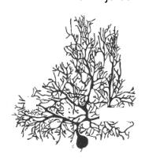</figure>
<h3>D. Tế bào gai</h3>
<figure class="bookfig"></figure>
<h3>Bao myelin</h3>
<h3>Khe synapse</h3>
<h3>Các nơ-ron sau synapse</h3>
<p>Hình 4.1 (A) Sơ đồ nơ-ron có hình dạng tương tự tế bào tháp ở vỏ não mới. Các thành phần được vẽ là điển hình cho hầu hết các loại nơ-ron chính [phỏng theo Kandel, Schwartz, và Jessell, Principles of neural science, McGraw-Hill, ấn bản lần thứ 4 (2000)]. (B–E) Ví dụ về hình thái của các nơ-ron khác nhau. (B) Tế bào tháp từ vỏ não vận động [từ Cajal, Histologie du système nerveux de l’homme et des vertèbres, Maloin, Paris (1911)], (C) Nơ-ron hạt từ hành khứu giác của chuột [từ Greer, J. Comp. Neurol. 257: 442–52 (1987)], (D) Nơ-ron gai từ nhân đuôi [từ Kitai, trong GABA and the basal ganglia, Chiara và Gessa (chủ biên), Raven Press (1981)], (E) Tế bào Purkinje nhuộm Golgi từ tiểu não [từ Bradly và Berry, Brain Research 109: 133–51 (1976)].</p>
<p>Hình dạng của nơ-ron có thể thay đổi đáng kể, và các tiêu chí hình thái học đã được sử dụng làm hệ thống phân loại nơ-ron. Một số ví dụ về hình dạng nơ-ron được minh họa trong Hình 4.1B–E. Các nơ-ron phổ biến nhất ở vỏ não mới được phân thành nơ-ron tháp (pyramidal neurons) và nơ-ron sao (stellate neurons). Nơ-ron tháp, với một ví dụ được trình bày ở Hình 4.1B, là loại nơ-ron dồi dào nhất ở vỏ não mới, chiếm tới 75–90% số nơ-ron tại đó. Chúng có đặc trưng là thân tế bào hình tháp với một sợi trục thường kéo dài từ đáy của thân tế bào tháp (đáy nền). Các sợi nhánh của tế bào tháp có thể chia thành một cây sợi nhánh vươn xa từ đỉnh của thân tế bào lên lớp trên của vỏ não (sẽ được thảo luận thêm ở Chương 5), và các sợi nhánh đáy có tổ chức cục bộ hơn. Các nơ-ron này tạo tiếp xúc bất đối xứng với các nơ-ron khác và được cho là có tính kích thích.</p>
<p>Hai lớp nơ-ron khác cũng phổ biến ở vỏ não mới có hình dạng giống ngôi sao nên được gọi là nơ-ron sao (stellate neurons). Sợi nhánh của nơ-ron sao có gai (spiny stellate neurons, cũng như sợi nhánh của tế bào tháp) được bao phủ bởi nhiều cúc nhỏ gọi là gai (spines). Thông thường, nơ-ron sao có gai có tác dụng kích thích lên các tế bào khác. Ngược lại, các nơ-ron sao trơn (smooth stellate neurons) không có nhiều gai bao phủ và tạo các kết nối ức chế có hình dạng đối xứng với các nơ-ron khác.</p>
<p>Cần lưu ý rằng việc phân chia các nơ-ron vỏ não mới thành nơ-ron tháp và nơ-ron sao chỉ là một cách phân loại thô. Có thể chia theo nhiều cách khác, mặc dù sự phân biệt giữa các lớp khác nhau thường không dễ dàng nếu chỉ dựa vào hình dạng không gian. Một số nơ-ron được đặt tên riêng bao gồm tế bào Martinotti, chủ yếu nằm ở các lớp sâu hơn của vỏ não mới và mọc ra các sợi trục thường vươn tới lớp ngoài; tế bào giỏ (basket cells), là các tế bào sao trơn tạo synapse ưu tiên lên thân tế bào của tế bào tháp; và tế bào đèn chùm (chandelier cells), tạo synapse ưu tiên lên đoạn đầu của sợi trục tế bào tháp. Các đặc tính cấu trúc có những hệ quả tính toán cần được khám phá. Phần sau của chương này sẽ trình bày cách đưa hình thái tế bào vào các mô phỏng cụ thể của nơ-ron đơn lẻ.</p>
<p>4.1.2 Cơ chế xử lý thông tin</p>
<p>Nơ-ron có thể nhận tín hiệu từ rất nhiều nơ-ron khác, gọi là các sợi đến (efferents), thường vào khoảng 10.000 nơ-ron. Một số nơ-ron có ít sợi đến hơn nhiều, chẳng hạn như nơ-ron vận động ở thân não, và cũng có những tế bào nhận nhiều đầu vào hơn nữa, như tế bào tháp ở hồi hải mã được ước tính nhận khoảng 50.000 đầu vào. Các nơ-ron gửi tín hiệu tiếp xúc với nơ-ron nhận tại các vị trí chuyên biệt, ở thân tế bào hoặc trên các sợi nhánh. Nhà sinh lý học người Anh Charles Sherrington đã đặt tên cho các vị trí này là synapse. Nhiều cơ chế khác nhau được sử dụng để truyền thông tin giữa nơ-ron trước synapse (nơ-ron gửi tín hiệu) và nơ-ron sau synapse (nơ-ron nhận tín hiệu). Đặc điểm xử lý thông tin chung của synapse là chúng cho phép tín hiệu từ nơ-ron trước synapse làm thay đổi trạng thái của nơ-ron sau synapse, cuối cùng kích hoạt sự phát sinh một xung điện ở nơ-ron sau synapse. Xung điện này, tức điện thế hoạt động quan trọng, thường được khởi phát tại vùng gốc của sợi trục, gọi là gò sợi trục (axon-hillock), và sau đó truyền dọc theo sợi trục. Mỗi nơ-ron có một sợi trục rời khỏi soma, mặc dù sợi trục có thể phân nhánh và gửi thông tin đến các vùng khác nhau trong não. Ví dụ, một số nơ-ron lan truyền thông tin đến các nơ-ron ở vùng lân cận trong cùng cấu trúc thần kinh bằng các nhánh sợi trục gọi là nhánh bên sợi trục (axon collaterals), trong khi các sợi trục khác có thể đi xuyên qua chất trắng tới các vùng não khác. Chất trắng không chứa thân nơ-ron, mà chỉ chứa sợi trục và tế bào ít nhánh (oligodendrocytes), một loại tế bào thần kinh đệm đặc biệt tạo ra bao myelin cho sợi trục như mô tả ở phần sau. Tại nơi tiếp nhận, sợi trục thường tách thành nhiều nhánh nhỏ gọi là cành tận (arbors, tiếng Latin nghĩa là cây), với các đầu tận cùng sợi trục hay cúc tận cùng (axon terminals hoặc axon boutons, tiếng Pháp nghĩa là cúc áo) tạo thành một phần của synapse nối với các nơ-ron khác hoặc cơ.</p>
<p>4.1.3 Điện thế màng</p>
<p>Khả năng thay đổi điện thế nội tại của nơ-ron, tức điện thế màng, đóng vai trò quan trọng đối với năng lực truyền tín hiệu của nơ-ron. Điện thế màng, được ký hiệu là Vm, được định nghĩa là hiệu điện thế giữa bên trong tế bào và môi trường xung quanh nó. Bên trong tế bào trung hòa về điện khi các ion mang điện dương (cation) liên kết với các ion mang điện âm (anion). Nguồn gốc của sự chênh lệch điện thế này đến từ sự khác biệt nồng độ ion giữa bên trong và bên ngoài tế bào. Ví dụ, nồng độ ion kali (K+) bên trong tế bào lớn hơn khoảng hai mươi lần so với dịch xung quanh. Sự chênh lệch nồng độ này thúc đẩy dòng kali đi ra ngoài theo quá trình khuếch tán miễn là màng tế bào thấm qua được ion này. Tuy nhiên, màng nơ-ron không thấm qua các anion thường liên kết với kali, nên quá trình khuếch tán để lại lượng điện tích âm dư thừa bên trong nơ-ron và điện tích dương dư thừa trong dịch bao quanh nơ-ron.</p>
<p>Lực điện ngày càng tăng do sự chênh lệch điện thế màng gia tăng cuối cùng sẽ đủ mạnh để cân bằng với lực sinh ra bởi sự chênh lệch nồng độ kali giữa trong và ngoài tế bào. Do đó, lực điện sẽ cân bằng quá trình khuếch tán, và nơ-ron ổn định ở trạng thái cân bằng. Điện thế kết quả được mô tả chính thức bởi phương trình Nernst, liên hệ công cần thiết để bù đắp cho gradient khuếch tán với logarit của tỷ lệ nồng độ, nhiệt độ tuyệt đối và một số tham số đặc thù của hệ. Tính toán điện thế cân bằng cho kênh kali ở một nơ-ron điển hình cho giá trị khoảng EK = −80 mV, được gọi là điện thế đảo chiều (reversal potential) của kênh. Chỉ cần một tỷ lệ rất nhỏ ion K+ rời khỏi nơ-ron là đủ gây ra điện thế màng này. Các quá trình tương tự đối với những ion khác, đặc biệt là natri (Na+) vốn có nồng độ ở môi trường xung quanh nơ-ron cao hơn bên trong nơ-ron, cuối cùng dẫn đến điện thế nghỉ của nơ-ron, thường vào khoảng Vrest = −65 mV.</p>
<p>Tất nhiên, điều thú vị và quan trọng hơn có lẽ là nghiên cứu cách điện thế màng có thể bị thay đổi để truyền tải thông tin. Điện thế màng có thể bị biến đổi bởi nhiều cơ chế khác nhau mà từng loại nơ-ron chuyên biệt hóa cho chúng. Chẳng hạn, nơ-ron cảm giác chuyên chuyển đổi các kích thích bên ngoài thành tín hiệu điện; ví dụ bao gồm nơ-ron xúc giác nhạy cảm với áp suất và nơ-ron cảm quang ở võng mạc nhạy cảm với ánh sáng. Việc truyền thông tin giữa các nơ-ron, vốn là mối quan tâm chính của chúng ta trong cuốn sách này, được thực hiện theo nhiều cách. Ví dụ, synapse điện hay liên kết khe (gap-junctions) gồm các protein dẫn điện đặc biệt cho phép truyền trực tiếp tín hiệu điện từ giữa hai nơ-ron. Tuy nhiên, loại kết nối phổ biến nhất giữa các nơ-ron trong hệ thần kinh trung ương là synapse hóa học, sẽ được mô tả dưới đây.</p>
<p>4.1.4 Kênh ion</p>
<p>Tính thấm của màng tế bào đối với một số ion nhất định đạt được thông qua các kênh ion. Kênh ion là những loại protein đặc biệt nằm khảm trong màng tế bào (xem Hình 4.2). Các protein này tạo thành những lỗ nhỏ cho phép các ion cụ thể đi vào hoặc đi ra khỏi tế bào. Các ion phổ biến tham gia vào những quá trình như vậy trong hệ thần kinh gồm natri (Na+), kali (K+), canxi (Ca2+), và clo (Cl−). Các kênh ion duy trì điện thế nghỉ của nơ-ron thường mở suốt thời gian (xem Hình 4.2A). Do đó, thật hợp lý khi gọi chúng là kênh rò rỉ (leakage channels). Chúng ta sẽ sớm gặp các loại kênh ion khác có thể đóng mở dưới nhiều điều kiện khác nhau.</p>
<h3>A. Kênh rò rỉ</h3>
<h3>B. Kênh cổng điện thế</h3>
<h3>C. Bơm ion</h3>
<p>kênh ion</p>
<p>+</p>
<p>+ +</p>
<p>+ + + +</p>
<p>+ + + +</p>
<p>+</p>
<p>+ +</p>
<p>+ +</p>
<p>+</p>
<p>+</p>
<p>+</p>
<p>+</p>
<p>+</p>
<p>+</p>
<p>+</p>
<p>+</p>
<p>+</p>
<p>+</p>
<p>+</p>
<p>+</p>
<h3>Kênh ion cổng chất dẫn truyền thần kinh</h3>
<h3>E. Chuyển hóa (Metabotropic)</h3>
<h3>D. Hướng ion (Ionotropic)</h3>
<p>(chất truyền tin thứ hai)</p>
<p>+ + +</p>
<p>+ + +</p>
<p>+</p>
<p>+</p>
<p>+</p>
<p>+</p>
<p>+ + + +</p>
<p>+ + + +</p>
<p>+</p>
<p>+</p>
<p>+</p>
<p>+</p>
<p>+</p>
<p>+</p>
<p>Hình 4.2 Minh họa phác thảo các loại kênh ion khác nhau. (A) Kênh rò rỉ luôn mở. (B) Việc mở kênh ion cổng điện thế phụ thuộc vào điện thế màng. Điều này được biểu thị bằng một sợi dây nhỏ bên trong nơ-ron và một dây nối đất bên ngoài nơ-ron. Ngoài ra, các kênh ion như vậy cũng có thể được đóng mở bởi chất dẫn truyền thần kinh (không thể hiện trong hình này). (C) Bơm ion là các kênh ion vận chuyển ion ngược chiều gradient nồng độ. (D) Kênh ion hướng ion cổng chất dẫn truyền thần kinh mở ra khi một phân tử chất dẫn truyền thần kinh gắn vào protein kênh, làm thay đổi hình dạng của protein kênh để các ion đặc hiệu có thể đi qua. (E) Synapse chuyển hóa chỉ tác động lên kênh ion thông qua các chất truyền tin thứ cấp.</p>
<p>Việc truyền thông tin bên trong và giữa các tế bào phần lớn dựa trên các kênh ion. Phần tiếp theo mô tả chi tiết hơn các cơ chế này, bắt đầu với phần thảo luận về synapse hóa học và tiếp theo là sự phát sinh điện thế hoạt động ở Mục 4.3. Trong Mục 4.5, chúng ta ghép các mảnh ghép lại với nhau và mô tả chức năng chính của nơ-ron bằng mô hình khoang. Phần còn lại của</p>
<figure class="bookfig"></figure>
<h3>Ca Ca</h3>
<h3>Kênh Ca2+ cổng điện thế</h3>
<h3>Chất dẫn truyền thần kinh Túi synapse</h3>
<h3>Thụ thể chất dẫn truyền thần kinh</h3>
<p>Hình 4.3 (A) Ảnh hiển vi điện tử của một đầu tận cùng synapse. Vùng đặc sau synapse (PSD) là vùng giàu protein ở đầu tận cùng sợi nhánh. Ảnh do Zeiss cung cấp tại https://blogs.zeiss.com/microscopy. (B) Sơ đồ minh họa synapse hóa học.</p>
<p>chương chứa phần thảo luận ngắn gọn về các mở rộng của những cơ chế cơ bản, trong khi Chương 5 tập trung vào các phép đơn giản hóa cho phép chúng ta nghiên cứu hành vi của các mạng nơ-ron lớn.</p>
<p>4.2 Cơ chế synapse và xử lý trên sợi nhánh</p>
<p>4.2.1 Synapse hóa học và chất dẫn truyền thần kinh</p>
<p>Synapse hóa học là lực lượng chủ lực của việc truyền thông tin nơ-ron trong hệ thần kinh động vật có vú. Ảnh hiển vi điện tử của một đầu tận cùng synapse được thể hiện trong Hình 4.3A, và sơ đồ phác họa trong Hình 4.3B. Các vị trí tiếp xúc này của nơ-ron gồm một phần mở rộng chuyên biệt trên sợi trục là đầu tận cùng sợi trục, và các vị trí tiếp nhận đặc hiệu trên sợi nhánh. Đầu tận cùng sợi trục của synapse hóa học có khả năng tổng hợp các chất hóa học đặc biệt gọi là chất dẫn truyền thần kinh (neurotransmitters), được cô đặc và lưu trữ trong các túi synapse. Khi điện thế hoạt động truyền tới, nó kích hoạt sự giải phóng ngẫu nhiên có xác suất các chất dẫn truyền thần kinh. Các chất dẫn truyền thần kinh được giải phóng khuếch tán qua khe synapse, một khoảng hở nhỏ chỉ vài micromet (1µm = 10−6m) giữa đầu tận cùng sợi trục và sợi nhánh của nơ-ron sau synapse.</p>
<p>Nhiều chất dẫn truyền thần kinh khác nhau đã được xác định trong hệ thần kinh. Các chất dẫn truyền thần kinh phổ biến trong hệ thần kinh trung ương bao gồm các phân tử hữu cơ nhỏ như glutamate (Glu) hoặc gamma-aminobutyric acid (GABA). Dopamine (DA) là một chất dẫn truyền thần kinh khác thu hút nhiều sự chú ý vì vai trò trong động lực, sự chú ý và học tập. Sự truyền synapse tại các khớp thần kinh-cơ, vốn quan trọng để khởi phát cử động cơ, chủ yếu được trung gian bởi acetylcholine (ACh), và các dây thần kinh cảm giác sử dụng nhiều chất dẫn truyền thần kinh khác.</p>
<p>Kênh ion cổng chất dẫn truyền thần kinh là các loại kênh ion đặc biệt ở sợi nhánh sau synapse đóng mở dưới sự điều hòa của chất dẫn truyền thần kinh. Khi không có mặt chất dẫn truyền thần kinh, kích thước lỗ kênh quá nhỏ để cho ion đi qua. Các kênh ion này mở ra khi chất dẫn truyền thần kinh gắn vào các vị trí tiếp nhận đặc hiệu của kênh ion, sau đó các ion có kích thước và hình dạng phù hợp có thể chảy qua chúng, làm thay đổi điện thế màng của tế bào. Đáp ứng ở điện thế màng này được gọi là điện thế sau synapse (postsynaptic potential - PSP). Lượng chất dẫn truyền thần kinh được nơ-ron trước synapse giải phóng nhiều hơn có thể kích hoạt đáp ứng mạnh hơn ở điện thế màng sau synapse, nhưng mối quan hệ này không nhất thiết phải tuyến tính; lượng chất dẫn truyền thần kinh gấp đôi hoặc số lượng synapse tham gia gấp đôi trong sự kiện synapse tổng thể không nhất thiết làm tăng điện thế màng lên gấp đôi.</p>
<p>Tác động của chất dẫn truyền thần kinh phụ thuộc vào loại thụ thể, sao cho cùng một chất dẫn truyền thần kinh có thể tạo ra các tác động khác nhau ở các nơ-ron sau synapse. Các thụ thể gắn chặt với một kênh ion được gọi là hướng ion (ionotropic) và được minh họa trong Hình 4.2D. Các kênh ion cổng chất dẫn truyền thần kinh như vậy thường mở rất nhanh sau khi gắn kết chất dẫn truyền thần kinh. Ngược lại, các synapse chuyển hóa (metabotropic), được mô phỏng ở Hình 4.2E, chỉ tác động lên kênh ion thông qua các chất truyền tin thứ cấp nên chậm hơn và kém đặc hiệu hơn nhiều.</p>
<p>4.2.2 Synapse kích thích / ức chế</p>
<p>Các loại chất dẫn truyền thần kinh khác nhau và các kênh ion đi kèm có tác động khác nhau lên trạng thái của nơ-ron tiếp nhận. Một lớp chất dẫn truyền thần kinh quan trọng mở các kênh cho phép các ion mang điện dương đi vào tế bào. Do đó, các chất dẫn truyền thần kinh này kích hoạt sự gia tăng điện thế màng, đẩy các nơ-ron sau synapse tiến về trạng thái hưng phấn. Quá trình này (và đôi khi gọi đơn giản là synapse) do đó được gọi là kích thích (excitatory). Các kênh synapse đóng mở bởi chất dẫn truyền thần kinh Glu là một ví dụ rất phổ biến về synapse kích thích với nhiều loại thụ thể khác nhau. Một thụ thể Glu hướng ion nhanh được gọi là AMPAR vì nó có thể được hoạt hóa bởi hóa chất tổng hợp α-amino-3-hydroxy-5-methylisoxazole-4-propionic acid. Một thụ thể Glu khác gọi là NMDAR vì nó có thể được hoạt hóa bởi hóa chất tổng hợp N-methyl-D-aspartate; thụ thể này chậm hơn nhiều và phụ thuộc vào điện thế. Sự phụ thuộc điện thế bắt nguồn từ việc các kênh này bị chặn bởi ion magie (Mg2+) ở trạng thái nghỉ của nơ-ron, ngay cả khi Glu đã gắn vào. Các ion Mg2+ chỉ có thể bị đẩy ra thông qua sự khử cực điện thế màng, chẳng hạn như nhờ các điện thế hoạt động truyền ngược (back-propagating action potentials - BAPs) được giải thích bên dưới. Chỉ sau khi loại bỏ magie thì natri và canxi, hai ion chính có thể đi qua kênh này, mới đi vào được nơ-ron. Trong Chương 6, chúng ta sẽ thảo luận tầm quan trọng của các cơ chế này đối với tính dẻo synapse.</p>
<p>Ngược lại với synapse kích thích, một số kênh ion cổng chất dẫn truyền thần kinh có thể kéo điện thế sau synapse về phía điện thế nghỉ hoặc ức chế tác động của synapse kích thích. Những synapse như vậy được gọi chung là ức chế (inhibitory). Một ví dụ nổi bật về synapse ức chế sử dụng chất dẫn truyền thần kinh GABA với một thụ thể nhanh gọi là GABAA và một thụ thể chậm hơn gọi là GABAB. Chất dẫn truyền thần kinh DA có nhiều loại thụ thể, một số mang tính kích thích và một số mang tính ức chế. Sự ức chế có thể mang tính trừ (subtractive) theo nghĩa làm giảm điện thế màng. Tuy nhiên, sự ức chế cũng có thể mang tính chia (divisive) theo nghĩa điều biến tác động của sự kích thích. Ví dụ, thụ thể GABAA không có tác động lên điện thế màng nếu điện thế màng đang ở trạng thái nghỉ, nên nó không làm giảm điện thế thêm nữa. Các synapse ức chế nằm gần thân tế bào có thể có các tác động điều biến (nhân) như vậy lên tổng các điện thế sau synapse kích thích (EPSP). Dạng ức chế như vậy còn được gọi là ức chế rẽ mạch (shunting inhibition).</p>
<p>4.2.3 Mô hình hóa đáp ứng synapse</p>
<p>Như đã đề cập ở trên, sự biến thiên của điện thế màng được khởi phát từ một xung trước synapse có thể được mô tả như một điện thế sau synapse (PSP). Synapse kích thích làm tăng điện thế màng, tạo ra điện thế sau synapse kích thích (EPSP). Ngược lại, điện thế sau synapse ức chế (IPSP) là các đáp ứng làm giảm điện thế màng. Dạng của IPSP thường có thể được mô hình hóa tương tự EPSP nhưng với dòng điện âm. Ở đây chúng ta chỉ mô tả một cách triển khai tổng quát cho PSP qua trung gian kênh ion.</p>
<p>Diễn biến theo thời gian đo được bằng thực nghiệm của một PSP sau một sự kiện trước synapse, đặc biệt đối với thụ thể kích thích nhanh AMPA và thụ thể ức chế GABA, có thể được tham số hóa bởi hàm m = At e−t/tpeak, (4.1)</p>
<h3>V non−NMDA</h3>
<p>trong đó ∆Vm ký hiệu hiệu số giữa điện thế màng và điện thế nghỉ, A là tham số biên độ, và tpeak là thời điểm hàm này đạt giá trị cực đại. Các đáp ứng synapse thuộc các loại trên thường diễn ra nhanh, với thời gian đạt đỉnh khoảng 0.5–2ms. Hàm trên đôi khi được gọi là hàm alpha trong khoa học thần kinh.</p>
<p>Chúng ta có thể vẽ đồ thị hàm này bằng chương trình Python Synapse.py sau đây. Đây chính thức là chương trình mô phỏng đầu tiên của chúng ta.</p>
<p>Programs/Synapse.py 1 # v o l t a g e over time f o r non−NMDA synapse 2 import numpy as np 3 import m a t p l o t l i b . pyplot as p l t 4 5 t = np . arange ( 0 , 1 0 , 0 . 1 ) 6 v = t ∗np . exp(−t / 2 ) 7 p l t . p l o t ( t , v ) ; p l t . x l a b e l ( " t " ) ; p l t . y l a b e l ( "v" )</p>
<p>Trong hàm này, chúng ta chưa đưa vào độ trễ synapse điển hình của PSP sau khi nơ-ron trước synapse phát xung. Độ trễ này gây ra bởi thời gian cần thiết để giải phóng chất dẫn truyền thần kinh ở đầu tận cùng sợi trục, thời gian của quá trình khuếch tán chất dẫn truyền thần kinh, và thời gian cần để mở các kênh. Tất cả các quá trình này thường diễn ra nhanh (thường dưới 1 ms) và có thể được cộng trực tiếp vào trong các mô phỏng mạng. Lưu ý rằng mặc dù ở đây ta coi độ trễ synapse là không đáng kể, nhưng ở Chương 7 chúng ta sẽ lập luận rằng độ trễ giữa các sự kiện trước synapse và sau synapse, gọi là độ trễ sợi trục (axional delays), có thể lớn và biến thiên.</p>
<p>Hàm alpha có thể được triển khai bằng một mô hình cơ bản thường dùng để mô tả synapse hóa học. Theo đó, ta coi một đoạn sợi nhánh như một khoang đơn giản gồm một tụ điện có rò rỉ (tụ điện mắc cùng một điện trở hằng số) đi kèm với một điện trở cổng chất dẫn truyền thần kinh, như minh họa trong Hình 4.4A. Mỗi điện trở cũng được cấp một nguồn pin biểu diễn sự chênh lệch nồng độ ion bên trong và bên ngoài tế bào (điện thế Nernst). Hiệu ứng tổng hợp của các thành phần khác nhau có thể dễ dàng được biểu diễn bằng cách xét định luật bảo toàn điện tích. Điều này được hình thức hóa trong định luật Kirchhoff, dVm(t)</p>
<p>dt = −I, (4.2)</p>
<p>cm trong đó cm là điện dung của khoang sợi nhánh và dấu trừ ở vế phải là quy ước trong khoa học thần kinh, nơi dòng điện được đo theo chiều chảy từ ngoài tế bào vào trong tế bào.</p>
<h3>A. Mạch điện của synapse cơ bản</h3>
<h3>B. Diễn biến theo thời gian của các biến</h3>
<p>4 g (t)*5 syn g L g</p>
<h3>Tụ điện</h3>
<h3>V (t)</h3>
<p>2 m</p>
<h3>C</h3>
<h3>Điện trở</h3>
<p>m</p>
<p>0</p>
<h3>Pin</h3>
<h3>I (t)/5 syn</h3>
<p>0 2 4 6 8 10 −2</p>
<h3>Thời gian</h3>
<p>Hình 4.4 (A) Mạch điện của một khoang sợi nhánh đơn giản để mô phỏng PSP với điện dung cm, độ dẫn gL của kênh rò rỉ, độ dẫn phụ thuộc thời gian g của kênh ion cổng chất dẫn truyền thần kinh và pin mô tả điện thế cân bằng của kênh ion cổng chất dẫn truyền thần kinh. Không có pin cho kênh rò rỉ vì điện thế nghỉ của mạch được đặt bằng không. (B) Kết quả tích phân số của mô hình khoang sợi nhánh. Thể hiện diễn biến theo thời gian của độ dẫn g(t), dòng điện synapse Isyn(t), và điện thế màng V (t). Độ dẫn và dòng điện được chia tỷ lệ để dễ quan sát hơn, và các đơn vị tương ứng với giá trị số dùng trong các mô phỏng thảo luận bên dưới.</p>
<p>Phương trình 4.2 là một phương trình vi phân tuyến tính. Phương trình vi phân mô tả sự biến thiên vi phân của một đại lượng (trong ví dụ này là điện áp) theo thời gian, và sự biến thiên này được cho bởi một hàm ở vế phải. Giải phương trình vi phân nghĩa là tìm ra diễn biến theo thời gian của đại lượng đó, dx(t)</p>
<p>dt = f(x, t, ...) ⇒ x(t) =? (4.3)</p>
<p>Chúng ta sẽ chủ yếu giải các phương trình này bằng phương pháp số với các chương trình mô phỏng. Tích phân số trong hoàn cảnh này đơn giản là cộng tất cả các thay đổi, như được cho bởi hàm ở vế phải, từ một trạng thái ban đầu. Các mô hình thường được xây dựng bằng phương trình vi phân, và do đó độc giả nên xem lại phần giới thiệu ngắn gọn về phương trình vi phân ở Chương 3.4 nếu chưa quen thuộc với các khái niệm này.</p>
<p>Trong mô hình synapse, dòng điện I được tạo ra bởi hai kênh: một kênh rò rỉ với độ dẫn (nghịch đảo của điện trở) gL và điện thế đảo chiều bằng không (điện thế nghỉ của khoang này vì chúng ta đo mọi thứ tương đối so với điện áp này), và kênh ion synapse cổng chất dẫn truyền thần kinh với độ dẫn biến thiên theo thời gian gsyn(t) và điện thế đảo chiều Esyn. Mối quan hệ giữa điện thế, dòng điện và độ dẫn được cho bởi định luật Ohm (I = gV ),</p>
<h3>I(t) = gLV (t) −gsyn(t)(Vm(t) −Esyn). (4.4)</h3>
<p>Diễn biến theo thời gian của độ dẫn synapse biến thiên được mô hình hóa tiếp bằng một mô hình đơn giản về động lực học kênh trung bình. Trong mô hình này, ta giả sử nhiều kênh mở ra ngay lập tức sau khi gắn chất dẫn truyền thần kinh, nhưng đóng lại một cách ngẫu nhiên giống như vật liệu phân rã phóng xạ. Quá trình mở-và-suy-giảm này được mô hình hóa như sau: dgsyn(t)</p>
<p>dt = −gsyn(t) + δ(t −tpre −tdelay), (4.5)</p>
<p>τsyn trong đó hàm delta δ() là một cách thuận tiện để biểu diễn một số hạng có đóng góp lớn vô hạn trong một khoảng thời gian nhỏ vô hạn, khi đối số của nó bằng không. Đóng góp vào tổng (hoặc tích phân) là hữu hạn (xem Chương 3.3). Trong trường hợp trên, một đóng góp được thực hiện tại thời điểm tdelay sau một xung trước synapse xảy ra tại tpre. Ở các thời điểm khác, phương trình này đơn giản cho kết quả là một sự suy giảm hàm mũ với hằng số thời gian τsyn (xem Chương 3.4).</p>
<p>Dưới đây chúng ta thảo luận một chương trình Python triển khai các phương trình trong mục này và giải chúng bằng phương pháp số. Kết quả của phép tích phân số này sau khi gắn kết chất dẫn truyền thần kinh tại thời điểm t = 1 được thể hiện ở Hình 4.4B. Diễn biến theo thời gian của g(t) được vẽ bằng đường nét đứt và chính xác là một sự suy giảm hàm mũ. Việc mở kênh tạo ra một dòng điện synapse Isyn qua kênh ion cổng chất dẫn truyền thần kinh (đường chấm chấm), trong đó lượng dòng điện không chỉ phụ thuộc vào độ dẫn của kênh ion, mà còn phụ thuộc vào điện áp của màng tương đối so với điện thế đảo chiều của kênh này. Do đó, nếu kênh synapse giữ trạng thái mở, hệ thống sẽ đi đến trạng thái cân bằng nơi dòng điện synapse khớp với dòng rò rỉ, và điện áp ổn định ở một giá trị trung gian giữa không và điện thế đảo chiều. Tuy nhiên, các kênh cổng chất dẫn truyền thần kinh cũng đóng lại nhanh chóng để khoang synapse cuối cùng suy giảm về trạng thái nghỉ.</p>
<h3>Mô phỏng</h3>
<p>Bây giờ chúng ta đã sẵn sàng thảo luận chi tiết chương trình mô phỏng lớn đầu tiên. Ở một mức độ nào đó, độ phức tạp của các mô phỏng cũng chỉ đến thế này. Chương trình này là một ví dụ quan trọng trong khoa học thần kinh và mô phỏng một synapse bằng cách thực hiện tích phân số các phương trình vi phân ghép cặp đã giải thích trước đó. Phần lớn các mô phỏng của chúng ta có dạng tích phân số các phương trình vi phân như vậy. Thực vậy, các chương trình sau này có thể trông khó hơn chỉ vì chúng tích hợp một số khái niệm trừu tượng hơn. Trước tiên chúng ta cũng cần làm quen với ngôn ngữ lập trình Python và cách nó được sử dụng trong bối cảnh này.</p>
<p>Programs/EPSP.py 1 # Synaptic conductance model to s i m u l a t e an EPSP 2 import m a t p l o t l i b . pyplot as p l t 3 4 # S e t t i n g some c o n s t a n t s and i n i t i a l values 5 c m =1; V l =0; V s =10; tau =1; dt = 0 . 1 ; 6 g l =1; g s = [ 0 ] ; 7 I l = [ 0 ] ; I s = [ 0 ] ; 8 v m = [ 0 ] ; t = [ 0 ] ; 9 10 # Numerical i n t e g r a t i o n using Euler scheme 11 f o r s t e p in range (1 , i n t ( 1 0 / dt ) ) :</p>
<p>12 # recor d the time ( in ms) in s l o t s t e p of v e c t o r t 13 t . append ( t [ step −1]+ dt ) 14 # s i m u l a t e opening s y n a p t i c ch anels around t =1ms 15 i f abs ( t [ s t e p ]−1) < 0.0001: g s [ step −1] = 1; 16 # c a l c u l a t e the c u r r e n t s a t t h i s time 17 I l . append ( g l ∗( v m [ step −1]−V l ) ) 18 I s . append ( g s [ step −1] ∗( v m [ step −1]−V s ) ) 19 # update conductance and membrane p o t e n t i a l 20 g s . append ( g s [ step −1]−dt / tau ∗g s [ step −1]) 21 v m . append ( v m [ step −1]−dt / c m ∗( I l [ s t e p ]+ I s [ s t e p ] ) ) 22 23 p l t . p l o t ( t , v m , ’k ’ ) ;</p>
<p>Chương trình mô phỏng synapse dựa trên độ dẫn cơ bản để tạo ra Hình 4.4B được gọi là EPSP.py. Chương trình này không chỉ minh họa một mô hình dựa trên độ dẫn cơ bản, mà còn là ví dụ đầu tiên về chương trình mô phỏng dựa trên tích phân số. Thuật toán nguyên lý được triển khai trong chương trình này là giải một phương trình vi phân thường có dạng phương trình 4.3 bằng một quá trình lặp rời rạc, x(t + ∆t) = x(t) + ∆tf(x, t, ...), (4.6)</p>
<p>tính toán giá trị của biến ở chỉ số thời gian tiếp theo (sau một bước thời gian) từ giá trị ở chỉ số thời gian hiện tại cộng với bước thời gian nhân với lượng thay đổi được xác định trong hàm f. Vì đây là chương trình mô phỏng lớn đầu tiên trong cuốn sách này, chúng ta sẽ mô tả từng dòng của chương trình như sau.</p>
<p>Trong Python, mọi đoạn văn bản đứng sau dấu thăng, #, là chú thích và sẽ không được trình thông dịch Python thực thi. Đôi khi chúng ta bắt đầu chương trình bằng một chú thích nêu ngắn gọn mục đích của chương trình ở Dòng 1. Sau đó ta nhập (import) các thư viện cần thiết cho những hàm cụ thể như hàm vẽ đồ thị trong chương trình này. Các hằng số sau đó thường được thiết lập ở khối mã tiếp theo để dễ dàng tìm và thay đổi cho các thí nghiệm khác nhau. Các hằng số này bao gồm điện dung của màng, c m, độ dẫn của kênh rò rỉ, g L, hằng số thời gian thiết lập thang thời gian mở (hay đúng hơn là đóng) của kênh ion synapse, tau syn, và điện thế đảo chiều của kênh ion synapse, E syn. Tham số cuối cùng là bước thời gian tích phân, delta t, thiết lập độ phân giải (thời gian) của mô phỏng. Lưu ý rằng tất cả các tham số đều là các con số và không mang đơn vị. Một chương trình mô phỏng số không thể xử lý đơn vị vật lý và chúng ta phải tự đảm bảo các giá trị nằm trong đúng đơn vị phù hợp. Ví dụ, ta có thể diễn giải thang thời gian theo mili giây (ms), sao cho bước thời gian tích phân là ∆t = 0.01 ms. Độ dẫn của kênh rò rỉ có thể là 1 Siemens (S), là nghịch đảo của điện trở đo bằng Ohm. Một giá trị điển hình hơn là tổng độ dẫn các kênh rò rỉ trên một xăng-ti-mét vuông (cm2) màng vào khoảng vài miliSiemens (mS). Độ dẫn của các kênh khác khi đó phải được chỉ định theo cùng đơn vị, và các đại lượng khác phải được chọn một cách nhất quán. Chúng ta cũng đưa vào các giá trị ban đầu cho những biến sẽ thay đổi theo thời gian. Các đại lượng này gồm độ dẫn của kênh ion synapse, g syn[0], được đặt bằng không để kênh đóng lúc bắt đầu mô phỏng. Do đó, dòng điện tương ứng, I syn[0], cũng bằng không. Mặc dù ta tính dòng điện từ độ dẫn và điện thế màng ở phần sau, ta vẫn đưa giá trị này vào một cách tường minh cho chỉ số thời gian đầu tiên, i=0, vì vòng lặp bên dưới bắt đầu tại chỉ số thời gian i=1 (chỉ số sau một bước thời gian). Ta cũng bắt đầu với điện thế màng bằng không tại chỉ số thời gian đầu tiên, v m[0]=0, và đặt đồng hồ cho chỉ số thời gian đầu tiên bằng không, t[0]=0.</p>
<p>Quá trình tích phân số các phương trình vi phân, vốn xác định mô hình, bắt đầu ở Dòng 11. Phép tích phân số được thực hiện bằng phương pháp Euler (xem Chương 3.4), đơn giản là cộng thêm các thay đổi vào trạng thái ban đầu sau mỗi bước tích phân. Biến đếm cho bước thời gian (chỉ số) được đặt là biến i. Vòng lặp quy định nó bắt đầu từ giá trị 1 và tăng thêm 1 cho đến khi chỉ số bằng 10/0.01=1000. Thời gian này tương ứng với 10 ms, hay chính xác hơn là 9.99 ms vì ta đặt thời gian cho chỉ số đầu tiên bằng không. Thời gian thực tế được cập nhật ở mỗi bước tại Dòng 13 và lưu trong vectơ t.</p>
<p>Các dòng tiếp theo triển khai phương trình 4.5. Dòng 15 mô phỏng việc mở kênh ion synapse sau khi gắn kết chất dẫn truyền thần kinh tại thời điểm t = 1 ms bằng cách đặt độ dẫn ở bước thời gian trước đó bằng một, điều được biểu diễn về mặt toán học như hàm delta trong phương trình 4.5. Chúng ta ghi đè giá trị của bước thời gian trước đó vì giá trị này được dùng ở dòng tiếp theo để tính giá trị thực tế tại bước thời gian hiện tại. Câu lệnh if có thể có hình thức hơi bất ngờ. Người ta có thể ngờ một câu lệnh như if t[i] == 1: .... Vấn đề với câu lệnh này là vế trái và vế phải phải giống hệt nhau từng bit một. Ví dụ, 1.000000000001 không bằng 1. Để đảm bảo câu lệnh if bắt trúng thời điểm trong vùng lân cận phù hợp, thay vào đó ta yêu cầu hiệu tuyệt đối giữa t[i] và 1 phải nhỏ hơn một giá trị nhỏ.</p>
<p>Dòng 17 và các dòng tiếp theo là phần mô phỏng động lực học của kênh ion khi không có thành phần hàm delta trong phương trình 4.5. Giá trị ban đầu của độ dẫn này bằng không, và nó sẽ giữ nguyên như vậy cho đến khi ta buộc nó mở ra tại t = 1 ms ở Dòng 15. Sau đó nó sẽ suy giảm vì đoạn mã quy định giá trị mới của độ dẫn sẽ bằng ‘một trừ đi một chút’ của giá trị ở thời điểm trước đó. Sự sụt giảm của giá trị này tỷ lệ thuận với chính giá trị đó, vốn là đặc trưng của sự suy giảm hàm mũ. Điều này có thể thấy trong nghiệm, tức đường nét đứt ở Hình 4.4B. Như đã lập luận ở trên, chúng ta có thể coi động lực học này như số lượng kênh mở trung bình khi các kênh đóng lại ngẫu nhiên giống như trong phân rã phóng xạ. Do đó, mô phỏng này không bao gồm động lực học chính xác của từng kênh ion riêng lẻ, mặc dù chúng ta hoàn toàn có thể xây dựng các mô hình như vậy.</p>
<p>4.2.4 Các cấp độ mô hình hóa khác nhau</p>
<p>Thật tốt khi dừng lại một chút để nhận ra rằng chúng ta đã xây dựng hai mô hình quan trọng mô tả diễn biến theo thời gian của điện thế màng tại một synapse sau khi chất dẫn truyền thần kinh kích hoạt đáp ứng này. Mô hình đầu tiên, ở phương trình 4.1, hoàn toàn mang tính phỏng nghiệm (heuristic). Nghĩa là chúng ta chỉ đơn thuần mô tả các quan sát thực nghiệm bằng cách đưa ra một hàm toán học bắt chước diễn biến theo thời gian này ở một mức độ nào đó. Các mô hình như vậy có thể rất hữu ích trong nhiều hoàn cảnh. Chẳng hạn, ta có thể dùng hàm này làm đầu vào khi mô hình hóa sự lan truyền tiếp theo của tín hiệu trong các sợi nhánh.</p>
<p>Tuy nhiên, mô hình thuần túy mô tả này không hữu ích lắm khi cần mô tả quá trình gây ra hành vi đó. Mô hình thứ hai của chúng ta dựa trên các cơ chế cơ bản hơn diễn ra trong quá trình synapse. Mô hình này, được mô tả bởi các phương trình 4.2, 4.4, và 4.5, sử dụng các mô tả vật lý về dòng điện đáp ứng với sự thay đổi độ dẫn để tính toán diễn biến theo thời gian của điện thế màng. Đầu vào then chốt trong mô hình này là sự thay đổi độ dẫn synapse do việc mở một kênh ion được mô tả bởi phương trình 4.5. Như đã đề cập, điều này về cơ bản chỉ mô tả sự suy giảm hàm mũ của độ dẫn sau khi mở tức thời tại tpre+tdelay. Bản thân điều này cũng chỉ là một mô tả vĩ mô của các quá trình lý sinh nền tảng. Nghiên cứu sâu hơn đã chỉ ra rằng từng kênh ion riêng lẻ đóng lại một cách ngẫu nhiên sau khi được mở, dẫn đến sự suy giảm hàm mũ trong tác động trung bình của chúng lên độ dẫn synapse. Tất nhiên, chúng ta có thể xây dựng các mô hình mô tả những hành vi này chi tiết hơn.</p>
<p>Mô hình trên và cách diễn giải nó là một phép xấp xỉ thô của các quá trình synapse. Trong thực tế, có một sự tương tác phức tạp giữa các kênh ion khác nhau và thậm chí giữa các tiểu đơn vị của thụ thể. Các tham số cm, g0, Esyn, τsyn do đó không có mối liên hệ trực tiếp với các kênh ion cụ thể và có thể được chọn tùy ý để khớp với dữ liệu thực nghiệm. Quá trình xử lý trên sợi nhánh còn được làm phong phú thêm bởi nhiều cơ chế khác, như các sóng canxi liên sợi nhánh và BAP liên quan đến các cơ chế phát xung tích cực, như sẽ thảo luận ở phần tiếp theo. Tế bào thần kinh đệm cũng có thể ảnh hưởng đến synapse, ví dụ bằng cách điều hòa sự giải phóng túi synapse thông qua tín hiệu canxi. Mô hình synapse tổng quát trên không cố gắng giải thích hoạt động chi tiết của synapse, mà đúng hơn, nên được xem là một mô hình hiện tượng học nhằm tham số hóa các phát hiện thực nghiệm cho thuận tiện.</p>
<p>Điện thế có tính chất vật lý là chúng chồng chất như tổng của các điện thế thành phần. Nhiều mô hình được thảo luận trong tài liệu khoa học sử dụng phép chồng chất tuyến tính của đầu vào synapse, nghĩa là các đầu vào đơn giản được cộng dồn trong các mô hình nơ-ron. Tuy nhiên, điều quan trọng là phải nhớ rằng điện thế màng của một nơ-ron phụ thuộc vào nhiều yếu tố khác, chẳng hạn như hình dạng vật lý của các sợi nhánh, sự phụ thuộc điện thế của một số kênh, và các tương tác khác giữa các kênh ion synapse. Ngoài ra, một số nghiên cứu cho thấy tín hiệu canxi liên bào phức tạp và sự tương tác của synapse với thông tin di truyền. Hầu hết các mô hình tính toán hiện nay ở cấp độ mạng chủ yếu giả định các cơ chế phát xung khuôn mẫu hơn nhiều như chúng ta sẽ mô tả tiếp theo. Tuy nhiên, khả năng to lớn của tính toán sợi nhánh tinh vi đã khiến một số người, như Carver Mead, suy đoán rằng tính toán sợi nhánh có thể dẫn đến việc xây dựng các hệ thống thực sự thông minh.</p>
<p>Các tương tác phi tuyến giữa các đầu vào synapse có thể bổ sung đáng kể cho năng lực xử lý thông tin của mạng nơ-ron. Chúng ta sẽ thảo luận một số ví dụ trong cuốn sách này, mặc dù lĩnh vực này phần lớn vẫn chưa được khám phá. Tuy nhiên, các mô hình synapse cơ bản được giới thiệu trong chương này đã đủ để khám phá nhiều đặc điểm của nơ-ron phát xung và mạng lưới. Mô hình này đủ cho hầu hết các thảo luận trong cuốn sách này và phần lớn tài liệu tính toán ở cấp độ mạng. Nếu cần thiết, có thể đưa thêm nhiều chi tiết về cơ chế sinh hóa và vật lý nền tảng vào mô hình, nhưng như chúng tôi đã nhấn mạnh ở Chương 1, mục tiêu của chúng ta ở đây không phải là tái tạo mọi chi tiết của não bộ, mà là trích xuất các cơ chế thiết yếu giải thích các chức năng của não.</p>
<p>4.3 Sự phát sinh điện thế hoạt động: Hodgkin–Huxley</p>
<p>Như đã thảo luận ở mục trước, điện thế màng sợi nhánh của một nơ-ron có thể bị thay đổi bởi việc giải phóng chất dẫn truyền thần kinh từ nơ-ron trước synapse làm mở các kênh ion synapse đặc hiệu và cho phép các ion đi ra hoặc đi vào nơ-ron. Điều này xảy ra ở đầu tiếp nhận của nơ-ron trong cây sợi nhánh. Bây giờ chúng ta chuyển sang các dòng điện màng ở sợi trục, đầu gửi tín hiệu của nơ-ron ở phía bên kia của nhân. Loại màng này có khả năng kích hoạt các biến đổi điện áp sắc nét và mạnh mẽ, gọi là điện thế hoạt động (action potentials), thường gọi đơn giản là xung (spike). Một thành phần quan trọng của các khoang sợi trục là các kênh ion nhạy cảm với điện thế. Vì vậy, trái ngược với các kênh ion synapse chủ yếu được kích hoạt bởi chất dẫn truyền thần kinh, các kênh ion này thay đổi độ dẫn khi chính điện thế màng thay đổi. Lưu ý rằng mặc dù các cơ chế này theo truyền thống được gắn với quá trình xử lý ở sợi trục, cũng có những cơ chế ở sợi nhánh có thể tạo ra cái gọi là điện thế hoạt động truyền ngược. Tuy nhiên, trọng tâm của chúng ta ở đây là mô hình tối thiểu kinh điển do Alan Hodgkin và Andrew Huxley đề xuất. Hai nhà nghiên cứu này đã đề xuất mô hình với các tham số đo từ sợi trục khổng lồ của mực ống, mặc dù hóa ra mô hình của họ với các tham số tương đương cũng mô tả được điện thế hoạt động ở tế bào tháp của động vật có xương sống. Một đường ghi nguyên bản của họ về điện thế hoạt động được thể hiện ở Hình 4.5. Nó đặc trưng bởi sự tăng vọt (khử cực) của điện thế màng lên các giá trị dương, tiếp theo là sự giảm mạnh điện thế màng, vượt quá (siêu phân cực) điện thế nghỉ của nơ-ron trước khi quay trở lại điện thế nghỉ.</p>
<p>Khử cực do các kênh natri Bất hoạt kênh natri & mở kênh kali</p>
<p>+40</p>
<h3>Xung (Spike)</h3>
<p>0 Điện thế nghỉ (các kênh rò rỉ)</p>
<h3>Đóng các kênh natri & kali</h3>
<p>-70</p>
<h3>Siêu phân cực</h3>
<p>Hình 4.5 Dạng điển hình của một điện thế hoạt động; vẽ lại từ ảnh dao động ký của Hodgkin và Huxley (1939).</p>
<p>Đó là một thành tựu khoa học to lớn của Hodgkin và Huxley khi họ mô tả định lượng dạng của điện thế hoạt động bằng các phương trình được tóm tắt trong mục này. Không chỉ vẻ đẹp của phép mô tả đã làm nên tên tuổi của họ, mà còn là việc họ đã định lượng quá trình dẫn đến sự phát sinh điện thế hoạt động bằng các số hạng toán học mà sau này được nhận diện chính là các kênh ion. Mô hình của họ đưa ra những dự đoán cụ thể có thể kiểm chứng bằng thực nghiệm và qua đó định hướng cho nhiều nghiên cứu và phát hiện tiếp theo. Bài báo gốc của họ trên tạp chí Journal of Physiology năm 1952 vẫn rất đáng đọc và là một ví dụ xuất sắc về công trình định lượng trong khoa học thần kinh tính toán.</p>
<p>4.3.1 Các cơ chế tối thiểu</p>
<p>Ít nhất hai loại kênh ion phụ thuộc điện thế và một loại kênh ion tĩnh là cần thiết cho việc phát sinh một xung, như minh họa trong Hình 4.6. Trái ngược với các kênh ion cổng chất dẫn truyền thần kinh được thảo luận ở mục trước, các kênh ion phụ thuộc điện thế đóng mở như một hàm của điện áp màng, như ký hiệu trong Hình 4.2B. Một kênh natri phụ thuộc điện thế chịu trách nhiệm cho pha đi lên của điện thế hoạt động. Khi các kênh ion cổng chất dẫn truyền thần kinh khử cực nơ-ron đủ mức, các kênh natri (Na+) phụ thuộc điện thế mở ra, dẫn đến dòng Na+ tràn vào do điện thế âm và nồng độ Na+ bên trong tế bào thấp hơn. Sự chi phối của kênh natri đẩy điện thế màng tiến gần đến điện thế nghỉ của natri, vào khoảng Vm = +65 mV.</p>
<h3>Khử cực</h3>
<p>+ Na + Na + Na</p>
<h3>Điện thế nghỉ</h3>
<p>+ Na</p>
<p>+ Na</p>
<p>+ Na + K</p>
<p>+ Na + Na</p>
<p>+ Na</p>
<p>+ Na + Na + Na</p>
<p>+ Na</p>
<p>+ K</p>
<p>+ K</p>
<p>+ K + K</p>
<p>+ K</p>
<p>+ K</p>
<p>+ K</p>
<p>+ K</p>
<p>+ K</p>
<p>+ K</p>
<p>+ K</p>
<p>+ K</p>
<p>+ K + K</p>
<p>+ K</p>
<p>+ K</p>
<p>+ K</p>
<h3>Siêu phân cực</h3>
<p>+ Na + Na + Na + Na</p>
<p>+ Na + Na</p>
<p>+ K</p>
<p>+ K</p>
<p>+ K</p>
<p>+ K</p>
<p>+ K</p>
<p>+ K</p>
<p>+ K</p>
<p>+ K</p>
<p>+ K + K</p>
<p>Hình 4.6 Sơ đồ minh họa các cơ chế tối thiểu cần thiết để phát sinh một xung. Điện thế nghỉ của tế bào được duy trì bởi các kênh rò rỉ cho phép ion kali chảy qua do sự chênh lệch nồng độ giữa bên trong tế bào và dịch xung quanh. Các kênh natri cổng điện thế cho phép dòng ion natri mang điện dương đi vào và qua đó khử cực tế bào. Sau một thời gian ngắn, các kênh natri bị chặn và các kênh kali cổng điện thế mở ra. Điều này dẫn đến sự siêu phân cực của tế bào. Cuối cùng, sự siêu phân cực làm bất hoạt các kênh cổng điện thế và đưa tế bào trở về điện thế nghỉ.</p>
<p>Hai quá trình góp phần gây ra pha đi xuống tiếp theo. Thứ nhất, các kênh natri bị bất hoạt do kênh bị chặn bởi một phần protein cấu tạo nên kênh, khoảng 1 ms sau khi kênh mở. Thứ hai, một loại kênh phụ thuộc điện thế khác là kênh kali (K+) mở ra, dẫn đến dòng K+ đi ra ngoài. Trái ngược với kênh natri phụ thuộc điện thế mở ra gần như tức thời sau khi vượt ngưỡng, kênh kali phụ thuộc điện thế mở khoảng 1 ms sau pha khử cực ban đầu của điện thế hoạt động. Sự chi phối của các kênh kali kéo điện thế màng tiến gần đến cân bằng kali khoảng Vm = −80 mV, vượt quá điện thế nghỉ bình thường của nơ-ron. Sự siêu phân cực này của nơ-ron tương đối so với điện thế nghỉ Vrest khiến các kênh kali phụ thuộc điện thế đóng lại và các kênh natri phụ thuộc điện thế thoát khỏi trạng thái bất hoạt (khử kích hoạt), nhờ đó điện thế nghỉ bình thường Vrest của nơ-ron cuối cùng được khôi phục.</p>
<p>4.3.2 Bơm ion</p>
<p>Việc phát sinh lặp đi lặp lại các điện thế hoạt động dẫn đến sự thoát ra lặp đi lặp lại của K+ và đi vào của Na+. Nếu một nơ-ron lặp lại quá trình được mô tả cho đến nay nhiều lần, nó sẽ liên tục làm giảm nồng độ kali và tăng nồng độ natri bên trong tế bào, cuối cùng dẫn đến việc không thể phát sinh điện thế hoạt động được nữa. Do đó, một loại kênh ion khác, chưa có trong Hình 4.6, là tối quan trọng đối với tế bào. Những kênh ion đặc biệt này được gọi là bơm ion và được minh họa sơ đồ trong Hình 4.2C. Bơm ion có thể vận chuyển các ion đặc hiệu ngược chiều mức nồng độ của chúng giữa bên trong và bên ngoài nơ-ron. Cái giá phải trả là lượng năng lượng lớn cần thiết cho quá trình này. Bơm ion được ước tính chiếm khoảng 70% tổng mức tiêu thụ trao đổi chất của nơ-ron, hay khoảng 15% tổng mức tiêu thụ năng lượng ở người, trong khi não bộ chiếm một phần năm tổng mức tiêu thụ năng lượng của chúng ta.</p>
<p>4.3.3 Các phương trình Hodgkin–Huxley</p>
<p>Hodgkin và Huxley đã định lượng quá trình phát sinh xung bằng một hệ bốn phương trình vi phân ghép cặp, hình thức hóa các phát hiện đo đạc của họ trên sợi trục khổng lồ của mực ống. Sự dịch chuyển ròng của các ion qua màng là một dòng điện mà ta ký hiệu bằng biểu tượng Iion. Số lượng và độ thấm của các kênh ion đang mở quyết định độ dẫn điện (nghịch đảo của điện trở), mà ta ký hiệu là ¯gion. Dấu gạch ngang trên chữ g được dùng ở đây để chỉ rằng giá trị này có thể thay đổi và do đó có thể là hàm của nhiều yếu tố. Trong phần tiếp theo, ta biểu diễn điện thế màng tương đối so với điện thế nghỉ Vion của mỗi kênh và ký hiệu nó là V . Mối quan hệ giữa điện thế, dòng điện và độ dẫn này được cho bởi định luật Ohm,</p>
<h3>Iion = ¯gion(V −Vion), (4.7)</h3>
<p>Điện thế cân bằng của kênh, trong đó Vion là điện áp khi lực đẩy chuyển động ion do nồng độ giữa bên trong và bên ngoài tế bào cân bằng với lực điện. Điều này tương ứng với một nguồn pin đặc thù cho từng kênh, như thể hiện trong sơ đồ mạch điện biểu diễn mô hình Hodgkin-Huxley ở Hình 4.7. Điện thế cân bằng trong công thức trên theo đó được đo tương đối so với điện thế nghỉ của nơ-ron.</p>
<p>Như đã thảo luận ở trên, một thành phần chính của khuôn khổ tổng quát để phát sinh điện thế hoạt động là thực tế các kênh K+ và Na+ phụ thuộc vào điện thế. Hodgkin và Huxley đã đưa vào theo kinh nghiệm ba biến động lực học, n, m, và h, để mô tả sự phụ thuộc điện thế này và động lực học của các kênh. Biến n mô tả sự hoạt hóa của các kênh kali (khi đó chưa được biết đến), m mô tả</p>
<h3>Iext</h3>
<h3>K R Na R RL</h3>
<h3>Tụ điện Điện trở của các kênh ion</h3>
<h3>C</h3>
<h3>Điện thế đảo chiều của các kênh ion EK</h3>
<h3>E E L Na</h3>
<h3>EK</h3>
<p>Hình 4.7 Biểu diễn mạch điện của mô hình Hodgkin–Huxley. Mạch này gồm một tụ điện trên đó có thể đo được điện thế màng và ba điện trở với các nguồn pin riêng, mô hình hóa các kênh ion; hai kênh phụ thuộc điện thế và một kênh tĩnh.</p>
<p>sự hoạt hóa của các kênh natri, và h mô tả sự bất hoạt của các kênh natri. Sự phụ thuộc điện thế và thời gian của các độ dẫn sau đó được mô tả trong mô hình bằng cách điều biến các giá trị độ dẫn hằng số, gion (không có gạch ngang), với các biến phụ thuộc điện thế và thời gian n(V, t), m(V, t), và h(V, t),</p>
<p>¯gK(V, t) = gKn4 (4.8) ¯gNa(V, t) = gNam3h. (4.9)</p>
<p>Hodgkin và Huxley đã chọn động lực học và sự phụ thuộc điện thế của các biến sao cho dữ liệu thực nghiệm có thể được xấp xỉ khá tốt. Họ xây dựng động lực học này bằng một hệ thanh nhã gồm ba phương trình vi phân bậc nhất, mỗi phương trình cho một biến, dx dt = αx(1 −x) + βxx, (4.10)</p>
<p>với x ∈{n, m, h}.</p>
<p>Động lực học cụ thể của các biến và sự phụ thuộc hàm của chúng vào điện thế màng được Hodgkin và Huxley chọn để phản ánh các phép đo thực nghiệm của họ. Chúng là αn = 0.01(V + 10)/(exp(V + 10</p>
<p>10 ) −1) (4.11)</p>
<p>αm = 0.1(V + 25)/(exp(V + 25</p>
<p>10 ) −1) (4.12)</p>
<p>αh = 0.07 exp(V/20) (4.13) βn = 0.125 exp(V/80) (4.14) βm = 4 exp(V/18) (4.15)</p>
<p>βh = 1/(exp(V + 30</p>
<p>10 ) + 1)) (4.16)</p>
<p>Đây là những hàm trông khá dài dòng, nhưng chúng chỉ là các mô hình mô tả hoặc hiện tượng học nhằm khớp với dữ liệu thực nghiệm. Chúng không cung cấp cái nhìn sâu sắc hơn về cơ chế của sự phụ thuộc điện thế này. Xét đến cùng, điều này là do các tính chất vật lý của các kênh ion. Tuy nhiên, ở đây chúng ta chủ yếu quan tâm đến việc mô phỏng</p>
<p>1.0</p>
<p>0.8 n m h</p>
<p>0.6</p>
<p>∞ ∞</p>
<p>0.4</p>
<p>∞</p>
<p>0.2</p>
<p>0.0</p>
<h2>75 50 25 0 25 50 75 Điện thế tương đối so với giá trị nghỉ</h2>
<p>Hình 4.8 (A) Các hàm cân bằng cho ba biến n, m, và h trong mô hình Hodgkin–Huxley với các tham số dùng để mô hình hóa sợi trục khổng lồ của mực ống.</p>
<p>động lực học của xung chứ không phải tính chất lý sinh của từng kênh ion riêng lẻ. Vì vậy các biến này về cơ bản mô tả động lực học đóng mở của các kênh.</p>
<p>Để có thêm chút hiểu biết sẽ hữu ích về sau, ta có thể làm một bài tập toán nhỏ. Để làm điều này, hãy định nghĩa các biến x∞= 1/(αx + βx) (4.17) τx = αxx∞. (4.18)</p>
<p>Khi đó ta có thể viết các phương trình vi phân trên cho các biến x ∈{n, m, h} dưới dạng quen thuộc τx(V )dx dt = [x −x∞(V )]. (4.19)</p>
<p>Theo cách này, ta biết cách diễn giải các hàm. Hàm x∞(V ) tương ứng với một giá trị cân bằng phụ thuộc điện thế được tiến tới theo hàm mũ với hằng số thời gian phụ thuộc điện thế τx(V ). Sự phụ thuộc điện thế của các giá trị cân bằng tiệm cận này được thể hiện trong Hình 4.8. Nó cho thấy hai trong số các hàm có dạng tương tự nhau, và hàm còn lại phần nào là nghịch đảo của hai hàm kia. Điều này sẽ cho ta một số gợi ý về sau về cách đơn giản hóa thêm một số mô hình phát xung. Trong khi đó, hãy quay lại với mô hình Hodgkin-Huxley.</p>
<p>Phần triển khai còn lại của mô hình mạch điện (Hình 4.7) giờ đây rất trực tiếp và tương tự cách xử lý ở phía synapse. Tụ điện có điện dung C được mắc song song với ba điện trở, mỗi điện trở đi kèm nguồn pin riêng thiết lập điện thế đảo chiều của nó. Một trong các điện trở là hằng số, trong khi hai điện trở còn lại có thể thay đổi tùy theo trạng thái của hệ. Hiệu ứng tổng hợp của các thành phần khác nhau có thể được biểu diễn bằng cách xét định luật bảo toàn điện tích theo định luật Kirchhoff về bảo toàn dòng điện,</p>
<h3>C dV</h3>
<h3>X</h3>
<p>dt = −</p>
<h3>Iion + I(t). (4.20)</h3>
<p>ion</p>
<p>Bây giờ ta có thể ghép tất cả các mảnh lại bằng cách thay ba dòng ion đã thảo luận ở trên vào phương trình 4.20 và thêm ba phương trình vi phân dạng 4.10, thu được hệ bốn phương trình vi phân tiêu chuẩn của mô hình Hodgkin–Huxley,</p>
<h3>C dV</h3>
<p>dt = −gKn4(V −EK) −gNam3h(V −ENa) −gL(V −EL) + I(t)(4.21)</p>
<p>dn dt = αn(1 −n) + βnn (4.22)</p>
<p>dm dt = αm(1 −m) + βmm (4.23)</p>
<p>dh dt = αh(1 −h) + βhh (4.24)</p>
<p>Tóm lại, các phương trình Hodgkin-Huxley mô tả sự phát sinh điện thế hoạt động bởi các kênh natri, kali và rò rỉ. Cần hiểu rõ rằng cơ chế này là kết quả của hoạt động đồng thời của rất nhiều kênh ion như vậy. Do đó, các độ dẫn trong phương trình Hodgkin–Huxley là kết quả tổng hợp của từng kênh ion riêng lẻ trong màng. Mô hình Hodgkin–Huxley giả định rằng các kênh ion riêng lẻ hoạt động độc lập với nhau, một giả định gần đây đã bị đặt dấu hỏi. Ngoài ra, lưu ý rằng mật độ các kênh ion phải vượt quá một ngưỡng nhất định mới có thể phát sinh điện thế hoạt động. Các điều kiện này thường xảy ra ở màng sợi trục, mặc dù các điện thế hoạt động chủ động hiện nay cũng đã được quan sát thấy ở sợi nhánh. Sợi trục thường có thể bị kích thích tại bất kỳ vị trí nào khi sợi trục không có bao myelin vì bao myelin chặn các kênh ion.</p>
<p>Mật độ các kênh ion phải vượt quá một ngưỡng nhất định mới có thể phát sinh điện thế hoạt động. Các điều kiện này thường xảy ra ở màng sợi trục, mặc dù các điện thế hoạt động chủ động hiện nay cũng đã được quan sát thấy ở sợi nhánh. Sợi trục thường có thể bị kích thích tại bất kỳ vị trí nào khi sợi trục không có bao myelin vì bao myelin chặn các kênh ion. Tuy nhiên, trong cơ thể sống (in vivo, tiếng Latin nghĩa là ‘trong cơ thể sống’), nơ-ron thường khởi phát điện thế hoạt động tại gò sợi trục. Một thay đổi nhỏ của điện thế màng tại gò sợi trục sau đó có thể tạo ra một tín hiệu điện lớn tại vị trí này. Sự phát xung do đó giống như một bộ khuếch đại. Lúc này chúng ta mới chỉ thảo luận về mô hình bộ khuếch đại này, và ta vẫn phải thảo luận cách tín hiệu này được truyền dọc xuống sợi trục ở phần dưới.</p>
<p>Các phương trình Hodgkin–Huxley có thể dễ dàng được tích phân bằng phương pháp số, và một chương trình Python để thực hiện việc này được đưa ra trong hh.py với các tham số ban đầu được Hodgkin và Huxley sử dụng để mô hình hóa sợi trục mực ống khổng lồ. Trước tiên ta định nghĩa một số tham số, độ dẫn cực đại và điện áp pin như Hodgkin và Huxley đã dùng. Ta đặt chúng vào các vectơ (mảng Numpy), giúp viết các phương trình sau dưới dạng nén bằng ký hiệu ma trận. Sau khi khởi tạo thêm một số biến, ta bước vào một vòng lặp lớn qua các bước thời gian mà ta muốn tích phân các phương trình Hodgkin–Huxley. Trong mô phỏng này, ta thực sự tiến hành một thí nghiệm trong đó bật một dòng điện ngoài giữa t=30 và t=89, và đặt bằng không ở các thời điểm khác.</p>
<p>Programs/hh.py 1 # Hogdkin−Huxley model 2 import numpy as np 3 import m a t p l o t l i b . pyplot as p l t 4 # Max conductances ( in u n i t s of mS/ cm ˆ 2 ) ; 0=K,1=Na,2=R 5 g = np . a r r a y ( [ 3 6 , 1 2 0 , 0 . 3 ] ) 6 # B a t t e r y v o l t a g e ( in mV) ; 0=n , 1=m, 2=h 7 V = np . a r r a y ([ −12 ,115 ,10.613]) 8 # I n i t i a l i z a t i o n of some v a r i a b l e s 9 v =0; x = np . a r r a y ( [ 0 , 0 , 1 ] ) ; t =0; dt =0.01 10 t r e c = [ ] ; v r e c = [ ] ; x 0 r e c =[]</p>
<p>11 # I n t e g r a t i o n with Euler method 12 f o r s t e p in range (1 , i n t (100/ dt ) ) : 13 t = t + dt 14 i f t >30 and t <89: I e x t =10 15 e l s e : I e x t =0 16 # alpha f u n c t i o n s used by Hodgkin−and Huxley 17 Alpha = np . a r r a y ( 18 [0.01∗( −v + 1 0 ) / ( np . exp ((−v +10)/10) −1) , 19 0.1∗( −v + 2 5 ) / ( np . exp ((−v +25)/10) −1) , 20 0.07∗np . exp(−v / 2 0 ) ] ) 21 # beta f u n c t i o n s used by Hodgkin−and Huxley 22 Beta = np . a r r a y ( [0 . 1 25 ∗np . exp(−v / 8 0 ) , 23 4∗np . exp(−v / 1 8 ) , 24 1 / ( np . exp ((−v + 3 0 ) / 1 0 ) + 1 ) ] ) 25 # update x = {n ,m, h} v a r i a b l e s 26 x = x+ dt ∗( Alpha∗(1−x)−Beta∗x ) 27 # c a l c u l a t e a c t u a l conductances g with given n , m, h 28 gx=np . a r r a y ( [ g [0]∗x [0]∗∗4 , g [1]∗x [1]∗∗3∗x [ 2 ] , g [ 2 ] ] ) 29 # Ohm’ s law 30 I = gx ∗(v−V) ; 31 # update v o l t a g e of membrane 32 v = v+ dt ∗( I e x t −sum ( I ) ) 33 # rec or d some v a r i a b l e s f o r p l o t t i n g a f t e r e q u i l . 34 t r e c . append ( t ) 35 v r e c . append ( v ) 36 37 # P l o t t i n g r e s u l t s 38 p l t . p l o t ( t r e c , v r e c ) ; 39 p l t . x l a b e l ( ’Time ’ ) ; p l t . y l a b e l ( ’ Voltage ’ ) 40 p l t . rcParams . update ({ ’ f o n t . s i z e ’ : 15}) 41 p l t . legend ( loc =" c e n t e r l e f t " )</p>
<p>Ở mỗi bước thời gian, điện áp của điện thế màng có thể đã thay đổi và trước tiên ta phải tính các tham số α và β của phương trình 4.10 cho từng tham số m, n, và h. Đây là các hàm được Hodgkin và Huxley lựa chọn. Với các giá trị mới này, ta có thể cập nhật giá trị cho cả ba tham số ở dòng 25. Điều này tương ứng với việc tích phân các phương trình vi phân 4.10 bằng phương pháp Euler đơn giản (xem Chương 3.4) bằng cách thay phương trình liên tục này bằng phiên bản rời rạc x(t + ∆t) = x(t) + ∆t(αx(1 −x(t)) + βxx(t)) (4.25)</p>
<p>Các bước cuối cùng là dùng định luật Ohm để tính các dòng synapse tương ứng và cập nhật điện thế màng từ các dòng synapse và dòng điện ngoài chạy trong khoảng bước thời gian nhỏ ∆t mà mọi tính toán này được thực hiện.</p>
<p>Kết quả của mô phỏng này được thể hiện ở Hình 4.9A. Điều thú vị là dường như có một xung ngay cả trước khi ta áp dụng dòng điện ngoài. Điều này không thực tế và là hệ quả của kỹ thuật mô phỏng của chúng ta. Ta đã bắt đầu phép tích phân với các giá trị ban đầu phần nào tùy ý cho các tham số. Do đó, trước tiên ta cần đợi cho đến khi các giá trị này hội tụ về các giá trị thực tế trước khi đưa dữ liệu đó vào phân tích. Quá trình này được gọi là cân bằng hóa (equilibration). Trong mô phỏng, có vẻ điện áp đạt xấp xỉ giá trị cân bằng quanh thời điểm t = 20. Sau đó điện áp giữ nguyên không đổi cho đến khi dòng điện ngoài được bật tại t = 30. Điều này tạo ra một xung và cũng tạo ra nhiều</p>
<h3>A B</h3>
<p>100</p>
<p>100</p>
<p>80</p>
<p>80</p>
<h3>Điện áp</h3>
<h3>Điện áp</h3>
<p>60</p>
<p>60</p>
<p>40</p>
<p>40</p>
<p>20</p>
<p>20</p>
<p>0</p>
<p>0</p>
<h2>0 20 40 60 80 100 Thời gian</h2>
<h2>0 20 40 60 80 100 Thời gian</h2>
<p>Hình 4.9 Một nơ-ron Hodgkin–Huxley đáp ứng bằng việc phát xung liên tục đối với một dòng điện ngoài không đổi Iext = 10 mA/cm2 giữa (A) t=30 và t=89 và (B) t=30 và t=90.</p>
<h3>Hàm kích hoạt</h3>
<p>100</p>
<h3>Tần số phát xung [Hz]</h3>
<p>80</p>
<p>60</p>
<h3>Nhiễu</h3>
<p>40</p>
<p>20</p>
<p>0 5 10 15 0</p>
<h3>Dòng điện ngoài [mA/cm ]</h3>
<p>2</p>
<p>Hình 4.10 Sự phụ thuộc của tốc độ phát xung vào cường độ dòng điện ngoài cho thấy sự khởi phát xung sắc nét quanh Ic ext = 6 mA/cm2 (đường nét liền). Nhiễu tần số cao trong dòng điện có xu hướng ‘tuyến tính hóa’ các đặc tính đáp ứng này (đường nét đứt).</p>
<p>xung khác. Lưu ý rằng xung đầu tiên hơi khác so với các xung liên tiếp vì điều kiện ban đầu cho xung này khác với các xung còn lại. Sau khi ngắt dòng điện ngoài tại t = 89, điện thế màng sẽ quay trở về điện thế nghỉ.</p>
<p>Điều thú vị là nếu ta chỉ để dòng điện ngoài bật thêm một chút nữa, cho đến t = 90, thì sẽ có thêm một xung nữa được tạo ra. Điều này được thể hiện ở Hình 4.9B. Như vậy, dường như có một loại ngưỡng khi xung được phát sinh. Mặc dù việc nghĩ về một ngưỡng phát xung như vậy là hữu ích, cần chỉ ra rằng đây không phải là một giá trị cố định vì nó phụ thuộc vào lịch sử tích tụ cho đến điểm không thể quay đầu. Tuy nhiên, chi tiết nhỏ này thường không phải là yếu tố gây nhiễu lớn cho phần lớn các thảo luận trong cuốn sách này và trong tài liệu chuyên ngành.</p>
<p>Các mô phỏng này chứng minh rằng một dòng điện ngoài không đổi với cường độ đủ lớn (ở đây Iext = 10 mA/cm2) dẫn đến việc phát xung liên tục của nơ-ron với một dạng sóng khuôn mẫu, như thể hiện ở Hình 4.9. Thật đáng kinh ngạc khi dạng điện thế hoạt động mô phỏng này nắm bắt được các chi tiết thiết yếu của điện thế hoạt động ở nơ-ron thực, như nơ-ron trong Hình 4.5. Ngoài ra, khi tăng dòng điện ngoài, số lượng xung trong một khoảng thời gian cố định, còn gọi là tốc độ phát xung (rate), tăng lên. Hàm mô tả tốc độ phụ thuộc vào đầu vào sẽ được gọi là hàm kích hoạt (activation function) hoặc hàm khuếch đại (gain function). Kết quả mô phỏng cho hàm kích hoạt của một nơ-ron Hodgkin–Huxley được vẽ ở Hình 4.10. Kết quả tiết lộ thêm hai đặc điểm của nơ-ron Hodgkin–Huxley cơ bản. Thứ nhất, trong mô hình cơ bản, được vẽ bằng đường nét liền trên đồ thị, sự khởi phát xung tuân theo một ngưỡng sắc nét quanh Iext = 6 mA/cm2. Thứ hai, có một dải tần số khá hạn chế khi sợi trục phát xung, bắt đầu ở khoảng 53 Hz và chỉ tăng nhẹ khi tăng dòng điện ngoài. Điều này rất thú vị vì nó cho thấy không phải mọi tần số nơ-ron đều có khả năng xảy ra như nhau.</p>
<p>Tất nhiên, có một tốc độ phát xung tối đa mà bất kỳ nơ-ron nào có thể đáp ứng nhưng chưa được đưa vào tường minh trong các mô phỏng này. Lý do là sự bất hoạt của các kênh natri khiến không thể khởi phát một điện thế hoạt động khác trong khoảng 1 ms. Khoảng thời gian này được gọi là giai đoạn trơ tuyệt đối (absolute refractory period), giới hạn tốc độ phát xung của nơ-ron tối đa khoảng 1000 Hz vì khi đó chỉ có thể tạo tối đa 1 xung trong một mili giây, tức 1000 xung trong một giây. Do điện thế hoạt động siêu phân cực, việc khởi phát một xung khác trong khoảng thời gian này cũng tương đối khó khăn. Giai đoạn trơ tương đối (relative refractory period) này làm giảm tần số phát xung của nơ-ron hơn nữa. Tất nhiên, hầu hết các nơ-ron thậm chí không phát xung gần tới các tốc độ cao như vậy, mặc dù các tần số phát xung rất nhanh đã được đo ở các nơ-ron thân não, với tần số đôi khi vượt quá 600 Hz. Ngược lại, các nơ-ron vỏ não thường đáp ứng với tần số thấp hơn nhiều, đôi khi chỉ vài xung mỗi giây. Điều này không thể giải thích chỉ bằng các giai đoạn trơ.</p>
<p>Không dễ thấy rõ tại sao các nơ-ron vỏ não lại phát xung với tần số thấp và bất quy tắc như vậy. Tuy nhiên, nhiều hoàn cảnh ảnh hưởng đến thời điểm phát xung của nơ-ron. Trong số đó có các chi tiết truyền điện tích bên trong sợi nhánh, tương tác giữa các PSP, các loại kênh ion khác, và những cơ chế bổ sung chưa được đưa vào phương trình Hodgkin–Huxley. Ngoài ra, rất quan trọng là chúng ta phải xét đến các tương tác trong một mạng lưới, cụ thể là với các nơ-ron trung gian ức chế. Hơn nữa, một dòng điện ngoài không đổi là phi thực tế về mặt sinh lý trong bộ não đang hoạt động, nên người ta phải xét các dòng dẫn động thực tế hơn để cảm nhận tốt hơn các đặc tính đáp ứng điển hình của một nơ-ron.</p>
<p>Để minh họa cách những thay đổi đơn giản trong các cơ chế cơ bản có thể làm biến đổi đặc tính đáp ứng của một nơ-ron Hodgkin–Huxley, một số kết quả mô phỏng bổ sung được thêm vào Hình 4.10 bằng đường nét đứt. Các mô phỏng này bao gồm một số nhiễu trắng (phân phối Gauss) tần số cao (1000 Hz). Nhiễu tần số cao như vậy có thể, chẳng hạn, mô phỏng các đầu vào tần số thấp từ nhiều nơ-ron trước synapse. Nhiễu này được cộng vào dòng đầu vào chính vốn không đổi như trong các mô phỏng trước. Kết quả chỉ ra rằng nhiễu như vậy có xu hướng ‘tuyến tính hóa’ đường cong fI, dẫn đến hàm dạng sigmoid được vẽ bằng đường nét đứt ở Hình 4.10. Các đường cong đáp ứng như vậy rất quan trọng để mô hình hóa sự truyền thông tin trong mạng lưới, và chúng ta sẽ thảo luận thêm về các đường cong đáp ứng này ở cuối chương tiếp theo khi có thể so sánh chúng với các đáp ứng quần thể.</p>
<p>4.3.4 Sự lan truyền của điện thế hoạt động</p>
<p>Một khi điện thế hoạt động được khởi phát, nó sẽ nhanh chóng làm tăng điện thế màng của các vị trí sợi trục lân cận và do đó truyền dọc theo sợi trục với tốc độ chậm khoảng 10 m/s. Dạng truyền tín hiệu bên trong một màng chủ động này không bị suy hao; tín hiệu được tái tạo tại mỗi điểm của màng sợi trục và tín hiệu sẽ không bị suy yếu theo khoảng cách. Điều này có tầm quan trọng lớn vì sợi trục đôi khi có thể rất dài, cỡ hàng mét. Mặt khác, dạng truyền tín hiệu không suy hao này chậm hơn nhiều so với việc truyền dòng điện đơn thuần trong một vật dẫn, chẳng hạn như trong dây điện hoặc cáp điện, và cũng tiêu tốn rất nhiều năng lượng, như chúng ta đã đề cập ở trên. Dường như tự nhiên đã giải quyết các vấn đề này bằng cách bọc sợi trục trong một lớp bao myelin. Lớp bao này được tạo ra bởi một loại tế bào thần kinh đệm đặc biệt, là tế bào ít nhánh trong hệ thần kinh trung ương và tế bào Schwann trong hệ thần kinh ngoại biên. Bao myelin làm thay đổi các tính chất điện của sợi trục để cho phép truyền tín hiệu nhanh, nhưng có suy hao, bên trong sợi trục. Tuy nhiên, các lớp bao myelin định kỳ bị ngắt quãng bởi cái gọi là các nút Ranvier, tại những điểm đó điện thế hoạt động có thể tái tạo thông qua cơ chế màng chủ động. Dường như tự nhiên kết hợp, theo cách này, ưu điểm của việc truyền tín hiệu nhanh và ‘rẻ’ hơn với các bộ khuếch đại tái sinh. Điều thú vị cần lưu ý là phần lớn quá trình myelin hóa diễn ra sau một giai đoạn tổ chức ban đầu của hệ thần kinh, xảy ra ở người vào khoảng năm thứ hai của cuộc đời.</p>
<p>4.3.5 Vượt lên trên nơ-ron Hodgkin–Huxley: mô hình Wilson ⋄</p>
<p>Các phương trình Hodgkin–Huxley đã dạy chúng ta những khái niệm cơ bản về sự phát sinh điện thế hoạt động. Tuy nhiên, nơ-ron của động vật có vú có thêm các loại kênh ion khác cho phép các đáp ứng nơ-ron phức tạp hơn. Ít nhất một tá loại kênh ion có thể tham gia vào quá trình phát xung của các nơ-ron vỏ não mới ở người. Việc đưa thêm các kênh ion khác vào mô hình để mô tả cụ thể hơn các tính chất điện của những nơ-ron đặc thù là khá đơn giản. Do đó, một số bài báo mô hình hóa bao gồm rất nhiều phương trình vi phân ghép cặp để mô hình hóa nhiều kênh khác nhau trong một khoang. Các mô hình như vậy rất quan trọng để khảo sát các đặc tính đáp ứng chi tiết của nơ-ron và nghiên cứu tương tác giữa các kênh khác nhau. Mặt khác, các phép đơn giản hóa cũng phổ biến khi nghiên cứu mạng lưới nơ-ron. Các phép đơn giản hóa thường cần thiết để thực hiện các khảo sát quy mô lớn, và như đã thảo luận ở Chương 1, chiến lược khoa học của chúng ta là giữ cho các mô hình đơn giản nhất có thể. Ở đây chúng ta minh họa rằng các phương trình Hodgkin–Huxley ban đầu có thể được sửa đổi theo nhiều cách, nhằm đơn giản hóa hệ thống cho các nghiên cứu quy mô lớn, hoặc để đưa thêm nhiều chi tiết của nơ-ron thực vào.</p>
<p>Các mô hình giảm số chiều của hệ Hodgkin–Huxley đã được phát triển trong nhiều năm. Ví dụ, ta có thể đơn giản hóa mô hình Hodgkin–Huxley bằng cách sử dụng kết quả thể hiện ở Hình 4.8. Từ hình này ta thấy tốc độ bất hoạt của các kênh Na+ xấp xỉ nghịch đảo với sự mở của các kênh K+. Do đó, ta có thể giảm số chiều của mô hình bằng cách đặt h = 1 −n. Hơn nữa, người ta có thể chỉ ra rằng hằng số thời gian τm đối với biến động lực học m nhỏ với mọi giá trị của V . Động lực học cho biến này do đó diễn ra nhanh và có thể được xấp xỉ bằng các giá trị cân bằng tương ứng, m0(V ). Các phép đơn giản hóa này rút gọn mô hình Hodgkin–Huxley thành một hệ hai chiều với điện thế hoạt động rất giống với điện thế của các nơ-ron Hodgkin–Huxley ban đầu. Mô hình có thể được đơn giản hóa hơn nữa cho các nơ-ron vỏ não mới. Các nơ-ron vỏ não mới thường không biểu hiện sự bất hoạt của kênh Na+ nhanh, nên h có thể được đặt bằng h = 1 (hoặc tương đương, n = 0 trong các phép xấp xỉ của chúng ta). Theo các phép xấp xỉ này, Hugh Wilson đã chỉ ra rằng một mô hình đơn giản hóa chỉ với hai phương trình vi phân,</p>
<h3>C dV</h3>
<p>dt = −gKR(V −EK) −gNa(V )(V −ENa) + I(t) (4.26)</p>
<p>dR dt = −[R −R0(V )], (4.27)</p>
<p>τR vẫn hành xử tương tự như hệ bốn phương trình vi phân của Hodgkin và Huxley. Mô hình Wilson được mô tả bởi phương trình 4.26 và 4.27 đã gộp các kênh Na+ và kênh rò rỉ thành một kênh Na+ đơn lẻ mới bằng cách đưa một số hạng tuyến tính vào mô tả sự phụ thuộc điện thế của kênh mới. Ký hiệu của biến điều biến động lực học duy nhất còn lại, R, mô tả sự phục hồi của điện thế màng.</p>
<p>Cho đến nay, chúng ta mới chỉ xấp xỉ các cơ chế chính vốn đã được Hodgkin và Huxley mô tả. Trong phần tiếp theo, ta đưa thêm hai loại kênh ion nữa dường như thiết yếu cho các đặc tính phát xung đa dạng hơn của nơ-ron vỏ não mới ở động vật có vú. Kênh đầu tiên là kênh dòng cation đi vào với đặc tính dòng vào phân cấp hơn được mô tả bởi một biến cổng động lực học T. Các kênh như vậy, đặc biệt là kênh Ca2+, là một thành phần chính của hệ thần kinh động vật có vú. Dòng Ca2+ đi vào phân cấp hơn chủ yếu chịu trách nhiệm cho các đặc tính đáp ứng phân cấp hơn của nơ-ron vỏ não mới so với sợi trục khổng lồ của mực ống. Kênh thứ hai mô tả một dòng siêu phân cực chậm, chẳng hạn như của một kênh K+ qua trung gian Ca2+ phổ biến, với biến cổng động lực học H. Chúng ta sẽ thấy loại kênh này rất thiết yếu để tạo ra một kiểu mẫu phát xung phức tạp hơn dựa trên sự thích nghi tần số xung (spike frequency adaptation). Mô hình Wilson hoàn chỉnh của nơ-ron vỏ não mới ở động vật có vú bao gồm các loại kênh này, và được cho bởi</p>
<h3>C dV</h3>
<p>dt = −gKR(V −EK) −gNa(V )(V −ENa) (4.28)</p>
<p>−gTT(V −ET) −gHH(V −EH) + I(t)</p>
<p>dR dt = −[R −R0(V )] (4.29)</p>
<p>τR dT dt = −[T −T0(V )] (4.30)</p>
<p>τT dH dt = −[H −3T(V )], (4.31)</p>
<p>τH với các tham số hóa đa thức cho sự phụ thuộc điện thế của các độ dẫn hiệu dụng, gNa(V ) = 17.8 + 47.6V + 33.8V 2 (4.32) R0(V ) = 1.24 + 3.7V + 3.2V 2 (4.33) T0(V ) = 4.205 + 11.6V + 8V 2. (4.34)</p>
<p>Bất chấp những phép đơn giản hóa quyết liệt, chẳng hạn như bỏ qua sự bất hoạt điển hình của các kênh Ca2+, mô hình này có thể xấp xỉ các đặc tính xung của động vật có vú một cách cực kỳ chi tiết. Điều này bao gồm hình dạng của từng xung đơn lẻ, cũng như tất cả các lớp đặc tính xung chính, như nơ-ron phát xung đều (RS), nơ-ron phát xung nhanh (FS), nơ-ron phát xung liên tục (CS), và nơ-ron bùng phát nội tại (IB), bằng cách chọn các giá trị thích hợp cho các hằng số còn lại. Điều này được trình bày tiếp theo.</p>
<p>Programs/Wilson.py 1 # Wilson neuron 2 import numpy as np 3 import m a t p l o t l i b . pyplot as p l t 4 from scipy . i n t e g r a t e import o d e i n t 5 6 def ydot ( y , t , Iext , g , E , tau ) : 7 8 V=y [ 0 ] ; R=y [ 1 ] ; T=y [ 2 ] ; H=y [ 3 ] 9 10 gNa = 17.8 + 47.6∗V + 33.8∗V∗∗2 11 R0 = 1.24 + 3.7∗V + 3.2∗V∗∗2 12 T0 = 4.205 + 11.6∗V + 8 ∗V∗∗2 13 X = np . a r r a y ( [ R, gNa , T ,H] ) 14 15 Vdot = −1/ tau [ 0 ] ∗( g∗X@(V−E)−I e x t ) 16 Rdot = −1/ tau [ 1 ] ∗(R−R0) 17 Tdot = −1/ tau [ 2 ] ∗( T−T0 ) 18 Hdot = −1/ tau [ 3 ] ∗(H−3∗T) 19 20 r e t u r n np . a r r a y ( [ Vdot , Rdot , Tdot , Hdot ] ) 21 22 # parameters of the model : 0=K 1=Na 2=T 3=H 23 g = np . a r r a y ( [ 2 6 , 1 , 2 . 2 5 , 9 . 5 ] ) 24 E = np . a r r a y ([ −0.95 ,0.50 ,1.20 , −0.95]) 25 tau = np . a r r a y ( [ 1 , 4 . 2 , 1 4 , 4 5 ] ) 26 27 # 1: E q u i l i b r a t i o n : no e x t e r n a l i n p u t 28 I e x t =0; y0=np . zeros ( 4 ) ; y0[0]=−1 29 t =np . arange ( 0 , 1 0 0 , 0 . 1 ) 30 y = o d e i n t ( ydot , y0 , t , args =( Iext , g , E , tau ) ) 31 # 2: I n t e g r a t i o n with e x t e r n a l i n p u t 32 I e x t =1; y0=y [ −1 ,:]; 33 t =np . arange ( 0 , 2 0 0 , 0 . 1 ) 34 y = o d e i n t ( ydot , y0 , t , args =( Iext , g , E , tau ) ) 35 p l t . p l o t ( t , y [ : , 0 ] ) 36 p l t . x l a b e l ( ’Time ’ ) ; p l t . y l a b e l ( ’Membrane p o t e n t i a l ’ )</p>
<p>Các mô phỏng của mô hình Wilson có thể được thực hiện với chương trình Wilson.py. Các mô phỏng sau đây được thực hiện với các giá trị cố định của các hằng số theo đề xuất của Wilson, cụ thể là ENa = 50 mV, EK = −95 mV, ET = 120 mV, ER = EK, C = 100 µF/cm, gNa = 1, gK = 26, τT = 14 ms, τR = 45 ms. Các mô phỏng cũng sử dụng một dòng dẫn động ngoài không đổi, Iext = 1 nA. Bỏ qua kênh kali chậm qua trung gian canxi (gH = 0) và đặt τR = 1.5 ms, gT = 0.25 sẽ cho kết quả phát xung nhanh liên tục, như thể hiện ở Hình 4.11A. Các chuỗi xung như vậy là điển hình cho các nơ-ron trung gian ức chế ở vỏ não mới của động vật có vú khi được kích thích bằng một dòng điện không đổi.</p>
<p>Các nơ-ron kích thích thường có hành vi phức tạp hơn, với tốc độ xung chậm hơn và các xung kéo dài hơn. Do đó, trong các mô phỏng tiếp theo, ta sử dụng hằng số thời gian τR = 4.2 ms. Việc đưa vào một kênh kali chậm qua trung gian canxi (gH = 5), với độ dẫn canxi nhỏ hơn một chút (gT = 0.1), tạo ra chuỗi xung thể hiện ở Hình 4.11B. Kênh siêu phân cực chậm có tác dụng quan trọng là làm giảm tốc độ phát xung sau khi kích thích ban đầu lên nơ-ron. Sự thích nghi tốc độ xung này đôi khi được gọi là sự mỏi (fatigue). Tốc độ phát xung của những nơ-ron phát xung đều như vậy thường giảm xuống còn khoảng một nửa giá trị ban đầu sau khoảng 50 ms, và một số nơ-ron thậm chí ngừng</p>
<h3>A. Nơ-ron phát xung nhanh</h3>
<h2>5 0</h2>
<h3>V [mV]</h3>
<p>0</p>
<p>-5 0</p>
<h2>0 2 0 4 0 6 0 8 0 1 0 0 1 2 0 1 4 0 1 6 0 1 8 0 2 0 0 -1 0 0</h2>
<h3>Thời gian [ms]</h3>
<h3>B. Nơ-ron phát xung đều</h3>
<h2>5 0</h2>
<h3>V [mV]</h3>
<p>0</p>
<p>-5 0</p>
<p>0 2 0 4 0 6 0 8 0 1 0 0 1 2 0 1 4 0 1 6 0 1 8 0 2 0 0 -1 0 0</p>
<h3>Thời gian [ms]</h3>
<h3>C. Nơ-ron bùng phát</h3>
<p>5 0</p>
<h3>V [mV]</h3>
<p>0</p>
<h3>ADP</h3>
<p>-5 0</p>
<p>0 2 0 4 0 6 0 8 0 1 0 0 1 2 0 1 4 0 1 6 0 1 8 0 2 0 0 -1 0 0</p>
<h3>Thời gian [ms]</h3>
<p>Hình 4.11 Các chuỗi xung mô phỏng của mô hình Wilson. (A) Mô phỏng nơ-ron phát xung nhanh (FS) điển hình của các nơ-ron ức chế ở vỏ não mới của động vật có vú (τR = 1.5 ms, gT = 0.25, gH = 0). (B) Nơ-ron phát xung đều (RS) được mô phỏng với các khoảng thời gian giữa các xung dài hơn (τR = 4.2 ms, gT = 0.1). Kênh kali chậm qua trung gian canxi (gH = 5) chịu trách nhiệm cho sự thích nghi chậm của tần số xung. (C) Đồ thị này chứng minh rằng ngay cả hành vi phức tạp hơn, điển hình của các nơ-ron vỏ não mới ở động vật có vú, cũng có thể được tích hợp vào mô hình Wilson. Các tham số (τR = 4.2 ms, gT = 2.25, gH = 9.5) tạo ra hành vi bùng phát điển hình, bao gồm cả điện thế hậu khử cực (ADP) điển hình [xem thêm Wilson, Journal of Theoretical Biology 200: 375–88 (1999)].</p>
<p>phát xung hoàn toàn.</p>
<p>Một lớp nơ-ron quan trọng khác, biểu hiện các đợt bùng phát ngắn xen kẽ với các pha im lặng, có thể được mô phỏng bằng cách tăng độ dẫn siêu phân cực chậm (gH = 9.5) cũng như độ dẫn canxi (gT = 2.25). Đáp ứng phát xung của một nơ-ron như vậy được thể hiện ở Hình 4.11C. Các nơ-ron bùng phát như vậy thường biểu hiện một điện thế hậu khử cực (ADP) kéo dài, vốn cũng hiện diện trong mô hình Wilson.</p>
<p>4.4 Mô hình FitzHugh-Nagumo</p>
<p>Mô hình phát xung cuối cùng mà chúng ta thảo luận trong mục này có tầm ảnh hưởng rất lớn trong khoa học thần kinh. Nó xuất hiện ngay sau sự ra đời của mô hình Hodgkin-Huxley và rất hữu ích trong việc lĩnh hội nhiều đặc trưng động lực học của các hệ động lực giống nơ-ron như mô hình Hodgkin-Huxley. Mô hình FitzHugh-Nagumo được giới thiệu cụ thể nhằm đơn giản hóa các phương trình Hodgkin-Huxley trong khi vẫn có thể bảo toàn và phân tích một cách chặt chẽ hơn các đặc trưng động lực học của những hệ thống như vậy. Richard FitzHugh đã đề xuất mô hình vào năm 1961 như một dạng tổng quát hóa của bộ dao động van der Pol, trong khi Jin-ichi Nagumo và các đồng nghiệp hiện thực hóa mô hình này bằng một sơ đồ mạch đề xuất như thể hiện ở Hình 4.12. Như chúng ta đã phác thảo trước đó, các phương trình Hodgkin-Huxley rất quan trọng vì chúng tham số hóa cụ thể các phương trình động lực dọc theo các synapse có thể nhận diện, trong khi mô hình thảo luận ở đây tập trung hơn vào việc định tính các tính chất động lực học nói chung. Nhờ tính đơn giản của nó, bản thân nó cũng là một mô hình nơ-ron phát xung hữu ích khi chúng ta không nghiên cứu các khía cạnh cụ thể của từng kênh ion riêng lẻ. Vì vậy, mặc dù các mô hình này phần nào trừu tượng hơn, các mô hình tương tự như những mô hình được thảo luận ở chương tiếp theo đã chứng tỏ khả năng mô phỏng được nhiều đặc trưng động lực học hơn nữa vốn có lẽ được tạo ra bởi các chi tiết trong nơ-ron mà mô hình Hodgkin-Huxley chưa nắm bắt được.</p>
<p>A. B.</p>
<figure class="bookfig">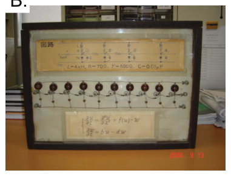</figure>
<p>đi-ốt đường hầm</p>
<p>Hình 4.12 (A) Sơ đồ mạch của nơ-ron FitzHugh-Nagumo theo đề xuất của Nagumo (1962). (B) Hiện thực hóa vật lý bởi Nagumo (ảnh do Kazuyuki Aihara cung cấp).</p>
<p>Các phương trình mô hình của mô hình FitzHugh-Nagumo đơn giản hơn nhiều so với mô hình Hodgkin-Huxley và là hệ hai chiều tương tự mô hình Wilson cơ bản mà ta đã thảo luận trước đó. Một mô hình hai chiều rất hữu ích vì nó cho phép minh họa không gian pha của nó, điều đã thúc đẩy mạnh mẽ sự hiểu biết lý thuyết về các tính chất động lực học của chúng trong lý thuyết hệ động lực. Hai biến này là biến giống điện áp v và biến phục hồi w thúc đẩy việc đặt lại điện áp sau khi tích tụ:</p>
<p>dv(t)</p>
<p>dt = v −v3/3 −w + Iext (4.35)</p>
<p>τ dw(t)</p>
<p>dt = 0.08(v + 0.7 −0.8w) (4.36)</p>
<p>Việc tích phân số các phương trình này hẳn đã quen thuộc lúc này và được trình bày trong chương trình FN.py. Chuỗi xung của nơ-ron này được thể hiện ở Hình 4.13A. Mặc dù từng xung riêng lẻ dường như không khớp chính xác với diễn biến thời gian của xung trong sợi trục khổng lồ của mực ống, trọng tâm của mô hình này là sự thấu hiểu các khía cạnh hệ động lực của nơ-ron. Giản đồ pha, là đồ thị biểu diễn hai biến</p>
<h3>A B</h3>
<p>2</p>
<p>1</p>
<p>1.0</p>
<p>0 w v</p>
<p>0.5</p>
<p>1</p>
<p>0.0</p>
<p>2</p>
<h2>0 50 100 150 200 t</h2>
<h2>2 1 0 1 2 v</h2>
<p>Hình 4.13 (A) Sự phát xung đều của nơ-ron FitzHugh-Nagumo. (B) Giản đồ pha của nơ-ron FitzHugh-Nagumo.</p>
<h3>Programs/FN.py</h3>
<p>1 # FitzHugh−Nagumo model 2 import m a t p l o t l i b . pyplot as p l t 3 4 # Parameters and i n i t i a l i z a t i o n 5 I e x t = 0 . 5 ; v = [ 0 ] ; w= [ 0 ] ; t = [ 0 ] ; dt =0.1 6 7 f o r s t e p in range (1 , i n t (200/ dt ) ) : 8 # rec ord time s t e p s 9 t . append ( t [ step −1]+ dt ) 10 # numerical i n t e g r a t i o n and r e c o r d i n g 11 v . append ( v [ step −1]+ dt ∗( v [ step −1]−v [ step −1]∗∗3/3−w[ step −1]+ I e x t ) ) 12 w. append (w[ step −1]+ dt ∗0.08∗( v [ step −1]+0.7 −0.8∗w[ step −1])) 13 14 p l t . p l o t ( t , v ) ; p l t . x l a b e l ( ’ t ’ ) ; p l t . y l a b e l ( ’v ’ )</p>
<p>đối với nhau, được thể hiện ở Hình 4.13B. Chúng ta khởi đầu hệ thống với các điều kiện ban đầu tùy ý có thể không thực tế về mặt sinh học. Điều này được minh họa bằng vòng tròn đỏ ở điểm bắt đầu quỹ đạo. Ngoài ra, ta cũng chỉ ra chiều diễn tiến thời gian của quỹ đạo này bằng hai đầu mũi tên màu đen. Điểm quan trọng ở đây là hệ thống nhanh chóng tiến tới một chu trình giới hạn (limit cycle), vốn là đặc trưng cho hành vi dao động của điện áp và tham số đặt lại. Có thể thực hiện nhiều phép đặc trưng hóa khác cho một hệ động lực bằng lý thuyết hệ động lực, nhưng lúc này ta sẽ chuyển sang hoàn thiện chương này để phác thảo cách các cơ chế synapse có thể được tích hợp với hình thái của một nơ-ron.</p>
<p>4.5 Hình thái nơ-ron: các mô hình khoang</p>
<p>Chúng ta đã thảo luận tác động của các kênh ion cổng chất dẫn truyền thần kinh, kênh rò rỉ, và kênh ion phụ thuộc điện thế lên điện thế màng của một nơ-ron. Để có cái nhìn toàn diện về trạng thái của một nơ-ron, ta cũng phải đưa vào các tính chất dẫn điện và hình dạng vật lý của nơ-ron. Trái ngược với sợi trục có màng chủ động có khả năng phát sinh điện thế hoạt động, các sợi nhánh theo truyền thống được xem giống như những vật dẫn thụ động, tương tự các sợi cáp dài. Lưu ý rằng sợi nhánh cũng có các kênh ion chủ động tạo ra BAP. Các hiệu ứng phi tuyến trong sợi nhánh cũng rất quan trọng. Tuy nhiên, nhiều đặc điểm chung của sợi nhánh trong chế độ dưới ngưỡng có thể được nghiên cứu bằng các phương trình cáp thụ động, nên phép xấp xỉ này được sử dụng để phác thảo ý tưởng chính đằng sau việc mô hình hóa khoang. Vật lý của cáp dẫn điện đã được William Thomson (Huân tước Kelvin) xây dựng vào giữa thế kỷ XIX, giúp tạo ra những tuyến cáp thông tin xuyên Đại Tây Dương đầu tiên. Nhiều nhà nghiên cứu từ đó đã áp dụng lý thuyết này vào truyền dẫn thần kinh, chẳng hạn như Wilfrid Rall, người đã đóng góp rất nhiều cho lý thuyết và các ứng dụng của nó. Khi tính đến những mắt xích còn thiếu này, chúng ta sẽ chỉ phác thảo ý tưởng cơ bản đằng sau các mô hình khoang trong mục này. Bản thân hướng mô hình hóa này là một phần sôi động và quan trọng của khoa học thần kinh tính toán. Thực vậy, các công cụ hiện đại trong lĩnh vực này sẽ tích hợp các cơ chế để đưa vào nhiều chi tiết của nơ-ron và cho phép các mô phỏng mạng lưới tinh vi.</p>
<p>4.5.1 Lý thuyết cáp</p>
<p>Để cảm nhận về một số phương trình liên quan đến mô hình hóa khoang, chúng ta sẽ phác thảo ngắn gọn phương trình cáp. Phương trình này mô tả sự biến thiên theo không-thời gian của một điện thế dọc theo vật dẫn dạng cáp được dẫn động bởi một dòng điện bơm vào Iinj. Đối với một sợi cáp tuyến tính một chiều lý tưởng hóa, phương trình được cho bởi λ2 ∂2Vm(x, t)</p>
<p>∂Vm(x, t)</p>
<p>∂x2 −τm</p>
<p>∂t −Vm(x, t) + V0 = Rm Iinj(x, t). (4.37)</p>
<p>Đây là một phương trình vi phân đạo hàm riêng, bậc hai theo không gian và bậc nhất theo thời gian. Đạo hàm riêng được ký hiệu bằng ∂ thay cho đạo hàm toàn phần ký hiệu bằng d. Đạo hàm riêng chỉ xét sự phụ thuộc tường minh vào các tham số và bỏ qua sự phụ thuộc ngầm vào các tham số khác. Phương trình vi phân này về mặt hình thức là một phương trình vi phân hypebolic trong trường hợp bạn muốn tra cứu trong sách toán học. Nghiệm của phương trình này, Vm(x, t), mô tả điện thế của cáp tại mỗi vị trí trên cáp và cách nó biến thiên theo thời gian tại mỗi vị trí. Hằng số λ mô tả các tính chất vật lý của cáp và có thứ nguyên là Ωcm. Ví dụ, một sợi cáp hình trụ đường kính d, trong môi trường đẳng thế xung quanh, có tham số lambda là r dRm λ =</p>
<p>2Ri , (4.38)</p>
<p>trong đó Rm là điện trở suất riêng của màng và Ri là điện trở suất nội bào riêng của cáp. Điện trở suất riêng là điện trở của một đoạn vật liệu có tiết diện không đổi, chia cho thể tích của điện trở đó. Điện trở màng, tất nhiên, lớn hơn nhiều so với điện trở nội bào, điều này giải thích tại sao phần lớn dòng điện chảy bên trong cây sợi nhánh. Lưu ý rằng tham số lambda thay đổi theo đường kính của cáp. Hằng số thời gian τm cũng phụ thuộc vào các tính chất vật lý của cáp và được cho bởi τm = RmCm, (4.39)</p>
<p>trong đó Rm là điện trở suất riêng của màng, hay nghịch đảo của độ dẫn rò rỉ, và Cm là điện dung riêng, tức điện dung trên một đơn vị diện tích.</p>
<p>Các nghiệm của phương trình 4.37 cũng phụ thuộc vào dạng của dòng điện bơm vào Iinj(x, t), và nghiệm giải tích chỉ có thể đưa ra cho một số ví dụ đơn giản nhưng vẫn rất giàu tính chỉ dẫn. Lưu ý rằng phương trình có thể được tích phân số trong các tình huống tổng quát hơn như thảo luận bên dưới. Rõ ràng là điện thế cáp phải đạt đến một cấu hình ổn định (phân bố bên trong cáp) nếu dòng điện bơm vào không phụ thuộc thời gian. Ví dụ, nếu ta xét một sợi cáp bán vô hạn bắt đầu tại x = 0 với điện thế cố định V0 = RmI0 và kéo dài tới vô cực sau đó, thì điện thế suy giảm theo hàm mũ với</p>
<h3>Vm = V0e−x</h3>
<p>λ . (4.40)</p>
<p>Sự suy giảm hàm mũ này, tất nhiên, là một vấn đề đối với việc truyền thông tin và tín hiệu trong một sợi cáp dài phải được khuếch đại định kỳ để có thể truyền đi qua những khoảng cách lớn. Lưu ý rằng trong trường hợp truyền tín hiệu, ta phải giải phương trình cáp khi có mặt dòng điện biến thiên theo thời gian. Tuy nhiên, các đặc điểm chung của một tín hiệu bị suy giảm vẫn đúng trong trường hợp này.</p>
<h3>A. Chuỗi các khoang C. Tái dựng theo khoang</h3>
<p>j + 1 j j - 1</p>
<h3>B. Các khoang phân nhánh</h3>
<p>j + 1 j j + 2</p>
<p>Hình 4.14 Các khoang hình trụ ngắn mô tả những đoạn đẳng thế nhỏ của một sợi nhánh thụ động hoặc những đoạn nhỏ của sợi nhánh chủ động hay sợi trục khi đưa vào các kênh ion cần thiết. (A) Các chuỗi và (B) các nhánh xác định điều kiện biên của từng khoang. (C) Cấu trúc liên kết (topology) của nơ-ron đơn lẻ có thể được tái dựng bằng các khoang, và những mô hình như vậy có thể được mô phỏng bằng các kỹ thuật tích phân số.</p>
<p>Nếu chúng ta đưa vào các kênh ion phụ thuộc điện thế như trong các phương trình Hodgkin–Huxley, ta sẽ có một dòng điện bơm vào phụ thuộc điện thế. Trong trường hợp này, ta phải giải phương trình cáp phi tuyến, trong đó Iinj(x, t) ở phương trình 4.37 được thay bằng Iinj(Vm(x, t), t) vốn phụ thuộc tường minh vào Vm, đại lượng này đến lượt nó lại biến thiên theo không gian và thời gian. Không thể đưa ra nghiệm giải tích tổng quát cho phương trình này, nhưng chúng ta có thể dùng các kỹ thuật tích phân số để giải phương trình cho những trường hợp cụ thể.</p>
<p>4.5.2 Hình dạng vật lý của nơ-ron</p>
<p>Các phương trình cáp phụ thuộc vào tính chất vật lý của cáp thông qua tham số λ, và đã đến lúc đưa hình dạng vật lý của nơ-ron vào tính toán. Bước đầu tiên để giải các phương trình cáp cho những sợi cáp có cấu trúc khác với một sợi cáp tuyến tính đồng nhất đơn giản là chia sợi cáp thành các đoạn nhỏ (ví dụ, các sợi cáp hình trụ nhỏ), trong đó mỗi đoạn phải đủ nhỏ để điện thế bên trong mỗi đơn vị xấp xỉ không đổi. Ta gọi đơn vị này là một khoang (compartment) (xem Hình 4.14A). Mỗi khoang được chi phối bởi một phương trình cáp cho cáp hữu hạn, vốn là một phương trình vi phân bậc nhất theo thời gian, như ta đã thấy ở trên. Đối với các khoang nhỏ, ta có thể giả định điện thế không đổi bên trong khoang. Tuy nhiên, ta cũng phải tính đến các điều kiện biên. Điều này có thể thực hiện bằng cách thay không gian liên tục x bằng các vị trí không gian rời rạc được gán nhãn bằng chỉ số, chẳng hạn xj, và thay các vi phân không gian bằng sai phân,</p>
<p>∂2V (x, t)</p>
<p>∂x2 →Vj+1 −2Vj(t) + Vj−1(t)</p>
<p>(xj−1 −xj)2 . (4.41)</p>
<p>Với các công thức tương tự, ta có thể tính đến các sợi cáp phân nhánh (như minh họa ở Hình 4.14B). Một nơ-ron do đó được mô phỏng bằng một mô hình rời rạc gồm các sợi cáp hình trụ nhỏ như minh họa ở Hình 4.14C. Mô hình khoang này được chi phối bởi một hệ phương trình vi phân bậc nhất theo thời gian, vì ta đã thay các vi phân không gian bằng các phương trình sai phân. Số lượng khoang phải đủ lớn để biểu diễn chính xác một nơ-ron. Trong thực tế, số lượng khoang cần thiết để có xấp xỉ tốt cho nơ-ron thực phụ thuộc vào độ phức tạp của nơ-ron đó. Các mô hình gồm từ vài trăm đến vài nghìn khoang đã được sử dụng trong tài liệu khoa học để biểu diễn rất chính xác các nơ-ron đơn lẻ.</p>
<p>4.5.3 Các trình mô phỏng nơ-ron</p>
<figure class="bookfig"></figure>
<p>Hình 4.15 Ví dụ về môi trường mô phỏng NEURON. Ví dụ cho thấy một mô phỏng với tế bào tháp được tái dựng, trong đó một xung dòng điện ngắn đã được bơm vào.</p>
<p>Hệ phương trình vi phân ghép cặp định nghĩa một mô hình khoang có thể được giải bằng phương pháp số. Mặc dù việc giải số các phương trình vi phân về nguyên tắc là khá trực tiếp, như đã thảo luận ở Chương 3.4, nhưng có nhiều chi tiết cần cân nhắc để tích phân số hiệu quả. Chúng bao gồm tính ổn định của nghiệm và việc sử dụng hiệu quả tài nguyên tính toán. Do đó, việc sử dụng phần mềm chuyên dụng triển khai các kỹ thuật số phù hợp là rất hữu ích để các nhà khoa học thần kinh tính toán có thể tập trung vào các câu hỏi sinh học. Các mô hình khoang thường được phân tích bằng phương pháp số bằng cách thay thế các phương trình của chúng bằng những biểu diễn tương đương của linh kiện điện và sử dụng các chương trình mô phỏng mạch như SPICE để giải hệ.</p>
<p>Trình mô phỏng phổ biến nhất hiện nay được gọi là NEURON (https://neuron.yale.edu/neuron), do M. L. Hines, J. W. Moore và N. T. Carnevale từ các trường Đại học Duke và Yale phát triển. Gói phân phối của nó bao gồm một ví dụ về tái dựng ba chiều của một tế bào tháp, như thể hiện ở Hình 4.15. Trong ví dụ được trình bày, ta bơm một dòng điện 20 nA tại t = 1 ms trong 0.5 ms tại vị trí trên sợi nhánh được chỉ thị bởi chấm tròn và con trỏ trong phác thảo đồ họa của tế bào. Sau đó ta đo đáp ứng tại soma, kết quả có thể thấy trong cửa sổ đồ thị. Sợi nhánh thụ động truyền dòng điện tới soma với một độ trễ nhất định và đáp ứng thoai thoải hơn. Các phiên bản mới của những chương trình mô phỏng như vậy cũng tích hợp nhiều cơ chế tế bào đặc thù và một số hỗ trợ cho mô phỏng mạng lưới. Tất cả các gói mô phỏng này đều kèm theo tài liệu hướng dẫn rất đáng khuyến khích cho việc nghiên cứu sâu hơn. Ngoài ra, Viện Allen (Allen Institute) hiện có một danh sách phong phú các mô hình cho nhiều loại nơ-ron từ vỏ não chuột và người cùng với dữ liệu dùng để xây dựng các mô hình đó.</p>
<figure class="bookfig">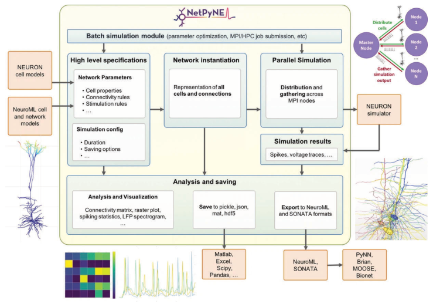</figure>
<p>Hình 4.16 Phác thảo công cụ NetPyNe để mô phỏng và phân tích nơ-ron và mạng lưới [từ Dura-Bernal et al., NetPyNE, a tool for data-driven multiscale modelling of brain circuits, eLife 2019.</p>
<p>Mặc dù NEURON là một công cụ tinh vi, nhưng đã có nhiều phát triển kể từ khi nó ra đời. Sức mạnh của công cụ này và các công cụ liên quan là hiện nay đã có một cơ sở dữ liệu mô hình lớn cũng như sự tích hợp vào các công cụ phân tích. Một công cụ mới thú vị có tên là NetPyNe, viết tắt của ‘Networks using Python and NEURON’ (Mạng lưới sử dụng Python và NEURON). Công cụ này cho phép nhập và định nghĩa các mô hình nơ-ron cũng như mạng lưới, đồng thời mô phỏng và phân tích các mô hình đó. Một phác thảo được thể hiện ở Hình 4.16.</p>
<p>.</p><h2 class="chapter-title">Phần II · Chương 5 — Nơ-ron tích phân–phát xung và mô hình quần thể</h2>
<h2>5 Neuron tích phân-và-phóng xung và các mô hình quần thể</h2>
<p>Tuân theo cách tiếp cận tối giản trong mô hình hóa, chương này giới thiệu một loạt các mức độ trừu tượng hóa tiếp theo của neuron. Chúng ta bắt đầu bằng việc thảo luận về neuron tích phân-và-phóng xung có rò rỉ (leaky integrate-and-fire – LIF) vô cùng quan trọng. Mặc dù mô hình này nhìn chung khá phức tạp, nhưng tính đơn giản của động lực học dưới ngưỡng cho phép thực hiện một số phép tính thú vị. Chúng ta cũng giới thiệu các tổng quát hóa gần đây hơn của mô hình cơ bản này để cho phép tích hợp trở lại nhiều đặc điểm thực tế hơn của các nhóm neuron cụ thể. Trong phần giữa của chương này, chúng ta thảo luận một số khía cạnh tổng quát về xử lý thông tin bằng các neuron phóng xung, điều này sẽ tạo tiền đề cho mức độ trừu tượng hóa cuối cùng của chúng ta đối với các hệ thống thần kinh. Đó là, chúng ta thực hiện một bước nhảy vọt quan trọng khác để mô tả hành vi tập thể của các nhóm neuron, còn được gọi là mô hình quần thể (population models) hoặc mô hình tốc độ (rate models). Các nút quần thể là cơ sở cho nhiều nghiên cứu ở cấp độ hệ thống trong khoa học thần kinh nhận thức và được sử dụng thường xuyên trong các phần sau của cuốn sách này. Chương này là một khởi đầu quan trọng của các phép trừu tượng hóa cần thiết để giải quyết các nguyên lý xử lý thông tin ở cấp độ hệ thống.</p>
<p>5.1 Các mô hình tích phân-và-phóng xung có rò rỉ</p>
<p>Nhiều nghiên cứu tính toán trong tài liệu khoa học dựa trên các phiên bản đơn giản hóa mạnh mẽ của các cơ chế hiện diện trong neuron thực hoặc thậm chí của các mô hình dựa trên độ dẫn. Có nhiều lý do cho những sự đơn giản hóa như vậy. Thường thì sự đơn giản hóa là cần thiết để giúp các phép tính với số lượng lớn neuron trở nên khả thi. Sự đơn giản hóa cũng hữu ích về mặt khoa học nhằm làm nổi bật các đặc điểm tối thiểu cần thiết để tạo ra một số tính chất nổi trội nhất định trong các mạng lưới. Tất nhiên, một phần quan trọng của mọi nghiên cứu nghiêm túc là phải xác minh rằng các giả định đơn giản hóa là phù hợp trong bối cảnh của câu hỏi cụ thể cần phân tích thông qua mô hình. Ngoài ra, một động lực mạnh mẽ cho các mô hình sau đây là hình dạng của các xung điện thế do neuron tạo ra rất đồng nhất (rập khuôn), và do đó khó có khả năng các chi tiết chính xác về hình dạng xung lại đóng vai trò quyết định đối với việc truyền thông tin trong hệ thần kinh ở cấp độ được thảo luận trong cuốn sách này. Ngược lại, thời điểm xuất hiện xung chắc chắn có ảnh hưởng nhất định đến quá trình xử lý của các phần tử phóng xung trong mạng lưới mà chúng ta sẽ khám phá sâu hơn bên dưới. Vì vậy, đối với các câu hỏi mà chúng ta sắp đặt ra, việc mô tả hình dạng chính xác của một xung không quan trọng bằng việc tích hợp đầu vào synap dẫn đến sự phát sinh xung và quá trình phục hồi sau xung. Do đó, chúng ta bỏ qua động lực học chi tiết của kênh ion và thay vào đó tập trung vào việc xấp xỉ sự tích hợp động lực học của đầu vào synap, thời điểm phóng xung và việc đặt lại (reset) sau các xung.</p>
<p>Tác động chính của các kênh natri và kênh rò rỉ, vốn quan trọng trong pha tăng của một xung điện thế, là chúng đẩy điện thế neuron lên mức cao hơn khi có đầu vào và để điện thế suy giảm về điện thế nghỉ trong trường hợp ngược lại. Nếu bỏ qua các tính phi tuyến được nắm bắt</p>
<p>Fundamentals of Computational Neuroscience. Third edition. Thomas P. Trappenberg, Oxford University Press. © Oxford University Press 2023. DOI:10.1093/oso/9780192869364.003.0005 bởi sự phụ thuộc điện thế phi tuyến của các kênh natri, chúng ta có thể xấp xỉ động lực học dưới ngưỡng của điện thế màng bằng một phương trình vi phân tuyến tính đơn giản theo định luật Kirchoff (xem các phương trình 4.20 và 4.2), dv(t)</p>
<p>dt = −(v(t) −EL) + RI(t), (5.1)</p>
<p>τm trong đó EL là điện thế nghỉ. Một hệ thống như vậy còn được gọi là bộ tích phân có rò rỉ (leaky integrator). Chúng ta đã đưa vào một hằng số thời gian τm được xác định chủ yếu bởi điện dung của mô hình một khoang và độ dẫn trung bình của các kênh natri và kênh rò rỉ. Dòng điện đầu vào I(t) có thể có nhiều nguồn khác nhau, chẳng hạn như dòng điện được cấp nhân tạo trong các thiết lập thực nghiệm hoặc đầu vào synap. Chúng ta sẽ chỉ rõ điều này sau cho các mô hình cụ thể.</p>
<p>Trong khi sự tích tụ dưới ngưỡng của điện thế màng được mô hình hóa khá chi tiết, một sự đơn giản hóa lớn được thực hiện ngay khi điện thế màng đủ lớn để kích hoạt một điện thế hoạt động. Tại thời điểm này, ở Chương 4 chúng ta đã sử dụng bộ phương trình Hodgkin–Huxley đầy đủ để mô hình hóa hình dạng của xung. Tuy nhiên, bây giờ chúng ta chỉ quan tâm đến thực tế là một xung đã được tạo ra tại thời điểm tf khi ngưỡng θ đạt được. Về mặt toán học, chúng ta có thể viết điều này là v(tf) = θ. (5.2)</p>
<p>Giả định rằng có một ngưỡng cố định chỉ là một phép xấp xỉ thô của quá trình phát sinh xung thực tế. Các phương trình Hodgkin–Huxley đã chỉ ra rằng giá trị không thể quay lại (value of no return) — tức lượng tích tụ mà từ đó không thể ngăn chặn việc phóng xung bằng cách tắt kích thích — phụ thuộc vào hình dạng (hoặc độ cong) của quá trình tích tụ dòng điện. Ngoài ra, một số neuron vỏ não in vivo thể hiện sự biến thiên mạnh mẽ của ngưỡng này cũng như các biến thiên khác vốn bị bỏ qua ở đây.</p>
<p>Để hoàn thiện mô hình, chúng ta cũng phải đặt lại điện thế màng sau khi một neuron đã phóng xung. Nhiều cơ chế có thể được xem xét ở đây và sẽ được khám phá sâu hơn bên dưới. Một lựa chọn đặc biệt đơn giản là đặt lại điện thế màng về một giá trị cố định vres ngay sau một xung, ví dụ, v(tf + δ) = vres, (5.3)</p>
<p>trong đó δ là một bước thời gian nhỏ vô cùng trong dạng liên tục, hoặc một bước thời gian hữu hạn trong các phiên bản rời rạc, như được sử dụng trong các mô phỏng số. Chúng ta có thể tích hợp thời gian trơ tuyệt đối bằng cách giữ cho điện thế màng không đổi, v = vres, trong một khoảng thời gian nhất định sau xung. Một tính trơ tiệm tiến hơn có thể được mô phỏng bằng một mô tả hàm mượt mà hơn thay vì sự đặt lại đột ngột của điện thế màng, nhưng hầu hết các mô phỏng được thảo luận trong cuốn sách này sẽ không phụ thuộc cốt yếu vào những chi tiết này. Các phương trình 5.1–5.3 định nghĩa neuron tích phân-và-phóng xung (có rò rỉ), mặc dù một tên gọi chính xác hơn có lẽ là neuron tích phân-phóng xung-và-đặt lại có rò rỉ. Nó cũng thường được viết tắt là neuron LIF hoặc neuron IF. Một neuron mô hình như vậy được minh họa sơ đồ trong Hình 5.1.</p>
<p>Mặc dù dạng của neuron IF được trình bày ở đây khá tổng quát, mô hình neuron này thường được sử dụng kết hợp với các dòng điện đầu vào cụ thể cho các nghiên cứu mô hình hóa cụ thể. Ví dụ, chúng ta có thể coi dòng điện này được cung cấp từ bên ngoài trong các thí nghiệm hoặc chúng ta có thể mô tả dòng điện được tạo ra từ các α1 w1 w2 w3 α2</p>
<h3>Σ</h3>
<p>α3 wn αn</p>
<p>Hình 5.1 Minh họa sơ đồ của một neuron tích phân-và-phóng xung có rò rỉ. Mô hình neuron này tích hợp (tính tổng) đầu vào bên ngoài, với mỗi kênh được nhân trọng số với các hệ số trọng số synap tương ứng wi, và tạo ra một xung đầu ra nếu điện thế màng đạt đến ngưỡng phóng xung.</p>
<p>quá trình chuyên biệt của các tế bào cảm giác. Trong nhiều mô phỏng mạng lưới, chúng ta chủ yếu quan tâm đến tổng các dòng điện synap được tạo ra bởi sự phóng xung của các tế bào tiền synap. Tổng các dòng điện synap này phụ thuộc vào hiệu lực của từng synap riêng lẻ, được mô tả bằng một giá trị cường độ synap, wj, cho mỗi synap, được gắn nhãn bằng chỉ số j đại diện cho mỗi neuron tiền synap. Chúng ta cũng gọi giá trị này là cường độ kết nối, hiệu lực synap, hoặc đơn giản là giá trị trọng số. Sau đây, chúng ta giả sử rằng không có sự tương tác giữa các synap để có thể viết tổng dòng điện đầu vào của neuron đang xét dưới dạng tổng của từng dòng điện synap riêng lẻ, trong đó mỗi đáp ứng hậu synap đối với một sự kiện tiền synap, được viết dưới dạng hàm α mà chúng ta đã thảo luận trong Mục 4.2.3, được nhân với một giá trị trọng số (hiệu quả synap)</p>
<h3>X</h3>
<h3>X</h3>
<p>wjα(t −tf</p>
<h3>I(t) =</h3>
<p>j). (5.4)</p>
<p>j tf j</p>
<h3>Biến tf</h3>
<p>j ký hiệu thời điểm phóng xung của neuron tiền synap của synap j, trái ngược với thời điểm phóng xung của neuron hậu synap ở trên vốn không có chỉ số. Do đó, chúng ta đã tham số hóa diễn biến theo thời gian của đáp ứng synap bằng hàm α(t) như được sử dụng trong phương trình 4.1. Ngoài ra, chúng ta có thể sử dụng mô hình synap dựa trên độ dẫn như trong các phương trình 4.4–4.5. Sự đơn giản hóa chính của các neuron IF là quá trình phát sinh xung được thay thế đơn giản bằng một ghi nhận rằng một xung đã xảy ra và một sự đặt lại điện thế.</p>
<p>5.1.1 Đáp ứng của các neuron IF đối với các dòng điện đầu vào rất ngắn và không đổi</p>
<p>Tầm quan trọng và tính đơn giản mang tính minh họa của mô hình LIF cho phép suy diễn chi tiết hơn về một số hành vi của nó. Toàn bộ hệ phương trình mô tả một neuron IF là phi tuyến do sự đặt lại điện thế màng sau mỗi xung, và thường phải được tích phân bằng phương pháp số. Tuy nhiên, phương trình động lực học cho điện thế màng dưới ngưỡng dẫn đến một xung, phương trình 5.1, về mặt toán học là một phương trình vi phân tuyến tính không thuần nhất có thể giải được bằng giải tích. Để đơn giản hóa các phương trình sau đây, chúng ta sẽ đặt EL = 0 sao cho điện thế màng v được đo tương đối so với điện thế nghỉ này. Chúng ta thảo luận các nghiệm trong mục này cho một số trường hợp mang tính hướng dẫn.</p>
<p>Chúng ta bắt đầu với trường hợp một neuron IF được kích thích bởi một xung đầu vào rất ngắn, một dòng điện đầu vào rất ngắn I(t) không đủ để gây ra một xung điện thế. Về mặt toán học, chúng ta viết xung đầu vào ngắn này dưới dạng hàm delta I(t) = δ(t) như đã đề cập trong Chương 3.3. Khó có thể tưởng tượng dạng này tồn tại trong tự nhiên; điều đó có nghĩa là có một xung đầu vào mạnh vô hạn nhưng có thời lượng bằng không. Tuy nhiên, có thể định nghĩa hàm delta một cách chặt chẽ như một quá trình giới hạn của một xung hữu hạn, ví dụ, như một đường cong hình chuông Gaussian, và làm cho thời lượng nhỏ dần trong khi giữ nguyên tích phân trên hàm này. Với quá trình giới hạn này, chúng ta có thể giải phương trình vi phân 5.1.. Giả sử chúng ta bắt đầu ở tình huống mà điện thế ban đầu ngay trước thời điểm t = 0 bằng không. Sau đó chúng ta áp dụng một xung đầu vào rất ngắn đẩy điện thế tại thời điểm t = 0 lên v(t = 0) = 1. Sau đó, không còn dòng điện đầu vào nào nữa, nên phương trình 5.1 trở thành một phương trình vi phân thuần nhất đơn giản cho mọi thời điểm t > 0, được cho bởi dv(t)</p>
<p>τm dt + v(t) = 0. (5.5)</p>
<p>Nghiệm của phương trình vi phân này là một hàm mũ có thể dễ dàng kiểm chứng bằng cách thế kết quả vào phương trình vi phân. Điện thế màng suy giảm theo hàm mũ sau khi một dòng điện bên ngoài ngắn được áp dụng, v(t) = e−t/τm. (5.6)</p>
<p>Thang thời gian của sự suy giảm này được cho bởi hằng số thời gian τm.</p>
<p>Một ví dụ khác mà chúng ta có thể tích phân các phương trình động lực học dưới ngưỡng là một neuron IF được kích thích bởi một dòng điện đầu vào không đổi đủ thấp để ngăn việc phóng xung. Điều này sẽ dẫn đến, sau một khoảng thời gian quá độ, một trạng thái dừng trong đó điện thế màng sẽ không thay đổi nữa vì dòng điện đầu vào không còn thay đổi. Khi điện thế màng không thay đổi, ta có dv dt = 0. (5.7)</p>
<p>Thế điều này vào phương trình 5.1 cho ta điện thế cân bằng ở thời gian lớn được cho bởi v = RI. (5.8)</p>
<p>Chúng ta đã chọn điều kiện trong đó dòng điện đầu vào đủ nhỏ để không gây ra xung. Điều kiện này giờ đây có thể được chỉ rõ hơn là RI < θ. Chúng ta mới chỉ tính nghiệm cân bằng của điện thế màng sau khi một dòng điện không đổi được áp dụng trong một thời gian dài. Phương trình vi phân cho đầu vào không đổi cũng có thể được giải cho mọi thời điểm sau khi dòng điện không đổi Iext = const được áp dụng, như trong v(t) = RI(1 −e−t/τm + v(t = 0)</p>
<h3>RI e−t/τm), (5.9)</h3>
<p>điều này có thể được kiểm chứng bằng cách thế nghiệm này vào phương trình vi phân. Nghiệm này có hai phần: số hạng cuối mô tả sự suy giảm theo hàm mũ của điện thế tại v(t = 0) như trước đây, và số hạng đầu mô tả sự tăng lên của điện thế màng do dòng điện đầu vào. Nghiệm này được minh họa trong Hình 5.2A. Neuron không phóng xung trong trường hợp này vì chúng ta đã sử dụng một dòng điện đầu vào tương đối nhỏ so với ngưỡng phóng xung của neuron, RI < θ. Ngược lại, nếu dòng điện bên ngoài trung bình lớn hơn ngưỡng, RI > θ, thì neuron phóng xung đều đặn với một khoảng thời gian không đổi giữa các xung, gọi là khoảng cách giữa các xung (interspike interval). Điều này được thể hiện trong Hình 5.2B từ các mô phỏng bằng chương trình mô phỏng LIF.py.</p>
<h3>Xung</h3>
<h3>Xung</h3>
<p>55</p>
<p>55 v [mV]</p>
<p>v [mV]</p>
<p>60</p>
<p>60</p>
<p>65</p>
<p>65</p>
<h2>0 200 400 600 800 1000 Thời gian [ms]</h2>
<h2>0 200 400 600 800 1000 Thời gian [ms]</h2>
<p>Hình 5.2 Các chuỗi xung và điện thế màng được mô phỏng của một neuron tích phân-và-phóng xung có rò rỉ. Ngưỡng được đặt ở θ = 10 mV và được biểu thị bằng đường nét đứt. (A) Đầu vào không đổi với cường độ RIext = 8 mV, quá nhỏ để gây ra xung. (B) Đầu vào không đổi có cường độ RIext = 12 mV, đủ mạnh để gây ra các xung theo những khoảng thời gian đều đặn. Lưu ý rằng chúng ta không đưa hình dạng của bản thân xung vào trong hình mà chỉ đặt lại điện thế màng đồng thời biểu thị rằng một xung đã xảy ra bằng cách vẽ một dấu chấm ở hình phía trên.</p>
<p>Programs/LIF.py 1 # Simulation of ( leaky ) i n t e g r a t e −and−f i r e neuron 2 import numpy as np 3 import m a t p l o t l i b . pyplot as p l t 4 5 # parameters of the model 6 dt =0.1 # i n t e g r a t i o n time s t e p [ms] 7 tau =10 # time c o n s t a n t [ms] 8 E L=−65 # r e s t i n g p o t e n t i a l [mV] 9 t h e t a =−55 # f i r i n g t h r e s h o l d [mV] 10 RI ext =8 # c o n s t a n t e x t e r n a l i n p u t [mA/Ohm] 11 12 # I n t e g r a t i o n with Euler method 13 v r e c =np . a r r a y ( [ ] ) 14 t r e c =np . a r r a y ( [ ] ) 15 s r e c =np . a r r a y ( [ ] ) 16 t s t e p =0; v=E L 17 f o r t in range ( i n t (100/ dt ) ) : 18 s=v>t h e t a 19 v=s∗E L+(1−s ) ∗( v−dt / tau ∗( ( v−E L)−RI ext ) ) 20 v r e c =np . append ( v rec , v ) 21 t r e c =np . append ( t r e c , t ) 22 s r e c =np . append ( s rec , s ) 23 24 # P l o t t i n g r e s u l t s 25 ax1 = p l t . axes ( [ 0 . 2 , 0. 7 , 0.7 , 0 . 2 ] ) 26 ax1 . p l o t ( t r e c , s rec , ’ . ’ , markersize =20) 27 ax1 . a x i s ( [ 0 , 100/ dt , 0 .5 , 1 . 5 ] ) 28 p l t . x t i c k s ( [ ] , [ ] ) ; p l t . y t i c k s ( [ ] , [ ] ) 29 p l t . y l a b e l ( ’ Spikes ’ ) 30 31 ax2 = p l t . axes ( [ 0 . 2 , 0. 2 , 0.7 , 0 . 5 ] ) 32 ax2 . p l o t ( t r e c , v r e c ) 33 ax2 . p l o t ( [ 0 , 100/ dt ] ,[ −55 , −55], ’−−’ ) ; 34 ax2 . a x i s ( [ 0 , 100/ dt , −66, −53]) 35 p l t . x l a b e l ( ’Time [ms] ’ ) ; p l t . y l a b e l ( ’v [mV] ’ )</p>
<p>5.1.2 Hàm khuếch đại tốc độ</p>
<p>Chúng ta có thể tính thời gian một neuron IF cần để một dòng điện đầu vào không đổi đạt tới ngưỡng, được gọi là thời gian vượt ngưỡng lần đầu (first passage time), từ nghiệm trong phương trình 5.9. Chúng ta có thể chọn thang thời gian sao cho xung cuối cùng xảy ra tại t = 0, đây cũng là thời điểm mà điện thế màng được đặt lại, v(t = 0) = vres. Thời gian vượt ngưỡng lần đầu, tf, khi đó được cho bởi thời điểm khi điện thế màng đạt đến ngưỡng phóng xung, v(tf) = θ. Điều này được tính từ phương trình 5.9 là tf = −τm ln θ −RI vres −RI , (5.10)</p>
<p>trong đó ln là logarit tự nhiên (logaritmus naturalis), là hàm ngược của hàm mũ. Nghịch đảo của thời gian vượt ngưỡng lần đầu xác định tốc độ phóng xung,</p>
<p>¯r = (tref −τm ln θ −RI vres −RI )−1, (5.11)</p>
<p>trong đó chúng ta đã đưa vào một thời gian trơ tuyệt đối tref. Hàm này là hàm kích hoạt của một neuron IF, được minh họa trong Hình 5.3 đối với một vài giá trị của điện thế đặt lại, vres, và thời gian trơ tuyệt đối, tref. Hàm này nhanh chóng đạt đến hành vi tuyến tính tiệm cận sau một khởi phát nhanh với các dòng điện bên ngoài vượt quá giá trị ngưỡng. Một hàm tuyến tính theo ngưỡng (threshold-linear function) thường được sử dụng để xấp xỉ hàm kích hoạt của các neuron IF.</p>
<p>0.25 v res = 0; t ref = 0</p>
<h3>Tốc độ phóng xung trung bình [τ -1]</h3>
<p>0.2 m vres= 5</p>
<p>0.15 t ref = 1</p>
<p>0.1 tref = 5</p>
<p>0.05</p>
<p>0 5 10 15 20 25 30 0</p>
<h3>RI ext</h3>
<p>Hình 5.3 Hàm kích hoạt của một neuron tích phân-và-phóng xung có rò rỉ đối với một vài giá trị của điện thế đặt lại vres và thời gian trơ tref. Tốc độ phóng xung được cho theo đơn vị nghịch đảo của hằng số thời gian. Neuron chỉ phóng xung khi đầu vào đủ mạnh để điện thế màng đạt đến ngưỡng (RIext = 10 trong trường hợp này). Tốc độ phóng xung trung bình tăng đối với các điện thế đặt lại lớn hơn và thời gian trơ ngắn hơn.</p>
<p>Hàm kích hoạt của một neuron có thể được đo bằng thực nghiệm, tương tự như các mô phỏng bằng cách áp dụng các dòng điện bên ngoài không đổi có độ lớn khác nhau lên một neuron cô lập trong đĩa Petri. Các bản ghi in vitro như vậy có thể được sử dụng để kiểm tra các tham số thần kinh chính mà chúng ta cần hiểu cho các mô phỏng trung thực về mặt sinh học. Tuy nhiên, chúng ta đã thấy rằng các hàm kích hoạt như vậy cũng phụ thuộc vào nhiễu trong hệ thống, như đã được minh họa cho một neuron Hodgkin–Huxley trong Hình 4.10. Bây giờ chúng ta sẽ thảo luận về một số mô hình nhiễu có thể được sử dụng để hiệu chỉnh hàm kích hoạt này.</p>
<p>5.1.3 Mô hình đáp ứng xung ⋄</p>
<p>Trong mục trước, chúng ta đã tích phân phương trình mô tả các neuron IF đơn giản với các dòng điện không đổi kích thích neuron, và chúng ta đã tính toán các đáp ứng của neuron đối với các xung dòng điện rất ngắn. Khi nghĩ về việc truyền thông tin trong các neuron, chúng ta quan tâm nhiều hơn đến các dòng điện đầu vào biến thiên theo thời gian, chẳng hạn như các dòng được tạo ra bởi các chuỗi xung tiền synap. Chúng ta có thể tích phân một cách hình thức phương trình vi phân động lực học 5.1 cho bất kỳ đầu vào phụ thuộc thời gian nào. Để chứng minh điều này, chúng ta sử dụng các kết quả trước đó cho thấy đáp ứng của neuron đối với các xung dòng điện bên ngoài rất ngắn. Ý tưởng của lời giải là biểu diễn một dòng điện bên ngoài tùy ý I(t) như một tập hợp gồm nhiều xung rất ngắn được điều biến bởi cường độ của tín hiệu đầu vào tại thời điểm cụ thể đó. Đáp ứng đối với mỗi xung dòng điện là một hàm mũ, như chúng ta đã thấy trước đây. Do đó, nghiệm tổng quát có thể được biểu diễn dưới dạng tổng trên tất cả các đáp ứng hàm mũ đối với các xung dòng điện rất ngắn. Tổng này thực chất là một tích phân vì chúng ta có một số hạng cho mỗi bước thời gian nhỏ vô cùng. Diễn biến theo thời gian của một neuron IF để đáp ứng với một dòng điện đầu vào tùy ý I(t) có thể được viết dưới dạng một phương trình tích phân,</p>
<h3>Z ∞</h3>
<p>0 e−s/τmI(t −s)ds. (5.12)</p>
<p>v(t) = R</p>
<p>Biến tích phân s đại diện cho tất cả các thời điểm đứng trước thời điểm t, và các xung dòng điện tại những thời điểm như vậy ảnh hưởng đến điện thế màng tại thời điểm t một lượng phụ thuộc theo hàm mũ vào khoảng cách thời gian s. Điều này có nghĩa là các xung gần đây hơn có ảnh hưởng đến điện thế màng lớn hơn so với các xung ở xa hơn.</p>
<p>Dòng điện đầu vào I(t) có thể được tạo ra bằng các điện cực xuyên qua một neuron, và chúng ta có thể áp dụng các dạng khác nhau của dòng điện này để nghiên cứu đáp ứng của neuron. Sau đây là phác thảo các phương trình dành riêng cho trường hợp thú vị của các đầu vào synap được tạo ra bởi sự phóng xung tiền synap. Chúng ta cần tính đến các cơ chế đặt lại trong các neuron IF, vốn đã bị bỏ qua trong phương trình 5.12. Chúng ta sẽ tính đến đáp ứng trong điện thế màng sau một xung tiền synap và sự thay đổi trong điện thế màng sau một xung hậu synap bằng cách sử dụng hai số hạng riêng biệt, được ký hiệu lần lượt là ϵ và η. Do đó, điện thế màng của mô hình tích phân-và-phóng xung có rò rỉ có thể được biểu diễn dưới dạng tổng của các điện thế riêng lẻ η và ϵ nhờ tính tuyến tính của phương trình vi phân 5.1. Do đó, mô tả về điện thế màng được tách thành các thành phần sau</p>
<h3>X</h3>
<h3>X</h3>
<h3>X</h3>
<p>wjϵ(t −tf, t −tf η(t −tf). (5.13)</p>
<p>v(t) = j) + j tf tf j</p>
<p>Phương trình này bao gồm một tổng trên nhiều số hạng ϵ, mỗi số hạng cho một synap được nhân với giá trị trọng số tương ứng. Những thay đổi trong điện thế màng được mô tả bởi các số hạng ϵ nhìn chung có thể phụ thuộc vào xung hậu synap cuối cùng tại thời điểm tf nếu các kênh ion phụ thuộc vào điện thế. Đặc điểm chính được mã hóa trong số hạng ϵ này là ảnh hưởng của điện thế màng hậu synap lên lịch sử phóng xung của từng xung tiền synap tf j, như được xác định bởi phương trình 5.12. Chúng ta có thể đưa vào số hạng này dạng cụ thể của dòng điện đầu vào được tạo ra bởi một sự kiện synap mà chúng ta đã tham số hóa bằng hàm α trong Chương 4. Điều này có thể được viết là</p>
<h3>Z ∞</h3>
<h2>0 e−s/τmα(t −tf</h2>
<p>ϵ(t −tf j −s)ds, (5.14)</p>
<p>j) = R cho một đầu vào synap tại synap j.</p>
<p>Số hạng thứ hai trong phương trình 5.13 (số hạng η) mô tả sự đặt lại điện thế màng sau khi một xung hậu synap đã xảy ra. Chúng ta có thể viết điều này dưới dạng tương tự như biểu thức cho đáp ứng synap, bằng cách đưa vào một dòng điện delta âm ngắn với cường độ của ngưỡng</p>
<h3>RIres = −θδ(t −tf). (5.15)</h3>
<p>Tích phân 5.12 cho dòng điện đặt lại đặc biệt này được cho bởi η(t −tf) = −θe−(t−tf)/τm. (5.16)</p>
<p>Thời điểm phóng xung tf, được viết không có chỉ số, là thời điểm phóng xung của neuron hậu synap, được cho bởi việc giải phương trình v(tf) = θ, (5.17)</p>
<p>trái ngược với thời điểm phóng xung của neuron tiền synap vốn có chỉ số, tf j. Lưu ý rằng các hàm η và ϵ thường có thể được giải bằng giải tích cho các lựa chọn cụ thể của cơ chế đặt lại và hàm α, tương ứng. Một số ví dụ được tóm tắt trong Bảng 5.1. Dạng tích phân của các neuron IF, được định nghĩa bởi các phương trình 5.17 và 5.13, được gọi là mô hình đáp ứng xung (spike-response model). Chúng ta sẽ sử dụng mô hình này để suy diễn các mô tả về hành vi trung bình của các quần thể neuron ở phần sau của chương này.</p>
<p>5.1.4 Mô hình LIF tổng quát</p>
<p>Neuron tích phân-và-phóng xung có rò rỉ (LIF) nắm bắt được một số thành phần thiết yếu của một neuron đang phóng xung, cụ thể là sự tích hợp dưới ngưỡng của các dòng điện, sự phóng xung của một neuron khi điện thế màng tích tụ đủ, và sự đặt lại điện thế màng sau một xung. Như đã chỉ ra, một số chi tiết của mô hình này bị đơn giản hóa quá mức, và nhiều chi tiết sinh học hơn có thể quan trọng để đưa vào tùy thuộc vào các câu hỏi nghiên cứu cụ thể. Ví dụ, người ta đã đề cập rằng nói một cách chặt chẽ thì không có ngưỡng phóng xung cố định, và sự đặt lại cũng như tính trơ sau xung cũng tinh vi hơn. Một bước tiến quan trọng cho các nhà mô hình hóa tính toán đã được thực hiện tại Viện Khoa học Não bộ Allen (Allen Institute for Brain Science). Các nhà nghiên cứu ở đó đã định nghĩa một loạt các mô hình LIF tổng quát (generalized LIF – GLIF) có hệ thống với các chi tiết được bổ sung.</p>
<p>Việc định nghĩa các mô hình tích phân-và-phóng xung có rò rỉ tổng quát qua đó là một phần của một dự án lớn nhằm mô tả đặc tính của nhiều loại neuron từ vỏ não chuột và người, bao gồm các mô hình dựa trên độ dẫn chi tiết như đã đề cập trong Chương 4.5.3. Từ tất cả các loại tế bào này, họ đã rút ra một loạt năm mô hình với độ phức tạp tăng dần để đưa vào một cách có hệ thống các loại đặc điểm cụ thể của nhiều neuron khác nhau. Những bổ sung này được phác thảo ở đây.</p>
<p>Bảng 5.1 Các ví dụ về hàm đáp ứng xung (cột bên phải) mô tả điện thế màng đáp ứng với các dạng tương ứng của điện thế hậu synap (cột bên trái) được sử dụng trong các mô phỏng và mô hình giải tích. Thời điểm phóng xung của neuron tiền synap là tf, và td là thời lượng của xung α trong ví dụ thứ hai. τ m và τ s là các hằng số thời gian</p>
<h3>Điện thế hiệu dụng sau Hàm đáp ứng xung một xung tiền synap đơn lẻ</h3>
<p>( 0 với t ≤tf α(t) = δ(t −tf) ϵ(t) =</p>
<p>−(t−tf )</p>
<p>τm với t > tf e</p>
<p>0 với t ≤tf</p>
<p>   </p>
<p>0 với t ≤tf</p>
<p> </p>
<p>−(t−tf )</p>
<p>1 τm với tf < t ≤td τm với tf < t ≤td</p>
<p>1 −e α(t) = ϵ(t) =</p>
<p>−(t−tf −td)</p>
<p>−td</p>
<p>0 với t > td</p>
<p></p>
<p>   τm với t > td τm )e (1 −e</p>
<p>0 với t ≤tf</p>
<p> </p>
<p> </p>
<p>0 với t ≤tf</p>
<p>−(t−tf )</p>
<p>−(t−tf )</p>
<p>α(t) = τs với t > tf ϵ(t) =</p>
<p>−(t−tf )</p>
<p>1 τs e τm −e τs 1−(τs/τm) với t > tf e</p>
<p></p>
<p></p>
<p>Mô hình cơ sở được gọi là LIF1, tương ứng với mô hình mà chúng ta đã thảo luận trong Chương 5.1. Chúng ta tóm tắt lại ở đây với việc thay thế hằng số thời gian bằng τm = RC để phù hợp với ký hiệu của họ:</p>
<p>dv(t)</p>
<p>dt = 1</p>
<h3>C (I(t) −1</h3>
<h3>R(v(t) −EL)) (5.18)</h3>
<p>v(tf) = θ (5.19) v(tf + δ) = vres. (5.20)</p>
<p>Phương trình đầu tiên mô tả động lực học dưới ngưỡng, phương trình thứ hai mô tả sự phóng xung khi vượt qua ngưỡng phóng xung, và phương trình thứ ba mô tả sự đặt lại điện thế sau xung.</p>
<p>Mô hình thứ hai, LIF2, bao gồm hiệu ứng rằng ngưỡng phóng xung phụ thuộc vào các lần phóng xung trước đó, được gọi là mô hình ngưỡng được định nghĩa về mặt sinh học (biologically defined threshold model). Mô hình này bao gồm một giá trị ngưỡng bổ sung suy giảm dần θs, kích hoạt một mức tăng ∆θs theo mỗi xung và sau đó suy giảm theo hàm mũ với hằng số suy giảm bs, dθs(t)</p>
<p>dt = −bsθs + ∆δ(t −tf)δδθs (5.21)</p>
<p>v(tf) = θ + θs(t) (5.22) v(tf + δ) = EL + fv(v(t) −EL) + ∆V. (5.23)</p>
<p>Điện thế đặt lại theo đó có thêm hai tham số nữa, fv và ∆v.</p>
<p>Mô hình thứ ba, LIF3, lấy mô hình cơ sở LIF1 và thêm vào các dòng điện sau xung (after-spike currents). Sự bổ sung này nhằm mô phỏng tác động của các kênh ion khác nhau như các kênh natri và kali biến đổi nhanh. Các dòng điện này được cộng thêm với thang thời gian riêng kj, một hằng số nhân Rj, và một hằng số cộng Aj, dIj(t)</p>
<p>dt = −kjIj(t) (5.24)</p>
<p>dv(t)</p>
<p>dt = 1</p>
<h3>Ij(t) −1</h3>
<h3>X</h3>
<h3>R(v(t) −EL)) (5.25)</h3>
<h3>C (I(t) +</h3>
<p>j</p>
<h3>I(tf + δ) = RjIj(t) + Aj (5.26)</h3>
<p>Mô hình thứ tư, LTF3, kết hợp ngưỡng được định nghĩa về mặt sinh học với các dòng điện sau xung. Mô hình cuối cùng, LIF5, sau đó thêm vào một hiệu ứng khác của ngưỡng, đó là sự phụ thuộc vào điện thế, dθv(t)</p>
<p>dt = a(v(t) −EL) −bv(θv(t) −θ) (5.27)</p>
<p>v(tf) = θ + θs(t) + θv(t) (5.28) v(tf + δ) = EL + fv(v(t) −EL) + ∆V. (5.29)</p>
<p>Mô hình này đưa vào thêm hai hằng số nữa, cụ thể là a và fv.</p>
<p>Việc định nghĩa các mô hình này không phải là đóng góp duy nhất của Viện Allen. Điều làm cho các mô hình này trở nên rất giá trị cho các nghiên cứu trong tương lai là các nhà sáng tạo cũng đã phát triển một quy trình để khớp các mô hình này với bản ghi của các neuron cụ thể. Bằng cách này, các nhà nghiên cứu đã thiết lập các tham số của mô hình cho các loại neuron cụ thể, điều này sẽ hữu ích cho việc so sánh trực tiếp các mô hình với dữ liệu ghi nhận.</p>
<p>5.1.5 Neuron McCulloch–Pitts</p>
<p>Trước khi rời khỏi phần giới thiệu các neuron phóng xung, cuối cùng chúng ta nên đề cập đến một trong những mô hình neuron lâu đời nhất và đơn giản nhất, được giới thiệu bởi Warren McCulloch và Walter Pitts vào năm 1943. Mô hình này có dạng một đơn vị logic, tính tổng các giá trị đầu vào, xin i , để xác định đầu vào ròng,</p>
<h3>X</h3>
<p>xin h = i . (5.30)</p>
<p>i</p>
<p>Đơn vị trở nên tích cực (hoạt động) nếu đầu vào ròng lớn hơn một giá trị ngưỡng, θ,</p>
<p></p>
<p>1 nếu h > θ 0 ngược lại . (5.31)</p>
<p>xout =</p>
<p>Nhiều khả năng xử lý thông tin của mạng thần kinh có thể được thảo luận và minh họa bằng các đơn vị McCulloch–Pitts. Trước khi sử dụng mô hình này trong các chương sau, do đó chúng ta nên nói vài lời về cách diễn giải mô hình này. Mặc dù McCulloch và Pitts chắc chắn đã nghĩ đến các neuron, nhưng rõ ràng là mô hình này không nắm bắt được diễn biến chính xác theo thời gian của một điện thế màng. Thay vào đó, mô hình này nên được xem như một mô hình cho các phép toán trong các bước thời gian rời rạc. Mặc dù bước thời gian này về nguyên tắc có thể rất nhỏ để nắm bắt các tín hiệu biến thiên nhanh, nhưng cũng rõ ràng là McCulloch và Pitts đã xem xét các tác vụ tính toán của neuron hơn là việc mô tả các tính chất vật lý của neuron. Do đó, một góc nhìn tốt hơn về thang đo phù hợp của bước thời gian là vài chục mili-giây, và chúng ta có thể diễn giải hoạt động trong bước thời gian này như sự xuất hiện của một hoặc nhiều xung trong khoảng thời gian này. Nếu chúng ta muốn tính đến các số lượng xung khác nhau trong một bước thời gian như vậy, thì chúng ta có thể muốn thay đổi hàm kích hoạt (phương trình 5.31) để cho phép đầu ra có tính chất tiệm tiến (phân cấp) hơn. Đầu ra khi đó sẽ đại diện cho giá trị trung bình theo thời gian của số lượng xung.</p>
<p>Việc sử dụng phép lấy trung bình theo thời gian bởi não bộ đã từng bị đặt dấu hỏi, vì các đáp ứng khi đó sẽ dài hơn nhiều so với những gì quan sát được trong thực nghiệm. Tuy nhiên, chúng ta có thể tiến thêm một bước nữa trong phép trừu tượng hóa của mình và coi đơn vị logic của McCulloch và Pitts là sự phản ánh của một quần thể các neuron kết nối chức năng sẽ trở nên tích cực để đáp ứng với một đầu vào cụ thể. Sự kích hoạt của quần thể này khi đó phản ánh sự hiện diện của các mẫu đầu vào nhất định, và chúng ta có thể hình dung rằng từng neuron riêng lẻ có thể đóng góp vào một số quần thể, như đã được Donald Hebb hình dung cho các tập hợp tế bào (cell assemblies) của ông. Cách tiếp cận quần thể là một đóng góp quan trọng cho việc mô hình hóa não bộ. Các mô hình như vậy được giới thiệu chính thức trong Mục 5.5, và khả năng tính toán của các đơn vị logic như vậy được khám phá trong Chương 7. Mặc dù cách diễn giải của neuron McCulloch–Pitts không phải lúc nào cũng rõ ràng, điều này không nên làm giảm đi tầm quan trọng của mô hình này trong việc làm sáng tỏ các nguyên lý tính toán trong quá trình xử lý của não bộ, bao gồm cả việc xử lý xung trong một mô hình thời gian rời rạc.</p>
<p>5.2 Biến thiên thời điểm phóng xung ⋄</p>
<p>5.2.1 Các bất thường sinh học</p>
<p>Các neuron trong não không phóng xung một cách đều đặn, thay vào đó, chúng có vẻ cực kỳ nhiễu. Các neuron tương đối ít hoạt động phát ra các xung với tần số thấp và rất không đều đặn. Ngoài ra, các đáp ứng tần số cao đối với các kích thích liên quan cũng thường không đều đặn lắm. Các bản ghi đơn bào truyền qua loa nghe rất giống tiếng tích tắc không đều của máy đếm Geiger khi tiếp xúc với vật liệu phóng xạ. Một biểu đồ tần suất (histogram) của các khoảng cách giữa các xung của một tế bào vỏ não được hiển thị trong Hình 5.4A. Tế bào vỏ não trước trán này phóng xung khoảng 15 xung/giây mà không có một mẫu hình liên quan đến tác vụ nào đáng chú ý. Phân bố khoảng cách giữa các xung cho thấy sự biến thiên lớn. Do đó, mẫu phóng xung của tế bào vỏ não này không được mô tả tốt bằng các khoảng cách giữa các xung không đổi do các neuron IF đơn giản được nghiên cứu trong Mục 3.1 tạo ra. Một thước đo thuận tiện cho sự biến thiên của các chuỗi xung là hệ số biến thiên (coefficient of variation), được định nghĩa bằng tỷ số giữa độ lệch chuẩn σ và giá trị trung bình µ,</p>
<h3>CV = σ</h3>
<p>µ. (5.32)</p>
<p>Giá trị này là CV ≈1.09 đối với dữ liệu tế bào được hiển thị trong Hình 5.4A. Các bản ghi trong não thường cho thấy giá trị biến thiên cao như CV ≈0.5–1 đối với các neuron phóng xung đều đặn</p>
<p>0.16</p>
<p>0.16</p>
<h3>CV =1.09</h3>
<p>0.14</p>
<p>0.14</p>
<h3>C =0.97 V</h3>
<p>0.12</p>
<p>0.12</p>
<h3>P (ISI)</h3>
<p>0.1</p>
<h3>P (ISI)</h3>
<p>0.1</p>
<p>0.08</p>
<p>0.08</p>
<p>0.06</p>
<p>0.06</p>
<p>0.04</p>
<p>0.04</p>
<p>0.02</p>
<p>0.02</p>
<h2>0 50 100 150 200 250 300 0</h2>
<h2>0 50 100 150 200 250 300 0</h2>
<h3>ISI [ms]</h3>
<h3>ISI [ms]</h3>
<p>Hình 5.4 Các biểu đồ tần suất chuẩn hóa của khoảng cách giữa các xung (ISI). (A) Dữ liệu từ bản ghi của một tế bào vỏ não (vùng 46 của Brodmann) phóng xung không có đặc điểm liên quan đến tác vụ với tốc độ phóng xung trung bình khoảng 15 xung/giây. Hệ số biến thiên của chuỗi xung là CV ≈1.09 [dữ liệu do Stefan Everling cung cấp]. (B) Dữ liệu mô phỏng từ một chuỗi xung phân bố Poisson trong đó có tính đến một thời gian trơ Gaussian. Đường nét liền biểu diễn hàm mật độ xác suất của phân bố mũ khi được chia tỷ lệ để khớp với biểu đồ tần suất chuẩn hóa của chuỗi xung. Lưu ý rằng sự sai lệch đối với các khoảng cách giữa các xung nhỏ là do việc đưa vào thời gian trơ.</p>
<p>trong vỏ não thị giác sơ cấp (V1) và thùy thái dương giữa (MT), như đã được Softky và Koch (1993) chỉ ra. Sự phóng xung đều đặn của một neuron IF có giá trị không nhất quán là CV = 0.</p>
<p>Phân bố khoảng cách giữa các xung được hiển thị trong Hình 5.4A cho thấy một đuôi suy giảm theo hàm mũ sau một sự khởi phát nhanh được xác định bởi giai đoạn trơ. Phân bố mũ, hay chính thức hơn là hàm mật độ xác suất của phân bố này, được cho bởi pdfexponential(x; λ)(x) = λe−λx, (5.33)</p>
<p>chỉ có một tham số, λ = 1/b, trong đó b bằng giá trị trung bình, và đồng thời là độ lệch chuẩn của một biến ngẫu nhiên phân bố mũ. Do đó, hệ số biến thiên của phân bố mũ là CV = 1. Số lượng sự kiện, khi thời gian giữa các sự kiện tuân theo phân bố mũ, được cho bởi phân bố Poisson, x X λi e−λ pdfPoisson(x; λ)(x) = i! , (5.34)</p>
<p>i=1 và các chuỗi xung trong các nghiên cứu tính toán thường được tạo ra bằng một quá trình Poisson. Quá trình Poisson là một quá trình tạo ra một biến phân bố theo Poisson. Một đặc điểm quan trọng của quá trình Poisson là không có ký ức về các sự kiện trong quá khứ. Nghĩa là, tại bất kỳ thời điểm nào cũng có khả năng như nhau để xung tiếp theo xảy ra. Tất nhiên, điều này không đúng trong thời gian trơ, vốn giải thích cho sự suy giảm số lượng các khoảng cách giữa các xung nhỏ. Phân bố mũ được hiển thị trong Hình 5.4B, cùng với một mô phỏng tương ứng của quá trình Poisson hiệu chỉnh được mô tả chi tiết hơn bên dưới.</p>
<p>Việc mô hình hóa theo hướng thực nghiệm (heuristic) các chuỗi xung được thảo luận cho đến nay không mô tả các quá trình tạo ra nhiễu. Ngoài ra, có một số yếu tố khác mà chúng ta cần tính đến, bao gồm sự ức chế trong mạng lưới và các yếu tố đóng góp khác từ những bất thường trong hệ thống sinh học. Trước hết, đầu vào của hệ thống, chẳng hạn như đầu vào cảm giác từ môi trường, không cố định như được giả định trong các mô phỏng ở trên. Hơn nữa, ở cấp độ đơn bào, chúng ta kỳ vọng nhiều bất thường về cấu trúc sẽ góp phần vào hành vi không đều đặn của các neuron. Chúng bao gồm sự khuếch tán của các chất dẫn truyền thần kinh qua khe synap, sự đóng và mở của các kênh ion, sự lan truyền điện thế màng dọc theo các sợi nhánh có hình học thay đổi, bản chất của các quá trình sinh hóa, và bản chất xác suất của việc giải phóng chất dẫn truyền bởi các xung sợi trục. Việc cố gắng mô tả chi tiết bản chất của những bất thường này nằm ngoài phạm vi của cuốn sách này và nằm ngoài phạm vi của hầu hết các mô hình trong khoa học thần kinh tính toán. Thay vào đó, chúng ta thường gộp tổng hòa của tất cả những bất thường này vào các mô hình của mình bằng cách đưa nhiễu vào các mô phỏng.</p>
<p>5.2.2 Các mô hình nhiễu cho neuron IF</p>
<p>Làm thế nào chúng ta có thể đưa nhiễu vào các mô hình neuron để mô tả một số quá trình ngẫu nhiên trong các đáp ứng thần kinh? Để đơn giản, chúng ta sẽ thảo luận điều này cho mô hình IF, mặc dù các quy trình tương tự có thể được áp dụng cho các mô hình khác. Chúng ta muốn xác định thời điểm phóng xung ngẫu nhiên của các neuron. Để làm được điều đó, chúng ta có thể sử dụng ba phương pháp chính nhằm đưa một thành phần ngẫu nhiên vào mô hình IF. Các phương pháp này được minh họa trong Hình 5.5.</p>
<p>Các mô hình nhiễu thường được sử dụng cho các neuron IF có thể được tóm tắt như sau:</p>
<p>1. Ngưỡng ngẫu nhiên (Stochastic threshold): Chúng ta có thể thay thế ngưỡng, mà điện thế màng phải vượt qua để tạo ra một xung, bằng một ngưỡng có nhiễu θ →θ + η(1)(t). (5.35)</p>
<p>2. Đặt lại ngẫu nhiên (Random reset): Chúng ta có thể đặt lại điện thế màng về một điện thế đặt lại ngẫu nhiên vres →ures + η(2)(t). (5.36)</p>
<p>3. Tích hợp có nhiễu (Noisy integration): Các cơ chế tích hợp trong neuron có thể có nhiễu sao cho bộ tích phân có rò rỉ của các neuron IF có thể được mô tả tốt hơn bằng một phương trình vi phân ngẫu nhiên (điều này tương đương với việc nói rằng bộ tích phân không có nhiễu nhưng nó tích hợp các đầu vào có nhiễu)</p>
<p>dv dt = −v + RIext + η(3)(t). (5.37)</p>
<p>τm</p>
<p>Với các lựa chọn phù hợp cho hàm phân bố của các biến ngẫu nhiên η(1), η(2), và η(3), chúng ta có thể tạo ra các kết quả tương đương cho các quá trình ngẫu nhiên của một neuron, mặc dù cùng một phân bố xác suất cho mỗi biến ngẫu nhiên có thể tạo ra các kết quả khác nhau đối với từng mô hình nhiễu. Trong thực tế, chúng ta muốn chọn các phân bố phù hợp để nắm bắt dữ liệu thực nghiệm, vì vậy việc chọn mô hình nhiễu nào chủ yếu là vấn đề thuận tiện. Đối với các xử lý giải tích, việc sử dụng mô hình ngưỡng ngẫu nhiên thường thuận tiện nhất. Mặc dù có rất ít bằng chứng cho thấy ngưỡng phóng xung của các neuron thực thay đổi theo thời gian, mô hình nhiễu này tương đương với các mô hình nhiễu khác, nên việc mô hình hóa các quá trình ngẫu nhiên trong neuron có thể được thực hiện theo</p>
<h3>A. Ngưỡng ngẫu nhiên</h3>
<h3>Điện thế màng</h3>
<p>η ϑ tf</p>
<h3>Thời gian</h3>
<h3>B. Đặt lại ngẫu nhiên</h3>
<h3>Điện thế màng</h3>
<p>ϑ η tf</p>
<h3>Thời gian</h3>
<h3>C. Tích hợp có nhiễu</h3>
<h3>Điện thế màng</h3>
<p>ϑ η tf</p>
<h3>Thời gian</h3>
<p>Hình 5.5 Ba mô hình nhiễu khác nhau của các neuron tích phân-và-phóng xung. (A) Ngưỡng ngẫu nhiên, (B) đặt lại ngẫu nhiên, và (C) tích hợp có nhiễu. tf là thời điểm phóng xung, θ là ngưỡng phóng xung, và η là một biến ngẫu nhiên [phỏng theo W. Gerstner, trong Pulsed neural networks, Maass và Bishop (chủ biên), MIT Press (1998)].</p>
<p>cách này. Các nghiên cứu số thường xuyên sử dụng đầu vào có nhiễu để mô hình hóa các quá trình ngẫu nhiên trong não. Mô hình này có cách diễn giải đơn giản là sự truyền dẫn synap có nhiễu có thể quan sát được trong các hệ thần kinh thực. Các xử lý giải tích của mô hình này rất khó khăn, mặc dù việc tích hợp nhiễu theo cách này trong các nghiên cứu số lại rất đơn giản, như được trình bày bên dưới.</p>
<p>5.2.3 Mô phỏng sự biến thiên của các neuron thực</p>
<p>Mặc dù việc lựa chọn mô hình nhiễu chủ yếu phụ thuộc vào sự thuận tiện, một câu hỏi quan trọng còn lại là lựa chọn phù hợp cho quá trình ngẫu nhiên, bao gồm phân bố xác suất, và thang thời gian mà trên đó những thăng giáng này có liên quan. Chúng ta không thể đưa ra câu trả lời chung cho những câu hỏi này vì lựa chọn cụ thể phụ thuộc mạnh mẽ vào bản chất của câu hỏi và hệ thần kinh cụ thể đang được nghiên cứu. Các lựa chọn phù hợp phải được thực hiện để khớp với dữ liệu thực nghiệm bất cứ khi nào hình dạng chính xác của các thăng giáng có liên quan. Sau đây, chúng ta chỉ nêu một nét khái quát về tác động của việc đưa nhiễu vào mô hình IF bằng cách xem xét đầu vào có nhiễu (mô hình nhiễu 3). Trong</p>
<h3>C = 0.43 V</h3>
<h3>Hàm mật độ xác suất</h3>
<p>0.08</p>
<p>0.06</p>
<h3>Phân bố log-chuẩn</h3>
<p>0.04</p>
<p>0.02</p>
<h2>0 10 20 30 40 50 60 0</h2>
<h3>Khoảng cách giữa các xung [ms]</h3>
<p>Hình 5.6 Phân bố khoảng cách giữa các xung (ISI) được mô phỏng của một neuron IF có rò rỉ với ngưỡng θ = 10 mV và hằng số thời gian τm = 10 ms. Chuỗi xung nền được tạo ra với đầu vào có nhiễu xung quanh giá trị trung bình RI = 12. Các thăng giáng do đó được phân bố theo một phân bố chuẩn tiêu chuẩn. Biểu đồ tần suất ISI thu được được xấp xỉ tốt bằng một phân bố log-chuẩn (đường nét liền). Hệ số biến thiên của chuỗi xung mô phỏng là CV ≈0.43.</p>
<p>ví dụ sau đây chúng ta sử dụng một dòng điện đầu vào phân bố chuẩn được tạo ra bằng cách cộng nhiễu trắng vào một dòng điện đầu vào không đổi,</p>
<h3>Iext = ¯Iext + η với η ∈N(0, 1). (5.38)</h3>
<p>Các tín hiệu đầu vào phân bố chuẩn là một phép xấp xỉ tốt khi chúng ta xem xét đầu vào synap độc lập từ nhiều neuron có phân bố tương đồng như được phát biểu bởi định lý giới hạn trung tâm (xem Chương 3.5). Phân bố khoảng cách giữa các xung (ISI) của một neuron IF với đầu vào trung bình R¯Iext = 12 mV và ngưỡng θ = 10 mV được hiển thị trong Hình 5.6.</p>
<p>Phân bố này được xấp xỉ tốt bằng một phân bố log-chuẩn (lognormal distribution), pdflognormal(x; µ, σ) = 1 xσ</p>
<p>−(log(x)−µ)2</p>
<p>√</p>
<p>2π e</p>
<p>2σ2 . (5.39)</p>
<p>Một đường khớp dữ liệu với phân bố này được hiển thị dưới dạng đường nét liền trong Hình 5.6. Hệ số biến thiên của dữ liệu này là CV ≈0.43, tiệm cận đầu dưới của sự biến thiên khoảng cách giữa các xung ở vỏ não. Điều này thật đáng chú ý vì chúng ta chỉ xem xét một nguồn nhiễu duy nhất. Ví dụ, chúng ta có thể giả sử nhiễu này bắt nguồn từ các cơ chế tích hợp bên trong có nhiễu của neuron, và sau đó chúng ta có thể xem xét thêm đầu vào có nhiễu từ sự biến thiên trong chính các chuỗi xung đầu vào. Có một số cách khác để tăng sự biến thiên của các xung trong các neuron IF đơn giản, chẳng hạn như sử dụng sự đặt lại một phần và có nhiễu sau khi một xung xảy ra. Điều này làm tăng hiệu quả độ khuếch đại trong mối quan hệ giữa dòng điện đầu vào và tần số xung đầu ra và đã được lập luận là mô tả rất tốt sự biến thiên quan sát được trong các thí nghiệm.</p>
<p>Ví dụ cuối cùng mà chúng ta muốn thảo luận là một neuron IF được kích thích bởi các chuỗi xung tiền synap độc lập với các khoảng cách giữa các xung tuân theo phân bố mũ (các chuỗi xung Poisson). Kết quả từ các mô phỏng như vậy được hiển thị trong Hình 5.7. Ở đó, chúng ta đã lấy làm đầu vào 500 chuỗi xung phân bố Poisson có hiệu chỉnh thời gian trơ như đã thảo luận ở trên. Tốc độ phóng xung trung bình của các neuron đầu vào được đặt ở mức 20 Hz, mức này giảm nhẹ xuống còn</p>
<p>19.3 Hz do thời gian trơ Gaussian với hằng số thời gian 2 ms. Chúng ta chỉ tính đến 500 chuỗi xung tiền synap độc lập vì chúng nên đại diện cho tỷ lệ các neuron tiền synap đang hoạt động trong một tác vụ cụ thể (ví dụ, 10% đầu vào của một neuron có 5000 neuron tiền synap). Mỗi xung tiền synap được thiết lập để gây ra một EPSP dưới dạng hàm α (phương trình 4.1) với biên độ w = 0.5 và hằng số thời gian 2 ms cho tất cả các synap. Đầu vào synap của tất cả các chuỗi xung đầu vào khi đó đủ lớn để giữ cho dòng điện đi vào trung bình, tức là tổng trên tất cả các EPSP, lớn hơn ngưỡng phóng xung của neuron.</p>
<p>Tổng của các EPSP trong 1000 ms đầu tiên của thí nghiệm này được minh họa bằng đường cong phía trên trong Hình 5.7A, và ngưỡng phóng xung được biểu thị bằng đường nét đứt. Giá trị trung bình vượt quá ngưỡng phóng xung của neuron IF, và điều này đến lượt nó dẫn đến một mẫu phóng xung đều đặn với tốc độ phóng xung cao khoảng 118 Hz. Kết quả này tương tự như đáp ứng của một neuron IF đối với một đầu vào không đổi như đã thảo luận trong Mục 5.1.1. Phân bố ISI, được vẽ trong Hình 5.7B, có phương sai thấp, và hệ số biến thiên của neuron mô hình này chỉ là CV = 0.12. Lưu ý rằng các mô phỏng này không bao gồm bất kỳ nhiễu nào trong bản thân mô hình neuron; chúng chỉ bao gồm nhiễu trong các dòng điện đầu vào kích thích. Nhiễu trong mô hình neuron sẽ làm tăng thêm hệ số biến thiên.</p>
<p>Nếu chúng ta giảm tác động của mỗi xung đi vào bằng cách hạ biên độ của hàm α xuống w = 0.25, thì chúng ta thu được một dòng điện hậu synap trung bình, được hiển thị cho 1000 ms đầu tiên của mô phỏng ở đường cong phía dưới của Hình 5.7A. Tổng trung bình của các EPSP là RIext = 9.7 mV trong mô phỏng này, nằm ngay dưới ngưỡng phóng xung của neuron. Các thăng giáng do các quá trình ngẫu nhiên của các chuỗi xung đi vào khi đó trở nên cốt yếu, và neuron thể hiện một mẫu phóng xung không đều đặn với tốc độ phóng xung trung bình là 16 Hz. Biểu đồ tần suất ISI tương ứng được hiển thị trong Hình 5.7C. Hệ số biến thiên là CV = 0.58, vượt qua giới hạn dưới tìm thấy trong các thí nghiệm. Câu hỏi đặt ra, tất nhiên, là làm thế nào một neuron có thể điều chỉnh cường độ kết hợp của các xung đi vào để hoạt động trong chế độ cân bằng, thực tế hơn về mặt sinh học này. Khá khó để đạt được mức cường độ đầu vào phù hợp, vì nó dường như đòi hỏi sự tinh chỉnh thủ công tham số cường độ. Vấn đề điều chỉnh tỷ lệ synap (synaptic scaling) phải được nghiên cứu sâu hơn, và các yếu tố khả dĩ cần được xem xét bao gồm sự ức chế trong mạng lưới, tính dẻo synap, cũng như các cơ chế điều chỉnh tỷ lệ tường minh.</p>
<p>5.2.4 Hàm kích hoạt phụ thuộc vào đầu vào</p>
<p>Một điểm cuối cùng, rất quan trọng, là hàm kích hoạt hoặc hàm khuếch đại của một neuron phụ thuộc vào các biến thiên trong chuỗi xung đầu vào. Điều này có thể được chứng minh bằng giải tích đối với một neuron IF được kích thích bởi một dòng điện có nhiễu với các giá trị phân bố chuẩn. Động lực học IF của phương trình 5.1 khi đó là một phương trình vi phân ngẫu nhiên như chúng ta đã lập luận trước đây liên quan đến mô hình nhiễu 3. Các phương trình vi phân ngẫu nhiên của neuron IF có rò rỉ vẫn có thể được giải một cách hình thức. Thời gian vượt ngưỡng lần đầu như được cho trong phương trình 5.10 khi đó là một biến ngẫu nhiên mà chúng ta có thể tính toán thời gian vượt ngưỡng lần đầu trung bình. Các phép tính này được thực hiện bởi Tuckwell, người đã chỉ ra rằng tốc độ phóng xung trung bình cho một neuron IF ngẫu nhiên được cho bởi</p>
<h3>Z (θ−R¯Iext)/σ</h3>
<p>√πev2[1 + erf(v)]dv)−1, (5.40)</p>
<p>¯r = (tref + τm (vres−R¯Iext)/σ</p>
<p>30</p>
<p>25</p>
<p>20</p>
<h3>RI ext</h3>
<p>15</p>
<p>10</p>
<h3>Ngưỡng</h3>
<p>5</p>
<p>0 200 400 600 800 1000 0</p>
<h3>Thời gian [ms]</h3>
<h3>B. Biểu đồ tần suất chuẩn hóa của ISI C. Biểu đồ tần suất chuẩn hóa của ISI</h3>
<p>0.6</p>
<p>0.2</p>
<h3>C = 0.58 V</h3>
<h3>C = 0.12 V</h3>
<p>0.5</p>
<p>0.15</p>
<p>0.4</p>
<h3>P(ISI)</h3>
<h3>P(ISI)</h3>
<p>0.3</p>
<p>0.1</p>
<p>0.2</p>
<p>0.05</p>
<p>0.1</p>
<p>0 5 10 15 20 0</p>
<p>0 50 100 150 200 250 300 0</p>
<h3>ISI [ms]</h3>
<h3>ISI [ms]</h3>
<p>Hình 5.7 Các mô phỏng của một neuron IF không có nhiễu nội tại nhưng được kích thích bởi 500 chuỗi xung đi vào độc lập với phân bố Poisson có hiệu chỉnh. (A) Tổng các EPSP, được mô phỏng bằng một hàm α cho mỗi xung đi vào với biên độ w = 0.5 cho đường cong phía trên và w = 0.25 cho đường cong phía dưới. Ngưỡng phóng xung cho neuron được biểu thị bằng đường nét đứt. Các biểu đồ tần suất ISI từ các mô phỏng tương ứng được vẽ trong (B) cho neuron có biên độ EPSP w = 0.5 và trong (C) cho neuron có biên độ EPSP w = 0.25.</p>
<p>trong đó σ là phương sai của tín hiệu Gaussian và erf là hàm sai số như được mô tả trong Chương 3.5, phương trình 3.54. Tốc độ phóng xung không chỉ là một hàm của dòng điện đầu vào trung bình, mà còn phụ thuộc vào các mômen bậc cao hơn (ví dụ: phương sai, độ lệch, v.v.) của phân bố mô tả tín hiệu đầu vào. Kết quả quan trọng cần ghi nhớ là thời gian phóng xung trung bình của một neuron IF phụ thuộc vào hình dạng chính xác của chuỗi xung đầu vào, chứ không chỉ phụ thuộc vào tốc độ phóng xung trung bình của các đầu vào,</p>
<p>¯r = ¯r(µ, σ, ...). (5.41)</p>
<p>Một số ví dụ về tốc độ phóng xung trung bình của một neuron IF như một hàm của tốc độ phóng xung trung bình, µ, của các chuỗi xung tiền synap, như được quy định bởi phương trình 5.40, được minh họa trong Hình 5.8. Hình này cho thấy các đường cong đáp ứng đối với ba giá trị khác nhau của độ lệch chuẩn sigma của các lần phóng xung tiền synap. Hàm kích hoạt cho một chuỗi xung đầu vào có phương sai thấp có sự chuyển tiếp sắc nét, như chúng ta đã thấy trước đây trong Hình 5.3, và tốc độ phóng xung của neuron sẽ sớm tiệm cận tốc độ phóng xung cực đại của nó, được xác định bởi nghịch đảo của thời gian trơ tuyệt đối đối với các giá trị trung bình của dòng điện đầu vào vượt quá ngưỡng phóng xung. Cũng lưu ý rằng ngưỡng hiệu dụng, điểm mà sự tăng mạnh của tốc độ phóng xung theo đầu vào bên ngoài bắt đầu, thấp hơn ngưỡng cứng được áp đặt lên mô hình neuron IF. Khi phương sai tăng lên, đáp ứng phi tuyến mạnh sẽ được</p>
<p>0.2 σ = 4 σ = 2 σ = 1</p>
<p>0.15</p>
<h3>Tốc độ phóng xung trung bình</h3>
<p>0.1</p>
<p>0.05</p>
<h2>0 5 10 15 0</h2>
<h3>Đầu vào trung bình</h3>
<p>Hình 5.8 Hàm kích hoạt của một neuron IF được kích thích bởi một dòng điện bên ngoài tuân theo phân bố chuẩn với giá trị trung bình µ = R¯I và phương sai σ2. Điện thế đặt lại được đặt thành vres = 5mV và ngưỡng phóng xung của neuron IF được đặt thành θ = 10mV. Ba đường cong tương ứng với ba tham số phương sai khác nhau.</p>
<p>‘tuyến tính hóa’, tương tự như sự tuyến tính hóa bởi nhiễu trong mô hình Hodgkin–Huxley (xem Hình 4.10). Trong các mô hình quần thể được giới thiệu bên dưới, chúng ta có thể tính đến cấu trúc của các tín hiệu kích thích bằng các hàm kích hoạt phụ thuộc vào dòng điện đầu vào trung bình cũng như các mômen bậc cao hơn của phân bố tín hiệu đầu vào. Đáng tiếc là điều này thường bị bỏ qua khi áp dụng các mô hình như vậy trong tài liệu khoa học.</p>
<p>5.3 Các mô hình tích phân-và-phóng xung nâng cao</p>
<p>5.3.1 Neuron Izhikevich</p>
<p>Động lực học dưới ngưỡng của các neuron IF có rò rỉ, phương trình 5.1, là tuyến tính theo v và do đó có lợi cho các phép tính giải tích và cũng khá hiệu quả trong các triển khai số. Nhược điểm của mô hình IF cơ bản là nó có thể không xấp xỉ đầy đủ động lực học dưới ngưỡng của một điện thế màng thần kinh và nó không bao gồm sự đa dạng của các mẫu đáp ứng được thấy trong các neuron thực. Việc nó có đủ hay không phụ thuộc vào câu hỏi khoa học đang được nghiên cứu. Mặc dù tất nhiên có những mô hình chi tiết hơn, như chúng ta đã thảo luận trong Chương 4, nhưng nhu cầu tính toán của chúng thường quá lớn để sử dụng trong các mô phỏng mạng lưới quy mô lớn.</p>
<p>Tuy nhiên, Eugene Izhikevich đã đề xuất một mô hình trung gian vừa hiệu quả về mặt tính toán vừa vẫn có khả năng nắm bắt được nhiều đặc tính đáp ứng đa dạng của các neuron thực.</p>
<p>Mô hình neuron này được mô tả bởi hai phương trình vi phân ghép nối, một cho điện thế màng v, và một cho biến phục hồi u, dv(t)</p>
<p>dt = 0.04v2(t) + 5v(t) + 140 −u + I(t) (5.42)</p>
<p>du(t)</p>
<p>dt = a(bv −u), (5.43)</p>
<p>cùng với các điều kiện đặt lại tương ứng, v(v > 30) = c và u(v > 30) = u + d. (5.44)</p>
<p>Các phương trình mô tả điện thế màng v theo mV đối với một dòng điện bên ngoài cho trước I theo mA, và thang thời gian tương ứng với ms, đồng thời bao gồm bốn tham số a, b, c, và d. Trái ngược với neuron IF, và nhất quán hơn với các neuron thực cũng như các mô hình kiểu Hodgkin–Huxley, mô hình này không có ngưỡng phóng xung không đổi. Điện thế đặt lại v = 30 cao hơn nhiều so với vùng mà sự phát sinh xung có thể bị dừng lại bằng cách loại bỏ dòng điện bên ngoài. Do đó, mô hình tích hợp tốt hơn vùng tới hạn của sự khởi phát xung. Hơn nữa, thông qua việc đưa vào một biến phục hồi mô hình hóa sự bất hoạt của các kênh natri và các kênh kali gây tăng phân cực, các mẫu phóng xung điển hình của các neuron sinh học có thể được mô phỏng. Các giá trị hằng số trong phương trình 5.42 được chọn sao cho mô hình có thể khớp với nhiều hành vi thần kinh khác nhau.</p>
<h3>A. Phóng xung nhanh B. Phóng xung đều đặn C. Bùng phát (chattering/bursting)</h3>
<p>50</p>
<p>50</p>
<p>50</p>
<p>0</p>
<p>0</p>
<p>0</p>
<h3>V [mV]</h3>
<h3>V [mV]</h3>
<h3>V [mV]</h3>
<p>-50</p>
<p>-50</p>
<p>-50</p>
<p>0 100 200 300 -100</p>
<p>0 100 200 300 -100</p>
<p>0 100 200 300 -100</p>
<h3>Thời gian [ms]</h3>
<h3>Thời gian [ms]</h3>
<h3>Thời gian [ms]</h3>
<p>Hình 5.9 Các mẫu xung khác nhau của một neuron Izhikevich bằng cách thay đổi một số tham số xung quanh các giá trị cơ sở của chúng là a = 0.02, b = 0.2, c = −65 và d = 2. Thanh ở phía dưới các đồ thị biểu thị các khoảng thời gian mà dòng điện không đổi 10 mA được áp dụng. (A) Phóng xung nhanh là kết quả của hằng số phục hồi nhanh, a = 0.1. (B) Phóng xung đều đặn với giá trị đặt lại lớn của biến phục hồi, d = 8. (C) Hành vi bùng phát xung được mô phỏng với d = 2 và giá trị cao cho điện thế đặt lại, c = −50.</p>
<p>Bốn tham số a, b, c, và d có thể được thiết lập để mô phỏng các loại neuron khác nhau. Hình 5.9 cho thấy các ví dụ với các giá trị cơ sở được khuyến nghị là a = 0.02, b = 0.2, c = −65 và d = 2, trừ khi có quy định khác. Tham số a thiết lập thang thời gian của biến phục hồi với các giá trị thấp tương ứng với sự phục hồi chậm. Ví dụ, giá trị a = 0.1 dẫn đến sự phóng xung nhanh như được thể hiện trong Hình 5.9A, trong đó thanh ở phía dưới biểu thị khoảng thời gian khi dòng điện I = 10 được áp dụng. Sự phóng xung nhanh với ít thích nghi thời điểm xung như vậy tương tự như neuron IF cơ bản có hằng số thời gian nhỏ và phổ biến ở một số loại neuron ức chế. Phổ biến hơn đối với các neuron kích thích ở vỏ não là tốc độ phóng xung có sự mệt mỏi đối với đầu vào không đổi, như được thể hiện trong Hình 5.9B. Để mô phỏng neuron này, các tham số cơ sở đã được sử dụng ngoại trừ tham số mô tả sự đặt lại của biến phục hồi, d, được đặt thành d = 8. Một hành vi bùng phát xung thú vị (Hình 5.9C) có thể được thấy khi sử dụng giá trị cao cho tham số đặt lại điện thế, c = −50, và giá trị đặt lại biến phục hồi vừa phải là d = 2. Tham số b, không thay đổi trong các mô phỏng này, mô tả độ nhạy của biến phục hồi đối với các thăng giáng của điện thế màng. Mô hình này được triển khai trong chương trình Izhikevich.py.</p>
<p>Programs/Izhikevich.py 1 # I z h i k e v i c h model 2 import m a t p l o t l i b . pyplot as p l t 3</p>
<h3>A. Thụ thể kéo giãn trên cơ ếch</h3>
<h3>B. Đường cong điều chỉnh của neuron V1 ở mèo</h3>
<p>60</p>
<p>150</p>
<p>50</p>
<h3>Tốc độ phóng xung [Hz]</h3>
<h3>Tốc độ phóng xung [Hz]</h3>
<p>40</p>
<p>100</p>
<p>30</p>
<p>20</p>
<p>50</p>
<p>10</p>
<p>0</p>
<p>0</p>
<h2>1 2 3 0 Trọng lượng [g]</h2>
<h2>40 20 0 20 40 Hướng [độ]</h2>
<p>Hình 5.10 (A) Dữ liệu từ công trình gốc của Adrian cho thấy tốc độ phóng xung của một thụ thể kéo giãn trên cơ ếch như một hàm của tải trọng đặt lên cơ [vẽ lại từ Adrian, Journal of Physiology (Lond.) 61: 49–72 (1926)]. (B) Đáp ứng (đường cong điều chỉnh) của một neuron trong vỏ não thị giác sơ cấp của mèo như một hàm của hướng của một kích thích ánh sáng dưới dạng một thanh chuyển động [dữ liệu từ Henry, Dreher, và Bishop, Journal of Neurophysiology 37: 1394–1409 (1974)].</p>
<p>4 # Parameters and i n i t i a l i z a t i o n 5 a =0.02; b = 0 . 2 ; c=−65; d=2 6 I e x t = 1 0 . ; v=[ −65]; u=[−65∗b ] ; t = [ 0 ] ; dt =0.5 7 8 f o r s t e p in range (1 , i n t (200/ dt ) ) : 9 # recor d time s t e p s 10 t . append ( t [ step −1]+ dt ) 11 # numerical i n t e g r a t i o n and r e c o r d i n g of I z h i k e v i c h e q u a t i o n s 12 v . append ( v [ step −1] + 13 dt ∗(0.04∗v [ step −1]∗∗2+5∗v [ step −1]+140−u [ step −1]+ I e x t ) ) 14 u . append ( u [ step −1]+ dt ∗a ∗( b∗v [ step −1]−u [ step −1])) 15 i f v [ s t e p ] >30: 16 v [ step −1]=30; v [ s t e p ]= c 17 u [ s t e p ]= u [ s t e p ]+ d 18 19 # P l o t t i n g r e s u l t s 20 p l t . p l o t ( t , v ) ; p l t . x l a b e l ( ’ t ’ ) ; p l t . y l a b e l ( ’v ’ )</p>
<p>5.4 Mã thần kinh và giả thuyết tốc độ phóng xung</p>
<p>Các nhà khoa học thần kinh cố gắng giải mã mã thần kinh bằng cách tìm kiếm các mối tương quan đáng tin cậy giữa các mẫu phóng xung và các hệ quả hành vi, hoặc các mối tương quan giữa các kích thích cảm giác và các mẫu hoạt động thần kinh. Các phát hiện vững chắc nhất thường cho thấy sự điều biến tốc độ phóng xung của các neuron theo các kích thích cảm giác. Ví dụ, một trong những nhà khoa học đầu tiên sử dụng bản ghi vi điện cực vào những năm 1920, sau khi khả năng khuếch đại đủ các tín hiệu điện nhỏ trở nên khả dụng thông qua đèn điện tử chân không, là nhà sinh lý học người Anh Edgar Douglas Adrian. Một trong những hiệu ứng đầu tiên ông nhận ra là số lượng xung của một neuron thường tăng lên khi tăng cường độ của một kích thích. Tốc độ phóng xung tăng lên rất dễ phát hiện và vẫn chi phối việc tìm kiếm sinh lý thần kinh đối với các kích thích ‘dẫn động’ một neuron.</p>
<p>Một ví dụ về mã tốc độ (rate code) được Adrian khám phá là thụ thể kéo giãn trên cơ ếch, vốn tăng lên khi tăng trọng lượng đặt lên cơ, như được thể hiện trong Hình 5.10A. Nhìn chung, tốc độ phóng xung của các neuron cảm giác tăng lên đáng kể trong một khoảng thời gian ngắn sau khi trình bày một kích thích hiệu quả cho neuron được ghi. Đáp ứng của một neuron đối với các kích thích khác nhau đôi khi được nắm bắt trong các đường cong đáp ứng. Ví dụ, đường cong đáp ứng của một neuron cảm giác trong vỏ não thị giác sơ cấp, còn được gọi là đường cong điều chỉnh (tuning curve) của neuron, được hiển thị trong Hình 5.10B. Các tế bào đơn giản trong vùng thị giác này đáp ứng với các hướng của các thanh di chuyển qua trường tiếp nhận (receptive field) của neuron, tức là vùng trong thế giới vật lý mà neuron này có đáp ứng. Mặc dù tốc độ phóng xung chi phối các mô tả sinh lý học về đáp ứng thần kinh, và phần lớn các cuộc thảo luận tiếp theo trong cuốn sách này, chúng ta không nên bỏ qua thực tế rằng các phần khác của mẫu xung có thể truyền tải thông tin. Do đó, chúng ta hãy thực hiện một chuyến tham quan ngắn sang chủ đề này.</p>
<p>5.4.1 Mã tương quan và bộ phát hiện trùng hợp</p>
<p>Quá trình xử lý thông tin trong não thường bao gồm các sự điều biến của tốc độ phóng xung. Điều này không quá ngạc nhiên vì chúng ta kỳ vọng sự biến thiên về số lượng xung khi dòng điện đầu vào thay đổi. Tuy nhiên, chúng ta muốn đặt câu hỏi liệu có phải chỉ tốc độ phóng xung mới được sử dụng trong não để truyền tải thông tin hay không. Một ví dụ hiếm hoi mà tốc độ phóng xung không thể hiện thông tin liên quan được trình bày trong Hình 5.11. Hình này hiển thị đáp ứng của hai neuron trong vỏ não thính giác sơ cấp đối với một âm 4 kHz có đường bao biên độ được hiển thị ở phía trên. Hình 5.11B cho thấy tốc độ phóng xung trung bình ở các khoảng 5 ms qua nhiều lần thử cho mỗi neuron. Không có sự biến thiên đáng kể nào về tốc độ phóng xung có thể thấy được ở cả hai neuron. Tuy nhiên, một số biến thiên khóa theo kích thích trong quá trình phóng xung tương đối của hai neuron có thể thấy được khi vẽ tốc độ của các xung từ một neuron xảy ra trong một khoảng cố định ngắn của quá trình phóng xung của neuron tham chiếu kia (Hình 5.11C). Tốc độ này biểu thị xác suất đồng xuất hiện của các xung của hai neuron, đây là một ví dụ hay trong đó các tương quan hành vi chỉ có thể được nhìn thấy trong mối tương quan giữa các mẫu phóng xung của hai neuron.</p>
<p>Ngược lại, đối với các neuron IF có rò rỉ tiếp nhận tín hiệu, sự gần gũi về mặt thời gian của các xung là có liên quan. Một bộ tích phân hoàn hảo, cộng dồn đầu vào synap mà không bị rò rỉ, được minh họa cho trường hợp hai đầu vào kích thích trong Hình 5.12A. Điện thế màng tích lũy các dòng điện synap được kích hoạt bởi các xung tiền synap và do đó đếm số lượng xung tiền synap kể từ lần đặt lại điện thế màng cuối cùng. Trong trường hợp của một bộ tích phân có rò rỉ, được minh họa trong Hình 5.12B, điện thế màng suy giảm sau một sự gia tăng do các xung tiền synap gây ra, và neuron trở nên nhạy cảm với thời điểm tương đối của các xung từ các neuron tiền synap khác nhau. Một bộ tích phân có rò rỉ với hằng số thời gian nhỏ như vậy có thể được sử dụng như một bộ phát hiện trùng hợp (coincidence detector).</p>
<p>Một neuron tạo ra một xung sau khi điện thế màng đạt đến ngưỡng, tại thời điểm đó điện thế màng phải được đặt lại (không được bao gồm trong Hình 5.12). Với các ngưỡng được biểu thị bằng các đường nét đứt trong Hình 5.12, cả hai neuron, bộ tích phân và bộ phát hiện trùng hợp, sẽ phóng xung cùng một lúc. Tuy nhiên, lý do cho sự phóng xung sẽ rất khác nhau trong hai trường hợp. Trong trường hợp đầu tiên, trường hợp của một bộ tích phân hoàn hảo, neuron phóng xung vì bốn xung tiền synap đã xảy ra kể từ lần phóng xung cuối cùng của neuron. Neuron này cũng sẽ phóng xung tại thời điểm này nếu một trong hai xung đồng thời cuối cùng xảy ra vào một thời điểm sớm hơn. Ngược lại, xung của bộ tích phân có rò rỉ chỉ xảy ra do sự xuất hiện của hai xung tiền synap đồng thời. Với ngưỡng phóng xung cao hơn, lớn hơn tác động của tổng hai EPSP đồng thời, cũng có thể sử dụng một neuron tích phân có rò rỉ như vậy để phát hiện sự trùng hợp của</p>
<h3>A. Đường bao kích thích</h3>
<h3>B. Tốc độ của từng chuỗi xung riêng lẻ</h3>
<figure class="bookfig">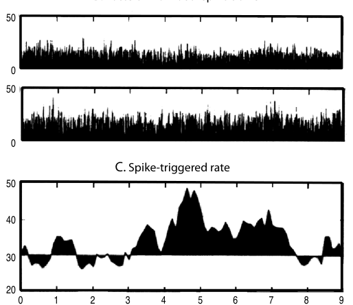</figure>
<p>50</p>
<h3>Tốc độ phóng xung [Hz]</h3>
<p>0</p>
<p>50</p>
<p>0</p>
<h3>C. Tốc độ kích hoạt theo xung</h3>
<h3>Tốc độ phóng xung tương đối [Hz]</h3>
<p>50</p>
<p>40</p>
<p>30</p>
<p>0 1 2 9 8 7 6 5 4 3 20</p>
<h3>Thời gian [s]</h3>
<p>Hình 5.11 Một ví dụ về đáp ứng của một số neuron trong vỏ não thính giác sơ cấp không cho thấy các biến thiên đáng kể để đáp ứng với sự khởi phát của một âm 4 kHz có đường bao biên độ được hiển thị trong (A). (B) Tốc độ phóng xung trung bình trong các khoảng 5 ms của hai neuron khác nhau. (C) Tốc độ trung bình kích hoạt theo xung biểu thị một số tương quan giữa sự phóng xung của hai neuron có tương quan đáng kể với việc trình bày kích thích [từ DeCharms và Merzenich, Science 381: 610–13 (1996)].</p>
<p>nhiều hơn hai xung. Cửa sổ thời gian trùng hợp phụ thuộc vào hằng số suy giảm và diễn biến theo thời gian của các EPSP. Do đó, sự gần gũi về mặt thời gian của các xung có thể tạo ra sự khác biệt trong quá trình xử lý thông tin của não bộ.</p>
<h3>A. Bộ tích phân hoàn hảo B. Bộ phát hiện trùng hợp</h3>
<p>v(t) v(t)</p>
<p>t t Chuỗi xung</p>
<p>Hình 5.12 Minh họa sơ đồ của (A) một bộ tích phân hoàn hảo và (B) một bộ tích phân có rò rỉ có thể được sử dụng làm bộ phát hiện trùng hợp. Trong ví dụ này, điện thế màng v(t) tích hợp các xung dòng điện ngắn của hai chuỗi xung được hiển thị ở phía dưới.</p>
<p>5.4.2 Thời điểm phóng xung chính xác đến mức nào?</p>
<p>Một niềm tin phổ biến là việc phóng xung thần kinh không đáng tin cậy lắm, và có rất nhiều biến thiên trong các đáp ứng thần kinh. Một minh họa khác về sự biến thiên thời điểm phóng xung, từ các thí nghiệm của Buraˇcas và các đồng nghiệp, được hiển thị trong Hình 5.13 đối với các đáp ứng của một tế bào trong vùng thái dương giữa (MT) vốn đáp ứng với chuyển động của các kích thích thị giác. Đồ thị trên cùng của Hình 5.13A cho thấy đáp ứng của neuron qua nhiều lần thử đối với một kích thích có vận tốc không đổi, như được biểu thị ở phía dưới. Đồ thị ở giữa cho thấy giá trị trung bình qua các lần thử. Dữ liệu cho thấy một đáp ứng thần kinh ban đầu đáng tin cậy. Sau đáp ứng ban đầu này, neuron vẫn phóng xung nhanh chóng; tuy nhiên, thời điểm của các xung này khác nhau trong mỗi lần thử. Một số người tìm kiếm mã thần kinh trong mẫu phóng xung của các neuron đáp ứng với một mẫu không đổi. Dữ liệu trong Hình 5.13A chỉ ra rằng có thể không có nhiều thông tin trong mẫu phóng xung tiếp diễn của neuron do sự biến thiên to lớn.</p>
<h3>A. Kích thích không đổi B. Kích thích thay đổi nhanh</h3>
<figure class="bookfig">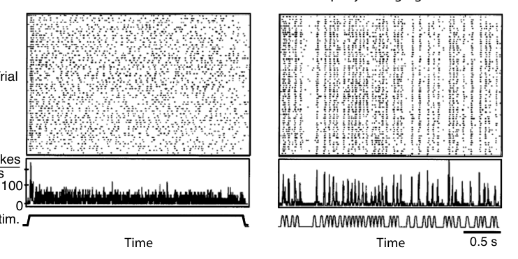</figure>
<h3>Lần thử</h3>
<h3>Xung</h3>
<p>s</p>
<p>100</p>
<p>0</p>
<p>Kích thích</p>
<p>0.5 s</p>
<h3>Thời gian Thời gian</h3>
<p>Hình 5.13 Các chuỗi xung (trên cùng) và đáp ứng trung bình qua các lần thử (ở giữa) của một neuron MT đối với một kích thích thị giác có vận tốc không đổi (A) hoặc vận tốc thay đổi (B) như được biểu thị ở đồ thị dưới cùng [phỏng theo Buraˇcas và cs., Neuron 20: 959–69 (1998)].</p>
<p>Những dữ liệu như trong Hình 5.13A dẫn đến ấn tượng rằng thời điểm phóng xung của neuron rất biến thiên và không chính xác. Tuy nhiên, điều này phải được xem xét trong mối liên hệ với tình huống thực nghiệm. Hình 5.13B cho thấy đáp ứng của cùng một neuron đối với một kích thích biến thiên nhanh. Đáp ứng của neuron bám theo các biến thiên trong kích thích một cách nhanh chóng với rất ít sự rung giật (jitter). Mỗi neuron không phải lúc nào cũng đáp ứng bằng một xung đối với vận tốc thay đổi của kích thích, và một số xung vẫn xảy ra xen giữa các thay đổi kích thích. Tuy nhiên, phần lớn các xung bám theo kích thích đang thay đổi một cách nhanh chóng. Do đó, các sự kiện cảm giác có thể gây ra một chuỗi hoạt động thần kinh nhanh chóng xuyên qua một mạng lưới neuron, và đến lượt nó có thể dẫn đến việc huy động nhanh chóng các neuron dọc theo các con đường xử lý. Nói cách khác, các quần thể neuron có thể truyền tải thông tin một cách nhanh chóng trong một mạng thần kinh.</p>
<p>t</p>
<p>Hình 5.14 Trung bình theo thời gian của một chuỗi xung đơn lẻ với một cửa sổ thời gian ∆T phải lớn so với khoảng cách trung bình giữa các xung.</p>
<p>5.5 Động lực học quần thể: mô hình hóa hành vi trung bình của các neuron</p>
<p>Việc mô phỏng các mạng lưới gồm nhiều nghìn neuron phóng xung đã trở nên khả thi trên các hệ thống máy tính gần đây. Tuy nhiên, ngay cả với sức mạnh ngày càng tăng của máy tính kỹ thuật số, chúng ta cũng khó có thể mô phỏng các hệ thống thần kinh với các neuron phóng xung ở quy mô của các đơn vị chức năng trong não, chưa nói đến các mô hình ở quy mô tương đương với hệ thần kinh trung ương. Hơn nữa, như đã thảo luận trong Chương 1, mục tiêu của chúng ta không hẳn là tái tạo bộ não trong mọi chi tiết của nó, mà là rút ra các nguyên lý về tổ chức và chức năng của nó. Do đó, nhiều mô hình trong khoa học thần kinh tính toán, đặc biệt là ở cấp độ nhận thức, dựa trên các mô tả không tính đến từng xung riêng lẻ của các neuron, mà thay vào đó mô tả hoạt động trung bình của các neuron hoặc các quần thể thần kinh.</p>
<p>Trong mục này, chúng ta giới thiệu các mô hình quần thể và thảo luận về mối quan hệ của chúng với các quần thể neuron phóng xung. Mục đích là làm nổi bật trong những điều kiện nào thì các phép xấp xỉ phổ biến này là những mô tả hữu ích và trung thực về các đặc tính thần kinh. Rõ ràng là các mô hình tốc độ không thể tích hợp mọi khía cạnh của các mạng lưới neuron phóng xung. Tuy nhiên, nhiều nguyên lý đằng sau quá trình xử lý thông tin trong não có thể được làm sáng tỏ ở cấp độ các mô hình quần thể, và nhiều đặc điểm của các mô hình quần thể đã được xác nhận bằng các neuron phóng xung.</p>
<p>5.5.1 Tốc độ phóng xung và giá trị trung bình quần thể</p>
<p>Điều quan trọng là phải nhận ra rằng các bản ghi sinh lý thần kinh của các tế bào đơn lẻ đã rất thành công trong việc tìm ra mối tương quan giữa tốc độ phóng xung của các neuron đơn lẻ với nhận thức hành vi, hoặc đáp ứng, của một đối tượng. Trong các nghiên cứu sinh lý học, người ta thường suy ra một tốc độ phóng xung tức thời với sự trợ giúp của một cửa sổ trượt trong chuỗi xung. Ví dụ, như được minh họa trong Hình 5.14, chúng ta có thể ước lượng tốc độ xung trung bình theo thời gian của một neuron với một cửa sổ cố định có kích thước ∆T, ν(t) = số lượng xung trong ∆T</p>
<p>∆T</p>
<h3>Z t+∆T/2</h3>
<p>= 1 ∆T δ(t′ −tf)dt′, (5.45)</p>
<p>t−∆T/2 trong đó tf là thời điểm phóng xung của neuron. Điều này định nghĩa, đối với các cửa sổ thời gian nhỏ, tốc độ phóng xung tức thời. Cũng có thể tính một giá trị trung bình có trọng số với các hàm nhân khác nhau thường cho kết quả mượt mà hơn. Ví dụ, trong các nghiên cứu sinh lý học, người ta thường sử dụng một cửa sổ Gaussian không có các ranh giới sắc nét như cửa sổ thời gian hình chữ nhật ở trên. Tốc độ phóng xung của một neuron tại thời điểm t khi đó được định nghĩa bởi</p>
<h3>Z +∞</h3>
<p>ν(t) = 1 √ δ(t′ −tf)e(t′−t)2/2σ2dt′. (5.46)</p>
<p>2πσ</p>
<p>−∞</p>
<p>Các ước lượng sinh lý học về tốc độ phóng xung của các neuron đơn lẻ thường bao gồm một giá trị trung bình qua nhiều lần thử trong các điều kiện thực nghiệm giống nhau. Các giá trị trung bình qua nhiều lần lặp lại như vậy là cần thiết vì sự phóng xung của một neuron trong một lần thử đơn lẻ rất nhiễu. Đây là một quy trình ước lượng thực nghiệm hợp lệ vì người ta đã thấy rằng các giá trị trung bình như vậy tương quan tốt với các đáp ứng hành vi. Tuy nhiên, cũng rõ ràng rằng việc lấy trung bình qua nhiều lần thử không phải là một lựa chọn cho não bộ, nơi mà các đáp ứng đối với một kích thích đơn lẻ phải khả thi. Ngoài ra, phép lấy trung bình theo thời gian được giải thích ở trên chỉ có thể được não bộ sử dụng một cách hạn chế vì các cửa sổ thời gian lấy trung bình phải nhỏ hơn nhiều so với thời gian đáp ứng điển hình của sinh vật, vốn có thể vào khoảng 100 ms. Do đó, chủ yếu hoạt động của quần thể mới có liên quan đến việc xử lý thông tin trong não.</p>
<p>Não bộ không dựa vào thông tin của một chuỗi xung đơn lẻ. Thực vậy, sự phụ thuộc như vậy sẽ khiến não bộ rất dễ bị tổn thương trước hư hại hoặc sự tái tổ chức. Do đó, chúng ta phỏng đoán rằng phải có một tiểu quần thể, hoặc nhóm neuron (pool of neurons), có các đặc tính đáp ứng tương tự nhau, như được minh họa trong Hình 5.15. Các neuron trong các tiểu quần thể này của một mô-đun vỏ não có thể hoạt động theo một cách tương tự nhau về mặt thống kê. Điều này sẽ giải thích tại sao các bản ghi đơn neuron lại thành công đến vậy trong việc liên hệ các phép đo đơn neuron với các phát hiện hành vi. Do đó, chúng ta phỏng đoán rằng giá trị trung bình theo thời gian của các neuron đơn lẻ được đo trong các thí nghiệm sinh lý học lặp đi lặp lại xấp xỉ hoạt động quần thể trung bình có liên quan về mặt tính toán thần kinh A(t) của các neuron,</p>
<p>1 ∆T số lượng xung trong quần thể kích thước N</p>
<h3>A(t) = lim ∆T →0</h3>
<h3>N</h3>
<h3>Z t+∆T/2</h3>
<h3>N X</h3>
<p>1 ∆T</p>
<p>1 N δ(t′ −tf i)dt′. (5.47)</p>
<p>= lim ∆T →0 t−∆T/2 i=1</p>
<p>Vì phép lấy trung bình này sử dụng tổng trên nhiều neuron (trái ngược với phương trình 5.45), nên có thể sử dụng các cửa sổ thời gian nhỏ hơn nhiều. Trong giới hạn của các cửa sổ thời gian rất nhỏ, chúng ta cũng có thể viết phương trình cuối cùng dưới dạng vi phân,</p>
<h3>N X</h3>
<h3>A(t)dt = 1</h3>
<p>δ(t′ −tf i), (5.48)</p>
<h3>N</h3>
<p>i=1 mà chúng ta sẽ sử dụng sau này để suy diễn các công thức cho động lực học quần thể.</p>
<p>Khó có thể xác minh phỏng đoán này một cách trực tiếp bằng thực nghiệm, vì điều này đòi hỏi phải ghi đồng thời nhiều nghìn neuron. Việc ghi bằng nhiều điện cực phần lớn vượt quá khả năng thực nghiệm hiện tại, và việc chụp ảnh não hiện nay lấy trung bình trên quá nhiều neuron nên không thể xác minh phỏng đoán của chúng ta. Các điện thế trường cục bộ (local field potentials) có thể tiến gần nhất đến các bản ghi quần thể như vậy, khi các quần thể được định vị về mặt không gian. Tuy nhiên, phỏng đoán này được hỗ trợ gián tiếp bởi một số sự kiện thực nghiệm đã biết, chẳng hạn như sự tồn tại của các cột vỏ não</p>
<h3>Nhóm cục bộ</h3>
<p>t</p>
<p>Hình 5.15 Nhóm hoặc quần thể neuron cục bộ có các đặc tính đáp ứng tương tự nhau. Giá trị trung bình của nhóm được định nghĩa là tốc độ phóng xung trung bình trên các neuron trong nhóm trong một cửa sổ thời gian tương đối nhỏ [phỏng theo W. Gerstner, trong Pulsed neural networks, Maass và Bishop (chủ biên), MIT Press (1998)].</p>
<p>nơi tìm thấy các neuron có đáp ứng rất giống nhau. Phần còn lại của chương này dành để giới thiệu các mô hình động lực học cho các quần thể như vậy.</p>
<p>5.5.2 Động lực học quần thể cho đầu vào biến thiên chậm</p>
<p>Để mô tả hành vi trung bình của một nhóm neuron, chúng ta chia quần thể thành các tiểu quần thể gồm các neuron cùng loại, có các đặc tính đáp ứng tương tự nhau. Để đơn giản, chúng ta giả sử thêm rằng các neuron trong nhóm này có cùng hằng số thời gian màng τm, cùng số lượng trung bình và hiệu quả synap của các sợi hướng tâm, nhận cùng một dòng điện đầu vào Iext, và không tương tác với nhau. Bây giờ chúng ta dự đoán rằng động lực học của một nhóm neuron như vậy có thể được mô tả bằng một bộ tích phân có rò rỉ tương tự như động lực học dưới ngưỡng của từng neuron IF riêng lẻ, τ dA(t)</p>
<p>dt = −A(t) + g(RIext(t)). (5.49)</p>
<p>Hàm g là một hàm kích hoạt quần thể, mô tả ảnh hưởng của dòng điện bên ngoài lên sự kích hoạt của nhóm. Chúng ta sẽ thảo luận một số hàm kích hoạt trong mục tiếp theo. Hiện tại, chỉ cần hình dung một hàm tuyến tính g(x) = x là đủ. Rõ ràng là phương trình động lực học 5.49 chỉ có thể là một phép xấp xỉ của động lực học nhóm. Động lực cho mô tả này là, khi tại bất kỳ thời điểm nào chỉ có một số lượng nhỏ neuron trong nhóm đang phóng xung, chúng ta kỳ vọng rằng động lực học quần thể chủ yếu được đặc trưng bởi động lực học dưới ngưỡng đối với các dòng điện đầu vào biến thiên chậm. Hằng số thời gian trong phương trình 5.49 đối với các dòng điện đầu vào biến thiên chậm khi đó nên gần với hằng số thời gian màng trung bình của các neuron trong nhóm.</p>
<p>Mô tả được đưa ra trong phương trình 5.49 đặc biệt phù hợp khi chúng ta phân tích các trạng thái dừng tiệm cận của các mạng thần kinh. Các trạng thái dừng là những trạng thái không thay đổi dưới động lực học của hệ thống, và bằng từ tiệm cận, chúng ta muốn nói đây là những trạng thái sau khi hành vi quá độ ban đầu đã ổn định. Việc nói rằng các trạng thái không thay đổi dưới động lực học của hệ thống có thể được biểu diễn về mặt toán học là dA/dt = 0. Đưa điều này vào phương trình 5.49 cho ta</p>
<h3>A(t) = g(RIext(t)). (5.50)</h3>
<p>Tất nhiên, điều này chỉ đúng đối với đầu vào không đổi vì trạng thái không thể dừng với đầu vào biến thiên. Tuy nhiên, công thức này cũng nên đúng, ở mức xấp xỉ tốt, với đầu vào biến thiên chậm. Nhiều khả năng xử lý thông tin của mạng thần kinh đã được nghiên cứu trong giới hạn này, như được trình bày trong các chương sau.</p>
<p>5.5.3 Cơ sở cho động lực học quần thể ⋄</p>
<p>Động lực học quần thể được cho bởi phương trình 5.49 là cơ sở cho nhiều nghiên cứu trong khoa học thần kinh nhận thức, và rất nhiều nghiên cứu đã đi sâu vào việc chứng minh tính hợp lý của nó. Nhiều nghiên cứu như vậy sử dụng các kỹ thuật được phát triển trong vật lý thống kê, vì nhiệm vụ này có một số điểm tương đồng với việc suy diễn các mô tả nhiệt động lực học từ chuyển động vật lý nền tảng của các phân tử. Nguyên tắc là bắt đầu với một số lượng lớn các phương trình vi phân ghép nối (các neuron phóng xung trong trường hợp của chúng ta) và tìm ra các phương pháp cũng như phép xấp xỉ sao cho tập hợp lớn các phương trình ghép nối có thể được thay thế bằng một phương trình động lực học của giá trị trung bình. Wilson và Cowan (1972) là những người đầu tiên lập luận theo cách này, và Brunel cùng Wang (2001) đã suy diễn các mô hình trường trung bình tiên tiến hơn cho các neuron có các kênh ion khác nhau. Chúng ta sẽ không xem xét chi tiết các suy diễn này, nhưng chúng ta sẽ phác thảo ngắn gọn các lập luận như vậy, được thúc đẩy bởi Wulfram Gerstner và Leo van Hemmen, vốn là các tổng quát hóa của phương trình tích phân Wilson–Cowan.</p>
<p>Hãy nhớ lại từ Mục 5.1.3 rằng điện thế màng trong mô hình đáp ứng xung được cho bởi</p>
<h3>X</h3>
<h3>X</h3>
<h3>X</h3>
<p>η(t −tf) + wijϵ(t −tf vi(t) = j), (5.51)</p>
<p>j tf tf j trong đó chúng ta đã bỏ qua sự phụ thuộc khả dĩ của số hạng ϵ vào sự phóng xung hậu synap, nhưng đưa vào các chỉ số mới i cho các neuron hậu synap, vì giờ đây chúng ta quan tâm đến một quần thể các neuron như vậy. Chúng ta sẽ một lần nữa giả sử một loại quần thể cụ thể gồm N neuron trong đó mỗi neuron phản ứng theo cách tương tự với đầu vào và trung bình có một hiệu quả synap được quy định bởi hằng số w0, wij = w0</p>
<h3>N . (5.52)</h3>
<p>Chúng ta cũng giả sử rằng không có sự thích nghi thời điểm xung trong các neuron, rằng tổng số neuron trong quần thể không đổi, và về mặt hình thức, chúng ta có một quần thể neuron lớn vô hạn trong đó chỉ có giá trị trung bình của các biến ngẫu nhiên là quan trọng. Sử dụng định nghĩa về giá trị trung bình quần thể (phương trình 5.48), do đó chúng ta có thể biểu diễn ảnh hưởng trung bình của điện thế hậu synap bằng tốc độ của quần thể như sau</p>
<h3>Z ∞</h3>
<p>0 ϵ(t′)A(t −t′)dt′. (5.53)</p>
<p>vϵ(t) = w0</p>
<p>Cuối cùng, chúng ta phải tính đến nhiễu, điều này có thể được thực hiện bằng một trong các mô hình nhiễu được đề cập trong Mục 5.2.2. Nhìn chung, chúng ta có thể định nghĩa một mật độ xác suất Pv(t|tf) mà với đó một neuron phóng xung tại thời điểm t khi nó có điện thế màng v và đã phóng xung trước đó tại các thời điểm tf. Điện thế màng phụ thuộc vào tốc độ quần thể, như được quy định trong phương trình 5.53. Tốc độ quần thể tại thời điểm t do đó có thể được biểu diễn dưới dạng tổng (hoặc tích phân) của tất cả các tốc độ quần thể tại các thời điểm trước đó, nhân với xác suất phóng xung tại các thời điểm tương ứng (xem Gerstner trong Neural Computation 12:43–89, 2000, và các tài liệu tham khảo trong đó, để biết chi tiết)</p>
<h3>Z t</h3>
<h3>Pv(t|tf)A(tf)dtf. (5.54)</h3>
<h3>A(t) =</h3>
<p>−∞</p>
<p>Động lực học này là chính xác trong giới hạn của một nhóm neuron vô hạn, và phương trình có thể được giải cho các mật độ xác suất cụ thể, Pv(t|tf), được suy ra từ các mô hình nhiễu. Có thể sử dụng trực tiếp các mô tả như vậy trong các mô phỏng, mặc dù nó đòi hỏi việc tính toán các tổng lớn, vốn rất tốn kém về mặt tính toán. Do đó, vẫn cần thiết phải suy diễn các phép xấp xỉ của động lực học quần thể ở dạng vi phân, và việc suy diễn từ các phương trình tích phân cho phép chỉ rõ chính xác các giả định phải được thực hiện. Wulfram Gerstner đã thảo luận vấn đề này rất chi tiết (xem ‘Đọc thêm’). Ông đã chỉ ra rằng, trong giới hạn đoạn nhiệt (adiabatic limit), trong đó tập hợp tế bào chỉ đáp ứng chậm với các đầu vào biến thiên chậm mà không gây ra các hiện tượng tập thể cụ thể của các neuron trong tập hợp tế bào (chẳng hạn như đồng bộ hóa hoặc khóa pha), động lực học quần thể có thể được xấp xỉ bằng các phương trình vi phân dưới dạng phương trình 5.49 với một hàm kích hoạt có dạng g(x) = 1 tref −τ log(1 − 1 τx), (5.55)</p>
<p>trong đó tref là thời gian trơ tuyệt đối. Kết quả này cho chúng ta biết rằng hàm kích hoạt trung bình của quần thể tương tự như hàm kích hoạt của một neuron IF đơn lẻ (so sánh với phương trình 5.11), mặc dù chỉ trong giới hạn đoạn nhiệt. Hàm kích hoạt này, phương trình 5.55, được vẽ trong Hình 5.16A với thời gian trơ tuyệt đối là tref = 1 ms và hằng số thời gian là τ = 5 ms.</p>
<p>Một số hàm kích hoạt của các neuron đơn lẻ đã được đo bằng điện sinh lý học cho thấy các đặc tính đáp ứng tương tự. Một ví dụ về hàm kích hoạt được đo từ một tế bào tháp vùng hồi hải mã được hiển thị trong Hình 5.16B. Hình này cho thấy tốc độ phóng xung tức thời (tần số phóng điện) của một neuron như vậy để đáp ứng với một kích thích dòng điện hình chữ nhật dài 1.5 s, với các biên độ khác nhau được đo bằng nanoampe (nA). Tốc độ phóng xung tức thời được suy ra từ nghịch đảo của khoảng cách giữa các xung đầu tiên. Neuron nhanh chóng thích nghi với kích thích (không được hiển thị trong hình) nên sự phóng xung tức thời dựa trên các xung tiếp theo sẽ nhỏ hơn nhiều. Hãy nhớ rằng chúng ta đang so sánh hai định nghĩa khác nhau về hàm kích hoạt trong Hình 5.16, một đáp ứng quần thể trong Hình 5.16A với một đáp ứng neuron đơn lẻ được lấy trung bình trong Hình 5.16B. Sự tương đồng về hình dạng có thể là kết quả của cách thức cụ thể mà các phép đo được thực hiện. Các hàm kích hoạt thường được đo trong các thí nghiệm với các neuron cô lập, điều này có thể giải thích sự tương đồng của đáp ứng này với đáp ứng trung bình của một quần thể đối với các đầu vào biến thiên chậm. Các phép đo thực nghiệm như vậy bỏ qua các tương tác khả dĩ in vivo vốn có thể làm thay đổi đáng kể hàm khuếch đại hiệu dụng. Điều quan trọng là phải ghi nhớ các cách diễn giải khác nhau của các hàm kích hoạt được sử dụng trong các mô hình sau đây. Thường xuyên nhất, chúng ta sẽ xem xét các mô hình quần thể với các đầu vào biến thiên chậm.</p>
<p>Trong mục này, chúng ta đã mô tả dòng tư duy để suy diễn các mô hình quần thể từ việc lấy trung bình trên các quần thể. Mặc dù các lập luận từ dưới lên (bottom-up) này có tầm quan trọng lớn neuron tháp giá trị trung bình trong giới hạn đoạn nhiệt</p>
<h3>Tần số phóng điện [Hz]</h3>
<p>0.7</p>
<p>0.6</p>
<h3>Kích hoạt</h3>
<p>200</p>
<p>0.5</p>
<p>0.4</p>
<p>0.3</p>
<p>100</p>
<p>0.2</p>
<p>0.1</p>
<h2>0 0.5 1 1.5 2 2.5 3 0</h2>
<p>0.5 1.0 1.5 2.0 2.5 Dòng điện [nA]</p>
<h3>Đầu vào</h3>
<p>Hình 5.16 (A) Hàm kích hoạt của phương trình 5.55 có thể được sử dụng để xấp xỉ động lực học của một đáp ứng quần thể đối với các đầu vào biến thiên chậm (giới hạn đoạn nhiệt). (B) Các ví dụ về hàm kích hoạt sinh lý từ một tế bào tháp hồi hải mã. Tần số phóng điện dựa trên nghịch đảo của khoảng cách giữa các xung đầu tiên sau khi tế bào bắt đầu đáp ứng với các xung dòng điện hình chữ nhật có cường độ khác nhau [vẽ lại từ Lanthorn, Storm, và Anderson, Experimental Brain Research 53: 431–43 (1984)].</p>
<p>và đã dẫn đến nhiều tiến bộ trong lĩnh vực này, nhưng rõ ràng là nhiều phép xấp xỉ và giả định phải được thực hiện để cho phép các xử lý giải tích đối với các hệ thống như vậy. Tuy nhiên, chúng ta không nên quên rằng nhiều nghiên cứu mô phỏng đã chỉ ra rằng các phát hiện của mô hình quần thể có thể được tái tạo bằng các mô hình neuron phóng xung. Hơn nữa, nhiều ví dụ trong phần còn lại của cuốn sách này chứng minh rằng các mô hình quần thể, hoặc mô hình tốc độ, có thể nắm bắt được dữ liệu hành vi và các đặc điểm của quá trình xử lý thần kinh trong não. Động lực từ trên xuống (top-down) của các mô hình như vậy — khả năng của các mô hình trong việc nắm bắt một loạt các dữ liệu thần kinh — cũng nên được tính đến cho các mô hình như vậy.</p>
<p>5.5.4 Đáp ứng nhanh của các quần thể</p>
<p>Chúng ta đã nhấn mạnh nhiều lần rằng động lực học quần thể của phương trình 5.49 chỉ nên đúng đối với các đầu vào biến thiên chậm, và thực tế có thể sụp đổ trong một số hoàn cảnh. Để minh họa điều này, chúng ta xem xét một nhóm các neuron IF tương đương nhau, tất cả đều có cùng hằng số thời gian τm = 10 ms, và tất cả đều nhận cùng một đầu vào có nhiễu Iext = ¯Iext + η với η = N(0, 1). Một mô phỏng của ‘mạng lưới’ gồm các neuron mô hình độc lập như vậy (không có kết nối giữa các neuron) được hiển thị trong Hình 5.17. Trong mô phỏng này, chúng ta đã chuyển đầu vào bên ngoài, tại thời điểm t = 100 ms, từ độ lớn thấp R¯Iext = 11 mV sang độ lớn cao hơn R¯Iext = 16 mV. Số lượng xung bám theo bước nhảy trong đầu vào gần như tức thời. Lý do cho điều này là tại mỗi thời điểm đều có một tập hợp con các neuron nằm gần ngưỡng. Những neuron này có thể đáp ứng nhanh chóng với đầu vào, và các neuron khác có thời gian để theo sau nhanh chóng. Tốc độ quần thể được tính bằng động lực học quần thể trong phương trình 5.49 chỉ bám theo sự thay đổi đầu vào này một cách chậm chạp khi hằng số thời gian được đặt thành τ = τm. Mô phỏng chứng minh rằng các hằng số thời gian rất ngắn, ngắn hơn nhiều so với các hằng số thời gian màng điển hình, phải được xem xét khi sử dụng mô hình này để xấp xỉ động lực học của các đáp ứng quần thể đối với các đầu vào biến thiên nhanh.</p>
<h3>Tốc độ xung quần thể trung bình từ các neuron IF</h3>
<h3>Tốc độ quần thể</h3>
<p>0.1</p>
<h3>Động lực học quần thể (phương trình 3.37)</h3>
<p>0.05</p>
<p>0 50 100 150 200 0</p>
<h3>Thời gian [ms]</h3>
<p>Hình 5.17 Mô phỏng một quần thể gồm 1000 neuron tích phân-và-phóng xung độc lập với hằng số thời gian màng τm = 10 ms và ngưỡng θ = 10 mV. Mỗi neuron nhận một đầu vào có nhiễu trắng xung quanh giá trị trung bình R¯Iext. Giá trị trung bình này được chuyển từ R¯Iext = 11 mV sang R¯Iext = 16 mV tại t = 100 ms. Số lượng xung của quần thể gần như tức thời bám theo bước nhảy này trong đầu vào, trong khi tốc độ quần thể trung bình, được tính từ phương trình 5.49 với một hàm kích hoạt tuyến tính, chỉ bám theo sự thay đổi đầu vào này một cách chậm chạp khi hằng số thời gian được đặt thành τ = τm.</p>
<p>Chúng ta đã sử dụng nhiễu trong các mô hình neuron phóng xung trong khi loại bỏ hoàn toàn nhiễu khỏi mô hình cho giá trị trung bình quần thể. Lý do cho điều này là nhiễu là thiết yếu cho lập luận với các neuron phóng xung. Chúng ta đã không đưa nhiễu vào động lực học quần thể để phác thảo đáp ứng trung bình của nút. Việc thêm nhiễu đưa vào các thăng giáng trong đường cong này khiến nó có vẻ giống với các thăng giáng trong giá trị trung bình của các nút phóng xung. Tuy nhiên, việc phân tích đáp ứng trung bình chắc chắn sẽ làm lộ ra sự khác biệt. Việc thêm nhiễu vào nút quần thể chỉ để làm cho nó trông thực tế hơn sẽ chỉ làm lu mờ lập luận chung. Ngược lại, nhiễu trong một quần thể các neuron phóng xung có thể rất thiết yếu cho việc xử lý thông tin trong não.</p>
<p>Mặc dù mô phỏng chứng minh rằng mô hình quần thể đơn giản nhất không mô tả được sự khởi phát nhanh của các đáp ứng thần kinh trong các quần thể neuron phóng xung, chúng ta cũng nên nhấn mạnh rằng sự gia tăng tiệm cận của đáp ứng quần thể được nắm bắt tốt bởi nút quần thể. Đối với nhiều mô hình trong khoa học thần kinh nhận thức, chính thực tế này được mô hình hóa và do đó đủ cho nhiều lời giải thích về các quá trình ở cấp độ hệ thống. Ngoài ra, các đáp ứng nhanh hơn có thể được mô hình hóa bằng các hằng số thời gian τ phụ thuộc đầu vào hoặc bằng đầu vào phụ thuộc tường minh vào các thăng giáng trong đầu vào, ví dụ như được nắm bắt bởi phân tích trường trung bình của Brunel và Wang.</p>
<p>5.5.5 Các hàm kích hoạt phổ biến</p>
<p>Mặc dù chúng ta đã thảo luận về hàm kích hoạt quần thể trong giới hạn được nghiên cứu bởi Wulfram Gerstner, nhưng cần thấy rõ rằng các tương tác phức tạp hơn trong quần thể thần kinh về nguyên tắc có thể dẫn đến các hàm g khác như vậy. Chúng ta cũng gọi hàm này là hàm kích hoạt (activation function), thường được gọi là hàm truyền (transfer function) trong các nghiên cứu mạng thần kinh. Hàm này mô tả tác động ròng của các quá trình khác nhau trong một nhóm neuron biến đổi một đầu vào cho trước thành đầu ra cụ thể của tập hợp neuron. Vì bản thân quần thể thần kinh có thể thực hiện nhiều đặc tính đáp ứng khác nhau, nên hàm này có thể có nhiều dạng vượt ra ngoài các hàm kích hoạt đơn điệu của các neuron đơn lẻ đã thảo luận trước đây. Một số hàm thường được sử dụng được minh họa trong Bảng 5.2.</p>
<p>Ví dụ đầu tiên là hàm tuyến tính, glin, liên hệ trực tiếp tổng các đầu vào với đầu ra. Các đơn vị tuyến tính thường có thể được xử lý bằng giải tích và có thể cung cấp cho chúng ta nhiều hiểu biết sâu sắc về hoạt động của mạng lưới. Nhiều hàm kích hoạt khác cũng có thể được xấp xỉ bằng các hàm tuyến tính từng khúc. Một ví dụ đơn giản về một hàm phi tuyến như vậy là hàm bước (step function), gstep. Hàm này chỉ trả về hai giá trị và do đó tạo ra các đáp ứng nhị phân. Hàm kích hoạt này đã được McCulloch và Pitts (1943) sử dụng, và một nút có hàm kích hoạt này do đó được gọi là nút McCulloch–Pitts.</p>
<p>Ví dụ thứ ba, hàm tuyến tính theo ngưỡng gtheta, tương tự như các hàm tuyến tính, ngoại trừ việc nó bị chặn dưới. Việc giới hạn hoạt động của nút từ phía dưới là hợp lý vì hoạt động âm không có tương đương sinh học. Hàm kích hoạt này là một phép xấp xỉ tốt cho các hàm kích hoạt quần thể được suy ra trong mô hình đáp ứng xung. Bên cạnh giới hạn dưới đối với tốc độ phóng xung, việc giới hạn đáp ứng cực đại của nút cũng hợp lý về mặt sinh học. Điều này là do tốc độ của các nhóm neuron bị giới hạn bởi thời gian trơ của các neuron, và số lượng neuron có thể hoạt động tại bất kỳ thời điểm nào cũng bị giới hạn. Một hiện thực hóa đơn giản của một hàm kích hoạt như vậy là sự kết hợp giữa hàm tuyến tính theo ngưỡng và hàm bước. Tuy nhiên, một hàm kích hoạt được sử dụng thường xuyên hơn trong lớp này là hàm sigmoid gsig, được minh họa là ví dụ thứ tư trong Bảng 5.2. Hàm này chặn các đáp ứng cực tiểu và cực đại của một nút, đồng thời nội suy mượt mà giữa hai thái cực này. Loại hàm kích hoạt này được sử dụng thường xuyên nhất trong các mô hình mạng thần kinh và mô hình kết nối (connectionist), vì những lý do sẽ trở nên rõ ràng trong Chương 7. Nó cũng xấp xỉ tốt hàm kích hoạt của các neuron IF có nhiễu, như chúng ta đã thấy trong Chương 4. Hàm cuối cùng trong bảng rất khác với các hàm trước đó ở chỗ nó là một hàm không đơn điệu. Ví dụ được hiển thị là một hàm cơ sở xuyên tâm (radial-basis function), một trong nhóm các hàm tổng quát đối xứng quanh một giá trị cơ sở. Ví dụ cụ thể ggauss là đường cong hình chuông Gaussian nổi tiếng.</p>
<p>Chỉ cần nói rằng đây chỉ là một vài ví dụ về các hàm kích hoạt khả dĩ. Chúng ta mới chỉ phác thảo hình dạng chung của các hàm này, và rõ ràng là các hình dạng này có thể được điều chỉnh. Các hàm thường bao gồm các tham số mà qua đó một số đặc điểm của hàm có thể được thay đổi, chẳng hạn như độ dốc và độ dịch chuyển của hàm. Ví dụ, chúng ta có thể tổng quát hóa hàm sigmoid trong bảng với gsig = 1 1 + exp(−β(x −x0)), (5.56)</p>
<p>trong đó việc tăng giá trị của tham số β làm tăng độ dốc của đường cong, và x0 dịch chuyển đường cong dọc theo trục hoành. Hãy nhớ rằng đây không phải là những dạng hàm kích hoạt duy nhất khả dĩ. Các mạng lưới gồm các nút có hàm kích hoạt khác nhau có các đặc tính khác nhau và rất đáng để khám phá sự phụ thuộc của các đặc tính mạng lưới vào các hàm kích hoạt cụ thể. Tuy nhiên, cũng thú vị khi lưu ý rằng nhiều khả năng xử lý thông tin của mạng lưới gồm các nút như vậy không phụ thuộc cốt yếu vào hình dạng chính xác của hàm kích hoạt. Một số loại hàm kích hoạt dẫn đến các khả năng mạng lưới tương tự nhau theo nghĩa là chúng ta không phải tinh chỉnh các hàm để chứng minh các khả năng của mạng lưới.</p>
<p>Bảng 5.2 Ví dụ về các hàm kích hoạt thường được sử dụng và cách triển khai cơ bản của chúng trong MATLAB</p>
<h3>Loại hàm</h3>
<h3>Biểu diễn Công thức toán học Triển khai MATLAB</h3>
<p>đồ họa</p>
<p>glin(x) = x</p>
<h3>X</h3>
<h3>Tuyến tính</h3>
<p>{</p>
<h3>Bước floor(0.5*(1+sign(x)))</h3>
<p>gstep(x)= 1 0 nếu x > 0 chỗ khác</p>
<h3>Tuyến tính</h3>
<p>gtheta (x) = x (x)</p>
<p>x.*floor(0.5*(1+sign(x)))</p>
<h3>Θ</h3>
<p>theo ngưỡng gsig = 1 1+exp( x )</p>
<p>(x)</p>
<p>1./(1+exp(-x))</p>
<h3>Sigmoid</h3>
<p>(x)</p>
<h3>Cơ sở</h3>
<p>ggauss = exp( x 2)</p>
<p>exp(-x.^2)</p>
<p>xuyên tâm</p>
<p>5.6 Mạng lưới với các synap phi cổ điển</p>
<p>Chúng ta đã giới thiệu các nút quần thể trong mục trước bằng cách giả sử một tập hợp các neuron hành xử với các đặc tính đáp ứng tương tự nhau. Chúng ta cũng giả sử rằng các nút như vậy tính tổng tất cả các đầu vào có trọng số, phản ánh các đặc tính cộng tính của dòng điện. Tuy nhiên, chúng ta đã đề cập trong Chương 4 rằng các neuron đơn lẻ cũng thể hiện các tương tác phi tuyến giữa các kênh đầu vào khác nhau; ví dụ, trong trường hợp ức chế rẽ nhánh (shunting inhibition). Do đó, có khả năng các nút quần thể có thể tương tác theo cách phi tuyến. Chương này giới thiệu ngắn gọn một tương tác phi tuyến cơ bản (dạng nhân) giữa các nút quần thể vì điều này sẽ được sử dụng trong một số mô hình được mô tả ở phần sau của cuốn sách này.</p>
<p>5.6.1 Phép AND logic và các nút sigma–pi</p>
<p>Một ví dụ về tương tác phi tuyến mạnh giữa hai kênh ion là một neuron phóng xung với ngưỡng phóng xung đòi hỏi ít nhất hai xung có sự gần gũi nhất định về mặt thời gian với nhau. Một xung đơn lẻ, trong trường hợp này, không thể khởi phát một xung. Chỉ khi có hai xung hiện diện trong khoảng thời gian cỡ bằng thời gian suy giảm của các EPSP, một xung hậu synap mới có thể được tạo ra. Điều này tương ứng với một hàm AND logic. Chúng ta có thể biểu diễn một hàm AND như vậy bằng một số hạng nhân của hai số hạng tiền synap nhị phân, r1 và r2, với giá trị bằng một, biểu thị rằng có một xung tiền synap tại một synap cụ thể, hoặc bằng không, biểu thị rằng không có xung tiền synap nào hiện diện. Do đó, sự phụ thuộc của sự kích hoạt của một nút như vậy từ hai đầu vào được mô tả bởi một số hạng nhân như h = r1r2.</p>
<p>Chúng ta có thể tổng quát hóa ý tưởng này cho các mô hình quần thể. Hãy xem xét hai chuỗi xung tiền synap độc lập với tốc độ phóng xung trung bình lần lượt là rin j và rin k . Tốc độ phóng xung trung bình xác định xác suất có một xung trong một khoảng nhỏ. Xác suất có hai xung của hai neuron tiền synap khác nhau trong cùng một khoảng khi đó tỷ lệ thuận với tích của hai xác suất riêng lẻ. Điều này tạo thành cơ sở cho một mô hình đơn giản về các tương tác phi tuyến giữa các synap trong một mô hình tốc độ có bao gồm các tương tác phi tuyến giữa các synap. Sự kích hoạt của một nút i trong mô hình này được cho bởi</p>
<h3>X</h3>
<p>wijkrin j rin hi = k , (5.57)</p>
<p>jk trong đó hệ số trọng số wijk giờ đây mô tả cường độ tổng thể của hai đầu vào synap kết hợp. Sự kích hoạt của các neuron hậu synap trong mô hình này phụ thuộc vào tổng (được biểu thị về mặt toán học bằng chữ cái Hy Lạp P) của các số hạng nhân (được biểu thị về mặt toán học bằng chữ cái Hy Lạp Q), và một nút như vậy do đó được gọi là nút sigma–pi. Lưu ý rằng tích của bốn số hạng x1x2x3x4 có thể được viết bằng ký hiệu viết tắt này là Q4 i=1 xi, mặc dù chúng ta không sử dụng ký hiệu này ở đây vì chúng ta chỉ có hai thừa số trong tích và ký hiệu đó thực sự sẽ làm cho công thức trông rối hơn. Mô hình có thể được tổng quát hóa sang các dạng tương tác phi tuyến khác giữa các kênh synap bằng cách thay thế tích của các tốc độ phóng xung tiền synap bằng một hàm nào đó của các tốc độ phóng xung tiền synap, ví dụ, rin j rin k →g(rin j rin k ), nhưng mô hình nhân đơn giản đã tích hợp các đặc điểm thiết yếu của các tương tác kênh ion phi tuyến đủ cho hầu hết các mô hình được thảo luận trong cuốn sách này. Lưu ý rằng chúng ta cũng có thể xem các tương tác như vậy là tác động điều biến của một đầu vào synap lên đầu vào synap khác.</p>
<p>5.6.2 Ức chế chia</p>
<p>Phương trình 5.57 là một ví dụ về hai kênh kích thích tương tác phi tuyến. Một mô hình tương tự về tương tác giữa một synap kích thích và một synap ức chế có thể được viết là wijkrexcitatory j /rinhibitory</p>
<h3>X</h3>
<p>hi = k . (5.58)</p>
<p>jk</p>
<p>Đây là một ví dụ về ức chế chia (divisive inhibition), mô hình hóa các tác động của ức chế rẽ nhánh như đã đề cập trong Chương 4. Các synap ức chế trên thân tế bào thường có các tác động rẽ nhánh như vậy (xem Hình 5.18A), trong khi các synap ức chế ở các phần xa của sợi nhánh được mô tả tốt hơn bằng ức chế trừ (subtractive inhibition). Có khả năng các synap ở khoảng giữa có các tác động nội suy giữa hai thái cực này.</p>
<p>5.6.3 Các nguồn khác của tác động điều biến giữa các đầu vào synap</p>
<p>Sự tương tác giữa các synap có thể bắt nguồn từ nhiều nguồn khác nhau trong các neuron sinh học. Một nguồn hiển nhiên là các synap phụ thuộc điện thế nằm gần nhau về mặt vật lý như được minh họa trong Hình 5.18B. Một ví dụ điển hình là các thụ thể NMDA vốn bị chặn đối với các điện thế màng thấp. Nếu điện thế màng được nâng lên bởi</p>
<p>D.</p>
<p>Liên kết khung xương tế bào E.</p>
<h3>Kênh ion biến hướng (chất truyền tin thứ hai)</h3>
<p>+</p>
<p>+</p>
<p>+</p>
<p>+ +</p>
<p>+ +</p>
<p>+ +</p>
<p>+</p>
<p>+</p>
<p>+</p>
<p>+</p>
<p>+</p>
<p>+</p>
<p>+</p>
<p>+</p>
<p>+</p>
<p>+</p>
<p>+</p>
<p>+</p>
<p>Hình 5.18 Một số nguồn gây ra các tác động phi tuyến (điều biến) giữa các synap được mô hình hóa bởi các nút sigma–pi. (A) Ức chế rẽ nhánh (chia), thường được ghi nhận là tác động của các synap ức chế trên thân tế bào. (B) Tác động của các synap kích thích đóng mở theo điện thế được kích hoạt đồng thời nằm gần nhau về mặt vật lý (các cụm synap) có thể lớn hơn tổng tác động của từng synap riêng lẻ. Ví dụ là các cụm synap loại AMPA và NMDA. (C) Một số đầu tận cùng synap vỏ não có các thụ thể acetylcholine nicotinic (ACh). Sự giải phóng ACh của các sợi hướng tâm cholinergic do đó có thể tạo ra dòng chảy ra lớn hơn của chất dẫn truyền thần kinh và qua đó làm tăng các EPSP trong neuron hậu synap của đầu tận cùng synap này. D. Các thụ thể biến hướng (metabotropic) có thể kích hoạt các chất truyền tin nội bào có thể ảnh hưởng đến độ khuếch đại của các kênh ion. (E) Các kênh ion có thể được liên kết với khung xương tế bào bên dưới bằng các protein tiếp hợp và do đó có thể ảnh hưởng đến các kênh ion khác thông qua liên kết này.</p>
<p>một EPSP từ một synap không phải NMDA khác ở vùng lân cận, thì có khả năng sự phong tỏa được gỡ bỏ sao cho tác động kết hợp của một synap không phải NMDA cùng với synap NMDA lớn hơn nhiều so với tổng sự kích hoạt thông qua từng synap riêng lẻ. Sự gần gũi về mặt vật lý là cần thiết vì EPSP trong một sợi nhánh thụ động suy giảm theo khoảng cách, nên các tác động phi tuyến là lớn nhất đối với các synap gần nhau. Các tác động phi tuyến cũng có thể đạt đến khoảng cách lớn hơn giữa các synap với các sợi nhánh chủ động cục bộ có thể kích hoạt các sợi nhánh ở xa hơn thông qua sự lan truyền xung chủ động.</p>
<p>Các ví dụ về ảnh hưởng trực tiếp của các sợi hướng tâm cụ thể lên sự giải phóng chất dẫn truyền thần kinh bởi các đầu tận cùng tiền synap cũng đã được biết đến. Điều này được minh họa sơ đồ trong Hình 5.18C. Một ví dụ là các sợi hướng tâm cholinergic phát ra acetylcholine (ACh). Chất này có thể gắn vào các thụ thể ACh tại một đầu tận cùng tiền synap làm mở các kênh canxi. Lượng canxi dư thừa trong đầu tận cùng tiền synap sau đó kích hoạt sự giải phóng tăng cường các chất dẫn truyền thần kinh bởi một điện thế hoạt động tiền synap. Đây là một ví dụ về sự điều biến của một synap hướng ion (ionotropic). Một sự điều biến khuếch tán hơn có thể đạt được với các thụ thể biến hướng (metabotropic) (xem Hình 5.18D). Các thụ thể như vậy khởi phát các phản ứng hóa học nội bào dẫn đến các chất truyền tin thứ hai có thể ảnh hưởng đến hiệu quả hoặc độ khuếch đại của các kênh ion khác nhau. Một sự liên kết trực tiếp hơn giữa các kênh ion có thể thực hiện được thông qua các protein tiếp hợp liên kết các kênh ion với khung xương tế bào bên dưới trong một neuron (Hình 5.18E). Cần nhiều nghiên cứu hơn để hiểu tất cả các chi tiết của các cơ chế như vậy. Ở đây chúng ta chủ yếu quan tâm đến tiềm năng nguyên lý của các tác động điều biến như vậy giữa các hoạt động của neuron tiền synap, và chúng ta sẽ sử dụng các cơ chế như vậy trong một số mô hình được thảo luận trong các chương sau.</p><h2 class="chapter-title">Phần II · Chương 6 — Bộ liên kết và tính dẻo synap</h2>
<h2>6 Bộ liên kết và tính dẻo khớp thần kinh</h2>
<p>Cho đến nay, chúng ta đã bỏ qua một số cơ chế thú vị và trung tâm nhất của quá trình xử lý trong não, đó là tính dẻo khớp thần kinh (synaptic plasticity) và sự học trong các mạng. Các neuron được kết nối với nhau để tạo thành mạng, và một mạng thần kinh không chỉ được đặc trưng bởi cấu trúc liên kết (topology) của mạng, mà còn bởi độ mạnh kết nối, wij, giữa hai neuron hoặc hai nút quần thể (population nodes). Trong chương này, chúng ta thảo luận cách độ mạnh kết nối có thể thay đổi theo cách phụ thuộc vào mức độ sử dụng thông qua một hiện tượng sinh học gọi là tính dẻo khớp thần kinh. Tính dẻo khớp thần kinh là cơ sở vật lý của sự học trong các hệ thống thần kinh mà chúng ta sẽ thảo luận sau. Ở đây, chúng ta bắt đầu với một thảo luận chung về các bộ liên kết (associators), tóm tắt bản chất của các cơ chế tính dẻo và tầm quan trọng của chúng đối với quá trình xử lý nhận thức của não. Sau đó, chúng ta trình bày cơ sở sinh lý thần kinh của tính dẻo và một số mô hình cụ thể về tính dẻo. Phần cuối của chương này thảo luận một số hệ quả của các quy tắc tính dẻo, đặc biệt là các phân bố trọng số, và giải thích một số chiến lược điều chỉnh tỷ lệ trọng số (weight scaling) và suy giảm trọng số (weight decay). Chương kết thúc bằng một ứng dụng của quy tắc Hebb cơ bản với suy giảm trọng số vào phân tích thành phần chính (PCA).</p>
<p>6.1 Trí nhớ liên kết và học Hebb</p>
<p>Các mạng thần kinh được đặc trưng bởi một tập hợp các độ mạnh kết nối, wij, giữa các neuron hoặc các nút quần thể. Chúng ta có thể mã hóa kiến trúc mạng bằng một ma trận lớn chỉ định tất cả các trọng số giữa tất cả các nút trong mạng. Trọng số bằng 0 cho thấy không có kết nối hoạt động giữa hai neuron. Chúng ta có thể phân biệt một cách lỏng lẻo hai dạng tính dẻo:</p>
<p>• Tính dẻo cấu trúc (Structural plasticity) là cơ chế mô tả việc tạo ra các kết nối mới và qua đó định nghĩa lại cấu trúc liên kết của mạng. • Tính dẻo chức năng (Functional plasticity) là cơ chế thay đổi giá trị độ mạnh của các kết nối hiện có.</p>
<p>Ngoài ra, đôi khi việc phân biệt các cơ chế phát triển với các sự thích nghi ở sinh vật trưởng thành là hữu ích. Sự hình thành và duy trì các mạng neuron trong não phần lớn phải được mã hóa di truyền. Tuy nhiên, không phải tất cả các chi tiết đều có thể được mã hóa với số lượng gen khá nhỏ trong bộ gen người, ước tính vào khoảng 20.000–25.000, chưa kể quan điểm hiện nay cho rằng chỉ một tỷ lệ nhỏ trong số các gen này được cho là dùng để tạo ra các protein cụ thể hướng dẫn chức năng của sinh vật. Tuy nhiên, các gen có thể ảnh hưởng đến các chất thu hút (attractor substances) hướng dẫn sự phát triển của các sợi thần kinh (neurites) trong quá trình phát triển não và việc duy trì các khớp thần kinh, như sẽ thảo luận sau. Sự phát triển của não cũng có thể bị ảnh hưởng bởi các hoàn cảnh môi trường. Do đó, các cơ chế thích nghi được cho là rất quan trọng đối với các chức năng của não, ít nhất là để tinh chỉnh các tham số trong các mạng não.</p>
<p>Fundamentals of Computational Neuroscience. Third edition. Thomas P. Trappenberg, Oxford University Press. © Oxford University Press 2023. DOI:10.1093/oso/9780192869364.003.0006</p>
<p>Trong quá trình phát triển thần kinh của các loài động vật có vú, người ta cho rằng bộ não bắt đầu với mức độ kết nối rất cao và trong giai đoạn sơ sinh nhiều kết nối bị cắt tỉa. Ngoài ra, người ta cũng phát hiện ra rằng có những giai đoạn nhạy cảm (critical periods) mà trong đó sự phát triển bình thường của các tổ chức neuron cụ thể có thể dễ dàng bị xáo trộn. Việc tạo ra các tiếp xúc khớp thần kinh mới không chỉ đòi hỏi sợi trục mọc gần sợi nhánh, mà còn đòi hỏi sợi trục phát triển các vị trí giải phóng chất dẫn truyền, sợi nhánh tích hợp các kênh ion khớp thần kinh, và tế bào thần kinh đệm (glial cells) cung cấp chức năng hỗ trợ. Mặc dù sự phát triển não và tính dẻo cấu trúc là những lĩnh vực nghiên cứu quan trọng, nhiều thảo luận của chúng ta trong các chương sau tập trung vào khả năng của các mạng thích nghi nói chung, mà không phân biệt giữa các dạng tính dẻo khác nhau chắc chắn hiện diện trong các sinh vật. Phần lớn thảo luận sau đây liên quan đến các quy tắc học thường được quy cho tính dẻo chức năng.</p>
<p>6.1.1 Học Hebb</p>
<p>Ý tưởng rằng bộ não có thể thay đổi và thích nghi bằng cách xây dựng các liên kết đã xuất hiện từ cuối thế kỷ 19. Ví dụ, Sigmund Freud đã đề xuất quy luật liên kết theo tính đồng thời (law of association by simultaneity) vào năm 1888, rất giống với các nguyên lý chung được giải thích trong phần này. Tuy nhiên, vai trò trung tâm của học liên kết như một nguyên lý tổ chức trong não chỉ trở nên phổ biến sau này với một cuốn sách có ảnh hưởng lớn của nhà tâm lý học người Canada Donald O. Hebb. Trong cuốn sách của mình, The organization of behaviour, xuất bản năm 1949, ông thậm chí còn suy đoán về cách thức thực thi chức năng của sự học:</p>
<p>Khi một sợi trục của tế bào A ở đủ gần để kích thích tế bào B hoặc lặp đi lặp lại hay liên tục tham gia vào việc kích hoạt nó, một số thay đổi về tăng trưởng hoặc chuyển hóa sẽ diễn ra ở cả hai tế bào sao cho hiệu quả của A, với tư cách là một trong những tế bào kích hoạt B, được tăng lên.</p>
<p>Hebb không có phương tiện để quan sát trực tiếp các khớp thần kinh, điều này khiến giả thuyết của ông giống như một phỏng đoán táo bạo theo tiêu chuẩn của chúng ta. Nhưng cuốn sách của ông có ảnh hưởng lớn đến nhiều nhà nghiên cứu vì đây là một trong những đề xuất cụ thể đầu tiên về cách bộ não tự tổ chức để thực hiện các chức năng nhận thức làm nền tảng cho hành vi. Cụ thể, Hebb đề xuất rằng các tập hợp tế bào (cell assemblies), được hình thành một cách linh hoạt để đáp ứng với các kích thích bên ngoài, thực hiện phần lớn quá trình xử lý thông tin trong não. Ông lập luận rằng các cơ chế vật lý cơ bản hỗ trợ những thay đổi dẻo này trong não là một số thay đổi ở khớp thần kinh mà ông suy đoán là ‘một số thay đổi về tăng trưởng hoặc chuyển hóa’. Có lẽ thành phần quan trọng nhất trong giả thuyết của ông đối với chúng ta là cơ sở chức năng cho sự thay đổi này, đó là một mối tương quan có ý nghĩa chức năng giữa hoạt động tiền khớp (presynaptic) và hậu khớp (postsynaptic). Nhận thức sâu sắc quan trọng này được tóm tắt là ‘những gì phát xung cùng nhau, kết nối cùng nhau’ (what fires together, wires together). Mặc dù cụm từ này có thể được diễn giải thiên về tính dẻo cấu trúc, ở đây nó nên được hiểu theo nghĩa tính dẻo khớp thần kinh, hay theo nghĩa của Hebb, là những gì phát xung cùng nhau sẽ kết nối với nhau mạnh mẽ hơn. Chỉ gần đây hơn, sinh lý học của tính dẻo khớp thần kinh mới được quan sát chi tiết. Nghiên cứu mới hơn này cho thấy mô tả định tính của Hebb, như được trích dẫn ở trên, chính xác một cách đáng kinh ngạc và nắm bắt được hầu hết các nguyên lý tổ chức thiết yếu trong hệ thần kinh. Tính dẻo phụ thuộc vào hoạt động dựa trên hoạt động tiền khớp và hậu khớp thường được gọi là tính dẻo Hebb (Hebbian plasticity) hay học Hebb (Hebbian learning) để vinh danh Hebb.</p>
<p>i wi r out</p>
<p>Hình 6.1 Một neuron đơn giản hóa nhận một số lượng lớn đầu vào rin i . Hiệu quả khớp thần kinh được ký hiệu là wi và đầu ra của nút là rout.</p>
<p>6.1.2 Các liên kết</p>
<p>Một giả thuyết chính được định lượng bởi các mô hình tính toán là tính dẻo khớp thần kinh cho phép trí nhớ và sự học, như được thảo luận sâu rộng trong các chương sau. Trí nhớ của con người rất khác với trí nhớ của máy tính kỹ thuật số. Bộ nhớ trong máy tính kỹ thuật số bao gồm một thiết bị nơi thông tin được lưu trữ, tương tự như một cái kệ. Khi truy xuất thông tin từ bộ nhớ máy tính, chúng ta phải báo cho máy tính biết vị trí tìm thông tin này ở bên trong bằng một địa chỉ bộ nhớ. Việc không chỉ định chính xác địa chỉ bộ nhớ dẫn đến mất hoàn toàn thông tin này vì khi đó không thể truy xuất được. Ngay cả một lỗi chỉ một bit trong địa chỉ bộ nhớ cũng trở nên nghiêm trọng đối với việc truy xuất bộ nhớ. Các hệ thống tự nhiên không thể hoạt động với độ chính xác khắt khe như vậy.</p>
<p>Hệ thống trí nhớ của con người khác biệt ở nhiều khía cạnh so với bộ nhớ máy tính thông thường. Chúng ta thường có thể nhớ lại những ký ức sống động về các sự kiện từ những chi tiết nhỏ. Ví dụ, khi đến thăm một số nơi thời thơ ấu, rất có thể hình ảnh của những địa điểm đó, mặc dù không hoàn toàn giống như nhiều năm trước, sẽ kích hoạt những ký ức sống động về bạn bè và một số sự cố đã xảy ra tại những nơi này; một bức ảnh chỉ có một phần khuôn mặt của một người bạn có thể đủ để nhận ra anh ấy và nhớ lại tên của anh ấy, hoặc nếu ai đó nhắc đến tên của một người bạn, ta có thể nhớ ra một số đặc điểm khuôn mặt của người này. Trái ngược với máy tính kỹ thuật số, chúng ta có thể học các liên kết có thể kích hoạt ký ức dựa trên thông tin liên quan, tức là chỉ cần thông tin một phần là có thể đủ để nhớ lại ký ức. Chính loại trí nhớ này là thứ chúng ta cho là thiết yếu đối với các quá trình nhận thức của con người. Trong khi các nhà khoa học máy tính đôi khi gọi đây là bộ nhớ định địa chỉ theo nội dung (content addressable memory), chúng ta sẽ gọi chung đây là trí nhớ liên kết (associative memory) hoặc bộ liên kết (associator).</p>
<p>Tính dẻo khớp thần kinh là thành phần cần thiết đằng sau việc hình thành các liên kết, và bây giờ chúng ta sẽ minh họa ý tưởng chính của học liên kết Hebb bằng cách sử dụng một neuron đơn giản hóa như minh họa trong Hình 6.1. Sau này chúng ta sẽ sử dụng rộng rãi các cơ chế này trong các mạng liên kết, được minh họa trong Hình 6.2. Các kiến trúc liên kết như vậy đã được đề xuất vào khoảng năm 1960 một cách độc lập bởi Bernd Widrow (Madaline) và Karl Steinbuch (Lernmatrix). Mặc dù bây giờ chúng ta sử dụng ngôn ngữ của các neuron, các lập luận tương tự cũng áp dụng cho học liên kết trong các mạng gồm các nút quần thể, như được sử dụng chủ yếu trong các chương sau của cuốn sách này. Chúng ta chỉ hiển thị một vài sợi trục tiền khớp tạo khớp trên nút mô hình trong Hình 6.1. Tuy nhiên, điều quan trọng là phải ghi nhớ trong thảo luận sau đây rằng các neuron nhận đầu vào từ một số lượng lớn nguồn, như đã đề cập trước đó. Một neuron vỏ não nhận khoảng 5000–10.000 khớp thần kinh từ các neuron khác, mặc dù chỉ một tập hợp con nhỏ, ít hơn 1%, số kênh khớp thần kinh đang hoạt động có thể đủ để tạo ra một xung tiền khớp nếu hiệu quả khớp thần kinh đủ lớn và các sự kiện khớp thần kinh rơi vào các cửa sổ thời gian nhất định.</p>
<p>Hãy thảo luận ví dụ minh họa trong Hình 6.3. Ở đó, một sự kiện nhất định, chẳng hạn r in j wij r out i</p>
<p>Hình 6.2 Một mạng gồm các nút liên kết. Mỗi thành phần của vector đầu vào, rin i , được phân phối tới từng neuron trong mạng. Tuy nhiên, tác động của đầu vào có thể khác nhau đối với mỗi neuron vì mỗi khớp thần kinh riêng lẻ có thể có các giá trị hiệu quả wij khác nhau, trong đó j đánh dấu neuron trong mạng.</p>
<p>như sự hiện diện của một mùi cụ thể, được phản ánh qua việc phát xung của một tập hợp con các kênh đầu vào tới neuron (Hình 6.3A). Chúng ta chỉ sử dụng một tập hợp con nhỏ các neuron tiền khớp để biểu diễn kích thích đầu vào phù hợp với mã hóa phân tán nhưng thưa thớt (distributed, yet sparse, coding) sẽ được thảo luận thêm bên dưới. Trong Hình 6.3A, chúng ta biểu diễn kích thích mùi, chẳng hạn mùi từ bếp nướng BBQ khi nướng bánh hamburger, bằng một mẫu đầu vào biểu diễn các xung ở các kênh đầu vào 1, 3 và 5. Hiệu quả khớp thần kinh của các kênh đầu vào này được giả định là đủ lớn để tạo ra một xung hậu khớp. Ví dụ, chúng ta có thể lấy ngưỡng phát xung là θ = 1.5 và giả sử ban đầu chỉ các trọng số khớp thần kinh của các kênh đầu vào này có giá trị wi = 1, như minh họa ở phía bên phải của Hình 6.3A. Khi đó mẫu đầu vào đủ để tạo ra một xung hậu khớp. Điều này có thể dễ dàng kiểm chứng bằng cách so sánh mức kích hoạt bên trong của neuron,</p>
<h3>X</h3>
<p>wirin h = i = 3, (6.1)</p>
<p>i với ngưỡng phát xung của neuron (θ = 1.5). Các giá trị trọng số khớp thần kinh này cũng đủ để giúp neuron phát xung khi đáp ứng với đầu vào một phần. Ví dụ, nếu chỉ có kênh 1 và 3 bật, thì h = 2 > θ và neuron vẫn phát xung. Điều này rất quan trọng đối với các quá trình của não vì mẫu đầu vào có thể không phải lúc nào cũng đầy đủ do quá trình xử lý nhiễu hoặc thông tin cảm giác một phần. Bằng cách này, bộ não có thể đạt được sự hoàn thiện mẫu (pattern completion), khả năng hoàn thiện biểu diễn của một kích thích một phần.</p>
<p>Một kích thích khác, chẳng hạn như hình ảnh chiếc hamburger khi mở bếp BBQ, được biểu diễn trong mô hình như một đầu vào tiền khớp tới ba kênh đi vào cuối cùng trong Hình 6.3B, không thể tạo ra đáp ứng của neuron này với các giá trị trọng số khớp thần kinh hiện tại. Để liên kết tín hiệu thị giác của chiếc hamburger với mùi báo hiệu mùi của chiếc hamburger, chúng ta phải sửa đổi các trọng số khớp thần kinh. Để làm điều này, chúng ta áp dụng chiến lược sau:</p>
<p>Tăng độ mạnh của các khớp thần kinh lên một giá trị ∆w = 0.1 nếu một xung tiền khớp đi cặp với một xung hậu khớp.</p>
<p>A.</p>
<p>B.</p>
<p>C.</p>
<p>in r in in w in r r w w r w</p>
<h2>0 0 0 0 0 0 0 1 1 1</h2>
<h2>1 0 1 0 1 0 0 1 1 1</h2>
<h2>0 0 0 0 0 0 0 1 1 1</h2>
<h2>1 0 1 0 1 0 0 0 0 0</h2>
<h2>1 0 1 0 1 0 0 0 0 0</h2>
<p>1.1 0 1.1 0 1.1 0 0 0.1 0.1 0.1</p>
<p>1.6 0 1.6 0 1.6 0 0 0.6 0.6 0.6</p>
<h2>1 0 1 0 1 0 0 0 0 0</h2>
<p>out out out out r = 0 r = 1 r = 1 r = 1</p>
<p>Hình 6.3 Các ví dụ về một nút liên kết được huấn luyện trên hai vector đặc trưng bằng thuật toán học kiểu Hebb giúp tăng độ mạnh khớp thần kinh lên ∆w = 0.1 mỗi lần một xung tiền khớp xảy ra trong cùng cửa sổ thời gian với một xung hậu khớp.</p>
<p>Quy tắc học này sửa đổi các trọng số khớp thần kinh, sao cho sau một lần trình diện đồng thời cả hai kích thích, tín hiệu thị giác và tín hiệu biểu diễn mùi, các trọng số có giá trị minh họa trong Hình 6.3C. Sau sáu lần lặp học liên tiếp, chúng ta thu được các trọng số khớp thần kinh như trong Hình 6.3D. Tốc độ đạt đến điểm này phụ thuộc vào tốc độ học (learning rate), mà trong ví dụ này chúng ta đặt là 0.1.</p>
<p>Chỉ riêng tín hiệu thị giác của chiếc hamburger là đủ để tạo ra đáp ứng của neuron sau chỉ 5 hoặc 6 lần trình diện đồng thời cả hai kích thích. Việc phát xung của neuron này khi đó được liên kết với cả sự hiện diện của hình ảnh thị giác của chiếc hamburger và sự hiện diện của tín hiệu biểu diễn mùi của chiếc hamburger. Nếu neuron này, hoặc neuron này kết hợp với các neuron khác trong mạng, tạo ra một hình ảnh tâm trí về chiếc hamburger, thì sự hiện diện của chỉ một tín hiệu, mùi hoặc hình ảnh của chiếc hamburger, là đủ để gợi lên hình ảnh tâm trí về chiếc hamburger. Do đó, mùi và hình ảnh thị giác của chiếc hamburger được liên kết với hình ảnh tâm trí của nó. Những liên kết như vậy là nền tảng cho nhiều quá trình nhận thức.</p>
<p>6.1.3 Học Hebb trong khuôn khổ điều kiện hóa</p>
<p>Các cơ chế của một bộ liên kết, như đã phác thảo ở trên, dựa trên thực tế là kích thích đầu tiên, mùi của chiếc hamburger, vốn đã có hiệu quả trong việc tạo ra đáp ứng của neuron trước khi học. Đây là một giả định hợp lý vì chúng ta có thể bắt đầu với các mạng ngẫu nhiên trong đó một số neuron sẽ đáp ứng với kích thích này trước khi học. Do đó, chúng ta có thể giả sử rằng mình đã chọn một neuron như vậy trong ví dụ của chúng ta từ một tập hợp lớn các neuron đáp ứng với đủ loại kích thích, dựa trên phân bố trọng số ban đầu ngẫu nhiên. Mặc dù độ mạnh khớp thần kinh của các kênh đầu vào này thay đổi theo quy tắc học, chúng ta gọi kích thích ban đầu là kích thích không điều kiện (UCS) vì đáp ứng của neuron đối với kích thích này được duy trì. Lý do chính cho việc đặt nhãn này là chúng ta muốn phân biệt đầu vào này, vốn đã có hiệu quả, với kích thích thứ hai, hình ảnh thị giác của chiếc hamburger. Đối với đầu vào thứ hai, đáp ứng của neuron thay đổi trong quá trình học, và vì vậy chúng ta gọi kích thích thứ hai là kích thích có điều kiện (CS). Vector đầu vào tới hệ thống do đó là một hỗn hợp của UCS và CS như minh họa trong Hình 6.4A.</p>
<p>Một số biến thể của sơ đồ này được biết là xảy ra trong các hệ thần kinh sinh học. Một trong số đó được phác thảo trong Hình 6.4B. Chúng ta đã nhấn mạnh rằng điều cốt yếu đối với UCS trong sơ đồ trước là tạo ra một đáp ứng thần kinh hậu khớp, điều này được đưa vào ví dụ trên bằng cách sử dụng các khớp thần kinh đủ mạnh trong các kênh đầu vào của UCS. Một cách khác, như minh họa trong Hình 6.4B, các sợi mang UCS có thể có nhiều khớp thần kinh lên sợi nhánh hậu khớp để có thể đảm bảo việc phát xung của nút. Ví dụ, các sợi rêu (mossy fibres) trong hồi hải mã (hippocampus) là các sợi trục tạo ra các tiếp xúc rất mạnh với các neuron hậu khớp. Một ví dụ khác là các sợi leo (climbing fibres) trong tiểu não, có hàng trăm khớp thần kinh với một tế bào Purkinje duy nhất. Tiểu não có liên quan đến việc học vận động, và người ta đã gợi ý rằng UCS cung cấp một tín hiệu lỗi vận động cho các cơ chế học như vậy. Chúng ta sẽ trình bày chi tiết về điều này trong Chương 10.</p>
<h3>A. Neuron vỏ não mới</h3>
<h3>B. Neuron Purkinje</h3>
<h3>C. Neuron động vật không xương sống</h3>
<p>wi</p>
<h3>CS UCS</h3>
<h3>CS</h3>
<h3>CS</h3>
<h3>UCS</h3>
<h3>UCS</h3>
<p>r out r out r out</p>
<p>Hình 6.4 Các mô hình khác nhau của nút liên kết giống với kiến trúc chính được tìm thấy trong các hệ thần kinh sinh học như (A) các neuron vỏ não ở vỏ não động vật có vú và (B) các tế bào Purkinje trong tiểu não, vốn có đầu vào mạnh từ các sợi leo thông qua hàng trăm hoặc hàng nghìn khớp thần kinh. Ngược lại, mô hình như trong (C) sử dụng đầu vào cụ thể tới một đầu tận cùng tiền khớp như đã biết tồn tại trong các hệ thống động vật không xương sống, sẽ phải cung cấp UCS tới tất cả các khớp thần kinh cùng lúc để đạt được kết quả tương tự như trong hai mô hình trước. Các kiến trúc như vậy khó có khả năng đóng vai trò quan trọng trong xử lý ở vỏ não.</p>
<p>Một mô hình khác được minh họa trong Hình 6.4C. Ở đây, chúng ta đã chỉ ra một cơ chế điều biến cụ thể sử dụng một đầu vào riêng biệt tới các đầu tận cùng tiền khớp, có thể gây ra các thay đổi tiền khớp. Các cơ chế như vậy tồn tại ở động vật không xương sống, ví dụ, trong hệ thống cảm giác-vận động của sên biển Aplysia. Các cơ chế như vậy có thể đặc hiệu cho từng đầu tận cùng tiền khớp và do đó theo định nghĩa là phi Hebb (non-Hebbian). Để đạt được kết quả tương tự như trong hai mô hình kia, vốn phụ thuộc toàn cục vào sự phát xung của neuron hậu khớp, chúng ta sẽ phải cung cấp tín hiệu UCS tới tất cả các đầu vào khớp thần kinh cùng lúc. Một kiến trúc như vậy phức tạp hơn nhiều để thực hiện trong các hệ thần kinh lớn hơn và dường như không có trong hệ thần kinh động vật có xương sống. Điều này chứng tỏ rằng các cơ chế khớp thần kinh và nguyên lý xử lý thông tin khác nhau có thể hiện diện trong hệ thần kinh động vật có xương sống và động vật không xương sống.</p>
<p>Ví dụ trong Hình 6.3 minh họa rằng có thể lưu trữ thông tin bằng học liên kết; sau khi ghi dấu một mẫu sự kiện–đáp ứng, đáp ứng có thể được nhớ lại từ thông tin một phần về sự kiện. Đây là lý do chính khiến tính dẻo khớp thần kinh được cho là nguyên lý nền tảng đằng sau trí nhớ liên kết và các khả năng xử lý thông tin quan trọng khác trong não. Tất nhiên, quy tắc học cơ bản được sử dụng ở trên phải được mở rộng để kết hợp các chi tiết quan trọng chưa được nắm bắt trong ví dụ. Ví dụ, quy tắc học được phác thảo trong ví dụ đã tăng tất cả các trọng số khớp thần kinh liên quan. Sự tăng cường khớp thần kinh (synaptic potentiation) này dẫn đến sự gia tăng toàn bộ vector trọng số sau một thời gian nếu việc trình diện nhiều vector đầu vào khác nhau đi kèm với sự phát xung ngẫu nhiên của nút hậu khớp. Khi đó các trọng số khớp thần kinh sẽ trở nên cực kỳ lớn và do đó đáp ứng của nút trở nên không đặc hiệu với các mẫu đầu vào vì nó sẽ đáp ứng với đầu vào nhiễu. Do đó, một dạng làm yếu khớp thần kinh nào đó, gọi là sự ức chế khớp thần kinh (synaptic depression), bao gồm một số sự ức chế cạnh tranh giữa các khớp thần kinh, là rất quan trọng. Ngoài ra, cấu trúc thời gian của mẫu phát xung có thể có liên quan trong quy tắc học, như Hebb đã gợi ý. Chúng ta sẽ điểm qua các phát hiện thực nghiệm gần đây xác minh giả thuyết này trong phần tiếp theo.</p>
<p>6.1.4 Các đặc điểm của bộ liên kết và học Hebb</p>
<p>Các liên kết, cùng với một dạng biểu diễn phân tán nào đó được thảo luận thêm trong Chương 7, dẫn đến các đặc tính quan trọng của mạng gồm các nút liên kết. Những đặc tính này rất thiết yếu cho việc xử lý thông tin kiểu não và việc mô hình hóa các quá trình nhận thức. Sau đây là tóm tắt ngắn gọn về các đặc tính như vậy mà chúng ta sẽ nghiên cứu thêm ở các phần khác nhau của cuốn sách này.</p>
<h3>Hoàn thiện mẫu và khái quát hóa</h3>
<p>Chúng ta đã thấy rằng một kích thích chỉ nắm bắt một phần của mẫu liên kết với một đối tượng vẫn có thể kích hoạt ký ức về đối tượng đó. Điều này có nghĩa là các mạng hỗ trợ việc nhớ lại các chi tiết của một đối tượng vốn không nằm trong kích thích. Khả năng nhớ lại từ đầu vào một phần này còn được gọi là hoàn thiện mẫu (pattern completion). Nó dựa trên một biểu diễn phân tán của kích thích đối tượng sao cho một số thành phần bị thiếu của vector đặc trưng có thể được bổ sung. Hoàn thiện mẫu dựa trên việc tính toán một dạng chồng lấp (overlap), hay độ tương đồng, của một vector đầu vào với một vector trọng số biểu diễn mẫu mà nút đã được huấn luyện trên đó. Một ví dụ về thước đo độ tương đồng như vậy là tích vô hướng giữa vector đầu vào mẫu và vector hiệu quả khớp thần kinh. Chúng ta cũng cần tính phi tuyến trong hàm đầu ra, chẳng hạn như ngưỡng phát xung, vốn là đặc trưng của các neuron và quần thể neuron. Khi đó, miễn là độ chồng lấp giữa mẫu đầu vào và mẫu đã huấn luyện đủ lớn, một đầu ra sẽ được tạo ra tương đương với đầu ra của mẫu đã huấn luyện. Do đó, nút đầu ra đáp ứng với tất cả các mẫu có độ tương đồng nhất định với mẫu đã huấn luyện, một khả năng được gọi là khái quát hóa (generalization).</p>
<h3>Nguyên mẫu và trích xuất xu hướng trung tâm</h3>
<p>Một khả năng liên quan chặt chẽ của các nút liên kết, hoặc mạng liên kết, là khả năng trích xuất xu hướng trung tâm. Điều này xảy ra khi huấn luyện các nút liên kết trên nhiều ví dụ tương tự nhau nhưng không hoàn toàn giống nhau. Khi đó vector trọng số biểu diễn một giá trị trung bình trên các ví dụ này, mà chúng ta có thể diễn giải như một nguyên mẫu (prototype). Các tập huấn luyện như vậy là điển hình trong môi trường tự nhiên. Ví dụ, mỗi người có một khuôn mặt riêng, nhưng vẫn có nhiều đặc điểm chung ở tất cả các khuôn mặt. Một lý do khác cho các tập huấn luyện có nhiều mẫu hơi khác nhau là tập huấn luyện được trích xuất từ cùng một đối tượng, vốn được biểu diễn theo thời gian với các mẫu dao động do một số quá trình nhiễu trong quy trình mã hóa. Khả năng trích xuất nguyên mẫu của các bộ liên kết khi đó có thể được sử dụng để giảm nhiễu, một khả năng quan trọng trong trường hợp các hệ thống xử lý có nhiễu, chẳng hạn như bộ não và các ứng dụng công nghệ.</p>
<h3>Suy giảm duyên dáng</h3>
<p>Sự mất mát hoặc không chính xác của một số thành phần trong hệ thống thần kinh, chẳng hạn như một số kết nối khớp thần kinh hoặc thậm chí toàn bộ neuron, không nên ảnh hưởng rõ rệt đến hệ thống. Các mạng liên kết thường suy giảm một cách duyên dáng (degrade gracefully) ở chỗ một lượng lớn khớp thần kinh phải bị loại bỏ trước khi hệ thống tạo ra một lượng lỗi lớn. Ngay cả việc mất các nút cũng có thể được dung thứ nếu thông tin đi vào một lớp xử lý phía trên có khả năng liên kết có thể thực hiện hoàn thiện mẫu từ thông tin một phần. Khả năng chịu lỗi như vậy là thiết yếu trong các hệ thống sinh học.</p>
<p>6.2 Sinh lý học và lý sinh học của tính dẻo khớp thần kinh</p>
<p>Trong Chương 4, chúng ta đã điểm qua cách một xung kích hoạt việc giải phóng chất dẫn truyền thần kinh ở các khớp thần kinh hóa học, qua đó các xung tiền khớp có thể ảnh hưởng đến trạng thái của các neuron hậu khớp. Trong phần này, chúng ta điểm qua ngắn gọn sinh lý học và các cơ chế sinh hóa được cho là tham gia vào việc thay đổi đặc tính đáp ứng của neuron, với trọng tâm là tính dẻo chức năng phụ thuộc hoạt động. Chúng ta nên ghi nhớ khả năng rằng một số thành phần của bộ máy khớp thần kinh có thể thay đổi trong các thí nghiệm tính dẻo. Các thay đổi có thể xảy ra bao gồm số lượng vị trí giải phóng, xác suất giải phóng chất dẫn truyền thần kinh, số lượng thụ thể chất dẫn truyền, và độ dẫn cũng như động học của các kênh ion.</p>
<p>6.2.1 Các thí nghiệm tính dẻo điển hình</p>
<p>Những thay đổi kéo dài về đặc tính đáp ứng khớp thần kinh, bao gồm biên độ trung bình và độ trễ của EPSP, lần đầu tiên được chứng minh bằng thực nghiệm vào năm 1973 bởi Timothy Bliss và Terje Lømo trong các môi trường nuôi cấy hồi hải mã. Một số kết quả minh họa của các thí nghiệm tính dẻo điển hình như vậy được trình bày trong Hình 6.5A. Các thí nghiệm được trình bày dựa trên phép đo điện thế trường gợi lên (evoked field potentials - EFP) ở thể vân (striatum) của chuột, một cấu trúc dưới vỏ não tham gia vào việc điều khiển vận động. Đồ thị cho thấy sự thay đổi biên độ EFP, so với các phép đo trung bình ban đầu (ở đây tại các thời điểm từ t = −10 phút đến t = 0 phút). Tại thời điểm t = 0, một kích thích tần số cao được áp dụng. Việc ghi nhận biên độ EFP sau chuỗi kích thích liên tục (tetanus) gây tính dẻo này cho thấy biên độ EFP tăng lên. Mặc dù đáp ứng mạnh ban đầu thường sẽ suy giảm phần nào sau vài phút, nhiều thí nghiệm đã cho thấy các hiệu ứng kéo dài hàng giờ, hàng ngày hoặc lâu hơn, vốn là rất lâu trên thang thời gian xử lý của não. Những thay đổi về hiệu quả khớp thần kinh như vậy do đó</p>
<h3>B. Ức chế dài hạn</h3>
<h3>A. Tăng cường dài hạn</h3>
<h3>Thay đổi biên độ EFP [%]</h3>
<p>140</p>
<h3>Thay đổi biên độ EFP [%]</h3>
<p>180</p>
<p>120</p>
<p>160</p>
<p>100</p>
<p>140</p>
<p>80</p>
<p>120</p>
<p>60</p>
<p>100</p>
<p>40</p>
<p>80</p>
<p>-10 10 20 30 0</p>
<p>-10 10 20 30 0</p>
<h3>Thời gian [phút]</h3>
<h3>Thời gian [phút]</h3>
<p>Hình 6.5 (A) Thay đổi điện thế trường gợi lên ở thể vân sau một kích thích tần số cao tại thời điểm t = 0. (B) Minh họa LTD trong các thí nghiệm tương tự [phỏng theo Dang, Yokoi, Yin, Lovinger, Wang, và Li, Proceedings of the National Academy of Science 103: 15254–9 (2006)].</p>
<p>được gọi là tăng cường dài hạn (long-term potentiation - LTP) vì biên độ trung bình của EPSP tăng lên. Các thí nghiệm khác đã chỉ ra rằng những thay đổi dài hạn có thể mang dấu âm hoặc dương. Ví dụ, các kích thích với tần số thấp tại t = 0 dẫn đến việc làm giảm biên độ EFP trung bình. Một ví dụ được trình bày trong Hình 6.5B. Những thay đổi kéo dài như vậy được gọi là ức chế dài hạn (long-term depression - LTD). Các cơ chế như vậy có thể hỗ trợ các liên kết đã thảo luận trong phần trước. Cụ thể, LTP có thể củng cố các đáp ứng liên kết đối với một mẫu phát xung tiền khớp được liên kết về mặt thời gian với sự phát xung hậu khớp, trong khi LTD có thể tạo điều kiện cho việc xóa bỏ (unlearning) đầu vào tiền khớp không nhất quán với sự phát xung hậu khớp. Thú vị là các thí nghiệm này của Dang và cộng sự cũng cho thấy rằng việc ngăn chặn LTP ở thể vân làm gián đoạn việc học các kỹ năng vận động mà thể vân có liên quan.</p>
<p>Những thay đổi về biên độ EFP không phải là hiệu ứng duy nhất được đo trong các thí nghiệm tính dẻo. Bliss và Terje Lømo đã lưu ý rằng độ trễ của các đáp ứng xung hậu khớp gợi lên có thể bị ảnh hưởng. Ngoài ra, các thí nghiệm gần đây của Alan Fine và Ryosuke Enoki trên các lát cắt hồi hải mã của chuột cống đã chỉ ra rằng xác suất giải phóng chất dẫn truyền có thể được điều biến trong các thí nghiệm tính dẻo. Một số kết quả từ các thí nghiệm của họ được minh họa trong Hình 6.6. Hình 6.6A cho thấy diễn biến theo thời gian của các đáp ứng EPSP đối với các cặp kích thích tiền khớp. Một cặp kích thích thăm dò đã được sử dụng vì người ta thường quan sát thấy xung thứ hai có hiệu quả hơn xung thứ nhất trong việc tạo ra đáp ứng hậu khớp. Đây là một dạng tính dẻo ngắn hạn được gọi là tạo thuận xung cặp (paired-pulse facilitation). Sau khi đo đáp ứng ban đầu ở neuron, một kích thích tần số cao được áp dụng, được chỉ báo bằng các thanh dọc trong hình. Sự gia tăng biên độ EPSP sau kích thích tần số cao tương tự như những gì thấy trong các thí nghiệm đã thảo luận trước đó. Các thí nghiệm này cũng cho thấy sự tăng cường thêm đã đạt được với một kích thích tần số cao khác.</p>
<p>Các nhà nghiên cứu cũng chụp ảnh các khớp thần kinh đơn lẻ bằng thuốc nhuộm huỳnh quang nhạy cảm canxi. Diễn biến theo thời gian của các thay đổi huỳnh quang được vẽ trong Hình 6.6B. Mặc dù các phép đo này cũng cho thấy tác động của tạo thuận xung cặp, các biên độ</p>
<p>Kích thích tần số cao A.</p>
<h3>EPSP [mV] ∆Huỳnh quang [%]</h3>
<p>3</p>
<p>0</p>
<h2>100 Thời gian [ms]</h2>
<p>B.</p>
<p>100</p>
<p>0</p>
<p>100</p>
<h3>Thời gian [ms]</h3>
<figure class="bookfig"></figure>
<figure class="bookfig">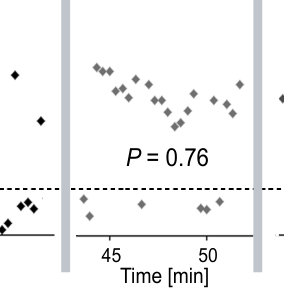</figure>
<figure class="bookfig">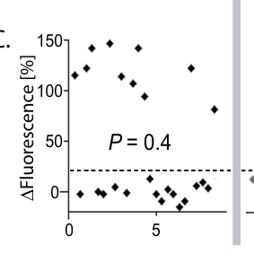</figure>
<p>C.</p>
<p>150</p>
<p>∆Huỳnh quang [%]</p>
<p>100</p>
<h3>P = 0.96 P = 0.76 P = 0.4</h3>
<p>50</p>
<p>0</p>
<p>0 5 45 50 90 95</p>
<h3>Thời gian [phút]</h3>
<p>Hình 6.6 Thí nghiệm tính dẻo trên các lát cắt hồi hải mã trong đó không chỉ EPSP được đo, mà ngoài ra, các tín hiệu huỳnh quang phụ thuộc canxi hậu khớp tại các khớp thần kinh đơn lẻ cũng được chụp ảnh [dữ liệu do Alan Fine và Ryosuke Enoki cung cấp].</p>
<p>có thể so sánh được sau mỗi chuỗi kích thích LTP và do đó không cho thấy sự gia tăng khớp thần kinh tỷ lệ thuận với sự gia tăng EPSP. Tuy nhiên, chúng đáp ứng một cách trung thực khi chất dẫn truyền được giải phóng khỏi đầu tận cùng tiền khớp. Một hiệu ứng quan trọng của chuỗi kích thích LTP có thể thấy trong Hình 6.6C. Hình này cho thấy sự thay đổi huỳnh quang qua nhiều lần thử trong các giai đoạn khác nhau của thí nghiệm. Kết quả cho thấy không phải mọi kích thích tiền khớp đều tạo ra một đáp ứng hậu khớp; tỷ lệ số lần quan sát thấy một sự kiện hậu khớp có thể được đánh đồng với xác suất giải phóng chất dẫn truyền, như đã đề cập trong Mục 4.2. Hơn nữa, xác suất giải phóng tăng lên đáng kể sau mỗi kích thích tần số cao. Các thí nghiệm khác của nhóm đã chỉ ra rằng xác suất giải phóng có thể bị thay đổi theo hai chiều, tăng xác suất với các kích thích tần số cao và giảm xác suất khi các kích thích được ghép cặp theo một cách cụ thể với các xung hậu khớp như sẽ thảo luận trong phần tiếp theo. Ưu điểm của kỹ thuật chụp ảnh là các kết quả trong Hình 6.6B và C có thể được quy cho một khớp thần kinh đơn lẻ, trong khi các phép đo EPSP có khả năng đo tác động của nhiều khớp thần kinh. Sự gia tăng biên độ EPSP do đó có thể là một hiệu ứng quần thể, trong đó xác suất tăng lên của việc có được một sự kiện hậu khớp ở mỗi khớp trong số nhiều khớp thần kinh có thể làm tăng hiệu ứng tổng hợp khi đo EPSP ở thân tế bào.</p>
<p>6.2.2 Tính dẻo phụ thuộc thời điểm xung</p>
<p>Các thí nghiệm tính dẻo cổ điển đã thảo luận ở trên thường sử dụng các kích thích tiền khớp tần số cao để gây ra LTP và các kích thích tần số thấp hơn để gây ra LTD. Các kích thích này cần đủ mạnh để ‘dẫn dắt’ neuron hậu khớp, phản ánh định đề của Hebb về mối quan hệ nhân quả giữa các xung hậu khớp và tiền khớp. Henry Markram, và những người khác, đã nghiên cứu sâu hơn mối quan hệ nhân quả cần thiết giữa việc phát xung tiền khớp và hậu khớp bằng cách thay đổi thời gian giữa các xung tiền khớp và hậu khớp được gây ra từ bên ngoài. Một kết quả minh họa của các thí nghiệm như vậy trên nuôi cấy hồi hải mã của Guo-chiang Bi và Mu-ming Poo được trình bày trong Hình 6.7A. Các phép đo được thực hiện trong chế độ kẹp điện thế (voltage clamp) nên dòng điện được đo ở đây. Dữ liệu cho thấy những thay đổi tương đối của biên độ EPSC đối với các giá trị khác nhau của độ chênh lệch thời gian giữa xung tiền khớp và hậu khớp, ∆t. Những kết quả này chỉ ra rằng có một cửa sổ thời gian tới hạn cho tính dẻo vào khoảng |∆t| ≈40 ms. Không thể phát hiện thấy tính dẻo khớp thần kinh nào đối với các độ chênh lệch thời điểm xung tiền khớp và hậu khớp có giá trị tuyệt đối lớn hơn nhiều so với cửa sổ thời gian này. Những thay đổi về biên độ dòng hậu khớp kích thích (EPSC) là lớn nhất đối với các độ chênh lệch dương nhỏ (LTP) hoặc âm nhỏ (LTD) trong thời điểm xung tiền khớp và hậu khớp. Sự suy giảm của tính dẻo khớp thần kinh có thể được khớp khá tốt bằng một hàm suy giảm mũ theo giá trị tuyệt đối của độ chênh lệch giữa các thời điểm xung.</p>
<p>Mặc dù dữ liệu trong Hình 6.7A thu được từ các tế bào hồi hải mã trong ống nghiệm (in vitro), các mối quan hệ tương tự cũng đã được tìm thấy trong các lát cắt vỏ não mới, cũng như trong cơ thể sống (in vivo), với kích thước cửa sổ tính dẻo tương tự. Tuy nhiên, dạng bất đối xứng của tính dẻo Hebb, được minh họa lại một cách sơ đồ hóa ở bên phải Hình 6.7A, không phải là dạng duy nhất có thể có đối với sự phụ thuộc của tính dẻo khớp thần kinh vào thời điểm xung tương đối. Một số ví dụ bổ sung được minh họa sơ đồ hóa trong Hình 6.7B–E. Người ta biết đến các ví dụ trong đó cửa sổ chênh lệch tới hạn cho LTD lớn hơn nhiều so với cửa sổ cho LTP, như được minh họa sơ đồ hóa trong Hình 6.7B. LTP và LTD cũng có thể bị đảo ngược tương đối so với sự chênh lệch trong phát xung tiền khớp và hậu khớp (Hình 6.7C). Ví dụ, các độ chênh lệch dương trong thời điểm xung gây ra LTD khi tính dẻo khớp thần kinh được kích hoạt ở các tế bào Purkinje trong tiểu não. Các tế bào Purkinje được biết là có tính ức chế, và những thay đổi như vậy do đó có thể làm giảm sự ức chế ở các mục tiêu của tế bào Purkinje. Cũng có những ví dụ về tính dẻo Hebb đối xứng được minh họa trong Hình 6.7D và E. Các cửa sổ tính dẻo như vậy dường như phù hợp hơn khi xem xét các neuron phát xung thành chùm (bursting neurons). Điều quan trọng đối với các nhà khoa học thần kinh tính toán là khám phá các vai trò chức năng của các dạng tính dẻo Hebb khác nhau.</p>
<p>6.2.3 Giả thuyết canxi và mô hình hóa các con đường hóa học</p>
<p>Các thí nghiệm sinh lý học được mô tả ở trên minh họa các hệ quả, xét về mặt hiệu quả khớp thần kinh, khi các khớp thần kinh tiếp xúc với các kích thích cụ thể. Mặc dù điều này phù hợp nhất để hiểu các hệ quả chức năng của tính dẻo khớp thần kinh mà chúng ta sẽ khám phá sau trong cuốn sách này, việc hiểu các cơ chế dẫn đến các phát hiện đã thảo luận ở trên cũng rất quan trọng. Mặc dù vẫn còn nhiều điều chưa biết, canxi là một thành phần quan trọng. Cụ thể, Artola và Singer, và trước đó là John Lisman, đã đưa ra giả thuyết rằng các mức canxi khác nhau kích hoạt các con đường sinh hóa khác nhau, như minh họa trong Hình 6.8. Canxi kích hoạt quá trình phosphoryl hóa</p>
<h3>A. Tính dẻo phụ thuộc thời điểm xung</h3>
<h3>Thay đổi biên độ EPSC [%]</h3>
<p>100</p>
<h3>LTP</h3>
<p>80</p>
<h3>Δw</h3>
<p>60</p>
<p>40 t −t post pre</p>
<p>20</p>
<p>0</p>
<h3>LTD</h3>
<p>0</p>
<p>−20</p>
<p>−60</p>
<p>−80 −80</p>
<h2>80 40 0 −40</h2>
<p>t −t post pre [ms]</p>
<p>t −t post pre [ms]</p>
<h3>C. LTP</h3>
<h3>B. LTP</h3>
<h3>Δw</h3>
<h3>Δw</h3>
<p>t −t post pre t −t post pre</p>
<h3>LTD</h3>
<h3>LTD</h3>
<p>0</p>
<p>0</p>
<p>D.</p>
<h3>E. LTP</h3>
<h3>LTP</h3>
<h3>Δw</h3>
<h3>Δw</h3>
<p>t −t post pre t −t post pre</p>
<h3>LTD</h3>
<h3>LTD</h3>
<p>0</p>
<p>0</p>
<p>Hình 6.7 (A) Những thay đổi tương đối về biên độ dòng hậu khớp kích thích (EPSC) đối với các độ chênh lệch thời gian khác nhau giữa thời điểm của một xung tiền khớp được kích hoạt và thời điểm của một xung hậu khớp được kích hoạt [dữ liệu được vẽ lại từ Bi và Poo, Journal of Neuroscience 18: 10464–72 (1998)]. Dạng tính dẻo được cách điệu ở bên phải. (B–E) Một số ví dụ về sự phụ thuộc sơ đồ hóa của hiệu quả khớp thần kinh vào mối quan hệ thời gian giữa các xung tiền khớp và hậu khớp [phỏng theo Abbott và Nelson, Nature Neuroscience 3: 1178–83 (2000)].</p>
<p>các protein thông qua các enzyme như CaM kinase II, có thể làm thay đổi hiệu quả của các thụ thể AMPA hiện có và có thể thúc đẩy việc chèn thêm các kênh AMPA mới về lâu dài. Cụ thể, mức canxi cao thúc đẩy LTP thông qua quá trình phosphoryl hóa, trong khi mức canxi vừa phải dẫn đến quá trình khử phosphoryl hóa và LTD. Điều này nhất quán với các phát hiện của Artola và Singer về các điều kiện dẫn đến LTP và LTD, mà chúng ta sẽ mô tả các quy tắc học tương ứng trong phần tiếp theo.</p>
<p>Để liên hệ giả thuyết này với hoạt động của các neuron, chúng ta cần suy nghĩ về các cơ chế ảnh hưởng đến mức canxi hậu khớp. Có một số nguồn cung cấp Ca2+ hậu khớp, như được sơ đồ hóa trong Hình 6.8. Sự gắn kết của glutamate có thể ảnh hưởng trực tiếp đến mức canxi hậu khớp theo hai cách. Thứ nhất, điều này xảy ra thông qua các thụ thể AMPA đóng mở các kênh ion có độ thấm Ca2+ nhất định, nhưng mức Ca2+ hậu khớp thu được từ nguồn này được cho là ở mức vừa phải. Thứ hai, glutamate kích hoạt giải phóng Ca2+ từ các kho dự trữ Ca2+ bên trong. Những nguồn Ca2+ này được kích hoạt gián tiếp bởi sự gắn kết glutamate. Sự gắn kết glutamate cũng dẫn đến tăng điện thế màng, có thể gián tiếp cho phép Ca2+ đi vào qua các kênh Ca2+ đóng mở theo điện thế (VGCC). Cuối cùng, dòng Ca2+ đi vào lớn nhất được cho phép thông qua các kênh NMDAR</p>
<figure class="bookfig">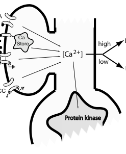</figure>
<h3>AMPA</h3>
<h3>Kho Ca</h3>
<p>cao LTP</p>
<p>[Ca ] 2+</p>
<h3>NMDA</h3>
<h3>Mg</h3>
<p>thấp</p>
<h3>LTD</h3>
<h3>VGCC</h3>
<p>Hình 6.8 Minh họa giả thuyết canxi phát biểu rằng mức canxi cao thúc đẩy LTP, trong khi mức vừa phải dẫn đến LTD. Hình bao gồm các nguồn canxi hậu khớp phổ biến và chỉ ra rằng canxi thúc đẩy các protein kinase trong nhân tế bào.</p>
<p>Tuy nhiên, như đã thảo luận trước đó, các kênh NMDAR bị chặn, ngay cả sau khi giải phóng glutamate, bởi các ion magie (Mg2+). Chỉ một sự khử cực hậu khớp mạnh mới loại bỏ được sự tắc nghẽn này, cho phép Ca2+ hậu khớp tăng mạnh. Sự khử cực mạnh cần thiết của điện thế màng có khả năng được cung cấp bởi các điện thế hoạt động lan truyền ngược (BAPs), như đã đề cập trước đó. Do đó, các kênh NMDAR cung cấp các cơ chế cho một điều kiện Hebb, đó là hoạt động tiền khớp (được chỉ báo bằng việc glutamate gắn vào NMDAR) và hoạt động hậu khớp (được chỉ báo bằng BAPs).</p>
<p>Giả thuyết cho rằng NMDAR và Ca2+ hậu khớp tham gia vào tính dẻo khớp thần kinh được củng cố bởi các chứng minh cho thấy việc phong tỏa NMDAR bằng các thuốc đối kháng, hoặc ngăn chặn sự gia tăng nồng độ canxi hậu khớp, sẽ triệt tiêu tính dẻo khớp thần kinh. Lưu ý rằng chúng ta chủ yếu thảo luận các cơ chế hậu khớp của tính dẻo kéo dài. Tuy nhiên, như đã đề cập trước đó, có bằng chứng cho thấy các sửa đổi tiền khớp rất quan trọng đối với tính dẻo khớp thần kinh và sự học. Ví dụ, sự điều biến xác suất giải phóng chất dẫn truyền đã đề cập ở trên có thể hỗ trợ các thay đổi hậu khớp kéo dài hoặc đóng góp vào sự học và xử lý thông tin theo cách riêng của nó. Cũng có thể các quá trình hậu khớp ảnh hưởng đến các quá trình tiền khớp thông qua các tế bào thần kinh đệm bọc quanh các khớp thần kinh và tương tác với cả hai phía tiền khớp và hậu khớp thông qua các khớp nối hóa học và điện học trực tiếp cùng các kênh Ca2+ khác. Một ảnh hưởng tiền khớp trực tiếp cũng có thể xảy ra thông qua các chất truyền tin ngược dòng (retrograde messengers) như oxit nitric (NO). Các cơ chế truyền thông tin ngược từ đầu tận cùng hậu khớp về các nút tiền khớp (presynaptic boutons) như vậy không cần thiết trong các hệ thống động vật không xương sống có các đầu tận cùng cụ thể trên các nút tiền khớp (Hình 6.4C). Những thay đổi tiền khớp trong tính dẻo khớp thần kinh dường như quan trọng trong các hệ thống như vậy thông qua việc giải phóng chất dẫn truyền được liên kết về mặt thời gian của đầu vào UCS và sự kích hoạt một đầu tận cùng tiền khớp cụ thể.</p>
<p>Có thể mô hình hóa trực tiếp các con đường hóa học nội bào liên quan đến tính dẻo khớp thần kinh. Một ví dụ về các con đường hóa học ở thụ thể D1 của các neuron gai (spiny neurons) ở thể vân được trình bày trong Hình 6.9, như được tóm tắt bởi Nakano, Doi, Yoshimoto, và Doya. Các khớp thần kinh này đặc biệt thú vị vì chúng không chỉ được điều hòa bởi glutamate, mà còn bởi đầu vào dopamine (DA) từ chất đen (substantia nigra). Các thí nghiệm của Jeff Wickens và các đồng nghiệp đã chỉ ra rằng chỉ riêng kích thích đầu vào vỏ não</p>
<h3>GluR D1R</h3>
<p>mGluR VDCC</p>
<h3>Gq</h3>
<h3>Golf</h3>
<h3>PLC</h3>
<h3>AC</h3>
<h3>IP3</h3>
<p>cAMP</p>
<h3>Ca2+</h3>
<h3>ER</h3>
<h3>CaMKII</h3>
<h3>PDE</h3>
<h3>CaM</h3>
<h3>PKA</h3>
<h3>PP2A</h3>
<h3>PP2B</h3>
<h3>Vòng phản hồi dương</h3>
<h3>Loop</h3>
<h3>Thr-75</h3>
<h3>CDK5</h3>
<h3>CK1</h3>
<h3>Ser-137</h3>
<h3>DARPP-32</h3>
<h3>PP2C</h3>
<h3>Thr-34</h3>
<h3>PP1</h3>
<h3>I-1</h3>
<p>Hình 6.9 Các con đường truyền tín hiệu ở thụ thể D1 của các neuron gai thể vân [phỏng theo Nakano, Doi, Yoshimoto, và Doya, Society for Neuroscience 676.5 (2007)].</p>
<p>dẫn đến LTD. Chỉ khi kết hợp với đầu vào DA mới có thể gây ra LTP. Nakano và cộng sự đã mô hình hóa mạng truyền tín hiệu trong Hình 6.9 dựa trên sự vận chuyển thụ thể AMPA, việc chèn các thụ thể AMPA khi được phosphoryl hóa bởi các kinase và loại bỏ khi được khử phosphoryl hóa bởi các phosphatase trong khi được điều hòa bởi nồng độ DA và Ca2+. Các tác giả đã tìm thấy tính dẻo phụ thuộc vào DA và Ca2+, với mức thấp dẫn đến LTD và mức cao dẫn đến LTP. Chúng ta sẽ quay lại các sự phụ thuộc như vậy trong Mục 6.3.2.</p>
<p>6.3 Biểu diễn toán học của tính dẻo Hebb</p>
<p>Trong các mô hình mạng thần kinh, tính dẻo khớp thần kinh được mô tả bằng sự thay đổi các giá trị trọng số, w, giữa các nút. Do đó, các giá trị trọng số không tĩnh mà có thể thay đổi theo thời gian. Thật không may, chúng ta không biết nhiều về diễn biến chính xác theo thời gian của các thay đổi khớp thần kinh, và hầu hết các thí nghiệm chỉ có thể khám phá các sửa đổi sau những khoảng thời gian huấn luyện nhất định. Do đó, việc biểu diễn sự biến thiên của các giá trị trọng số chỉ sau các bước thời gian, ∆t, theo cách rời rạc là phù hợp: wij(t + ∆t) = wij(t) + ∆wij(tf i, tf j, ∆t; wij). (6.2)</p>
<p>Ở đây chúng ta đã chỉ ra sự phụ thuộc của các thay đổi trọng số vào nhiều yếu tố khác nhau. Đối với tính dẻo khớp thần kinh phụ thuộc hoạt động, rõ ràng là các thay đổi trọng số phải phụ thuộc vào thời điểm phát xung, tf, của các neuron tiền khớp và hậu khớp. Chúng ta đã đưa vào công thức này khả năng các thay đổi trọng số phụ thuộc vào giá trị hiện tại của độ mạnh khớp thần kinh. Tính dẻo phụ thuộc trọng số là một yếu tố quan trọng, được thảo luận thêm bên dưới, vì độ mạnh của các khớp thần kinh sinh học chắc chắn chỉ có thể biến thiên trong một khoảng nào đó. Các phiên bản khác nhau của quy tắc tổng quát trong phương trình 6.2 được thảo luận trong phần này.</p>
<p>6.3.1 Các quy tắc tính dẻo phụ thuộc thời điểm xung</p>
<p>Để khám phá hệ quả của các phát hiện thực nghiệm về tính dẻo khớp thần kinh trong các mạng gồm các neuron phát xung, dữ liệu thực nghiệm thường được diễn giải bằng các mô hình heuristic tham số hóa một số khía cạnh của các phát hiện thực nghiệm. Ví dụ, các quy tắc tính dẻo phụ thuộc thời điểm xung (STDP) thường được sử dụng để mô tả tính dẻo với các neuron phát xung. Như đã lập luận ở trên, thời điểm xung là thiết yếu cho tính dẻo. Thật không may, lượng thay đổi khớp thần kinh phụ thuộc vào nhiều yếu tố khi chỉ xem xét như một hàm của hoạt động tiền khớp và hậu khớp. Bi và Poo đã sử dụng các cặp xung tiền khớp và hậu khớp đơn lẻ được cô lập tốt để minh họa các đường cong STDP, như trong Hình 6.7A. Chúng ta đã thảo luận về giả thuyết canxi của tính dẻo khớp thần kinh, và do đó có thể dự đoán, cũng như thấy trong các thí nghiệm, rằng các mẫu xung khác nhau có thể tạo ra các đường cong tính dẻo khác nhau. Các quy tắc sau đây chỉ áp dụng chặt chẽ cho các cặp xung cô lập. Các đặc tả bổ sung phải được đưa vào nếu, ví dụ, nhiều xung hoặc các chùm xung chồng lấp được xem xét. Do đó, cách diễn giải lý thuyết cụ thể về dữ liệu thực nghiệm của Bi và Poo phải được áp dụng một cách thận trọng. Quy tắc này được thảo luận ở đây chủ yếu vì nó đã có được ảnh hưởng lớn trong khoa học thần kinh tính toán,</p>
<p>Trong tình huống STDP như được khám phá bởi Bi và Poo, chúng ta có thể viết quy tắc cho sự thay đổi hiệu quả khớp thần kinh phụ thuộc vào thời điểm tương đối giữa một xung hậu khớp tại tpost và xung tiền khớp tại tpre như sau: ij = ϵ±(w)K±(tpost −tpre). (6.3)</p>
<p>∆w±</p>
<p>Dạng này bao gồm một tốc độ học phụ thuộc trọng số, ϵ±(w), và số hạng phụ thuộc vào thời điểm xung tương đối, K±(tpost −tpre). Ngoài ra, chúng ta cho phép các dạng hàm khác nhau cho LTP (được gắn nhãn chỉ số trên ‘+’) và LTD (được gắn nhãn chỉ số trên ‘−’). Theo các phát hiện thực nghiệm trong Hình 6.7A, hàm nhân K±(tpost −tpre) thường được lấy có dạng hàm mũ,</p>
<h3>K±(tpost −tpre) = e∓tpost−tpre</h3>
<p>τ± Θ(±[tpost −tpre]). (6.4)</p>
<p>Chúng ta cũng cho phép thang suy giảm khác nhau trong tăng cường và ức chế với các hằng số khác nhau τ + và τ −. Θ(x) là một hàm ngưỡng giới hạn LTP và LTD trong các miền đúng của độ chênh lệch dương và âm giữa phát xung tiền khớp và hậu khớp, tương ứng.</p>
<p>Quy tắc Hebb bất đối xứng cơ bản (phương trình 6.3 với hàm nhân của phương trình 6.4) gợi ý rằng khi một xung hậu khớp theo sau một xung tiền khớp trong một cửa sổ thời gian nhỏ vài mili-giây, thì khớp thần kinh được tăng cường. Câu hỏi tiếp theo, chưa được giải quyết với dữ liệu trong Hình 6.7A, là điều gì xảy ra với các cặp xung lặp đi lặp lại. Rõ ràng quá trình này không thể tiếp diễn mãi mãi. Hiệu quả khớp thần kinh phải bị giới hạn giữa một giá trị dưới (thường là 0) và một giá trị trên nào đó. Một tốc độ học phụ thuộc trọng số, ϵ±(w), do đó đã được đưa vào công thức của phương trình 6.3. Dạng chính xác của sự phụ thuộc trọng số vẫn chưa được thiết lập bằng thực nghiệm, và các thảo luận về các dạng tốc độ học phụ thuộc trọng số khác nhau đã trở thành một chủ đề lớn trong các nghiên cứu lý thuyết. Ví dụ, một quy tắc học với tốc độ học không đổi, còn gọi là quy tắc học cộng tính (additive learning rule), thường được xem xét. Một quy tắc học như vậy có thể hợp lý, ít nhất là trong một khoảng trọng số khớp thần kinh nào đó,</p>
<p>a± với wmin ij ≤wij ≤wmax ϵ± = ij 0 trường hợp khác , (6.5)</p>
<p>trong đó a± là các hằng số cho LTP và LTD. Chúng ta gọi quy tắc này là quy tắc cộng tính với các biên hấp thụ (absorbing boundaries), vì các thay đổi trọng số lý thuyết nằm ngoài khoảng tính dẻo bị hấp thụ bởi các biên. Một quy tắc thay thế là quy tắc nhân tính (multiplicative rule), với tính phi tuyến tiệm cận hơn khi tiến gần đến các biên, ϵ+ = a+(wmax −wij) (6.6) ϵ−= a−(wij −wmin). (6.7)</p>
<p>Cũng có thể xem xét các dạng hàm khác của tốc độ học. Phân bố của các trọng số khớp thần kinh có thể phụ thuộc vào dạng chính xác của sự phụ thuộc trọng số, như sẽ thảo luận thêm bên dưới.</p>
<p>6.3.2 Học Hebb trong các mô hình quần thể và mô hình tốc độ</p>
<p>Trong các mô hình mô tả hành vi trung bình của các neuron đơn lẻ (mô hình tốc độ - rate models) hoặc các tập hợp tế bào (mô hình quần thể - population models), chúng ta không thể đưa vào các thời điểm xung. Do đó, chúng ta phải quay về một mô tả tính dẻo chỉ phụ thuộc vào hoạt động của các nút tiền khớp và hậu khớp. Bản chất của các quy tắc học Hebb khi đó được nắm bắt bởi quan sát rằng tính dẻo phụ thuộc vào sự tương quan của việc phát xung tiền khớp và hậu khớp. Tất nhiên, các mô hình này khi đó không thể dùng để nghiên cứu các vấn đề cụ thể phụ thuộc thời điểm xung, nhưng như chúng ta đã thảo luận trong Chương 1, các mô hình khác nhau là cần thiết cho các loại câu hỏi khác nhau. Tuy nhiên, việc xác nhận một số giả định của các mô hình quần thể bằng các mô hình phát xung cũng là một ý tưởng hay.</p>
<p>Hầu hết các quy tắc tính dẻo Hebb được sử dụng trong các mô hình quần thể có dạng hàm có thể biểu diễn như sau:</p>
<p>∆wij = ϵ(t, w)[fpost(ri)fpre(rj) −f(ri, rj, w)] (6.8)</p>
<p>giữa một nút hậu khớp i với tốc độ phát xung ri, và một nút tiền khớp j với tốc độ phát xung rj. Chúng ta đã đưa vào một số tham số (hằng số hoặc hàm số) để tóm tắt các quy tắc phổ biến trong các mô hình quần thể. Số hạng ϵ biểu diễn độ mạnh tổng thể của các thay đổi và thường được gọi là tốc độ học. Tốc độ học có thể phụ thuộc vào nhiều yếu tố, chẳng hạn như chính các giá trị trọng số, để giữ các giá trị trọng số trong một khoảng quy định. Ngoài ra, tốc độ học đôi khi được làm cho phụ thuộc tường minh vào thời gian để mô tả, ví dụ, sự điều biến bên ngoài của tính dẻo khớp thần kinh hoặc tính dẻo phát triển với các miền tính dẻo khác nhau.</p>
<p>Các hàm fpre và fpost phụ thuộc vào tốc độ phát xung của các nút tiền khớp và hậu khớp, tương ứng. Ví dụ, Eduardo Renato Caianiello là một trong những người đầu tiên1 chỉ rõ định đề của Hebb về mặt toán học với các hàm tuyến tính cho fpre và fpost trong cái mà ông gọi là phương trình ghi nhớ (mnemonic equation),</p>
<p>∆wij = ϵ(w)[rirj −f(w)]. (6.9)</p>
<p>Số hạng f mô tả sự suy giảm trọng số. Chúng ta bỏ qua sự suy giảm trọng số trong các phiên bản sau đây của quy tắc Hebb và sẽ thảo luận riêng về vấn đề này trong phần tiếp theo. Do đó, hãy ghi</p>
<p>1Stephen Grossberg đã khám phá ra các hệ thống như vậy vào cuối những năm 1950, nhưng các bài báo của ông không được xuất bản cho đến 10 năm sau đó.</p>
<h3>Hàm được sử dụng trong quy tắc BCM</h3>
<p>f BCM</p>
<h3>Μ</h3>
<p>θ tốc độ r</p>
<p>Hình 6.10 Hàm được sử dụng trong lý thuyết BCM với ngưỡng có thể thay đổi θM. Lý thuyết BCM được phát minh bởi [Bienenstock, Cooper, và Munro [Journal of Neuroscience 2:32–48 (1982)].</p>
<p>nhớ rằng các quy tắc bên dưới phải được bổ sung bằng việc điều chỉnh tỷ lệ trọng số dưới một hình thức nào đó để đạt được sự học ổn định. Để đơn giản, chúng ta xem xét các giá trị không đổi cho tốc độ học trong phần sau đây. Quy tắc Hebb cơ bản nhất khi đó có dạng</p>
<p>∆wij = ϵrirj, (6.10)</p>
<p>nắm bắt sự tương quan giữa các biến ri và rj. Tuy nhiên, các hàm fpre và fpost thường bao gồm một số ngưỡng tính dẻo, như thấy trong các thí nghiệm trên não. Ví dụ, trong dạng tổng quát của một quy tắc Hebb do Terrance Sejnowski giới thiệu, các ngưỡng này được đặt bằng tốc độ phát xung trung bình ⟨ri⟩, trong đó dấu ngoặc nhọn được dùng để chỉ giá trị trung bình của đại lượng bên trong qua nhiều lần thử với các kích thích khác nhau. Quy tắc học Hebb tương ứng,</p>
<p>∆wij = ϵ(ri −⟨ri⟩)(rj −⟨rj⟩), (6.11)</p>
<p>được gọi là quy tắc hiệp phương sai (covariance rule) vì sự thay đổi trung bình của giá trị trọng số theo quy tắc này,</p>
<p>⟨∆wij⟩= ϵ⟨(ri −⟨ri⟩)(rj −⟨rj⟩)⟩ (6.12) = ϵ(⟨rirj⟩−⟨ri⟩⟨rj⟩), tỷ lệ thuận với hiệp phương sai giữa việc phát xung tiền khớp và hậu khớp. Đây cũng được gọi là hàm tương quan chéo khi ϵ là một hằng số chuẩn hóa thích hợp. Quy tắc học này nắm bắt gợi ý cơ bản của Hebb ở chỗ LTP được gây ra khi tốc độ phát xung tiền khớp và tốc độ phát xung hậu khớp đều nằm dưới, hoặc trên, tốc độ phát xung trung bình của chúng một cách có hệ thống, và LTD được gây ra khi một trong hai tốc độ phát xung nằm dưới mức trung bình trong khi tốc độ kia vẫn nằm trên.</p>
<p>Chúng ta có thể phân biệt hai điều kiện của LTD sâu hơn nữa. Khi tốc độ phát xung của một nút tiền khớp nằm trên mức trung bình trong khi tốc độ phát xung của nút hậu khớp nằm dưới mức trung bình, thì trọng số của khớp thần kinh cụ thể này nên được giảm xuống vì nó không thể liên quan đến việc phát xung hậu khớp có liên quan về mặt chức năng. Điều này chỉ liên quan đến một khớp thần kinh cụ thể, và dạng tính dẻo này do đó được gọi là LTD đồng khớp (homosynaptic LTD, với tiền tố Hy Lạp homo = giống nhau). Ngược lại, khi nút hậu khớp hoạt động trên tốc độ phát xung trung bình, thì tất cả các khớp thần kinh của các nút tiền khớp đang phát xung</p>
<h3>Hàm được sử dụng trong quy tắc ABS cơ bản</h3>
<h3>Ngưỡng cho LTP</h3>
<p>+ θ</p>
<h3>Ngưỡng cho LTD</h3>
<p>− f ABS θ</p>
<h3>Nồng độ canxi [Ca ] 2+</h3>
<p>Hình 6.11 Một hàm bậc thang tuyến tính từng khúc cung cấp ba miền cho tính dẻo khớp thần kinh, không thay đổi với x < θ−, LTD với θ−< x < θ+, và LTP với x > θ+. Biến phụ thuộc, x, được giả định là nồng độ canxi trong giả thuyết Ca 2+ của Lisman [Proceeding of the National Academy of Science 86: 9574–8 (1989)] và Artola và Singer [Trends in Neuroscience 16: 480–7 (1993)].</p>
<p>dưới mức trung bình nên được giảm xuống để làm cho neuron đáp ứng đặc hiệu hơn với đầu vào liên quan. Chúng ta gọi dạng tính dẻo này là LTD dị khớp (heterosynaptic LTD, với tiền tố Hy Lạp hetero = khác) để nhấn mạnh rằng loại tính dẻo này liên quan đến tất cả các khớp thần kinh của một neuron hậu khớp.</p>
<p>Quy tắc hiệp phương sai của phương trình 6.11 nắm bắt sự học Hebb cơ bản cần thiết để xây dựng các bộ liên kết. Theo nghĩa này, nó là một mô hình tối thiểu cho tính dẻo Hebb, mà chúng ta sẽ sử dụng thường xuyên trong các thảo luận sau. Tuy nhiên, một số biến thể của quy tắc Hebb cơ bản là quan trọng cần lưu ý, cụ thể là các quy tắc cho tính dẻo khớp thần kinh thường được gọi là lý thuyết BCM theo tên các nhà phát minh Elie Bienenstock, Leon Cooper, và Paul Munro. Các quy tắc tính dẻo cơ bản trong lý thuyết BCM có dạng</p>
<p>∆wij = ϵ(f BCM(ri; θM)(rj) −f(w)). (6.13)</p>
<p>Hàm f BCM được phác thảo trong Hình 6.10. Tốc độ thấp dẫn đến LTD trong khi tốc độ cao dẫn đến LTP. Quan trọng nhất, ngưỡng giữa LTD và LTP, θM, có thể thay đổi được và có thể phụ thuộc vào tốc độ của neuron hậu khớp. Ví dụ, ngưỡng trở nên cao hơn khi neuron hậu khớp trở nên hoạt động nhiều hơn. Một ngưỡng trượt (sliding threshold) như vậy không chỉ được quan sát thấy trong thực nghiệm, mà còn là một thành phần quan trọng để giữ cho hệ thống ổn định với quy tắc học này. Lý thuyết BCM đã được áp dụng đặc biệt cho tính dẻo phát triển, như trong sự hình thành các bản đồ vỏ não.</p>
<p>Một cách diễn giải mới cho quy tắc BCM theo giả thuyết canxi đã được cung cấp bởi Alain Artola và Wolf Singer, dựa trên công trình trước đó của Artola, Bröcher và Singer. Mô hình ABS tuân theo giả thuyết canxi bằng cách giả định một ngưỡng [Ca2+] thấp hơn, Θ−, để gây ra LTD và một ngưỡng [Ca2+] cao hơn, Θ+, để gây ra LTP. Giả thuyết này có thể được viết dưới dạng tương tự như quy tắc BCM ở trên,</p>
<p>∆wij = ϵ([Ca2+])(fABS([Ca2+]; θ+, θ−) −f(w)). (6.14)</p>
<p>Một ví dụ đơn giản về hàm fABS được phác thảo trong Hình 6.11. Hàm này là hằng số trong các miền khác nhau được thiết lập bởi các giá trị ngưỡng,</p>
<p>−1 với θ−< x < θ+ fABS(x) =</p>
<h2>1 với x > θ+ , (6.15)</h2>
<p> mặc dù có khả năng có sự phụ thuộc vào nồng độ trong các miền này. Công thức trong phương trình 6.14 này chỉ phụ thuộc gián tiếp vào hoạt động của các nút tiền khớp và hậu khớp vì nồng độ canxi [Ca2+] là một hàm của nhiều quá trình. Ví dụ, như đã điểm qua trong Hình 6.8, nồng độ canxi hậu khớp được điều hòa bởi sự kích hoạt của các kênh canxi phụ thuộc điện thế và đóng mở bởi phối tử khác nhau, bao gồm các kênh NMDA và phi NMDA, và các kho dự trữ canxi bên trong. Nồng độ canxi phụ thuộc vào sự khử cực hậu khớp, mà đến lượt nó lại phụ thuộc vào sự kích hoạt trong tế bào tiền khớp. Sự phụ thuộc vào hoạt động của mức canxi có thể là một hàm phức tạp của các hoạt động tiền khớp. Tuy nhiên, nếu chúng ta giả sử một mối quan hệ đơn điệu, và chủ yếu là tuyến tính, giữa hoạt động và nồng độ canxi, thì chúng ta có thể viết một mô hình đơn giản hóa như</p>
<p>∆wij = ϵ(fABS(ri; θ−, θ+)sign(rj −θpre)), (6.16)</p>
<p>trong đó θpre là mức kích hoạt tiền khớp tối thiểu để tăng cường. Chúng ta có thể xem xét các phiên bản tinh chỉnh hơn của fABS trong đó lượng tăng cường và ức chế thay đổi theo hoạt động, nhưng bản chất của tính dẻo liên kết đã được nắm bắt trong quy tắc cơ bản này.</p>
<p>Tất cả các quy tắc trên phải được bổ sung các cơ chế để giữ cho trọng số bị chặn. Ví dụ, chúng ta có thể đưa vào các tốc độ học phụ thuộc trọng số hoặc các số hạng suy giảm trọng số, như được thảo luận thêm trong Mục 6.4. Trong trường hợp đơn giản nhất, chúng ta có thể chỉ cần giới hạn số bước học, hoặc giữ các trọng số trong một khoảng nhất định. Tuy nhiên, chúng ta cũng có thể xem xét các cơ chế động hơn, chẳng hạn như ngưỡng phụ thuộc hoạt động trong lý thuyết BCM.</p>
<h3>Mô phỏng</h3>
<p>Ở đây chúng ta sẽ trình bày ngắn gọn rằng quy tắc tính dẻo Hebb cơ bản có thể được cài đặt gọn gàng trong Python. Quy tắc Hebb cơ bản cho các mô hình tốc độ, phương trình 6.10, phát biểu rằng một số hạng</p>
<p>∆w = ba (6.17)</p>
<p>được cộng vào trọng số trước đó w, trong đó a là tốc độ phát xung của nút tiền khớp và b là tốc độ phát xung của nút hậu khớp, cả hai đều cho một ví dụ huấn luyện nhất định. Chúng ta có thể gộp tất cả các khớp thần kinh trên một nút hậu khớp bằng cách gom các giá trị trọng số vào một vector w, và tốc độ của các nút tiền khớp vào một vector cột a. Chúng ta sử dụng một vector hàng để gom các trọng số trên một nút hậu khớp đơn lẻ, nhưng chúng ta luôn viết tốc độ của các nút dưới dạng vector cột. Tương tự, chúng ta cũng có thể xem xét một vector cột, b, gồm tốc độ huấn luyện của tất cả các neuron hậu khớp. Quy tắc học khi đó có thể được viết là</p>
<p>∆w = ba′. (6.18)</p>
<p>Ở đây chúng ta đã sử dụng dấu phẩy trên để chỉ phép chuyển vị của một vector nhằm chuyển đổi một vector cột thành một vector hàng. Các trọng số w giờ đây được gom trong một ma trận vì chúng ta nhân một vector cột với một vector hàng. Ví dụ, hãy xem xét ba nút tiền khớp với tốc độ a = (1, 2, 3)′ và hai nút hậu khớp với tốc độ b = (4, 5)′. Ma trận trọng số khi đó là</p>
<p>4</p>
<p>4 8 12</p>
<p></p>
<p>w = (1, 2, 3) =</p>
<p>. (6.19)</p>
<p>5</p>
<h2>5 10 15</h2>
<p>Tức là, ma trận trọng số có các thành phần, wij, trong đó chỉ số thứ nhất đánh dấu các vị trí trong một cột (chỉ số của nút hậu khớp) và chỉ số thứ hai đánh dấu các vị trí trong một hàng (chỉ số của nút tiền khớp),</p>
<p></p>
<p> w11 w12 w13 ... w1nin w21 w22 w23 ... w2nin . . . ... . . . . ... . . . . ... . wnout1 wnout2 wnout3 ... wnoutnin</p>
<p>      </p>
<p>       w = (6.20)</p>
<p>Số nin là số neuron tiền khớp, và nout là số neuron hậu khớp. Một mẹo hữu ích là nhớ rằng nhãn thứ nhất viết tắt cho ‘tới’ (to) và nhãn thứ hai cho ‘từ’ (from), như trong wtới từ, hoặc whậu tiền (wpost pre).</p>
<p>Nếu chúng ta áp dụng tuần tự tất cả các vector huấn luyện, thì sự thay đổi các giá trị trọng số là tổng của tất cả các thay đổi từ từng ví dụ huấn luyện riêng lẻ. Để viết điều này về mặt toán học, chúng ta gom tất cả các vector cột của các ví dụ huấn luyện khác nhau thành một mảng, sao cho chúng ta thu được các ma trận a và b với các thành phần aiµ và biµ cho ví dụ huấn luyện µ. Ma trận trọng số Hebb sau khi huấn luyện tất cả các ví dụ khi đó được cho bằng cách cộng vào ma trận ban đầu a0 tổng trên tất cả các ví dụ huấn luyện, có thể viết cho các thành phần là,</p>
<h3>X</h3>
<p>wij = w0 ij + biµaiµ. (6.21)</p>
<p>µ</p>
<p>Số hạng thứ hai ở vế phải tương ứng với một phép nhân ma trận có dạng ba′. Do đó, phương trình 6.18 tương ứng với việc huấn luyện tất cả các mẫu với ma trận trọng số ban đầu là a0 = 0. Công thức này có thể được viết trực tiếp vào Python. Ví dụ, trong chương trình weightDistribution.py, được thảo luận thêm trong Mục 6.4.2, việc huấn luyện được thực hiện bằng w=(rPost-np.mean(rPost))@(rPre-np.mean(rPre)).T/npat trong đó rPost và rPre là các ma trận cho tốc độ hậu khớp và tiền khớp của tất cả các ví dụ huấn luyện và giá trị trung bình được tính bằng hàm mean() của Numpy. Quy tắc này do đó là một cài đặt của quy tắc hiệp phương sai, phương trình 6.11.</p>
<p>6.3.3 Trọng số âm và các khớp thần kinh đổi dấu</p>
<p>Một thực tế cơ bản cần tuân thủ trong các quy tắc học là các giá trị khớp thần kinh luôn dương, vì các giá trị này biểu diễn trọng số. Tuy nhiên, như đã thảo luận trong Mục 4.2, các IPSP làm giảm điện thế màng tổng thể. Do đó, trong các neuron hoặc nút quần thể tính tổng tất cả các đầu vào, chúng ta có thể mô tả các khớp thần kinh ức chế bằng các trọng số âm. Tất nhiên, loại khớp thần kinh phụ thuộc vào loại thụ thể cụ thể và không thể thay đổi. Do đó, các quy tắc học khớp thần kinh không nên làm thay đổi dấu của các giá trị trọng số. Trong khi điều này là hiển nhiên đối với các khớp thần kinh ở các neuron đơn lẻ, dù là trong các neuron phát xung hay trong các mô hình tốc độ nơi nút biểu diễn tần suất trung bình của các neuron đơn lẻ, tình huống đối với các trọng số trong các nút quần thể lại không hiển nhiên như vậy.</p>
<p>Như đã lập luận trong Mục 5.5, một nút quần thể biểu diễn một tập hợp các neuron, và các ‘khớp thần kinh’ của một nút như vậy mô tả ảnh hưởng trung bình của một quần thể neuron lên một quần thể neuron khác. Về nguyên tắc, các quần thể này có thể chứa cả các neuron kích thích và ức chế trong cái mà chúng ta gọi là các nút quần thể hỗn hợp (mixed population nodes). Ảnh hưởng của một quần thể hỗn hợp lên một quần thể khác có thể là kích thích hoặc ức chế. Hơn nữa, sự học trong hệ thống, và tính dẻo khớp thần kinh trong các quần thể hỗn hợp, thậm chí có thể làm thay đổi tác động tổng thể của một quần thể lên quần thể khác. Ví dụ, một neuron trở thành ức chế ngay cả khi bắt đầu từ một giá trị kích thích. Do đó, trong các mô hình quần thể, người ta thường không chỉ diễn giải các trọng số âm là ức chế, mà thậm chí còn cho phép sự vượt miền (domain crossing) của các giá trị trọng số như vậy. Những sự vượt miền như vậy chắc chắn không có nghĩa là các thụ thể kích thích trở thành ức chế hoặc ngược lại. Việc học với các mô hình như vậy có thể mô tả các quá trình phát triển trong đó các khớp thần kinh mới trong quần thể có thể trở nên hoạt động, hoặc thậm chí các khớp thần kinh mới được hình thành. Về nguyên tắc, người ta không nên nói về khớp thần kinh trong các mô hình quần thể nữa, nhưng thuật ngữ này đã trở nên phổ biến khi mô tả các tiếp xúc trong mạng thần kinh.</p>
<p>Trong các chương sau, chúng ta sẽ thảo luận các mô hình phổ biến với các nút quần thể hỗn hợp. Tuy nhiên, nhiều mô hình quần thể tách biệt các quần thể kích thích và ức chế. Sau này chúng ta sẽ lập luận về sự khác biệt và tính phù hợp của các công thức này bằng một số ví dụ cụ thể, đặc biệt là trong các mô hình bản đồ vỏ não ở Chương 8 và các mô hình trí nhớ tự liên kết ở Chương 9. Như với tất cả các mô hình, tính phù hợp liên quan đến các câu hỏi khoa học mà mô hình được thiết kế để trả lời, cũng như khả năng nắm bắt đầy đủ các hiệu ứng đang được nghiên cứu. Nút quần thể hỗn hợp là đủ cho hầu hết các thảo luận trong cuốn sách này. Các mô hình như vậy thường gọn hơn và dễ nghiên cứu về mặt giải tích hơn. Ngược lại, các mô hình có các nút ức chế và kích thích riêng biệt dễ liên hệ với các mạng sinh học hơn. Các mô hình như vậy cũng có thể bao gồm các tính chất không có trong các phiên bản quần thể hỗn hợp đơn giản hóa, nhưng hầu hết các cơ chế trong các thảo luận về quá trình não trong cuốn sách này có thể được theo dõi với các mô hình minh họa của các nút quần thể hỗn hợp.</p>
<p>6.4 Điều chỉnh tỷ lệ khớp thần kinh và phân bố trọng số</p>
<p>Việc áp dụng lặp đi lặp lại các quy tắc liên kết cộng tính dẫn đến các giá trị khớp thần kinh tăng vọt mất kiểm soát (runaway). Nhiều ví dụ mô hình hóa bao gồm một giới hạn đơn giản về phạm vi cho các giá trị khớp thần kinh, một cách tường minh hoặc thông qua một số bước huấn luyện hữu hạn được sử dụng trong các mô phỏng. Mặc dù các phép xấp xỉ như vậy đôi khi là đủ và phù hợp xét theo mục tiêu mô hình hóa, các hệ thần kinh thực tế cần một sự cân bằng và cạnh tranh nào đó giữa các khớp thần kinh để cho phép sự học ổn định trong các tình huống cảm giác đa dạng. Do đó, chúng ta phải xem xét việc điều chỉnh tỷ lệ khớp thần kinh cạnh tranh (competitive synaptic scaling). Chúng ta bắt đầu phần này với các ứng dụng ví dụ của một số quy tắc trên và minh họa một số phân bố trọng số thu được.</p>
<p>6.4.1 Ví dụ về STDP với các neuron phát xung</p>
<p>Hiệu quả khớp thần kinh liên tục thay đổi miễn là các quy tắc học được áp dụng. Tuy nhiên, để nghiên cứu hệ quả của các quy tắc này, chúng ta có thể xem xét phân bố của các trọng số, và cách chúng thay đổi theo thời gian. Nói chung, vì chúng ta thường xem xét việc học nhiều mẫu ngẫu nhiên, chúng ta có thể coi các thay đổi trọng số như các quá trình ngẫu nhiên. Có nhiều phương pháp đã được phát triển để phân tích các hệ thống ngẫu nhiên, chẳng hạn như các phương trình Fokker–Planck mô tả sự tiến hóa theo thời gian của hàm mật độ xác suất của các hệ thống như hệ thống đang xét ở đây. Các phương pháp như vậy có thể được sử dụng để mô tả sự trôi dạt (drift) và các phân bố cân bằng có thể có của các trọng số khớp thần kinh. Các phân bố khớp thần kinh cũng có thể được khám phá bằng cách áp dụng trực tiếp các quy tắc tính dẻo trong các mô phỏng, như trình bày tiếp theo.</p>
<p>Bây giờ chúng ta sẽ xem xét quy tắc STDP cơ bản của phương trình 6.3 với hàm nhân 6.4. Rõ ràng là độ mạnh của các khớp thần kinh liên tục thúc đẩy việc phát xung của một neuron hậu khớp sẽ được tăng lên theo quy tắc này. Việc học của các khớp thần kinh có thể được giám sát, như trong các thí nghiệm, nếu chúng ta ép việc phát xung hậu khớp có mối quan hệ thời gian chặt chẽ với một chuỗi xung tiền khớp. Ngược lại, các xung của các neuron tiền khớp không tương quan với việc phát xung hậu khớp có thể xảy ra trước, hoặc sau, xung hậu khớp. Những sự kiện không tương quan như vậy do đó có thể tạo ra các sự kiện tăng cường hoặc ức chế ngẫu nhiên. Nếu tác động tổng thể của sự ức chế đối với các sự kiện như vậy mạnh hơn sự tăng cường trung bình, thì các trọng số khớp thần kinh giảm dần theo thời gian đối với các mẫu không nên được liên kết với việc phát xung của neuron hậu khớp. Do đó, chúng ta kỳ vọng một phân bố hai đỉnh (bimodal distribution) cho các quy tắc liên kết cơ bản như vậy, với một số khớp thần kinh tiến về độ mạnh tối đa có thể, trong khi những khớp khác suy giảm về 0.</p>
<p>Để minh họa điều này chi tiết hơn, bây giờ chúng ta sẽ theo công trình của Sen Song, Kenneth Miller, và Larry Abbott và nghiên cứu một neuron IF đơn lẻ với 1000 khớp thần kinh kích thích được dẫn dắt riêng lẻ bởi các chuỗi xung Poisson tiền khớp với tốc độ phát xung trung bình là 20 Hz. Khi bắt đầu mô phỏng, chúng ta đặt tất cả các trọng số khớp thần kinh ở các giá trị lớn. Hệ quả là neuron hậu khớp phát xung với tần số lớn một cách rất đều đặn vì đầu vào khớp thần kinh trung bình vượt quá ngưỡng phát xung của các neuron, như đã thảo luận trong Chương 5. Sau đó chúng ta áp dụng một quy tắc STDP cộng tính với LTD mạnh hơn một chút so với LTP. Trọng số khớp thần kinh trung bình giảm xuống trong các điều kiện này, dẫn đến các đáp ứng neuron với tốc độ phát xung thấp hơn và hệ số biến thiên (CV) tăng lên, như minh họa trong Hình 6.12A. Thú vị là một số khớp thần kinh sống sót và trở thành nguồn dẫn dắt chính của neuron. Phân bố trọng số thu được sau 5 phút thời gian mô phỏng bằng quy tắc STDP cộng tính được trình bày trong Hình 6.12B. Có nhiều trọng số khớp thần kinh tụ quanh các giá trị rất nhỏ, với một vài khớp thần kinh có trọng số khớp thần kinh lớn tiến gần đến giới hạn trên được áp đặt trong các mô phỏng. Các kết quả giải tích cũng chỉ ra rằng các phân bố trọng số với quy tắc Hebb cộng tính có phân bố hai đỉnh với các đỉnh tiến gần đến các giá trị giới hạn.</p>
<p>Việc phân tích các thí nghiệm trên chi tiết hơn là rất đáng giá. Trong Chương 5, chúng ta đã thảo luận thực tế rằng các neuron IF đáp ứng bằng việc phát xung đều đặn đối với các chuỗi xung ngẫu nhiên nếu hiệu quả khớp thần kinh đủ mạnh sao cho dòng điện trung bình lớn hơn ngưỡng phát xung của neuron (xem Hình 5.7). Thời điểm phát xung của neuron IF ở chế độ này chủ yếu được xác định bởi dòng điện đầu vào trung bình, sao cho mỗi xung tiền khớp riêng lẻ không chịu trách nhiệm duy nhất cho một xung hậu khớp. Chúng ta có thể định lượng trách nhiệm trung bình của xung tiền khớp đối với một xung hậu khớp bằng cách đo</p>
<h3>A. Giai đoạn học B. Phân bố trọng số sau khi học</h3>
<p>250</p>
<p>250</p>
<p>0.8</p>
<p>0.7</p>
<p>200</p>
<p>200</p>
<h3>Tần suất phát xung [Hz]</h3>
<p>0.6</p>
<h3>Số lượng</h3>
<p>0.5</p>
<p>150</p>
<p>150</p>
<h3>CV</h3>
<h3>V</h3>
<p>0.4</p>
<h3>C</h3>
<p>100</p>
<p>100</p>
<p>0.3</p>
<p>0.2</p>
<p>50</p>
<h3>Tần suất phát xung</h3>
<p>50</p>
<p>0.1</p>
<h2>0 0.005 0.01 0.015 0</h2>
<h2>0 0.5 1 1.5 2 2.5 3 0</h2>
<p>0</p>
<h3>Thời gian [phút]</h3>
<h3>Các giá trị trọng số</h3>
<p>Hình 6.12 (A) Tần suất phát xung và CV, hệ số biến thiên, của một neuron IF được dẫn dắt bởi 1000 chuỗi xung Poisson kích thích trong khi hiệu quả khớp thần kinh thay đổi theo quy tắc STDP cộng tính với các cửa sổ tính dẻo Gauss bất đối xứng. (B) Phân bố các giá trị trọng số sau 5 phút thời gian huấn luyện mô phỏng (tương tự như phân bố sau 3 phút). Các trọng số bị ràng buộc nằm trong khoảng 0–0.015. Phân bố có hai cực đại, mỗi cực đại nằm ở một biên của khoảng cho phép. [Các mô phỏng này bám sát công trình của Song, Miller, và Abbott, Nature Neuroscience 3: 919–26 (2000).]</p>
<p>hàm tương quan chéo giữa chúng. Để làm điều này, chúng ta định nghĩa một đại lượng s(∆t) có giá trị s = 1 nếu một xung xảy ra trong khoảng thời gian ∆t, và bằng 0 trong trường hợp khác (s = 0). Với biểu diễn chuỗi xung này, thật đơn giản để định lượng mối tương quan giữa các xung tiền khớp và các xung hậu khớp bằng cách sử dụng hàm tương quan chéo,</p>
<h3>C(n) = ⟨spre(t)spost(t + n∆t)⟩−⟨spre⟩⟨spost⟩, (6.22)</h3>
<p>trong đó các biểu thức đặt trong dấu ngoặc nhọn biểu thị giá trị trung bình theo thời gian của đại lượng đó. Mối tương quan bằng 0 nếu các chuỗi xung tiền khớp và hậu khớp độc lập với nhau (tức là ⟨sprespost⟩= ⟨spre⟩⟨spost⟩). Mối tương quan lớn hơn 0 khi, tính trung bình, có nhiều sự xuất hiện hơn của các mối quan hệ gần gũi giữa các xung tiền khớp và hậu khớp. Đại lượng này âm nếu các xung tiền khớp dẫn đến sự giảm nhất quán của các xung hậu khớp (phản tương quan).</p>
<p>Các phép đo tương quan chéo như vậy xác nhận rằng một chuỗi xung đầu vào đơn lẻ có ít tương quan với chuỗi xung đầu ra khi neuron IF ở trong chế độ phát xung đều đặn. Các tương quan chéo trung bình đo được tương ứng với mô phỏng trên với các giá trị trọng số ban đầu là w = 0.015 được trình bày trong Hình 6.13 bằng các ký hiệu ngôi sao và được nội suy bằng đường nét đứt. Điều này dẫn đến việc phát xung đều đặn của neuron hậu khớp với tần số khoảng 270 Hz. Tương quan chéo trung bình trong các mô phỏng này nhất quán với giá trị 0 nếu chúng ta xem xét các kết quả trong phạm vi phương sai của chúng được chỉ báo bằng các thanh sai số. Các giá trị tương tự của tương quan chéo trung bình đối với các độ dịch thời gian dương và âm, ∆t, chỉ ra rằng khả năng xảy ra một xung tiền khớp trước một xung hậu khớp ngang bằng với khả năng xảy ra một xung tiền khớp sau một xung hậu khớp. Tần suất xảy ra trung bình ngang nhau của các xung tiền khớp trước và sau một xung hậu khớp có nghĩa là, về mặt thống kê, LTP xảy ra nhiều ngang với LTD. Hành vi trung bình của neuron do đó sẽ không bao giờ thay đổi nếu tác động của LTP và LTD bằng nhau. Tuy nhiên, nếu tác động của LTD mạnh hơn một chút so với LTP, sao cho diện tích dưới nhánh LTD của STDP (Hình 6.7) lớn hơn diện tích dưới nhánh LTP, thì chúng ta sẽ thu được sự suy giảm đáng tin cậy của các giá trị trọng số theo thời gian.</p>
<p>0.2</p>
<h3>Tương quan chéo trung bình</h3>
<p>0.15</p>
<p>0.1</p>
<p>0.05</p>
<p>0</p>
<p>−20 −10 0 10 20 −0.05</p>
<h3>Δ t [ms]</h3>
<p>Hình 6.13 Hàm tương quan chéo trung bình giữa các chuỗi xung Poisson tiền khớp và chuỗi xung hậu khớp (lấy trung bình trên tất cả các chuỗi xung tiền khớp) trong các mô phỏng một neuron IF với 1000 kênh đầu vào. Các chuỗi xung dẫn đến kết quả hiển thị bằng hình ngôi sao được tạo ra với mỗi giá trị trọng số cố định ở mức 0.015. Các tương quan chéo nhất quán với giá trị 0 khi xem xét trong phạm vi phương sai được chỉ báo bởi các thanh sai số. Các hình vuông biểu diễn kết quả từ các mô phỏng neuron IF được dẫn dắt bởi cùng các chuỗi xung tiền khớp như trước, nhưng với ma trận trọng số sau khi học Hebb như trong Hình 6.12. Một số chuỗi xung tiền khớp gây ra việc phát xung hậu khớp với một đỉnh dương trong các hàm tương quan chéo trung bình khi các xung tiền khớp đi trước xung hậu khớp [xem thêm Song và Abbott, Neurocomputing 32 & 33: 523–8 (2000)]. Không có thanh sai số nào được hiển thị trong đường cong này để đảm bảo độ rõ ràng.</p>
<p>Các tương quan chéo trung bình giữa tất cả các xung tiền khớp và các xung hậu khớp với các trọng số sau khi học, như trong Hình 6.12, được vẽ trong Hình 6.13 bằng các hình vuông. Các trọng số này gây ra tần số thấp hơn nhiều và thực tế hơn của chuỗi xung hậu khớp vào khoảng 18 Hz. Đỉnh ở các giá trị âm nhỏ của ∆t trong đường cong tương quan chéo chỉ ra rằng một số chuỗi xung tiền khớp chịu trách nhiệm tạo ra một xung hậu khớp. Sự tương quan tăng lên này của một số chuỗi xung hỗ trợ LTP cần thiết để ổn định các khớp thần kinh tương ứng. Song và Abbott, những người đầu tiên trình bày chi tiết các lập luận được phác thảo ở đây, đã chứng minh rằng một trạng thái ổn định, với hệ số biến thiên hợp lý lớn, có thể đạt được đối với các tần số phát xung khác nhau trong các chuỗi xung đầu vào. Tất nhiên, thời gian để đạt đến trạng thái ổn định sau khi thay đổi tần số đầu vào phụ thuộc vào thời gian cần thiết để sửa đổi các trọng số khớp thần kinh. Các chi tiết sinh học như vậy vẫn chưa được xác định bằng thực nghiệm. Trong trường hợp chuyển tiếp rất nhanh sang trạng thái ổn định, điều này có nghĩa là neuron cũng có thể thích nghi với sự thay đổi tần số phát xung của đầu vào, một điều được gọi là điều khiển độ lợi (gain control). Tuy nhiên, sự thay đổi vĩnh viễn quá nhanh của các trọng số khớp thần kinh có những bất lợi khác đối với tính ổn định của sự học.</p>
<p>Mặc dù các kết quả trên với các neuron phát xung rất đáng khích lệ, vẫn còn nhiều câu hỏi liên quan đến các chi tiết sinh học của các quy tắc STDP, đặc biệt là về các cơ chế điều chỉnh tỷ lệ và dạng phụ thuộc trọng số. Ngoài ra, để xem xét thêm tính ổn định của quá trình học, chúng ta phải xem xét các quy tắc học như vậy trong</p>
<h3>P(w)</h3>
<p>0.02</p>
<h2>0 50 w 0.00</h2>
<p>Hình 6.14 Biểu đồ tần suất chuẩn hóa của các giá trị trọng số từ các mô phỏng 500 khớp thần kinh lên một nút quần thể sau khi huấn luyện 1000 mẫu ngẫu nhiên phân bố theo hàm mũ với quy tắc học hiệp phương sai Hebb 6.11. Một đường khớp phân bố Gauss với dữ liệu được hiển thị dưới dạng đường nét liền.</p>
<p>các mạng neuron. Trước khi chuyển sang các mạng trong chương tiếp theo, chúng ta cần thảo luận ngắn gọn về việc điều chỉnh tỷ lệ trong các mô hình tốc độ.</p>
<p>6.4.2 Phân bố trọng số trong các mô hình tốc độ</p>
<p>Đối với một số thảo luận sau này trong cuốn sách này, việc biết phân bố trọng số của quy tắc hiệp phương sai Hebb (phương trình 6.11), vốn là quy tắc chủ đạo trong các mô hình quần thể hoặc mô hình tốc độ, là rất hữu ích. Trong nhiều nghiên cứu sử dụng quy tắc này, các mẫu ngẫu nhiên được dùng để biểu diễn các mẫu đầu vào của các nút tiền khớp. Các số ngẫu nhiên cho các đáp ứng hậu khớp được giả định là độc lập với các đầu vào này, ít nhất là trong giai đoạn học. Đây là một giả định hợp lý vì sự học nhằm mục đích thiết lập các tương quan giữa mẫu đầu vào và đầu ra, và sự học nên dừng lại khi mối tương quan này được thiết lập. Do đó, chúng ta xem xét các tốc độ phát xung độc lập, ri và rj, cho các nút tiền khớp và hậu khớp.</p>
<p>Nếu chúng ta lấy quy tắc hiệp phương sai Hebb cộng tính cơ bản của phương trình 6.11 và bắt đầu với các giá trị trọng số w0 ij = 0, thì chúng ta có thể viết các giá trị trọng số sau khi học Np mẫu là wij = 1 p (rµ i −⟨ri⟩)(rµ</p>
<h3>X</h3>
<p>j −⟨rj⟩). (6.23)</p>
<h3>Np</h3>
<p>µ p</p>
<p>Ở đây, chúng ta đã sử dụng tốc độ học ϵ = 1/</p>
<p>Np để độ rộng của phân bố trọng số không thay đổi theo số lượng mẫu huấn luyện, vì những lý do mà chúng ta sẽ thấy ngay sau đây. Sau khi trừ đi giá trị trung bình khỏi mỗi số ngẫu nhiên cho tốc độ phát xung tiền khớp và hậu khớp, chúng ta thu được phép nhân các biến ngẫu nhiên có kỳ vọng bằng 0 và phương sai σ2. Những biến ngẫu nhiên mới đó lại là các biến ngẫu nhiên, có thể có phân bố khác với các phân bố được sử dụng để tạo ra mẫu phát xung, như được giải thích trong Phụ lục 3.5. Điều quan trọng ở đây là quy tắc học của phương trình 6.23 là một tổng trên Np biến ngẫu nhiên độc lập. Khi đó, định lý giới hạn trung tâm (central limit theorem) cho chúng ta biết rằng tổng là một biến ngẫu nhiên có phân bố tiến tới phân bố Gauss với kỳ vọng 0 và phương sai σ2/Np, ít nhất là đối với các tổng rất lớn. Đây là lý do cho phép chuẩn hóa cụ thể trong phương trình 6.23, vì độ rộng của phân bố Gauss tỷ lệ thuận với căn bậc hai của phương sai.</p>
<p>Phân bố Gauss thực sự là những gì chúng ta tìm thấy trong các mô phỏng số của quy tắc này. Một chương trình ví dụ nằm trong weightDistribution.py cũng minh họa cách khớp một hàm trong Python. Minh họa này sử dụng các tốc độ phát xung phân bố theo hàm mũ cho các mẫu đầu vào và đầu ra trong một thí nghiệm số, phần nào mô phỏng phát hiện sinh lý học. Tuy nhiên, các phân bố khác, chẳng hạn như các mẫu thường được nghiên cứu được tạo ra từ các số nhị phân phân bố đều, cũng cho kết quả tương tự. Biểu đồ tần suất kết quả của các giá trị trọng số sau 1000 bước học với quy tắc hiệp phương sai được trình bày trong Hình 6.14. Chúng ta đã đưa vào một đường khớp phân bố trọng số mô phỏng với hàm Gauss cho thấy dữ liệu được xấp xỉ tốt bởi một phân bố Gauss, như chúng ta đã dự đoán ở trên.</p>
<p>Programs/weightDistribution.py 1 # Weight d i s t r i b u t i o n of Hebbian synapses in r a t e model 2 import numpy as np 3 import m a t p l o t l i b . pyplot as p l t 4 from scipy . optimize import c u r v e f i t 5 6 nn =100; npat =1000 # number of nodes and p a t t e r n s 7 8 rPre = np . random . e x p o n e n t i a l ( 1 0 , ( nn , npat ) ) 9 r P o s t = np . random . e x p o n e n t i a l ( 2 0 , ( nn , npat ) ) 10 w=( rPost −np . mean ( r P o s t ) )@( rPre−−np . mean ( rPre ) ) . T / npat 11 12 # Histogram p l o t t i n g 13 n , bins = np . histogram (w) 14 dx = bins [1]−bins [ 0 ] 15 n = n / ( sum ( n )∗dx ) 16 x = np . zeros (10) 17 f o r i in range ( 1 0 ) : 18 x [ i ] = bins [ i ]+ dx /2 19 p l t . bar ( x , n , 8 ) 20 21 # F i t normal d i t r i b u t i o n to data 22 def func ( x , mu, s i g ) : 23 r e t u r n 1 / ( np . s q r t (2∗np . pi )∗s i g )∗np . exp (−(x−mu)∗∗2/(2∗s i g ∗∗2)) 24 25 popt , pcov = c u r v e f i t ( func , x , n ) 26 x = np . l i n s p a c e ( x [ 0 ] , x [ 9 ] , 5 0 ) 27 p l t . p l o t ( x , func ( x , ∗popt ) , ’ r−’ ) 28 p l t . x l a b e l ( ’w’ ) , p l t . y l a b e l ( ’P (w) ’ )</p>
<p>6.4.3 Điều chỉnh tỷ lệ khớp thần kinh cạnh tranh và suy giảm trọng số</p>
<p>Thảo luận ở trên cho thấy rằng chúng ta có thể ràng buộc độ rộng của các phân bố trọng số bằng các tốc độ học nhỏ. Nhiều minh họa bằng mô phỏng máy tính chỉ sử dụng một số lượng nhỏ các mẫu huấn luyện, sao cho các khớp thần kinh tăng vọt mất kiểm soát không phải là vấn đề. Tuy nhiên, việc duy trì sự cân bằng giữa các khớp thần kinh là cực kỳ quan trọng để xây dựng các hệ thống đáng tin cậy và nhạy bén. Chúng ta không thể thảo luận toàn bộ chủ đề này tại thời điểm này, vì các đặc tính mạng, chẳng hạn như sự ức chế, cũng đóng góp vào. Ở đây, chúng ta sẽ thảo luận các cơ chế khả dĩ cho các khớp thần kinh cạnh tranh ở các nút đơn lẻ. Chúng ta đã thảo luận trong Mục 6.4.1 một ví dụ về điều chỉnh tỷ lệ khớp thần kinh với STDP cộng tính và các trọng số bị giới hạn, trong đó số lượng các kênh mạnh bị giảm đi đối với các đầu vào có tần số cao hơn. Điều này thực tế về mặt sinh học, vì người ta đã phát hiện bằng phương pháp gắn nhãn huỳnh quang rằng số lượng các kênh hoạt động thực sự thay đổi trong những tình huống như vậy. Một số thí nghiệm cũng đã chứng minh trực tiếp hơn rằng hiệu quả khớp thần kinh phụ thuộc vào hoạt động hậu khớp trung bình. Ví dụ, việc phong tỏa một số kênh ức chế của một neuron, điều này sẽ làm tăng hoạt động của nó, sẽ làm giảm tỷ lệ hiệu quả khớp thần kinh xuống, trong khi việc ép giảm hoạt động hậu khớp dẫn đến sự gia tăng hiệu quả khớp thần kinh. Cho đến nay, các cơ chế sinh học của việc điều chỉnh tỷ lệ khớp thần kinh vẫn chưa được hiểu hoàn toàn. Một cài đặt đơn giản dựa trên các nguồn lực hạn chế, giữ cho tổng độ mạnh khớp thần kinh không đổi, dường như không có khả năng xảy ra. Tuy nhiên, có những phát hiện sinh lý học mới có tiềm năng giải quyết câu đố này, chẳng hạn như các cơ chế điều hòa của tế bào thần kinh đệm.</p>
<p>Mặc dù các cơ chế sinh học chính xác vẫn chưa rõ ràng, chúng ta có thể mô hình hóa các khớp thần kinh cạnh tranh theo nhiều cách khác nhau. Hầu hết các cơ chế này về mặt toán học tương đương với việc chuẩn hóa vector trọng số. Việc chuẩn hóa này có thể được tuân thủ một cách chặt chẽ, hoặc chỉ một cách động trên trung bình (tiệm cận). Một ví dụ cho việc tuân thủ chặt chẽ chuẩn là chia mỗi giá trị trọng số cho tổng của tất cả các trọng số sau mỗi lần cập nhật, wij ← wij P , (6.24)</p>
<p>j wij giúp giữ độ dài của vector trọng số bằng đúng 1. Công thức này chỉ đúng khi các giá trị trọng số là dương. Trong trường hợp có cả giá trị dương và âm, chúng ta cần chia cho căn bậc hai của tổng các bình phương. Trong công thức, chúng ta đã sử dụng một mũi tên để chỉ ra rằng các giá trị trọng số ban đầu được thay thế bằng các giá trị đã chuẩn hóa, thay vì đưa vào một ký hiệu mới cho các trọng số. Việc chuẩn hóa trong phương trình 6.24 là một ví dụ về điều chỉnh tỷ lệ nhân tính (hoặc chia tính), vì tốc độ thay đổi phụ thuộc vào từng giá trị trọng số. Mặc dù dễ cài đặt trong các mô phỏng, sơ đồ chuẩn hóa này có vấn đề vì việc tính tổng tất cả các giá trị trọng số là một phép toán phi cục bộ (non-local), tốn kém về mặt tính toán và không thực tế về mặt sinh học. Khả dụng hơn nhiều là các cài đặt động, không giữ các trọng số cố định chặt chẽ tại mỗi bước thời gian, nhưng có thể cho phép điều chỉnh tỷ lệ hữu ích với các cài đặt cục bộ.</p>
<p>Cách trực tiếp nhất để mô hình hóa việc điều chỉnh tỷ lệ là đưa vào một động lực học trọng số riêng biệt trên một thang thời gian dài hơn nhiều so với tính dẻo khớp thần kinh đã thảo luận cho đến nay. Ví dụ, theo khuyến nghị của Mark van Rossum, chúng ta có thể đo một giá trị trung bình trượt, a(t), của hoạt động hậu khớp bằng một bộ tích phân rò rỉ (leaky integrator), da(t)</p>
<p>dt = −a(t) + δ(t −tspike), (6.25)</p>
<p>τs trong đó chúng ta sử dụng lại hàm δ được mô tả trong Phụ lục 3.3. Hằng số thời gian, τs, của quá trình này nên vào khoảng vài phút hoặc hơn. Biên độ trung bình này sau đó có thể được sử dụng để điều chỉnh tỷ lệ các trọng số theo cách nhân tính, ví dụ như</p>
<h3>Z t</h3>
<p>dwij(t)</p>
<p>dt = βwij(t)(agoal −a(t)) + γwij(t)</p>
<p>0 dt(agoal −a(t)), (6.26)</p>
<p>trong đó β và γ là các hằng số. Số hạng thứ nhất ở vế phải đẩy trọng số về phía một giá trị mục tiêu, agoal, và số hạng thứ hai cực tiểu hóa sai số còn lại theo thời gian.</p>
<p>Một khả năng khác, đặc biệt thanh lịch và hữu ích vì các lý do lý thuyết, là đưa động lực học điều chỉnh tỷ lệ như vậy vào cùng với tính dẻo đã thảo luận ở trên dưới một dạng gọi là suy giảm trọng số (weight decay). Các cơ chế điều chỉnh tỷ lệ như vậy đặc biệt phù hợp và hữu ích trong các mô hình tốc độ vì biến độc lập vốn đã là một tốc độ mà chúng ta muốn w1</p>
<p>1</p>
<h3>Σ</h3>
<p>w2 r pre</p>
<p>2</p>
<p>Hình 6.15 Một nút tính tổng tuyến tính với hai kênh đầu vào được sử dụng trong các mô phỏng của ví dụ thành phần chính.</p>
<p>làm ổn định. Một số số hạng suy giảm đã được thảo luận trong tài liệu. Ví dụ, một sự suy giảm trọng số đơn giản có thể được thêm vào quy tắc Hebb cơ bản,</p>
<p>∆wij = rirj −cwij, (6.27)</p>
<p>trong đó biên độ suy giảm, c, phải được chọn một cách thích hợp. Tuy nhiên, rất khó để tìm thấy sự cân bằng giữa việc củng cố thích hợp khớp thần kinh này và số hạng suy giảm không đổi. Do đó, việc làm cho hằng số này phụ thuộc vào tốc độ của nút đầu ra là phù hợp hơn. Nhà tiên phong về mạng thần kinh người Scotland David Willshaw đã gợi ý quy tắc</p>
<p>∆wij = ri(rj −wij), (6.28)</p>
<p>thường hoạt động khá tốt. Điều này cũng trông giống với quy tắc Hebb cơ bản trong đó w là tốc độ hậu khớp trung bình xác định ngưỡng tính dẻo hậu khớp. Tất nhiên, có thể sử dụng các biên độ suy giảm khác, c, dưới dạng các hàm của tốc độ hậu khớp, có thể thay đổi cách xử lý các dao động quanh giá trị trung bình. Ví dụ, nhà khoa học người Phần Lan Erkki Oja đã gợi ý một dạng bậc hai,</p>
<p>∆wij = rirj −(ri)2wij, (6.29)</p>
<p>đặc biệt hữu ích, như sẽ thảo luận tiếp theo. Các số hạng suy giảm trọng số có thể được suy ra từ các số hạng phạt trong các hàm mục tiêu khi suy ra các quy tắc học như là các nghiệm cực tiểu hóa hàm mục tiêu, như được thảo luận trong Chương 7. Cuối cùng, như đã đề cập, Bienenstock, Cooper, và Munro từ lâu đã gợi ý một sơ đồ điều chỉnh tỷ lệ dường như có tính thực tế sinh học cao hơn. Họ chỉ ra rằng ngưỡng cho LTP phụ thuộc vào hoạt động gần đây được lấy trung bình theo thời gian của một neuron. Chỉ hoạt động hậu khớp vượt quá ngưỡng này mới có thể gây ra LTP, nếu không LTD sẽ được gây ra.</p>
<p>6.4.4 Quy tắc Oja và phân tích thành phần chính</p>
<p>Quy tắc Hebb với số hạng suy giảm trọng số, như được gợi ý bởi Oja (phương trình 6.29), đặc biệt thú vị vì điều này không chỉ chuẩn hóa vector trọng số về độ dài đơn vị, mà còn có thêm các ưu điểm lý thuyết. Hãy nghiên cứu hệ quả của quy tắc này trên một nút tuyến tính có hai kênh đầu vào (Hình 6.15) được dẫn dắt bởi đầu vào ngẫu nhiên lấy từ một phân bố xác suất hai chiều có kỳ vọng bằng 0. Chi tiết của thí nghiệm máy tính này được phác thảo bên dưới. Các ví dụ huấn luyện của các cặp (rpre</p>
<p>1 , rpre 2 ) xác định các điểm trong mặt phẳng rpre 1 –rpre 2 . Các ví dụ huấn luyện này được hiển thị dưới dạng các dấu chấm trong Hình 6.16. Trước khi áp dụng quy tắc học của Oja, chúng ta đã khởi tạo vector trọng số với các giá trị ngẫu nhiên. Điểm cuối của vector trọng số ban đầu được chọn ngẫu nhiên được hiển thị dưới dạng một dấu chéo trong hình. Quỹ đạo của điểm cuối của vector trọng số trong quá trình học, khi áp dụng quy tắc Oja, được hiển thị dưới dạng đường kéo dài từ dấu chéo đánh dấu các giá trị trọng số ban đầu. Khi kết thúc phiên huấn luyện, sau khi mạng đã được huấn luyện trên một số lượng lớn các điểm mẫu từ phân bố, vector trọng số hội tụ về điểm được chỉ ra trong hình bằng một mũi tên. Vector trọng số cuối cùng có độ dài là |w| = 1.</p>
<p>Mặc dù việc chuẩn hóa trọng số là quan trọng, như đã thảo luận ở trên, quy tắc Oja cũng cài đặt một cách hiệu quả một thuật toán gọi là phân tích thành phần chính (principal component analysis - PCA). Mục đích của PCA là mô tả dữ liệu nhiều chiều theo một cách được rút gọn nhưng vẫn có ý nghĩa. Việc rút gọn dữ liệu như vậy có thể được minh họa bằng ví dụ trong Hình 6.16. Hướng có phương sai lớn nhất của dữ liệu trong hình này, cũng là hướng được cho bởi vector trọng số sau khi huấn luyện, được gọi là thành phần chính thứ nhất (first principal component). Phương sai theo hướng vuông góc, được gọi là thành phần chính thứ hai, thì nhỏ hơn. Ở các chiều cao hơn, các thành phần chính tiếp theo nằm theo các hướng vuông góc tiếp theo với phương sai giảm dần dọc theo các hướng đó. Nếu một người chỉ được phép sử dụng một đại lượng duy nhất để mô tả dữ liệu, thì người đó có thể chọn các giá trị dọc theo thành phần chính thứ nhất, vì điều này sẽ nắm bắt được một sự phân biệt quan trọng giữa các điểm dữ liệu riêng lẻ. Tất nhiên, chúng ta mất một số thông tin về dữ liệu, và một mô tả tốt hơn về dữ liệu có thể được đưa ra bằng cách bao gồm các giá trị dọc theo hướng của các thành phần chính bậc cao hơn. Việc mô tả dữ liệu bằng tất cả các thành phần chính tương đương với một phép biến đổi hệ tọa độ và do đó tương đương với mô tả ban đầu của dữ liệu.</p>
<p>1.0 x</p>
<p>0.5 r pre</p>
<p>2</p>
<p>0.0 w 2</p>
<p>0.5</p>
<p>1.0 0.5 0.0 0.5 1.0 1.0 r pre</p>
<p>1 w</p>
<p>1 ,</p>
<p>Hình 6.16 Các mô phỏng của một nút tuyến tính được huấn luyện bằng quy tắc Oja trên các ví dụ huấn luyện (được chỉ báo bằng các dấu chấm) được rút ra từ một phân bố xác suất hai chiều có kỳ vọng bằng 0. Vector trọng số với các điều kiện ban đầu được chỉ báo bằng dấu chéo hội tụ về vector trọng số (mũi tên dày), có độ dài |w| = 1 và hướng theo hướng của thành phần chính thứ nhất.</p>
<p>Việc huấn luyện một nút quần thể bằng quy tắc Oja tạo ra một vector huấn luyện dọc theo thành phần chính thứ nhất. Đây là một ví dụ về việc trích xuất các xu hướng trung tâm, hay các nguyên mẫu, như đã đề cập trong Mục 6.1.4. Nguyên mẫu ở đây là hướng của thành phần chính thứ nhất, và các giá trị của từng điểm dữ liệu riêng lẻ dọc theo hướng này phân biệt từng cá thể với nguyên mẫu. Một nút đơn lẻ chỉ có thể biểu diễn một đại lượng duy nhất mô tả dữ liệu đầu vào, nhưng cũng có thể thiết kế các mạng trong đó các nút khác biểu diễn các thành phần chính tiếp theo. Phân tích thành phần chính dựa trên giả định rằng các thành phần của vector dữ liệu là độc lập về mặt thống kê. Mặc dù điều này đúng trong ví dụ minh họa ở Hình 6.16, vì chúng ta đã chọn các thành phần một cách độc lập trong chương trình, các thành phần của các mẫu tự nhiên thường có tương quan với nhau. Ví dụ, hãy nghĩ về các biến trong tập dữ liệu biểu diễn tuổi và chiều cao của trẻ em. Mối tương quan dương giữa các giá trị này là rõ ràng trong dữ liệu, nhưng chúng ta cũng có thể hỏi những tổ hợp nào của các giá trị này cung cấp các đại lượng độc lập để mô tả dữ liệu. Dạng phân tích này được gọi là phân tích thành phần độc lập (independent component analysis - ICA), và nhiều tiến bộ đã đạt được trong việc cài đặt một phân tích như vậy bằng các mạng thần kinh.</p>
<p>Programs/oja.py 1 # PCA a l a Oja 2 import numpy as np 3 import m a t p l o t l i b . pyplot as p l t 4 5 w = np . a r r a y ( [ [ −0 . 2 , 0 . 5 ] ] ) . T ; wTraj=w 6 a = −np . pi /6 7 r o t = np . a r r a y ( [ [ np . cos ( a),−np . s i n ( a ) ] , 8 [ np . s i n ( a ) , np . cos ( a ) ] ] ) 9 10 # Tr a in i ng 11 f o r i in range ( 1 0 0 0 ) : 12 rPre = 0.05∗np . random . normal ( [ 0 , 0 ] , [ 1 , 4 ] ) ; 13 rPre = rot@rPre 14 p l t . p l o t ( rPre [ 0 ] , rPre [ 1 ] , ’b . ’ ) 15 r P o s t = rPre@w 16 w = w+0.1∗r P o s t ∗( rPre−r P o s t ∗w. T ) . T 17 wTraj = np . append ( wTraj ,w, a x i s =1) 18 19 # P l o t t i n g r e s u l t s 20 p l t . p l o t ( wTraj [ 0 , : ] , wTraj [ 1 , : ] , ’ r ’ ) 21 p l t . p l o t ( [ 0 ,w[ 0 ] ] , [ 0 ,w[ 1 ] ] , ’k ’ ) 22 p l t . p l o t ([ −1 ,1] ,[0 ,0] , ’k ’ ) ; p l t . p l o t ([0 ,0] ,[ −1 ,1] , ’k ’ ) 23 p l t . a x i s ([ −1 ,1 , −1 ,1])</p>
<p>Ví dụ trong Hình 6.16 được mô phỏng bằng chương trình oja.py. Mạng cho bài toán hai chiều cụ thể này chỉ có một nút tuyến tính với hai kênh đầu vào. Kiến trúc này được chỉ định bởi ma trận trọng số ban đầu với các giá trị tùy ý. Sau đó, một ma trận xoay được định nghĩa, được sử dụng trong việc tạo ra các ví dụ huấn luyện. Việc huấn luyện qua 1000 ví dụ huấn luyện được thực hiện trong vòng lặp. Trong mỗi bước huấn luyện này, một điểm huấn luyện mới được chọn và vẽ lên đồ thị, đầu ra của nút được tính toán, và giá trị hậu khớp này được dùng trong việc huấn luyện bằng quy tắc học phương trình 6.29.</p>
<p>Lưu ý rằng dữ liệu huấn luyện trước tiên được chọn từ một phân bố Gauss hai chiều với độ lệch chuẩn là 4 theo một hướng, và độ lệch chuẩn là 1 theo hướng kia. Điều này tạo ra hình dạng thuôn dài này của các điểm dữ liệu, được xoay bằng cách sử dụng ma trận xoay. Quỹ đạo của các trọng số sau đó được vẽ bằng một đường màu đỏ, trong khi vector cuối của trọng số được vẽ bằng một đường màu đen dày ở Dòng 18. Một đầu mũi tên, một chữ X lớn chỉ ra các giá trị trọng số ban đầu, và một số nhãn đã được thêm vào sau đó.</p>
<p>6.5 Tính dẻo với động lực học tiền khớp và hậu khớp</p>
<p>Chúng ta đã làm nổi bật tác động của các mối quan hệ nhân quả nhất quán giữa các cặp xung tiền khớp và hậu khớp. Trong phần cuối cùng này, chúng ta muốn đưa ra một ví dụ về một mô hình nắm bắt các yếu tố thời gian chi tiết hơn của các cơ chế tiền khớp và hậu khớp riêng biệt như được mô tả bởi Costa, Froemke, Sjöström và van Rossum, (eLife, 2015). Mô hình này là một ví dụ khác về cách sử dụng các phương trình vi phân ghép cặp bao gồm các bộ tích phân rò rỉ trong các mô phỏng. Mặc dù mô hình không mô tả quá trình lý sinh cụ thể làm nền tảng cho những thay đổi này, nó mô tả hệ quả của chúng đối với sự phụ thuộc vào thời điểm và tần số xung của tính dẻo, điều có thể giải thích một số phát hiện thực nghiệm.</p>
<p>Mô hình xem xét một thừa số riêng biệt cho thành phần tiền khớp P và thành phần hậu khớp q của tính dẻo. Các đại lượng này thay đổi với các bước nhảy rời rạc tại các thời điểm cụ thể được xác định bởi các chuỗi xung. Cụ thể hơn, hãy xem xét một chuỗi xung tiền khớp</p>
<h3>X</h3>
<p>δ(t −tpre) (6.30)</p>
<h3>X(t) =</h3>
<p>t và một chuỗi xung hậu khớp</p>
<h3>X</h3>
<p>δ(t −tpost) (6.31)</p>
<p>y(t) = t</p>
<p>Y (t), trong đó {tpre} và {tpost} là các thời điểm rời rạc của các xung tiền khớp và hậu khớp, tương ứng. Trọng số khớp thần kinh cơ sở khi đó được cho bởi tích Hebb w = Pq. (6.32)</p>
<h3>Các thành phần tiền khớp và hậu khớp thay đổi theo các mô hình ba thừa số (three-factor models)</h3>
<p>∆P(t) = (−d−y−(t)y+(t) + d+x+(t −ϵ)y+(t))Y (t). (6.33) ∆q(t) = c+x+(t)y−(t −ϵ)Y (t) (6.34)</p>
<p>Lưu ý rằng các đại lượng này thay đổi tại các thời điểm rời rạc t được xác định bởi sự xuất hiện của các xung, do đó sử dụng ký hiệu ∆ không bao gồm bất kỳ hằng số thời gian nào. Các hằng số c+, d−, và d+ chỉ định độ mạnh của cách các vết (traces) tiền khớp và hậu khớp đóng góp vào sự tăng cường và ức chế. Cụ thể, có một vết tăng cường tiền khớp, x+(t), một vết tăng cường hậu khớp y+(t), và một vết ức chế hậu khớp y−(t), được kích hoạt bởi các xung theo dx+ dt = −x+(t) + τx+X(t) (6.35)</p>
<p>τx+ dy+ dt = −y+(t) + τy+X(t) (6.36)</p>
<p>τy+ dy− dt = −y−(t) + τy−Y (t). (6.37)</p>
<p>τy−</p>
<p>Để cài đặt các phương trình này, điều hữu ích cần lưu ý là số hạng dtX(t) sẽ bằng 1 nếu có một sự kiện xung xảy ra và bằng 0 trong trường hợp khác. Cũng lưu ý rằng chúng ta đã đưa vào một số hạng nhỏ ϵ trong các phương trình (6.34) và (6.34) để chỉ ra rằng số hạng vết này đề cập đến giá trị trước khi được cập nhật bởi một sự kiện xung có thể xảy ra.</p>
<p>Mặc dù mô hình ba thừa số này đã chi tiết hơn các mô hình tính dẻo trước đó, các tác giả cũng đã đưa vào mô hình Tsodyks-Markram về tính dẻo ngắn hạn (PNAS, 1998), được cho bởi dt = 1 −r(t)</p>
<p>dr</p>
<h3>D −p(t)r(t)X(t) (6.38)</h3>
<h3>P dt = P −p(t)</h3>
<h3>F + P(1 −p(t))X(t) (6.39)</h3>
<p>thừa số r(t) mô tả sự cạn kiệt của các túi (vesicles) sau khi giải phóng chất dẫn truyền, và p(t) là hoạt động tiền khớp hiệu dụng xác định trọng số hiệu dụng tại thời điểm t, w(t) = p(t)q(t)r(t). (6.40)</p>
<p>Các hằng số D và F xác định thời gian phục hồi của quá trình tính dẻo ngắn hạn, trong khi P xác định độ mạnh cơ sở của các khớp thần kinh. Đây là đại lượng bị thay đổi cùng với các thừa số tính dẻo dài hạn ở trên,</p>
<p>Xung P*q B. A.</p>
<p>0.6</p>
<p>1.00</p>
<p>0.5</p>
<p>0.75</p>
<p>0.4</p>
<p>0.50</p>
<p>0.3</p>
<p>0.25</p>
<p>0.2</p>
<p>0 200 400 0.00</p>
<p>0 200 400</p>
<h3>Thời gian [ms] Thời gian [ms]</h3>
<p>Hình 6.17 Mô phỏng mô hình Costa và cộng sự. (A) Thời điểm xung với các xung tiền khớp màu xanh lam và các xung hậu khớp màu cam. (B) Sự thay đổi của trọng số khớp thần kinh cơ sở (P ∗q) với mẫu xung ở bên trái.</p>
<p>Các giá trị hằng số cụ thể mà chúng ta sử dụng trong mô phỏng sau đây được ghi chú trong chương trình CostaModel.py. Các giá trị này qua đó được chọn để mô tả các phát hiện thực nghiệm về các kết nối tháp-tới-tháp (pyramidal-to-pyramidal) ở vỏ não lớp 5. Chương trình này tính toán sự thay đổi giá trị trọng số khớp thần kinh với mỗi xung trong 6 xung của một chuỗi xung tiền khớp 60 Hz trong đó ba xung đầu tiên được theo sau bởi các xung hậu khớp với độ trễ 10 ms, và ba xung tiền khớp tiếp theo được đi trước bởi các xung hậu khớp 10 ms như minh họa trong Hình 6.5A. Độ mạnh khớp thần kinh cơ sở thu được không có thừa số ức chế ngắn hạn tiền khớp được trình bày trong Hình 6.5B.</p>
<p>Programs/CostaModel.py 1 # Costa model of s y n a p t i c dynamics 2 import numpy as np 3 import m a t p l o t l i b . pyplot as p l t 4 5 tmax =500; dt =0.1 6 X = np . zeros ( tmax∗i n t ( 1 / dt ) ) ; a =[500 ,1000 ,1500 ,3000 ,3500 ,4000]; X[ a ]=1 7 Y = np . zeros ( tmax∗i n t ( 1 / dt ) ) ; b =[600 ,1100 ,1600 ,2900 ,3400 ,3900]; Y[ b ]=1 8 9 tauym = 3 2 . 7 ; tauyp = 2 3 0 . 2 ; tauxp = 6 6 . 6 ; D = 200; F = 50 10 cp = 0.0618; dp = 0.1548; dm = 0.1771 11 xp = np . a r r a y ( [ 0 ] ) ; yp = np . a r r a y ( [ 0 ] ) ; ym = np . a r r a y ( [ 0 ] ) 12 P = np . a r r a y ( [ 0 . 7 ] ) ; q = np . a r r a y ( [ 0 . 7 ] ) 13 r = np . a r r a y ( [ 1 ] ) ; p = np . a r r a y ( [ P ] ) 14 15 f o r t in range (0 , tmax∗i n t ( 1 / dt ) ) : 16 17 xp = np . append ( xp , xp [ t ]+ dt ∗( −1/ tauxp ∗xp [ t ])+X[ t ] ) 18 yp = np . append ( yp , yp [ t ]+ dt ∗( −1/ tauyp ∗yp [ t ])+Y[ t ] ) 19 ym = np . append (ym,ym[ t ]+ dt ∗( −1/ tauym∗ym[ t ])+Y[ t ] ) 20 21 r = np . append ( r , r [ t ]+ dt ∗(1−r [ t ] ) / D −dt ∗X[ t ]∗p [ t ]∗r [ t ] ) 22 p = np . append ( p , p [ t ]+ dt ∗(P [ t ]−p [ t ] ) / F + X[ t ]∗P [ t ]∗(1−p [ t ] ) ) 23 24 q = np . append ( q , q [ t ]+Y[ t ]∗cp∗xp [ t ]∗ym[ t −1]) 25 P = np . append (P , P [ t ]+X[ t ]∗(−dm∗ym[ t ]+ dp∗xp [ t −1])∗yp [ t ] ) 26 i f P[−1]<0: P[−1]=0 27 i f P[−1]>1: P[−1]=1 28 i f q[−1]<0: q[−1]=0 29 i f q[−1]>2: q[−1]=2 30 31 p l t . p l o t ( P∗q )</p><h2 class="chapter-title">Phần III · Chương 7 — Mạng ánh xạ truyền thẳng</h2>
<h3>III</h3>
<h3>Mạng nơ-ron</h3>
<h2>7 Mạng ánh xạ truyền thẳng</h2>
<p>Trong chương này, chúng ta sẽ khám phá khả năng của các mạng nơ-ron cơ bản truyền đầu vào từ một tầng đầu vào qua các tầng nút ẩn khả dĩ đến tầng đầu ra. Chúng ta sẽ chứng minh rằng những mạng nơ-ron như vậy có thể thực hiện các hàm ánh xạ. Các biểu diễn nơ-ron dạng ánh xạ đóng vai trò quan trọng trong nhiều quá trình của não bộ và đã thống trị các mô hình trong khoa học nhận thức dưới dạng perceptron đa tầng. Chúng ta bắt đầu khám phá tác động của việc lựa chọn các giá trị phù hợp cho trọng số synap thông qua các thuật toán học. Mặc dù các mạng truyền thẳng một mình không đủ để giải thích các chức năng nhận thức, nhưng chúng là một thành phần quan trọng của quá trình xử lý thông tin kiểu não bộ và đã đóng góp rất lớn vào hiểu biết của chúng ta về các hệ thống thích nghi. Chương này bao gồm một số ôn tập về các khái niệm học máy và các phát triển gần đây hơn như học sâu. Những kỹ thuật như vậy ngày càng trở nên quan trọng đối với các ứng dụng công nghiệp cũng như việc phân tích dữ liệu khoa học thần kinh. Tuy nhiên, chúng ta sẽ tập trung chủ yếu vào mối liên hệ của chúng với quá trình xử lý thông tin kiểu não bộ.</p>
<p>7.1 Học biểu diễn sâu</p>
<p>Để minh họa khả năng của các mạng được giới thiệu trong chương này, chúng ta sẽ theo dõi một ví dụ về nhận dạng ký tự quang học (OCR). OCR là quá trình quét (quang học) hình ảnh của một ký tự viết tay hoặc in, ví dụ bằng máy ảnh kỹ thuật số, và diễn giải hình ảnh kỹ thuật số này để máy tính ‘hiểu’ được ý nghĩa của nó. Chẳng hạn, nếu chúng ta quét hình ảnh của số 2, thì chúng ta muốn lưu trữ một số nhị phân 00000010 trong máy tính. Số nhị phân này là một biểu diễn tiêu chuẩn để mã hóa số 2 trong Mã Chuẩn Hoa Kỳ để Trao đổi Thông tin (ASCII). Một khi chữ cái được biểu diễn bằng mã này, một chương trình máy tính có thể sử dụng mã đó để suy ra ý nghĩa và thực hiện các tác vụ cụ thể, chẳng hạn như hiển thị biểu diễn của con số trên màn hình máy tính, in con số với các phông chữ khác nhau trên giấy, hoặc tìm kiếm con số này trong một văn bản.</p>
<p>OCR thường là một tác vụ dễ dàng đối với con người và cho đến gần đây, con người thường vượt trội hơn các hệ thống kỹ thuật. Để thảo luận ví dụ này chi tiết hơn, việc phân biệt hai quá trình trong nhận thức một chữ cái là rất hữu ích: cảm nhận vật lý hình ảnh của chữ cái, và gán ý nghĩa cho hình ảnh đó. Trong ví dụ OCR ở trên, điều này tương ứng với một pha quét, chuyển đổi hình ảnh in thành biểu diễn nhị phân của đầu vào cảm giác, và một pha nhận dạng, dựa vào việc biến đổi một biểu diễn cảm giác thành một biểu diễn ngữ nghĩa nơi một ý nghĩa nào đó được gắn vào. Đây về cơ bản là những gì chúng ta đang làm ngay lúc này khi đọc văn bản này. Khi chúng ta đọc một ký tự chẳng hạn như một con số, mỗi ký tự phải được biến đổi từ biểu diễn trên giấy sang một biểu diễn trong não mà não có thể diễn giải được.</p>
<p>Fundamentals of Computational Neuroscience. Third edition. Thomas P. Trappenberg, Oxford University Press. © Oxford University Press 2023. DOI:10.1093/oso/9780192869364.003.0007</p>
<p>Hãy thảo luận ví dụ về việc nhận dạng số ‘2’ viết tay như minh họa ở phía bên trái của Hình 7.1. Bước đầu tiên hướng tới nhận thức chữ cái này là đưa tín hiệu vào não. Điều này được thực hiện bởi một cảm biến quang học gọi là mắt với các tế bào thụ cảm ánh sáng có khả năng chuyển đổi ánh sáng chiếu lên võng mạc thành các tín hiệu được truyền đến não. Chúng ta xấp xỉ quá trình này bằng một võng mạc mô hình số hóa đơn giản hóa chỉ gồm 12 · 12 = 144 tế bào thụ cảm ánh sáng. Mỗi tế bào thụ cảm ánh sáng này truyền một tín hiệu có giá trị 1 nếu vùng được bao phủ bởi thụ thể (trường tiếp nhận của nó) bị hình ảnh che phủ với một tỷ lệ phần trăm nhất định. Bằng cách này, chúng ta thu được phiên bản số hóa của hình ảnh như minh họa ở phía bên phải của Hình 7.1.</p>
<p>Hình 7.1 (Trái) Một phiên bản in của số 2 và (phải) một phiên bản nhị phân của cùng chữ cái đó sử dụng lưới 12 × 12.</p>
<p>Mô hình này chắc chắn là một phép xấp xỉ thô sơ của mắt người. Độ phân giải trong võng mạc người cao hơn nhiều; một võng mạc điển hình có khoảng 125 triệu tế bào thụ cảm ánh sáng. Ngoài ra, các thụ thể trong võng mạc người không phân bố đồng đều như trong ví dụ của chúng ta, mà có mật độ cao nhất ở trung tâm của thị trường gọi là điểm vàng (fovea). Thêm vào đó, ai cũng biết rằng quá trình xử lý tín hiệu tinh vi hơn nhiều diễn ra trong mắt người thông qua một số tầng nơ-ron với các nơ-ron chuyên biệt và mô hình kết nối phức tạp trước khi tín hiệu rời khỏi mắt qua sợi trục của các tế bào hạch. Tuy nhiên, mô hình thô sơ này đơn giản chỉ nhằm minh họa ý tưởng về một biểu diễn cơ bản.</p>
<p>0 1 2 3 4 5 6 7 8 9</p>
<p>Hình 7.2 Một mạng nơ-ron sâu (tương đối) cho bài toán chuẩn nhận dạng chữ số viết tay MNIST.</p>
<p>Một vectơ hoặc mảng đặc trưng cảm giác là đầu vào cần thiết cho bất kỳ hệ thống nhận dạng đối tượng nào. Với đầu vào cảm giác đã cho, chúng ta có thể phát biểu bài toán nhận dạng ký tự như quá trình ánh xạ vectơ đặc trưng cảm giác này thành một vectơ mới biểu diễn ý nghĩa của đối tượng, y dưới dạng f : x ∈Sn</p>
<p>1 →y ∈Sm 2 , (7.1)</p>
<p>trong đó n là số chiều của không gian đặc trưng cảm giác (n = 144 trong ví dụ của chúng ta), và m là số chiều của không gian biểu diễn đối tượng ngữ nghĩa (m = 8 nếu chúng ta xét phép biến đổi sang mã ASCII). S1 và S2 là các tập hợp các giá trị khả dĩ cho từng thành phần riêng lẻ của các vectơ. Ví dụ, các thành phần của vectơ có thể bao gồm các giá trị nhị phân (S = [0, 1]), các giá trị rời rạc (S = N), hoặc các giá trị thực (S = R) chẳng hạn như tốc độ phát xung của nơ-ron. Ví dụ OCR của chúng ta là một ánh xạ từ vectơ đặc trưng nhị phân sang vectơ nhị phân của mã ASCII. Hoặc, như được minh họa trong Hình 7.2, có thể là một vectơ với các thành phần mà sự kích hoạt của một thành phần duy nhất sẽ chỉ ra một con số cụ thể như minh họa ở bên phải trong Hình 7.2. Trong não, đây sẽ là mẫu phát xung cảm giác của các nơ-ron võng mạc dẫn đến có thể là các mẫu phát xung của nơ-ron vận động gây ra phản ứng vật lý là phát âm ý nghĩa của con số trực quan đó.</p>
<p>Trong việc triển khai các hàm ánh xạ như vậy, ngày nay người ta thường biến đổi biểu diễn cảm giác thành một chuỗi các biểu diễn trung gian, còn gọi là các biểu diễn ẩn vì các kích hoạt này thường không được quan sát trực tiếp. Tất nhiên, chúng ta có thể quan sát chúng trong các mô phỏng máy tính của mình, hoặc chúng ta có thể đo hoạt động não nếu so sánh các mô hình như vậy với quá trình xử lý của não. Tất nhiên, câu hỏi then chốt là làm thế nào chúng ta tìm thấy các phép biến đổi giữa các biểu diễn. Chúng ta sẽ phác thảo trong chương này cách điều này được thực hiện thông qua việc học các tham số kết nối gọi là trọng số giữa các phần tử của mạng, thứ mà chúng ta phỏng đoán là đại diện cho việc học các kết nối synap giữa các tầng nơ-ron.</p>
<p>Ngày nay, việc sử dụng nhiều tầng ẩn trong các ứng dụng của mạng ánh xạ như vậy, chẳng hạn như trong thị giác máy tính, đã trở nên phổ biến. Đây là lý do tại sao các phương pháp như vậy trong AI ngày nay được gọi là học sâu (deep learning). Việc mở rộng quy mô mạng với nhiều tầng và số lượng lớn nơ-ron ở mỗi tầng đã từng là thách thức trong nhiều năm vì chi phí tính toán của các mô phỏng như vậy tăng lên đáng kể khi kích thước mạng tăng. Hơn nữa, số lượng tham số trong mô hình như vậy cũng tăng lên đáng kể, đòi hỏi phải tăng số lượng mẫu huấn luyện để ngăn ngừa hiện tượng quá khớp (overfitting). Tiến bộ vượt bậc trong vài năm qua là nhờ sự kết hợp của nhiều yếu tố, trong số đó có sự sẵn có của các tập huấn luyện lớn, việc triển khai hiệu quả các mạng như vậy trên Bộ xử lý Đồ họa (GPU), và những tiến bộ trong các kỹ thuật chính quy hóa (regularization) để ngăn ngừa quá khớp. Thành công của học sâu có thể được quy cho thực tế là rất nhiều bài toán có cấu trúc phân cấp vốn có, giống như nhận dạng đối tượng nơi các đối tượng được tạo thành từ việc kết hợp các đặc trưng cơ bản. Một cách hay để nghĩ về học sâu là nó chủ yếu nói về việc học các biểu diễn. Điều này sau đó cho phép một phép biến đổi khó được chia nhỏ thành các phép biến đổi đơn giản hơn như được chỉ ra trong Hình 7.2.</p>
<p>Để thảo luận về cách học biểu diễn và xây dựng một hệ thống nhận dạng, chúng ta bắt đầu với hệ thống nhỏ nhất có thể gọi là perceptron, thứ thậm chí không có tầng ẩn nào. Sau đó chúng ta chuyển sang perceptron đa tầng có các nút ẩn, và cuối cùng tổng quát hóa điều này lên nhiều tầng hơn cũng như các phép toán được sửa đổi đôi chút cho mỗi tầng như thường thấy trong các ứng dụng học sâu. Chuỗi các phép toán tổng quát với những mạng như vậy do đó khá trực tiếp. Mỗi nút nhận ở mỗi tầng lấy một tổ hợp các giá trị kích hoạt của tầng trước đó, hãy gọi chúng là ri,j cho nút thứ j ở tầng i, để xác định giá trị kích hoạt của chúng,</p>
<h3>Hàm kích hoạt nơ-ron: ri+1,j = f(ri; w, ). (7.2)</h3>
<p>Ví dụ, các mạng cơ bản được thảo luận tiếp theo đơn giản chỉ cộng từng thành phần w1 r out g</p>
<h3>Σ</h3>
<p>w2 r2 in</p>
<p>Hình 7.3 Nút quần thể đơn giản với hai kênh đầu vào đóng vai trò là một perceptron mô hình cho không gian đặc trưng hai chiều.</p>
<p>hoạt động của các nút trước đó với các giá trị trọng số tương ứng và có thể thêm một tính phi tuyến vào đầu vào ròng này. Đây là hàm kích hoạt của một nơ-ron. Nhiệm vụ chính sau đó là tìm các tham số w sao cho đầu ra thực tế của mạng này rout giống với đầu ra mục tiêu mong muốn rtarget chẳng hạn như được cung cấp bởi một người thầy. Điều này được cung cấp bởi một quy tắc học cho chúng ta biết cách thay đổi các giá trị trọng số trong mỗi bước học:</p>
<h3>Quy tắc học: δ∆w = l(w, r, rtarget). (7.3)</h3>
<p>Các hàm toán học ở trên chỉ cho thấy hai hàm khá tổng quát mà chúng ta phải xác định chi tiết hơn ở bên dưới. Điểm mấu chốt ở đây chỉ là nhấn mạnh rằng có hai bước để xác định các hoạt động của mạng nơ-ron: một là về cách tính toán sự kích hoạt của các nút, và một là về cách học các tham số. Eduardo Caianiello gọi đây là phương trình nơ-ron (neuronic equation) và phương trình trí nhớ (mnemonic equation) trong bài báo có tầm ảnh hưởng năm 1961 của ông. Chúng ta sẽ chủ yếu sử dụng nút quần thể làm hàm kích hoạt nơ-ron, và sau đây chúng ta sẽ thảo luận một quy tắc gọi là lan truyền ngược lỗi (error-backpropagation) cho quy tắc học, vốn có ảnh hưởng rất lớn trong việc huấn luyện mạng nơ-ron. Trong quy tắc này, sự khác biệt giữa đầu ra thực tế và đầu ra mục tiêu (lỗi) được lan truyền ngược lại phần nào theo chiều nghịch với hàm kích hoạt nơ-ron để thay đổi các giá trị trọng số bằng một quy tắc kiểu Hebb giữa nơ-ron tiền synap và hậu synap. Vào cuối chương, bạn sẽ có thể viết các chương trình có thể nhận dạng chữ số viết tay.</p>
<p>7.2 Perceptron</p>
<p>7.2.1 Perceptron đơn giản như một hàm Boolean</p>
<p>Chúng ta chứng minh trong phần này rằng một nút quần thể, còn gọi là perceptron trong trường hợp của một hệ thống học máy đơn giản này, có thể biểu diễn một số loại hàm vectơ nhất định. Để làm điều này, chúng ta đặt tốc độ phát xung của các kênh đầu vào thành rin i = xi. (7.4)</p>
<p>Nút trong hệ thống perceptron đơn giản này phải có ít nhất n kênh đầu vào, trong đó n là số chiều của không gian đặc trưng. Chúng ta có thể minh họa ý tưởng chung với một nút duy nhất chỉ có hai giá trị đầu vào nhị phân, r1 = x1 và r2 = x2. Một perceptron đơn giản như vậy trong không gian đặc trưng hai chiều sẽ trông giống như hình minh họa trong Hình 7.3. Tốc độ phát xung của đầu ra biểu diễn một hàm Đầu ra của perceptron này</p>
<h3>Bảng 7.1 Hàm Boolean AND</h3>
<p>x1 x2 y</p>
<h2>0 0 1</h2>
<h2>0 1 0</h2>
<h2>1 0 0 1 1 1</h2>
<p>y y= 1+e-b(x-x0)</p>
<p>1 x x0</p>
<p>Hình 7.4 Hàm logistic fl(x) như một ví dụ về hàm sigmoid. Trong lịch sử, nhiều perceptron cũng sử dụng hàm tanh(x) = 2 ∗flx −1 có liên quan.</p>
<p>có thể biểu diễn giá trị hàm</p>
<p>˜y = rout = g(w1x1 + w2x2; θ), (7.5)</p>
<p>trong đó g là một hàm kích hoạt có thể có tham số θ chẳng hạn như ngưỡng phát xung, và w1, w2 là các giá trị trọng số được gán cho mỗi kênh đầu vào. Lưu ý rằng chúng ta có thể dễ dàng mở rộng điều này ra nhiều kênh đầu vào hơn và thậm chí cho các hệ thống có nhiều nút đầu ra, rout = g(wrin; θ). (7.6)</p>
<p>Ở đây chúng ta đã sử dụng ký hiệu ma trận (xem phương trình 6.20).</p>
<p>Để xác định hàm cụ thể mà chúng ta muốn perceptron học, chúng ta phải đưa ra các ví dụ về đầu ra mục tiêu mong muốn của perceptron. Trong trường hợp của một hàm Boolean, chúng ta có thể xác định tất cả các giá trị đầu ra khả dĩ cho mọi tổ hợp trong số nc = 22 = 4 tổ hợp giá trị đặc trưng khác nhau, {(0, 0), (0, 1), (1, 0), (1, 1)}. Một lựa chọn cụ thể của hàm Boolean, đó là hàm Boolean AND, được trình bày trong Bảng 7.1. Để xấp xỉ các giá trị đầu ra khả dĩ này, chúng ta chọn làm hàm độ lợi (gain function) của perceptron là hàm sigmoid (hàm logistic)</p>
<p>g(x; β) = 1 1 + e−βx (7.7)</p>
<p>như được minh họa trong Hình 7.4.</p>
<p>Tất nhiên, hàm này chỉ cho chúng ta giá trị chính xác 0 hoặc 1 một cách tiệm cận, nhưng chúng ta có thể đơn giản coi một giá trị rout nhỏ hơn 0.5 là số 0 và các đầu ra lớn hơn 0.5 là số 1. Ngoài ra, đây là một phép xấp xỉ khả vi của hàm ngưỡng theo nghĩa là khi tham số β mô tả độ dốc của hàm xung quanh x = 0 tiến tới vô cùng, thì hàm ngưỡng được khôi phục.</p>
<p>Bây giờ chúng ta đã sẵn sàng để nói về việc huấn luyện perceptron. Ý tưởng là chúng ta chọn các số tùy ý cho các giá trị trọng số và sau đó tính toán xem đầu ra của</p>
<h3>E(w)</h3>
<p>w</p>
<p>Hình 7.5 Minh họa việc cực tiểu hóa lỗi bằng phương pháp hạ gradient trên một bề mặt mất mát (lỗi) một chiều L(w).</p>
<p>perceptron là gì. Sau đó chúng ta có thể so sánh giá trị này với giá trị mục tiêu, đại diện cho đầu vào của người thầy. Việc học như vậy do đó được gọi là học có giám sát (supervised learning). Sự so sánh được định lượng bằng một hàm lỗi, còn gọi là hàm mất mát (loss function) trong tối ưu hóa. Ở đây chúng ta chọn một hàm phổ biến trong các mạng nơ-ron truyền thống, đó là hàm lỗi bình phương trung bình (mean square error),</p>
<h3>L(w) = 1 2N</h3>
<p>2 y(i) −y(x(i); w)</p>
<p></p>
<h3>X</h3>
<p>. (7.8)</p>
<p>i</p>
<p>N là số lượng các cặp ví dụ (x(i), y(i)) được sử dụng để huấn luyện, và chỉ số trong ngoặc đơn (i) biểu thị chỉ số của ví dụ huấn luyện thứ i để phân biệt với số mũ.</p>
<p>Để tìm các tham số w cực tiểu hóa hàm mất mát (sự khác biệt giữa đầu ra thực tế và đầu ra mong muốn của perceptron), chúng ta sử dụng một kỹ thuật tính toán gọi là hạ gradient (gradient descent). Phương pháp này là một quy trình lặp trong đó chúng ta bắt đầu với các lựa chọn ngẫu nhiên cho các tham số và cải thiện chúng qua từng bước lặp để cho ra các giá trị mất mát nhỏ hơn. Điều này được minh họa trong Hình 7.5 cho trường hợp chúng ta chỉ có một giá trị trọng số. Vì chúng ta thường có nhiều giá trị trọng số, đây thực tế là một hàm nhiều chiều hoặc một bề mặt lỗi. Để tìm cực tiểu của hàm mất mát, chúng ta thay đổi các tham số trọng số dọc theo độ dốc âm của hàm, tức là gradient âm nếu đây là một hàm có nhiều hơn một tham số, wj ←wj −α ∂L</p>
<p>. (7.9)</p>
<p>∂wj</p>
<p>Hằng số α là tốc độ học (learning rate).</p>
<p>Một cách hình thức hơn, để tính gradient trong quy tắc hạ gradient phương trình (7.9), chúng ta phải nhớ lại hai quy tắc từ giải tích, đó là đạo hàm của hàm lũy thừa là d dxxn = nxn−1, (7.10)</p>
<p>và đạo hàm của hàm mũ Euler là d dxex = ex, (7.11)</p>
<p>có nghĩa là hàm này tại mọi điểm đều bằng chính độ dốc của nó. Cuối cùng chúng ta cần quy tắc dây chuyền d dxf(g(x)) = df dg dx. (7.12)</p>
<p>dg</p>
<h3>Với các quy tắc này, ta thu được</h3>
<p></p>
<p></p>
<p>∂L ∂wj</p>
<p>= 1 (y(i) −y(x(i); w))(−1) ∂y</p>
<h3>X</h3>
<p>. (7.13)</p>
<h3>N</h3>
<p>∂wj i</p>
<p>Đạo hàm của mô hình theo các tham số là i wixi = e−P i wixi</p>
<p>∂P i wixi ∂wj</p>
<p>∂y ∂wj</p>
<p>= ∂ ∂wj</p>
<h2>1 1 + e−P</h2>
<p>. (7.14)</p>
<p>(1 + e−P i wixi)2</p>
<p>Trong đạo hàm còn lại trên tổng, chỉ có số hạng chứa wj là còn tồn tại. Do đó đạo hàm này là xj. Chúng ta cũng có thể viết phần khác của phương trình này theo hàm ban đầu, cụ thể là e−P i wixi i wixi)2 = y(1 −y), (7.15)</p>
<p>(1 + e−P và do đó</p>
<p>∂y ∂wj</p>
<p>= y(1 −y)xj. (7.16)</p>
<p>Bây giờ chúng ta có thể ghép tất cả các phần lại và viết toàn bộ quy tắc cập nhật cho các giá trị trọng số là wj ←wj −α 1 (y(i) −y(x(i); w))y(x(i); w)(1 −y(x(i); w))x(i)j</p>
<p></p>
<h3>X</h3>
<p>(7.17)</p>
<h3>N</h3>
<p>i</p>
<p>Phần đầu tiên trong tổng thường được gọi là số hạng delta δ(x(i); w) = (y(i) −y(x(i); w))y(x(i); w)(1 −y(x(i); w)), (7.18)</p>
<p>hoặc, nếu viết không kèm các đối số để thấy rõ cấu trúc hơn, nó là δ(i) = (y(i) −y)y(1 −y) (7.19)</p>
<h3>Do đó chúng ta có thể viết quy tắc học thành</h3>
<p>wj ←wj + α 1</p>
<p></p>
<p>δ(i)(x(i); w)x(i)</p>
<h3>X</h3>
<p>(7.20)</p>
<p>j</p>
<h3>N</h3>
<p>i</p>
<p>Quy tắc học này được gọi là quy tắc delta vì sự thay đổi của các giá trị trọng số tỷ lệ với hiệu giữa đầu ra mong muốn và đầu ra thực tế thường được biểu diễn dưới dạng số hạng δ, δ = yi −rout i . Đối với một perceptron tuyến tính, tức là perceptron với hàm kích hoạt tuyến tính f(x) = x, điều này đơn giản được cho bởi f ′ = 1. Do đó, sự thay đổi trọng số đối với perceptron tuyến tính là</p>
<p>∆wij = α(yi −rout i )rin j . (7.21)</p>
<p>Quy tắc này, không có đạo hàm của hàm kích hoạt, đã được sử dụng trước đây cho các perceptron ngưỡng và được gọi là quy tắc học perceptron. Vì hàm ngưỡng không khả vi tại ngưỡng, hàm này về mặt hình thức không phải là một quy tắc hạ gradient. Tuy nhiên, hóa ra quy tắc này vẫn hoạt động tốt để huấn luyện perceptron ngưỡng trên các bài toán phân loại đơn giản.</p>
<p>Ngoài ra, hãy lưu ý sự tương đồng của quy tắc học delta với tính dẻo Hebb đã thảo luận trong Chương 6 (phương trình 6.10). Quy tắc học này giờ đây có hai số hạng Hebb. Các trọng số được tăng lên một lượng tỷ lệ với tích của nút tiền synap (giá trị đầu vào) rin j và giá trị hậu synap mong muốn yi. Đây là một số hạng học Hebb có giám sát. Tuy nhiên, các trọng số cũng bị giảm đi bởi tích của giá trị đầu vào rin j và giá trị hậu synap thực tế rout i . Số hạng này giống như việc xóa bỏ (unlearning) phản ứng thực tế của perceptron khi perceptron không đưa ra câu trả lời đúng. Việc học dừng lại khi đầu ra thực tế bằng đầu ra mong muốn, vì số hạng δ khi đó bằng không. Thuật toán của quy tắc delta được tóm tắt với các hàm kích hoạt tổng quát trong Bảng 7.2.</p>
<h3>Bảng 7.2 Tóm tắt thuật toán quy tắc delta</h3>
<h3>Khởi tạo trọng số tùy ý</h3>
<h3>Lặp lại cho đến khi lỗi đủ nhỏ</h3>
<h3>Áp một mẫu thử vào các nút đầu vào: r0</h3>
<p>i = rin i = ξin i Tính tốc độ phát xung của các nút đầu ra: rout j wijrin i = g(P j )</p>
<p>Tính số hạng delta cho tầng đầu ra: δi = g′(hout i )(ξout i −rout i )</p>
<p>Cập nhật ma trận trọng số bằng cách cộng thêm số hạng: ∆wij = ϵδirin j</p>
<p>Chương trình triển khai perceptron đơn giản bằng Python được đưa ra trong chương trình PerceptronOr.py. Chương trình bắt đầu bằng việc định nghĩa bài toán huấn luyện (tập dữ liệu huấn luyện) trong mảng đặc trưng X và vectơ nhãn mong muốn Y. Các cột của ma trận X tương ứng với vectơ đặc trưng của từng mẫu, và do đó các cột đại diện cho tất cả các mẫu huấn luyện. Sau đó chúng ta giới thiệu và khởi tạo một số biến, cụ thể là số nút đầu vào Ni và nút đầu ra No, ma trận trọng số đến các nút đầu ra wo được khởi tạo ngẫu nhiên, dwo là các thay đổi (gradient) của trọng số, và do là số hạng delta của nút đầu ra.</p>
<p>Programs/PerceptronOr.py 1 import numpy as np 2 import m a t p l o t l i b . pyplot as p l t 3 4 X=np . a r r a y ( [ [ 0 , 0 , 1 , 1 ] , 5 [ 0 , 1 , 0 , 1 ] , 6 [ 1 , 1 , 1 , 1 ] ] ) 7 Y=np . a r r a y ( [ [ 0 , 1 , 1 , 1 ] ] ) 8 9 # model s p e c i f i c a t i o n s 10 Ni =3; No=1; 11 12 # parameter and a r r a y i n i t i a l i z a t i o n 13 N t r i a l s =100 14 wo=np . random . randn (No , Ni ) ; dwo=np . zeros (wo . shape ) 15 e r r o r 1 =np . a r r a y ( [ ] ) 16 e r r o r 2 =np . a r r a y ( [ ] ) 17 18 f o r t r i a l in range ( N t r i a l s ) :</p>
<p>19 y = 1/(1+ np . exp(−wo@X) ) # out put f o r a l l p a t t e r n 20 do = y∗(1−y ) ∗(Y−y ) # d e l t a output 21 # update weights with momentum 22 dwo = 0.9∗dwo+do@X. T 23 wo = wo+0.5∗dwo 24 e r r o r 1 = np . append ( error1 , np . sum ( (Y−y )∗∗2)) 25 e r r o r 2 = np . append ( error2 , np . sum(1−( abs (Y−y ) <0.1))) 26 27 p l t . p l o t ( e r r o r 1 ) ; p l t . p l o t ( e r r o r 2 / 4 )</p>
<p>Một ví dụ về đường cong học tập nơi chúng ta hiển thị hiệu tuyệt đối giữa đầu ra mong muốn và đầu ra thực tế của mạng được thể hiện ở bên trái Hình 7.6 bằng đường màu xanh lam. Nhìn chung, lỗi ngày càng nhỏ đi, cho thấy quá trình học đang diễn ra. Tuy nhiên, lỗi không chạm tới 0. Điều này xuất phát từ thực tế là chúng ta sử dụng hàm sigmoid chỉ tiệm cận giá trị 1. Tuy nhiên, chúng ta có thể đưa vào một bước hậu xử lý khác trong đó chúng ta áp dụng hàm ngưỡng. Điều này tương ứng với lỗi mà chúng ta tính toán trong chương trình trên. Đường cong học tập tương ứng được hiển thị bằng màu cam trên đồ thị bên trái trong Hình 7.6. Điều này chứng minh rằng perceptron này có thể giải quyết hàm Boolean OR với bước hậu xử lý này. Hàm lỗi chẳng hạn như hàm mất mát dùng để huấn luyện phần nào hữu ích vì nó cho thấy có sự tiến bộ liên tục trong quá trình học ngay cả khi giá trị đã qua ngưỡng vẫn giữ nguyên, mặc dù bản thân các giá trị này không kể hết toàn bộ câu chuyện. Các giá trị đã qua ngưỡng cho chúng ta một số chỉ dấu về việc có bao nhiêu mẫu được nhận dạng, nhưng sẽ tốt hơn nếu kiểm tra riêng từng mẫu, điều mà chúng ta đã lược bỏ để giữ cho chương trình ngắn gọn. Việc luôn tính toán các con số lỗi có thể diễn giải được theo hiệu suất mà người dùng đang tìm kiếm là rất hữu ích, điều này không nhất thiết phải là hàm mất mát được sử dụng cho hạ gradient.</p>
<h3>Số lần lặp (SGD)</h3>
<p>0 100 200 300 400</p>
<p>4</p>
<h3>Sai khác qua ngưỡng</h3>
<h3>Sai khác tuyệt đối</h3>
<h3>Sai khác tuyệt đối</h3>
<p>0.8</p>
<p>0.6</p>
<p>3</p>
<p>0.6</p>
<p>0.4</p>
<p>2</p>
<p>0.4</p>
<p>0.2</p>
<p>1</p>
<p>0.2</p>
<p>0</p>
<p>0.0</p>
<p>0.0</p>
<p>0 25 50 75 100 Số lần lặp (theo lô)</p>
<p>0 25 50 75 100 Số lần lặp</p>
<p>Hình 7.6 Đường cong học tập của perceptron sigmoid được huấn luyện trên hàm Boolean OR. Đồ thị ở phía bên trái cho thấy đường cong học tập cho học theo lô (batch learning). Đường màu xanh lam cho thấy sai khác tuyệt đối giữa đầu ra mong muốn và kích hoạt sigmoid của nút đầu ra. Đường màu cam cho thấy sai khác qua ngưỡng. Đồ thị bên phải so sánh đường cong học theo lô (xanh lam) từ đồ thị bên trái với đường cong học SGD (đỏ).</p>
<p>Chúng ta đã thảo luận về học theo lô (batch) so với học trực tuyến (online) trong trường hợp tuyến tính và có lẽ nên ôn lại điều này một lần nữa đối với lan truyền ngược. Ở đây chúng ta đã suy ra quy tắc học dựa trên lỗi bình phương trung bình trên tất cả các điểm huấn luyện. Điều này tương ứng với việc áp dụng tất cả các ví dụ huấn luyện và tính toán gradient trung bình</p>
<h3>Bảng 7.3 Hàm Boolean XOR</h3>
<p>x1 x2 y</p>
<h2>0 0 1</h2>
<h2>0 1 0</h2>
<h2>1 0 0</h2>
<h2>1 1 1</h2>
<p>trước khi cập nhật các giá trị trọng số dựa trên giá trị trung bình này. Đây là huấn luyện theo lô (batch training), vì chúng ta sử dụng toàn bộ lô ví dụ huấn luyện cho mỗi bước cập nhật trọng số. Ngược lại, chúng ta sử dụng từng ví dụ huấn luyện một tại một thời điểm, (x(i), y(i)), tính gradient cho điểm này, và sử dụng gradient này để cập nhật giá trị trọng số sau khi áp dụng từng điểm dữ liệu. Đây là một phương pháp học trực tuyến vì mục đích là sử dụng từng điểm dữ liệu đến cho một lần cập nhật và không cần lưu trữ bất cứ thứ gì. Tất nhiên, trong thực tế chúng ta muốn thực hiện nhiều lần lặp nên chúng ta phải giữ lại từng điểm huấn luyện. Trong phần triển khai dưới đây, chúng ta chọn một mẫu ngẫu nhiên từ các mẫu huấn luyện. Nếu các mẫu huấn luyện là ngẫu nhiên, thì phương pháp này là hạ gradient ngẫu nhiên (stochastic gradient descent - SGD). Một ví dụ về đường cong học tập như vậy được hiển thị dưới dạng đường màu đỏ trong đồ thị bên phải của Hình 7.6.</p>
<p>Ưu điểm hoặc nhược điểm của các phương pháp khác nhau là gì? Thuật toán theo lô đảm bảo rằng lỗi huấn luyện trung bình giảm xuống. Vì vậy nếu chúng ta vẽ đường cong này và thấy lỗi huấn luyện tăng lên, chúng ta biết chắc chắn phải có điều gì đó sai sót. Ngược lại, khi chúng ta thay đổi trọng số dựa trên ví dụ huấn luyện cuối cùng, người ta dự đoán rằng hiệu suất của các điểm huấn luyện khác sẽ trở nên tệ hơn và chúng ta cần giảm nhịp độ của tốc độ học. Lưu ý rằng ở đây chúng ta chỉ hiển thị các đường cong hiệu suất trên tập huấn luyện. Tất nhiên, chúng ta phải nghiên cứu khả năng tổng quát hóa (generalization), điều khó thể hiện trong một ví dụ kích thước nhỏ như thế này.</p>
<p>Như thường lệ trong học máy, các phương pháp khác nhau sẽ hoạt động khác nhau trong các tình huống khác nhau. Tuy nhiên, ngày nay việc có các tập dữ liệu lớn là phổ biến, nơi cách tiếp cận trực tuyến phù hợp hơn. Ngoài ra, có những lợi ích của SGD ở chỗ cách tiếp cận này tạo ra các đường đi ngẫu nhiên qua không gian trọng số, điều có thể giúp tránh các cực tiểu địa phương hoặc các vùng nông. Điều này thậm chí còn quan trọng hơn trong trường hợp phi tuyến vì trường hợp tuyến tính tương ứng với một bài toán tối ưu hóa lồi không có cực tiểu địa phương. Một lần nữa, ngày nay với các tập dữ liệu lớn, người ta thường sử dụng các lô nhỏ (mini-batches). Điều này sẽ giúp ích trong quá trình xử lý bằng cách giữ một tập dữ liệu nhỏ hơn trong bộ nhớ trước khi nạp các lô nhỏ mới. Trong mỗi lô nhỏ, chúng ta vẫn có thể học theo cách theo lô hoặc SGD.</p>
<p>7.2.2 Perceptron đa tầng (MLP)</p>
<p>Bây giờ hãy xét hàm XOR, hàm này có y = 1 nếu cả hai đối số giống nhau và bằng 0 nếu ngược lại như trình bày trong Bảng 7.3.</p>
<p>Thật thú vị khi thử học trường hợp này bằng chương trình perceptron vì điều này dường như không hoạt động. Thật vậy, hàm này không thể học được bởi perceptron vì hàm XOR không khả tách tuyến tính (linearly separable). Điều này đã dẫn đến sự suy tàn của perceptron vào những năm 1970 mặc dù rõ ràng là các perceptron tinh vi hơn với nhiều tầng có thể giải quyết bài toán này. Frank Rosenblatt đã bắt đầu xây dựng những mạng như vậy từ các mô hình nơ-ron đơn giản và viết một cuốn sách về chúng. Ông thậm chí đã bắt đầu xây dựng các máy tính nơ-ron dựa trên các perceptron như vậy và huấn luyện chúng tương tự như thuật toán được trình bày dưới đây. Có vẻ như do cái chết sớm của Rosenblatt và sự phản đối mạnh mẽ của Marvin Minsky đối với perceptron mà nhiều nhà nghiên cứu trong lĩnh vực này đã bị thuyết phục rằng việc học gặp vấn đề với các cấu trúc phức tạp hơn này. Do đó, perceptron đa tầng chỉ trở nên phổ biến trở lại khi việc huấn luyện hiệu quả được tái khám phá và phổ biến vào năm 1986 bởi Rumelhart, Hinton, và Williams.</p>
<p>x</p>
<p>1 y</p>
<p>1</p>
<p>2 x y n m x o w w h</p>
<p>Hình 7.7 Kiến trúc tiêu chuẩn của một mạng truyền thẳng đa tầng với một tầng ẩn, trong đó các giá trị đầu vào được phân phối đến tất cả các nút ẩn với các hệ số trọng số được tổng hợp trong ma trận trọng số wh. Các giá trị đầu ra của các nút thuộc tầng ẩn được truyền đến tầng đầu ra, một lần nữa được nhân tỷ lệ bởi các giá trị độ mạnh kết nối được xác định bởi các phần tử trong ma trận trọng số wo.</p>
<p>Bây giờ chúng ta sẽ xem xét các mạng gồm các nơ-ron sigmoid đơn giản để xây dựng thứ thường được gọi là mạng nơ-ron nhân tạo vì perceptron về cơ bản chỉ là một nơ-ron. Trước tiên chúng ta sẽ xem xét một cấu trúc mạng như minh họa trong Hình 7.7. Mạng có một tầng gồm m nút đầu vào, một tầng gồm h nút ẩn, và một tầng gồm n nút đầu ra. Tầng đầu vào chỉ đơn thuần biểu diễn các giá trị đầu vào, trong khi tầng ẩn và tầng đầu ra thực hiện các phép tính tích cực đã xác định trước đó với nơ-ron perceptron (phương trình 7.7). Thuật ngữ nút ẩn xuất phát từ thực tế là các nút này không có kết nối với thế giới bên ngoài như các nút đầu vào và đầu ra. Mạng là một biểu diễn đồ họa của một hàm phi tuyến có dạng y = g(wog(whx)). (7.22)</p>
<p>Rất dễ để đưa thêm nhiều tầng ẩn hơn vào công thức này. Ví dụ, quy tắc kích hoạt cho đầu ra của một mạng bốn tầng với ba tầng ẩn và một tầng đầu ra có thể được viết là y = g(wog(wh3g(wh2g(wh1x)))), (7.23)</p>
<p>trong đó mỗi tầng sử dụng cùng một hàm kích hoạt. Hãy thảo luận một trường hợp đặc biệt của mạng ánh xạ đa tầng trong đó tất cả các nút ở tất cả các tầng ẩn đều có hàm kích hoạt tuyến tính (g(x) = x). Phương trình 7.23 khi đó đơn giản hóa thành y = wowh3wh2wh1x</p>
<p>= ˜wx. (7.24)</p>
<p>Ở bước cuối cùng, chúng ta đã sử dụng thực tế là phép nhân của một chuỗi các ma trận đơn giản chỉ tạo ra một ma trận khác, mà chúng ta ký hiệu là ˜w. Phương trình 7.24 biểu diễn một mạng một tầng như đã thảo luận trước đó. Do đó, việc đưa vào các hàm kích hoạt phi tuyến, ít nhất là ở các tầng ẩn, là thiết yếu để tận dụng các lợi thế tính toán của các tầng ẩn mà chúng ta sắp thảo luận. Lưu ý rằng cũng có thể xây dựng các mạng đa dạng hơn, chẳng hạn như bằng cách bao gồm các kết nối giữa các tầng ẩn khác nhau, không chỉ giữa các tầng liên tiếp như minh họa trong Hình 7.7. Tuy nhiên, cấu trúc phân tầng cơ bản là đủ cho các thảo luận sau đây và chúng ta sẽ quay lại điểm này sau trong cuốn sách.</p>
<p>Vì perceptron không thể biểu diễn một số hàm Boolean nhất định, bây giờ chúng ta nên hỏi những hàm nào có thể được xấp xỉ bởi perceptron đa tầng. Câu trả lời về nguyên tắc là bất kỳ hàm nào. Một mạng truyền thẳng đa tầng là một bộ xấp xỉ hàm vạn năng (universal function approximator). Điều này có nghĩa là, với đủ số nút ẩn, bất kỳ hàm ánh xạ nào cũng có thể được xấp xỉ với độ chính xác tùy ý bởi các mạng này. Mặc dù điều này có thể được chứng minh một cách hình thức, nhưng cũng rất dễ hiểu tại sao lại như vậy. Mỗi nút ẩn thêm vào một nhân tố khác với các tham số tự do riêng của nó vào hàm được biểu diễn bởi mạng. Ví dụ, bằng cách kết hợp hai nút sigmoid có trọng số đối ngược nhau và độ dịch khác nhau, người ta có thể xây dựng một hàm cục bộ giống như hàm được hiển thị ở bên trái trong Hình 7.8. Với những hàm cục bộ như vậy, có thể điều chỉnh kích thước và vị trí của phần nhô lên, người ta có thể xây dựng các hàm phi tuyến tùy ý với độ chính xác nhiều như mong muốn.</p>
<p>y y x x</p>
<p>Hình 7.8 Trái: Một hàm cơ sở dưới dạng hàm sigmoid. Hàm bên phải được tạo thành từ hàm cơ sở chỉ bằng cách cộng các bản sao đã được co giãn, dịch chuyển và phản chiếu của hàm cơ sở.</p>
<p>Các vấn đề còn lại liên quan đến việc biết chúng ta cần bao nhiêu nút ẩn, và tìm ra các giá trị phù hợp cho các trọng số. Ngoài ra, đặc tính xấp xỉ tổng quát không cho chúng ta biết liệu sử dụng nhiều tầng ẩn hơn hay chỉ tăng số lượng nút trong một tầng ẩn sẽ tốt hơn. Đây là những mối quan tâm quan trọng đối với các ứng dụng kỹ thuật thực tế của những mạng đó. Những câu hỏi này liên quan đến sự đánh đổi độ chệch–phương sai (bias-variance tradeoff) vì nhiều nút hơn sẽ làm tăng độ phức tạp của mô hình và do đó có thể làm tăng khả năng phương sai cao (quá khớp), trong khi quá ít số hạng có khả năng gây ra độ chệch (dưới khớp - underfitting).</p>
<p>Để huấn luyện các mạng này, chúng ta xét lại việc cực tiểu hóa MSE. Quy tắc học khi đó được cho bởi hạ gradient trên hàm lỗi này, j −α ∂E wl j ←wl , (7.25)</p>
<p>∂wl j với l ∈{h, o}.</p>
<p>Cụ thể, gradient của hàm lỗi MSE theo các trọng số đầu ra được cho bởi</p>
<p>∂E ∂wo</p>
<p>= 1</p>
<h2>2 ∂ ∂wo</h2>
<p>(y(k) −y)2</p>
<h3>X</h3>
<p>ij ij k</p>
<p>= 1</p>
<h2>2 ∂ ∂wo</h2>
<p>2 y(k) −g(wog(whx(k)))</p>
<p></p>
<h3>X</h3>
<p>ij k (7.26)</p>
<p>Hãy gọi kích hoạt của các nút ẩn là yh, yh = g(whx). (7.27)</p>
<p>Khi đó chúng ta có thể tiếp tục với đạo hàm của mình như sau,</p>
<p>∂E ∂wo</p>
<p>= 1</p>
<p>2 ∂ ∂wo</p>
<p>2 y(k) −g(woyh)</p>
<p></p>
<h3>X</h3>
<p>ij ij k g′(whx(k))(y(k)</p>
<h3>X</h3>
<p>i −yi)yh</p>
<p>= − j k</p>
<p>= δo i yh j , (7.28)</p>
<p>Phương trình 7.28 chính là quy tắc delta như đã trình bày trước đó vì chúng ta mới chỉ xét tầng đầu ra. Việc tính toán gradient theo các trọng số của tầng ẩn một lần nữa đòi hỏi quy tắc dây chuyền vì chúng nằm sâu hơn trong hàm lỗi. Do đó chúng ta phải tính đạo hàm</p>
<p>∂E ∂wh</p>
<p>= 1</p>
<p>2 ∂ ∂wh (y(k) −y)2</p>
<h3>X</h3>
<p>ij ij k</p>
<p>= 1</p>
<p>2 ∂ ∂wh</p>
<p>2 y(k) −g(wog(whx(k)))</p>
<p></p>
<h3>X</h3>
<p>. (7.29)</p>
<p>ij k</p>
<p>Sau một hồi vật lộn với các chỉ số (điều có thể dễ dàng tránh được với các chương trình tính toán giải tích như MAPLE hoặc MATHEMATICA), chúng ta có thể viết đạo hàm dưới dạng tương tự như đạo hàm của tầng đầu ra, cụ thể là</p>
<p>∂E ∂wh</p>
<p>= δh i xj, (7.30)</p>
<p>ij khi chúng ta định nghĩa số hạng delta của số hạng ẩn là</p>
<h3>X</h3>
<p>i = gh′(hin δh wo ikδo i )</p>
<p>k. (7.31)</p>
<p>k</p>
<h3>Số hạng lỗi δh</h3>
<p>i được tính từ số hạng lỗi của tầng đầu ra bằng một công thức trông tương tự như công thức cập nhật tổng quát của mạng, ngoại trừ việc một tín hiệu đang lan truyền từ tầng đầu ra về tầng trước đó. Đây là lý do tại sao thuật toán này được gọi là thuật toán lan truyền ngược lỗi (error-backpropagation).</p>
<h3>Bảng 7.4 Tóm tắt thuật toán lan truyền ngược lỗi</h3>
<h3>Khởi tạo trọng số tùy ý</h3>
<h3>Lặp lại cho đến khi lỗi đủ nhỏ</h3>
<p>Áp một mẫu thử vào tất cả các nút đầu vào: xi Lan truyền đầu vào qua mạng bằng cách tính tốc độ phát xung của ijyl−1 các nút ở các tầng kế tiếp l: yl j wl i = g(P j )</p>
<p>Tính số hạng delta cho tầng đầu ra:</p>
<p>i = g′(yo−1 δo i )(ydesired i −yo i ) Lan truyền ngược các số hạng delta qua mạng:</p>
<p>δl−1 i = g′(yl−1 j wl jiδl i ) P j Cập nhật ma trận trọng số bằng cách cộng thêm số hạng: ∆wl iyl−1 ij = αδl j</p>
<p>Trong phép suy diễn này, chúng ta đã sử dụng MSE trên tất cả các mẫu huấn luyện. Vì tất cả các mẫu huấn luyện được sử dụng cùng một lúc, thuật toán này một lần nữa là một thuật toán theo lô. Sử dụng thuật toán theo lô nhìn chung là một ý tưởng hay, nhưng nó cũng chiếm nhiều bộ nhớ với các tập huấn luyện lớn và chúng ta đã đề cập rằng một phiên bản trực tuyến khi các điểm dữ liệu mới xuất hiện theo thứ tự ngẫu nhiên có thể giúp tránh các cực tiểu địa phương. Đây được gọi là hạ gradient ngẫu nhiên. Phiên bản trực tuyến của thuật toán này được tóm tắt trong Bảng 7.4. Thuật toán này thường được áp dụng cho từng lô nhỏ ngẫu nhiên tại một thời điểm.</p>
<p>Việc triển khai perceptron đa tầng cơ bản bằng Python cho bài toán XOR được minh họa trong chương trình MLPxor.py. Như đã thảo luận trong phần triển khai perceptron đơn giản trước đây, chương trình bắt đầu bằng việc định nghĩa bài toán huấn luyện (tập dữ liệu huấn luyện) trong mảng đặc trưng X và vectơ nhãn mong muốn Y. Sau đó chúng ta giới thiệu và khởi tạo một số biến, giờ đây bao gồm kích hoạt của các nút ẩn h và các trọng số đến các nút ẩn wh, cũng như gradient dwh và số hạng delta dh tương ứng. Sau đó chúng ta lặp qua các lần thử. Ở đây chúng ta triển khai phiên bản theo lô trong đó chúng ta lan truyền tiến tất cả các mẫu từ tập huấn luyện và cập nhật trọng số. Đoạn mã này rất gọn nhẹ, sử dụng ký hiệu ma trận. Nhìn chung, việc nghĩ về các tầng của mạng nơ-ron để thực hiện các phép toán chẳng hạn như xây dựng tích vô hướng giữa vectơ đầu vào và ma trận trọng số là rất hữu ích. Cách phát biểu gọn nhẹ này giúp ích rất nhiều trong việc xây dựng các mô hình phức tạp.</p>
<p>Programs/MLPxor.py 1 #MLP f o r the xor f u n c t i o n 2 import numpy as np 3 import m a t p l o t l i b . pyplot as p l t 4 5 X=np . a r r a y ( [ [ 0 , 0 , 1 , 1 ] , 6 [ 0 , 1 , 0 , 1 ] , 7 [ 1 , 1 , 1 , 1 ] ] ) 8 Y=np . a r r a y ( [ [ 1 , 0 , 0 , 1 ] ] ) 9 10 # model s p e c i f i c a t i o n s 11 Ni =3; Nh=4; No=1; 12 13 # parameter and a r r a y i n i t i a l i z a t i o n 14 N t r i a l s =1000 15 wh=np . random . randn (Nh , Ni ) ; dwh=np . zeros (wh . shape ) 16 wo=np . random . randn (No , Nh ) ; dwo=np . zeros (wo . shape )</p>
<p>17 e r r o r =np . a r r a y ( [ ] ) 18 19 f o r t r i a l in range ( N t r i a l s ) : 20 h =1/(1+ np . exp(−wh@X) ) # hidden a c t i v a t i o n f o r a l l p a t t e r n 21 y =1/(1+ np . exp(−wo@h) ) # outpu t f o r a l l p a t t e r n 22 23 do=y∗(1−y ) ∗(Y−y ) # d e l t a output 24 dh=h∗(1−h ) ∗(wo . t r a n s p o s e ( )@do) # d e l t a backpropagated 25 26 # update weights with momentum 27 dwo=0.9∗dwo+do@h . T 28 wo=wo+0.1∗dwo 29 dwh=0.9∗dwh+dh@X. T 30 wh=wh+0.1∗dwh 31 32 e r r o r =np . append ( e r r o r , np . sum ( abs (Y−y ) ) ) 33 p l t . p l o t ( e r r o r )</p>
<p>Một ví dụ về đường cong học tập nơi chúng ta hiển thị sai khác tuyệt đối giữa đầu ra mong muốn và đầu ra thực tế của mạng xuất hiện ở bên trái của Hình 7.9, trong khi ở bên phải là lỗi khi sử dụng hậu xử lý ngưỡng như chúng ta đã làm với perceptron. Điều này chứng minh rằng MLP có thể giải quyết hàm Boolean XOR.</p>
<h3>Sai khác tuyệt đối > 0.1</h3>
<h3>Sai khác tuyệt đối</h3>
<h3>Số lần lặp</h3>
<h3>Số lần lặp</h3>
<p>Hình 7.9 Đường cong học tập của một MLP được huấn luyện trên hàm Boolean XOR. Đồ thị ở phía bên trái cho thấy đường cong học tập của sai khác tuyệt đối giữa đầu ra mong muốn và kích hoạt sigmoid của nút đầu ra. Đồ thị bên phải cho thấy một ví dụ về hiệu suất khi chúng ta sử dụng giá trị làm tròn của nút đầu ra làm dự đoán.</p>
<p>7.2.3 MNIST với MLP</p>
<p>Hầu hết các kỹ thuật perceptron đa tầng đã được biết đến ít nhất là từ cuối những năm 1960, mặc dù chúng chỉ được công nhận rộng rãi hơn vào giữa những năm 1980. Mặc dù vào thời điểm đó có rất nhiều sự phấn khích, việc mở rộng quy mô các mạng này lên các kích thước bài toán lớn hơn trong thực tế lại khó khăn hơn dự kiến. Ví dụ, khi chỉ đơn giản thay thế mẫu XOR ở trên bằng tập dữ liệu MNIST hóa ra lại khó huấn luyện. Một vấn đề khác khi huấn luyện mạng sâu hơn nữa, các MLP với nhiều tầng ẩn hơn, là vấn đề tiêu biến gradient (vanishing gradient) đã được Sepp Hochreiter và Jürgen Schmidhuber nhận ra. Bản chất của vấn đề này là các gradient có thể trở nên rất nhỏ, chẳng hạn như ở các phần đuôi của hàm sigmoid, và việc lan truyền ngược các gradient nhỏ như vậy càng làm loãng chúng hơn nữa. Giải pháp của họ đã dẫn Schmidhuber và Hochreiter đến đề xuất Bộ nhớ Ngắn-Dài hạn (LSTM) sẽ được thảo luận thêm trong Chương 9. Ở đây chúng ta sẽ chỉ đơn giản cho thấy vấn đề phần nào được giảm bớt bằng cách sử dụng hàm độ lợi tuyến tính chỉnh lưu rò rỉ (leaky-rectified-linear),</p>
<p>x if x > 0 0.1 otherwise (7.32)</p>
<p>g(x) = thay vì hàm sigmoid. Mặc dù hàm này khả vi tại x = 0 (theo nghĩa một phía), chúng ta có thể đơn giản lấy đạo hàm một phía tại điểm này. Hơn nữa, chúng ta cũng sẽ thay đổi hàm đầu ra thành một hàm phù hợp hơn cho phân loại đa lớp xác suất. Đầu tiên chúng ta yêu cầu vectơ đầu ra được chuẩn hóa sao cho tổng các phần tử vectơ bằng một.</p>
<p>y ← exp(y) P exp(y). (7.33)</p>
<p>Chúng ta sẽ thấy điều này phù hợp khi xem xét phân loại trong một khuôn khổ xác suất. Chúng ta sẽ thảo luận thêm về điều này trong Mục 7.4. Ở đó chúng ta cũng sẽ chỉ ra rằng entropy chéo âm (negative cross-entropy)</p>
<h3>Y (j) log y(j) (7.34)</h3>
<h3>X</h3>
<h3>L =</h3>
<p>j là phù hợp cho phân loại. Đạo hàm của hàm mất mát này cũng đơn giản, dL dy = Y −y. (7.35)</p>
<p>Cuối cùng, một khía cạnh rất quan trọng của việc áp dụng phương pháp gradient là sử dụng một dạng ngẫu nhiên nào đó trong quá trình để tránh các cực tiểu địa phương hoặc các vùng nông trên bề mặt mất mát. Một cách đơn giản và thanh lịch là sử dụng các lô nhỏ ngẫu nhiên trong quá trình học. Nghĩa là, chúng ta chỉ lấy một số lượng nhất định các ví dụ huấn luyện ngẫu nhiên cho mỗi bước gradient. Phương pháp hạ gradient ngẫu nhiên (SGD) này đã trở thành tiêu chuẩn cho ứng dụng thực tế của các mạng nơ-ron nhân tạo và học sâu như vậy. Một chương trình ví dụ bao gồm các thay đổi này cho ví dụ MNIST được đưa ra dưới đây.</p>
<p>Programs/MNISTmlp.py 1 import numpy as np 2 import m a t p l o t l i b . pyplot as p l t 3 import pandas as pd 4 5 df = pd . r e a d c s v ( ’ mnist 784 . csv ’ ) 6 X = df . i l o c [ : , 0 : 7 8 4 ] . valu es /255 7 Y1 = df . i l o c [ : , 7 8 4 ] . values 8 9 Y=np . zeros ( ( 1 0 , 7 0 0 0 0 ) ) 10 f o r i in range (7 0 00 0 ) : Y[Y1[ i ] , i ]=1 11 X=np . append (X. T , np . a r r a y ( [ np . ones ( 7 0 0 0 0 ) ] ) , a x i s =0) 12</p>
<p>13 14 # model s p e c i f i c a t i o n s 15 Ni =785; Nh=128; No=10 16 17 # parameter and a r r a y i n i t i a l i z a t i o n 18 N t r i a l s =100 19 wh=np . random . randn (Nh , Ni ) ; dwh=np . zeros (wh . shape ) 20 wo=np . random . randn (No , Nh ) ; dwo=np . zeros (wo . shape ) 21 e r r o r =np . a r r a y ( [ ] ) 22 23 f o r t r i a l in range ( N t r i a l s ) : 24 i =np . random . permutation ( range (1 000)) 25 f o r batch in range ( 1 0 ) : 26 Xtrain =X[ : , batch ∗100:( batch +1)∗100] 27 Ytrain =Y[ : , batch ∗100:( batch +1)∗100] 28 29 h=wh@Xtrain ; h=np . where ( h <0 ,0.1∗h , h ) 30 y=np . exp (wo@h) ; y=y / np . sum ( y , 0 ) 31 do =( Ytrain−y ) 32 dh=wo .T@do 33 34 # update weights with momentum 35 dwo=0.9∗dwo+do@h . T 36 wo=wo+0.001∗dwo 37 dwh=0.9∗dwh+dh@Xtrain . T 38 wh=wh+0.001∗dwh 39 40 e r r o r =np . append ( e r r o r , np . sum ( abs ( Ytrain−y ) ) ) 41 p l t . p l o t ( e r r o r )</p>
<p>7.2.4 MLP với Keras</p>
<p>Mặc dù chúng ta đã triển khai MLP từ đầu để giải thích tất cả các chi tiết của mô hình, nhưng hiện nay có rất nhiều gói phần mềm giúp việc triển khai chúng trở nên đơn giản hơn nhiều. Ví dụ, gói Python có tên sklearn là một thư viện học máy toàn diện, dễ sử dụng và chứa nhiều quy trình hữu ích, bao gồm cả perceptron đa tầng. Đây là một thư viện hữu ích để khám phá vì nó chứa nhiều quy trình phân tích dữ liệu hiện đại. Mặc dù chúng ta sẽ không đi sâu thêm vào thư viện này ở đây, chúng ta sẽ chuyển thẳng sang một thư viện gọi là Keras được phát minh để cung cấp các quy trình học sâu theo phong cách sklearn. Thư viện này hữu ích vì nó có thể chạy các chương trình với sự trợ giúp của bộ xử lý đồ họa (GPU) giúp tăng tốc đáng kể quá trình xử lý các mô hình như vậy. Thật vậy, GPU thường là yếu tố thiết yếu cho học sâu vì kích thước của các mô hình cho các ứng dụng nâng cao thường được áp dụng cho các tập dữ liệu lớn. GPU là các bộ xử lý được tối ưu hóa cho các phép toán mảng chẳng hạn như các phép toán tạo đồ họa. Hầu hết các phép toán của chúng ta xung quanh mạng nơ-ron đều có thể tận dụng các bộ xử lý chuyên dụng này vì mạng nơ-ron dựa trên các phép toán ma trận hoặc tensor, bao gồm phép cộng, phép nhân và phép tích chập mà chúng ta sẽ thảo luận thêm dưới đây. Thật vậy, phần thảo luận và triển khai mạng nơ-ron tích chập bên dưới là một động lực khác để giới thiệu thư viện này ở đây.</p>
<p>Hãy thảo luận ví dụ cơ bản về một mạng sâu trong Keras. Một mạng nơ-ron sâu ở đây đơn giản là một mạng có nhiều tầng. Chúng ta có thể sử dụng điều này để cuối cùng quay lại ví dụ về nhận dạng chữ số viết tay. Cụ thể, chúng ta sẽ sử dụng cơ sở dữ liệu MNIST (Modified National Institute of Standards and Technology) nổi tiếng vốn đã thúc đẩy rất nhiều sự phát triển trong học sâu. Tập dữ liệu bao gồm các mẫu số hóa của các số viết tay từ 0 đến 9. Mỗi hình ảnh bao gồm 28*28 điểm ảnh. 14 ví dụ đầu tiên từ tập dữ liệu này được hiển thị trong Hình 7.10.</p>
<p>Hình 7.10 14 ví dụ đầu tiên từ tập dữ liệu MNIST các chữ số viết tay.</p>
<p>Một mạng gồm 6 tầng như đã phác thảo ở đầu Chương này trong Hình 7.2 được triển khai trong chương trình MLPmnist.py. Phần đầu tiên của chương trình liên quan đến việc chuẩn bị dữ liệu ở định dạng phù hợp chẳng hạn như tập hợp tất cả các điểm ảnh trong hình ảnh thành một vectơ lớn có kích thước 784 (= 28*28) và co giãn nó về khoảng [0, 1]. Sau này chúng ta sẽ thảo luận tại sao việc chuẩn hóa như vậy lại hữu ích. Ngoài ra, chúng ta chuyển các nhãn thành biểu diễn 1-hot, là vectơ có độ dài bằng số lớp với các số 0 ở tất cả các thành phần ngoại trừ vị trí chỉ ra nhãn của lớp này. Ví dụ, với ba lớp chúng ta có thể có 1 →[1, 0, 0], 2 →[0, 1, 0], 3 →[0, 0, 1]. Chúng ta có thể sử dụng hàm to categorical() của Keras cho mục đích này.</p>
<p>Programs/MNISTmlpKeras.py 1 import numpy as np 2 import m a t p l o t l i b . pyplot as p l t 3 from keras import models , l a y e r s , optimizers , d a t a s e t s , u t i l s 4 5 6 ( x t r a i n , y t r a i n ) , ( x t e s t , y t e s t ) = d a t a s e t s . mnist . l o a d d a t a ( ) 7 8 x t r a i n = x t r a i n . reshape (60000 , 784)/255 9 x t e s t = x t e s t . reshape (10000 , 784)/255 10 y t r a i n = u t i l s . t o c a t e g o r i c a l ( y t r a i n , 10) 11 y t e s t = u t i l s . t o c a t e g o r i c a l ( y t e s t , 10) 12 13 i n p u t s = l a y e r s . Input ( shape =(784 ,)) 14 x = l a y e r s . Dense (128 , a c t i v a t i o n = ’ r e l u ’ ) ( i n p u t s ) 15 x = l a y e r s . Dense (128 , a c t i v a t i o n = ’ r e l u ’ ) ( x ) 16 x = l a y e r s . Dense (128 , a c t i v a t i o n = ’ r e l u ’ ) ( x ) 17 x = l a y e r s . Dense (128 , a c t i v a t i o n = ’ r e l u ’ ) ( x ) 18 x = l a y e r s . Dense (128 , a c t i v a t i o n = ’ r e l u ’ ) ( x ) 19 o u t p u t s = l a y e r s . Dense (10 , a c t i v a t i o n = ’ softmax ’ ) ( x ) 20 21 model = models . Model ( i n p u t s = inputs , o u t p u t s = o u t p u t s ) 22 23 model . compile ( l o s s = ’ c a t e g o r i c a l c r o s s e n t r o p y ’ , 24 o p t i m i z e r = ’Nadam ’ , m e t r i c s =[ ’ accuracy ’ ] ) 25</p>
<p>26 h i s t o r y =model . f i t ( x t r a i n , y t r a i n , 27 b a t c h s i z e =128 , 28 epochs =10 , 29 v a l i d a t i o n d a t a =( x t e s t , y t e s t ) ) 30 score = model . e v a l u a t e ( x t e s t , y t e s t ) 31 p r i n t ( ’ Test l o s s : ’ , score [ 0 ] , ’ Test accuracy : ’ , score [ 1 ] )</p>
<p>Phần thú vị ở đây là cách mạng nơ-ron có thể được đặc tả trong Keras. Keras cung cấp hai cách chính để đặc tả mô hình, một cách gọi là mô hình tuần tự (sequential model) bị giới hạn ở các mô hình thuần túy tuần tự với một đầu vào và một đầu ra duy nhất, và mô hình hàm (functional model) tổng quát hơn có thể dùng để lắp ráp các mô hình phức tạp hơn. Ký hiệu mô hình hàm không khó hơn nhiều và thậm chí còn hợp lý hơn một chút nên chúng ta sẽ sử dụng chế độ này ngay lập tức. Một mô hình hàm trong Keras được đặc tả bằng cách chỉ định một đầu vào chung, sau đó chỉ định các hàm cho các tầng và kết nối chúng bằng cách chỉ định các đầu vào riêng lẻ của chúng, và cuối cùng gom thành một mô hình duy nhất bằng cách gọi hàm Model() trong đó chúng ta chỉ định đầu vào và đầu ra của toàn bộ mô hình. Lưu ý rằng một hàm có hai cặp dấu ngoặc đơn, như Dense()(), có nghĩa là hàm thứ nhất trả về một hàm, sau đó hàm này được gọi với danh sách đối số thứ hai.</p>
<p>MLP được đặc trưng bởi một tầng kết nối đầy đủ (fully connected layer) nơi mỗi nơ-ron của tầng trước được kết nối với mọi nơ-ron ở tầng nhận. Các tầng như vậy ngày nay thường được gọi là tầng dày đặc (dense layers). Chúng ta phải chỉ định hàm kích hoạt cho mỗi tầng nếu nó không tuyến tính, ở đây là hàm tuyến tính chỉnh lưu (relu)</p>
<p>xi if xi > 0 0 otherwise (7.36)</p>
<p>g(xi) = ngoại trừ tầng cuối cùng có hàm kích hoạt là hàm softmax g(xi) = e−xi P j e−xj . (7.37)</p>
<p>Mô hình phải được biên dịch, điều này là cần thiết để chương trình được chuẩn bị cho việc thực thi trên GPU nếu có sẵn. Hầu hết các ví dụ trong cuốn sách này được chuẩn bị đủ nhỏ để không cần đến GPU. Trong bước biên dịch, chúng ta chỉ định hàm mất mát nào sẽ sử dụng, bộ tối ưu hóa (optimizer) nào chúng ta sẽ dùng, và cả thước đo nào chúng ta dùng để đánh giá kết quả. Tất nhiên, chúng ta sẽ phải thảo luận chi tiết hơn về các lựa chọn này, nhưng hiện tại chúng ta muốn cho thấy rằng những mạng như vậy với các lựa chọn phổ biến này có thể hoạt động tốt một cách đáng kinh ngạc. Thông thường mô hình đơn giản này đạt độ chính xác trên tập kiểm tra khoảng 98% trên tập dữ liệu MNIST. Ngược lại, một Máy vectơ hỗ trợ (SVM) tương đương, vốn là một phương pháp phổ biến trước thời kỳ học sâu, đạt khoảng 91% trên tập dữ liệu MNIST.</p>
<p>Hiệu suất của mô hình sau khi học là quan trọng đối với chúng ta. Tuy nhiên, việc theo dõi hiệu suất của mô hình trong quá trình học cũng rất bổ ích và quan trọng đối với việc phát triển mô hình. Chúng ta gọi các đồ thị như vậy là đường cong học tập (learning curves). Chúng ta có thể vẽ các loại đường cong khác nhau, hoặc được đánh giá trên tập huấn luyện hoặc được đánh giá trên tập thẩm định (validation set). Rất dễ vẽ các đường cong như vậy trong Keras vì hàm fit đã bao gồm lịch sử đánh giá dưới dạng một hàm gọi lại (callback function), và Keras cung cấp khuôn khổ để tự viết hàm gọi lại của riêng bạn. Các khuôn khổ học sâu khác cũng thường bao gồm cách trực quan hóa tiến trình trong khi học. Trong đoạn mã trên, chúng ta đã gán con trỏ trả về của hàm fit cho biến danh sách từ điển history. Hàm key() liệt kê tên các khóa cho các giá trị được bao gồm, cho ra đồ thị như trong Hình 7.11. Chúng ta có thể thấy rằng độ chính xác thẩm định khá ổn định quanh mức 0.975, trong khi độ chính xác huấn luyện đang tăng lên, điều này có thể là dấu hiệu của hiện tượng quá khớp. Hành vi của các đường cong như vậy rất hữu ích để quan sát khi phát triển mô hình. Nó có thể cung cấp một số giá trị chẩn đoán khi mô hình không học đúng cách.</p>
<p>0.98 độ chính xác</p>
<p>0.96</p>
<p>0.94 huấn luyện kiểm tra</p>
<p>0.92</p>
<p>0 2 4 6 8 epoch</p>
<p>Hình 7.11 Ví dụ về các đường cong học tập. Đường chấm xanh lam tương ứng với độ chính xác trên dữ liệu huấn luyện, trong khi đường nét liền màu đỏ tương ứng với độ chính xác trên dữ liệu thẩm định.</p>
<p>7.2.5 Một số nhận xét về học bằng gradient và tính hợp lý sinh học của MLP</p>
<p>MLP đã dạy cho chúng ta nhiều bài học về xử lý mạng chẳng hạn như học biểu diễn và khả năng thực hiện các hàm ánh xạ phức tạp của chúng. Những bài học này dường như vô giá khi xem xét chức năng của não bộ. Tuy nhiên, việc tranh luận về tính hợp lý sinh học phụ thuộc rất nhiều vào ngữ cảnh và cấp độ mà các mô hình này hướng tới. Ví dụ, một số người đã chỉ trích MLP là không thực tế về mặt sinh học vì các nơ-ron phát xung và do đó có hàm đáp ứng nhị phân. Tuy nhiên, như chúng ta đã lập luận trong Chương 5, các nơ-ron mô hình ở đây có thể được mô tả chính xác hơn là mô hình hóa một quần thể nơ-ron. Tuy nhiên, khi đó lại có một số sự không chắc chắn về việc diễn giải các trọng số mà chúng ta thường đồng nhất với hiệu lực synap.</p>
<p>Đã có những cuộc tranh luận đang diễn ra về tính hợp lý sinh học của việc học lan truyền ngược lỗi nếu quá trình huấn luyện này nhằm mục đích mô hình hóa động lực học của việc học sinh học dựa trên tính dẻo synap. Việc lan truyền ngược các tín hiệu lỗi dường như khó thực hiện trong các mạng vỏ não. Mặc dù một số hình thức trao đổi thông tin giữa nơ-ron hậu synap và tiền synap là khả dĩ, việc sử dụng rộng rãi các cơ chế như vậy để lan truyền ngược lỗi qua toàn bộ mạng dường như đầy thách thức. Ví dụ, một nơ-ron sẽ phải thu thập các lỗi được lan truyền ngược từ tất cả các nút khác mà nó chiếu tới. Điều này không chỉ làm nảy sinh các vấn đề đồng bộ hóa, mà còn có nhược điểm đối với quá trình xử lý song song thực sự trong hệ thống. Việc đưa các số hạng đạo hàm vào tín hiệu delta cũng gây ra vấn đề. Việc lan truyền ngược các số hạng đạo hàm không chính xác có thể nhanh chóng dẫn đến việc cập nhật sai lệch các trọng số trong mạng. Cuối cùng, người ta vẫn chưa giải quyết được làm thế nào một pha lan truyền tiến của tín hiệu có thể được tách biệt hiệu quả khỏi pha lan truyền ngược của tín hiệu lỗi. Tuy nhiên, cũng có một số đề xuất về cách một thuật toán như vậy có thể được triển khai về mặt sinh học theo những cách khác nhau. Điều này trải dài từ các điện thế hoạt động lan truyền ngược đến các cấu hình mạng gồm các kết nối phản hồi mà về nguyên tắc sẽ đạt được sự lan truyền ngược lỗi. Bất kể việc triển khai sinh học trực tiếp như thế nào, bản thân giá trị của việc có thể tìm ra lời giải cho một bài toán ánh xạ đã là một đóng góp quan trọng giúp xây dựng các mô hình mạng chức năng, bất kể khả năng tìm ra lời giải bằng các phương pháp khác nhau.</p>
<p>Tuy nhiên, sự thận trọng khi áp dụng các mô hình MLP để khớp dữ liệu khoa học thần kinh cũng rất quan trọng. Chúng ta đã đề cập ở trên rằng các mạng ánh xạ truyền thẳng là các bộ xấp xỉ hàm vạn năng, điều này đòi hỏi sự thận trọng khi diễn giải chúng trong khoa học thần kinh tính toán. Ví dụ, trong các thí nghiệm, chúng ta thường đo một hàm đáp ứng nào đó như một hàm của một số tham số được kiểm soát bằng thực nghiệm. Một mạng ánh xạ đa tầng, với tư cách là bộ xấp xỉ vạn năng, sẽ có thể xấp xỉ mọi hàm như vậy tốt một cách tùy ý với sự lựa chọn tham số phù hợp trong mạng. Khi các mạng như vậy được sử dụng để khớp dữ liệu thực nghiệm, người ta có thể bị cám dỗ để tuyên bố rằng các hệ thống này đại diện cho các mô hình của não bộ, trên cơ sở rằng các nút xử lý trong mạng giống với nơ-ron. Việc chỉ có thể khớp một số mối quan hệ thực nghiệm do đó có thể có giá trị khoa học hạn chế. Một mô hình tốt sẽ làm sáng tỏ các lời giải thích khả dĩ, và giá trị giải thích của một mô hình do đó là điều luôn phải ghi nhớ.</p>
<p>Trong thực tế, cũng có nhiều thách thức khi áp dụng các mô hình mạng nơ-ron lớn để khớp dữ liệu. Người ta thừa nhận rộng rãi rằng tối ưu hóa hạ gradient đơn giản có thể bị mắc kẹt trong các cực tiểu địa phương và có những phương pháp tiên tiến hơn. Điều này bao gồm việc sử dụng các số hạng động lượng (momentum) cho gradient nhằm lưu giữ một phần ký ức về các lần cập nhật trước đó. Điều này cũng bao gồm các số hạng đạo hàm bậc cao hơn có thể xấp xỉ tốt hơn các đa tạp tối ưu hóa phi tuyến. Các kỹ thuật chính quy hóa ngày càng trở nên quan trọng cùng với kích thước ngày càng tăng của các mô hình mạng, và nhiều kỹ thuật khác đã đóng vai trò công cụ giúp các mạng sâu có thể áp dụng vào các ứng dụng công nghiệp. Lĩnh vực học máy này rất năng động, và một số nguồn cảm hứng từ và cho khoa học thần kinh đã được rút ra. Tuy nhiên, chúng ta sẽ tiếp tục tập trung vào việc minh họa các nguyên lý cơ bản của khoa học thần kinh tính toán.</p>
<p>7.3 Mạng nơ-ron tích chập (CNN)</p>
<p>7.3.1 Nhận dạng đối tượng bất biến</p>
<p>Con người có khả năng nhận dạng các đối tượng ngay cả khi chúng thay đổi về hình dạng, kích thước, vị trí và góc nhìn, v.v. Ví dụ, hãy cầm một chiếc cốc và di chuyển nó trước mắt bạn, xoay nó hoặc nhìn nó từ các khoảng cách khác nhau. Việc nhận ra chiếc cốc không phụ thuộc một cách cốt yếu vào các điều kiện quan sát. Mặc dù chúng ta đã thấy rằng các hệ thống nơ-ron có thể học cách nhận dạng đối tượng thông qua học có giám sát trong các mạng ánh xạ, nhưng các quá trình nhận dạng như vậy khá nhạy cảm với những thay đổi trong vectơ đầu vào, và những thay đổi về điều kiện quan sát chiếc cốc dẫn đến các mẫu kích hoạt rất khác nhau trên võng mạc. Do đó, nhận dạng đối tượng bất biến từ lâu đã làm đau đầu cả các nhà khoa học thần kinh lẫn các kỹ sư. Việc giải quyết nhận dạng đối tượng bất biến có thể đạt được trong các mạng phân cấp.</p>
<p>Phần lớn não người tham gia vào quá trình xử lý thị giác ở một mức độ nào đó, và nghiên cứu thị giác là một lĩnh vực mạnh mẽ trong khoa học thần kinh. Ở đây chúng ta phác thảo ngắn gọn một giả thuyết về cách nhận dạng đối tượng bất biến đạt được trong con đường thị giác bụng (ventral visual pathway) của não bộ (xem phần thảo luận về con đường cái gì và ở đâu trong Mục 10.1.2). Kunihiko Fukushima đã đề xuất những mô hình nhận dạng đối tượng bất biến như vậy từ năm 1979, một mạng nơ-ron nhân tạo phân cấp, đa tầng được thúc đẩy từ việc nghiên cứu hệ thống thị giác của khỉ. Ở đây chúng ta phác thảo ngắn gọn mô hình sinh lý hơn có tên là VisNet theo đề xuất của Edmund Rolls, Simon Stringer và các cộng sự trước khi thảo luận về các hiện thân phổ biến của mạng bất biến với mạng nơ-ron tích chập đã được Yann LeCun và các đồng nghiệp phát triển.</p>
<h3>A. Con đường thị giác bụng B. Các bản đồ vỏ não phân tầng</h3>
<h3>Tầng 4</h3>
<h3>Tầng 4</h3>
<p>50</p>
<h3>Vỏ não thái dương dưới</h3>
<h3>Vùng thái dương</h3>
<h3>Kích thước trường tiếp nhận / độ</h3>
<p>20</p>
<h3>Phía sau</h3>
<h3>Tầng 3</h3>
<h3>Tầng 3</h3>
<p>8.0</p>
<h3>V4</h3>
<h3>Đồi thị }</h3>
<p>3.2</p>
<h3>V2</h3>
<h3>Vỏ não chẩm</h3>
<h3>Tầng 2</h3>
<h3>Tầng 2</h3>
<p>1.3</p>
<h3>V1</h3>
<h3>LGN</h3>
<h3>Tầng 1 Tầng 1</h3>
<p>50 20 8.0 3.2 1.3 0</p>
<h3>Độ lệch tâm / độ</h3>
<p>Hình 7.12 (A) Minh họa sự gia tăng kích thước trường tiếp nhận trong con đường thị giác bụng. (B) Mô hình phân tầng có tên VisNet của con đường thị giác bụng, bao gồm các tầng cạnh tranh trong đó mỗi nút ở một tầng được kết nối với một vùng hạn chế các nút ở tầng trước đó [chỉnh sửa từ Stringer and Rolls, Neural Networks 21: 888–903 (2008), và các tài liệu tham khảo trong đó].</p>
<p>Các cấp độ phân cấp trong con đường thị giác bụng được phác thảo trong Hình 7.12A. Sau một số tiền xử lý các mẫu thị giác ở võng mạc, nơi các chức năng quan trọng được thực hiện chẳng hạn như thích nghi với độ sáng, các mẫu được ánh xạ vào nhân gối ngoài (LGN) của đồi thị, vốn là đích đến chính của các dây thần kinh thị giác từ mắt. Sau đó, tín hiệu đến vỏ não thị giác sơ cấp V1, và rồi được truyền đến các vùng vỏ não cao hơn. Trong VisNet, các vùng này thường được gắn với V2, và sau đó là các vùng ở vỏ não thái dương sau và thái dương dưới. Do đó, VisNet được biểu diễn với bốn tầng vỏ não, như minh họa trong Hình 7.12B. Một thành phần cốt yếu của mô hình là mỗi nút ở một tầng được kết nối với một vùng hạn chế về mặt không gian gồm các nút ở tầng bên dưới. Hệ quả là, trường tiếp nhận của các nút, tức là vùng của thị trường mà chúng có thể đáp ứng, tăng lên theo từng cấp độ. Các trường tiếp nhận ở vỏ não thái dương dưới rất lớn và bao phủ hiệu quả toàn bộ thị trường.</p>
<p>Mỗi tầng trong mô hình là một bản đồ cạnh tranh, nơi sự cạnh tranh được thực hiện thông qua việc điều chỉnh ngưỡng phát xung của các nút cho đến khi đạt được độ thưa (sparseness) xác định trước ở mỗi tầng, như đã thảo luận trong Mục 8.5.1. Mô hình được huấn luyện trên các chuỗi mẫu từ chuyển động của đối tượng trong thị trường, chẳng hạn như phép tịnh tiến hoặc phép xoay của đối tượng. Trọng số giữa các tầng được điều chỉnh bằng học Hebb tỷ lệ với sự kích hoạt của hoạt động tiền và hậu synap. Các phiên bản đầu của mô hình sử dụng một dạng học Hebb với quy tắc vết (trace rule), trong đó một phần ký ức trong hoạt động nơ-ron (vết) được dùng cho các thay đổi trọng số Hebb. Các quy tắc như vậy sử dụng các liên kết thời gian giữa các đối tượng chuyển động. Tuy nhiên, các mô phỏng gần đây cũng cho thấy kết quả tương tự có thể đạt được mà không cần vết khi các đối tượng trong các bước thời gian liên tiếp có sự chồng lấn nhất định với các biểu diễn nơ-ron trước đó. Các quy tắc này do đó sử dụng các liên kết không gian. Các mô phỏng đã chỉ ra rằng VisNet có khả năng học nhận dạng đối tượng bất biến, bao gồm bất biến đối với phép tịnh tiến, phép xoay và kích thước. Các nghiên cứu gần đây cũng cho thấy nhiều đối tượng có thể được huấn luyện đồng thời. VisNet chứng minh rõ ràng cách một mạng cạnh tranh phân cấp với kích thước trường tiếp nhận tăng dần và các biểu diễn trừu tượng hóa tăng dần tương ứng, từ biểu diễn dựa trên hình ảnh ban đầu đến biểu diễn dựa trên đối tượng sau này, có thể đạt được nhận dạng đối tượng bất biến. Vì đây là một kiến trúc phổ biến của quá trình xử lý vỏ não, kết quả cũng sẽ đúng đối với các phương thức cảm giác khác.</p>
<p>7.3.2 Xử lý ảnh và các bộ lọc tích chập</p>
<p>Trong học sâu, việc sử dụng thêm các tầng với các tham số được học cho phép học các đặc trưng phân cấp. Việc tăng số lượng tầng đã cho phép ứng dụng thành công các mạng nơ-ron vào các bài toán phức tạp hơn. Các mô hình với hàng chục hoặc thậm chí hàng trăm tầng hiện nay không còn hiếm gặp. Câu hỏi đặt ra khi đó là làm thế nào chúng ta có thể làm cho các mạng nơ-ron có khả năng mở rộng quy mô vì nó không chỉ tốn nhiều thời gian máy tính hơn để xử lý các mô hình, mà còn làm tăng nhu cầu về các ví dụ huấn luyện để học số lượng tham số ngày càng tăng của các mô hình phức tạp hơn. Một nhóm các cải tiến mà chúng ta có thể thực hiện là tích hợp sẵn một số giả định vào kiến trúc mạng của chúng ta. Ở đây chúng ta thảo luận một trường hợp đặc biệt quan trọng, đó là tích hợp sẵn tính bất biến vị trí của các đặc trưng. Theo nghĩa này, chúng ta muốn nói rằng việc nhận dạng một chữ số trong hệ thống OCR của chúng ta không nên phụ thuộc vào vị trí mà ký tự được trình bày trong thị trường của chúng ta. Ngược lại, nếu chúng ta có một vectơ đặc trưng chẳng hạn như các giá trị chỉ ra các xét nghiệm y tế cụ thể như huyết áp hoặc mức đường huyết, thì vị trí con số liên quan được ghi nhận trong vectơ đặc trưng lại rất quan trọng.</p>
<p>Đối với phần thảo luận sau đây, việc nhận ra rằng các nơ-ron có thể đại diện cho các bộ phát hiện hoặc bộ lọc cho các đặc trưng cụ thể là rất hữu ích, nghĩa là các nơ-ron trở nên kích hoạt tối đa đối với các mẫu đầu vào cụ thể. Điều này dễ dàng được hiểu trong các ứng dụng thị giác. Hầu hết các thành công trong mạng nơ-ron sâu đã được chứng minh với xử lý ảnh và liên quan đến mạng nơ-ron tích chập. Trong phần này, trước tiên chúng ta sẽ ôn lại một phép toán quan trọng gọi là tích chập (convolution) trước khi tích hợp nó vào các cấu trúc mạng truyền thẳng của chúng ta. Chúng ta sẽ thảo luận lại điều này với ví dụ về các chữ số viết tay MNIST.</p>
<p>Hãy bắt đầu bằng việc định nghĩa phép toán gọi là tích chập cho một tín hiệu rời rạc 1 chiều,</p>
<h3>T X</h3>
<p>f(t′)s(t + t′). (7.38)</p>
<p>(f ∗s)(t) = t′=0</p>
<p>Ở đây chúng ta đã sử dụng ký hiệu t cho biến chạy vì phép toán này thường được áp dụng cho chuỗi thời gian. Tất nhiên, đây chỉ là một ký hiệu và chúng ta có thể chọn bất kỳ chữ cái nào mình thích. Công thức này mô tả cách áp dụng một bộ lọc f vào một tín hiệu s(t). Giả sử chúng ta có một tín hiệu được cho bởi t = 0 1 2 3 4 5 6 7 8 9 s = 0 0 0 0 0 1 1 1 1 1</p>
<p>Hãy tích chập tín hiệu này với một bộ lọc nhỏ f = [−1, 1]. Điều này được thực hiện bằng cách đặt bộ lọc lên phần đầu tiên của vectơ, sau đó nhân các phần tử tương ứng với nhau, rồi cộng các phần tử kết quả lại để tính phần tử đầu tiên của hình ảnh đã lọc. Trong trường hợp của chúng ta, giá trị này là (f ∗s)(0) = f(0)∗s(0)+f(1)∗s(1) = 0. Sau đó chúng ta thực hiện một phép tính tương tự bắt đầu tại vị trí thứ hai của tín hiệu, (f ∗s)(0) = f(1) ∗s(1) + f(2) ∗s(2) = 0. Nếu chúng ta áp dụng bộ lọc cho tất cả các vị trí bắt đầu khả dĩ của tín hiệu ban đầu, chúng ta thu được vectơ chín thành phần cho hình ảnh đã lọc (f ∗s) = [0, 0, 0, 0, 1, 0, 0, 0, 0]. Nếu chúng ta chỉ áp dụng bộ lọc cho mỗi phần tử thứ hai làm vị trí bắt đầu, thì chúng ta sẽ thu được tín hiệu đã lọc là (f ∗s) = [0, 0, 1, 0, 0]. Việc dịch chuyển bộ lọc đi một giá trị nhất định được gọi là bước nhảy (stride). Sử dụng bộ lọc với bước nhảy khác 1 sẽ tạo ra các tín hiệu bị nén. Dù sao đi nữa, điều thú vị cần lưu ý là tín hiệu đã lọc kết quả cho bộ lọc ví dụ cụ thể này thực sự đang trích xuất sự thay đổi trong tín hiệu ban đầu.</p>
<p>Lưu ý rằng tín hiệu đã lọc ngay cả với bước nhảy bằng 1 cũng có ít hơn một vị trí so với vectơ ban đầu. Điều này là do bộ lọc chúng ta sử dụng có hai thành phần nên tôi chỉ có thể áp dụng bộ lọc đến vị trí áp chót để không vượt quá giới hạn của vectơ tín hiệu ban đầu. Có một số thủ thuật để buộc tín hiệu đã lọc có cùng kích thước với tín hiệu ban đầu. Ví dụ, chúng ta có thể chỉ cần thêm một giá trị tùy ý s=0 vào thời điểm sau phần tử cuối cùng. Các giá trị đã lọc khi đó tất nhiên hơi bị thiên lệch một chút, nhưng đôi khi việc giữ nguyên kích thước lại rất tiện lợi. Điều này được gọi là đệm không (zero padding). Ngoài ra, chúng ta có thể lặp lại các giá trị từ đầu tín hiệu, được gọi là đệm tuần hoàn (periodic padding). Dù thế nào đi nữa, đây chỉ là một số thủ thuật kỹ thuật.</p>
<p>Trước khi tiếp tục, việc đưa ra một vài nhận xét kỹ thuật về lựa chọn định nghĩa tích chập cụ thể của chúng ta là phù hợp. Ở đây chúng ta đã sử dụng một định nghĩa tích chập phổ biến trong học máy. Trong kỹ thuật, một định nghĩa thay thế phổ biến của tích chập rời rạc một chiều là</p>
<h3>T X</h3>
<h3>Định nghĩa thay thế: (f ∗s)(t) = 1</h3>
<p>f(t′)s(t −t′). (7.39)</p>
<h3>T</h3>
<p>t′=0</p>
<p>Trong ký hiệu này, bộ lọc bị đảo ngược (lật lại) so với định nghĩa ban đầu của chúng ta ở trên. Trong giới học máy, dấu cộng hiện nay dường như là cách phổ biến nhất để phát biểu phép tích chập, và bởi vì sau này chúng ta dù sao cũng học các giá trị của bộ lọc, phần định nghĩa này không ảnh hưởng đến kết quả. Chúng ta cũng đã đưa vào một số phép chuẩn hóa hợp lý hơn trong định nghĩa này, vốn thường là một ý tưởng hay. Tuy nhiên, điều này chỉ thêm một hằng số chuẩn hóa tổng thể vào các phép toán tích chập mà có thể được hấp thụ trong quá trình học khi chúng ta sử dụng các phép toán như vậy trong một mạng có thể huấn luyện được. Do đó, định nghĩa đơn giản hóa của chúng ta dường như phù hợp hơn trong phạm vi ứng dụng của chúng ta. Cuối cùng, chúng ta cũng có thể biểu diễn phép tích chập cho tín hiệu liên tục về mặt toán học là f(t′)x(t + t′)dt′. (7.40)</p>
<p>(f ∗x)(t) =</p>
<p>−∞</p>
<p>Một hàm giống như bộ lọc xuất hiện trong tích phân như trên được gọi về mặt toán học là một hàm hạt nhân (kernel function).</p>
<p>Rất trực tiếp để tổng quát hóa phép tích chập cho dữ liệu n chiều. Về mặt toán học, một phép tích chập n chiều hoàn chỉnh có thể được viết là</p>
<h3>Z ∞</h3>
<h3>Z ∞</h3>
<p>f(x′</p>
<p>1, ..., x′ n)g(x1 −x′</p>
<p>1, ..., xn −x′ n)dx′</p>
<p>1...dx′ n, (f ∗g)(x1, ..., xn) =</p>
<p>...</p>
<p>−∞</p>
<p>−∞ (7.41) trong đó chúng ta đã sử dụng chữ cái g cho tín hiệu. g ở đây là một mảng n chiều. Một cấu trúc n chiều như vậy với các quy tắc phép toán tương ứng được gọi về mặt toán học là một tensor. Ví dụ, một tensor ba chiều sẽ là một khối lập phương, và việc tích chập chúng với một tensor ba chiều (khối lập phương) khác sẽ tạo ra một tensor ba chiều (khối lập phương) khác. Trường hợp hai chiều rời rạc có thể được viết là</p>
<h3>U X</h3>
<h3>V X</h3>
<p>f(u′, v′)g(u + u′, v + v′). (7.42)</p>
<p>(f ∗g)(u, v) = u′=0 v′=0</p>
<p>Ở đây chúng ta đã sử dụng danh pháp u và v cho các tọa độ của tín hiệu. Các chữ cái này thường được dùng cho không gian điểm ảnh của máy ảnh kỹ thuật số. Trong phép toán tích chập này, chúng ta đặt góc trên bên trái của bộ lọc f tại một vị trí (u, v) của hình ảnh g, nhân các thành phần chồng lấn với nhau, và sau đó cộng các giá trị kết quả để thu được giá trị cho vị trí (u, v) của hình ảnh đã lọc.</p>
<p>Hiện nay các gói phần mềm thường đã có sẵn các hàm triển khai cho phép toán tích chập. Điều hữu ích cần lưu ý là hầu hết các triển khai đều dựa trên định lý tích chập, phát biểu rằng tích chập của hai tensor trở thành phép nhân từng điểm trong không gian Fourier. Do đó, trước tiên người ta áp dụng FFT (Biến đổi Fourier Nhanh) cho các tensor, nhân các kết quả theo từng điểm, và sau đó sử dụng FFT nghịch để thu được tích chập tương ứng.</p>
<p>Hãy áp dụng tích chập để lọc các hình ảnh MNIST của chúng ta. Cụ thể, hãy áp dụng một bộ lọc 2 × 2 với các số –1 ở cột bên trái và các số 1 ở cột bên phải,   −1 1</p>
<p></p>
<p>−1 1</p>
<p>Tích chập kết quả được hiển thị trong Hình 7.13. Như có thể thấy, bộ lọc này làm nổi bật các cạnh dọc. Cụ thể hơn, giá trị màu xám ở đó chỉ ra rằng không có cạnh nào. Các điểm ảnh tối hơn cho thấy nơi có sự chuyển tiếp từ giá trị nhỏ hơn sang giá trị thang xám cao hơn trong ảnh gốc, trong khi điểm ảnh sáng hơn chỉ ra nơi có sự chuyển tiếp theo chiều ngang giữa giá trị cao hơn và nhỏ hơn trong ảnh gốc. Các cạnh ngang bị triệt tiêu, mặc dù chúng ta có thể thiết kế một bộ lọc tương tự cho các cạnh ngang hoặc thậm chí các chuyển tiếp phức tạp hơn.</p>
<p>Tất nhiên, bộ lọc của chúng ta rất nhỏ và chỉ hiển thị các cạnh có sự thay đổi đáng kể giữa hai cạnh liên tiếp. Do đó có những thiết kế bộ phát hiện cạnh tốt hơn, chẳng hạn như bộ phát hiện cạnh Canny. Các kỹ thuật này kết hợp các bộ lọc gradient như vậy với làm mịn Gaussian và loại bỏ một số trường hợp giả. Ngoài ra, một phiên bản liên tục</p>
<figure class="bookfig">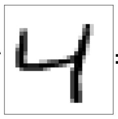</figure>
<figure class="bookfig">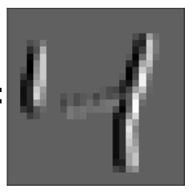</figure>
<h2>1 * =</h2>
<p>-1 -1 1</p>
<p>Hình 7.13 Một ví dụ về bộ phát hiện cạnh nhỏ được áp dụng cho chữ số 4 từ tập dữ liệu MNIST.</p>
<p>của bộ lọc cạnh chẳng hạn được mô tả bởi các hàm Gabor như những hàm được minh họa trong Hình 7.14A và B. Một hàm Gabor được mô tả bởi một hàm Gaussian điều biến hình sin,</p>
<p>2∗σ2 cos(2π f(u, v) = e−u2+γv2 λ u + φ). (7.43)</p>
<p>Ví dụ về một bộ lọc 642 điểm ảnh với các tham số γ = 0.5, σ = 10, λ = 32, và φ = π/2 được hiển thị trong Hình 7.14A. Bộ lọc này có thể được xoay bằng một ma trận xoay</p>
<p>x</p>
<p>cos(φ) sin(φ)</p>
<p></p>
<p>x</p>
<p></p>
<p>← (7.44)</p>
<p>−sin(φ) cos(φ)</p>
<p>y y như minh họa trong Hình 7.14B cho φ = π. Điều thú vị là những hàm như vậy mô tả một số nơ-ron trong vỏ não thị giác sơ cấp của linh trưởng. Do đó, việc phát hiện cạnh dường như là một bước đầu tiên tốt để xử lý hình ảnh, một thực tế mà chúng ta sẽ gặp lại trong phần thảo luận sau.</p>
<h3>A. Hàm Gabor với B. Phiên bản xoay của A</h3>
<p>Hình 7.14 Ví dụ về các hàm Gabor để phát hiện cạnh (A) dọc và (B) ngang.</p>
<p>7.3.3 CNN và MNIST</p>
<p>Ý tưởng thiết kế các bộ phát hiện đặc trưng bất biến vị trí trong mạng nơ-ron lần đầu tiên được mô tả bởi Fukushima vào năm 1980. Fukushima làm việc vào thời điểm đó cho NHK,</p>
<p>đài truyền hình công cộng Nhật Bản, cùng với các nhà sinh lý học vì NHK quan tâm đến việc tìm hiểu cơ chế thị giác của con người. Từ đầu những năm 1960, qua các thí nghiệm của Hubel và Wiesel, người ta đã biết rõ rằng một số nơ-ron trong vỏ não thị giác sơ cấp, giai đoạn đầu tiên của quá trình xử lý thị giác ở vỏ não, là các bộ phát hiện cạnh, và các bộ phát hiện đặc trưng như vậy phải được kết hợp theo cách sao cho việc nhận dạng đối tượng trở nên bất biến đối với vị trí trong không gian.</p>
<p>Các bộ phát hiện cạnh là công cụ chủ lực của thị giác máy tính truyền thống, và chúng ta đã thảo luận trong Chương 2 cách các bộ lọc như vậy được triển khai bằng phép tích chập. Các mạng nơ-ron mà chúng ta đã thảo luận trước đây phải học các trọng số riêng lẻ cho từng vị trí điểm ảnh. Ngay cả khi mạng này học được cách biểu diễn một bộ phát hiện cạnh, các bộ phát hiện riêng biệt vẫn phải được học cho từng vị trí trong hình ảnh vì các cạnh có thể xuất hiện ở mọi vị trí. Một cách khác để nghĩ về phép tích chập là một nơ-ron (bộ lọc cụ thể) được áp dụng cho mọi vị trí khả dĩ trong hình ảnh. Điều này dẫn chúng ta đến ý tưởng chia sẻ trọng số (weight sharing) và mạng nơ-ron tích chập (CNN).</p>
<p>Để thảo luận về việc triển khai loại mạng này với Keras, chúng ta quay lại ví dụ chuẩn MNIST. Ý tưởng cơ bản của một mạng tích chập là thay thế các kết nối dày đặc của các mạng thông thường, vốn được triển khai bằng phép nhân ma trận h = wx, bằng phép tích chập h = w ∗x. Vì vậy mạng có thể trông rất giống mạng được minh họa trong Hình 7.2. Mặc dù một mạng tích chập như vậy có ít tham số hơn nhiều so với một mạng dày đặc, việc triển khai phép tích chập và chạy nó một cách hiệu quả trên máy tính là một thách thức. Do đó, chúng ta cần sử dụng bộ xử lý đồ họa (GPU). GPU là các bộ xử lý chuyên dụng được thiết kế cho các phép toán ma trận hiệu quả, và những bộ xử lý này đã rất hữu ích trong học sâu. Đặc biệt, NVIDIA đã bổ sung hỗ trợ cụ thể cho các phép toán học sâu, và chính sự hỗ trợ cấp thấp hơn như vậy là thứ chúng ta dựa vào sau đây. Mặc dù có những khuôn khổ cụ thể thậm chí hỗ trợ trực tiếp việc lập trình với GPU, chẳng hạn như Tensorflow hoặc Theano, ở đây chúng ta chọn áp dụng Keras, bản thân nó sử dụng các backend như Tensorflow và Theano, cũng như các hỗ trợ khác trên GPU, để triển khai các phép toán chúng ta cần trong học sâu. Do đó, miễn là môi trường lập trình của bạn được thiết lập để tận dụng GPU, chúng ta có thể bỏ qua các chi tiết và làm việc ở cấp độ cao hơn với các kiến trúc hệ thống. Nếu bạn không có GPU thì tôi khuyên bạn nên chạy các ví dụ MNIST sau đây trên một tập huấn luyện nhỏ hơn.</p>
<p>Programs/MNISTcnn.py 1 import numpy as np 2 import m a t p l o t l i b . pyplot as p l t 3 from keras import models , l a y e r s , optimizers , d a t a s e t s , u t i l s , l o s s e s 4 5 ( x t r a i n , y t r a i n ) , ( x t e s t , y t e s t ) = d a t a s e t s . mnist . l o a d d a t a ( ) 6 p r i n t ( np . shape ( x t r a i n ) ) 7 p l t . matshow(255−x t r a i n [ 5 , : , : ] , cmap= ’ gray ’ ) 8 9 x t r a i n = x t r a i n . reshape (60000 , 28 , 28 , 1)/255 10 x t r a i n = x t r a i n [ : 1 0 2 4 , : , : , : ] 11 x t e s t = x t e s t . reshape (10000 , 28 , 28 , 1)/255 12 y t r a i n = u t i l s . t o c a t e g o r i c a l ( y t r a i n [ : 1 0 2 4 ] , 10) 13 y t e s t = u t i l s . t o c a t e g o r i c a l ( y t e s t , 10) 14 15 i n p u t s = l a y e r s . Input ( shape =(28 , 28 , 1 , ) ) 16 x= l a y e r s . Conv2D (32 , k e r n e l s i z e =(3 , 3) , a c t i v a t i o n = ’ r e l u ’ ) ( i n p u t s )</p>
<p>17 x= l a y e r s . Conv2D (64 , (3 , 3) , a c t i v a t i o n = ’ r e l u ’ ) ( x ) 18 x= l a y e r s . MaxPooling2D ( p o o l s i z e =(2 , 2 ) ) ( x ) 19 x= l a y e r s . Dropout ( 0 . 2 5 ) ( x ) 20 x= l a y e r s . F l a t t e n ( ) ( x ) 21 x= l a y e r s . Dense (128 , a c t i v a t i o n = ’ r e l u ’ ) ( x ) 22 x= l a y e r s . Dropout ( 0 . 5 ) ( x ) 23 o u t p u t s = l a y e r s . Dense (10 , a c t i v a t i o n = ’ softmax ’ ) ( x ) 24 25 model = models . Model ( i n p u t s = inputs , o u t p u t s = o u t p u t s ) 26 27 model . compile ( l o s s = l o s s e s . c a t e g o r i c a l c r o s s e n t r o p y , 28 o p t i m i z e r = o p t i m i z e r s . Adadelta ( ) , 29 m e t r i c s =[ ’ accuracy ’ ] ) 30 31 model . f i t ( x t r a i n , y t r a i n , 32 b a t c h s i z e =128 , 33 epochs =2 , 34 verbose =1 , 35 v a l i d a t i o n d a t a =( x t e s t , y t e s t ) ) 36 score = model . e v a l u a t e ( x t e s t , y t e s t , verbose =0) 37 p r i n t ( ’ Test l o s s : ’ , score [ 0 ] ) 38 p r i n t ( ’ Test accuracy : ’ , score [ 1 ] )</p>
<p>Chương trình Keras để áp dụng CNN cho dữ liệu MNIST được đưa ra trong MNISTcnn.py. Chương trình bắt đầu bằng việc liên kết các thư viện cần thiết và đọc dữ liệu như chúng ta đã làm trước đây cho mạng dày đặc (MLP). Điểm khác biệt duy nhất là giờ đây chúng ta định hình lại dữ liệu đầu vào thành mảng hai chiều thay vì vectơ đặc trưng một chiều cho mỗi ví dụ. Thực ra, dữ liệu đã ở dạng 28×28 cho mỗi mẫu, nhưng vì Keras kỳ vọng số lượng kênh nên chúng ta vẫn phải định hình lại nó thành dạng 28 × 28 × 1. Mô hình sau đó được định nghĩa bằng các hàm Keras cho các tầng tích chập. Mô hình bắt đầu với một tầng tích chập tạo ra các hình ảnh đã lọc với 32 kênh trong đó mỗi kênh là kết quả của việc lọc bằng một bộ lọc riêng biệt. Kích thước của bộ lọc được chỉ định bằng tham số kernel size. Chúng ta đã sử dụng các hàm kích hoạt tuyến tính chỉnh lưu (relu) vốn phổ biến cho các mạng sâu. Sau đó chúng ta thêm một tầng tích chập khác. Vì kích thước đầu ra được xác định bởi tầng trước đó nên chúng ta không cần phải đưa vào kích thước đầu vào. Ở tầng này chúng ta mở rộng biểu diễn lên 64 kênh.</p>
<p>Tầng tiếp theo là một loại tầng mới được tạo ra bởi một loại hạt nhân cố định định nghĩa một phép toán được gọi là gộp cực đại (max pooling). Gộp cực đại lấy một mảng con các điểm ảnh liên tiếp, trong trường hợp này có kích thước gộp là (2,2), và thay thế nó bằng một điểm ảnh có giá trị lớn nhất của mảng con này. Điều này sẽ thu nhỏ kích thước hình ảnh, trong ví dụ này là giảm đi 1/2 theo mỗi chiều. Việc thu nhỏ hình ảnh rất quan trọng vì cuối cùng chúng ta muốn thoát khỏi các chi tiết của một bức ảnh để hướng tới mô tả cấp cao hơn (ngữ nghĩa) của đầu vào. Việc thay thế một mảng con hình ảnh chỉ bằng giá trị cực đại của các điểm ảnh dường như là một cách làm khá quyết liệt, và một số đề xuất khác đã được đưa ra. Chẳng hạn, chúng ta có thể lấy giá trị trung bình của các điểm ảnh. Phép gộp trung bình như vậy trong thực tế không khác biệt nhiều so với phép gộp cực đại. Để giảm kích thước tín hiệu, chúng ta cũng có thể dịch chuyển bộ lọc nhiều hơn một điểm ảnh mỗi lần nó được áp dụng. Số điểm ảnh mà bộ lọc được di chuyển mỗi lần trong phép toán tích chập được gọi là bước nhảy (stride). Nhiều kỹ thuật tiên tiến hơn nhiều đã được đề xuất, chẳng hạn như mạng viên nang (capsule networks), nhưng điều này vượt quá phạm vi thảo luận của chúng ta tại thời điểm này.</p>
<p>Tầng tiếp theo chúng ta thêm vào là một tầng dropout. Đây thực sự không phải là một tầng mới mà là một bước hậu xử lý của tầng hiện tại nhằm tắt ngẫu nhiên một số nút. Xác suất một nơ-ron bị tắt được đặt là 25% trong ví dụ của chúng ta. Dropout là một kỹ thuật phổ biến để ngăn ngừa quá khớp. Quá khớp trong mạng nơ-ron có thể xảy ra khi các nơ-ron riêng lẻ trở nên rất nhạy cảm với các ví dụ huấn luyện cụ thể, và việc tắt ngẫu nhiên các nơ-ron trong quá trình huấn luyện buộc phải có một biểu diễn phân tán hơn. Điều này có thể được xem như một dạng tăng cường dữ liệu vì tầng tiếp theo phải học các phiên bản nhiễu của các mẫu và do đó không thể chuyên biệt hóa vào các đặc trưng sắc nét đơn lẻ. Dropout chỉ được bật trong quá trình huấn luyện vì chúng ta muốn tất cả các nơ-ron hoạt động trong quá trình truy hồi dự đoán. Vì dropout ảnh hưởng đến độ chính xác huấn luyện nên có thể độ chính xác huấn luyện sẽ thấp hơn độ chính xác trên tập kiểm tra.</p>
<p>Cuối cùng, chúng ta đưa biểu diễn mới này của hình ảnh vào một mạng phân loại, bản thân nó là một MLP. Hàm layers.Flatten() làm phẳng các đặc trưng thành một vectơ một chiều làm đầu vào cho MLP. Phần còn lại của mã nguồn chỉ định việc huấn luyện mạng này và đánh giá nó tương tự như các ví dụ trước của chúng ta.</p>
<p>CNN cải thiện khả năng nhận dạng MNIST hơn nữa và hiện nay đã đạt đến mức có thể nhận dạng hầu hết các ví dụ trong tập kiểm tra. Việc chạy mạng này trong một khoảng thời gian hợp lý đòi hỏi phải có GPU, nhưng rất dễ đạt được độ chính xác trên 99%. Thật vậy, chúng ta đang tiến đến điểm mà một vài sai sót của mạng thậm chí có thể bị đặt dấu hỏi xem có phải là sai sót thực sự hay không. Ví dụ, một biến thể thú vị của các mạng như vậy đã được nghiên cứu bởi phòng thí nghiệm của Jürgen Schmidhuber sử dụng thiết kế với nhiều luồng CNN song song giống với một phương pháp tập hợp tương tự như rừng phân loại đã thảo luận trong Chương 3. Họ đã chỉ ra rằng một mạng như vậy có thể nhận dạng tất cả trừ 32 ví dụ. Những ví dụ này được hiển thị trong Hình 7.15 cùng với nhãn ‘đúng’ của chúng ở góc trên bên phải và lựa chọn thứ nhất và thứ hai do mạng tạo ra ở dưới cùng của mỗi hình ảnh. Tôi để độc giả tự đánh giá xem những nhãn này có hợp lý hay không.</p>
<figure class="bookfig">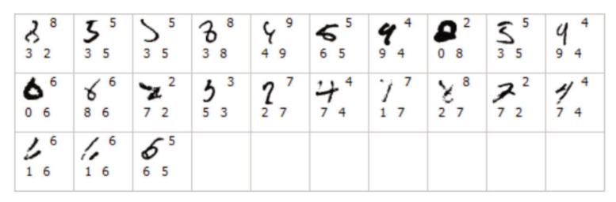</figure>
<p>Hình 7.15 Các ví dụ trong tập kiểm tra MNIST bị phân loại sai trong các mạng [từ Dan Ciresan, Ueli Meier, và Jürgen Schmidhuber, Multi-column Deep Neural Networks for Image Classification: Technical Report Number IDSIA-04-12, tr. 4, Hình 2b, © Các tác giả, 2012].</p>
<p>7.4 Diễn giải xác suất của MLP</p>
<p>Trọng tâm của các phần trên trong chương này là sự hiện thực hóa quan trọng của các mạng nơ-ron truyền thẳng với tư cách là bộ xấp xỉ hàm và bộ phân loại. Trong phần này, chúng ta sẽ đi sâu hơn vào việc lồng ghép chúng trong một diễn giải xác suất, điều rất quan trọng trong bối cảnh một lý thuyết não bộ nhấn mạnh mô hình cho một thế giới bất định.</p>
<p>7.4.1 Hồi quy xác suất</p>
<p>Trước đây chúng ta đã nhấn mạnh rằng một MLP có thể được xem như một bộ xấp xỉ hàm vạn năng. Chúng ta cũng đã sử dụng chúng, cùng với các họ hàng tích chập của chúng, như một bộ phân loại. Bây giờ chúng ta sẽ thảo luận về cách diễn giải hữu ích của chúng trong hồi quy và phân loại xác suất. Điều này không chỉ liên quan đến việc hiểu sâu hơn các mô hình như vậy, mà còn cho sự hiểu biết của chúng ta về vai trò của quá trình xử lý não bộ. Thách thức trong việc mô hình hóa thế giới là tính đến sự bất định, và việc mô tả các mô hình như vậy theo sự bất định hoặc xác suất do đó có giá trị nếu không muốn nói là thiết yếu.</p>
<p>Hãy minh họa vấn đề bằng một bài toán hồi quy tuyến tính trong đó dữ liệu phân bố chuẩn xung quanh một hàm tuyến tính y = wx như minh họa trong Hình 7.16. Chính xác hơn, xác suất một điểm dữ liệu có giá trị y khi biết giá trị đặc trưng x là p(y|x; w) = N(wx, 1) (7.45)</p>
<p>= 1 √</p>
<p>2π exp (−1 2(y −wx)2). (7.46)</p>
<p>Hàm này xác định hợp lý (likelihood - xác suất) của các giá trị đối với y, khi biết đầu vào x và mô hình với tham số w. Mặc dù ở đây chúng ta minh họa điều này bằng hàm một chiều đơn giản này, nguyên lý tổng quát có thể được tổng quát hóa ngay lập tức cho các hàm phi tuyến nhiều chiều như những hàm được thực hiện bởi MLP. Việc đặc tả một mô hình bằng hàm mật độ là một bước quan trọng trong mô hình hóa và học máy hiện đại. Theo lối tư duy này, chúng ta coi dữ liệu ngay từ đầu về cơ bản là ngẫu nhiên. Nghĩa là, dữ liệu có thể khác nhau ngay cả trong những tình huống mà chúng ta có các đầu vào giống hệt nhau.</p>
<p># A.</p>
<p>80 B.</p>
<p>100</p>
<p>80</p>
<p>60</p>
<h3>Khoảng cách</h3>
<p>60</p>
<p>40</p>
<p>40</p>
<p>20</p>
<p>20</p>
<p>1 2 3 4 0</p>
<p>−10 0 10 0</p>
<h3>Thời gian</h3>
<h3>Dữ liệu-Giả thuyết</h3>
<p>Hình 7.16 (A) Khoảng cách di chuyển của một robot nhỏ đi tới đi lui trước một bức tường và đo khoảng cách bằng cảm biến siêu âm. (B) Phân bố các điểm dữ liệu xung quanh đường hồi quy màu đỏ trong (A).</p>
<p>Câu hỏi về việc học lúc này là làm thế nào để xác định các tham số của mô hình từ dữ liệu mẫu. Trong khuôn khổ xác suất, chúng ta tìm kiếm các tham số làm cho dữ liệu mẫu trở nên hợp lý nhất dưới mô hình. Nguyên lý hợp lý cực đại (maximum likelihood principle) này được thực hiện bằng cách xem xét mỗi điểm huấn luyện đã cho có khả năng xảy ra đến mức nào. Nếu các mẫu huấn luyện độc lập với nhau, thì xác suất gặp tất cả m giá trị là tích xác suất của từng điểm dữ liệu, p(y(1), y(2), ..., y(m)|x(1), x(2), ..., x(m); w) = Πm i p(y(i)|x(i); w). (7.47)</p>
<p>Việc thay các giá trị của điểm dữ liệu đã cho vào sẽ tạo ra một hàm của các tham số. Hàm này được gọi là hàm hợp lý (likelihood function)</p>
<h3>L(w) = Πm</h3>
<p>i p(w; y(i), x(i)). (7.48)</p>
<p>Vì hàm này không phải là một hàm mật độ xác suất, chúng ta đã thay ký hiệu vạch đứng ‘|’ bằng dấu chấm phẩy ‘;’. Thay vì tính toán tích lớn này, người ta thường sử dụng logarit của hàm hợp lý, để chúng ta có thể dùng tổng trên các ví dụ huấn luyện, m X log(p(w; y(i), x(i))). (7.49)</p>
<p>l(w) = log L(w) = i</p>
<p>Hàm logarit tăng đơn điệu. Do đó, cực đại của L cũng là cực đại của l. Hợp lý (log-) cực đại do đó có thể được tính từ dữ liệu huấn luyện là wMLE = argmaxwl(w; x(1), y(1)..., x(m), y(m)). (7.50)</p>
<p>Trong trường hợp ví dụ Gaussian ở trên, điều này được cho bởi</p>
<p>−(y(i) −wx(i))2</p>
<p>2π exp</p>
<p></p>
<p>1 √ l(w) = log Πm (7.51)</p>
<p>i=1</p>
<p>2</p>
<p>2π −(y(i) −wx(i))2 m X</p>
<p></p>
<p>log 1 √</p>
<p>= (7.52)</p>
<p>2 i=1 (y(i) −wx(i))2 m X</p>
<p>= −m</p>
<p>2 log 2π −</p>
<p>2 . (7.53)</p>
<p>i=1</p>
<p>Ở đây bạn có thể thấy tại sao logarit là một lựa chọn tốt vì chúng ta có thể xét một tổng thay vì phải có một tích dài các số có khả năng rất nhỏ. Vì số hạng đầu tiên trong biểu thức ở phương trình 7.53, −m</p>
<p>2 log 2π, độc lập với w, việc cực đại hóa hàm log-hợp lý tương đương với việc cực tiểu hóa (do dấu trừ) một số hạng lỗi bậc hai. Vì vậy, nói chung, với dữ liệu phân bố Gaussian xung quanh một hàm giả thuyết phi tuyến và có khả năng nhiều chiều h(x; w), việc cực đại hóa hợp lý của dữ liệu tương đương với việc cực tiểu hóa hàm lỗi bình phương trung bình tối thiểu (LMS).</p>
<h3>E = 1</h3>
<p>2(y −h(x; w))2. (7.54)</p>
<p>Vì vậy việc sử dụng LMS trong mạng nơ-ron có một số cơ sở xác suất quan trọng. Tuy nhiên, chúng ta cũng thấy rằng vẫn còn dư địa để tối ưu hóa các mô hình khi các giả định thống kê khác đi.</p>
<p>7.4.2 Phân loại xác suất</p>
<p>Theo cách tương tự, chúng ta có thể xem xét phân loại dưới dạng hồi quy logistic xác suất. Trong phân loại, các đặc trưng được ánh xạ tới một số lượng hữu hạn các hạng mục khả dĩ, và ví dụ đơn giản nhất cho điều này là phân loại nhị phân. Một phiên bản xác suất của điều này là mô hình Bernoulli trong đó một số ngẫu nhiên nhận giá trị y = 1 với xác suất ϕ, và giá trị y = 0 với xác suất 1−ϕ. Hãy xem xét trường hợp phân loại khi tham số ϕ phụ thuộc vào một thuộc tính theo cách phi tuyến chẳng hạn như p(y) = ϕ(x; w)y1 −ϕ(x; w)1−y. (7.55)</p>
<h3>Hàm log-hợp lý tương ứng là entropy chéo (cross-entropy)</h3>
<p>m X y(i) log(ϕ(x; w)) + (1 −y(i)) log(1 −ϕ(x; w)). (7.56)</p>
<p>l(w) = i=1</p>
<p>Để tìm cực đại tương ứng, chúng ta có thể sử dụng thuật toán leo gradient (gradient ascent), w ←w + α∇wl(w). (7.57)</p>
<p>Để tính gradient, chúng ta có thể tính đạo hàm riêng của hàm log-hợp lý theo từng tham số,</p>
<p>∂ϕ(w)</p>
<p></p>
<p>∂l(w)</p>
<p>y 1 ϕ −(1 −y) 1 1 −ϕ</p>
<p>= (7.58)</p>
<p>∂wj</p>
<p>∂wj trong đó chúng ta đã lược bỏ các chỉ số để dễ đọc hơn.</p>
<p>Hãy áp dụng điều này cho hồi quy logistic. Một ví dụ gồm 100 điểm mẫu của hai lớp (dấu chéo và dấu sao) được hiển thị trong Hình 7.17. Dữ liệu gợi ý rằng khả năng cao hơn nhiều lớp là y = 0 đối với các giá trị x nhỏ và lớp là y = 1 đối với các giá trị x lớn, và các xác suất tương đồng hơn ở khoảng giữa. Do đó, chúng ta đưa ra giả thuyết rằng sự chuyển tiếp giữa vùng xác suất thấp và cao là trơn và xác định giả thuyết này dưới dạng một hàm mật độ được tham số hóa gọi là hàm logistic hay hàm sigmoid ϕ(x; w) = 1 1 + exp(−wT x). (7.59)</p>
<p>Như trước đây, chúng ta có thể coi hàm mật độ này là hàm của các tham số w đối với các giá trị dữ liệu đã cho (hàm hợp lý), và sử dụng ước lượng hợp lý cực đại để ước lượng các giá trị cho các tham số sao cho dữ liệu là hợp lý nhất. Hàm mật độ với độ dịch sigmoid w0 = 2 và độ dốc w1 = 4 được vẽ thành đường nét liền trong Hình 7.17.</p>
<p>Bây giờ chúng ta có thể tính đạo hàm của hàm giả thuyết ϕ theo các tham số cho lựa chọn cụ thể là các hàm logistic. Điều này được cho bởi</p>
<p>∂ϕ ∂w = ∂</p>
<p>1 1 + e−wx (7.60)</p>
<p>∂w</p>
<p>= 1 (1 + e−wx)2 e−wx(−x) (7.61)</p>
<p>1</p>
<p>0.8</p>
<p>0.6 y</p>
<p>0.4</p>
<p>0.2</p>
<p>−1 −0.5 0 0.5 1 1.5 2 0 x</p>
<p>Hình 7.17 Các số ngẫu nhiên nhị phân (dấu sao) được rút ra từ mật độ p(y = 1) = 1 1+exp(−w1x−w0) (đường nét liền).</p>
<p>= 1 (1 + e−wx)(1 − 1 (1 + e−wx))(−x) (7.62)</p>
<p>= −ϕ(1 −ϕ)x (7.63)</p>
<p>Sử dụng kết quả này trong phương trình 7.58 và thay vào phương trình 7.57 với đồng nhất thức</p>
<p></p>
<p>y 1 ϕ −(1 −y) 1 1 −ϕ ϕ(1 −ϕ) = y(1 −ϕ) −(1 −y)ϕ (7.64)</p>
<p>= y −yϕ −ϕ + yϕ (7.65) = y −ϕ (7.66)</p>
<p>cho ra quy tắc học y(i) −f(x(i); w)</p>
<p></p>
<p>x(i)</p>
<p>wj ←wj + α j (7.67)</p>
<p>Điều này tương đương với quy tắc học perceptron mà chúng ta đã thảo luận trước đây. Phép suy diễn của chúng ta cho thấy rằng quy tắc học này liên quan đến các giả định của một mô hình xác suất.</p>
<p>7.4.3 Cực đại hậu nghiệm (MAP) và chính quy hóa với phân bố tiên nghiệm</p>
<p>Trước khi chuyển sang các mô hình đa biến phức tạp hơn, đây là cơ hội tốt để thảo luận về chính quy hóa dưới dạng suy giảm trọng số (weight decay) trong một khuôn khổ xác suất (Bayes). Ước lượng hợp lý cực đại là công cụ chủ lực của học có giám sát xác suất, mặc dù việc đặt điều này vào một bối cảnh rộng hơn nữa của mô hình hóa xác suất là rất hữu ích. Theo nghĩa xác suất, việc chọn các giá trị tham số khi biết dữ liệu nên dựa trên một mô hình của chính các tham số đó, p(w|x, y). (7.68)</p>
<p>Hãy giả sử chúng ta có thể biết phân bố có điều kiện này. Ví dụ, hãy giả sử nó trông giống như ví dụ một chiều được hiển thị trong Hình 7.18. Nếu chúng ta biết phân bố này, chúng ta có thể chọn một giá trị tham số mà mình thích. Chẳng hạn, chúng ta có thể chọn giá trị w1, là giá trị có xác suất cao nhất khi biết dữ liệu cụ thể. Điều này được gọi là cực đại hậu nghiệm (maximum a posteriori - MAP)</p>
<p>wMAP = argmaxwp(w|x, y). (7.69)</p>
<h3>P(w|x,y)</h3>
<p>w w w 1 2</p>
<p>Hình 7.18 Ví dụ về một phân bố xác suất khả dĩ của tham số w khi biết một số dữ liệu.</p>
<p>Khó khăn chính với MAP hoặc việc sử dụng một quy trình khác dựa trên phân bố p(w|x, y) là chúng ta thường không biết trước (a priori) phân bố này. Thay vào đó, cách tiếp cận của chúng ta là phát biểu một mô hình xác suất dưới dạng một hàm mật độ được tham số hóa như p(y|x; w). (7.70)</p>
<p>Bây giờ chúng ta sẽ thảo luận mối liên hệ của các hàm mật độ này. Để bắt đầu, trong mô hình xác suất của phương trình 7.70, chúng ta giả sử rằng dữ liệu đặc trưng được cho sẵn một cách kỳ diệu, nhưng chúng ta cũng có thể xem xét cách chúng ta chọn các giá trị dữ liệu theo kiểu ngẫu nhiên hóa để có thể xét lại trường hợp tổng quát hơn p(y, x|w) = p(y|x; w)p(x|w). (7.71)</p>
<p>Một lần nữa, nếu chúng ta chọn dữ liệu huấn luyện một cách đồng đều, sao cho phân bố biên trên các đặc trưng chỉ là một hằng số, thì p(y, x|w) ∝p(y|x; w). (7.72)</p>
<p>Tiếp theo, chúng ta có thể sử dụng định lý Bayes để liên hệ hậu nghiệm p(w|x, y) với mô hình dữ liệu, cụ thể là p(w|x, y) = p(y, x|w)p(w) R w′∈W p(x, y|w′)p(w′)dw′ , (7.73)</p>
<p>trong đó W là miền các giá trị tham số khả dĩ.</p>
<p>Biểu thức này có thể được sử dụng để ước lượng các giá trị hợp lý nhất cho các tham số. Để làm điều này, chúng ta nên chú ý rằng mẫu số, vốn được gọi là hàm phân hoạch (partition function), không phụ thuộc vào các tham số w vì chúng ta đang lấy tích phân (tính tổng) trên tất cả các giá trị khả dĩ. Do đó, các giá trị hợp lý nhất cho các tham số có thể được tính mà không cần số hạng này và được cho bởi ước lượng cực đại hậu nghiệm (MAP), wMAP = argmaxwp(x, y|w)p(w). (7.74)</p>
<p>Tên gọi của phương pháp xuất phát từ thực tế là chúng ta điều chỉnh kiến thức tiên nghiệm của mình về các tham số, được tóm tắt dưới dạng phân bố tiên nghiệm p(w) bằng cách kết hợp nó với các phép đo (x, y) từ các hiện thực hóa cụ thể của các tham số, được cho bởi hàm hợp lý p(x, y|w). Phân bố hậu nghiệm kết quả khi đó sẽ là một ước lượng tốt hơn về xác suất các giá trị cho các tham số. Hàm argmaxx(f(x)) chọn đối số x mà tại đó hàm f(x) đạt cực đại. Đối số của hàm là tập hợp các tham số mà theo nghĩa Bayes, là giá trị hợp lý nhất cho các tham số, trong đó, tất nhiên, giờ đây chúng ta coi hàm xác suất như một hàm của các tham số (ví dụ, một hàm hợp lý). Đối với phân bố tiên nghiệm đều, p(w) = const, ta thu được wMAP = wMLE. (7.75)</p>
<h3>Laplace</h3>
<h3>Đều: MAP = MLE</h3>
<p>2</p>
<h3>Gauss: MAP = MLE + L</h3>
<h3>Gauss</h3>
<p>1</p>
<h3>Đều</h3>
<h3>Laplace : MAP = MLE + L</h3>
<p>Hình 7.19 Ba phân bố thường được sử dụng làm phân bố tiên nghiệm cho các tham số khi học cùng với ước lượng hợp lý cực đại.</p>
<p>Mặc dù phân bố tiên nghiệm đều của các tham số là một lựa chọn đầu tiên dễ dàng, chúng ta có thể nghĩ đến các phân bố tiên nghiệm khác. Ví dụ, hãy giả sử rằng giá trị của các tham số nên có khả năng nhỏ hơn là lớn. Cụ thể hơn, hãy giả sử chúng ta nghĩ rằng chúng nên phân bố chuẩn xung quanh 0. Khi đó chúng ta có thể viết ước lượng MAP (phương trình 7.74) là wMAP = argmaxwp(x, y|w)N(0, σ2) . (7.76)</p>
<p>Như thường lệ, thay vào đó chúng ta cực đại hóa logarit của các hàm hợp lý tương ứng, điều này dẫn đến wMAP = argmaxw log(p(x, y|w)) + α||w||2, (7.77)</p>
<p>với α = log 1 2σ2 . (7.78)</p>
<p>Đây cũng được gọi là chính quy hóa L2, thứ do đó tương ứng với một phân bố tiên nghiệm Gaussian trên các trọng số. Tương tự, chính quy hóa L1 tương ứng với phân bố tiên nghiệm của một phân bố Laplace đẳng hướng</p>
<p>2 b exp</p>
<p>−|w|</p>
<p>p(w) = 1 , (7.79)</p>
<p>b thứ nhọn hơn về phía 0 như có thể thấy qua việc so sánh các phân bố này trong Hình 7.19. Do đó chính quy hóa L1 ép nhiều trọng số về 0 hơn so với chính quy hóa L2. Đây là một ví dụ khác cho thấy cách một diễn giải xác suất làm sáng tỏ các kỹ thuật vốn ban đầu được giới thiệu mang tính kinh nghiệm (heuristic) nhiều hơn. Một bảng tóm tắt đơn giản về ba phân bố tiên nghiệm và sự tương đương kết quả giữa MLE và MAP được hiển thị ở bảng bên phải của hình.</p>
<p>Cuối cùng, mặc dù chúng ta đã thảo luận các đại lượng phổ biến là MAP và MLE trong học máy, điều tốt là cần nhận ra rằng cả hai phương pháp học này chỉ cho chúng ta một ước lượng điểm (point estimate), một câu trả lời duy nhất cho các giá trị hợp lý nhất của các tham số khi biết một tập dữ liệu cụ thể mà từ đó hợp lý này phải được ước lượng. Một ước lượng điểm thường được sử dụng để đưa ra quyết định nên thực hiện hành động nào. Tuy nhiên, có khả năng các tập hợp giá trị tham số khác chỉ có giá trị hợp lý nhỏ hơn một chút, và tình huống có thể nhanh chóng thay đổi với thêm một vài điểm dữ liệu. Do đó sẽ thận trọng hơn nhiều nếu xem xét cả các giá trị khác. Ví dụ, nhìn lại ví dụ trong Hình 7.18, một chiến lược khác có thể là chọn một giá trị trọng số trong một phạm vi mà các biến thiên trong giá trị này sẽ không làm thay đổi đáng kể xác suất trong một khoảng nào đó, chẳng hạn như các giá trị xung quanh w2.</p>
<p>Hơn nữa, theo nghĩa Bayes, tất cả các lựa chọn khác nên được tính đến cùng với hợp lý tương ứng của chúng. Điều này đặc biệt đúng khi ước lượng độ tin cậy của chúng ta cho một ước lượng. Theo nghĩa Bayes, chúng ta cần kết hợp tất cả các ước lượng khả dĩ với hợp lý của chúng. Do đó, một hạn chế của các phương pháp ước lượng cực đại đã thảo luận trước đó, vốn đang thống trị phần lớn các thực hành hiện nay trong các ứng dụng học máy, là chúng không tính đến phân bố của các câu trả lời. Một số người do đó phân biệt học máy với lập trình xác suất (probabilistic programming) tiên tiến hơn. Mặc dù các kỹ thuật mô hình hóa xác suất tiên tiến như vậy có thể cho chúng ta câu trả lời cho những câu hỏi sâu sắc hơn nhiều, các phương pháp học máy được thảo luận trong cuốn sách này với các ước lượng điểm thường dễ áp dụng hơn cho các bài toán nhiều chiều.</p>
<p>7.4.4 Mạng ánh xạ với các đơn vị ngữ cảnh</p>
<p>Việc nghiên cứu các khả năng nhận thức của con người cho thấy hành vi của chúng ta, ví dụ như việc thực hiện các hành động vận động cụ thể, thường phụ thuộc vào ngữ cảnh mà chúng ta gặp phải một tình huống nhất định. Chẳng hạn, chúng ta có thể gặp một tình huống tương đương vào hai ngày liên tiếp, chẳng hạn như nhìn thấy một người trước một ngôi nhà dường như đang quan sát tòa nhà một cách khá chi tiết. Vào ngày đầu tiên, chúng ta có thể chỉ nghĩ rằng người này quan tâm đến kiến trúc và có lẽ sẽ tiếp tục đi mà không có hành động gì thêm đối với cuộc chạm trán này. Vào buổi sáng ngày thứ hai, chúng ta có thể đọc trên báo về sự gia tăng các vụ trộm trong khu vực, và việc nhìn thấy người của ngày hôm trước lại đang quan sát một ngôi nhà rất có thể sẽ thúc đẩy chúng ta hỏi thăm về ý định của anh ta hoặc cô ta.</p>
<p>Một kiến trúc đơn giản chứng minh một số hình thức xử lý theo ngữ cảnh đã được Jeffrey Elman đề xuất và đôi khi được gọi là mạng Elman (Elman-net). Một ví dụ được phác thảo trong Hình 7.20, minh họa một mạng ánh xạ với bốn nút đầu vào, ba nút ẩn và bốn nút đầu ra. Ngoài các thành phần ánh xạ truyền thẳng tiêu chuẩn, mạng còn có các nút ngữ cảnh (context nodes). Ba nút ngữ cảnh được hiển thị trong hình chứa kích hoạt của các nút ẩn ở bước thời gian trước đó. Hơn nữa, các kích hoạt của các đơn vị ngữ cảnh được đưa ngược trở lại vào hệ thống như các đầu vào nội bộ (thay vì đầu vào bên ngoài) cho bước thời gian tiếp theo. Kiến trúc này do đó bao gồm một lớp các đường chiếu mới đưa vào các tế bào mà đến lượt mình có thể ảnh hưởng đến nút gửi ở một thời điểm sau đó. Do đó mạng được gọi là mạng hồi quy (recurrent). Loại đường chiếu ngược vật lý này không nên bị nhầm lẫn với luồng thông tin được sử dụng trong quá trình huấn luyện mạng, chẳng hạn như trong thuật toán lan truyền ngược lỗi đã thảo luận ở trên.</p>
<p>Mạng trong Hình 7.20 chỉ là một ví dụ về lớp mạng này, trong đó chúng ta đã đưa vào các nút ngữ cảnh nhận đầu vào từ các nút ẩn. Chúng ta cũng có thể đưa vào các đơn vị ngữ cảnh nhận đầu vào trực tiếp từ các nút đầu ra hoặc đầu vào. Loại sau ghi nhớ đầu vào của bước thời gian trước đó, và một cơ chế như vậy thường được gọi là</p>
<h3>Các nút đầu vào Các nút ngữ cảnh</h3>
<p>Hình 7.20 Các mạng ánh xạ hồi quy như đề xuất bởi Jeffrey Elman bao gồm một mạng ánh xạ truyền thẳng tiêu chuẩn với bốn nút đầu vào, ba nút ẩn và bốn nút đầu ra. Tuy nhiên, mạng cũng nhận đầu vào nội bộ từ các nút ngữ cảnh là các bản sao ly tâm (efferent copies) của hoạt động các nút ẩn. Bản sao ly tâm đạt được thông qua các đường chiếu một-một cố định từ các nút ẩn đến các nút ngữ cảnh có thể được triển khai bằng các trọng số cố định với một độ trễ thời gian nào đó.</p>
<p>trí nhớ ngắn hạn. Chúng ta sẽ thảo luận các dạng trí nhớ ngắn hạn liên quan nhưng riêng biệt như được sử dụng trong tài liệu sinh lý học và tâm lý học trong Chương 9.</p>
<p>Các đơn vị ngữ cảnh trong ví dụ của Hình 7.20 được thiết kế để chứa hoạt động của các nút ẩn ở bước thời gian trước đó. Điều này về mặt hình thức có thể đạt được với các đơn vị tuyến tính và đặt các giá trị trọng số bằng một trong khi giả sử có một độ trễ nào đó trong các đường chiếu. Mạng hoạt động như sau. Đối với mỗi đầu vào của mạng, bao gồm đầu vào bên ngoài từ các nút đầu vào và từ các nút ngữ cảnh (vốn ghi nhớ các tốc độ phát xung trước đó của các nút ẩn), chúng ta tính toán kích hoạt của các nút ẩn và sau đó là kích hoạt của các nút đầu ra. Kích hoạt của các nút ẩn cũng được sao chép sang các nút ngữ cảnh. Tất cả những điều này có thể được coi là một bước thời gian cơ bản của mạng. Do đó, chúng ta có thể coi mạng tại mỗi bước thời gian như một mạng ánh xạ truyền thẳng tiêu chuẩn và do đó có thể sử dụng thuật toán lan truyền ngược đã thảo luận trước đây. Tuy nhiên, hàm của mạng giờ đây có động lực học thời gian nội tại ở chỗ có một đầu vào mới đến các nút ẩn ở bước thời gian tiếp theo (ngay cả với cùng đầu vào bên ngoài từ các nút đầu vào như ở bước thời gian trước). Để tính đến ngữ cảnh trong quá trình huấn luyện, chúng ta phải huấn luyện mạng trên toàn bộ các chuỗi đầu vào. Ưu điểm là mạng có thể tạo ra các chuỗi đầu ra, và do đó chúng ta có thể sử dụng những mô hình này trong một bối cảnh rộng hơn. Đặc biệt, các mạng này có thể học cách dự đoán đầu ra tiếp theo trong một chuỗi ký hiệu, và chúng chủ yếu được sử dụng trong bối cảnh này.</p>
<p>7.5 Bộ não dự đoán</p>
<p>Phần lớn chương này được dành để thảo luận về khả năng của perceptron đa tầng như những bộ xấp xỉ hàm và khả năng học biểu diễn phân cấp của chúng. Nhìn chung, những mạng như vậy có khả năng thực hiện các phép biến đổi phức tạp, điều rõ ràng là cần thiết cho quá trình xử lý thông tin tiên tiến. Tuy nhiên, mặc dù các nguyên lý xử lý thông tin của mạng nơ-ron là cực kỳ quan trọng, nó dường như không phải là cơ chế cần thiết duy nhất để hiện thực hóa tâm trí. Để kết thúc chương này, chúng ta đưa ý tưởng về ánh xạ nơ-ron và mạng biểu diễn đi xa hơn một chút với một kiến trúc dường như mô tả tốt hơn tổ chức và quá trình xử lý của não bộ.</p>
<p>Trọng tâm của lý thuyết não bộ mới nổi này là quan điểm coi não bộ như một hệ thống trí nhớ dự đoán (anticipating memory system) hay một mô hình sinh (generative model) của thế giới. Chúng ta cũng sẽ kết hợp một số nguyên lý xử lý dường như thiết yếu trong việc hiện thực hóa các chức năng nhận thức.</p>
<p>1. Não bộ có thể phát triển một mô hình của thế giới, thứ có thể được sử dụng để dự báo hoặc dự đoán môi trường. 2. Nghịch đảo của mô hình có thể được sử dụng để nhận dạng nguyên nhân bằng cách khơi gợi các khái niệm nội tại. 3. Các biểu diễn phân cấp là thiết yếu để nắm bắt sự phong phú của thế giới. 4. Các khái niệm nội tại được học thông qua việc đối khớp các giả thuyết của não bộ với đầu vào từ thế giới. 5. Một tác nhân có thể học chủ động bằng cách kiểm định giả thuyết thông qua các hành động. 6. Miền thời gian là một bậc tự do quan trọng. Phần còn lại của chương này là một cuộc thảo luận về giả thuyết bộ não dự đoán và các triển khai mô hình liên quan. Chúng ta bắt đầu với một cái nhìn tổng quan chung về bộ não dự đoán, điều này sẽ cho thấy rõ hơn cách các điểm trên liên quan với nhau. Sau đó chúng ta phác thảo một số mô hình cụ thể và thảo luận mối liên hệ của chúng với các phương pháp thống kê về ước lượng mật độ sinh.</p>
<p>7.5.1 Bộ não như một hệ thống dự đoán trong khuôn khổ xác suất</p>
<p>Để hình thức hóa luận điểm này, chúng ta cần giới thiệu một số ký hiệu giúp thảo luận các hệ thống một cách gọn nhẹ. Chúng ta bắt đầu bằng việc ký hiệu một trạng thái cảm giác bằng một vectơ s, trong đó các thành phần có thể là bất kỳ đại lượng liên quan nào, chẳng hạn như các xung hoặc tốc độ phát xung của các nơ-ron cảm giác sơ cấp. Ngoài ra, các trạng thái cảm giác này có thể mô tả bất kỳ loại cảm giác nào, bao gồm khứu giác, xúc giác, giác quan tiền đình, phản hồi cảm thụ bản thể (proprioceptive feedback) và thị giác. Các trạng thái cảm giác được gây ra bởi các quá trình vật lý trong môi trường, và chúng ta có thể hình thức hóa điều này bằng cách viết trạng thái cảm giác như một hàm của trạng thái nhân quả, c, s = g(c). (7.80)</p>
<p>Hàm g mô tả quá trình vật lý tạo ra đáp ứng cảm giác. Chúng ta có thể tinh chỉnh ký hiệu này hơn nữa bằng cách nhận ra rằng não bộ có thể đáp ứng bằng các mẫu thay đổi đối với các kích thích từ thế giới. Các lý do cho những đáp ứng khác nhau bao gồm nhiễu ở đâu đó trong hệ thống và/hoặc sự phụ thuộc của hệ thống vào các biến ẩn. Trong mọi trường hợp, việc xem xét xác suất mà một trạng thái cảm giác nhất định được khơi gợi bởi một trạng thái nhân quả đã cho là phù hợp, p(s|c). (7.81)</p>
<p>Điều này mô tả xác suất có điều kiện (hoặc mật độ xác suất có điều kiện) của việc có một trạng thái cảm giác khi biết một tập hợp các nguyên nhân cụ thể. Do đó, một trạng thái cảm giác, như được xét ở đây, có thể khác nhau đối với các lần trình bày giống hệt nhau của một cảnh cảm giác. Chỉ có xác suất tìm thấy một trạng thái cảm giác cụ thể là phụ thuộc vào điều kiện môi trường.</p>
<p>Mặc dù ở đây chúng ta ám chỉ đến các nguyên nhân vật lý của một trạng thái cảm giác cụ thể, ý tưởng cốt lõi là não bộ biểu diễn một mô hình của thế giới có thể biểu diễn các nguyên nhân một cách nội tại và do đó có khả năng tạo ra các trạng thái sinh tương ứng. Do đó đây là một mô hình sinh</p>
<h3>Mô hình não bộ sinh: p(s|c; θ). (7.82)</h3>
<p>Ở đây chúng ta đã sử dụng cùng ký hiệu c của các nguyên nhân mặc dù đây thực sự là các nguyên nhân được biểu diễn trong não bộ và do đó là một hàm của sự phát xung của các nơ-ron, c(r). Sự phân biệt giữa các nguyên nhân mô hình và các nguyên nhân thế giới thực có thể dễ dàng thực hiện từ khái niệm rằng hàm mật độ mô hình có các tham số θ. Trước khi chuyển sang phác thảo cách học các mô hình như vậy, chúng ta muốn dừng lại lâu hơn một chút ở cấp độ cao này để thảo luận bức tranh toàn cảnh.</p>
<p>Mặc dù có lẽ mọi người đều hiểu ở một mức độ nào đó từ ‘nguyên nhân’ có nghĩa là gì, nhưng thật thú vị khi nhận ra rằng có thể có những ý kiến khác nhau về các nguyên nhân được suy diễn bởi các tác nhân khác nhau. Ví dụ, hãy tưởng tượng đang ngồi trong một phòng hòa nhạc và nghe một bản giao hưởng. Nguyên nhân của trải nghiệm của chúng ta trong tình huống này là gì? Hay chính xác hơn, chúng ta nên định nghĩa nguyên nhân ở cấp độ nào? Liệu toàn bộ dàn nhạc có nên được coi là một nguyên nhân, hay một nhạc công riêng lẻ, hay nhạc cụ của cô ấy, hay thậm chí các bộ phận của nhạc cụ? Mặc dù việc suy ngẫm vấn đề này có vẻ hơi vụn vặt, việc giải quyết nó là trọng tâm của luận điểm của chúng ta và làm nổi bật hai chức năng quan trọng của quá trình xử lý não bộ. Thứ nhất, chúng ta đề xuất rằng một trong những mục tiêu chính của não bộ là học xem nguyên nhân là gì bằng cách hình thành các khái niệm nội tại. Thứ hai, não bộ phải học các khái niệm ở các mức độ trừu tượng khác nhau, từ một số biểu diễn cụ thể của các trạng thái cảm giác, chẳng hạn như các cạnh của đối tượng hoặc các đoạn âm thanh, đến các biểu diễn trừu tượng hơn chẳng hạn như việc đi xem hòa nhạc. Do đó, việc học các khái niệm và dự đoán nguyên nhân trong môi trường của chúng ta là trọng tâm của luận điểm được phát triển ở đây.</p>
<p>Khi xem xét việc học các khái niệm có thể giải thích các nguyên nhân, việc xem xét các hệ thống có thể khám phá môi trường một cách chủ động sẽ rất quan trọng. Ký hiệu của 7.81 sẽ chỉ phù hợp cho một người quan sát thụ động. Thay vào đó, chúng ta nên xem xét rõ ràng rằng vật mang não bộ, sau đây gọi là tác nhân (agent), có thể tương tác với môi trường. Chẳng hạn, tác nhân có thể hướng ánh nhìn đến các vị trí cụ thể trong không gian, hoặc tác nhân có thể chạm vào một đối tượng hoặc nhấc nó lên để kiểm định một giả thuyết nào đó về đối tượng hoặc môi trường. Chúng ta ký hiệu một hành động của tác nhân bằng vectơ a để cho phép các biểu diễn phân tán của đầu ra vận động. Do đó chúng ta xem xét xác suất của các trạng thái cảm giác, khi biết các nguyên nhân trong môi trường và các hành động cụ thể của tác nhân bằng cách viết:</p>
<p>p(s|c, a). (7.83)</p>
<p>Phỏng đoán trung tâm được theo đuổi lúc này là não bộ đang cố gắng đối khớp đầu vào cảm giác với các trạng thái được tạo ra nội tại. Các biểu diễn nội tại của trạng thái cảm giác trong vỏ não cảm giác sơ cấp được ký hiệu là s′. Mặc dù các trạng thái này phụ thuộc vào đầu vào từ môi trường, chúng cũng phụ thuộc vào các kỳ vọng từ các vùng vỏ não cao hơn. Cụ thể hơn, phân bố của các trạng thái cảm giác vỏ não, s′, phụ thuộc vào đầu vào sơ cấp từ môi trường, s, và một số trạng thái, c′, của các vùng vỏ não cao hơn:</p>
<p>p(s′|s, c′). (7.84)</p>
<p>Chúng ta gọi các biểu diễn vỏ não bậc cao hơn này là các khái niệm (concepts). Các khái niệm ở một mức độ biểu diễn vỏ não nhất định đến lượt mình lại phụ thuộc vào các khái niệm của các biểu diễn vỏ não bậc cao hơn nữa, c′′, c′′′, v.v., mà đến lượt chúng lại chịu ảnh hưởng bởi đầu vào từ các vùng vỏ não thấp hơn.</p>
<p>Ở mức độ trừu tượng, chúng ta xem não bộ như một mô hình sinh của thế giới, G, thứ có thể tạo ra các phân bố xác suất của các khái niệm ở các cấp độ khác nhau, cuối cùng tạo ra các kỳ vọng về trạng thái cảm giác:</p>
<p>p(s′; G). (7.85)</p>
<p>Nghịch đảo của mô hình có thể được xem như một mô hình nhận dạng (recognition model), Q, thứ khơi gợi các khái niệm nội tại từ các nguyên nhân trong môi trường. Mô hình thế giới, vốn được nhúng trong hệ thần kinh trung ương, được mổ xẻ theo cuộc thảo luận trên trong Hình 7.21 với một cấu trúc phân tầng bao gồm các kết nối hai chiều cần thiết. Các mô hình liên quan như vậy được gọi là mạng niềm tin sâu (deep belief networks); ‘mạng niềm tin’ vì khả năng tạo ra kỳ vọng của chúng, và ‘sâu’ vì kiến trúc phân tầng của chúng. Ở giai đoạn này không dễ để tách bạch rõ ràng mô hình sinh khỏi mô hình nhận dạng, vì toàn bộ hệ thống có tính tương tác cao, nhưng sự phân biệt giữa mô hình sinh và mô hình nhận dạng đôi khi có thể được làm rõ ràng, như sẽ thảo luận bên dưới.</p>
<h3>Tác nhân Môi trường</h3>
<figure class="bookfig">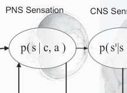</figure>
<h3>Cảm giác PNS</h3>
<h3>Cảm giác CNS</h3>
<h3>Nội tại</h3>
<p>) | c, a ( s p</p>
<p>) |s , c ( s p trạng thái ,c ) | ( s p c ) | ( a c p Ngoại tại c ,c ) | ( p c</p>
<figure class="bookfig">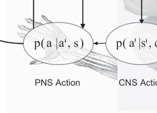</figure>
<figure class="bookfig">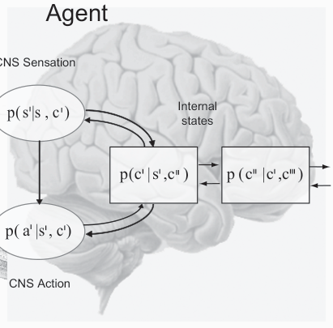</figure>
<p>trạng thái</p>
<p>) | ( a , s p a</p>
<p>) ( p a</p>
<p>|s , c</p>
<h3>Hành động PNS</h3>
<h3>Hành động CNS</h3>
<p>Hình 7.21 Minh họa một hệ thống tác nhân–môi trường với các ký hiệu xác suất mô tả các thành phần khác nhau của hệ thống. Minh họa bao gồm môi trường gây ra các trải nghiệm cảm giác của tác nhân. Giao diện giữa môi trường được minh họa là hệ thần kinh ngoại biên (PNS) với các thành phần cảm giác và hành động điển hình. Hệ thần kinh trung ương (CNS) là một hệ thống trí nhớ dự đoán với các biểu diễn phân tầng [mở rộng từ Friston, Philosophical Transactions of the Royal Society B 360, 815–36 (2005)].</p>
<p>Các khái niệm ở các mức độ biểu diễn vỏ não khác nhau phải được học theo cách tự giám sát (self-supervised) thông qua tương tác với môi trường và khắc sâu vào một hệ thống trí nhớ. Ví dụ, hệ thống thị giác sớm có thể học cách nhận dạng các chuỗi mẫu võng mạc khác nhau. Các chuỗi khái niệm này sau đó có thể được học bởi các vùng vỏ não bậc cao hơn. Đổi lại, các khái niệm bậc cao hơn được khơi gợi bởi đầu vào cảm giác cụ thể có thể ảnh hưởng đến các kỳ vọng về khái niệm ở các biểu diễn vỏ não thấp hơn, cuối cùng dự báo các mẫu đầu vào cảm giác cụ thể. Dưới đây chúng ta thảo luận một hệ thống cụ thể hơn cho thấy một số khả năng này.</p>
<p>Việc kiểm định xem mô hình thế giới tốt đến mức nào chỉ có thể đạt được thông qua các tương tác với môi trường. Điều này có thể được xem như việc kiểm định giả thuyết, hoặc suy diễn, của mô hình thế giới với dữ liệu môi trường. Chúng ta đã trình bày trạng thái của môi trường, p(c|a) như một đại lượng xác suất, điều không chỉ có nghĩa là các nguyên nhân có nhiễu, mà còn bao hàm việc các nguyên nhân đang thay đổi ngoài tầm kiểm soát của chúng ta. Xác suất có điều kiện trên các hành động do tác nhân tạo ra mô tả rằng các trạng thái thế giới có thể bị ảnh hưởng bởi các hành động do tác nhân tạo ra. Do đó, việc kiểm định giả thuyết của tác nhân hơi khác so với các kỹ thuật suy diễn phổ biến trong thống kê ở chỗ tác nhân dường như có thể tương tác chủ động với môi trường. Sự kích hoạt các khái niệm cụ thể có thể dẫn hướng các hành động cụ thể, mà đến lượt nó, có thể thao tác môi trường theo một cách cụ thể, mà đến lượt nó có thể dẫn hướng việc học sâu hơn. Chẳng hạn, khi huýt sáo với một đứa trẻ, ban đầu nó có thể nhận ra khuôn mặt ngộ nghĩnh và hình dạng khác thường của cái miệng. Đứa trẻ sau đó có thể hình thành giả thuyết rằng cái miệng có liên quan gì đó đến âm thanh huýt sáo và có thể chạm vào miệng để xác minh giả thuyết này. Việc học chủ động như vậy có thể là cần thiết để giảm bớt gánh nặng cho việc học trong các hệ thống lớn.</p>
<p>7.5.2 Nguyên lý năng lượng tự do biến phân</p>
<p>Một cách then chốt để phát biểu và hiện thực hóa những ý tưởng này là khái niệm năng lượng tự do biến phân (variational free energy) do Karl Friston đưa ra. Hiểu được thế giới có nghĩa là chúng ta biết nguyên nhân của một thông tin cảm giác đã cho là gì, tất nhiên là theo nghĩa xác suất,</p>
<h3>Nhận dạng thực (hậu nghiệm): p(c|s) = p(c, s)</h3>
<p>p(s) . (7.86)</p>
<p>Giờ đây, việc đo lường và mô hình hóa p(c, s) có thể không quá tệ vì chúng ta chỉ việc ghi lại thật nhiều kết hợp giữa nguyên nhân và trạng thái cảm giác, nhưng việc đánh giá tất cả các trạng thái cảm giác khả dĩ để tính phân bố biên p(s) thường là không khả thi về mặt tính toán. Để giải quyết vấn đề này, hãy giới thiệu một mô hình nhận dạng</p>
<h3>Mô hình nhận dạng: q = p(c|s; w) (7.87)</h3>
<p>với các tham số w. Mô hình này hữu ích nếu chúng ta cực tiểu hóa sự khác biệt giữa mô hình này và hậu nghiệm thực q∗= argminwKL(p(C|s; w).p(s|c)). (7.88)</p>
<p>Ở đây chúng ta đã sử dụng phân kỳ Kullback-Leibler cho thước đo sai khác như đã đề cập trong Chương 3.5.6, mặc dù các thước đo khác cũng có thể được sử dụng. Giờ đây, điều này chưa giúp ích cho chúng ta nhiều cho đến lúc này vì chúng ta không biết hậu nghiệm thực p(s|c). Tuy nhiên, chúng ta cũng có thể biến đổi phân kỳ KL bằng quy tắc Bayes,</p>
<h3>KL(q, p) = KL(q, p(s), c</h3>
<p>p(s) ) (7.89)</p>
<p>= KL(q, p(s, c)) + ln(p(s)) (7.90) ≤KL(q, p(s, c)) = F (7.91)</p>
<p>Dòng cuối cùng định nghĩa năng lượng tự do biến phân, thứ do đó là một cận trên của sự khác biệt giữa hậu nghiệm thực và hậu nghiệm mô hình. Việc cực tiểu hóa cận trên này sẽ</p>
<h3>Đầu vào Bộ ước lượng dự đoán</h3>
<h3>Bộ ước lượng dự đoán</h3>
<h3>Dự đoán (Phản hồi)</h3>
<h3>Dự đoán Dự đoán</h3>
<p>Hình 7.22 Minh họa một mạng nơ-ron mã hóa dự đoán trong đó mạng nơ-ron phân cấp có thể dự đoán đầu vào thị giác bằng cách cực tiểu hóa lỗi dự đoán ở đầu vào và ở mỗi cấp độ biểu diễn. Việc cực tiểu hóa này diễn ra trên thang thời gian ngắn cho nhận dạng và trên thang thời gian dài hơn cho việc học.</p>
<p>cực tiểu hóa sự khác biệt này. Điều này vẫn để lại cho chúng ta xác suất đồng thời của nguyên nhân và dữ liệu cảm giác, và đây là lúc mô hình não bộ sinh phát huy tác dụng. Chúng ta có thể sử dụng mô hình này cùng với một xác suất tiên nghiệm của các nguyên nhân trong mô hình, p(c; θ).</p>
<p>mô hình sinh + tiên nghiệm: p(c, s|θ) = p(s|c; θ)p(c; θ). (7.92)</p>
<p>Vì vậy giờ đây chúng ta phải ước lượng (học) hai tập hợp tham số, các trọng số mô hình nhận dạng w và các trọng số mô hình sinh θ. Để làm điều này chúng ta sử dụng một lược đồ gọi là EM, viết tắt của cực đại hóa kỳ vọng (expectation maximization), trong đó chúng ta cố định một tập tham số để học tập kia bằng cách cực tiểu hóa năng lượng tự do và ngược lại.</p>
<p>wt+1 = argminwF(w, θt) (7.93) θt+1 = argminθF(wt, θ). (7.94)</p>
<p>Do đó, chúng ta có thể xây dựng các mô hình phức tạp giải thích môi trường bằng cách học thông qua việc cực tiểu hóa năng lượng tự do biến phân. Điều này sẽ cực tiểu hóa sự ngạc nhiên (surprise), cực đại hóa hợp lý của dữ liệu quan sát được.</p>
<p>7.5.3 Mã hóa dự đoán thưa sâu</p>
<p>Cuộc thảo luận trên có vẻ trừu tượng, và việc thảo luận ví dụ có tầm ảnh hưởng về hiện thực hóa một mô hình như vậy do Rajesh Rao và Dana Ballard đưa ra năm 1999 là rất hữu ích, trong đó họ đã chỉ ra rằng các loại mô hình này có thể giải thích một số chi tiết thú vị về trường tiếp nhận. Như đã phác thảo ở trên, hoạt động não bộ phải có khả năng tạo ra đầu vào cảm giác có thể khớp với thế giới thực. Theo lối tư duy này, chúng ta sẽ đảo ngược chiều của perceptron lại, làm cho hoạt động nơ-ron bậc cao hơn dự đoán hoạt động bậc thấp hơn cho đến khi nó có thể khớp với đầu vào cảm giác. Luồng thông tin ngược lại khi đó có thể mang lỗi dự đoán để được cực tiểu hóa bằng việc học. Việc cực tiểu hóa lỗi dự đoán do đó tương đương với việc cực tiểu hóa năng lượng tự do biến phân đối với các mô hình Gaussian.</p>
<p>Kiến trúc này được minh họa trong Hình 7.22 từ công trình tiên phong của Rao và Ballard từ năm 1999. Do đó, bây giờ chúng ta xét hình ảnh I phải được khớp sát sao bằng cách kết hợp các vectơ cơ sở w1 i ,</p>
<h3>X</h3>
<p>w1 i r1 i ) + ν1 (7.95)</p>
<h2>I = g(</h2>
<p>i</p>
<p>= g(w1r1) + ν1. (7.96)</p>
<p>Ở đây chúng ta lại sử dụng ký hiệu w cho các tham số thay vì các tham số mô hình sinh θ ở trên vì giờ đây chúng ta lại xem xét việc triển khai mô hình bằng mạng nơ-ron. Ngoài ra, trong phương trình trên, chúng ta đã cho phép một số sai lệch nhỏ giữa hình ảnh I và phép tái tạo g(w1r1) mà chúng ta tính đến bằng một số hạng nhiễu ν1. Đối với một mô hình sinh tốt, chúng ta muốn cực tiểu hóa hai thứ. Thứ nhất là chúng ta muốn có một lỗi tái tạo nhỏ. Chúng ta có thể đo lường mục tiêu này bằng lỗi bình phương giữa hình ảnh và phép tái tạo,</p>
<h3>E = 1 (σ1)2 ||I −g(w1r1)||2. (7.97)</h3>
<p>Trước khi thảo luận ràng buộc mong muốn thứ hai của chúng ta, chúng ta muốn làm cho mô hình sinh này có tính phân cấp để có thể mở rộng điều này sang học sâu. Điều này dễ dàng được thực hiện bằng cách lặp lại ý tưởng rằng một kích hoạt nơ-ron bậc cao hơn dự đoán hoạt động ở cấp độ thấp hơn như r1 = g(</p>
<h3>X</h3>
<h3>W2</h3>
<p>i r2 i ) + µ2 (7.98)</p>
<p>i</p>
<p>= g(wr) + µ2. (7.99)</p>
<p>Hàm mục tiêu cần cực tiểu hóa khi đó phải là số hạng lỗi từ cả hai cấp độ,</p>
<p>E = 1 (σ1)2 ||I −g(w1r1)||2 + 1 (σ1)2 ||I −g(w1r1)||2. (7.100)</p>
<p>Như chúng ta đã phác thảo ở trên, hàm mục tiêu này có một diễn giải xác suất quan trọng vì nó biểu diễn việc cực tiểu hóa log-hợp lý trong một mô hình biểu diễn các sự kiện trong một sự bất định Gaussian. Diễn giải xác suất này cho phép phát biểu một cách thanh lịch ràng buộc bổ sung mà chúng ta muốn đặt lên mạng dự đoán sinh học của mình.</p>
<p>Cụ thể hơn, bên cạnh việc cực tiểu hóa lỗi dự đoán, dường như có một yếu tố quan trọng thứ hai cần tối ưu hóa để giải thích các phát hiện sinh lý học trong não bộ. Yếu tố này là mã hóa thưa (sparse coding). Ý tưởng về mã hóa thưa trong não bộ đã được Horace Barlow (1961) đề xuất trong nhiều năm, và cuối cùng nó đã được công nhận rộng rãi trong lĩnh vực mô hình hóa với minh chứng tuyệt đẹp của Olshausen và Field (1997). Một mã hiệu quả theo đó được coi là một vectơ thưa r trong đó chỉ một số lượng nhỏ các hệ số ri là khác không. Cụ thể hơn, mặc dù chúng ta có một số lượng lớn các nơ-ron có thể hoạt động, chỉ một số lượng nhỏ nơ-ron nên hoạt động tại một thời điểm cụ thể để biểu diễn một hình ảnh cụ thể. Chúng ta có thể tích hợp ràng buộc này một cách thanh lịch thông qua một phân bố tiên nghiệm trên hoạt động nơ-ron, chẳng hạn như p(r1). Chẳng hạn, chúng ta có thể giả sử rằng các kích hoạt phân bố theo một phân bố Gaussian xung quanh không. Điều này sẽ tương đương với log-hợp lý là ||r1||2. Các lựa chọn phổ biến khác là phân bố Cauchy với log-hợp lý là log(1 + ||r1||2), hoặc phân bố mũ với log-hợp lý là ||r1||. Cuối cùng, chúng ta cũng sẽ xem xét các phân bố tiên nghiệm của các bộ lọc tương ứng với các ma trận trọng số. Nếu chúng ta cũng giả sử các phân bố tiên nghiệm Gaussian cho chúng, chúng ta đạt tới hàm mục tiêu cuối cùng là</p>
<h3>E = 1 (σ1)2 ||I−g(w1r1)||2+ 1 (σ1)2 ||I−g(w1r1)||2−α</h3>
<h2>2 ||r1||2−β 2 ||W1||2 (7.101)</h2>
<p>với các tham số chính quy hóa α và β.</p>
<p>Như chúng ta đã phác thảo ở trên, các trọng số sau đó có thể được học bằng cách đi theo gradient của hàm mục tiêu này, dE/dw1 ij. Trong khi chúng ta đã quen thuộc với cách tiếp cận gradient này để học các trọng số synap, Rao và Ballard cũng sử dụng hàm mục tiêu này để suy ra động lực học của các hoạt động nơ-ron bằng cách cực tiểu hóa hàm mục tiêu dọc theo gradient tương ứng dE/dr1 i . Trong phương trình này chúng ta thấy rằng hoạt động của các nơ-ron xuất hiện ở cả vế trái và vế phải của phương trình. Điều này làm cho nó về mặt hình thức trở thành một mạng hồi quy như được thảo luận và phân tích hình thức hơn trong Chương 9. Ở đó chúng ta sẽ thấy lại rằng động lực học kích hoạt của một mạng nơ-ron có thể được xem như kết quả của việc di chuyển dọc theo một bề mặt năng lượng.</p>
<p>Việc diễn giải các quá trình của não bộ như là mã hóa dự đoán thưa đã mở ra nhiều lời giải thích cho các phát hiện sinh lý học thần kinh. Chẳng hạn, các trường tiếp nhận của các biểu diễn tầng sớm khớp với các phát hiện sinh lý học của Hubel và Wiesel trong vỏ não thị giác sơ cấp. Điều này bao gồm các bộ lọc dạng Gabor được biểu diễn bởi các trường tiếp nhận như đã thảo luận trước đây, nhưng cũng bao gồm các hiệu ứng ít được biết đến hơn chẳng hạn như ức chế vùng xung quanh (surround suppression) hoặc các tế bào dừng-cuối (end-stop cells).</p>
<p>7.5.4 Mã hóa dự đoán trên MNIST</p>
<p>Ở đây chúng ta chỉ minh họa một triển khai rất đơn giản với một tầng nơ-ron bằng chương trình MNISTpredCode.py. Lưu ý rằng chúng ta chỉ đọc vào các hình ảnh và không sử dụng các nhãn trong chương trình này. Do đó chương trình này là một ví dụ về huấn luyện tự giám sát (self-supervised training). Chúng ta chỉ sử dụng 100 hình ảnh trong ví dụ này.</p>
<p>Programs/MNISTpredCode.py 1 import numpy as np 2 import m a t p l o t l i b . pyplot as p l t 3 import pandas as pd 4 5 df = pd . r e a d c s v ( ’ mnist 784 . csv ’ ) 6 X = df . i l o c [ : , 0 : 7 8 4 ] . valu es /255 7 X=np . append (X. T , np . a r r a y ( [ np . ones ( 7 0 0 0 0 ) ] ) , a x i s =0) 8 9 # model s p e c i f i c a t i o n s 10 N0=785; N1=128 11 12 # parameter and a r r a y i n i t i a l i z a t i o n 13 N t r i a l s =100 14 w=np . random . randn (N1 , N0) 15 e r r o r =np . a r r a y ( [ ] ) 16 17 f o r t r i a l in range ( N t r i a l s ) : 18 e=0 19 f o r i in range ( 1 0 0 ) : 20 r =np . random . randn (N1) 21 f o r t in range ( 1 0 ) :</p>
<p>22 dI=X[ : , i ]−w. T@r/ N1 23 r = r +0.1∗w@dI . T 24 w=w+0.1∗np . o u t e r ( r , dI ) 25 e=e+dI@dI 26 e r r o r =np . append ( e r r o r , e ) 27 p l t . p l o t ( np . s q r t ( e r r o r ) )</p>
<p>Mỗi hình ảnh trong số 100 hình ảnh được đọc vào và so sánh với dự đoán của mô hình. Vì các trọng số được chọn ngẫu nhiên lúc ban đầu, đây chưa phải là một sự tái tạo tốt của các hình ảnh. Lỗi giữa hình ảnh và dự đoán sau đó được sử dụng để cập nhật các kích hoạt của các nơ-ron biểu diễn theo động lực học được suy ra từ hàm năng lượng. Trong ví dụ đơn giản này, chúng ta chỉ lấy lỗi dự đoán mà không có thêm số hạng chính quy hóa nào, và việc chuẩn hóa được chọn một cách tùy ứng (ad hoc) thay vì phương sai ước lượng. Việc cập nhật được thực hiện với kích thước bước là 0.1 cho 10 bước cập nhật này. Sau đó, chúng ta sử dụng lỗi dự đoán sau 10 lần lặp hoạt động để cập nhật các giá trị trọng số với tốc độ học là 0.1. Vì các cập nhật trọng số chỉ được thực hiện sau các cập nhật kích hoạt, tốc độ thay đổi hiệu dụng của các trọng số do đó nhỏ hơn 10 lần so với việc cập nhật các kích hoạt.</p>
<p>40</p>
<p>20</p>
<p>0 25 50 75 100 0</p>
<h3>Lần thử</h3>
<p>Hình 7.23 Phép tái tạo 14 ví dụ đầu tiên từ tập dữ liệu MNIST các chữ số viết tay (xem Hình 7.10).</p>
<p>Chương trình in ra diễn biến của lỗi dự đoán ở cuối 10 lần lặp kích hoạt sau mỗi lần thử. Điều này được hiển thị ở phía trên Hình 7.23. Như có thể thấy, lỗi dự đoán này giảm dần, điều này cho thấy quá trình học đang diễn ra. Phép tái tạo 14 hình ảnh đầu tiên của tập dữ liệu MNIST được hiển thị bên dưới, có thể so sánh với các hình ảnh gốc như được hiển thị trong Hình 7.10.</p><h2 class="chapter-title">Phần III · Chương 8 — Bản đồ đặc trưng và mã hóa quần thể cạnh tranh</h2>
<h2>8 Bản đồ đặc trưng và mã hóa quần thể cạnh tranh</h2>
<p>Chương này trình bày về việc biểu diễn thông tin bằng các bản đồ và về động lực học cạnh tranh trong mô thần kinh. Chương bắt đầu với phác thảo một mô hình cơ bản của siêu cột (hypercolumn), trong đó các neuron đáp ứng với đầu vào cảm giác cụ thể bằng các đường cong tinh chỉnh đặc trưng. Các đặc trưng như vậy thường được biểu diễn trong các bản đồ được tổ chức theo địa hình trong não. Chúng ta sẽ thảo luận cách các bản đồ đặc trưng địa hình như vậy có thể tự tổ chức. Sau đó, chúng ta nghiên cứu động lực học của việc kích hoạt các bản đồ đó và mô hình hóa quá trình này bằng lý thuyết trường thần kinh động. Chúng ta sẽ xem xét một số ví dụ cho thấy dấu hiệu của động lực học cạnh tranh xuất hiện ở nhiều vùng khác nhau trong não. Chương này cũng bao gồm một số thảo luận mang tính hình thức hơn về mã hóa quần thể, cũng như một số mở rộng của các mô hình cơ bản, bao gồm việc cập nhật động các biểu diễn bên trong thông qua tích phân đường đi.</p>
<p>8.1 Biểu diễn đặc trưng cạnh tranh trong mô vỏ não</p>
<p>Các neuron có thể biểu diễn đặc trưng bằng các đường cong tinh chỉnh thể hiện mức độ kích hoạt của chúng ứng với các giá trị đặc trưng khác nhau. Hơn nữa, các biểu diễn đặc trưng trong não thường được tổ chức theo địa hình, theo nghĩa là các giá trị đặc trưng lân cận được biểu diễn ở các vùng mô thần kinh liền kề nhau. Một ví dụ nổi tiếng là các đường cong tinh chỉnh hướng trong vỏ não thị giác sơ cấp, do Hubel và Wiesel phát hiện. Bây giờ chúng ta kết hợp các quan sát này vào một mô hình cơ bản của siêu cột. Mô hình này, được minh họa trong Hình 8.1A, bao gồm một dãy các nút quần thể, mỗi nút đáp ứng với một hướng cụ thể. Tính chọn lọc hướng này có thể đạt được bằng cách kết hợp đầu vào từ các tế bào chọn lọc không gian, như được chỉ ra đối với một số nút. Mô hình này triển khai một giả thuyết cụ thể về tổ chức vỏ não, cụ thể là đầu vào tới các tế bào chọn lọc hướng mang tính khu trú (focal), nghĩa là rất chọn lọc đối với một hướng cụ thể, và độ rộng của các đường cong tinh chỉnh chủ yếu là kết quả của các tương tác bên được biểu thị bằng các mũi tên trong mô hình.</p>
<p>Hình 8.1C là đồ thị thể hiện hoạt động của các nút trong một thí nghiệm cụ thể. Chúng tôi đã sử dụng 100 neuron quần thể cho minh họa này mà sau đây gọi là các nút, nhưng chúng ta sẽ thấy ở phần sau rằng số lượng nút này không mang tính quyết định. Mỗi nút tương ứng với một hướng nhất định được hiển thị theo thang độ ở bên phải. Trong thí nghiệm này, đáp ứng của các nút được thăm dò bằng cách kích hoạt từ bên ngoài một vùng rất nhỏ, một hàm Gauss hẹp về cơ bản chỉ bao phủ một nút, trong một khoảng thời gian ngắn. Sau khoảng thời gian này, nút tiếp theo được kích hoạt, thăm dò đáp ứng đối với các hướng liên tiếp trong suốt thí nghiệm. Các nút nhận đầu vào bên ngoài cho một hướng cụ thể trở nên rất tích cực. Tuy nhiên, các nút lân cận cũng được kích hoạt thông qua các tương tác bên</p>
<p>Fundamentals of Computational Neuroscience. Ấn bản lần thứ ba. Thomas P. Trappenberg, Oxford University Press. © Oxford University Press 2023. DOI:10.1093/oso/9780192869364.003.0008</p>
<h3>A. Mô hình của một siêu cột</h3>
<h3>Siêu cột vỏ não</h3>
<h3>B. Đường cong tinh chỉnh</h3>
<h3>C. Hoạt động mạng</h3>
<figure class="bookfig">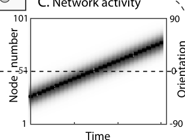</figure>
<p>60</p>
<p>101</p>
<p>90</p>
<h3>Tần số phát xung [Hz]</h3>
<p>50</p>
<h3>Số thứ tự nút</h3>
<p>40</p>
<h3>Hướng</h3>
<p>30</p>
<p>51</p>
<p>0</p>
<p>20</p>
<p>10</p>
<p>0</p>
<h3>Hướng [độ] -40 -20 0 20 40</h3>
<p>1</p>
<p>-90</p>
<h3>Thời gian</h3>
<p>Hình 8.1 (A) Mô hình cơ bản của một siêu cột trong đó một dãy ngang gồm các nút được tổ chức theo địa hình để đáp ứng với các hướng cụ thể của các đoạn thẳng trong trường thị giác. (B) Dữ liệu thực nghiệm của Henry và cộng sự (1974), như đã thảo luận trong Mục 5.4, được thể hiện bằng các hình tròn đặc, trong khi các bản ghi từ mô hình được thể hiện bằng các ô vuông rỗng. (C) Sự tiến triển của hoạt động trong trường thần kinh trong suốt thí nghiệm.</p>
<p>trong mạng. Chúng ta gọi vùng hoạt động liên tiếp này là một gói hoạt động (activity packet), mặc dù nó thường được gọi đơn giản là một bong bóng (bubble). Mức kích hoạt của nút ở giữa, vốn đáp ứng cực đại với hướng không độ, được vẽ theo hướng đầu vào bằng các ô vuông rỗng trong Hình 8.1B. Các chấm tròn biểu diễn dữ liệu thực nghiệm tương ứng. Các mô phỏng cũng bao gồm nhiễu tỷ lệ với mức kích hoạt, không được hiển thị trong Hình 8.1C. Như có thể thấy, dữ liệu mô hình khớp khá tốt với dữ liệu thực nghiệm.</p>
<p>Một số giả định và giả thuyết cụ thể được tích hợp trong mô hình siêu cột cơ bản này. Cụ thể, chúng ta đã giả định trong mô hình này rằng sở thích hướng của các nút siêu cột được tổ chức một cách có hệ thống. Phần tiếp theo sẽ khám phá các cơ chế cơ bản dẫn đến những tổ chức như vậy. Các tương tác bên trong mô hình siêu cột được tổ chức sao cho có nhiều kích thích hơn tới các nút lân cận so với các nút ở xa hơn, và có sự ức chế giữa các nút ở xa hơn nữa. Tương tác bên này trong mô hình dẫn đến các tính chất động của mô hình, điều mà chúng ta sẽ nghiên cứu một cách hình thức hơn trong Mục 8.3. Sự cạnh tranh giữa các đặc trưng thường được quan sát thấy trong các nghiên cứu sinh lý học và có vô số hệ quả về mặt hành vi. Phần còn lại của chương này khám phá các ứng dụng và mở rộng khác nhau của những mô hình như vậy để chứng minh rằng mô hình này nắm bắt được các cơ chế xử lý cơ bản của não bộ.</p>
<p>8.2 Bản đồ tự tổ chức</p>
<p>Các bản đồ địa hình trong não có hai đặc điểm chính, đó là có một trật tự nhất định trong không gian đặc trưng sao cho các vùng lân cận biểu diễn các đặc trưng lân cận, và các đặc trưng có độ phân giải cảm giác cao hơn được biểu diễn quá mức với không gian vỏ não lớn hơn trong khi vẫn bảo toàn các mối quan hệ giữa các giá trị đặc trưng. Sự hình thành các tổ chức như vậy phụ thuộc vào kinh nghiệm, vì sự hình thành các bản đồ như vậy có thể bị gián đoạn ở động vật rất non do thiếu hụt cảm giác. Mặc dù sự hình thành các bản đồ này thường được xem là một quá trình phát triển, nhưng ngày càng có nhiều bằng chứng cho thấy các bản đồ vỏ não có thể thay đổi đáng kể ngay cả ở tuổi trưởng thành khi có cơ hội. Như đã thảo luận trong Chương 6, các mô hình tính dẻo Hebb trong cuốn sách này mô tả những thay đổi của giá trị trọng số synap nói chung và không phân biệt giữa tính dẻo phát triển và tính dẻo chức năng. Các mô hình trong tiểu mục này có thể được xem là các mô hình tổng quát cho những thay đổi cấu trúc do hoạt động thúc đẩy trong các bản đồ thần kinh, dù là trong quá trình phát triển hay ở giai đoạn sau trong cuộc đời của một sinh vật. Các bản đồ như vậy được gọi là bản đồ tự tổ chức (self-organizing maps), hay viết tắt là SOM.</p>
<p>Lưu ý rằng các mô hình được thảo luận ở đây dựa trên những thay đổi của đáp ứng neuron dựa trên tính dẻo Hebb và sự cạnh tranh tầm xa trong phiến vỏ não. Vẫn còn một số tranh luận về việc liệu các bản đồ địa hình tầm xa, chẳng hạn như hình người cảm giác thân thể (somatosensory homunculus) được minh họa trong Hình 1.7D, có thể được giải thích chỉ thông qua các cơ chế tổ chức synap hay không, vì người ta cũng biết rằng sự phát triển vỏ não được dẫn dắt bởi các chất hóa học ngoại bào. Do đó, có khả năng tính dẻo địa hình đang diễn ra cũng được dẫn dắt bởi các quá trình hóa học tương tự. Tuy nhiên, bất kể sự triển khai vật lý này là gì, các mô hình ở đây có thể được xem là một mức độ trừu tượng của tổ chức phụ thuộc vào hoạt động.</p>
<p>8.2.1 Mô hình bản đồ vỏ não cơ bản</p>
<p>Mô hình được mô tả ở đây dựa trên một bài báo kinh điển của David Willshaw và Christoph von der Malsburg vào năm 1976. Chúng ta xem xét một phiến vỏ não hai chiều, như được minh họa trong Hình 8.2A. Các nút trong phiến vỏ não này là các nút quần thể với động lực học tích phân rò rỉ (leaky integrator), như đã thảo luận trong Chương 5. Tuy nhiên, bây giờ chúng ta xem xét các nút này trong một mạng giống như một phiến thần kinh. Để đơn giản hóa ký hiệu, chúng ta viết các phương trình sau cho một mô hình một chiều với N nút, như minh họa trong Hình 8.2B. Việc tổng quát hóa mô hình lên hai hoặc nhiều chiều hơn là khá trực tiếp bằng cách sử dụng thêm các chỉ số (ví dụ: i →i1i2i3) hoặc coi chỉ số i là một vectơ (ví dụ: i →i). Sự thay đổi của mức kích hoạt bên trong, ui, của nút i được cho bởi:</p>
<p>τ dui(t)</p>
<p>dt = −ui(t) + 1 wijrj(t) + 1</p>
<h3>X</h3>
<h3>X</h3>
<p>win ikrin k (t), (8.1)</p>
<h3>N</h3>
<h3>M</h3>
<p>j k trong đó τ là hằng số thời gian, wij là trọng số bên từ nút j đến nút i, win ik là trọng số kết nối từ nút đầu vào k đến nút vỏ não i, rin k (t) là tần số của nút đầu vào k, và M là số lượng nút đầu vào. Hoạt động của các nút đầu vào biểu diễn các giá trị đặc trưng cụ thể, trong khi tần số ri(t) của nút vỏ não i liên quan đến mức kích hoạt bên trong thông qua một hàm kích hoạt. Trong chương này, chúng ta chủ yếu sử dụng hàm sigmoid, với tham số độ lợi β và tham số độ lệch α, rj(t) = 1 1 + eβ(uj(t)−α) . (8.2)</p>
<p>Phương trình 8.1 và 8.2 là những phương trình nền tảng nhất được sử dụng trong nhiều phần của cuốn sách này. Chúng được Stephen Grossberg giới thiệu ở dạng tổng quát hơn một chút vào cuối những năm 1950, và kể từ đó đã thống trị nhiều mô hình mạng thần kinh.</p>
<p>SOM của Willshaw - von der Malsburg A. Không gian đặc trưng 2D và tầng SOM B. Không gian đặc trưng 1D và tầng SOM wmnij wij w in jk w in ijkl r ij r in k rj r in kl</p>
<p>Hình 8.2 Kiến trúc của bản đồ tự tổ chức theo Willshaw và von der Malsburg trong (A) hai chiều và (B) một chiều. Tầng nút bên trái biểu diễn đầu vào và tầng bên phải biểu diễn phiến vỏ não.</p>
<p>Mô hình cơ bản được định nghĩa bởi các phương trình 8.1 và 8.2 phân biệt giữa hai tập giá trị trọng số: các giá trị trọng số của kết nối đầu vào, win ik, và các trọng số bên trong phiến vỏ não wij. Trong phần này, chúng ta quan tâm đến việc học ánh xạ địa hình giữa các nút đầu vào và đầu ra trong khi giữ cố định các trọng số bên. Việc học các trọng số bên sẽ được xem xét ở phần sau của chương này. Ở đây chúng ta thiết lập chúng chỉ phụ thuộc vào khoảng cách giữa hai nút, với các giá trị dương (kích thích) cho khoảng cách ngắn và các giá trị âm (ức chế) cho khoảng cách lớn. Cụ thể, chúng ta chọn một hàm Gauss dịch chuyển cho hầu hết các minh họa, e−((i−j)∗∆x)2/2σ2 −C</p>
<p></p>
<p>wij = Aw , (8.3)</p>
<p>với các tham số Aw, σ và C. Để giảm thiểu hiệu ứng biên, chúng ta xem xét mô hình với điều kiện biên tuần hoàn, sao cho các nút tạo thành một vòng tròn (hoặc một hình xuyến trong không gian nhiều chiều hơn).</p>
<p>Phần được xem xét tiếp theo là việc học các trọng số đầu vào, win. Chúng ta bắt đầu với một ma trận trọng số ngẫu nhiên sao cho chưa có trật tự cụ thể nào trước khi huấn luyện. Quá trình học tuân theo triết lý Hebb tổng quát. Một đặc trưng cụ thể được chọn ngẫu nhiên, và vùng tương ứng xung quanh giá trị đặc trưng này được kích hoạt trong bản đồ đầu vào. Hoạt động này kích hoạt một số đáp ứng trong bản đồ vỏ não, có khả năng ở nhiều vị trí khác nhau. Tuy nhiên, một đặc điểm quan trọng của động lực học trong phiến vỏ não với các trọng số bên đang xét là phiến này hoạt động như một dạng mạng kẻ thắng lấy tất cả (WTA) ở chỗ nó phát triển một gói hoạt động thống trị (như trong Hình 8.1C) thông qua hợp tác tầm ngắn và cạnh tranh tầm xa. Điều này sẽ được thảo luận chi tiết hơn trong Mục 8.3. Do đó, việc học Hebb đối với các tần số đầu vào dẫn đến sự gia tăng trọng số giữa các nút đầu vào được kích hoạt và gói hoạt động chiến thắng trong phiến vỏ não.</p>
<p>8.2.2 Mô hình Kohonen</p>
<p>Mặc dù Willshaw và von der Malsburg đã chứng minh rằng mô hình này dẫn đến các tổ chức địa hình, chúng ta sẽ minh họa điều này bằng một mô hình hiệu quả hơn nhiều do Teuvo Kohonen giới thiệu. Mô hình này thực hiện một số đơn giản hóa phù hợp cho các thảo luận tiếp theo và nhất quán với triết lý mô hình hóa tối giản của chúng ta. Đơn giản hóa đầu tiên là cách biểu diễn đặc trưng đầu vào được thay đổi. Trong khi một giá trị đặc trưng cụ thể được biểu diễn bằng sự kích hoạt của một nút cụ thể trong mô hình trước đó (ví dụ: bằng tọa độ của nút được kích hoạt), mô hình mới biểu diễn giá trị đặc trưng này dưới dạng giá trị kích hoạt của một nút trong mô hình một chiều, hoặc d nút đầu vào trong trường hợp d chiều. Phiên bản hai chiều của mô hình này được minh họa trong Hình 8.3A và phiên bản một chiều trong Hình 8.3B. Với cách biểu diễn đặc trưng này, các giá trị của kết nối đầu vào nên được hiểu là biểu diễn giá trị đặc trưng ưa thích (hướng ưa thích trong trường hợp các đường cong tinh chỉnh V1) của các nút tiếp nhận. Để chỉ ra cách diễn giải khác biệt này của các giá trị kết nối, chúng ta sử dụng chữ cái c cho các kết nối này (tâm của các đường cong tinh chỉnh). Khi đó, mức kích hoạt của phiến vỏ não, khi được kích hoạt với đầu vào rin, được cho bởi k(cijk−rin k )2/2σ2 r , (8.4)</p>
<p>rij = e−P trong đó σr thiết lập độ rộng của vùng được kích hoạt. Hàm kích hoạt này giống với các đường cong tinh chỉnh đã thảo luận ở trên, và các mạng có hàm kích hoạt như vậy được gọi là mạng hàm cơ sở xuyên tâm (radial-basis function - RBF).</p>
<p>Đơn giản hóa tiếp theo liên quan đến động lực học của phiến vỏ não hồi quy. Chúng ta đã đề cập rằng động lực học của mô hình dẫn đến các đáp ứng của phiến thần kinh dưới dạng một đường cong tinh chỉnh như minh họa trong Hình 8.1, ít nhất là trong tình huống đầu vào đơn đặc trưng. Cũng đã chỉ ra rằng vị trí của đường cong tinh chỉnh này được xác định bởi các cơ chế cạnh tranh. Vùng hoạt động mạnh nhất sẽ ức chế các hoạt động khác trong mạng. Do đó, động lực học trong phiến vỏ não được xấp xỉ bằng một quy trình WTA. Mức kích hoạt của phiến vỏ não sau cạnh tranh được đặt thành hàm Gauss (phương trình 8.4) xung quanh nút chiến thắng. Như vậy, chỉ vùng hoạt động xung quanh nút chiến thắng mới tham gia vào quá trình học Hebb như đã nêu ở trên. Việc học các phép chiếu đầu vào do đó nhằm mục đích làm cho đặc trưng ưa thích hiện tại của nút chiến thắng tiến gần hơn đến mẫu huấn luyện. Vì các nút lân cận trong phiến vỏ não cũng được kích hoạt, mặc dù ít hơn, các phép chiếu này cũng cập nhật theo cách tương tự, nhưng với mức độ ảnh hưởng ít hơn từ mẫu huấn luyện. Cụ thể, chúng ta sử dụng quy tắc học:</p>
<p>∆cijk = ϵr∗ ij(rin i −cijk), (8.5)</p>
<p>quy tắc này làm cho các kết nối tới các nút xung quanh nút chiến thắng (được gắn nhãn ‘∗’) trở nên giống hơn với mẫu đầu vào. Tham số ϵ chỉ định tốc độ học.</p>
<p>Sự phát triển tâm của các đường cong tinh chỉnh, cijk, trong một mạng như vậy với tầng vỏ não gồm 10 × 10 nút được minh họa trong Hình 8.4. Trong các hình này,</p>
<p>A. Không gian đặc trưng 2 chiều và tầng SOM B. Không gian đặc trưng 1 chiều và tầng SOM</p>
<h3>WTA</h3>
<h3>WTA</h3>
<p>c in c in ijk i r in</p>
<p>1 rij ri r in r in</p>
<p>2</p>
<p>Hình 8.3 Kiến trúc của bản đồ tự tổ chức theo Kohonen trong (A) hai chiều và (B) một chiều. WTA biểu diễn quy trình tìm nút có đáp ứng cực đại đối với một đặc trưng đầu vào cho trước.</p>
<p>A. Các tâm ngẫu nhiên ban đầu B. Sau 1000 bước huấn luyện C. Khuyết tật địa hình</p>
<p>0.6</p>
<p>1</p>
<p>1 cij2 cij2 cij2</p>
<p>0.5</p>
<p>0.5</p>
<p>0.5</p>
<p>0.4 0.5 0.6 0.4</p>
<p>0 0.5 1 0</p>
<p>0 0.5 1 0 cij1 cij1 cij1</p>
<p>Hình 8.4 Thí nghiệm với bản đồ đặc trưng tự tổ chức hai chiều. (A) Bản đồ ban đầu với các giá trị trọng số ngẫu nhiên. (B) và (C) Hai ví dụ về bản đồ đặc trưng thu được sau 500 mẫu huấn luyện ngẫu nhiên với các điều kiện ban đầu ngẫu nhiên khác nhau.</p>
<p>vị trí của các tâm trong không gian đặc trưng được vẽ cho mỗi nút dưới dạng giao điểm của các đường thẳng, trong đó các đường thẳng nối các nút lân cận trong phiến vỏ não. Các mô phỏng được bắt đầu với các giá trị ngẫu nhiên, như minh họa trong Hình 8.4A, sao cho không có mối quan hệ trật tự nào tồn tại. Sau đó, mạng được tiếp xúc với các mẫu ngẫu nhiên phân bố đều trong một hình vuông đơn vị. Sau một số mẫu huấn luyện, chúng ta thu được một biểu diễn tương đối đồng nhất của không gian đặc trưng như minh họa trong Hình 8.4B. Mạng đã học cách biểu diễn các giá trị đặc trưng của tập huấn luyện trong một bản đồ địa hình mà ở đó các nút lân cận biểu diễn các giá trị đặc trưng lân cận. Hình dạng của các bản đồ có thể khác nhau đáng kể tùy thuộc vào điều kiện ban đầu và trình tự chính xác của các mẫu. Trong Hình 8.4C, chúng tôi trình bày một ví dụ khác về cùng các mô phỏng đó với một trạng thái ban đầu khác. Một sự xoắn, hoặc nếp gấp, trong biểu diễn đã xảy ra khi các phần khác nhau của lưới bắt đầu tự tổ chức một cách độc lập. Những kết quả như vậy không phải là hiếm trong các mô phỏng. Chúng đôi khi được gọi là khuyết tật địa hình (topographic defects) và mang tính ổn định theo nghĩa gần như không thể tháo gỡ các nếp xoắn này. Tuy nhiên, có thể tránh được chúng bằng cách, chẳng hạn, sử dụng các giá trị σ lớn ngay từ đầu.</p>
<p>Một chương trình như som.py đã được sử dụng để tạo ra các đồ thị mô phỏng trong Hình 8.4. Như thường lệ, chúng ta định nghĩa một số hằng số ở đầu chương trình. Hằng số sig2 là ký hiệu viết tắt của mẫu số trong hàm mũ của phương trình 8.4. Việc định nghĩa các phép tính lặp lại như vậy bằng hằng số ở đầu chương trình là điều khôn ngoan để tiết kiệm thời gian tính toán quý giá về sau. Chúng ta cũng định nghĩa các ma trận hằng X và Y với sự trợ giúp của hàm meshgrid() trong numpy. X là ma trận chứa chỉ số ‘i’ của một nút, và Y là ma trận chứa chỉ số ‘j’ của một nút. Chúng ta sẽ cần điều này ở phần sau của chương trình để vẽ lưới.</p>
<p>Programs/som.py 1 # Two dimensional s e l f −o r g a n i z i n g f e a t u r e map a l l a Kohonen 2 import numpy as np 3 import m a t p l o t l i b . pyplot as p l t 4 5 nn = 10; l r = 0 . 0 2 ; s i g = 2; sig2 = 1/(2∗s i g ∗∗2); n t r i a l = 0 6 7 x , y = np . meshgrid ( np . arange (0 , nn ) , np . arange (0 , nn ) ) 8 9 # I n i t i a l c e n t r e s of p r e f e r e d f e a t u r e s : 10 c1=np . random . rand ( nn , nn ) 11 c2=np . random . rand ( nn , nn ) 12 #c1 =0.05+ x / nn 13 #c2 =0.05+ y / nn 14 # t r a i n i n g s e s s i o n 15 f o r t r i a l in range (1 0 0 0 0 ) : 16 i f ( np . mod( t r i a l , 1 0 0 ) = = 0 ) : # P l o t g r i d of f e a t u r e c e n t r e s 17 p l t . a x i s ( [ 0 , 1 , 0 , 1 ] ) ; 18 p l t . p l t ( c1 , c2 , ’k ’ ) ; p l t . p l t ( c1 . T , c2 . T , ’k ’ ) ; 19 p l t . show ( ) 20 21 r i n =[ np . random . rand ( ) , np . random . rand ( ) ] 22 r =np . exp (−(c1−r i n [0])∗∗2 −( c2−r i n [ 1 ] ) ∗∗2 ) 23 winner = np . u n r a v e l i n d e x ( np . argmax ( r , a x i s =None ) , r . shape ) 24 r =np . exp ( −((x−winner [0])∗∗2+( y−winner [1])∗∗2)∗sig2 ) ; 25 c1=c1+ l r ∗r ∗( r i n [1]−c1 ) 26 c2=c2+ l r ∗r ∗( r i n [0]−c2 )</p>
<p>Sau khi chọn các tâm ngẫu nhiên làm giá trị khởi đầu cho các kích thích ưa thích của các neuron, chúng ta thiết lập một vòng lặp dài để học. Trước khi huấn luyện, và sau mỗi 100 mẫu huấn luyện, được lập trình dưới dạng điều kiện với hàm mod() của numpy, chúng ta vẽ lưới bằng cách nối các nút lân cận. Sau đó chúng ta chọn một kích thích ngẫu nhiên và tính toán mức kích hoạt tương ứng của bản đồ vỏ não. Chúng ta không đưa số hạng phương sai vào dòng này vì mức kích hoạt tính ở đó chỉ dùng để tìm nút chiến thắng ở dòng tiếp theo. Mức kích hoạt của nút chiến thắng sau đó được tính chính xác ở dòng kế tiếp, rồi được dùng để cập nhật các tâm theo phương trình 8.5.</p>
<p>8.2.3 Tinh chỉnh liên tục các bản đồ vỏ não</p>
<p>Mỗi mẫu huấn luyện mới đều làm thay đổi bản đồ, và người ta thường phải đối mặt với điều mà Grossberg đặt tên là nghịch lý dẻo–ổn định (plasticity–stability dilemma), ở chỗ chúng ta muốn ổn định một bản đồ trong khi vẫn có thể phát triển bản đồ đó. Trong nhiều ứng dụng kỹ thuật, người ta bắt đầu huấn luyện với một tốc độ học lớn và giảm dần xuống các giá trị nhỏ. Điều này đôi khi được so sánh với các quá trình phát triển ở động vật có vú với những giai đoạn nhạy cảm (critical periods) ở thời kỳ đầu sau sinh. Tuy nhiên, não bộ cũng có khả năng thích nghi ở độ tuổi cao khi có cơ hội. Để minh họa điều này, chúng tôi trình bày một mô phỏng khác trong Hình 8.5.</p>
<p>Chúng tôi bắt đầu mạng này với các tâm được tổ chức hoàn hảo (xem đồ thị tại t = 0) để tránh các khuyết tật địa hình, vì ở đây chúng tôi không quan tâm đến tổ chức ban đầu mà quan tâm đến sự phát triển của các bản đồ khi đáp ứng với những tiếp xúc mới. Các tâm ban đầu có tổ chức, như minh họa trong hình, được tạo ra bằng:</p>
<p>for i in range(n_out)</p>
<p>for j in range(n_out)</p>
<p>c1[i,j]=i/n_out c2[i,j]=j/n_out Trong các bước thích nghi tiếp theo, mạng trước tiên được tiếp xúc với các vectơ huấn luyện ngẫu nhiên trong hình vuông đơn vị, như trước đây. Biểu diễn không thay đổi nhiều sau 1000 lần cập nhật; chỉ có một số biến dạng nhỏ được đưa vào do việc cập nhật ma trận trọng số với các mẫu huấn luyện. Sau 1000 mẫu huấn luyện, chúng tôi thay đổi các vectơ huấn luyện được đưa vào mạng. Các mẫu huấn luyện mới bao gồm các giá trị ngẫu nhiên tương tự như trước, và bổ sung thêm các mẫu huấn luyện với các thành phần 1 ≤rin i < 2, với các mẫu ngẫu nhiên từ mỗi trong hai góc phần tư. Kết quả mô phỏng sau 100 và 1000 lượt huấn luyện với các mẫu huấn luyện mới này được trình bày trong hai đồ thị cuối cùng của Hình 8.5. Bản đồ địa hình đã phân nhánh để vươn tới các biểu diễn của những giá trị đặc trưng bổ sung, mặc dù biểu diễn này không tốt bằng biểu diễn của tập huấn luyện ban đầu ngay cả sau một khoảng thời gian đáng kể.</p>
<p>Các mô phỏng trên chứng minh rằng các mạng SOM có thể học cách biểu diễn các miền giá trị đặc trưng mới, mặc dù biểu diễn dường như kém tinh vi hơn so với miền đặc trưng ban đầu. Kết quả mô phỏng dẫn đến một số kết luận thú vị nếu chúng ta suy đoán rằng sự hình thành biểu diễn vỏ não được thúc đẩy bởi các cơ chế tương tự. Ví dụ, tốt nhất là nên tiếp xúc sớm trong đời với các mẫu huấn luyện từ một không gian đặc trưng rộng, bao gồm các mẫu từ tất cả các đặc trưng mà chúng ta mong muốn có được một biểu diễn tinh vi. Điều này gợi ý rằng việc tiếp xúc với nhiều ngôn ngữ khác nhau từ sớm trong đời là rất quan trọng để có thể đạt được khả năng phân biệt âm thanh ở mức độ cao trong các ngôn ngữ khác nhau.</p>
<p>Dựa trên mô hình trên, chúng ta có thể đề xuất một số chiến lược huấn luyện hữu ích khi khám phá các miền mới. Có vẻ như có thể tạo ra một tập huấn luyện ‘thông minh’ giúp thích nghi với các biểu diễn mới tốt hơn nhiều so với một tập huấn luyện ngẫu nhiên. Qua đó, có thể sẽ có lợi nếu lúc đầu chỉ đưa vào các mẫu huấn luyện gần với miền đặc trưng đã học ban đầu và sau đó tăng dần sự khác biệt của các giá trị đặc trưng. Mô hình gợi ý rằng chúng ta có thể dịch chuyển và mở rộng toàn bộ biểu diễn đặc trưng theo cách này một cách mượt mà hơn nhiều so với trường hợp chúng ta thích nghi với một số trường hợp cực đoan trước tiên và khi đó chỉ còn lại một số lượng hạn chế các nút khả dụng</p>
<h2>2 t = 0</h2>
<p>1</p>
<p>1</p>
<h2>0 1 2 0</h2>
<h2>0 1 2 0</h2>
<h3>C. Môi trường mới</h3>
<p>2 t = 2000 D. Thêm kinh nghiệm</p>
<p>2 t = 1100</p>
<p>1</p>
<p>1</p>
<p>0 1 2 0</p>
<p>0 1 2 0</p>
<p>Hình 8.5 Một ví dụ khác về bản đồ đặc trưng tự tổ chức hai chiều. Trong ví dụ này, chúng tôi huấn luyện mạng trên 1000 mẫu huấn luyện ngẫu nhiên từ góc phần tư dưới bên trái. Các mẫu huấn luyện tiếp theo được chọn ngẫu nhiên từ góc phần tư dưới bên trái và trên bên phải. Tham số t chỉ định số lượng mẫu huấn luyện đã được đưa vào mạng.</p>
<p>để biểu diễn miền đặc trưng mới. Ngoài ra, việc hạn chế các mẫu từ những vùng đã được huấn luyện kỹ là có lợi, và thậm chí có thể là thiết yếu, để học tập hiệu quả. Có khả năng chúng ta có thể phát triển các liệu pháp điều trị tốt hơn trong phục hồi chức năng dựa trên những ý tưởng như vậy.</p>
<p>Một minh họa đẹp về tính dẻo biểu diễn ở động vật có vú trưởng thành được thể hiện trong Hình 8.6 từ các thí nghiệm của Xiaoming Zhou và Michael Merzenich. Họ nuôi chuột con trong một môi trường ồn ào làm suy giảm nghiêm trọng sự phát triển của tính tổ chức theo tần số âm (tonotopicity — biểu diễn có trật tự của các âm) trong vỏ não thính giác sơ cấp (A1), tình trạng này kéo dài đến tuổi trưởng thành. Một ví dụ về bản đồ như vậy ở một con chuột trưởng thành được trình bày trong Hình 8.6A. Các vùng gạch chéo biểu diễn các khu vực có các neuron thể hiện sự tinh chỉnh tần số thuần túy. Những con chuột này không thể phục hồi biểu diễn tần số âm bình thường trong A1 mặc dù chúng được kích thích ở tuổi trưởng thành bằng các âm thanh có tần số khác nhau. Tuy nhiên, khi chính các mẫu âm thanh đó được dùng để huấn luyện chuột trong một nhiệm vụ phân biệt, mà chúng phải giải quyết để nhận phần thưởng thức ăn, những con chuột bị suy giảm phát triển đã có thể phục hồi bản đồ tần số âm bình thường, như minh họa trong Hình 8.6B. Ví dụ này chứng minh rằng một số quá trình học tập hướng mục tiêu phải diễn ra ở động vật. Ngoài ra, các mô hình SOM truyền thống, như đã thảo luận trong phần này, hoàn toàn được dẫn dắt bởi dữ liệu đầu vào theo cách từ dưới lên (bottom-up), và không chắc các mô hình như vậy đủ để giải thích các kết quả thực nghiệm này. Do đó, xử lý từ trên xuống (top-down), chẳng hạn như sự dẫn dắt quá trình phát triển của các bản đồ cảm giác sớm bởi mục tiêu và sự chú ý, dường như rất quan trọng, và chúng ta sẽ quay lại</p>
<h3>A. Chuột được kích thích thụ động B. Chuột được huấn luyện</h3>
<h2>32 kHz</h2>
<h2>8 kHz</h2>
<h2>2 kHz</h2>
<h3>Lưng (Dorsal)</h3>
<h3>Trước (Anterior) 1mm</h3>
<p>Hình 8.6 (A) Bản đồ tần số trong vùng A1 của một con chuột bị suy giảm phát triển do được nuôi trong môi trường ồn ào. Các vùng gạch chéo chứa các neuron có khả năng tinh chỉnh tần số kém. (B) Bản đồ tần số âm của một con chuột trưởng thành đã phục hồi nhờ huấn luyện trên một nhiệm vụ phân biệt tần số. [Dữ liệu do Zhou và Merzenich cung cấp, Proceedings of the National Academy of Science USA 104: 15935–40 (2007)].</p>
<p>phần thảo luận về xử lý từ trên xuống trong các chương sau.</p>
<p>8.3 Lý thuyết trường thần kinh động</p>
<p>Bây giờ chúng ta chuyển sang vấn đề khác của các bản đồ vỏ não và, như chúng ta sẽ thấy, một số bản đồ dưới vỏ não, đó là động lực học của phiến vỏ não đối với một tổ chức địa hình cho trước. Phương trình động lực học thời gian liên tục đã được giới thiệu cho một tập hợp rời rạc các nút trong phương trình 8.1. Chúng ta đã nêu trong ví dụ về các đường cong tinh chỉnh hướng rằng số lượng nút không thực sự quan trọng miễn là có đủ số lượng nút để biểu diễn không gian đặc trưng với độ mịn thích hợp. Ngoài ra, đặc trưng ‘hướng’ thực chất là một biến liên tục, và nhiều khái niệm mà não bộ phải học cũng có bản chất liên tục. Thật vậy, các quá trình nhận thức hầu hết đều có bản chất liên tục trong không gian và thời gian, và mô hình sau đây rất thành công trong việc giải thích nhiều phát hiện về hành vi. Do đó, việc viết phương trình 8.1 dưới dạng liên tục trong không gian là điều tự nhiên và rất thuận tiện về mặt toán học, τ ∂u(x, t)</p>
<h3>Z</h3>
<p>w(x, y)r(y, t)dy + Iext(x, t) (8.6)</p>
<p>∂t = −u(x, t) + y r(x, t) = g(u(x, t)), (8.7)</p>
<p>với một hàm kích hoạt tổng quát g(u). Chúng ta đã thay thế đầu vào bên ngoài tới bản đồ này bằng một dạng tổng quát Iext(x, t), vì chúng ta sẽ chủ yếu nghiên cứu động lực học của trường thần kinh như một đầu vào được tổ chức theo địa hình. Chúng ta sử dụng thuật ngữ ‘trường thần kinh’ (neural field) vì các đại lượng u(x, t) và r(x, t) phụ thuộc vào các tọa độ không gian liên tục và được gọi là các trường trong vật lý. Chúng ta đã viết các phương trình cho các chiều không gian tùy ý, mặc dù chúng ta sẽ chủ yếu sử dụng phiên bản một chiều của mô hình này để đơn giản hóa các thảo luận. Trong một mô hình một chiều, chúng ta có thể thay thế các đại lượng vectơ x, y, u, r bằng các biến giá trị thực x, y, u, r. Chúng ta cũng sử dụng các điều kiện biên tuần hoàn để giảm thiểu hiệu ứng biên. Do đó, không gian đặc trưng về mặt hình thức là một vòng tròn trong một chiều, và chúng ta thường xuyên sử dụng các giá trị đặc trưng trong (0, 2π] cho mục đích minh họa. Khi triển khai mô hình để mô phỏng trên máy tính, chúng ta cần rời rạc hóa mô hình với:</p>
<p>x →i∆x (8.8) Z dx →∆x P . (8.9)</p>
<p>Chúng ta khôi phục lại mô hình rời rạc đã dùng ở trên, phương trình 8.1, khi xác định các tương ứng u(i∆x, t) = ui(t) và ∆x = 1/N. Lưu ý hệ số tỷ lệ trong phương trình cuối cùng, vốn rất dễ bị bỏ quên khi thay thế tích phân bằng tổng.</p>
<p>8.3.1 Nhân tương tác trung tâm–bao quanh</p>
<p>Chúng ta đã nghiên cứu việc huấn luyện các trọng số đầu vào cho một nhân tương tác cố định, w, trong phần trước. Bây giờ chúng ta thảo luận về sự hình thành của w với đầu vào địa hình cố định. Chúng ta sẽ sử dụng một ví dụ một chiều trong đó chúng ta gọi đặc trưng được biểu diễn bởi phiến vỏ não là ‘hướng đi’ (direction). Mỗi vị trí của phiến vỏ não biểu diễn một hướng đi cụ thể, nhưng nó cũng đáp ứng ở một mức độ nào đó với các hướng đi lân cận dưới dạng một hàm Gauss, r(x −xp) = e−(x−xp)2/2σr</p>
<p>2, (8.10)</p>
<p>trong đó xp là hướng đi ưa thích của một vị trí trong phiến vỏ não. Với các điều kiện biên tuần hoàn, chúng ta nên thay thế khoảng cách giữa x và xp bằng,</p>
<p>|x −xp| →min(|x −xp|, 2π −|x −xp). (8.11)</p>
<p>Bây giờ chúng ta sử dụng phiên bản liên tục của quy tắc học Hebb cơ bản (phương trình 6.10) để huấn luyện một nhân trọng số bằng không ban đầu trên một mẫu của mọi hướng đi có thể,</p>
<h3>Z 2π</h3>
<p>wE(x, y) =</p>
<p>0 r(x −xp)r(y −xp)dxp. (8.12)</p>
<p>Tích phân chập này bản thân nó là một hàm Gauss, wE(|x −y|) = Awe−(x−y)2/4σr</p>
<p>2, (8.13)</p>
<p>√</p>
<p>2 lớn hơn độ rộng của các mẫu huấn luyện, và một hệ số tỷ lệ, Aw, phụ thuộc vào độ mạnh của mẫu huấn luyện và tốc độ học. Nhân trọng số này chỉ là một hàm của khoảng cách giữa các nút và luôn dương (kích thích), do đó có nhãn E. Tuy nhiên, chúng ta cũng cần sự ức chế trong mạng. Vì vậy, chúng ta xem xét một nhóm các nút ức chế được kích hoạt bởi các kích thích hưng phấn trong mạng và ngược lại ức chế toàn cục trường thần kinh. Điều này có thể được đưa vào mạng bằng cách dịch chuyển nhân kích thích đi một lượng AwC, trong đó hằng số C mô tả lượng ức chế tương đối. Nhân trọng số cuối cùng có thể được viết dưới dạng phiên bản liên tục của phương trình 8.3, với độ rộng lớn hơn một hệ số</p>
<p></p>
<p>e−(x−y)2/4σ2 r −C w(|x −y|) = Aw</p>
<p>. (8.14)</p>
<p>Trong ví dụ này, chúng ta đã suy ra nhân trọng số Gauss từ việc huấn luyện một mạng hồi quy x</p>
<p>Hình 8.7 Minh họa một hàm mũ Mexico (Mexican-hat). Các dấu chéo biểu thị các giá trị được sử dụng trong phiên bản rời rạc của mô hình trường thần kinh động với các nút như được chỉ ra ở phía dưới.</p>
<p>một cách có hệ thống trên các mẫu huấn luyện có dạng Gauss. Tuy nhiên, hầu hết các hành vi được thảo luận sau đây cũng đúng đối với các mô hình được huấn luyện trên các dạng mẫu khác nhau, miễn là các hàm trọng số thu được chỉ phụ thuộc vào khoảng cách (bất biến dịch chuyển), và có kích thích tầm ngắn cùng ức chế tầm xa. Ví dụ, hàm mũ Mexico thường được sử dụng, có thể tính từ hiệu của hai hàm Gauss, được minh họa trong Hình 8.7. Hàm này rất giống với hàm Gauss dịch chuyển ở trên khi phạm vi của hàm mũ Mexico nằm trong cùng bậc độ lớn với các bản đồ vỏ não tuần hoàn được thảo luận ở đây.</p>
<p>Nhiều ví dụ sinh lý học gợi ý một cấu trúc tương tác hiệu quả, với kích thích tầm ngắn và ức chế tầm xa, trong não bộ. Bằng chứng như vậy đã ảnh hưởng đến, chẳng hạn, Cowan và Wilson khi nghiên cứu các mô hình tân vỏ não với cấu trúc tương tác như vậy vào năm 1973. Một ví dụ khác được tìm thấy ở lớp trung gian của gò trên (superior colliculus), một vùng não giữa đóng vai trò là trạm tích hợp quan trọng cho nhiều con đường vỏ não và dưới vỏ não dẫn hướng ánh nhìn. Một ví dụ về cấu trúc tương tác trong gò trên từ các bản ghi tế bào ở khỉ được trình bày trong Hình 8.8. Trong hình này, chúng tôi đã vẽ kết quả cho hai neuron mẫu. Hình vẽ cho thấy ảnh hưởng của hoạt động ở các phần khác của gò trên đối với hoạt động của từng neuron. Ảnh hưởng này có đặc điểm là kích thích tầm ngắn và ức chế tầm xa, và một mô hình gò trên dựa trên các đặc điểm này đã có thể tái tạo nhiều phát hiện về hành vi đối với sự biến thiên thời gian cần thiết để khởi phát một chuyển động mắt nhanh theo các điều kiện thực nghiệm khác nhau.</p>
<p>8.3.2 Trạng thái tiệm cận và động lực học của các trường thần kinh</p>
<p>Phiến vỏ não về mặt hình thức là một hệ thống động lực học (mạng hồi quy), và chúng ta có thể nghiên cứu các quỹ đạo và trạng thái tiệm cận trong không gian trạng thái của mạng, như sẽ được thực hiện một cách hình thức hơn bên dưới. Ở đây, chúng ta tóm tắt một số chế độ chính của các mô hình như vậy với sự hợp tác cục bộ và cạnh tranh toàn cục, vốn rất quan trọng trong các thảo luận tiếp theo. Các chế độ khác nhau này phụ thuộc vào mức độ ức chế trong mạng so với mức độ kích thích cục bộ:</p>
<p>1. Hoạt động tăng trưởng: Khi sự ức chế yếu so với sự kích thích giữa các nút lân cận, khiến mô hình bị chi phối bởi sự kích thích, động lực học của mô hình bị chi phối bởi hồi tiếp dương. Toàn bộ bản đồ cuối cùng sẽ trở nên tích cực trong chế độ này, điều mà do đó không mong muốn đối với các quá trình của não bộ.</p>
<p>ρw</p>
<p>1</p>
<p>0.8</p>
<p>0.6</p>
<p>0.4</p>
<p>0.2</p>
<p>0</p>
<p>−0.2</p>
<h2>0 1 2 3 4 5 6 7</h2>
<h3>Khoảng cách [mm]</h3>
<p>Hình 8.8 Dữ liệu từ các bản ghi tế bào ở gò trên của khỉ, cho thấy cường độ tương tác ρw giữa các tế bào trong cấu trúc não giữa này. Đường nét liền hiển thị phép đo tương ứng từ các mô phỏng của một mô hình CANN cho cấu trúc não này [từ Trappenberg và cộng sự, Journal of Cognitive Neuroscience 13: 256–71 (2001)].</p>
<p>2. Hoạt động suy giảm: Khi sự ức chế mạnh so với sự kích thích, thì động lực học của mô hình bị chi phối bởi hồi tiếp âm. Các neuron sẽ đáp ứng với đầu vào đủ mạnh, nhưng hoạt động của bản đồ suy giảm sau khi loại bỏ đầu vào bên ngoài. Tuy nhiên, chế độ này lại thú vị xét về mặt xử lý thông tin vì nó có thể tạo điều kiện cho sự cạnh tranh giữa các đầu vào bên ngoài.</p>
<p>3. Hoạt động ghi nhớ: Trong một khoảng ức chế trung gian, mà chúng ta sẽ xác định rõ hơn bên dưới, một vùng tích cực có thể ổn định trong bản đồ, ngay cả khi đầu vào bên ngoài bị loại bỏ. Do đó, chế độ này có thể biểu diễn ký ức về các giá trị đặc trưng thông qua hoạt động duy trì liên tục trong mạng.</p>
<p>Các chế độ này có thể dễ dàng được khám phá bằng số học với chương trình được trình bày chi tiết bên dưới. Một ví dụ về mô phỏng như vậy được thể hiện trong Hình 8.9A, nơi chúng tôi vẽ tần số phát xung của các nút trong một mạng gồm 100 nút theo thang độ xám trong suốt quá trình tiến triển của hệ thống theo thời gian. Tất cả các nút được khởi tạo với tần số phát xung trung bình, và một kích thích bên ngoài mạnh vào các nút số 40–50 được áp dụng tại thời điểm t = 0. Các nút được kích thích, cũng như một số nút lân cận với vị trí được kích thích, đáp ứng bằng sự gia tăng tần số phát xung do các trọng số kích thích tới các nút gần kề. Các nút ở xa vị trí được kích thích giảm tần số phát xung do sự ức chế. Như đã đề cập ở trên, chúng ta gọi tập hợp các nút tích cực so với tần số nền của chúng là một gói hoạt động (activity packet), nhưng trong một số tài liệu nó cũng được gọi là bong bóng (bubble), hoặc bướu (bump).</p>
<p>Kích thích bên ngoài được loại bỏ tại t = 10τ. Tần số phát xung tổng thể trong mạng giảm nhẹ sau khi loại bỏ kích thích bên ngoài này, và gói hoạt động trở nên thấp hơn và rộng hơn một chút. Tuy nhiên, hiệu ứng thú vị nhất là một nhóm các nút lân cận có cùng tâm với kích thích bên ngoài vẫn duy trì hoạt động một cách tiệm cận. Do đó, động lực học của phiến vỏ não có khả năng ghi nhớ một đặc trưng bằng hoạt động duy trì liên tục trong bản đồ vỏ não. Chúng ta sẽ lập luận bên dưới rằng điều này tương ứng với một dạng trí nhớ làm việc (working memory) như thấy trong dữ liệu sinh lý học. Gói hoạt động có thể được ổn định tại bất kỳ vị trí nào trong mạng tùy thuộc vào kích thích bên ngoài ban đầu. Do đó, điểm hút (attractor) là một đa tạp liên tục trong giới hạn trường thần kinh, và mô hình trường thần kinh động (DNF) đôi khi được gọi là mạng thần kinh hút liên tục</p>
<p>A. B.</p>
<h3>Hồ sơ hoạt động tại t =20τ</h3>
<p>1</p>
<h3>Tần số Tần số</h3>
<p>0.5</p>
<p>70</p>
<h3>Số thứ tự nút</h3>
<h3>Kích thích bên ngoài</h3>
<p>35</p>
<h2>0 50 100 0</h2>
<h2>0 10 0.0</h2>
<h3>Số thứ tự nút</h3>
<h3>Thời gian[t]</h3>
<p>Hình 8.9 A) Sự tiến triển theo thời gian của các tần số phát xung trong mô hình trường thần kinh động với 100 nút. Các đầu vào bên ngoài bằng nhau tới các nút 40–60 được áp dụng tại t = 0τ. Đầu vào bên ngoài này bị loại bỏ tại t = 10τ (các tham số của mô hình như trong chương trình dnf.py). B) Đường nét liền biểu diễn hồ sơ tần số phát xung của mô phỏng trong Hình 8.9 tại t = 20τ. Đường nét đứt thể hiện kết quả tương tự với trọng số tăng lên Aw = 10. Đường chấm biểu thị kết quả từ một gói hoạt động suy giảm với sự ức chế tăng lên (C = 0.7).</p>
<p>(CANN). Đây là một trường hợp đặc biệt của các mạng thần kinh hút (ANN) tổng quát hơn được thảo luận trong Chương 9. Một gói hoạt động mới có thể được thiết lập tại một vị trí mới bằng cách áp dụng một kích thích bên ngoài khác tập trung xung quanh một nút khác. Tuy nhiên, các nút được kích hoạt từ bên ngoài vẫn nhận hoạt động ức chế từ gói hoạt động kia trong mạng, và đầu vào bên ngoài phải có cường độ và thời lượng đủ lớn để đảm bảo rằng gói hoạt động mới trở nên thống trị trong mạng.</p>
<p>Hồ sơ tần số tại thời điểm t = 20τ được thể hiện bằng đường nét liền trong Hình 8.9B. Trong các mô phỏng này, chúng tôi đã sử dụng hằng số ức chế C = 0.5 và cường độ trọng số Aw = 4. Sử dụng cường độ trọng số lớn hơn, Aw = 10, dẫn đến một gói hoạt động cứng nhắc hơn với các ranh giới sắc nét hơn và tần số của các nút nằm sâu bên trong gói hoạt động gần đạt đến giới hạn tần số. Các hiệu ứng tương tự có thể thấy khi sử dụng độ lợi lớn hơn trong hàm kích hoạt sigmoid hoặc khi sử dụng ít sự ức chế hơn. Việc sử dụng các hàm ngưỡng làm hàm kích hoạt dẫn đến một hồ sơ tần số dạng hình hộp. Chúng ta sẽ tận dụng phát hiện này trong phần phân tích tiếp theo. Vùng tích cực suy giảm với các hằng số ức chế lớn, chẳng hạn như với C = 0.7 trong ví dụ. Tuy nhiên, quá trình suy giảm có thể mất một khoảng thời gian, do đó dấu vết của vùng được gợi lên vẫn có thể thấy tại t = 20τ, như được thể hiện bằng đường chấm trong Hình 8.9B.</p>
<p>Một triển khai của mô hình DNF bằng Python cho Hình 8.9 được cung cấp trong chương trình dnf.py. Ở đây chúng ta sử dụng bộ tích phân số được cung cấp trong SciPy như đã phác thảo trong Chương 3.4, trong đó chúng ta định nghĩa các phương trình động lực học trong hàm udot(). Sau đó, chúng ta định nghĩa các tham số bao gồm số lượng nút. Mặc dù chúng ta đặt số này là nn=100 trong ví dụ này, điều quan trọng là kết quả của chúng ta không phụ thuộc vào con số này, và nên kiểm tra xem kết quả mô phỏng có không đổi khi sử dụng một con số khác hay không (hãy thử nghiệm). Số lượng nút sẽ chỉ thay đổi độ phân giải trong không gian đặc trưng, dx. Biến sig ảnh hưởng đến độ lệch chuẩn của ma trận trọng số, và hằng số C thiết lập mức độ ức chế.</p>
<h3>Programs/dnf.py</h3>
<p>1 import numpy as np 2 import m a t p l o t l i b . pyplot as p l t 3 from m a t p l o t l i b import cm 4 from m a t p l o t l i b . t i c k e r import LinearLocator 5 from scipy . i n t e g r a t e import o d e i n t 6 7 def udot ( u , t , w, I e x t , dx , tau ) : 8 r =1/(1+ np . exp(−u ) ) 9 I i n t =w@r∗dx ; 10 r e t u r n tau ∗(−u+ I i n t + I e x t ) 11 12 # Parameters 13 nn = 100; dx = 2∗np . pi / nn ; s i g = 2∗np . pi / 1 0 ; C= 0 . 5 ; tau =1 14 15 # Tr a in i ng weight matrix with Hebbian l e a r n i n g and s c a l i n g 16 i = np . arange ( nn ) 17 pat = np . zeros ( ( nn , nn ) ) 18 f o r loc in range ( nn ) : 19 d i s = np . fmin ( abs ( i−loc ) , nn−abs ( i−loc ) ) 20 pat [ : , loc ] = np . exp (−( d i s ∗dx )∗∗2/(2∗s i g ∗∗2)) 21 w = pat@pat . T ; w = w/w[ 0 , 0 ] ; w = 4∗(w−C) 22 23 # Update with i n p u t ( c e n t r a l a c t i v a t i o n ) 24 I e x t = np . zeros ( nn ) ; I e x t [ i n t ( nn/2−nn / 1 0 ) : i n t ( nn /2+ nn / 1 0 ) ] = 1 25 t = np . arange (10) 26 u0 = np . zeros ( nn ) # I n i t i a l s t a t e 27 u = o d e i n t ( udot , u0 , t , args =(w, I e x t , dx , tau ) ) 28 29 # remove i n p u t 30 I e x t = np . zeros ( nn ) 31 t2 = np . arange (10 ,20) 32 u0 = u [ −1 ,:] # I n i t i a l s t a t e 33 u2 = o d e i n t ( udot , u0 , t2 , args =(w, I e x t , dx , tau ) ) 34 35 36 # p l o t r e s u l t s 37 fig , ax = p l t . s u b p l o t s ( subplot kw ={" p r o j e c t i o n " : "3d" }) 38 X = np . append ( t , t2 ) ; Z = np . append ( u , u2 , a x i s = 0) .T 39 Y = np . arange ( nn ) / nn∗2∗np . pi 40 X, Y = np . meshgrid (X, Y) 41 ax . p l o t s u r f a c e (X,Y, Z , cmap=cm . coolwarm , l i n e w i d t h =0 , a n t i a l i a s e d = False )</p>
<p>Việc thiết lập các thành phần một cách tường minh bằng một hàm như hiệu của hai hàm Gauss là phổ biến trong ứng dụng mô hình DNF. Tuy nhiên, trong ví dụ này chúng tôi chọn huấn luyện phần kích thích của ma trận trọng số bằng phương pháp học Hebb trên các mẫu Gauss. Ma trận mẫu pat chứa nn mẫu, mỗi mẫu là một hàm Gauss tập trung xung quanh một trong các nút trong mạng. Sau đó, chúng tôi sử dụng quy tắc học Hebb ở dạng ma trận (xem phương trình 6.21 và các bình luận tiếp theo) và chuẩn hóa theo phần tử cực đại (mỗi phần tử trên đường chéo đều bằng nhau và cực đại). Giá trị thu được sau đó được dịch chuyển bởi hằng số ức chế và lại được nhân tỷ lệ lên với hệ số 4. Hệ số tỷ lệ như vậy có thể liên quan đến tốc độ học hoặc các dạng chuẩn hóa khác.</p>
<p>Sau đó, chúng tôi bắt đầu thí nghiệm với đầu vào bên ngoài có các phần tử khác không cho 21 nút xung quanh nút trung tâm và cập nhật hoạt động bằng cách tích phân cho đến t = 10. Tiếp theo, chúng tôi loại bỏ đầu vào và tích phân thêm 10 bước thời gian nữa. Phần còn lại của mã nguồn cho thấy cách vẽ các trường thần kinh trong biểu đồ 3D.</p>
<p>8.3.3 Các ví dụ về biểu diễn cạnh tranh trong não bộ</p>
<h3>A. Dữ liệu thực nghiệm từ các bản ghi vùng IT</h3>
<p>40</p>
<h3>Tần số phát xung [Hz] Tần số</h3>
<p>30</p>
<p>20</p>
<p>10</p>
<p>0</p>
<p>0 0.8 1.6 2.4 3.2</p>
<h3>Thời gian kể từ khi xuất hiện tín hiệu [s]</h3>
<h3>B. Mô phỏng trường thần kinh động</h3>
<p>1</p>
<p>0.5</p>
<p>0</p>
<p>0 0.8 1.6 2.4 3.2</p>
<h3>Thời gian kể từ khi xuất hiện tín hiệu [s]</h3>
<p>Hình 8.10 (A) Ví dụ về đáp ứng của các neuron vùng IT từ các thí nghiệm của Chelazzi, Miller, Duncan và Desimone, Nature 363: 345–7 (1993). Đáp ứng với một vật thể ‘tốt’ được thể hiện bằng đường nét liền, đáp ứng với một vật thể ‘xấu’ được thể hiện bằng đường chấm. (B) Mô phỏng mô hình DNF với sự ức chế mạnh vừa phải. Đường nét liền là bản ghi từ vị trí ‘tốt’ ở trung tâm, đường chấm từ vị trí ‘xấu’ [để biết chi tiết, xem Trappenberg, trong Computational modelling in behavioural neuroscience, Heinke và Mavritsaki (chủ biên), Psychology Press (2009)].</p>
<p>Các đường cong tinh chỉnh được thảo luận trong Mục 8.1 chỉ hiển thị các đáp ứng cực đại của một neuron trong mỗi lần trình chiếu kích thích. Bây giờ chúng ta chuyển sang một số ví dụ khác từ các vùng não khác nhau để chứng minh rằng những cơ chế như vậy nắm bắt được các khía cạnh nền tảng của quá trình xử lý trong não.</p>
<p>Các vùng vỏ não bậc cao hơn biểu diễn những đặc trưng ngày càng phức tạp vượt ra ngoài tính chọn lọc hướng của các neuron V1, nhưng chúng ta vẫn có thể nghĩ về các biểu diễn này dưới dạng các trường thần kinh. Điểm khác biệt duy nhất là giá trị đặc trưng được biểu diễn (hướng trong V1) nên được thay thế bằng một giá trị đặc trưng khác mà vùng vỏ não khác đó đáp ứng. Tuy nhiên, các lập luận được thảo luận trong phần này không phụ thuộc cốt yếu vào lựa chọn đặc trưng miễn là các neuron cho thấy sự điều biến đáng kể theo các giá trị đặc trưng này. Lưu ý rằng chúng tôi không muốn để lại ấn tượng rằng các vùng vỏ não cụ thể chỉ xử lý các đặc trưng được chỉ định. Thật vậy, những đặc trưng này có phần thiên lệch bởi các điều kiện thực nghiệm. Ngay cả các neuron ở V1 cũng đáp ứng với các đặc trưng khác. Các ‘đặc trưng thực sự’ được xử lý trong một vùng vỏ não có thể là một sự pha trộn phức tạp của các đặc trưng được định nghĩa</p>
<figure class="bookfig">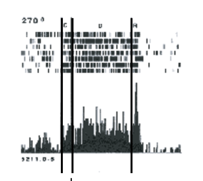</figure>
<p>a b c</p>
<p>Hình 8.11 Minh họa trí nhớ làm việc sinh lý thông qua việc duy trì hoạt động trễ trong các thí nghiệm sinh lý học. Một mục tiêu được trình chiếu giữa các thời điểm a và b, và vị trí của mục tiêu phải được ghi nhớ cho đến khi cần thực hiện hành động tại thời điểm c [chi tiết từ Funahashi, Bruce và Goldman-Rakic, Journal of Neurophysiology 61: 331–49 (1989)].</p>
<p>bởi người làm thí nghiệm.</p>
<p>Ví dụ, vỏ não thái dương dưới (IT) ở khỉ khá chọn lọc trong việc đáp ứng với các vật thể phức tạp cụ thể. Một số dữ liệu từ các bản ghi trong vùng này của Chelazzi và cộng sự được trình bày trong Hình 8.10A. Trong thí nghiệm của họ, họ cho khỉ xem các vật thể khác nhau và chọn các vật thể mà tế bào IT được ghi nhận đáp ứng mạnh (vật thể tốt) và yếu (vật thể xấu). Trong minh họa của Hình 8.10A, tần số phát xung trung bình của một tế bào IT đối với một kích thích tốt được thể hiện bằng đường nét liền. Khoảng thời gian khi kích thích gợi ý được trình chiếu được biểu thị bằng thanh màu xám trong hình này. Đáp ứng đối với một vật thể ‘xấu’ được minh họa trong hình bằng đường nét đứt. Thay vì tăng tần số trong suốt thời gian trình chiếu gợi ý, neuron này dường như đáp ứng với tần số phát xung thấp hơn tần số nền thông thường. Ở thời điểm sau đó, con khỉ được cho xem cả hai vật thể và được yêu cầu chọn vật thể đã được dùng làm gợi ý. Neuron IT ban đầu đáp ứng trong cả hai điều kiện, nhưng đáp ứng ở các giai đoạn sau lại khá khác biệt.</p>
<p>Một số khía cạnh của dữ liệu thực nghiệm được nắm bắt bởi các mô phỏng của mô hình DNF như minh họa trong Hình 8.10B. Đường nét liền biểu diễn hoạt động của một nút bên trong bong bóng đáp ứng của trường thần kinh. Trong các mô phỏng này, một hằng số ức chế khá lớn đã được sử dụng sao cho hoạt động suy giảm sau khi kích thích bên ngoài bị loại bỏ. Hoạt động của đường nét đứt tương ứng với hoạt động của một nút bên ngoài bong bóng hoạt động. Hoạt động của nút này bị suy yếu do sự ức chế bên trong suốt quá trình trình chiếu kích thích. Ngoài ra, khi cả hai vật thể được dùng làm đầu vào, hoạt động tại cả hai vị trí ban đầu sẽ tăng lên. Chỉ sau đó, gói hoạt động lớn hơn một chút, chẳng hạn như khi được mô hình hóa bằng sự hỗ trợ bổ sung từ trí nhớ làm việc, mới thống trị động lực học và chủ động ức chế gói hoạt động kia.</p>
<p>Một vấn đề quan trọng khác là việc chứng minh trí nhớ làm việc sinh lý bằng sự phát xung liên tục trong não. Việc duy trì hoạt động thần kinh trong một khoảng thời gian trễ đã được quan sát thấy qua thực nghiệm. Một ví dụ về thí nghiệm như vậy của Funahashi, Bruce và Goldman-Rakic được trình bày trong Hình 8.11. Các nhà nghiên cứu này đã huấn luyện một con khỉ giữ mắt nhìn vào một điểm cố định trung tâm cho đến khi có tín hiệu ‘thực hiện’ (go), chẳng hạn như một âm thanh, báo hiệu rằng nó nên di chuyển mắt và tập trung vào một trong số các mục tiêu khả dĩ ở ngoại vi</p>
<figure class="bookfig">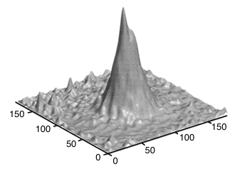</figure>
<h2>150 150</h2>
<h2>100 100 50 50 0 0</h2>
<p>Hình 8.12 Đáp ứng của nhiều neuron hồi hải mã ở một loài gặm nhấm đáp ứng với vị trí (các nơi chốn) của đối tượng trong một mê cung. Hình vẽ cho thấy tần số phát xung của các neuron khi đáp ứng với một vị trí cụ thể, trong đó các neuron được sắp xếp trong hình sao cho các neuron có đặc tính đáp ứng tương tự được đặt liền kề nhau [Samsonowich và McNaughton, Journal of Neuroscience 17: 5900–20 (1997)].</p>
<p>điểm cố định. Lựa chọn mục tiêu mà mắt cần di chuyển tới trong mỗi lượt thử được chỉ báo bằng một tia sáng ngắn, nằm giữa hai vạch dọc đầu tiên trong hình, nhưng đối tượng không được phép di chuyển mắt cho đến khi có tín hiệu ‘thực hiện’ được chỉ báo bằng vạch dọc thứ ba trong hình. Do đó, vị trí mục tiêu cho mỗi lượt thử phải được ghi nhớ trong khoảng thời gian trễ. Các nhà thực nghiệm đã ghi nhận từ các neuron ở vỏ não trước trán lưng–bên (vùng 46) và tìm thấy các neuron hoạt động trong suốt khoảng thời gian trễ. Các neuron này nhạy cảm với hướng mục tiêu cụ thể (neuron được hiển thị chỉ đáp ứng khi mục tiêu ở góc 270 độ), và do đó neuron này có thể chỉ báo bằng hoạt động trễ của nó hướng mà mắt nên hướng tới sau khoảng thời gian trễ. Có thể hoạt động liên tục như vậy của các neuron được hỗ trợ bởi các cơ chế nội bào như sự kích hoạt các kênh ion có điện thế đảo ngược cao. Tuy nhiên, một lời giải thích phổ biến hơn là hoạt động trí nhớ làm việc như vậy được duy trì thông qua hoạt động thần kinh dội lại theo chiều ngang như được mô hình DNF nắm bắt. Mô hình này hấp dẫn vì nhiều lý do, chẳng hạn như khả năng mô phỏng các tương tác với những ký ức khác, như sẽ thảo luận sau.</p>
<p>Ví dụ cuối cùng minh họa các biểu diễn không gian trong vỏ não cổ (archicortex). Một số neuron trong hồi hải mã của chuột phát xung liên quan đến các vị trí cụ thể bên trong mê cung nơi chuột đang di chuyển tự do. Trong một số thí nghiệm</p>
<p>Vì các tế bào vị trí (place cells) hồi hải mã không biểu hiện tính đều đặn trong không gian vật lý của mô não, một mẫu kết nối được nối dây cứng (ví dụ: được mã hóa di truyền) có lẽ không được sử dụng trong cấu trúc này. Tuy nhiên, chúng ta đã thấy tính đều đặn trong các mô hình trên khi sắp xếp các nút theo các giá trị đặc trưng mà chúng biểu diễn. Việc phát hiện tổ chức này trong bản đồ chức năng lẽ ra đã rất khó khăn nếu không làm vậy. Điều này được minh họa trong Hình 8.13 với một ví dụ một chiều, nơi chúng tôi đã gắn nhãn các nút và chỉ ra cường độ tương đối của trọng số giữa các nút khác nhau bằng các đường thẳng có độ dày khác nhau, tương ứng với độ mạnh tương đối của các kết nối. Trước khi học, được minh họa trong Hình 8.13A, chúng ta có thể giả định rằng tất cả các nút đều có trọng số bằng nhau đối với nhau. Số chiều của mô hình này có thể được coi là cao khi chúng ta lấy số lượng láng giềng — số lượng nút mà mỗi nút được kết nối tương đối mạnh — làm thước đo. Khác với mô hình trước, chúng tôi đã gán ngẫu nhiên cho mỗi nút một hướng ưa thích nơi nó phát xung cực đại. Do đó, sau khi huấn luyện, chúng ta thu được các trọng số trong không gian ‘vật lý’ của các nút, như được chỉ ra trong Hình 8.13B, trông khá ngẫu nhiên. Trật tự trong tính kết nối chỉ trở nên rõ ràng khi cuối cùng chúng ta sắp xếp lại các nút sao cho các nút kết nối mạnh nằm liền kề nhau. Sau khi làm như vậy (Hình 8.13C), chúng ta thấy rằng nó có cấu trúc một chiều phản ánh cấu trúc một chiều của không gian đặc trưng đã được sử dụng để huấn luyện mạng này.</p>
<p>3 2 A. Kết nối đầy đủ B. Sau khi học C. Sau khi học (đã sắp xếp lại)</p>
<p>1 18 5</p>
<p>3 2 1 20 19</p>
<p>19 4 1 20 19</p>
<p>12</p>
<p>4</p>
<p>10</p>
<p>18</p>
<p>4</p>
<p>18</p>
<p>15</p>
<p>7</p>
<p>17</p>
<p>5</p>
<p>17</p>
<p>5</p>
<p>20</p>
<p>9</p>
<p>16</p>
<p>6</p>
<p>16</p>
<p>6</p>
<p>17</p>
<p>15</p>
<p>6</p>
<p>7</p>
<p>15</p>
<p>7</p>
<p>8</p>
<p>3 13 16 14 8 2 11</p>
<p>14 13 12 11 10 9</p>
<p>8</p>
<p>14 13 12 11 10 9</p>
<p>Hình 8.13 Một mô hình mạng hút liên kết hồi quy, nơi các nút được đặt tùy ý trong không gian vật lý trên một vòng tròn. Cường độ kết nối tương đối giữa các nút được biểu thị bằng độ dày của các đường nối giữa các nút. Mỗi nút đáp ứng trong quá trình học với một hồ sơ phát xung Gauss xung quanh kích thích làm hưng phấn nút đó cực đại. Mỗi nút được gán một tâm của trường tiếp nhận một cách ngẫu nhiên từ một nhóm các tâm bao phủ miền huấn luyện tuần hoàn. (A) Trước khi huấn luyện, tất cả các nút đều có trọng số tương đối giống nhau giữa chúng. (B) Sau khi huấn luyện, cấu trúc trọng số tương đối đã thay đổi, với một vài kết nối mạnh và một số kết nối yếu hơn. (C) Tính đều đặn của các tương tác có thể được bộc lộ bằng cách sắp xếp lại các nút sao cho các nút có kết nối mạnh nhất nằm liền kề nhau.</p>
<p>Chúng ta đã giảm số chiều của mạng ban đầu xuống thành một mẫu kết nối một chiều. Nếu chúng ta đã huấn luyện mạng ban đầu với các mẫu từ một không gian đặc trưng hai chiều, chúng ta sẽ tạo ra một cấu trúc hai chiều trong ma trận trọng số, mặc dù điều này có thể chỉ thấy được sau khi sắp xếp lại các nút cho phù hợp. Việc sắp xếp lại các nút mà chúng ta đã sử dụng tương đương với việc sắp xếp lại các neuron hồi hải mã đã thảo luận ở trên và giải thích tại sao phải làm điều này để thấy được ‘tính đều đặn’ trong mẫu phát xung. Từ đây chúng ta có thể thấy rằng mạng tự tổ chức để phản ánh số chiều của không gian đặc trưng. Mạng ‘khám phá’ ra số chiều của bài toán nền tảng từ sự đồng kích hoạt phụ thuộc hoạt động của các neuron, vốn là đặc trưng cơ bản của học tập Hebb, như đã thảo luận trong Chương 6.</p>
<h3>Kích thước gói hoạt động ( )</h3>
<p>x2−x1 π</p>
<h2>0 0</h2>
<h2>1 0.2 0.4 0.6 0.8</h2>
<h3>C Hằng số ức chế</h3>
<p>Hình 8.14 Kích thước của gói hoạt động theo hàm của hằng số ức chế C. Đường chấm tương ứng với các nghiệm của phương trình 8.17, trong khi đường nét liền hiển thị kết quả từ các mô phỏng.</p>
<p>8.3.4 Phân tích hình thức về các trạng thái hút ⋄</p>
<p>Mô hình trường thần kinh động ở dạng trình bày ở đây được Sun-ichi Amari giới thiệu vào năm 1977, khi ông cũng nghiên cứu chi tiết các nghiệm của những mô hình như vậy. Chúng ta sẽ theo đuổi một số ý tưởng cơ bản trong phân tích của ông tại đây. Để đơn giản, chúng ta giả định một hàm kích hoạt ngưỡng, g(x) = θ(x), làm cho tần số phát xung bên trong gói hoạt động bằng 1 trong khi đặt tần số phát xung bên ngoài gói hoạt động bằng 0. Như chúng ta sẽ thấy, lựa chọn này rất thuận tiện. Các kết quả với hàm kích hoạt ngưỡng là một phép xấp xỉ tốt cho các mạng có hàm kích hoạt mượt hơn, bởi vì các gói hoạt động có thể sắc nét ngay cả với một hàm kích hoạt sigmoid mượt. Hàm kích hoạt ngưỡng rất hữu ích vì trạng thái dừng (∂u/∂t = 0) của phương trình động lực học 8.6, không có đầu vào bên ngoài (Iext = 0), khi đó có thể viết thành:</p>
<h3>Z x2</h3>
<p>u(x) = w(x, y)dy, (8.15)</p>
<p>x1 trong đó x1 và x2 là các vị trí biên của gói hoạt động. Điều này phải đúng với mọi x, bao gồm cả các biên mà tại đó u(x1) = u(x2) = 0, sao cho phương trình sau đây cũng phải thỏa mãn,</p>
<h3>Z x2</h3>
<p>w(x1, y)dy = 0. (8.16)</p>
<p>x1</p>
<p>Đối với nhân trọng số Gauss, phương trình 8.14, phương trình trên có thể được giải bằng hàm sai số (xem phương trình 3.54),</p>
<p>√πσrerf(x2 −x1</p>
<p>2σr ) = C(x2 −x1). (8.17)</p>
<p>Phương trình này có thể được giải bằng phương pháp số và được minh họa trong Hình 8.14 dưới dạng đường chấm. Các mô phỏng tương ứng của mô hình DNF được hiển thị trong Hình 8.14 dưới dạng đường nét liền. Nghiệm giải tích mô tả khá tốt chế độ ổn định, nhưng hơi lệch so với các nghiệm số trong vùng chuyển tiếp giữa các chế độ khác nhau.</p>
<p>Còn tính ổn định của gói hoạt động đối với các chuyển động thì sao? Để trả lời câu hỏi này, chúng ta tính vận tốc của các biên. Một chuyển động của</p>
<h3>A. Hai hàm Gauss</h3>
<p>x 1 x 2</p>
<h3>B. Gradient của gói hoạt động</h3>
<h3>Δx 1</h3>
<p>x 2 Δ</p>
<p>Hình 8.15 (A) Hai đường cong chuông Gauss đặt tâm xung quanh hai giá trị khác nhau x1 và x2. Diện tích của vùng gạch sọc và vùng chấm là bằng nhau do tính đối xứng của đường cong chuông. Do đó, các tích phân từ x1 đến x2 trên hai đường cong khác nhau là bằng nhau. Điều này không đúng nếu hai đường cong không đối xứng và có hình dạng khác nhau. (B) Đường nét đứt phác thảo hình dạng của một gói hoạt động từ một mô phỏng. Tính đối xứng của gói hoạt động này làm cho các gradient ở hai biên bằng nhau ngoại trừ dấu.</p>
<p>gói hoạt động khi không có đầu vào bên ngoài chỉ có thể bắt nguồn từ các lực được tạo ra bởi chính hình dạng của gói hoạt động. Lực khi đó tỷ lệ thuận với gradient của gói hoạt động, và vận tốc là dx dt = −∆xdu dt , (8.18)</p>
<p>trong đó chúng ta đã tính đến khả năng phụ thuộc thời gian tường minh của gói hoạt động. Để có được vận tốc của các biên, chúng ta phải thay x = x1 hoặc x = x2 vào phương trình này. Sau đó chúng ta có thể thay phương trình 8.6 vào phương trình này để thu được công thức cho vận tốc của biên, hoặc tương tự cho tâm của gói hoạt động, xc(t) = 1</p>
<p>2(x1(t) + x2(t)), (8.19)</p>
<p>được cho bởi</p>
<h3>Z x2</h3>
<h3>Z x2</h3>
<p>dxc dt = − 1 2τ∆x1 w(x1, y)dy − 1 2τ∆x2 w(x2, y)dy. (8.20)</p>
<p>x1 x1</p>
<p>Biểu thức ở vế phải của phương trình bằng không khi hàm trọng số đối xứng và bất biến dịch chuyển, và các gradient của gói hoạt động tại các biên là giống nhau ngoại trừ dấu của chúng. Các điều kiện này được minh họa trong Hình 8.15. Đối với hàm trọng số Gauss, vốn đối xứng và bất biến dịch chuyển, chúng ta thấy rằng tích phân từ x1 đến x2 của hàm Gauss đặt tâm quanh x1 bằng với tích phân của hàm Gauss đặt tâm quanh x2. Ngoài ra, một khi chúng ta có một gói hoạt động đối xứng, rõ ràng là các gradient tại các biên bằng nhau ngoại trừ dấu, như minh họa trong Hình 8.15B. Vận tốc tâm của gói hoạt động đối với một hàm trọng số đối xứng do đó bằng không (dxc/dt = 0), và gói hoạt động giữ nguyên tâm xung quanh vị trí mà nó được khởi tạo.</p>
<p>Chúng ta đã chứng minh một cách hình thức rằng gói hoạt động trong các mô hình có ma trận trọng số bất biến dịch chuyển và đối xứng là ổn định. Phương trình 8.20 cũng cho chúng ta biết khi nào gói hoạt động không ổn định và do đó có thể bị trôi dạt (drift). Ví dụ, vận tốc tâm của gói hoạt động không bằng không khi tính bất biến dịch chuyển của ma trận trọng số bị phá vỡ. Ma trận trọng số được tạo ra bởi quá trình học Hebb trên các mẫu ngẫu nhiên, như sẽ thảo luận trong Chương 9, không bất biến dịch chuyển. Các mạng bộ nhớ liên kết như vậy do đó trôi dạt khỏi các điều kiện ban đầu hướng tới một điểm hút (point attractor), như sẽ thảo luận trong chương tiếp theo.</p>
<p>Một yếu tố quan trọng khác là nhiễu trong hệ thống, điều mà chúng ta luôn phải tính đến khi thảo luận về các cơ chế não bộ. Nhiễu phá vỡ tính đối xứng cũng như tính bất biến dịch chuyển của các hàm trọng số khi nhiễu là độc lập đối với từng thành phần của trọng số. Do đó, gói hoạt động trong các mạng như vậy trôi dạt về một số điểm nơi các lực dịch chuyển bù trừ cho nhau. Điều này dẫn đến sự phân cụm của các trạng thái cuối. Một ví dụ được trình bày trong Hình 8.16A. Mỗi đường cong trong đồ thị tương ứng với sự tiến triển theo thời gian của trọng tâm của gói hoạt động sau khi mạng được khởi tạo với một gói hoạt động đặt tâm xung quanh một nút khác nhau trong mạng. Sự trôi dạt do nhiễu gây ra này có một số hệ quả thú vị đối với các hoạt động trong não. Ví dụ, sự trôi dạt làm cho việc biểu diễn chính xác các vị trí trong một thời gian dài trở nên bất khả thi. Thật vậy, các thí nghiệm cho thấy cảm giác về phương hướng trong bóng tối giảm dần sau một khoảng thời gian. Lưu ý rằng sự trôi dạt của gói hoạt động do nhiễu giảm đi theo kích thước của hệ thống vì các thành phần nhiễu có thể triệt tiêu lẫn nhau khi hàm trọng số là kết quả tương tác của nhiều nút có nhiễu.</p>
<p>Một nguồn gây bất đối xứng khác trong hàm trọng số là việc huấn luyện mạng không đều hoặc từng phần. Trong các ví dụ trước, chúng ta luôn huấn luyện mạng trong cùng một khoảng thời gian, với các gói hoạt động đặt tâm tại mọi nút trong mạng. Điều này không chỉ đòi hỏi các phiên huấn luyện kéo dài, mà còn phi thực tế về mặt sinh học vì đối tượng sẽ phải khám phá một môi trường mới theo cách rất đều đặn. Tác động của việc huấn luyện từng phần được minh họa bằng các mô phỏng trong Hình 8.16B–D. Ở đó, chúng tôi đã huấn luyện mạng với các gói hoạt động chỉ đặt tâm xung quanh 10 nút khác nhau trong mạng. Một góc nhìn một phần của ma trận trọng số thu được được trình bày trong Hình 8.16B. Các giá trị của ma trận trọng số lớn nhất tại các vị trí đã được sử dụng để huấn luyện. Tâm của gói hoạt động với ma trận trọng số thu được, không bao gồm bất kỳ nhiễu nào, cũng cho thấy sự trôi dạt đối với các trạng thái ban đầu xung quanh các vị trí đã huấn luyện (Hình 8.16C). Đây là một mạng điểm hút, được thảo luận nhiều hơn trong chương tiếp theo. Lưu ý rằng các vị trí nằm chính xác ở giữa các vị trí đã huấn luyện cũng ổn định, nhưng chỉ ổn định biên duyên (marginally stable). Một độ lệch nhỏ sẽ dẫn đến sự trôi dạt về các vị trí đã huấn luyện.</p>
<p>Sự trôi dạt trong gói hoạt động có thể được ổn định hóa bằng một sự gia tăng nhỏ về tính dễ kích thích của các neuron một khi chúng vừa được kích hoạt gần đây. Điều này tương ứng với một tính phi tuyến phụ thuộc điện thế ở neuron hậu synap có thể giúp duy trì sự phát xung trong một mạng hồi quy. Các tính phi tuyến phụ thuộc điện thế như vậy, chẳng hạn, có thể được thực hiện bởi các thụ thể NMDA. Chúng ta đã đề cập trong Chương 4 rằng</p>
<h2>10 20 30 40 50 60 70 80 90 100</h2>
<p>wij</p>
<h3>Số thứ tự nút</h3>
<h2>0 500 1000 1500 2000</h2>
<p>i = j</p>
<h3>Thời gian [τ ]</h3>
<p>. D . C</p>
<p>Tâm khối của các gói hoạt động được huấn luyện trên 10 vị trí (có NMDA)</p>
<h3>Tâm khối của các gói hoạt động được huấn luyện trên 10 vị trí</h3>
<p>10 20 30 40 50 60 70 80 90 100</p>
<p>10 20 30 40 50 60 70 80 90 100</p>
<h3>Số thứ tự nút</h3>
<h3>Số thứ tự nút</h3>
<p>0 1000 2000 3000 4000</p>
<p>0 1000 2000 3000 4000</p>
<h3>Thời gian [τ [ n a i g i ờ h T ] τ]</h3>
<p>Hình 8.16 (A) Mô phỏng với ma trận trọng số có nhiễu: sự tiến triển theo thời gian của trọng tâm các gói hoạt động trong một mô hình DNF với 100 nút. Mô hình được huấn luyện với các gói hoạt động trên tất cả các vị trí có thể. Mỗi thành phần của ma trận trọng số thu được sau đó được tích chập với một lượng nhiễu. (B) Học không đều hoặc từng phần: góc nhìn một phần của ma trận trọng số thu được từ việc huấn luyện mạng với các gói hoạt động chỉ trên một vài vị trí. (C) Sự tiến triển theo thời gian của trọng tâm các gói hoạt động trong mô hình DNF với 100 nút sau khi huấn luyện mạng trên chỉ 10 vị trí khác nhau. (D) Ổn định hóa ‘NMDA’. Mạng được huấn luyện trên 10 vị trí được bổ sung thêm một cơ chế ổn định hóa giúp giảm ngưỡng phát xung của các neuron đang hoạt động.</p>
<p>các thụ thể NMDA bị chặn bởi các ion magiê khi neuron ở trạng thái nghỉ. Sự phong tỏa này được gỡ bỏ sau khi điện thế màng tăng lên. Do đó, chúng ta có thể kích thích neuron ở lần tiếp theo dễ dàng hơn nhiều, nếu thời gian cần thiết để chặn lại kênh dài hơn so với thời gian của xung điện tiếp theo đi tới.</p>
<p>Chúng ta có thể mô phỏng một tính phi tuyến phụ thuộc điện thế như vậy với hằng số thời gian tương đối dài bằng cách thay đổi ngưỡng trong hàm kích hoạt của các neuron mô hình. Trong các mô phỏng ở Hình 8.16D, chúng tôi đã thay đổi giá trị ngưỡng α từ giá trị α = 0 được dùng trong tất cả các mô phỏng trước đây xuống giá trị thấp hơn là α = 10 đối với các neuron vượt quá 50% tần số phát xung cực đại của chúng. Giá trị được đặt lại về α = 0 khi các neuron giảm xuống dưới ngưỡng 50% này. Thay đổi này trong các mô phỏng là đủ để tăng số lượng các điểm hút (xem Hình 8.16D), với hầu hết các trạng thái gần các vị trí đã huấn luyện đều ổn định. Chỉ các trạng thái ở xa vị trí đã huấn luyện mới trôi dạt ban đầu về trạng thái hút gần nhất. Việc tăng tính phi tuyến phụ thuộc điện thế sẽ làm cho nhiều trạng thái ổn định hơn. Tuy nhiên, chúng ta không muốn làm cho cơ chế này quá thống trị, vì nếu không chúng ta sẽ đánh mất bản chất cạnh tranh của mạng, vốn rất quan trọng đối với hầu hết các ứng dụng của các mô hình mạng này. Cho đến nay,</p>
<h2>90 Quen thuộc Mới lạ</h2>
<h3>Tần số phát xung [xung/s]</h3>
<p>60</p>
<p>30</p>
<h2>0 90 180 270 360 0</h2>
<h3>Hướng đầu [độ]</h3>
<p>Hình 8.17 Đáp ứng thực nghiệm của một neuron ở vùng dưới hồi hải mã (subiculum) của một loài gặm nhấm khi con vật quay đầu theo các hướng khác nhau [vẽ lại từ Golob và Taube, Journal of Neuroscience 19: 7198–211 (1999)].</p>
<p>chưa có sự xác minh thực nghiệm trực tiếp nào cho đề xuất này, nhưng một sự xác minh trực tiếp có thể thực hiện được bằng cách phong tỏa có chủ đích các thụ thể NMDA. Mô hình dự đoán rằng sự trôi dạt trong các gói hoạt động sẽ tăng lên, tương ứng với sự nhầm lẫn nhanh chóng về cảm giác phương hướng.</p>
<p>8.4 Tích phân ‘đường đi’ và quy tắc dấu vết Hebb ⋄</p>
<p>Con người thường có ở một mức độ nhất định cảm giác về phương hướng. Điều này gợi ý rằng chúng ta phải có một dạng biểu diễn không gian nào đó trong não. Cảm giác về phương hướng có thể được kiểm tra bằng một thí nghiệm đơn giản. Nếu một đối tượng được đặt trên một chiếc ghế xoay với mắt nhắm lại trong khi có người xoay đối tượng đi một góc nhất định, có thể thấy rằng dự đoán của đối tượng về hướng mới là khá chính xác. Điều này chứng minh hai vấn đề quan trọng: thứ nhất, chúng ta phải có một biểu diễn về hướng cơ thể hoặc hướng đầu, và thứ hai, chúng ta phải có một cơ chế để cập nhật thông tin này mà không cần các tín hiệu thị giác.</p>
<p>Chúng ta đã thấy rằng thông tin không gian được biểu diễn bằng các trường vị trí (place fields) trong hồi hải mã của chuột, và các thông tin không gian khác, chẳng hạn như hướng đầu, cũng có thể được tìm thấy ở đó và ở các vùng lân cận khác. Ví dụ, ở vùng dưới hồi hải mã của loài gặm nhấm, người ta phát hiện thấy sự phát xung của các neuron biểu diễn hướng mà con vật đang hướng tới. Một ví dụ được trình bày trong Hình 8.17 từ việc ghi nhận hoạt động của một tế bào khi con vật được xoay theo các hướng khác nhau. Đường nét liền biểu diễn đặc tính đáp ứng của neuron này trong một mê cung quen thuộc. Neuron phát xung cực đại đối với một hướng cụ thể và phát xung với tần số thấp hơn đối với các hướng xung quanh hướng ưa thích của neuron này. Đường cong được hiển thị là một đường cong tinh chỉnh của các biểu diễn hướng đầu trong vùng dưới hồi hải mã. Đường nét đứt biểu diễn các đặc tính hướng đầu mới của cùng neuron đó khi con vật được đặt vào một mê cung mới, xa lạ. Các đặc tính đáp ứng mới thông thường sẽ tương tự như trước đó, nghĩa là các tế bào hướng đầu cố gắng duy trì xấp xỉ các đặc tính đáp ứng của chúng đối với các hướng đầu cụ thể. Tuy nhiên, các kết quả được hiển thị lại được tạo ra trong các thí nghiệm với một con vật bị tổn thương vỏ não làm suy yếu khả năng duy trì các đặc tính đáp ứng sau khi con vật được chuyển sang một môi trường mới. Người ta đã chứng minh rằng các neuron hướng đầu tiếp tục phát xung trong bóng tối, đây là một ví dụ khác về trí nhớ làm việc sinh lý thông qua hoạt động thần kinh duy trì liên tục sau khi loại bỏ kích thích. Trong phần này, chúng ta thảo luận cách biểu diễn hướng đầu hiện tại có thể được cập nhật trong các mô hình DNF.</p>
<p>8.4.1 Tích phân đường đi với các nhân trọng số bất đối xứng</p>
<p>Một cách để cập nhật trạng thái được biểu diễn bởi một tầng DNF là áp dụng một kích thích bên ngoài vào một vị trí mới. Tất nhiên, điều này chỉ khả thi nếu chúng ta biết giá trị tuyệt đối cho vị trí mới, vốn phải được biểu diễn tường minh để chúng ta có thể áp dụng một kích thích bên ngoài tại vị trí tương ứng trong mạng. Tuy nhiên, một đối tượng có thể không có sẵn giá trị tuyệt đối như vậy, ví dụ khi xoay một đối tượng đang nhắm mắt. Điều này giống như việc chở một người bịt mắt đi quanh thành phố và sau một thời gian hỏi xem chúng ta đang ở đâu. Để giải quyết bài toán này, chúng ta phải ‘tính toán’ vị trí mới từ vị trí cũ và những thay đổi chúng ta đã thực hiện (thông tin vận tốc bao gồm xoay và tốc độ tiến tới) trong khoảng thời gian này. Phép ‘tính toán’ này được gọi là tích phân đường đi (path integration), và chúng ta sẽ sử dụng thuật ngữ này cho tình huống tổng quát là tính toán một biểu diễn trạng thái mới từ một biểu diễn trạng thái ban đầu cộng với các tín hiệu chỉ báo sự thay đổi của trạng thái.</p>
<p>Chúng ta đã thấy trong phần trước rằng sự bất đối xứng trong nhân trọng số ở các mô hình DNF dẫn đến sự chuyển động của gói hoạt động. Một đề xuất để giải quyết bài toán tích phân đường đi liên quan đến việc sử dụng sự bất đối xứng như vậy một cách có hệ thống. Để làm được điều này, chúng ta phải tìm cách liên hệ độ mạnh của sự bất đối xứng với vận tốc chuyển động. Một tín hiệu vận tốc có thể do chính đối tượng tạo ra, và chúng ta gọi thông tin như vậy là các tín hiệu tự sinh (idiothetic cues), trong đó ‘idiothetic’ có nghĩa là tự tạo ra. Ví dụ là các đầu vào từ hệ thống tiền đình ở động vật có vú, có thể tạo ra các tín hiệu chỉ báo sự xoay của đầu và phản hồi cảm thụ bản thể (proprioceptive) từ các cơ báo hiệu sự thay đổi vị trí của chúng. Những tín hiệu như vậy sẽ là đầu vào cho các mô hình tiếp theo của chúng ta, trong đó chúng ta sẽ lại tập trung vào hướng đầu làm ví dụ.</p>
<p>Một đề xuất về cách các tín hiệu vận tốc tự sinh có thể được sử dụng trong các mô hình DNF biểu diễn hướng đầu để cập nhật hệ thống được trình bày trong Hình 8.18. Để đơn giản, chúng tôi chỉ hiển thị ba nút của mạng hồi quy biểu diễn hướng đầu của một đối tượng, và chỉ đưa vào các kết nối bên (collateral) tới các nút lân cận. Ngoài các nút hướng đầu này, chúng tôi đưa vào hai nút khác (cũng có thể biểu diễn một tập hợp các neuron), mà chúng tôi gọi là các nút xoay (rotation nodes). Để đơn giản, chúng ta giả định rằng tần số phát xung của các nút này tỷ lệ thuận trực tiếp với vận tốc chuyển động của đầu. Ý tưởng chính đằng sau mô hình là các nút xoay này có thể điều biến độ mạnh của các kết nối bên giữa các nút DNF. Ảnh hưởng điều biến này làm cho nhân trọng số hiệu dụng bên trong mạng hút theo một hướng mạnh hơn hướng kia, do đó cho phép gói hoạt động di chuyển theo một hướng cụ thể với tốc độ được xác định bởi tần số phát xung của các nút xoay.</p>
<p>Tác động của hoạt động nút xoay lên mạng hút phải mang tính điều biến (tức là phép nhân) trái ngược với phép cộng, bởi vì trường hợp sau sẽ chỉ tạo ra một đầu vào bên ngoài bằng nhau cho tất cả các nút mà không thể làm dịch chuyển gói hoạt động. Tác động điều biến có thể, chẳng hạn, được thực hiện bằng các nút sigma–pi như đã giới thiệu trong Mục 5.6. Điều này, đến lượt nó, có một số cách triển khai khả dĩ ở cấp độ neuron. Đối với thảo luận sau đây, chỉ cần nghĩ về hai đầu tận cùng synap nằm gần nhau về mặt vật lý</p>
<h3>(Các) nút xoay ngược chiều kim đồng hồ</h3>
<h3>(Các) nút xoay theo chiều kim đồng hồ</h3>
<h3>Các nút hướng đầu</h3>
<p>Hình 8.18 Mô hình tích phân đường đi hiển thị một vài tế bào hướng đầu với các kết nối bên. Các nút xoay biểu diễn tập hợp các neuron báo hiệu vận tốc xoay tỷ lệ với mức độ hoạt động của chúng. Các sợi hướng tâm của tế bào xoay có thể điều biến các kết nối bên trong mạng hướng đầu, được ký hiệu bằng các synap nằm gần các synap của các kết nối bên. Mỗi tế bào xoay có thể tạo synap lên từng synap trong mạng hướng đầu. Sự phân tách các kết nối, như được biểu thị bằng các đường nét liền và nét đứt, được tự tổ chức trong quá trình học.</p>
<p>có thể tương tác để tạo ra các hiệu ứng điều biến phi tuyến như vậy.</p>
<p>8.4.2 Tự tổ chức của một mạng xoay</p>
<p>Vấn đề lớn chúng ta phải giải quyết để làm cho mô hình này trở nên thực tế về mặt sinh học là tìm cách tự tổ chức mạng. Nếu chúng ta chỉ giả định rằng các nút xoay điều biến tất cả các synap như nhau thì chúng ta không thể làm dịch chuyển gói hoạt động. Thay vào đó, mạng phải học rằng sự phát xung ở một nút xoay chỉ báo, chẳng hạn, chuyển động xoay theo chiều kim đồng hồ chỉ nên điều biến các ‘synap theo chiều kim đồng hồ’ thích hợp trong mạng. Do đó, mạng phải học rằng các synap chỉ có trọng số mạnh khi đáp ứng với các trọng số thích hợp trong mạng hồi quy, như được biểu thị bằng các đường nét liền trong Hình 8.18. Ảnh hưởng của các synap đối diện, được biểu thị bằng các đường nét đứt, ít nhất phải yếu hơn. Để đạt được điều này, chúng ta cần một quy tắc học có thể liên kết chuyển động gần đây của gói hoạt động với sự phát xung của nút xoay thích hợp. Vì vậy, chúng ta cần có một dấu vết (trace), hay ‘trí nhớ ngắn hạn’, trong các nút, liên quan đến chuyển động gần đây của gói hoạt động. Một ví dụ về số hạng dấu vết như vậy (được biểu thị bằng dấu gạch ngang trên tần số phát xung) là,</p>
<p>¯ri(t + 1) = (1 −η)¯ri(t) + ηri(t). (8.21)</p>
<p>Đây là phiên bản rời rạc của một bộ tích phân rò rỉ và cũng có thể được viết dưới dạng vi phân. Số hạng dấu vết này biểu diễn trung bình trượt của các lần phát xung gần đây, với một cửa sổ trượt hàm mũ có độ rộng được đặc trưng bởi tham số η. Dạng chính xác của số hạng dấu vết này không quá quan trọng đối với các cơ chế tiếp theo, và các số hạng dấu vết khác có thể được sử dụng. Với dấu vết này trong sự phát xung của các nút ở mạng hồi quy, chúng ta có thể liên kết sự đồng phát xung của các tế bào xoay với chuyển động của gói hoạt động trong mạng hồi quy. Các trọng số giữa các nút xoay (có chỉ số trên ‘rot’) và các synap trong mạng hồi quy (không có chỉ số trên) có thể được hình thành bằng một quy tắc Hebb, δwrot ijk = ϵri¯rjrrot k . (8.22)</p>
<p>Tham số ϵ, như thường lệ, là tốc độ học. Quy tắc này củng cố các trọng số giữa nút xoay và các synap thích hợp trong mạng hồi quy. Như trước đây, chúng ta có thể hình thành các trọng số này trong giai đoạn học nơi sự phát xung của các nút được xác định bởi sự phát xung của đầu vào bên ngoài. Giai đoạn học này tương ứng với việc đối tượng khám phá môi trường bằng các tín hiệu thị giác và mang tính dị liên kết (hetero-associative) theo nghĩa nó liên kết các trạng thái liên tiếp nhau trong quá trình học.</p>
<p>8.4.3 Cập nhật mạng sau khi học</p>
<p>Sau khi các trọng số đã được học, chúng ta có thể cập nhật hướng đầu của một đối tượng mà không cần đầu vào bên ngoài. Động lực học của mô hình được xác định bằng τ ∂h(x, t)</p>
<h3>Z</h3>
<p>weff(x, y, rrot)r(y, t)rrot</p>
<p>∂t = −h(x, t) + i (t)dy, (8.23)</p>
<p>y trong đó chỉ số i gắn nhãn cho nhóm các nút của tế bào xoay theo chiều kim đồng hồ hoặc ngược chiều kim đồng hồ. Ma trận trọng số weff phụ thuộc vào hoạt động của các nút xoay, và mô tả nhân trọng số hiệu dụng bên trong mạng hồi quy từ các kết nối bên và ảnh hưởng điều biến của các tín hiệu tự sinh. Bản chất điều biến của những ảnh hưởng này có thể, chẳng hạn, được biểu diễn bằng weff ij = (wij −c)(1 + wrot ijkrrot k ), (8.24)</p>
<p>mặc dù các dạng hàm điều biến khác là khả dĩ và nhìn chung dẫn đến các kết quả tương tự như những kết quả được nêu bên dưới.</p>
<p>Hành vi của mô hình khi được huấn luyện trên các mẫu của một lần xoay theo chiều kim đồng hồ và một lần xoay ngược chiều kim đồng hồ, chỉ với một tốc độ xoay duy nhất, được minh họa trong Hình 8.19. Một kích thích vị trí bên ngoài đã được áp dụng ban đầu trong 10τ để khởi tạo một gói hoạt động, và gói hoạt động này ổn định sau khi loại bỏ kích thích bên ngoài khi các nút xoay không hoạt động. Trong khoảng 20τ ≤t ≤40τ, chúng tôi áp dụng một hoạt động xoay theo chiều kim đồng hồ tương ứng với hoạt động đã dùng trong quá trình học. Gói hoạt động sau đó di chuyển theo chiều kim đồng hồ một cách tuyến tính trong khoảng thời gian này. Chuyển động dừng lại ngay lập tức sau khi sự phát xung của tế bào xoay bị triệt tiêu tại t = 40τ. Trong khoảng 50τ ≤t ≤70τ, chúng tôi áp dụng tần số phát xung ngược chiều kim đồng hồ của nút ngược chiều kim đồng hồ gấp đôi giá trị đã dùng trong quá trình học. Gói hoạt động di chuyển với tốc độ gần gấp đôi theo hướng ngược chiều kim đồng hồ, chứng minh rằng mạng có thể tổng quát hóa sang các tốc độ xoay khác.</p>
<p>Các ví dụ về hàm trọng số sau khi học được trình bày trong Hình 8.20. Đường nét liền biểu diễn các giá trị trọng số bên đối xứng w50,i giữa nút 50 và các nút khác trong mạng. Các trọng số xoay theo chiều kim đồng hồ wrot</p>
<p>50,i,1 được hiển thị dưới dạng đường nét đứt trong hình. Dạng hàm của chúng không đối xứng như kỳ vọng.</p>
<figure class="bookfig">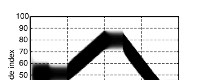</figure>
<h2>10 20 30 40 50 60 70 80 90 100</h2>
<h3>Chỉ số nút</h3>
<figure class="bookfig">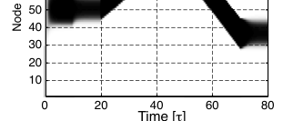</figure>
<h2>0 20 40 60 80</h2>
<h3>Thời gian [τ]</h3>
<h3>Kích thích bên ngoài</h3>
<p>r = 1 rot 1 r = 0 rot 2 r = 0 rot 1 r = 2 rot 2</p>
<p>Hình 8.19 Mô phỏng một mô hình DNF với các cơ chế cập nhật tự sinh. Gói hoạt động có thể được di chuyển bằng các đầu vào tự sinh theo chiều kim đồng hồ hoặc ngược chiều kim đồng hồ, tùy thuộc vào tần số phát xung của các tế bào xoay tương ứng. Các kích thích thực nghiệm được chỉ báo ở phía dưới.</p>
<p>30</p>
<p>20</p>
<p>10 w50,i</p>
<p>0</p>
<p>−10</p>
<p>−20</p>
<p>0 20 40 60 80 100 −30</p>
<h3>Chỉ số nút i</h3>
<p>Hình 8.20 Các hàm trọng số khác nhau từ nút 50 đến các nút khác trong mạng sau khi học. w, đường nét liền; wrot, đường nét đứt; weff, đường chấm.</p>
<h3>Các trọng số xoay ngược chiều kim đồng hồ tương ứng wrot</h3>
<p>50,i,2, không được hiển thị trong hình, là ảnh phản chiếu qua gương của đường nét đứt. Hàm trọng số hiệu dụng thu được (phương trình 8.24) được hiển thị dưới dạng đường chấm trong hình. Tất cả các ví dụ đều nằm trong một không gian đặc trưng có địa hình một chiều nội tại. Tuy nhiên, tích phân đường đi có thể đạt được theo những cách tương tự với các không gian đặc trưng ở số chiều cao hơn khi mạng tự tổ chức.</p>
<p>8.5 Biểu diễn phân tán và mã hóa quần thể</p>
<p>Chúng ta đã thảo luận trong chương này cách thông tin được biểu diễn trong các bản đồ vỏ não và một số bản đồ dưới vỏ não, và chúng ta sẽ kết thúc chương này bằng một thảo luận tổng quát hơn về mã hóa phân tán. Ở đây chúng ta xem xét rằng một kích thích được biểu diễn bởi một vectơ có các thành phần mang giá trị được cho bởi đáp ứng (chẳng hạn như tần số phát xung) của các neuron trong một vùng não. Khi đó chúng ta muốn biết có bao nhiêu thành phần được sử dụng tích cực để biểu diễn một kích thích trong não. Chúng ta có thể phân biệt sơ bộ ba lớp biểu diễn:</p>
<p>1. Biểu diễn cục bộ: Trong biểu diễn cục bộ, chỉ có một nút biểu diễn một kích thích ở chỗ chỉ có một nút hoạt động khi một kích thích cụ thể được trình chiếu. Một nút (hoặc neuron) đơn lẻ sẽ đủ để chỉ báo rằng một kích thích cụ thể đã xuất hiện. Các neuron có đặc điểm như vậy đã được gọi là tế bào chủ chốt (cardinal cells), tế bào giáo hoàng (pontifical cells), hoặc tế bào bà ngoại (grandmother cells). Một vectơ có độ dài N có thể biểu diễn N đặc trưng khác nhau với biểu diễn cục bộ như vậy. Số lượng kích thích có thể được mã hóa bởi một vectơ như vậy tăng tuyến tính theo số lượng thành phần (nút). Việc đọc ra kích thích nào đang được biểu diễn rất dễ dàng với biểu diễn cục bộ. Trong trường hợp các biểu diễn với các nút nhị phân chỉ ‘bật’ hoặc ‘tắt’, điều mà chúng ta sẽ thường xuyên xem xét sau này, chỉ có một nút ‘bật’ cho mỗi kích thích khả dĩ. 2. Biểu diễn phân tán hoàn toàn: Biểu diễn phân tán hoàn toàn có thể được xem là thái cực còn lại, so với biểu diễn cục bộ. Một kích thích được mã hóa bởi sự kết hợp hoạt động của tất cả các thành phần trong vectơ biểu diễn một kích thích. Trong trường hợp các nút nhị phân, chúng ta có thể nghĩ đến trường hợp xác suất mỗi nút bật hoặc tắt là bằng nhau (tức là 50%), sao cho số lượng nút hoạt động trung bình là 50%. Số lượng các kích thích khác nhau có thể được mã hóa bằng các vectơ như vậy tăng theo hàm mũ theo số lượng nút và do đó lớn hơn nhiều so với trường hợp biểu diễn cục bộ. Tuy nhiên, thông tin được lưu trữ trong một vectơ nút là như nhau, vì chúng luôn xác định duy nhất một kích thích. Một ưu điểm của biểu diễn như vậy là chúng ta có thể định nghĩa sự tương đồng của các kích thích bằng cách đếm xem có bao nhiêu thành phần của vectơ có giá trị tương tự nhau. Điều này rất quan trọng để xây dựng các liên kết. 3. Biểu diễn phân tán thưa: Có phần giống một sự dung hòa giữa hai biểu diễn trên là biểu diễn phân tán thưa (sparsely distributed representation). Trong sơ đồ này, chỉ một phần nhỏ các thành phần (nút) của một vectơ tham gia vào việc biểu diễn một kích thích nhất định. Số lượng kích thích có thể được biểu diễn bởi một vectơ có độ dài N khi đó nằm đâu đó ở giữa hai trường hợp trên. Lưu ý rằng hàm lượng thông tin phải giống nhau trong mọi trường hợp vì thông tin không thể thay đổi theo biểu diễn bên trong miễn là biểu diễn đó bảo toàn thông tin; chỉ có hàm lượng thông tin của mỗi nút là khác nhau. Trong trường hợp các vectơ nhị phân, chúng ta sẽ có xác suất một nút ‘tắt’ lớn hơn so với xác suất các nút ‘bật’.</p>
<p>8.5.1 Độ thưa</p>
<p>Để xác định một cách định lượng hơn xem có bao nhiêu (hoặc bao nhiêu phần trăm) neuron tham gia vào quá trình xử lý thần kinh của từng kích thích riêng lẻ, chúng ta định nghĩa ở đây một thước đo độ thưa (sparseness) của một biểu diễn. Một định nghĩa là hiển nhiên trong trường hợp các nút nhị phân. Nếu chúng ta xem xét các neuron (hoặc nút quần thể) hoặc đang hoạt động (r = 1) hoặc không (r = 0), thì số lượng nút trung bình đang hoạt động đối với một tập hợp các kích thích là a = 1</p>
<p>1 N</p>
<h3>X</h3>
<h3>X</h3>
<p>rs i , (8.25)</p>
<h3>S</h3>
<p>s i trong đó S là số lượng kích thích mà độ thưa được đánh giá trên đó, và N là số lượng neuron trong quần thể đang xét. Nói cách khác, nếu chúng ta xem xét các tần số phát xung tương đối r bằng 0 nếu neuron không đáp ứng hoặc 1 nếu nó đáp ứng, thì độ thưa của biểu diễn với các nút nhị phân được định nghĩa là</p>
<p>nơi giá trị trung bình được lấy trên số lượng neuron trong quần thể và số lượng kích thích trong tập kiểm tra. Một biểu diễn nhị phân phân tán hoàn toàn theo định nghĩa này có độ thưa a = 0.5, và độ thưa của các biểu diễn phân tán thưa sẽ nhỏ hơn nếu chúng ta giới hạn ở trường hợp số lượng nút bật nhỏ hơn N/2. Lưu ý rằng trường hợp ngược lại là có nhiều nút bật hơn nút tắt có thể được ánh xạ về trường hợp trước bằng cách định nghĩa lại các giá trị cho biểu diễn bật và tắt.</p>
<p>Định nghĩa độ thưa trong trường hợp các vectơ có thành phần liên tục (giá trị thực) không rõ ràng như vậy. Khi đó chúng ta phải quyết định đặt bao nhiêu trọng số lên đóng góp của các tần số phát xung nhỏ so với lớn. Điều chúng ta muốn làm là lấy thông tin trong tần số phát xung làm hệ số trọng số, điều đó có nghĩa là chúng ta nên tính đến tần số phát xung tương đối so với phương sai của tần số phát xung. Do đó, chúng ta định nghĩa độ thưa của một biểu diễn, một lần nữa được định nghĩa là giá trị trung bình trên một tập hợp các kích thích, là a = ⟨rs i ⟩2 i,s ⟨(rs</p>
<p>. (8.27)</p>
<p>i )2⟩i,s</p>
<p>Ví dụ, chúng ta có thể đo tần số phát xung của N neuron khi đáp ứng với một tập hợp S kích thích và ước lượng độ thưa là a = ( 1</p>
<p>1 N i rs i )2</p>
<h3>P</h3>
<h3>P</h3>
<p>s</p>
<h3>S</h3>
<p>i )2 . (8.28)</p>
<p>1 S</p>
<p>1 N i(rs</p>
<h3>P</h3>
<h3>P</h3>
<p>s</p>
<p>Các định nghĩa 8.25 và 8.27 tương đương nhau trong trường hợp các vectơ nhị phân có thành phần mang giá trị 0 và 1. Độ thưa của mã hóa với các đường cong tinh chỉnh, như được mô hình hóa bởi các mô hình DNF, có thể được tính từ kích thước của gói hoạt động. Ví dụ, độ thưa của các trạng thái cuối trong mô phỏng của Hình 8.9 là a = 0.56. Do đó, các đường cong tinh chỉnh hướng trong V1 chỉ ra một biểu diễn phân tán mạnh mẽ trong một siêu cột. Tuy nhiên, chúng ta sẽ thấy rằng một số vùng não, đặc biệt là hồi hải mã, vốn được thảo luận nhiều hơn trong chương tiếp theo, được cho là có các biểu diễn thưa hơn nhiều.</p>
<p>8.5.2 Mã hóa quần thể xác suất</p>
<p>Chúng ta kỳ vọng rằng thông tin về thế giới bên ngoài và quá trình xử lý thông tin được phân tán trong não, nhưng biểu diễn này có thể rất nhiễu do bản chất ngẫu nhiên của các hoạt động thần kinh, như đã thảo luận trong Chương 5. Ở đây chúng ta thảo luận về mã hóa xác suất, cách thức cụ thể mà một kích thích được mã hóa trong một neuron hoặc một quần thể neuron, và giải mã, cách một thông điệp có thể được đọc từ các đáp ứng của một neuron hoặc một quần thể neuron. Chúng ta có thể biểu diễn việc mã hóa một mẫu kích thích theo xác suất đáp ứng của các neuron trong một quần thể bằng một phân phối xác suất đồng thời của các đáp ứng thần kinh có điều kiện theo một kích thích s,</p>
<h3>P(r|s) = P(rs</h3>
<p>1, rs 2, rs 3, ...|s), (8.29)</p>
<p>trong đó rs i là đáp ứng đặc hiệu cho kích thích của neuron i trong quần thể. Ở đây chúng ta chủ yếu xem xét các tần số phát xung đặc hiệu cho kích thích làm đáp ứng, mặc dù các đại lượng đáp ứng khác như độ trễ phát xung có thể được xử lý trong cùng một khuôn khổ. Chúng ta sử dụng ký hiệu P với nghĩa là xác suất đối với các biến ngẫu nhiên rời rạc hoặc mật độ xác suất trong trường hợp các biến ngẫu nhiên liên tục.</p>
<p>Giải mã (decoding) là phép nghịch đảo của mã hóa, nghĩa là chúng ta muốn suy ra kích thích nào đã được trình chiếu từ các đáp ứng thần kinh của một neuron hoặc một quần thể neuron. Việc giải mã hoạt động não gần đây đã trở nên rất được quan tâm trong các giao diện não–máy tính (BCI), và não bộ có thể phải thực hiện những tính toán như vậy ở một số giai đoạn. Xác suất một kích thích đã xuất hiện, khi biết một mẫu đáp ứng nhất định của các neuron trong quần thể, được biểu thị bởi xác suất có điều kiện</p>
<h3>P(s|r) = P(s|rs</h3>
<p>1, rs 2, rs 3, ...). (8.30)</p>
<p>Nếu biết xác suất có điều kiện này, chúng ta có thể nói kích thích nào có khả năng xuất hiện cao nhất khi cho trước một đáp ứng nhất định của quần thể neuron. Hiển nhiên là nên chọn kích thích có khả năng cao nhất làm câu trả lời cho bài toán giải mã, s P(s|r), (8.31)</p>
<p>ˆs = arg max trong đó ˆs là ước lượng của chúng ta về kích thích và arg max f(x) là hàm chọn đối số x làm cực đại hóa biểu thức f(x). Chúng ta có thể ước lượng các xác suất có điều kiện P(r|s) từ các bản ghi tế bào như đã nêu ở trên, nhưng chúng ta lại cần xác suất có điều kiện P(s|r). Tuy nhiên, hai xác suất có điều kiện này liên hệ với nhau thông qua đẳng thức gọi là định lý Bayes.</p>
<h3>P(s|r) = P(r|s)P(s)</h3>
<h3>P(r) . (8.32)</h3>
<p>Định lý này quan trọng vì nó cho chúng ta biết cách kết hợp kiến thức tiên nghiệm, chẳng hạn như phân phối kỳ vọng của các kích thích, P(s), với một số bằng chứng được đo bằng P(r|s), để thu được phân phối hậu nghiệm P(s|r) mà từ đó ước lượng tối ưu (theo nghĩa thống kê) của kích thích có thể được tính bằng phương trình 8.31. Lưu ý rằng trong tài liệu đôi khi có những thảo luận và phê bình về ‘quan điểm Bayes’. Điều này đề cập đến một cuộc thảo luận mang tính triết học hơn về việc sử dụng lý thuyết xác suất để mô tả các thí nghiệm với các cơ chế nền tảng được cho là có bản chất tất định. Ngược lại, định lý Bayes là một đẳng thức trong lý thuyết xác suất (hoặc lý thuyết tập hợp) và không bị các nhà thống kê nghi ngờ.</p>
<p>P(r) là phép chuẩn hóa thích hợp sao cho vế trái lại là một xác suất. Để sử dụng định lý, chúng ta cần có một ước lượng về tiền nghiệm P(s) và bằng chứng P(r|s). Phép chuẩn hóa không cần thiết nếu chúng ta chỉ quan tâm đến việc tìm kích thích có khả năng cao nhất. Hãy xem xét trường hợp các kích thích có khả năng xảy ra như nhau. Khi đó chúng ta cần ước lượng xác suất P(r|s). Tuy nhiên, đây chính là thứ được cho bởi các đường cong tinh chỉnh.</p>
<p>Thật vậy, chúng ta có thể xem đại lượng này như một hàm của kích thích. Khi coi hàm xác suất như một hàm của kích thích, điều thường được thực hiện bằng cách xây dựng một mô hình (giả thuyết) cụ thể về đáp ứng, hàm này khi đó được gọi là hàm hợp lý (likelihood function). Vì vậy, chúng ta có thể hỏi kích thích cảm giác nào mang lại độ hợp lý cực đại của dữ liệu, s P(r|s), (8.33)</p>
<p>ˆsML = arg max được gọi là ước lượng hợp lý cực đại (maximum likelihood estimate). Trong thực tế, chúng ta chủ yếu cực đại hóa logarit của độ hợp lý vì xác suất đồng thời của các biến độc lập có thể được biểu diễn thành tích của các xác suất biên của chúng. Logarit của một tích là tổng logarit của từng số hạng riêng lẻ. Một tổng như vậy thường dễ tính toán hơn. Ngoài ra, lưu ý rằng khi phải tính đến tiền nghiệm, chúng ta cần sử dụng định lý Bayes để tính phân phối hậu nghiệm cực đại (MAP; phương trình 8.31) nhằm ước lượng kích thích có khả năng nhất gây ra đáp ứng thần kinh.</p>
<p>Tầm quan trọng của ước lượng hợp lý cực đại trong thống kê là ở chỗ nó là một ước lượng không chệch (unbiased estimate), tức là một ước lượng có giá trị kỳ vọng (trung bình) bằng đúng tham số thực, E(ˆsML = s). Hơn nữa, phương sai của ước lượng này là tối ưu theo nghĩa nó tiến tới phương sai nhỏ nhất có thể được cho bởi cận Cramér–Rao,</p>
<p>= 1 (ˆsML −s)2</p>
<p></p>
<h3>E</h3>
<p>, (8.34)</p>
<h3>IF</h3>
<p>trong đó IF là thông tin Fisher p(r|s)( d</p>
<h3>Z</h3>
<p>ds ln p(r|s))2ds. (8.35)</p>
<h3>IF = −</h3>
<p>Ước lượng hợp lý cực đại do đó có thể cung cấp một số ước lượng hợp lý với các tập dữ liệu hạn chế.</p>
<p>8.5.3 Giải mã tối ưu với các đường cong tinh chỉnh</p>
<p>Các đường cong tinh chỉnh thường được suy ra từ các đáp ứng trung bình của neuron đối với nhiều kích thích khác nhau, và những đường cong này cung cấp một ước lượng về hàm hợp lý. Chúng ta sử dụng lại các đường cong tinh chỉnh Gauss fi(s), ri = fi(s) = e−(s−spref i )2/2σ2 tc, (8.36)</p>
<p>với độ rộng σtc, và trong đó spref i là kích thích ưa thích của nút này. Một ví dụ được cung cấp trong Hình 8.21A. Lưu ý rằng chúng ta không thể xác định giá trị đặc trưng của kích thích từ tần số phát xung của một neuron một cách không mơ hồ bởi vì một tần số phát xung nhất định có thể là kết quả của hai kích thích khác nhau. Tuy nhiên, sự mơ hồ này được loại bỏ trong một mã quần thể. Một neuron thứ hai có đường cong tinh chỉnh bị dịch chuyển, được minh họa trong Hình 8.21B, có thể giải quyết sự mơ hồ. Trong ví dụ minh họa, tần số phát xung của neuron cao hơn trong trường hợp kích thích thực sự tương ứng với nghiệm bên phải so với phương án thay thế. Cũng lưu ý rằng độ chính xác của việc giải mã có thể khác nhau đối với các giá trị khác nhau của giá trị đặc trưng kích thích s. Độ phân giải tốt có thể đạt được tại nơi đường cong tinh chỉnh thay đổi nhiều nhất theo giá trị đặc trưng kích thích s, xung quanh hướng ưa thích</p>
<h3>Tần số phát xung</h3>
<h3>Tần số phát xung</h3>
<h3>Giá trị đặc trưng s (ví dụ: hướng)</h3>
<h3>Giá trị đặc trưng s (ví dụ: hướng)</h3>
<p>Hình 8.21 Các đường cong tinh chỉnh Gauss biểu diễn tần số phát xung của một neuron theo hàm của một đặc trưng kích thích. (A) Một neuron đơn lẻ không thể giải mã một cách không mơ hồ đặc trưng kích thích từ tần số phát xung. (B) Một neuron thứ hai có đường cong tinh chỉnh dịch chuyển có thể giải quyết sự mơ hồ.</p>
<p>độ dốc lớn nhất của đường cong tinh chỉnh, max(f ′(s)), chứ không phải tại cực đại. Tuy nhiên, với dữ liệu có nhiễu, chúng ta cũng phải tính đến tỷ lệ tín hiệu trên nhiễu, vốn có thể cao nhất tại tâm của các đường cong tinh chỉnh.</p>
<p>Sau đây chúng ta sẽ giả định rằng các dao động đáp ứng của các neuron xung quanh hồ sơ đáp ứng trung bình này là độc lập, sao cho xác suất có điều kiện P(r|s) có thể được viết thành tích các xác suất có điều kiện của từng neuron riêng lẻ,</p>
<h3>Y</h3>
<h3>P(r|s) =</h3>
<h3>P(ri|s). (8.37)</h3>
<p>i</p>
<p>Đây được gọi là giả định Bayes ngây thơ (naive Bayes). Chúng ta vẫn chưa biết các mật độ xác suất riêng lẻ và phải đoán điều này. Vì chúng ta đã ước lượng các đường cong tinh chỉnh từ các đáp ứng trung bình, và vì trung bình của các số ngẫu nhiên có xu hướng phân bố Gauss (theo định lý giới hạn trung tâm), chúng ta sử dụng</p>
<h3>P(ri|s) = 1 √</h3>
<p>2πσi e−(ri−fi(s))2/2σ2 i , (8.38)</p>
<p>chúng ta có thể tính hàm log-hợp lý bằng cách lấy logarit của biểu thức này và xem nó như một hàm của s. Bộ ước lượng hợp lý cực đại do đó có thể được trích xuất trong tình huống này bằng cách cực tiểu hóa biểu thức,</p>
<p>2</p>
<p>ri −fi(s)</p>
<h3>X</h3>
<p>ˆs = argmin , (8.39)</p>
<p>σi i đây là phép khớp bình phương tối thiểu của các điểm dữ liệu ri (tần số phát xung đo được) với các tần số phát xung kỳ vọng fi(s) của kích thích s.</p>
<p>8.5.4 Các triển khai cơ chế giải mã</p>
<p>Bây giờ chúng ta có thể phác thảo một số phương pháp thực tế để giải mã quần thể, vốn đã được đề xuất làm các triển khai cơ chế giải mã trong não bộ. Phương pháp được sử dụng phổ biến nhất được gọi đơn giản là giải mã vectơ quần thể (population vector decoding), mà chúng ta sẽ dùng để minh họa một số tính chất chung của việc giải mã với các độ rộng khác nhau của đường cong tinh chỉnh. Để minh họa, chúng ta xem xét một tập hợp các neuron với các đường cong tinh chỉnh Gauss, như được minh họa trong Hình 8.22 cho tám neuron. Các nút này có các hướng ưa thích phân bố đều với các tâm spref i cách nhau mỗi 45 độ. Chúng ta sẽ so sánh một hệ thống có hai độ rộng khác nhau của trường tiếp nhận, σt = 10 độ được hiển thị trong Hình 8.22A, và σt = 20 độ được hiển thị trong Hình 8.22B. Theo trực giác, chúng ta có thể nghĩ rằng các đường cong tinh chỉnh sắc nét hơn sẽ dẫn đến việc giải mã chính xác hơn. Tuy nhiên, thực tế không phải vậy. Lý do chính cho điều này có thể thấy trong mẫu tần số phát xung của tám nút khi đáp ứng với một mẫu kích thích cụ thể được trình bày ở hàng thứ hai của Hình 8.22. Ở đó, chúng tôi đã vẽ đáp ứng không nhiễu của các neuron đối với một kích thích tại 130 độ, được biểu thị bằng đường nét đứt thẳng đứng. Các neuron có hướng ưa thích gần với giá trị kích thích này đáp ứng rất mạnh. Tuy nhiên, chúng ta cũng thấy một đáp ứng từ một số neuron trong quần thể có trường tiếp nhận rộng, điều này hỗ trợ cho quá trình giải mã.</p>
<p>σ = 10 độ σ = 20 độ tc tc</p>
<h3>Tần số phát xung tương đối Tần số phát xung tương đối Sai số giải mã [độ]</h3>
<p>1</p>
<p>1</p>
<p>A.</p>
<p>0.5</p>
<p>0.5</p>
<p>0 45 90 135 180 225 270 315 360 0</p>
<p>0 45 90 135 180 225 270 315 360 0</p>
<h3>Hướng [độ]</h3>
<h3>Hướng [độ]</h3>
<p>0 45 90 135 180 225 270 315 360 0 0.2 0.4 0.6 0.8 1</p>
<p>0 45 90 135 180 225 270 315 360 0 0.2 0.4 0.6 0.8 1</p>
<p>B.</p>
<h3>Hướng [độ]</h3>
<h3>Hướng [độ]</h3>
<p>20</p>
<p>20</p>
<p>C.</p>
<p>15</p>
<p>15</p>
<p>10</p>
<p>10</p>
<p>5</p>
<p>5</p>
<p>0 45 90 135 180 225 270 315 360 0</p>
<p>0 45 90 135 180 225 270 315 360 0</p>
<h3>Hướng [độ] Hướng [độ]</h3>
<p>Hình 8.22 (A) Các đường cong tinh chỉnh Gauss biểu diễn tần số phát xung của một neuron theo hàm của một đặc trưng kích thích. (B) Ví dụ về tần số phát xung của tám neuron khi đáp ứng với một kích thích có hướng 130 độ. (C) Sai số giải mã khi kích thích được ước lượng bằng một mã quần thể.</p>
<p>Để giải mã giá trị kích thích cho mẫu phát xung của quần thể, chúng ta nhân tần số phát xung của mỗi neuron với hướng ưa thích của nó và cộng đóng góp của tất cả các neuron, rispref</p>
<h3>X</h3>
<p>ˆsdir = i . (8.40)</p>
<p>i</p>
<p>Đối với một kích thích trùng với hướng ưa thích của một neuron, và với kích thước trường tiếp nhận nhỏ sao cho tần số phát xung của các neuron khác có thể bỏ qua, chúng ta thu được một ước lượng bằng ri lần hướng ưa thích của nút đang phát xung. Do đó, chúng ta sẽ phải áp dụng thêm một số phép chuẩn hóa.</p>
<p>Trong ví dụ của chúng ta, các giá trị kích thích là các giá trị thực cho hướng của vật thể chuyển động. Tuy nhiên, chúng ta có thể áp dụng phương pháp này cho các trình chiếu kích thích nhiều chiều hơn, sao cho kích thích ưa thích của một neuron là một vectơ đặc trưng spref i . Ước lượng (phương trình 8.40) khi đó là một vectơ ước lượng hướng của vectơ đặc trưng, nhưng có độ dài phụ thuộc vào tổng các tần số phát xung. Nếu chúng ta quan tâm đến các giá trị chính xác của các đặc trưng kích thích, và các nút có các dải động khác nhau rmin i –rmax i , chúng ta phải chuẩn hóa các tần số phát xung về các giá trị tương đối, và chuẩn hóa tổng trong phương trình 8.40 theo tổng các tần số phát xung,</p>
<p>ˆri = ri −rmin i rmax (8.41)</p>
<p>i</p>
<p>ˆri P spref</p>
<h3>X</h3>
<p>ˆspop = i . (8.42)</p>
<p>j ˆrj i</p>
<p>Đây là vectơ quần thể đã chuẩn hóa có thể được sử dụng làm ước lượng của kích thích. Sai số tuyệt đối của việc giải mã các kích thích hướng bằng sơ đồ này trong ví dụ gồm tám neuron của chúng ta được trình bày ở hàng cuối cùng của Hình 8.22. Sai số giải mã rất lớn đối với các hướng nhỏ vì phần không gian đặc trưng này không được bao phủ tốt bởi quần thể neuron. Tuy nhiên, các ước lượng hợp lý đạt được đối với những vùng của không gian đặc trưng được bao phủ tương đối tốt bởi các trường tiếp nhận của các neuron. Sai số không đồng nhất và phụ thuộc vào các giá trị đặc trưng. Sai số trung bình nhỏ hơn nhiều đối với các trường tiếp nhận lớn hơn so với sai số trung bình của quần thể neuron có trường tiếp nhận nhỏ hơn.</p>
<h3>A. Tín hiệu đầu vào có nhiễu B. Giải mã quần thể</h3>
<p>100</p>
<p>1</p>
<h3>Cường độ tín hiệu</h3>
<h3>Số thứ tự nút</h3>
<p>50</p>
<p>0.5</p>
<p>0 10 20 0</p>
<p>0 50 100 0</p>
<h3>Số thứ tự nút</h3>
<h3>Thời gian</h3>
<p>Hình 8.23 (A) Tín hiệu có nhiễu (đường nét liền) được tạo ra từ một tín hiệu Gauss (đường nét đứt) đặt tâm xung quanh nút 60. (B) Giải mã quần thể bằng các trường thần kinh động trong đó tín hiệu có nhiễu được sử dụng làm vectơ đầu vào cho mô hình cho đến t=10.</p>
<p>Chúng ta mới chỉ trình bày kết quả cho trường hợp không có nhiễu. Phép thử thực sự là hiệu năng của các ước lượng với dữ liệu có nhiễu, điều mà chúng tôi để lại làm bài tập. Người ta biết rõ rằng các phương pháp ước lượng khác có thể dễ dàng vượt trội hơn quy trình giải mã vectơ quần thể được phác thảo ở đây. Cụ thể, các mô hình DNF có thể được sử dụng cho mục đích này. Chúng có ưu điểm là hiệu quả về mặt tính toán và hợp lý về mặt sinh học. Để sử dụng DNF cho việc giải mã quần thể có nhiễu, chúng ta chỉ cần áp dụng một vectơ quần thể có nhiễu làm đầu vào cho mô hình. Một ví dụ được trình bày trong Hình 8.23. Trong ví dụ này, chúng tôi đã sử dụng một tín hiệu rất nhiễu, được thể hiện bằng đường nét liền trong Hình 8.23A. Tín hiệu này được tạo ra từ tín hiệu Gauss không nhiễu xung quanh nút 60, được thể hiện bằng đường nét đứt trong cùng đồ thị. Đầu vào có nhiễu sau đó được áp dụng làm đầu vào cho mô hình DNF bằng chương trình đã sử dụng trước đó (dnf.py). Sự tiến triển theo thời gian cho mô phỏng này được trình bày trong Hình 8.23B. Sự cạnh tranh bên trong mô hình làm sạch tín hiệu và tìm ra một nút chiến thắng tương ứng với hướng của tín hiệu không nhiễu. Đã có một số lợi thế trong việc giải mã trước khi tín hiệu bị loại bỏ tại thời điểm t = 10. Ví dụ này chứng minh rằng việc giải mã đơn giản bằng giá trị cực đại sẽ tạo ra sai số lớn với tín hiệu có nhiễu. Tuy nhiên, việc giải mã cực đại có thể dễ dàng được áp dụng cho các tín hiệu sạch sau một vài lần cập nhật trong mô hình DNF.</p><h2 class="chapter-title">Phần III · Chương 9 — Mạng liên kết hồi quy và trí nhớ phân đoạn</h2>
<h2>9 Mạng liên kết hồi quy và trí nhớ theo sự kiện</h2>
<p>Chương này tiếp tục thảo luận về động lực học của các mạng hồi quy. Tuy nhiên, thay vì sử dụng cấu hình trọng số hồi quy đặc trưng của chương trước, giờ đây chúng ta huấn luyện các mạng trên các mẫu ngẫu nhiên. Chúng ta sẽ chỉ ra rằng những mạng như vậy có thể hoạt động như các bộ nhớ tự liên kết (auto-associative memories), có thể lưu trữ nhanh chóng các mục và có khả năng nhớ lại các mục đã lưu từ thông tin không đầy đủ. Trái ngược với các mô hình DNF vốn có một đa tạp liên tục các điểm hút (gọi tắt là các bộ hút liên tục), các mô hình ở đây có các điểm hút cô lập trong động lực học của chúng. Chúng ta thảo luận về dung lượng lưu trữ của các mạng điểm hút và độ bền vững phi thường của chúng đối với nhiễu và tổn thương. Nhưng trí nhớ cũng có thể sụp đổ nhanh chóng khi mạng bị quá tải hoặc khi tổn thương trở nên quá nghiêm trọng, và chúng ta sẽ nghiên cứu vật lý của những chuyển pha đột ngột sang các pha mất trí nhớ như vậy. Chúng ta cũng sẽ điểm qua các mạng hồi quy có cổng như bộ nhớ ngắn-dài hạn (long short-term memory).</p>
<p>9.1 Mạng tự liên kết và hồi hải mã</p>
<p>9.1.1 Các loại trí nhớ khác nhau</p>
<p>Các từ ‘học tập’ và ‘trí nhớ’ có thể được áp dụng cho nhiều lĩnh vực khác nhau. Chúng ta đã thảo luận về một số loại hình học tập và trí nhớ, và đã đến lúc hệ thống hóa các loại khác nhau dưới một hình thức nào đó. Trong chương trước, chúng ta đã gặp một loại trí nhớ ngắn hạn, thường được các nhà sinh lý học gọi là trí nhớ làm việc (working memory), trong đó các biểu diễn khái niệm dường như được duy trì hoạt động nhờ sự phát xung kéo dài của các nơ-ron. Loại lưu trữ ngắn hạn này rất cần thiết cho nhiều khả năng tinh thần và do đó liên quan đến cái mà các nhà tâm lý học gọi là trí nhớ làm việc. Trong chương trước, chúng ta cũng đã thảo luận về sự hình thành các bản đồ vỏ não, vốn là một dạng học tập và trí nhớ ở thang thời gian phát triển. Loại trí nhớ này là dài hạn, vì các tổ chức đã học được này có thể ổn định trong một thời gian dài. Tuy nhiên, có những khía cạnh khác của việc học tập và trí nhớ mà chúng ta muốn hiểu rõ, chẳng hạn như học các khái niệm, ghi nhớ các sự kiện cụ thể, hoặc học các kỹ năng vận động.</p>
<p>Hình 9.1 cho thấy một bảng phân loại trí nhớ được trích từ bài tổng quan của Larry Squire. Trong sơ đồ này, trí nhớ được phân biệt là trí nhớ tường minh (declarative) hoặc không tường minh (non-declarative). Trí nhớ tường minh là những ký ức rõ ràng như nhớ lại các sự kiện hoặc sự kiện/dữ kiện cụ thể. Nhớ lại các sự kiện cụ thể, chẳng hạn như nhớ những gì bạn đã làm sáng nay, được gọi là trí nhớ theo sự kiện (episodic memory). Ghi nhớ các dữ kiện, chẳng hạn như tên thủ đô của nước Pháp, được gọi là trí nhớ ngữ nghĩa (semantic memory). Trí nhớ không tường minh mang tính ngầm ẩn hơn, bao gồm các khái niệm như học tập và trí nhớ thủ tục và tri giác, điều kiện hóa cổ điển, và học tập không liên kết. Học tập thủ tục bao gồm học các kỹ năng vận động, như cách đi xe đạp, hoặc các kỹ năng xã hội, như học cách hòa nhập trong một nhóm. Học tập tri giác bao gồm sự hình thành các bản đồ vỏ não, có liên quan đến hiệu ứng mồi (priming) trong</p>
<p>Fundamentals of Computational Neuroscience. Third edition. Thomas P. Trappenberg, Oxford University Press. © Oxford University Press 2023. DOI:10.1093/oso/9780192869364.003.0009 tài liệu tâm lý học. Điều kiện hóa cổ điển, chẳng hạn như phản ứng nháy mắt trước tiếng chuông khi tiếng chuông trước đó được kết hợp với một luồng khí thổi vào mắt, là một cơ chế thích nghi phổ biến khác trong não. Chúng ta sẽ thảo luận chủ đề này cùng với học tập phần thưởng trong Chương 10. Tất cả các dạng trí nhớ này đều có thể liên quan đến các cơ chế liên kết kiểu Hebb. Nhóm cuối cùng bao gồm các trí nhớ không liên kết, chẳng hạn như các phản xạ.</p>
<h3>Trí nhớ</h3>
<h3>Tường minh</h3>
<h3>Không tường minh</h3>
<h3>Thủ tục Tri giác Điều kiện hóa Không liên kết</h3>
<h3>Ngữ nghĩa (Dữ kiện) Theo sự kiện (Sự kiện)</h3>
<h3>Các đường phản xạ</h3>
<h3>Vỏ não mới Hạch hạnh nhân Tiểu não Hạch nền</h3>
<h3>Hạch nền Vỏ não vận động Tiểu não</h3>
<h3>Hồi hải mã (MTL) Vỏ não mới</h3>
<p>Hình 9.1 Phác thảo sơ đồ phân loại trí nhớ [phỏng theo Squire, Neurobiology of Learning and Memory 82: 171–7 (2004)].</p>
<p>Hình 9.1 bao gồm ở phía dưới một số ví dụ về các vùng não trong hệ thần kinh đã được liên kết với các khái niệm trí nhớ như vậy. Điều kiện hóa đã được liên kết với nhiều vùng não. Ví dụ, các phản ứng cảm xúc ngầm ẩn, như nỗi sợ hãi, được liên kết với hạch hạnh nhân (amygdala), và tiểu não đã được chứng minh là tham gia vào điều kiện hóa nháy mắt. Chúng ta sẽ thảo luận cụ thể về học tập phần thưởng trong hạch nền ở chương tiếp theo. Sự hình thành hoặc tái tổ chức các bản đồ vỏ não là một ví dụ về học tập tri giác, và học tập thủ tục đã được liên kết với vỏ não vận động, hạch nền, và tiểu não, cùng một số vùng khác. Điều thú vị là một vùng rất đặc biệt gọi là hồi hải mã (hippocampus), cùng với các vùng lân cận ở thùy thái dương giữa (MTL), thường xuyên được liên kết với trí nhớ tường minh. Vùng này đặc biệt được quan tâm trong cuộc thảo luận ở chương này. Mặc dù chúng ta sẽ thảo luận về hồi hải mã như một ví dụ, điều quan trọng cần ghi nhớ là các mô hình trong chương này mang tính tổng quát hơn và vùng này chắc chắn không phải là vùng não duy nhất tham gia vào trí nhớ tường minh. Trí nhớ tường minh phụ thuộc rất nhiều vào các quá trình vỏ não, và đóng góp chính xác của hồi hải mã trong các dạng trí nhớ tường minh khác nhau vẫn đang là chủ đề tranh luận sôi nổi.</p>
<p>Trước khi đi sâu hơn vào các mô hình trí nhớ tường minh, chúng ta sẽ đối chiếu điều này với Chương 7, nơi chúng ta đã thảo luận về nhận dạng đối tượng trong bối cảnh học tập thống kê. Các mạng trong chương đó nhằm mục đích học cách trích xuất các xu hướng trung tâm để cho phép tổng quát hóa sang dữ liệu chưa từng thấy. Việc ghi nhớ các trường hợp đơn lẻ gây hại vì chúng dẫn đến quá khớp (overfitting). Mặc dù những loại hình học tập như vậy rất quan trọng trong não và có khả năng hiện diện trong một số dạng trí nhớ ngữ nghĩa, chúng ta tập trung out j w ji r</p>
<p>Hình 9.2 Một mạng tự liên kết bao gồm các nút liên kết không chỉ nhận đầu vào bên ngoài từ các lớp nơ-ron khác mà còn có nhiều kết nối nhánh bên hồi quy giữa các nút trong lớp nơ-ron.</p>
<p>ở đây vào việc học các trường hợp cụ thể và các cơ chế liên kết, như đã thảo luận trong Chương 6.</p>
<p>Mạng nguyên lý được xem xét trong chương này được thể hiện trong Hình 9.2, vốn có cùng kiểu cấu trúc mạng hồi quy như các mạng trong chương trước. Điểm khác biệt duy nhất giữa bộ nhớ tự liên kết được thảo luận trong chương này và mô hình DNF được thảo luận trong Chương 8 là mạng được huấn luyện trên một tập mẫu khác. Trong khi các mô hình DNF được huấn luyện có hệ thống trên tất cả các đặc trưng có thể có để biểu diễn trong bản đồ, các mạng trong chương này sẽ được huấn luyện trên các mẫu riêng biệt, chủ yếu là các mẫu ngẫu nhiên để minh họa khả năng của chúng. Chúng ta sẽ thấy rằng điều này dẫn đến các điểm hút tách biệt rõ ràng trong các mạng này, trong khi mô hình DNF có một đa tạp liên tục các điểm hút. Do đó, các mô hình ở đây được gọi là mạng nơ-ron điểm hút (PANNs), hay đơn giản là mạng nơ-ron bộ hút (ANNs), trái ngược với mạng nơ-ron bộ hút liên tục (CANNs) của Chương 8.</p>
<p>Mô hình trong Hình 9.2 tương tự như mạng liên kết được thể hiện ở Hình 6.2, ngoại trừ việc đầu vào của mỗi nút được hồi tiếp trở lại tất cả các nút khác trong mạng. Bằng cách này, chúng ta có thể liên kết một mẫu với chính nó. Do đó, các mạng như vậy cũng được gọi là bộ tự liên kết (autoassociator), mặc dù có thể hiện thực hóa một bộ nhớ tự liên kết dưới dạng kiến trúc truyền thẳng gọi là bộ tự mã hóa (auto-encoders). Trong chương này, chúng ta đặc biệt quan tâm đến các mạng hồi quy, và chúng ta sẽ sử dụng thuật ngữ mạng tự liên kết đồng nghĩa với dạng cụ thể của một mạng hồi quy.</p>
<p>Các chiếu ngược (back-projections) trong mạng liên kết này đưa các đặc tính hấp dẫn vào mô hình. Như đã thấy, các bộ liên kết có khả năng thực hiện một dạng hoàn thành mẫu (pattern completion). Sau khi một mẫu đầu vào bên ngoài được đưa vào mạng, mạng sẽ phản hồi bằng một mẫu đầu ra gần giống với một mẫu đã huấn luyện hơn khi áp dụng học tập Hebb. Phản hồi này sau đó được đưa ngược lại làm đầu vào cho chính mạng đó, để mạng phản hồi bằng một mẫu lại càng gần hơn với một mẫu đã học. Do đó, chúng ta kỳ vọng rằng việc lặp vòng trong một mạng hồi quy có thể tăng cường khả năng hoàn thành mẫu của các nút liên kết một bước đơn giản. Quá trình động lực học làm thay đổi các phản hồi trong mạng hồi quy sẽ dừng lại khi đạt được một mẫu đầu ra đã học</p>
<h3>CA3</h3>
<h3>DG</h3>
<h3>CA1</h3>
<h3>SB</h3>
<h3>EC</h3>
<p>Hình 9.3 Phác thảo sơ đồ thùy thái dương giữa với một số kết nối được đề cập trong văn bản. Một số vùng được chỉ định bằng các chữ viết tắt bao gồm vỏ não khứu trong (EC), hồi răng (DG), phân vùng hồi hải mã sừng Ammon (CA), và vùng dưới chân hải mã (SB).</p>
<p>.</p>
<p>Như chúng ta đã thấy trong Chương 8, một trạng thái hút như vậy tiếp tục duy trì hoạt động cho đến khi một mẫu khác được áp dụng cho mạng. Tuy nhiên, trí nhớ làm việc sẽ không phải là trọng tâm chính của các cuộc thảo luận ở đây. Ngoài ra, mặc dù chúng ta sẽ nói về các trạng thái tiệm cận và trạng thái dừng trong chương này vốn có vẻ trái ngược với hoạt động tinh thần liên tục, điều này không nên được xem là lý lẽ để bác bỏ các mô hình như vậy vì đây chỉ là một cách thuận tiện để mô tả hệ thống về mặt toán học. Các trạng thái như vậy nhằm mô tả một số lực trong hệ thống trong bức tranh lớn hơn của một hệ thống với các lần lặp liên tục. Chúng ta sẽ thấy rằng một số hệ thống có thể tiến gần đến các trạng thái tiệm cận chỉ trong vài lần lặp.</p>
<p>9.1.2 Hồi hải mã và trí nhớ theo sự kiện</p>
<p>Các mô hình được thảo luận trong chương này đã được gắn với các chức năng hồi hải mã kể từ khi một lý thuyết về vỏ não cổ (archicortex) được David Marr đề xuất vào năm 1976. Phần vỏ não cổ hơn về mặt phát sinh loài này là một phần của thùy thái dương giữa và được minh họa trong Hình 9.3 bằng một lát cắt vành (coronal section). Cấu trúc này được gọi là hồi hải mã (hippocampus) vì hình dạng giống con cá ngựa, và một số phân vùng của nó được dán nhãn CA cho cornus ammonis theo tên vị thần đầu cừu Ai Cập. Đây chính là cấu trúc nơi Bliss và Lomø phát hiện ra LTP và là vùng chính được khảo sát trong nghiên cứu về tính dẻo như đã đề cập ở Chương 6. Ngoài ra, chúng ta đã đề cập đến các trường vị trí (place fields) trong Chương 8, thường được ghi nhận ở hồi hải mã của loài gặm nhấm, cũng như các tế bào hướng đầu (head-direction cells), thường được ghi nhận từ vùng dưới chân hải mã (subiculum) lân cận.</p>
<p>Hồi hải mã đã được gắn với việc tiếp thu trí nhớ theo sự kiện kể từ trường hợp nổi tiếng của bệnh nhân HM. Ở bệnh nhân này, phần lớn cả hai thùy thái dương giữa đã bị cắt bỏ để điều trị chứng động kinh. Sau đó, ông mắc một dạng mất trí nhớ đặc trưng bởi việc không thể hình thành các ký ức dài hạn mới về các sự kiện. Ngược lại, trí nhớ dài hạn đã thu nhận được trước khi cắt bỏ cấu trúc này không bị suy giảm. Tuy nhiên, ông vẫn có thể học các kỹ năng vận động mới và thậm chí tiếp thu một số trí nhớ ngữ nghĩa mới. Tình trạng này được gọi là chứng mất trí nhớ ngược chiều (retrograde amnesia). Sự tham gia chính xác của hồi hải mã trong việc tiếp thu và gợi nhớ trí nhớ vẫn đang được tranh luận gay gắt, nhưng có vẻ như hồi hải mã có thể lưu trữ nhanh chóng ký nhớ về các sự kiện mà sau này có thể được củng cố với kho lưu trữ thông tin ở vỏ não mới.</p>
<p>Hồi hải mã dường như thích nghi một cách phi thường cho việc lưu trữ nhanh chóng các sự kiện phức tạp. Đầu vào đến hồi hải mã chủ yếu đến từ vỏ não khứu trong (EC), nơi nhận đầu vào từ nhiều vùng vỏ não. Mã hóa trong các vùng này, đặc biệt là ở hồi răng (DG), rất thưa thớt, và chúng ta sẽ thảo luận sau về cách điều này giúp giảm thiểu sự nhiễu loạn với các ký ức khác. DG cũng là nơi mà sự sinh mới tế bào thần kinh (neurogenesis), tức việc tạo ra các tế bào nơ-ron mới trong suốt cuộc đời của một sinh vật, đã được xác lập. Có hai con đường chính đến phân vùng CA3, một con đường chiếu đến DG trước, và một con đường khác đi xuyên qua DG, gọi là con đường xuyên (perforant pathway). Vùng CA3 có nhiều kết nối nhánh bên tiếp xúc với các tế bào khác trong CA3 và CA1. Những nhánh bên phong phú này, đặc biệt là trong CA3, đã truyền cảm hứng phần lớn cho việc nghiên cứu các mạng hồi quy có dạng như Hình 9.2. CA1 chiếu ngược trở lại EC, nhưng EC cũng có các chiếu trực tiếp đến CA1. Có khả năng một số con đường hoạt động ưu thế trong pha lưu trữ hoặc pha truy xuất, như sẽ được thảo luận thêm dưới đây.</p>
<p>Các mô hình cơ bản được thảo luận tiếp theo trong phần này chỉ nắm bắt một số khía cạnh của quá trình xử lý ở hồi hải mã, đáng chú ý nhất là khả năng lưu trữ các sự kiện cụ thể trong các mạng tự liên kết. Mặc dù các mô hình như vậy nắm bắt một khả năng quan trọng của mạng, đó là hình thành trí nhớ liên kết trong các mạng hồi quy, hiện nay đã có nhiều đề xuất chi tiết hơn nhiều về các chức năng của hồi hải mã liên quan đến xử lý chuỗi, phát hiện tính mới, củng cố trí nhớ, và các chức năng khác. Nhưng mô hình cơ bản là một cột mốc quan trọng trong khoa học thần kinh tính toán.</p>
<p>9.1.3 Pha học tập và pha truy xuất</p>
<p>Trước khi phác thảo chi tiết hơn về khả năng ghi nhớ của các mạng liên kết hồi quy, chúng ta phải đề cập đến một khó khăn xảy ra khi kết hợp các cơ chế liên kết Hebb với tính hồi quy trong mạng. Học tập liên kết phụ thuộc cốt yếu vào việc liên hệ hoạt động tiền synap với hoạt động hậu synap vốn được áp đặt bởi một kích thích không điều kiện. Tuy nhiên, mạng hồi quy sẽ nhanh chóng kéo hoạt động hậu synap này ra khỏi mẫu hoạt động mà chúng ta muốn khắc ghi nếu động lực học của mạng hồi quy chiếm ưu thế. Một giải pháp cho vấn đề này là chia hoạt động của mạng thành hai pha, một pha huấn luyện và một pha truy xuất. Các pha này có thể được xen kẽ nhau.</p>
<p>Có một số đề xuất về cách thức chuyển đổi giữa pha học tập và pha truy xuất có thể được thực hiện trong hồi hải mã. Ví dụ, các sợi rêu (mossy fibres) từ các tế bào hạt trong DG cung cấp các đầu vào mạnh mẽ đến các nơ-ron CA3 với các synap lớn nhất được tìm thấy trong não động vật có vú, mà David Marr gọi là các synap kích nổ (detonator synapses). Do đó, các mẫu phát xung của CA3 có thể bị chi phối bởi con đường này trong pha học tập. Ngược lại, con đường xuyên có thể kích thích các nơ-ron CA3 trong pha truy xuất, nơi các nhánh bên CA3 và các chiếu CA3–CA1 có thể giúp hoàn thành các mẫu từ các đầu vào không đầy đủ. Khả năng này cũng có thể được hỗ trợ bởi các loại synap khác nhau và khoảng cách của chúng tới thân tế bào.</p>
<p>Một đề xuất khác, được Michael Hasselmo nghiên cứu, là các tác nhân hóa học, như acetylcholine (ACh) và noradrenaline (còn gọi là norepinephrine), có thể điều biến việc học tập và qua đó cho phép chuyển đổi giữa pha truy xuất và pha học tập.</p>
<p>Người ta đã chứng minh rằng các chất điều biến thần kinh như vậy tạo điều kiện cho tính dẻo synap và sự hiện diện của chúng làm tăng cường sự phát xung của các nơ-ron. Đồng thời, các chất điều biến thần kinh ức chế sự truyền dẫn synap kích thích, điều này sau đó có thể kìm hãm tác động của các nhánh bên hồi quy. Do đó, các nơ-ron chủ yếu phản ứng với đầu vào bên ngoài hệ thống, phản ánh đúng đề xuất về pha học tập mà chúng ta sẽ áp dụng chung trong các mô hình sau đây.</p>
<p>Ngay cả khi ACh không chịu trách nhiệm trực tiếp cho việc chuyển đổi giữa các pha học tập và truy xuất trong hồi hải mã, ai cũng biết rõ rằng chất hóa học này rất quan trọng với tư cách là chất điều biến tính dẻo trên khắp vỏ não. Việc chuyển đổi giữa pha học tập và pha truy xuất cũng có thể cần thiết cho việc chuyển giao các trí nhớ trung hạn được lưu trữ trong hồi hải mã sang các kho lưu trữ trí nhớ dài hạn ở các vùng vỏ não khác. Điều này có thể xảy ra trong khi ngủ, và các dao động của ACh trong khi ngủ đã được phát hiện. Có nhiều câu hỏi thú vị hơn nữa, chẳng hạn như việc kiểm soát sự điều biến thần kinh và thang thời gian của việc chuyển đổi giữa học tập và truy xuất, cần được nghiên cứu thêm.</p>
<p>9.2 Mạng nơ-ron điểm hút (ANN)</p>
<p>Nhiều nhà nghiên cứu đã suy đoán về tầm quan trọng của các kết nối hồi tiếp trong các mạng lưới não bộ. Grossberg là một trong những người đầu tiên đề xuất, phân tích, và phổ biến các mạng như vậy liên quan đến các quá trình não bộ, từ cuối những năm 1950. Những người tiên phong quan trọng khác bao gồm Caianiello, Longuet-Higgins, Willshaw, Edelman, Amari, và Kohonen, cùng nhiều người khác. Để xem một tuyển tập hay các bài báo sơ khai, hãy xem Shaw và Palm, Brain theory, ấn bản tiền in, World Scientific (1988). John Hopfield đã phổ biến các mạng này trong giới vật lý vào đầu những năm 1980. Phần lớn nội dung sau đây dựa trên công trình của Amit, Gutfreund, và Sompolinsky. Bây giờ chúng ta sẽ thảo luận về các trạng thái hút, vì chúng chi phối sự tiến hóa theo thời gian của các hệ động lực được thảo luận ở đây, ít nhất là về mặt tiệm cận. Vì có thể mất một khoảng thời gian đáng kể để hệ thống tiến gần đến các trạng thái như vậy, tính liên quan của các trạng thái đó đối với các quá trình não bộ từng bị đặt nghi vấn. Tuy nhiên, chúng ta sẽ thấy rằng các trạng thái hút đạt được khá nhanh trong hầu hết các tình huống được thảo luận ở đây. Ngoài ra, não bộ không cần thiết phải ổn định hoàn toàn vào các trạng thái hút. Thay vào đó, con đường nhanh chóng hướng tới các trạng thái hút có thể là đủ để sử dụng chúng làm bộ nhớ liên kết. Mặc dù điều này phù hợp hơn nhiều với các yêu cầu xử lý thời gian thực của các chức năng não bộ, chúng ta thảo luận về các trạng thái hút để phân tích các chế độ động lực học của mạng.</p>
<p>9.2.1 Động lực học mạng và huấn luyện</p>
<p>Quy tắc động lực học của ANN giống với quy tắc được đề cập trong Chương 8, mặc dù một mô tả với các nút riêng lẻ phù hợp hơn để sử dụng ở đây. Do đó, chúng ta sử dụng phiên bản rời rạc (pt 8.1) với các đầu vào bên ngoài như trong pt 8.6, τ dui(t)</p>
<p>dt = −ui(t) + 1</p>
<h3>X</h3>
<p>wijrj(t) + Iext i (t) (9.1)</p>
<h3>N</h3>
<p>j ri = g(ui), (9.2)</p>
<p>và quy tắc hiệp phương sai Hebb để học Np mẫu với các thành phần rµ i cho mẫu µ. Khi bắt đầu quy tắc này với một ma trận trọng số toàn số không và sử dụng tốc độ học ϵ (xem thêm Mục 6.4.2, pt 6.23), chúng ta có thể viết ma trận trọng số thu được là</p>
<h3>Np X</h3>
<p>(rµ i −⟨ri⟩)(rµ j −⟨rj⟩) −ci. (9.3)</p>
<p>wij = ϵ µ=1</p>
<p>Qua đó chúng ta đã đưa vào một hằng số ức chế, ci cho mỗi nút nhận, tương tự như sự ức chế bổ sung được sử dụng trong Chương 8. Các dấu ngoặc nhọn biểu thị giá trị kỳ vọng như đã dùng trước đây. Chương này chủ yếu xem xét việc huấn luyện các mẫu nhị phân. Để giữ ký hiệu nhất quán với chương trước, chúng ta bắt đầu với các biểu diễn rµ i ∈{0, 1}, đối với chúng một hàm kích hoạt ngưỡng,</p>
<p>1 nếu ui > θ ri = Θ(ui; θ) =</p>
<p>0 nếu khác , (9.4)</p>
<p>là phù hợp. Lưu ý rằng các giá trị mẫu, trái ngược với các giá trị trạng thái của mạng, được ký hiệu bằng chỉ số trên cho các số thứ tự mẫu khác nhau.</p>
<h3>Tài liệu về ANN thường sử dụng các mẫu với biểu diễn sµ</h3>
<p>i ∈{−1, 1}, trong đó chữ s được dùng để ám chỉ sự tương đồng với các mô hình spin, được thảo luận thêm bên dưới. Biểu diễn này được sử dụng cho phần lớn các cuộc thảo luận trong chương này. Tất nhiên, các lập luận rút ra ở đây không nên phụ thuộc vào biểu diễn, vì vậy cần cẩn trọng để chuyển đổi chính xác giữa các ký hiệu. Để chuyển đổi các tần số r ∈{0, 1} sang spin s ∈{−1, 1}, chúng ta chỉ cần nhân các giá trị tần số với 2 và trừ đi 1, s = 2r −1. Do đó, để biến đổi các pt 9.1–9.3 sang biểu diễn s, người ta chỉ cần sử dụng các phép thế ri = 1</p>
<p>2(si + 1), ui = 1 2(us i + 1). (9.5)</p>
<h3>Thay thế các biến tần số bằng các biến spin cho ta</h3>
<p>τ dus i(t) dt = −us i(t) + 1</p>
<h3>X</h3>
<h3>X</h3>
<p>wij + 2Iext i (t) −1, (9.6)</p>
<p>wijsj +</p>
<h3>N</h3>
<p>j j si = gs(us i) = sign(us i −2θ + 1), (9.7)</p>
<p>trong đó hàm kích hoạt giờ đây là hàm dấu (sign) với một ngưỡng được điều chỉnh phù hợp. Các giá trị trọng số, khi được biểu diễn bằng các mẫu trong biểu diễn s, là</p>
<h3>Np X</h3>
<p>wij = ϵ1 (sµ i −⟨si⟩)(sµ j −⟨sj⟩) −ci, (9.8)</p>
<p>4 µ=1 có cùng dạng như trong biểu diễn r, nhưng có sự điều chỉnh ở tốc độ học.</p>
<p>Trái ngược với chương trước, ở đây chúng ta chủ yếu quan tâm đến các trạng thái dừng như là các trạng thái trí nhớ. Trạng thái dừng là các trạng thái không thay đổi dưới động lực học của hệ thống, do đó được đánh dấu bởi dus i/dt = 0. Các phương trình động lực học j wij +2Iext trở nên đơn giản trong trường hợp P i (t) = 1 khi sử dụng ngưỡng θ = 0.5. Các trạng thái dừng khi đó là các điểm bất động (fixpoints) của hệ rời rạc,</p>
<p></p>
<p></p>
<p>X si(t + 1) = sign wijsj(t)</p>
<p> (9.9)</p>
<p>j trong đó chúng ta đã áp dụng hàm kích hoạt cho cả hai vế của phương trình trạng thái dừng. Trước hết chúng ta thảo luận trường hợp ci = 0. Cả mô hình thời gian liên tục (pt 9.6 và 9.7), và mô hình điểm bất động rời rạc (pt 9.9) đều có thể minh họa các đặc trưng tiệm cận của hệ thống với ma trận trọng số pt 9.8. Chỉ khi chúng ta quan tâm đến động lực học đáp ứng quá độ của mô hình, ví dụ như khi mô hình hóa thời gian phản ứng của hệ thống, chúng ta mới phải sử dụng các phương trình liên tục.</p>
<p>Các mô hình bộ hút có thể được xem xét trong bối cảnh xác suất, hoặc với đầu vào nền ngẫu nhiên, trọng số nhiễu, hoặc truyền dẫn xác suất. Chúng ta thường nói đơn giản là nhiễu trong bối cảnh này, mặc dù cần hiểu rõ rằng mô tả xác suất này có thể còn hơn là chỉ những tác động môi trường không mong muốn. Một mô hình nhiễu phổ biến được sử dụng cho các kết quả trình bày sau này là quy tắc cập nhật xác suất, thay thế hàm kích hoạt tất định (pt 9.9)</p>
<p></p>
<p></p>
<p>X wijsj(t −1)</p>
<p>si(t) = sign</p>
<p> (9.10)</p>
<p>j bằng một phiên bản xác suất</p>
<p>P(si(t) = +1) = 1 1 + exp(−2 P j wijsj(t −1)/T). (9.11)</p>
<p>Mô hình nhiễu này tương ứng với thống kê Boltzmann trong các hệ nhiệt động lực học, và tham số nhiễu T do đó đôi khi được gọi là nhiệt độ. Hàm dấu được khôi phục lại trong giới hạn T →0 (xem bài tập).</p>
<p>Kết luận chính của chương này là các mạng động lực học, như được giới thiệu trong phần này, có thể hoạt động như một thiết bị bộ nhớ tự liên kết. Điều này được minh họa cho mô hình điểm bất động và mô hình thời gian liên tục trong Hình 9.4. Cả hai mạng ban đầu được huấn luyện trên 10 mẫu ngẫu nhiên. Mô hình điểm bất động (Hình 9.4A) sau đó được khởi tạo với một mẫu ngẫu nhiên, và một phiên bản nhiễu của một mẫu được sử dụng làm đầu vào bên ngoài cho đến t = 10τ đối với mô hình thời gian liên tục. Cả hai đồ thị đều cho thấy tích vô hướng chuẩn hóa, được gọi là độ chồng lấp (overlap) trong các đồ thị này, giữa các trạng thái mạng với từng mẫu đã lưu trong khi cập nhật mạng. Tích vô hướng chuẩn hóa đo cosin của góc giữa hai vectơ và do đó bằng một nếu hai vectơ hướng cùng chiều và bằng không khi chúng vuông góc. Trong hình, một trong các đường tiến tới một, cho thấy một mẫu đã được truy xuất. Mô phỏng với mô hình liên tục minh họa sự phục hồi của một ký ức (bị nhiễu) vì chúng ta đã sử dụng một trạng thái nhiễu như vậy làm mẫu đầu vào cho đến t = 10τ. Chúng ta cho thấy trong hình này một trường hợp đặc biệt thú vị trong đó hai mẫu cạnh tranh nhau trong một khoảng thời gian trước khi mẫu lưu trữ đúng được truy xuất. Các mô phỏng trong trường hợp rời rạc được bắt đầu với một mẫu ngẫu nhiên và chứng minh rằng một trong các mẫu đã lưu đã được truy xuất. Cả hai mô phỏng cũng minh họa trí nhớ làm việc với sự phát xung duy trì sau khi loại bỏ đầu vào bên ngoài.</p>
<h2>1 A. Mô hình ANN điểm bất động B. Mô hình ANN thời gian liên tục</h2>
<p>1</p>
<p>0.5</p>
<p>0.5</p>
<h3>Độ chồng lấp</h3>
<h3>Độ chồng lấp</h3>
<p>0</p>
<p>0</p>
<p>-0.5</p>
<p>-0.5</p>
<p>0 10 5 0 20 10</p>
<h3>Số lần lặp Thời gian [ τ]</h3>
<p>Hình 9.4 Ví dụ về kết quả từ các mô phỏng của các mô hình ANN. (A) Mô phỏng mô hình điểm bất động với chương trình ann fixpoint.m. Độ chồng lấp ở đây là tích vô hướng chuẩn hóa của các trạng thái mạng trong quá trình cập nhật với tất cả 10 mẫu đã được khắc ghi bằng học tập Hebb vào mạng. Mạng được khởi tạo ngẫu nhiên, và một trong các mẫu đã lưu đã được truy xuất. (B) Mô phỏng phiên bản thời gian liên tục của mạng bộ hút với chương trình ann cont.m. Một phiên bản nhiễu của một mẫu đã lưu được áp dụng làm đầu vào bên ngoài cho đến t = 10τ.</p>
<p>Để minh họa bộ nhớ liên kết, chúng ta chạy một thí nghiệm nhỏ với các nơ-ron nhị phân. Chúng ta chọn biểu diễn hai trạng thái này là −1 và 1. Chúng ta có thể dễ dàng biến đổi mạng sang các biểu diễn trạng thái khác, nhưng hóa ra biểu diễn này giúp cho chương trình sau đây gọn gàng hơn. Chúng ta sử dụng các đơn vị ngưỡng cứng trong ví dụ này với ‘quy tắc cập nhật’</p>
<p>s(t + 1) = sign(ws(t −1)). (9.12)</p>
<p>Hàm dấu trả về −1 nếu đối số nhỏ hơn không và ngược lại trả về 1. Đây chỉ là một phiên bản khác của một perceptron ngưỡng. Bây giờ chúng ta muốn lưu trữ một số mẫu xµ trong mạng này. Phần mới ở đây là cách chúng ta huấn luyện mạng này. Chúng ta sử dụng ở đây</p>
<h3>X</h3>
<p>xx′ (9.13)</p>
<h3>Quy tắc Hebb: w =</h3>
<p>µ</p>
<p>Quy tắc này có một lịch sử lâu đời. Nó được Donald O. Hebb đề xuất bằng lời vào những năm 1940 và được Eduardo R. Caianiello hình thức hóa vào năm 1961. Quy tắc này về cơ bản quy định rằng kết nối giữa hai nơ-ron tăng lên nếu cả hai nơ-ron đều hoạt động (s=1) và giảm đi trong trường hợp khác. Một chương trình mô phỏng mạng gồm 500 nút lưu trữ 10 mẫu ngẫu nhiên được đưa ra trong chương trình Hopfield.py.</p>
<p>Programs/Hopfield.py 1 import numpy as np 2 import m a t p l o t l i b . pyplot as p l t 3 4 pat =2∗np . random . r a n d i n t (2 , s i z e =(500 ,10)) −1 #Rand binary p a t t e r n 5 w=pat@pat . T # Hebbian l e a r n i n g 6 s = pat +10∗np . random . randn (500 ,10) # I n i t i a l i z e network 7 f o r t in range ( 1 0 ) : s [ : , t ]= np . sign (w@s[ : , t −1]) # Update network 8 p l t . p l o t ( s . T@pat /500) # p l o t o v e r l a p s</p>
<p>Hình 9.4 cho thấy kết quả của mô phỏng này bằng cách hiển thị độ chồng lấp giữa các trạng thái mạng và các vectơ biểu diễn mười mẫu ngẫu nhiên. Giá trị của độ chồng lấp này là 1 nếu hai vectơ giống nhau, là −1 nếu tất cả các đặc trưng bị đảo ngược, và trung bình bằng 0 đối với các quan hệ ngẫu nhiên. Sau khi huấn luyện, mạng được khởi chạy trên một đầu vào ngẫu nhiên. Mặc dù độ chồng lấp giữa mạng và mẫu đã lưu ban đầu không tốt, chúng ta có thể thấy một mẫu được gợi nhớ hoàn hảo (độ chồng lấp = 1). Đôi khi chương trình sẽ cho kết quả độ chồng lấp là −1 hoặc một cấu hình nào đó khác, và lát nữa sẽ rõ lý do tại sao điều này có thể xảy ra. Điểm quan trọng ở đây là chúng ta đã chỉ ra rằng các mẫu đã lưu là các điểm bất động dưới động lực học của mạng. Điều thú vị là độ chồng lấp bằng −1 cho thấy phần đảo ngược của mẫu cũng là một điểm bất động dưới động lực học của mạng.</p>
<p>9.2.2 Phân tích tỷ lệ tín hiệu trên nhiễu ⋄</p>
<p>Có thể nghiên cứu khả năng gợi nhớ của các mạng điểm bất động một cách hình thức hơn. Trạng thái của mạng tại mỗi bước thời gian liên tiếp được cho bởi động lực học rời rạc, pt 9.9, trong đó có thể đưa ma trận trọng số được huấn luyện theo Hebb vào, si(t + 1) = sign[ 1 sµ i sµ</p>
<h3>X</h3>
<h3>X</h3>
<p>j sj(t)]. (9.14)</p>
<h3>N</h3>
<p>µ j</p>
<p>Hãy kiểm tra mạng khi được khởi tạo với một trong các mẫu đã huấn luyện. Không mất tính tổng quát, chúng ta có thể chọn µ = 1 để minh họa. Khi đó sẽ rất hữu ích nếu tách các số hạng trong tổng theo µ thành một số hạng cho mẫu huấn luyện đầu tiên và một số hạng thứ hai với phần còn lại của các mẫu huấn luyện,</p>
<h3>Npat X</h3>
<p>si(t + 1) = sign[ 1 jsj(t) + 1 sµ i sµ</p>
<h3>X</h3>
<h3>X</h3>
<h3>N s1</h3>
<p>s1 j sj(t)]. (9.15)</p>
<p>i</p>
<h3>N</h3>
<p>µ=2 j j</p>
<h3>Biểu thức s1</h3>
<p>jsj(t) trong số hạng đầu tiên được đơn giản hóa đối với điều kiện ban đầu sj(t) = s1 j. Tích này luôn bằng một với lựa chọn mẫu huấn luyện này (hoặc 12 hoặc (−1)2), và tổng của các số một này triệt tiêu hệ số chuẩn hóa N. Khi đó ta thu được biểu thức</p>
<h3>Npat X</h3>
<p>si(t + 1) = sign[si(t) + 1 sµ i sµ</p>
<h3>X</h3>
<p>j sj(t)]. (9.16)</p>
<h3>N</h3>
<p>µ=2 j</p>
<p>Chúng ta muốn mạng giữ nguyên trạng thái dừng đối với mẫu đã huấn luyện, và số hạng đầu tiên thực sự hướng đúng chiều. Chúng ta gọi số hạng này là phần ‘tín hiệu’, vì đây là phần mà chúng ta muốn khôi phục sau các lần cập nhật của mạng. Số hạng 1</p>
<h3>PNpat</h3>
<p>µ=2 sµ i sµ j s1</p>
<h3>P</h3>
<p>j mô tả ảnh hưởng của các mẫu đã lưu khác lên trạng thái của mạng, và được gọi là số hạng nhiễu chéo (cross-talk term). Số hạng nhiễu chéo này được cho là tương tự với sự nhiễu loạn giữa các ký ức tương tự nhau trong một hệ thống trí nhớ sinh học. Nhiễu chéo trong phân tích hình thức của chúng ta là một biến ngẫu nhiên vì chúng ta đã sử dụng các biến ngẫu nhiên độc lập sµ j</p>
<h3>N</h3>
<p>i làm các mẫu huấn luyện (xem Phụ lục 3.5). Do đó, số hạng nhiễu chéo có thể được coi là ‘nhiễu’. Hoạt động của nút i vẫn không đổi ở bước thời gian tiếp theo miễn là số hạng nhiễu chéo lớn hơn −1 đối với s1 i = 1 hoặc nhỏ hơn 1 đối với s1 i = −1. Xác suất nút đổi dấu phụ thuộc vào cường độ tương đối của tín hiệu và nhiễu đó, do đó có tên gọi của phép phân tích này.</p>
<p>Trường hợp đặc biệt của một mạng chỉ có một mẫu được khắc ghi (N pat = 1) đặc biệt dễ phân tích. Trong trường hợp này, chúng ta không có số hạng nhiễu chéo nên mạng giữ nguyên trạng thái ban đầu khi được khởi động với mẫu đã khắc ghi. Do đó, mẫu đã khắc ghi là một điểm bất động trong động lực học của mạng này, si(t + 1) = sign[si] = si(t). (9.17)</p>
<p>Điều gì xảy ra nếu chúng ta không khởi động mạng bằng mẫu đã huấn luyện, mà thay vào đó khởi động mô phỏng mạng bằng một phiên bản nhiễu của mẫu này trong đó một số thành phần bị đảo ngẫu nhiên? Trong trường hợp này, chúng ta phải quay lại pt 9.15 và nhận thấy rằng tổng P j sµ j sj(t) luôn dương miễn là chúng ta thay đổi ít hơn một nửa số dấu của mẫu ban đầu. Do đó, chúng ta truy xuất được mẫu đã học ngay cả khi khởi tạo mạng bằng một phiên bản hơi nhiễu của mẫu đã huấn luyện. Việc truy xuất cũng rất nhanh, vì chỉ mất một bước thời gian. Mẫu sẽ duy trì ổn định cho tất cả các bước thời gian tiếp theo. Do đó, mẫu đã huấn luyện là một điểm hút của động lực học mạng, bởi vì các trạng thái ban đầu gần với mẫu đã huấn luyện đều bị hút về điểm này trong không gian trạng thái của mạng. Như một ghi chú thú vị bên lề, nếu số lượng trạng thái bị đảo nhiều hơn một nửa số nút trong mạng, thì mẫu đảo ngược si = −s1 i sẽ được truy xuất. Vì vậy, phần đảo ngược của một mẫu đã huấn luyện cũng là một bộ hút của các mạng như vậy.</p>
<p>Bây giờ hãy chuyển sang tình huống khi chúng ta huấn luyện mạng trên nhiều hơn một mẫu, (N pat > 1). Hãy thảo luận thêm trường hợp của một thành phần mẫu s1 i = 1. Trạng thái của nút tương ứng được bảo toàn khi mạng được khởi tạo với mẫu đầu tiên, chỉ khi đóng góp từ số hạng nhiễu chéo (nhiễu) lớn hơn −1. Số hạng nhiễu chéo là một biến ngẫu nhiên vì chúng ta đã sử dụng các biến ngẫu nhiên sµ i làm mẫu huấn luyện, như đã đề cập trước đó. Giá trị trung bình của số hạng ngẫu nhiên bằng không vì các thành phần riêng lẻ độc lập và trung bình của các thành phần riêng lẻ bằng không. Do đó, chúng ta có thể kỳ vọng một số trường hợp trong đó một số trong nhiều mẫu đã huấn luyện được ổn định. Tuy nhiên, xác suất số hạng nhiễu chéo đảo ngược trạng thái của nút phụ thuộc vào phương sai của số hạng nhiễu. Vì vậy, chúng ta phải ước tính phương sai của số hạng nhiễu chéo.</p>
<p>Trong ví dụ của chúng ta, chúng ta đã sử dụng một mẫu huấn luyện với các thành phần được phân bố đều giữa các giá trị −1 và 1. Do đó, mỗi phần của tổng trong số hạng nhiễu chéo là một số phân bố đều với giá trị −1 hoặc 1. Tổng của các số ngẫu nhiên nhị phân như vậy trên các mẫu huấn luyện (ngoại trừ mẫu mà chúng ta dùng làm điều kiện ban đầu cho mạng) là một số ngẫu nhiên phân bố nhị thức với trung bình bằng không và độ lệch chuẩn</p>
<p>√</p>
<p>N pat −1. Tổng lớn của các số ngẫu nhiên như vậy trên số lượng nút trong mạng khi đó được xấp xỉ tốt bởi một phân bố Gaussian với trung bình bằng không và độ lệch chuẩn (N pat −1)N (xem Phụ lục 3.5). Cuối cùng chúng ta phải tính đến hệ số chuẩn hóa, N, trong số hạng nhiễu chéo, và do đó độ lệch chuẩn của số hạng ‘nhiễu’ này là, p (N pat −1)</p>
<p>r r</p>
<h3>N = √α. (9.18)</h3>
<h3>N pat</h3>
<h3>N ≈</h3>
<p>σ =</p>
<p>Trong phương trình này, chúng ta đã đưa vào tham số tải, α = N pat/N, chỉ định số lượng mẫu đã huấn luyện tương đối so với số lượng nút trong mạng.</p>
<h3>Perror α =N /N</h3>
<p>pat s = sqrt(α) = 0.5</p>
<p>0.1047 0.138 0.1848 0.6089</p>
<p>0.001 0.0036 0.01 0.1</p>
<h3>Perror</h3>
<p>-1 0 1</p>
<h3>Nhiễu chéo</h3>
<p>− Tín hiệu</p>
<p>Hình 9.5 Phân bố xác suất của số hạng nhiễu chéo được xấp xỉ tốt bởi một phân bố Gaussian với trung bình bằng không và phương sai σ = √α. Giá trị của phần diện tích tô bóng được đánh dấu Perror là xác suất mà số hạng nhiễu chéo làm thay đổi trạng thái của nút. Bảng liệt kê các ví dụ về xác suất này đối với các giá trị khác nhau của tham số tải α.</p>
<p>Với kiến thức về phân bố xác suất của số hạng nhiễu chéo, chúng ta có thể xác định xác suất số hạng nhiễu chéo làm thay đổi giá trị hoạt động của nút. Xác suất số hạng nhiễu chéo tạo ra các giá trị nhỏ hơn −1 được minh họa trong Hình 9.5. Tích phân như vậy của một hàm Gaussian được cho bởi hàm sai số (xem pt 3.54),</p>
<h3>Perror = 1</h3>
<p>2[1 −erf( S √</p>
<p>2σ )], (9.19)</p>
<p>trong đó S là cường độ của tín hiệu, bằng một trong trường hợp của chúng ta, và σ là phương sai của số hạng nhiễu chéo, như đã ước tính ở trên. Để đảm bảo rằng xác suất số hạng nhiễu chéo đổi dấu nhỏ hơn một giá trị nhất định, tức là Perror < Pbound, chúng ta cần một tham số tải nhỏ hơn α < 1 2[erf−1(1 −2Pbound)]2 . (9.20)</p>
<p>Biểu thức phân bố số hạng nhiễu chéo cho chúng ta biết rằng xác suất thành phần bị đảo dấu là nhỏ khi tham số tải của mạng nhỏ (α ≪1), tức là nếu số lượng mẫu trong tập huấn luyện nhỏ hơn nhiều so với số kết nối trên mỗi nút trong mạng (P ≪N). Cụ thể, nếu chúng ta huấn luyện mạng trên một số lượng mẫu bằng 10% số nút trong mạng, tức là P = 0.1N, thì xác suất thành phần bị đảo dấu nhỏ hơn 0.001. Một số ví dụ khác được liệt kê trong bảng ở Hình 9.5.</p>
<p>9.2.3 Giản đồ pha</p>
<p>Phân tích tỷ lệ tín hiệu trên nhiễu cho thấy rằng có khả năng một số lượng vừa phải các mẫu đã huấn luyện vẫn là các điểm bất động của động lực học mạng. Tuy nhiên, việc tăng số lượng mẫu huấn luyện sẽ làm tăng xác suất đảo dấu trong hoạt động của các nút. Các trạng thái bị đảo có thể khiến các nút khác tiếp tục đảo dấu ở bước thời gian tiếp theo, và thậm chí gây ra hiệu ứng thác lũ (avalanche effect) dẫn trạng thái mạng đi chệch khỏi mẫu đã huấn luyện. Các giá trị định lượng cho các tham số mà tại đó trí nhớ bị sụp đổ</p>
<h3>B. Dung lượng tải</h3>
<h2>0 0.1 0.2 0.3 0.4 0.5 0.6 0.7 0.8</h2>
<p>0.05</p>
<h3>Khoảng cách tại t = 1 ms</h3>
<h3>Khoảng cách tại t = 1 ms</h3>
<p>0.04</p>
<p>0.03</p>
<p>0.02</p>
<p>0.01</p>
<p>0</p>
<p>0.1 0.2 0.3 0.4 0.5 0.6 −0.1</p>
<h2>0 0.05 0.1 0.15 0.2 0.25 −0.01</h2>
<h3>Khoảng cách ban đầu tại t = 0 ms</h3>
<h3>Tải α</h3>
<p>Hình 9.6 Kết quả mô phỏng cho một mạng tự liên kết với động lực học thời gian liên tục, bộ tích phân rò rỉ, N = 1000 nút, và hằng số thời gian τ = 10 ms. (A) Độ bền vững khi gợi nhớ mẫu nhiễu. Khoảng cách trung bình giữa trạng thái mạng và trạng thái trí nhớ tại t = 1 ms theo hàm của khoảng cách tại thời điểm t = 0 ms, đối với một số lượng mẫu huấn luyện cố định (Np = 100). (B) Khoảng cách trung bình với các mức tải khác nhau đối với một khoảng cách cố định của các trạng thái ban đầu (d0 = 0.01).</p>
<p>chỉ có thể được suy ra từ một phân tích chi tiết hơn về động lực học. Một cách để làm điều này là sử dụng các mô phỏng như đã phác thảo trong Hình 9.4.</p>
<p>Khả năng hoàn thành mẫu của các nút liên kết làm cho các mẫu đã huấn luyện trở thành các điểm hút của động lực học mạng trong các mạng có tham số tải nhỏ, như được minh họa trong Hình 9.4. Hình 9.6 minh họa sự sụp đổ trí nhớ một cách có hệ thống hơn. Các mô phỏng này được thực hiện với một mạng lớn hơn gồm N = 1000 nút với một ANN thời gian liên tục có hằng số thời gian τ = 10 ms và biên độ trọng số lớn hơn để cho phép hội tụ nhanh hơn. Chúng ta theo dõi trạng thái của mạng bằng cách tính khoảng cách, được định nghĩa bởi</p>
<p>2(1 − a′b ||a|| ||b||), (9.21)</p>
<p>d(a, b) = 1 giữa vectơ huấn luyện a = s1 và trạng thái của hệ thống b = s. Trái ngược với thước đo độ chồng lấp được sử dụng trong Hình 9.4, ở đây chúng ta chuẩn hóa tích vô hướng sao cho giá trị bằng tỷ lệ phần trăm các dấu bị thay đổi so với các vectơ huấn luyện.</p>
<p>Trong Hình 9.6A, mạng được khởi động với một số lượng cụ thể các thành phần bị đảo (các bit bị lật) của một vectơ huấn luyện, và khoảng cách của mạng tới vectơ huấn luyện này được đo tại t = 1 ms (0.1τ). Kết quả chứng minh rằng mạng hội tụ, tính trung bình, về một mẫu đã huấn luyện nếu khoảng cách ban đầu nhỏ hơn một giá trị nhất định vào khoảng dBA ≈0.3. Do đó, mẫu đã huấn luyện là một điểm hút dưới động lực học của mạng với một lưu vực hút (basin of attraction) có kích thước dBA.</p>
<p>Trong Hình 9.6B, chúng ta trình bày kết quả khi số lượng mẫu huấn luyện được thay đổi và mạng được khởi tạo với một số lượng nhỏ cố định (1%) các bit bị lật của một mẫu huấn luyện. Một phân tích về các mạng có kết nối thưa cho thấy tham số tải phù hợp là số lượng mẫu huấn luyện tương đối so với số kết nối trên mỗi nút, C, α = N pat</p>
<h3>C . (9.22)</h3>
<p>Tất nhiên, số kết nối trên mỗi nút bằng số nút trong một mạng kết nối đầy đủ. Các chuyển đổi tương đối sắc nét giữa miền mà mạng có thể khôi phục một phiên bản nhiễu của mẫu huấn luyện về trạng thái ban đầu của nó, và miền mà mạng không thể truy xuất mẫu mang dấu ấn của một sự chuyển pha (phase transition), tức là sự chuyển đổi giữa các miền của một hệ thống có các tính chất khác nhau. Điểm chuyển tiếp khi trí nhớ bị sụp đổ khi tải tăng lên được gọi là dung lượng tải, αc, của mạng.</p>
<p>Dung lượng tải của các mạng tự liên kết có thể được phân tích sâu hơn nhiều bằng cách nhận ra sự tương ứng hữu ích của các mô hình ANN với cái gọi là các mô hình spin được phát triển trong vật lý thống kê. Các trạng thái nhị phân của các nút được diễn giải như các spin, hoặc các nam châm nhỏ, có thể có hai hướng, lên hoặc xuống. Những ‘nam châm’ này tương tác với tất cả các nam châm khác trong mạng. Hai nam châm lân cận cố gắng sắp xếp cùng chiều nếu tương tác giữa hai nam châm là dương (giá trị trọng số dương). Tuy nhiên, nhiễu nhiệt là một lực khác có xu hướng làm ngẫu nhiên hóa hướng của các nam châm (spin của các nút). Lực ngẫu nhiên hóa này mạnh hơn khi nhiệt độ T tăng lên. Sự cạnh tranh giữa lực từ, vốn có xu hướng làm thẳng hàng các nam châm, và lực nhiệt, vốn có xu hướng làm ngẫu nhiên hóa các hướng, dẫn đến một sự chuyển tiếp sắc nét giữa pha thuận từ (paramagnetic), trong đó không có hướng chiếm ưu thế của các nam châm, và pha sắt từ (ferromagnetic), trong đó có một hướng chiếm ưu thế của các nam châm sơ cấp. Các pha này có tính chất vật lý rất khác nhau, và do đó sự chuyển tiếp được gọi là chuyển pha.</p>
<p>Các phương pháp giải tích mạnh mẽ đã được phát triển để mô tả các hệ thống gồm các spin tương tác. Tuy nhiên, tình huống trong các mạng tự liên kết còn phức tạp hơn bởi thực tế là lực giữa các nút không nhất quán dương, mà thay vào đó hơi ngẫu nhiên với phân bố Gaussian gồm các trọng số dương và âm. Các lực xung đột kết quả có thể dẫn đến các trạng thái spin phức tạp của hệ thống. Các hệ thống như vậy được gọi là hệ thống thất vọng (frustrated systems) hay thủy tinh spin (spin glasses); tên gọi sau ám chỉ sự tương đồng với thủy tinh có các tính chất tương tự. Thủy tinh spin là các hệ thống phức tạp và chỉ giải quyết được một phần bằng các phương pháp chuẩn của cơ học thống kê, chẳng hạn như lý thuyết trường trung bình. Tuy nhiên, một thủ thuật toán học đột phá gọi là phương pháp bản sao (replica method) đã có thể tổng quát hóa các phương pháp để chúng có thể được áp dụng cho thủy tinh spin. Các nhà vật lý như Daniel Amit đã thúc đẩy đáng kể sự hiểu biết của chúng ta về các mạng nơ-ron bộ hút bằng cách sử dụng các phương pháp như vậy.</p>
<p>Giản đồ pha của mô hình ANN được tóm tắt sơ lược trong Hình 9.7. Giản đồ pha này phác thảo các ranh giới pha theo hàm của hai tham số, tham số tải, α, trên trục hoành và nhiệt độ, T (chỉ định nhiễu trong mạng), trên trục tung. Một phân tích chi tiết về các mô hình mạng nhiễu như vậy cho thấy vùng tô bóng trong giản đồ pha là nơi tồn tại các điểm hút tương ứng với các mẫu đã huấn luyện. Do đó, mạng trong pha này hữu ích như một bộ nhớ liên kết. Đối với nhiễu triệt tiêu, T = 0, một điểm chuyển tiếp sang pha khác xảy ra vào khoảng αc(T = 0) ≈0.138. Đối với các tham số tải lớn hơn giá trị này, mạng nằm trong pha thất vọng (pha thủy tinh spin), trong đó các điểm hút của các ký ức đã huấn luyện trở nên mất ổn định. Pha thất vọng này đạt được ở các giá trị nhỏ hơn của tham số tải nếu chúng ta đưa nhiễu vào mạng. Đối với nhiễu mạnh, hành vi của hệ thống chủ yếu là ngẫu nhiên. Các mô phỏng đã xác nhận tính đúng đắn của các kết quả giải tích.</p>
<p>Phân tích hình thức của mạng trong phần này mô tả hành vi trung bình của các mạng lớn vô hạn. Đây là một giả định tốt theo nghĩa là các mạng trong</p>
<h3>Pha ngẫu nhiên (thuận từ)</h3>
<h3>Mức nhiễu (T)</h3>
<p>1.0</p>
<h3>Pha thất vọng (thủy tinh spin)</h3>
<p>0.5</p>
<h3>Pha trí nhớ (sắt từ)</h3>
<p>0.05 0.1 0.15</p>
<h3>Tham số tải (α)</h3>
<p>Hình 9.7 Giản đồ pha của mạng bộ hút được huấn luyện trên một mẫu nhị phân với sự khắc ghi Hebb. Trục hoành biểu thị các giá trị của tham số tải α = Npat/C, trong đó Npat là số lượng mẫu đã huấn luyện và C là số kết nối trên mỗi nút. Trục tung biểu thị lượng nhiễu trong hệ thống. Vùng tô bóng là nơi tồn tại các điểm hút tỷ lệ với mẫu đã huấn luyện. Hành vi của các pha khác nhau được chỉ ra bằng các hình vẽ minh họa cảnh quan năng lượng, nơi trạng thái của các mẫu huấn luyện được chỉ ra bằng các chấm tròn (xem văn bản) [phỏng theo Amit, Gutfreund và Sompolinsky, Physical Review Letters 55: 1530–3 (1995), và Hertz, Krogh, và Palmer, Introduction to the theory of neural computation, Addison-Wesley (1991)].</p>
<p>hệ thần kinh bao gồm hàng ngàn nơ-ron kết nối chặt chẽ với nhau. Các chuyển tiếp ít sắc nét hơn trong các hệ thống hữu hạn của các mạng có số lượng nút hữu hạn. Ngoài ra, hành vi của một mạng cụ thể phụ thuộc mạnh mẽ vào sự hiện thực hóa cụ thể của mẫu huấn luyện. Do đó, giản đồ pha đặc trưng cho lựa chọn mẫu huấn luyện, mà chúng ta đã chọn là các số nhị phân ngẫu nhiên. Tuy nhiên, ví dụ này phác thảo bức tranh chung rằng các trạng thái hút có thể được kỳ vọng trong các mạng hồi quy, và việc chuyển pha sang một pha mà hệ thống trí nhớ sụp đổ (một pha mất trí nhớ) là có thể xảy ra trong nhiều hoàn cảnh khác nhau. Sự sụp đổ chỉ xảy ra sau khi mạng bị đẩy đến giới hạn của nó. Dung lượng tải αc ≈0.138 có nghĩa là hơn 1000 ký ức có thể được lưu trữ trong một hệ thống với các nút nhận 10,000 đầu vào, vốn là điển hình cho các nơ-ron trong não. Điều này cung cấp rất nhiều trạng thái mà một mảng nhỏ vỏ não có thể lưu trữ.</p>
<p>9.2.4 Trạng thái giả và lợi ích của nhiễu ⋄</p>
<p>Có vẻ như nhiễu sẽ chỉ gây hại cho khả năng ghi nhớ của mạng liên kết. Tuy nhiên, điều này không hoàn toàn đúng. Để xem nhiễu có thể giúp ích cho hiệu suất trí nhớ của ANN như thế nào, hãy nghiên cứu xem một hỗn hợp của một số mẫu đã huấn luyện hành xử như thế nào dưới động lực học của mạng. Ví dụ, hãy khởi động mạng với một mẫu có dấu của đa số trong ba mẫu đầu tiên,</p>
<p>Bảng 9.1 Các trạng thái khả dĩ của ba nút nhị phân và giá trị tổng của chúng s1 s2 s3 s1 + s2+ s3</p>
<h2>1 1 1 3 1 1 −1 1 1 −1 1 1 1 −1 −1 −1 −1 1 1 1 −1 1 −1 −1 −1 −1 1 −1 −1 −1 −1 −3</h2>
<p>si(t = 0) = smix i = sign(s1 i + s2 i + s3 i ). (9.23)</p>
<p>Trạng thái của nút sau một lần cập nhật nút này với động lực học rời rạc (pt 8.1) khi đó là</p>
<h3>Npat X</h3>
<p>si(t = 1) = sign( 1 sµ i sµ</p>
<h3>X</h3>
<p>j sign(s1 j + s2 j + s3 j))</p>
<h3>N</h3>
<p>µ=1 j</p>
<p>= sign( 1</p>
<h3>X</h3>
<p>(s1 i s1 j + s2 i s2 j + s3 i s3 j)sign(s1 j + s2 j + s3 j)</p>
<h3>N</h3>
<p>j</p>
<h3>N pat X</h3>
<p>+ 1 sµ i sµ</p>
<h3>X</h3>
<p>j sign(s1 j + s2 j + s3 j)) (9.24)</p>
<h3>N</h3>
<p>µ=4 j</p>
<p>Số hạng cuối cùng một lần nữa là một số hạng nhiễu chéo, có thể được chứng minh là có cùng độ lớn với số hạng nhiễu chéo trong trường hợp một mẫu đã huấn luyện. Bản thân độ lớn của số hạng tín hiệu có thể có các giá trị khác nhau. Ví dụ, nếu các thành phần s1 i , s2 i , và s3 i đều có cùng giá trị, điều xảy ra với xác suất 1/4, thì chúng ta có thể rút giá trị này ra khỏi tổng trong số hạng tín hiệu,</p>
<p>1 N</p>
<h3>X</h3>
<p>(s1 i s1 j + s2 i s2 j + s3 i s3 j)sign(s1 j + s2 j + s3 j)</p>
<p>j</p>
<p>1 N</p>
<h3>X</h3>
<p>= s1 (s1 j + s2 j + s3 j)sign(s1 j + s2 j + s3 j). (9.25)</p>
<p>i j</p>
<p>Các thành phần trong tổng còn lại của số hạng tín hiệu có thể có nhiều giá trị khác nhau như có thể thấy từ các tổ hợp thành phần khả dĩ được liệt kê trong Bảng 9.1. Chúng ta nhận được đóng góp bằng 3 nếu dấu của cả ba nút s1 j, s2 j, và s3 j giống nhau. Điều này một lần nữa xảy ra với xác suất 1/4. Trong 3/4 còn lại của thời gian chúng ta nhận được đóng góp bằng 1. Tính trung bình, do đó chúng ta nhận được một tín hiệu bằng 3/2 tín hiệu của một mẫu đã huấn luyện. Tuy nhiên, số hạng tín hiệu sẽ khác khi một dấu của các nút s1 i , s2 i , hoặc s3 i khác với dấu của các nút còn lại, điều xảy ra với xác suất 3/4. Ví dụ, nếu s3 i có dấu khác với s1 i và s2 i , chúng ta có thể viết số hạng tín hiệu là</p>
<p>1 N</p>
<h3>X</h3>
<p>(s1 i s1 j + s2 i s2 j + s3 i s3 j)sign(s1 j + s2 j + s3 j)</p>
<p>j</p>
<h2>1 N</h2>
<h3>X</h3>
<p>= s1 (s1 j + s2 j −s3 j)sign(s1 j + s2 j + s3 j). (9.26)</p>
<p>i j</p>
<p>Giá trị trung bình của tổng còn lại có thể được đánh giá như trước, cho thấy giá trị này bằng 1/2. Chúng ta kết luận rằng, tính trung bình, chúng ta có một tín hiệu có cường độ bằng</p>
<h2>1 4 ∗3 2 + 3 4 ∗1 2 = 3 4</h2>
<p>lần tín hiệu khi cập nhật một mẫu đã huấn luyện. Điều này chỉ ra rằng có thể có các trạng thái hỗn hợp của các mẫu đã huấn luyện cũng là các bộ hút trong hệ thống. Đây là một ví dụ về cái gọi là trạng thái giả (spurious state) trong mạng; các bộ hút khác với mẫu được sử dụng để huấn luyện mạng. Những trạng thái trí nhớ kỳ lạ này đã được gọi là trạng thái tâm thần phân liệt (schizophrenic states) để ám chỉ những lần gợi nhớ ký ức rõ ràng có nội dung kỳ lạ. Phân tích ở đây cho thấy khả năng dưới những điều kiện nhất định, một số lần gợi nhớ ký ức bị nhiễm bẩn bởi các trạng thái ký ức khác, thậm chí nhiều hơn cả qua số hạng nhiễu chéo thông thường được phân tích ở trên.</p>
<p>Chúng ta thấy rằng cường độ trung bình của tín hiệu đối với các trạng thái giả nhỏ hơn cường độ trung bình đối với các mẫu đã huấn luyện. Điều này làm cho các trạng thái giả, trong điều kiện bình thường, kém ổn định hơn các bộ hút liên quan đến các mẫu đã huấn luyện. Điều này có thể được tận dụng để có lợi cho chúng ta bằng cách đẩy hệ thống ra khỏi các trạng thái giả nếu nó bị hút bởi một mẫu ban đầu gần với chúng. Chúng ta có thể làm điều này bằng cách đưa nhiễu vào hệ thống. Với một mức nhiễu thích hợp, chúng ta có thể đẩy hệ thống ra khỏi lưu vực hút của một số trạng thái giả và đưa vào lưu vực hút của một bộ hút khác. Nhiều khả năng hệ thống sau đó sẽ kết thúc trong một lưu vực hút thuộc về một mẫu đã huấn luyện vì các lưu vực này thường lớn hơn đối với các dung lượng tải vừa phải của mạng. Do đó, nhiễu có thể giúp làm mất ổn định các trạng thái trí nhớ không mong muốn.</p>
<p>9.2.5 Trọng số nhiễu và mạng bộ hút pha loãng</p>
<p>Hình 9.6 cho thấy các bộ nhớ ANN bền vững đáng kinh ngạc đối với nhiễu, cả về mặt gợi nhớ các mẫu bị nhiễu (Hình 9.6A), lẫn đối với nhiễu (nhiễu chéo) sinh ra bởi một mẫu bổ sung (Hình 9.6B). Các đường cong cho thấy có sự gợi nhớ hoàn hảo trong một phạm vi nhiễu rộng. Tuy nhiên, có một sự sụp đổ đột ngột và trên diện rộng khi mức nhiễu vượt qua một giá trị tới hạn. Những chuyển tiếp sắc nét như vậy là hệ quả của động lực học bộ hút trong các mạng như vậy.</p>
<p>Ngoài ra, chúng ta có thể đặt câu hỏi mạng bền vững như thế nào đối với nhiễu trong ma trận trọng số, việc xóa các synap, hoặc sự mất mát của toàn bộ các nút. Kết quả của các mô phỏng tương ứng được thể hiện trong Hình 9.8. Trong các mô phỏng của mô hình điểm bất động này, chúng ta đã sử dụng 1000 nút, và trí nhớ về một mẫu đã lưu được kiểm tra khi ANN được khởi tạo với mẫu có 10 thành phần bị lật so với một mẫu đã lưu. Các đồ thị hiển thị giá trị trung bình và độ lệch chuẩn qua 100 lần chạy.</p>
<p>Hình 9.8a cho thấy độ bền vững và sự sụp đổ của mô hình trí nhớ khi thêm nhiễu Gaussian tĩnh vào ma trận trọng số. Trục hoành biểu thị cường độ của nhiễu này và tính bằng đơn vị phương sai của ma trận trọng số. Haim Sompolinsky đã chỉ ra rằng mô hình này có giản đồ pha tương tự như giản đồ trong Hình 9.7 với nhiệt độ được thay thế bằng cường độ nhiễu. Hình 9.8b cho thấy hệ thống bền vững như thế nào đối với việc xóa các synap. Thực tế, một tỷ lệ rất cao các synap phải bị phá hủy</p>
<h3>B. Trọng số pha loãng A. Trọng số nhiễu C. Nút pha loãng</h3>
<h3>Khoảng cách của các nút còn lại</h3>
<h2>0 0.2 0.4 0.6 0.8 1 0 0.05 0.1 0.15 0.2 0.25 0.3 0.35</h2>
<p>1</p>
<p>1</p>
<p>0.8</p>
<p>0.8</p>
<h3>Khoảng cách</h3>
<h3>Khoảng cách</h3>
<p>0.6</p>
<p>0.6</p>
<p>0.4</p>
<p>0.4</p>
<p>0.2</p>
<p>0.2</p>
<p>0</p>
<p>0</p>
<h2>0 0.2 0.4 0.6 0.8 1</h2>
<h2>0 0.2 0.4 0.6 0.8 1</h2>
<h3>Cường độ nhiễu Xác suất pha loãng Tỷ lệ nút bị pha loãng</h3>
<p>Hình 9.8 Kết quả mô phỏng cho một ANN điểm bất động với 1000 nút, được huấn luyện trên 50 mẫu và kiểm tra trên các trạng thái ban đầu của một mẫu đã lưu với 10 bit bị lật. Các thanh sai số hiển thị độ lệch chuẩn. (A) Khoảng cách trung bình giữa trạng thái mạng và mẫu đã lưu sau 10 lần cập nhật với các mức nhiễu tĩnh khác nhau trong ma trận trọng số. (B) Khoảng cách trung bình với các ma trận trọng số bị pha loãng. Trục hoành cho biết xác suất một giá trị trọng số bị đặt về không. (C) Khoảng cách trung bình với một tỷ lệ các nút bị đặt về không.</p>
<p>trước khi hệ thống sụp đổ, mặc dù sự sụp đổ này sau đó diễn ra nhanh chóng. Tất nhiên, não bộ không kết nối đầy đủ như mô hình được sử dụng làm đường cơ sở ở đây. Các mô phỏng này chứng minh rằng các mạng bộ hút có thể tồn tại trong các mạng có kết nối ít hơn nhiều. Cuối cùng, độ bền vững cao và sự sụp đổ đột ngột cũng đúng khi xóa toàn bộ các nút. Tất nhiên, các nút bị loại bỏ không thể so sánh với các trạng thái trí nhớ, vì vậy đồ thị mô tả tỷ lệ phần trăm sai số ở các nút còn lại. Một lần nữa, một tỷ lệ rất cao các nút phải bị loại bỏ trước khi bộ hút sụp đổ.</p>
<p>9.3 Mạng bộ hút thưa và các mẫu tương quan</p>
<p>Dung lượng tải cho mô hình ANN không nhiễu với học tập Hebb chuẩn trên các mẫu nhị phân ngẫu nhiên là αc ≈0.138. Các mẫu huấn luyện này, tính trung bình, không tương quan. Ngược lại, các tín hiệu giác quan thúc đẩy việc học trong não của chúng ta thường tương quan theo một cách nào đó. Ví dụ, các mẫu thị giác trên võng mạc tương quan theo không gian, và các hình ảnh cụ thể (ví dụ: một con cá) thường được nhìn thấy cùng với các hình ảnh khác (ví dụ: nước). Sự tương quan giữa các mẫu huấn luyện làm giảm hiệu suất của mạng, vì số hạng nhiễu chéo có thể tạo ra các giá trị lớn trong trường hợp này. Một giải pháp cho vấn đề này là sử dụng một bước tiền xử lý trong đó các biểu diễn của mẫu huấn luyện được sửa đổi để tạo ra các mẫu trực giao. Các mẫu trực giao có tính chất là tích vô hướng giữa chúng bằng không, sµ′sν = δµν. (9.27)</p>
<h3>Qua đó chúng ta đã sử dụng ký hiệu Kronecker được định nghĩa bởi</h3>
<p>1 nếu µ = ν δµν =</p>
<p>0 nếu khác . (9.28)</p>
<p>Số hạng nhiễu chéo cho các mẫu như vậy chính xác bằng không, vì vậy mạng có thể lưu trữ tới C mẫu, tức là αc=1.</p>
<p>Người ta có thể sử dụng thực tế này để tối đa hóa dung lượng lưu trữ bằng cách tối thiểu hóa độ chồng lấp trung bình giữa các mẫu. Một cách tiếp cận kỹ thuật điển hình sẽ là tính một ma trận với các phần tử biểu thị tích vô hướng giữa các mẫu trong tập huấn luyện, sµ</p>
<h3>X</h3>
<p>i sν</p>
<h3>Qµν =</h3>
<p>i . (9.29)</p>
<p>i</p>
<p>Đối với các vectơ huấn luyện độc lập tuyến tính, chúng ta có thể nghịch đảo ma trận này và sử dụng nó trong quy tắc học để trực giao hóa các mẫu. Quy tắc học này được gọi là phương pháp giả nghịch đảo (pseudoinverse method), wij = 1 sµ</p>
<h3>X</h3>
<p>i (Q−1)µνsν j , (9.30)</p>
<h3>N</h3>
<p>µν dẫn đến dung lượng lưu trữ αc = 1. Tuy nhiên, việc tính nghịch đảo của một ma trận như vậy không khả thi về mặt sinh học, mặc dù chúng ta vẫn có thể sử dụng quy tắc học này trong các mô phỏng miễn là chúng ta có thể lập luận rằng việc trực giao hóa có thể được thực hiện bằng các phương tiện sinh học.</p>
<p>Đạt được dung lượng lưu trữ tối ưu không nhất thiết là điều cần thiết trong các hệ thống sinh học. Do đó, việc sử dụng một phép ánh xạ lại ngẫu nhiên các mẫu tương quan là một cơ chế khả thi để xử lý các mẫu tương quan trong các mạng bộ hút. Điều này có thể được kết hợp với việc ánh xạ lại sang một biểu diễn thưa hơn, điều này sẽ làm giảm thêm sự chồng lấp giữa các mẫu.</p>
<p>9.3.1 Các mẫu thưa và mã hóa lại mở rộng</p>
<p>Việc giảm nhiễu chéo giữa các mẫu đã lưu, chẳng hạn như bằng cách sử dụng các mẫu thưa, làm tăng dung lượng lưu trữ của các mạng liên kết. Thực tế, não bộ dường như sử dụng chiến lược này với sự trợ giúp của mã hóa lại mở rộng (expansion recoding). Một ví dụ minh họa nguyên lý của mã hóa lại mở rộng sử dụng perceptron một lớp được thể hiện trong Hình 9.9. Hệ thống có hai kênh đầu vào có thể có bốn tổ hợp giá trị đầu vào khác nhau nếu chúng ta giới hạn ở các mẫu nhị phân, cụ thể là (0, 0), (0, 1), (1, 0), và (1, 1). Perceptron có bốn nút đầu ra, và chúng ta đã đưa vào một ngưỡng phát xung thay đổi được với một độ lệch (bias) trong hàm kích hoạt được thực hiện bởi một nút đầu vào bổ sung có giá trị kích hoạt không đổi (xem Chương 7). Trong hình, chúng ta đã chỉ định một ví dụ về các giá trị trọng số mà đối với chúng, một mạng với các nút đầu ra ngưỡng biến đổi biểu diễn mẫu ban đầu thành một biểu diễn trực giao. Do đó, cả bốn mẫu đều có thể được lưu trữ trong một mạng bộ nhớ tự liên kết tiếp theo chỉ với bốn nút.</p>
<p>Mã hóa lại mở rộng cũng có thể được hiện thực hóa bằng các mạng cạnh tranh. Điểm chung của các sơ đồ mở rộng là số lượng nút biểu diễn một mẫu được mở rộng ra, đồng thời biểu diễn được làm cho thưa hơn. Chúng ta đã đề cập rằng các mã thưa được cho là được sử dụng trong hồi hải mã, và các mã này có thể được tạo ra bằng mã hóa lại mở rộng ở hồi răng vốn có số lượng lớn các tế bào hạt. Mã hóa mở rộng cũng có thể đang hoạt động ở tiểu não, nơi các sợi rêu tiếp xúc với một số lượng lớn các tế bào hạt, vượt xa số lượng sợi rêu.</p>
<p>Mã hóa lại mở rộng chỉ ra rằng dung lượng tải của các mạng bộ hút có thể lớn hơn đối với các mẫu có biểu diễn thưa. Alessandro Treves và Edmund Rolls đã phân tích dung lượng lưu trữ của các mạng bộ hút với các mẫu ngẫu nhiên phân bố thưa như vậy</p>
<h2>2 r out</h2>
<p>r in</p>
<p>1</p>
<h2>3 r out</h2>
<h2>4 r out</h2>
<h2>2 r</h2>
<p>in</p>
<p>1</p>
<p>−1 −1 0.5 1 −1 −0.5 −1 1 −0.5 1 1 −1.5</p>
<p>2 r in</p>
<p>3 r out</p>
<p>1 r in</p>
<p>2 r out 1 r out</p>
<p>4 r out</p>
<p>0 1 0 1</p>
<p>0 0 1 1</p>
<p>1 0 0 0</p>
<p>0 1 0 0</p>
<p>0 0 1 0</p>
<p>0 0 0 1</p>
<p>Hình 9.9 Ví dụ về mã hóa lại mở rộng có thể trực giao hóa một biểu diễn mẫu bằng perceptron một lớp. Các nút trong perceptron là các đơn vị ngưỡng, và chúng ta đã đưa vào một độ lệch như một nút riêng biệt có đầu vào không đổi. Đầu ra trực giao có thể được đưa vào một mạng bộ hút hồi quy nơi tất cả các đầu vào đều là điểm bất động của động lực học bộ hút.</p>
<p>và tìm thấy, trong giới hạn của a nhỏ và các mạng lớn, một dung lượng lưu trữ là αc ≈ k a ln(1/a), (9.31)</p>
<p>trong đó k là một hằng số phụ thuộc yếu vào một số chi tiết của mạng và các biểu diễn mẫu, nhưng đại khái vào khoảng 0.2–0.3. Do đó, số lượng mẫu trong một tập mẫu có độ thưa a = 0.1 có thể được lưu trữ trong một mạng bộ hút với các nút có 10,000 synap có thể vượt quá 20,000, quá đủ cho nhiều yêu cầu trí nhớ trong các vùng não nhỏ. Tuy nhiên, lưu ý rằng hàm lượng thông tin không thay đổi. Dung lượng lưu trữ được nâng cao của mạng phải được so sánh với sự sụt giảm lượng thông tin có thể được lưu trữ trong một biểu diễn thưa so với lượng thông tin trong một biểu diễn có nhiều thành phần hoạt động hơn. Thông tin tỷ lệ với a ln(1/a), mẫu số trong pt 9.31. Lượng thông tin có thể được lưu trữ trong mạng giữ nguyên xấp xỉ không đổi.</p>
<p>Chúng ta mới chỉ phân tích các ma trận trọng số được tạo ra bằng các quy tắc tương quan Hebb cơ bản. Có nhiều thuật toán học tập khả dĩ khác có thể tạo ra các ma trận trọng số khác nhau. Thú vị là đặt câu hỏi giải pháp tốt nhất có thể cho một ma trận trọng số sẽ là gì. Nói chính xác hơn, nếu chúng ta có một tập huấn luyện nhất định, chúng ta có thể hỏi dung lượng tải của mạng là bao nhiêu, với một ma trận trọng số được tạo ra bằng quy tắc học tối ưu. Để trả lời câu hỏi này, chúng ta phải thử tất cả các ma trận trọng số khả dĩ, tất nhiên đó là một nhiệm vụ đồ sộ. Tuy nhiên, các phương pháp từ vật lý thống kê có thể giúp chúng ta có được câu trả lời cho câu hỏi này, như đã được Elizabeth Gardner chỉ ra. Bà đã tìm thấy rằng dung lượng lưu trữ tối đa của các mạng tự liên kết với các mẫu nhị phân và các biểu diễn thưa là:</p>
<p>Bảng 9.2 Đóng góp của bốn mẫu phát xung khả dĩ của tần số phát xung tiền và hậu synap vào ma trận hiệp phương sai Hebb, và xác suất xuất hiện của các mẫu này đối với các tập huấn luyện có các mẫu độ thưa a ri rj ˜w P( ˜w)</p>
<h2>0 0 a2 (1 −a)2</h2>
<h2>0 1 −a(1 −a) a(1 −a) 1 0 −a(1 −a) a(1 −a)</h2>
<h2>1 1 (1 −a)2 a2</h2>
<p>αc = 1 a ln(1/a). (9.32)</p>
<p>So sánh kết quả này với các mạng Hebb thưa (pt 9.31) cho thấy quy tắc Hebb đơn giản nhất đã tiến gần đến giá trị tối đa.</p>
<p>9.3.2 Kiểm soát độ thưa trong các mạng bộ hút</p>
<p>Việc khảo sát các tính chất của mạng bộ hút với các mẫu thưa rất quan trọng khi nghiên cứu các chức năng não bộ. Thực tế, các mô hình ANN được sử dụng cho đến nay sẽ không hoạt động với các mẫu thưa vì động lực học mạng cố gắng làm cho một nửa số nút hoạt động, như được chỉ ra dưới đây. Câu hỏi quan trọng là làm thế nào để đảm bảo rằng độ thưa của các trạng thái được truy xuất, aret, có độ thưa của các mẫu huấn luyện, a. Có một số giải pháp khả dĩ cho vấn đề đạt được độ thưa truy xuất phù hợp. Một giải pháp là điều chỉnh ngưỡng phát xung của các nút một cách thích hợp sao cho chỉ có a nút có thể phát xung trong quá trình truy xuất. Tuy nhiên, việc điều chỉnh ngưỡng của các nơ-ron theo sự phát xung của tất cả các nút trong mạng là một phép toán phi cục bộ phải được thực hiện cẩn thận mới khả thi về mặt sinh học.</p>
<p>Một khả năng khác, đã được minh họa trong Chương 8, là đưa thêm sự ức chế bổ sung, bên trên sự ức chế do quy tắc hiệp phương sai Hebb tạo ra, để kiểm soát hoạt động tổng thể trong mạng. Hãy minh họa điều này bằng các mẫu nhị phân có các thành phần 0 và 1, trong đó 0 biểu thị không phát xung và 1 biểu thị phát xung của nút. Độ thưa của mẫu khi đó được cho bởi số lượng nút hoạt động. Các mẫu được khắc ghi bằng một quy tắc Hebb wij = 1 √ (rµ i −a)(rµ</p>
<h3>X</h3>
<p>j −a) −C. (9.33)</p>
<h3>N pat</h3>
<p>µ</p>
<p>Mỗi mẫu đóng góp bốn tổ hợp khả dĩ của sự phát xung tiền và hậu synap vào các giá trị trọng số. Để trình bày ngắn gọn, hãy sử dụng dạng viết tắt ˜w = (rµ i −a)(rµ j −a). Bốn giá trị khả dĩ cho ˜w được liệt kê trong Bảng 9.2, cùng với xác suất tương ứng của chúng. Giá trị trung bình của mỗi đóng góp là</p>
<h3>X</h3>
<p>⟨˜w⟩=</p>
<p>˜wP( ˜w) (9.34)</p>
<p>= a2 −(1 −a)2 −2a2(1 −a)2 + a2(1 −a)2 = 0, (9.35)</p>
<p>và phương sai là</p>
<h3>X</h3>
<p>⟨˜w2⟩=</p>
<p>˜w2P( ˜w) = a2(1 −a)2. (9.36)</p>
<p>Giá trị trung bình và phương sai của phân bố trọng số sau khi khắc ghi một số lượng lớn N pat các mẫu, sử dụng định lý giới hạn trung tâm và tính đến sự chuẩn hóa và ức chế, là</p>
<p>⟨w⟩= −C (9.37) ⟨w2⟩= a2(1 −a)2. (9.38)</p>
<p>Nếu ma trận trọng số này được sử dụng với một quy tắc lặp để cập nhật các trạng thái của hệ thống,</p>
<h3>X</h3>
<p>wijrj −θ), (9.39)</p>
<p>ri = Θ(hi) = Θ( j trong đó Θ là hàm khuếch đại bậc thang và θ là ngưỡng phát xung, trạng thái dừng phải tuân theo điều kiện tự nhất quán,</p>
<h3>P(hi > 0) P(hi < 0) = aret</h3>
<p>1 −aret . (9.40)</p>
<p>Vì có aret nút đang hoạt động, mật độ xác suất của đầu vào ròng, P(h) là một phân bố Gaussian với trung bình −Caret và phương sai σ2 = a2(1−a)2aret, như được minh họa trong Hình 9.10. Do đó,</p>
<p>2 −erf(Caret + θ √</p>
<h3>P(hi > 0) = 1</h3>
<p>2σ ), (9.41)</p>
<p>2 + erf(Caret + θ √</p>
<h3>P(hi < 0) = 1</h3>
<p>2σ ), (9.42)</p>
<p>và hằng số ức chế thích hợp, hoặc ngưỡng, có thể được tính từ</p>
<p>2 −erf(Caret + θ √ aret = 1</p>
<p>2σ ). (9.43)</p>
<p>Phương trình này dường như chỉ ra rằng cần phải tinh chỉnh các tham số một cách cẩn thận. Tuy nhiên, chúng ta chưa tính đến động lực học bộ hút của các mẫu đã lưu. Động lực học này sẽ thiên vị các mạng về phía độ thưa mong muốn một khi sự ức chế (hoặc ngưỡng) đưa hoạt động của mạng vào đúng phạm vi. Kết quả mô phỏng cho một mạng gồm 500 nút, được huấn luyện trên 40 mẫu với độ thưa a = 0.1, được thể hiện trong Hình 9.11. Hai đường cong lần lượt hiển thị độ thưa truy xuất trung bình và khoảng cách Hamming trung bình, và độ lệch chuẩn trong 10 lần chạy được biểu thị bằng các thanh sai số. Qua đó ngưỡng được đặt thành θ = 0, và các đường cong hiển thị kết quả cho các giá trị khác nhau của hằng số ức chế C.</p>
<p>Các đường cong trong Hình 9.11 được tạo ra bằng chương trình annSparse.py. Đầu tiên, chúng ta thiết lập các tham số mạng như số lượng nút nn, độ thưa của các mẫu huấn luyện a, và số lượng mẫu cần học (npat). Sau đó chúng ta lấy trung bình qua 10 lần chạy. Các mẫu thưa được tạo ra bằng cách đặt, ban đầu, tất cả các giá trị mẫu bằng không và sau đó đặt a thành phần bằng thủ thuật sử dụng hoán vị ngẫu nhiên của các chỉ số. Các mẫu này sau đó được huấn luyện với quy tắc Hebb và kiểm tra với các giá trị khác nhau của độ dịch chuyển ức chế. Lưu ý rằng chúng ta khởi động mạng với một phiên bản bị nhiễu của mẫu đầu tiên để kiểm tra khả năng bộ hút.</p>
<h3>P(h)</h3>
<p>h -Ca ret -θ</p>
<p>Hình 9.10 Một hàm Gaussian có tâm tại giá trị −Caret. Một đường cong như vậy mô tả phân bố của các giá trị trọng số Hebb được huấn luyện trên các mẫu ngẫu nhiên và bao gồm một số sự ức chế toàn cục với giá trị cường độ C. Vùng tô bóng được cho bởi hàm sai số Gaussian được mô tả trong Phụ lục 3.5.</p>
<p>0.5</p>
<p>0.4</p>
<p>0.3 aret</p>
<p>0.2</p>
<p>0.1</p>
<p>0 khoảng cách Hamming chuẩn hóa</p>
<p>0 0.05 0.1 0.15 0.2</p>
<h3>Hằng số ức chế C</h3>
<p>Hình 9.11 Mô phỏng ANN điểm bất động cho mẫu có độ thưa a = 0.1.</p>
<p>Programs/annSparse.py 1 # Sparse auto−a s s o c i a t i v e network 2 import numpy as np 3 import m a t p l o t l i b . pyplot as p l t 4 5 nn =500; a = 0 . 1 ; npat =40 6 a r e t =np . zeros ( ( 2 0 , 1 0 ) ) 7 hd=np . zeros ( ( 2 0 , 1 0 ) ) 8 9 f o r i r u n in range ( 1 0 ) : 10 pat =np . zeros ( ( nn , npat ) ) ; 11 f o r i in range ( npat ) : 12 idx=np . random . permutation ( nn ) 13 pat [ idx [ : i n t ( a∗nn ) ] , i ]=1 14 w=( pat−a )@( pat−a ) . T ; w=w/ np . s q r t ( npat ) ; i c=−1 15 s p a r s i t y =np . arange ( 0 , 0 . 2 , 0 . 0 1 ) 16 f o r c in s p a r s i t y : 17 i c = i c +1</p>
<p>18 s= pat [ : , 0 ] ; s [:10]=1 −s [ : 1 0 ] 19 f o r t in range ( 1 0 ) : s =((w−c )@s)>0 20 a r e t [ ic , i r u n ]= np . sum ( s ) / nn 21 hd [ ic , i r u n ]=((1 −s ) . T@pat [ : , 0 ] + s .T@(1−pat [ : , 0 ] ) ) / nn 22 p l t . e r r o r b a r ( s p a r s i t y , np . mean ( a r e t , a x i s =1) , y e r r =np . s t d ( are t , a x i s =1)) 23 p l t . e r r o r b a r ( s p a r s i t y , np . mean ( hd , a x i s =1) , y e r r =np . s t d ( hd , a x i s =1))</p>
<p>9.4 Mạng hỗn loạn: góc nhìn từ hệ động lực ⋄</p>
<p>Phần này chứa một chuyến dạo ngắn vào lý thuyết hệ động lực, điều này sẽ cho chúng ta thấy tại sao chúng ta gọi các trạng thái trí nhớ của bộ nhớ tự liên kết là ‘các điểm hút’, và sẽ cung cấp cho chúng ta cái nhìn sâu sắc hơn về hành vi khả dĩ của các mạng hồi quy. Cụ thể, chúng ta sẽ phác thảo các điều kiện mà theo đó một mạng hồi quy có các điểm hút. Chúng ta cũng sẽ chỉ ra rằng các mạng hồi quy với các ma trận trọng số không đối xứng hợp lý hơn về mặt sinh học, so với các ma trận trọng số đối xứng thu được từ học tập Hebb đơn giản hóa, thường có các tính chất tương tự như đối tác Hebb của chúng.</p>
<p>Chúng ta đã nhấn mạnh bản chất động lực học của các mô hình khi có liên quan đến tính hồi quy. Nói chung, các mô hình có động lực học liên tục được mô tả trong lý thuyết hệ động lực bằng một hệ phương trình vi phân thường cấp một ghép cặp, cái gọi là các phương trình chuyển động. Lưu ý rằng các vi phân thường cấp cao hơn có thể được chuyển thành một hệ các phương trình vi phân cấp một ghép cặp.</p>
<p>dx dt = f(x). (9.44)</p>
<p>Đây là một hệ phương trình ghép cặp mà chỉ có vẻ như là một phương trình đơn lẻ vì chúng ta đã sử dụng ký hiệu vectơ gọn. Động lực học của một mạng hồi quy với động lực học liên tục (pt 9.1) là một dạng đặc biệt của pt 9.44, và do đó một mạng tự liên kết về mặt hình thức là một hệ động lực. Các mạng hồi quy với động lực học rời rạc, ví dụ các hệ thống được chỉ định bởi pt 8.1, vẫn là các hệ động lực, nhưng với động lực học rời rạc.</p>
<p>Sẽ rất hữu ích nếu biết một số thuật ngữ cơ bản của lý thuyết hệ động lực. Số lượng phương trình, tức là số lượng nút trong mạng, xác định số chiều của hệ thống, và do đó các mạng nơ-ron hồi quy phải được coi là các hệ động lực nhiều chiều. Vectơ x trong pt 9.44 được gọi là vectơ trạng thái, và một tập hợp các giá trị cho tất cả các thành phần được gọi là một trạng thái. Một trạng thái mô tả một điểm trong không gian trạng thái nhiều chiều, không gian của tất cả các giá trị trạng thái có thể có. Sự tiến hóa của trạng thái, được xác định bởi các phương trình chuyển động, mô tả một quỹ đạo, một đường đi trong không gian trạng thái.</p>
<p>9.4.1 Các bộ hút</p>
<p>Các hệ động lực có thể thể hiện nhiều loại hành vi động lực học khác nhau. Chúng ta đã thấy một số ví dụ về mạng hồi quy trong đó các mạng hội tụ về một điểm bất động của các phương trình động lực học. Đây là một điểm trong không gian trạng thái, và chính vì lý do này mà chúng ta gọi điểm này là điểm hút (point attractor). Các dạng bộ hút khác cũng có thể có trong các hệ động lực. Ví dụ, bộ hút có thể là một vòng lặp trong không gian trạng thái, cái gọi là chu trình giới hạn (limit cycle), trong đó hệ thống lặp vòng qua một tập hợp liên tục các điểm. Những chuyển động như vậy trong không gian trạng thái sẽ xuất hiện ở các thành phần dưới dạng các dao động, và các dao động trong não rất có thể được mô tả bằng các loại bộ hút như vậy của mạng nơ-ron. Chúng ta cũng có thể xác định số chiều của một bộ hút. Ví dụ, một bộ hút đường có số chiều bằng một, và một điểm trong không gian trạng thái có số chiều bằng không. Các bộ hút nhiều chiều hơn cũng có thể có trong các hệ động lực, mặc dù thường rất khó để tìm thấy các quy luật tương ứng trong chuyển động của hệ thống.</p>
<p>Cho đến nay, chúng ta mới chỉ xem xét các chuyển động đều đặn của các hệ động lực. Tuy nhiên, chúng ta biết các ví dụ về hệ động lực thể hiện những chuyển động không hoàn toàn đều đặn, nhưng cũng không hoàn toàn ngẫu nhiên (như nhiễu). Ví dụ, một hệ thống có thể bị hút bởi hai điểm trong không gian pha với sự thống trị bất quy tắc của hai điểm hút này. Một ví dụ phổ biến về hệ hỗn loạn là hệ Lorenz được xác định bởi các phương trình chuyển động dx1 dt = a(x2 −x1) (9.45)</p>
<p>dx2 dt = x1(b −x3) −x2 (9.46)</p>
<p>dx3 dt = x1x2 −cx3. (9.47)</p>
<p>Lưu ý rằng chúng ta có thể viết hệ thống này như một mạng hồi quy gồm ba nút với các ghép nối sigma và sigma–pi như dxi</p>
<h3>X</h3>
<h3>X</h3>
<p>w1 w2 dt = ijxi + ijkxjxk (9.48)</p>
<p>j jk với w2</p>
<p> </p>
<p></p>
<p></p>
<p>−1 a 0 b −1 0 0 0 −c</p>
<p>213 = −1 w2 w1 =</p>
<p> và w2 =</p>
<p>312 = −1 0 nếu khác</p>
<p>. (9.49)</p>
<p></p>
<p></p>
<p>Một ví dụ về quỹ đạo của hệ Lorenz, cho thấy bộ hút Lorenz nổi tiếng, được vẽ trong Hình 9.12. Với định nghĩa nêu trên về số chiều của một bộ hút, chúng ta phải coi hai điểm có số chiều lớn hơn không và nhỏ hơn một. Khi đó nảy sinh câu hỏi làm thế nào để định nghĩa các số chiều phân số như vậy, mặc dù chúng ta sẽ không đi sâu vào các cuộc thảo luận đó ở đây. Đối với mục đích của chúng ta, chỉ cần nhận ra rằng có thể có các bộ hút có số chiều phân số, từ đó xuất phát thuật ngữ phân dạng (fractals), thường được đề cập trong tài liệu về hệ động lực.</p>
<p>Hình 9.12 được tạo ra bằng chương trình Lorenz.py. Điểm cần lưu ý ở đây là điều này rất giống với các mô phỏng mạng hồi quy trước đó ngoại trừ phương trình mạng được sửa đổi một chút.</p>
<p>Programs/Lorenz.py 1 # P l o t t r a j e c t o r y of Lorenz system 2 import numpy as np 3 import m a t p l o t l i b . pyplot as p l t 4 from scipy . i n t e g r a t e import s o l v e i v p</p>
<p>50</p>
<p>40</p>
<p>30 z</p>
<p>20</p>
<p>10</p>
<h2>50 0</h2>
<p>0 y</p>
<p>−20 −10 0 10 20 −50 x</p>
<p>Hình 9.12 Ví dụ về quỹ đạo của hệ Lorenz từ phép tích phân số trong khoảng thời gian 0 ≤t ≤100. Các tham số được sử dụng là a = 10, b = 28, và c = 8/3.</p>
<p>5 6 def udot ( t , u ) : 7 a = 1 0 . ; b = 2 8 . ; c = 8 / 3 . 8 r e t u r n a ∗( u [ 1 ] −u [ 0 ] ) , u [ 0 ] ∗( b−u[2]) −u [ 1 ] , u [0]∗u[1]−c∗u [ 2 ] 9 10 u0 = [ 1 . 0 , 1 .0 , 1 . 0 ] # I n i t i a l s t a t e 11 t s p a n = ( 0 . 0 , 3 0 . 0 ) 12 t = np . arange ( 0 . 0 , 30.0 , 0 . 0 1 ) 13 u = s o l v e i v p ( udot , t span , u0 , method= ’LSODA’ , t e v a l = t ) 14 f i g = p l t . f i g u r e ( ) ; ax = p l t . axes ( p r o j e c t i o n = ’3d ’ ) 15 ax . p l o t ( u . y [0 , : ] , u . y [1 , : ] , u . y [2 , : ] )</p>
<p>Chuyển động xung quanh các bộ hút phân dạng rất bất quy tắc, nhưng vẫn có một số trật tự nhất định. Do đó, những chuyển động như vậy rất khác với các chuyển động ngẫu nhiên, vì các chuyển động ngẫu nhiên bị chi phối bởi nhiễu. Chúng ta gọi hành vi như vậy là hỗn loạn tất định (deterministic chaos). Nó là tất định vì không có nhiễu trong các phương trình và các trạng thái tương lai của hệ thống được xác định duy nhất bởi các điều kiện ban đầu. Ngược lại, các hệ ngẫu nhiên bao gồm nhiễu, do đó các hệ thống bắt đầu với các điều kiện ban đầu giống hệt nhau có thể tiến hóa theo những cách khác nhau.</p>
<p>9.4.2 Hàm Lyapunov</p>
<p>Trong chương này, chúng ta đã phác thảo rằng các điểm hút của mạng hồi quy hữu ích làm bộ nhớ, và các dao động hỗn loạn trong các hệ thống như vậy thường không được mong muốn. Mặc dù các dao động hỗn loạn không được mong muốn trong các mô hình ANN cơ bản được thảo luận ở đây, các mạng hỗn loạn có thể có những tính chất hữu ích được não bộ sử dụng. Ví dụ, các phép đo EEG về hoạt động não bình thường cho thấy một động lực học não hỗn loạn ở cấp độ hệ thống, trong khi các chế độ đồng bộ hóa dường như xảy ra trong các cơn động kinh. Do đó, việc khảo sát xem trong những điều kiện nào mạng hồi quy có các điểm hút, và trong những điều kiện nào hành vi động, hỗn loạn được kỳ vọng là rất đáng quan tâm.</p>
<p>Từ lý thuyết hệ động lực, chúng ta biết rằng một hệ thống có điểm hút nếu tồn tại một</p>
<h3>V(x)</h3>
<p>x</p>
<p>Hình 9.13 Một quả bóng trong một cảnh quan ‘năng lượng’.</p>
<p>hàm Lyapunov. Ý tưởng đằng sau phát biểu này có thể được minh họa với sự trợ giúp của Hình 9.13. Ở đó chúng ta minh họa một ‘cảnh quan’ trong đó một quả bóng, chịu tác động của trọng lực và ảnh hưởng của ma sát, có thể lăn xuống đồi vào một thung lũng. Quả bóng cuối cùng sẽ dừng lại ở cực tiểu (thung lũng) của hàm mô tả cảnh quan. Một cách hình thức hơn, nếu có một hàm V (x) không bao giờ tăng dưới động lực học của hệ thống, dV (x)</p>
<p>dt ≤0, (9.50)</p>
<p>trong đó x được chi phối bởi các phương trình động lực học của hệ thống (pt 9.44), thì phải có một điểm hút trong hệ thống (miễn là không gian trạng thái bị chặn), tương ứng với cực tiểu của hàm V . Nếu tồn tại một hàm như vậy với các tính chất yêu cầu, thì hàm này được gọi là hàm Lyapunov trong lý thuyết hệ động lực và hàm năng lượng trong vật lý. Thực tế, chúng ta đã gặp góc nhìn này về động lực học mạng trong mã hóa dự đoán ở Chương 7.</p>
<p>Chúng ta có thể tìm thấy một hàm như vậy cho các mạng hồi quy không? Câu trả lời là chúng ta biết một hàm thỏa mãn các điều kiện trong những hoàn cảnh nhất định. Hãy minh họa điều này cho trường hợp đặc biệt của động lực học rời rạc, pt 8.1,</p>
<h3>X</h3>
<p>wijrj(t) + Iext hi(t + 1) = i (t). (9.51)</p>
<p>j</p>
<p>Đối với hệ thống này, chúng ta đề xuất nghiên cứu hàm sau đây,</p>
<h3>V (r1, ..., rN) = −1</h3>
<h3>X</h3>
<h3>X</h3>
<h3>X</h3>
<h3>Iext</h3>
<p>wijrirj − i ri. (9.52)</p>
<p>2 i j i</p>
<p>Sự thay đổi của hàm này trong một bước thời gian được cho bởi</p>
<p>∆V = V (t + 1) −V (t)</p>
<p>= −1 wkjrk(t + 1)rj(t + 1) + 1</p>
<h3>X</h3>
<h3>X</h3>
<h3>X</h3>
<h3>X</h3>
<p>wkjrk(t)rj(t)</p>
<p>2</p>
<p>2 j j k k</p>
<h3>X</h3>
<h3>Iext[rk(t + 1) −rk(t)]. (9.53)</h3>
<p>− k</p>
<p>Dễ nhất là xem xét mô hình này với các cập nhật tuần tự. Trong trường hợp này, khi nút thứ i được cập nhật, các nút khác giữ nguyên không đổi, tức là rk(t + 1) = rk(t) đối với k̸ = i.</p>
<p>Chỉ các số hạng từ nút i đóng góp vào sự thay đổi của hàm V , và sự thay đổi của hàm này tại thời điểm này được cho bởi</p>
<p>∆V = −1 wijrj(t) −1</p>
<p>2ri(t + 1) X</p>
<p>2ri(t + 1) X wkirk(t)</p>
<p>j̸=i k̸=i</p>
<p>+1 wijrj(t) + 1</p>
<p>2ri(t) X</p>
<p>2ri(t) X wkirk(t) −Iext i [ri(t + 1) −ri(t)]</p>
<p>j̸=i k̸=i</p>
<p>{1</p>
<h3>X</h3>
<p>2(wij + wji)rj(t)} + Iext i ]. (9.54)</p>
<p>= −[ri(t + 1) −ri(t)][ j̸=i</p>
<p>Hiệu số này bằng không nếu ri(t + 1) = ri(t), nhưng điều này có nghĩa là chúng ta đã đạt đến trạng thái dừng. Trường hợp thú vị nhất xảy ra khi ri(t + 1)̸ = ri(t). Khi đó chúng ta phải kiểm tra số hạng thứ hai cẩn thận hơn, và nhận thấy rằng kết quả phụ thuộc vào ma trận trọng số. Trước hết hãy khảo sát trường hợp học tập Hebb dẫn đến một ma trận trọng số đối xứng, wij = wji. Trong trường hợp này, chúng ta có (wij + wji)/2 = wij, và thừa số thứ hai trong phương trình cuối cùng bằng hi(t) theo pt 9.51. Do đó chúng ta có thể viết pt 9.54 thành</p>
<p>∆V = −[ri(t + 1) −ri(t)]hi(t). (9.55)</p>
<p>Hãy xem xét lại một hệ thống có các trạng thái nhị phân. Nếu ri(t) = 1, thì phải đúng là hi(t) < 0 để có ri(t + 1) = −1. Nếu ri(t) = −1 thì phải đúng là hi(t) > 0 để có ri(t + 1) = 1. Trong cả hai trường hợp chúng ta đều có ∆V < 0 và do đó có một hàm Lyapunov. Vì vậy, hệ thống luôn hội tụ về một trạng thái ổn định, mỗi trạng thái tương ứng với các mẫu đã huấn luyện, như chúng ta đã thấy ở phần trước.</p>
<p>9.4.3 Định lý Cohen–Grossberg</p>
<p>Michael Cohen và Stephen Grossberg đã nghiên cứu các hệ thống tổng quát hơn với động lực học liên tục có dạng</p>
<p></p>
<p></p>
<h3>N X</h3>
<p>dxi dt = −ai(xi)</p>
<p>bi(xi) − (wijgj(xj))</p>
<p> (9.56)</p>
<p>j=1 với các hàm ai và bi. Phương trình động lực học này tương ứng với động lực học bộ tích phân rò rỉ (pt 9.1) với các tổng quát hóa sao cho các hằng số thời gian và các hàm kích hoạt có thể khác nhau đối với từng nút riêng lẻ trong mạng. Cohen và Grossberg đã tìm thấy một hàm Lyapunov dưới các điều kiện rằng</p>
<p>1. Tính dương ai ≥0: Động lực học phải là bộ tích phân rò rỉ chứ không phải bộ tích phân khuếch đại. 2. Tính đối xứng wij = wji: Ảnh hưởng của một nút lên nút khác phải giống với ảnh hưởng ngược lại. 3. Tính đơn điệu sign(dg(x)/dx) = const: Hàm kích hoạt phải là một hàm đơn điệu. Phát biểu rằng dưới các điều kiện này tồn tại một hàm Lyapunov đã được biết đến với tên gọi định lý Cohen–Grossberg. Định lý này chứng minh sự tồn tại của các điểm hút của các mạng hồi quy không nhiễu dưới các điều kiện vừa nêu.</p>
<p>9.4.4 Mạng không đối xứng</p>
<p>Các trọng số synap giữa các nơ-ron trong hệ thần kinh không thể được kỳ vọng là thỏa mãn điều kiện đối xứng của ma trận trọng số vốn cần thiết để đảm bảo các bộ hút ổn định trong các mạng này. Ngoài ra, cho đến nay chúng ta đã nghiên cứu các ma trận trọng số có các giá trị âm và dương tùy ý. Các giá trị trọng số dương biểu thị các synap kích thích, trong khi các giá trị âm biểu thị các synap ức chế (âm). Các nơ-ron nhận hỗn hợp đầu vào từ các nơ-ron tiền synap kích thích và ức chế, nhưng mỗi lớp nơ-ron thường chỉ tạo ra một loại tiếp xúc synap, điều này xác định loại nơ-ron là kích thích hoặc ức chế. Lưu ý rằng điều này được gọi là nguyên lý Dale, mặc dù điều này cũng không phải lúc nào cũng được tuân thủ. Ví dụ, có hai loại thụ thể dopamine, D1 và D2, ở các nơ-ron gai của nhân đuôi (caudate nucleus), có tác dụng trái ngược nhau lên EPSP. Tuy nhiên, nếu chúng ta tuân thủ quy tắc này ở đây, điều này tương ứng với một ma trận trọng số trong đó các dấu trong mỗi cột phải nhất quán (tất cả các phần tử trong một cột, tương ứng với hiệu quả synap của một nơ-ron tiền synap, đều dương hoặc đều âm). Điều này vi phạm điều kiện đối xứng của ma trận trọng số trong định lý Cohen–Grossberg, vì một nút ức chế khi đó chỉ có thể nhận các kết nối ức chế và ngược lại. Tuy nhiên, định lý Cohen–Grossberg chỉ mô tả trường hợp đặc biệt mà chúng ta có thể chứng minh rằng mạng có các điểm hút, trong khi vẫn có thể mạng có các điểm hút ngay cả khi các điều kiện của định lý Cohen–Grossberg không được thỏa mãn. Bây giờ chúng ta sẽ kiểm tra xem các mạng vi phạm một số điều kiện của định lý Cohen–Grossberg hành xử như thế nào.</p>
<p>Hãy bắt đầu bằng cách nghiên cứu một trường hợp đặc biệt đơn giản của ma trận trọng số không đối xứng. Mỗi ma trận có thể được phân tích thành một phần đối xứng và một phần phản đối xứng, w = gsws + gawa, (9.57)</p>
<p>trong đó ws ij = ws ji (9.58) wa ij = −wa ji, (9.59)</p>
<p>và gs và ga là các tham số. Các tham số này cho phép chúng ta nghiên cứu các điều kiện mạng trong khi thay đổi cường độ của phần đối xứng và phần phản đối xứng của ma trận trọng số. Một ví dụ đơn giản về các ma trận đối xứng và phản đối xứng là đặt độ lớn của tất cả các thành phần của ws và wa bằng một, gs + ga với i > j 0 với i = j gs −ga với i < j</p>
<p>  wij = (9.60)</p>
<p></p>
<p>Hãy nghiên cứu bằng mô phỏng xem các mạng có ma trận như vậy hành xử như thế nào. Chúng ta sẽ sử dụng một mạng với động lực học được chỉ định bởi pt 8.1 sử dụng hàm kích hoạt sigmoid. Để có dấu hiệu cho biết liệu mạng đã đạt đến trạng thái dừng (điểm hút) hay chưa, chúng ta đo bình phương hiệu của các trạng thái ở hai bước thời gian liên tiếp của mạng, d(t) = (|r(t)| −|r(t −1)|)2. (9.61)</p>
<p>Khoảng cách này bằng không nếu mạng đã hội tụ về một điểm hút, và dương trong trường hợp ngược lại. Các giá trị của chỉ số hội tụ này được vẽ trên thang xám cho các giá trị cường độ khác nhau, gs và ga, trong Hình 9.14A. Giá trị bằng không đối với các ma trận trọng số đối xứng, như được dự đoán bởi định lý Cohen–Grossberg (đường ngang tại ga = 0). Điều đặc biệt thú vị là một trạng thái dừng vẫn đạt được miễn là cường độ của phần không đối xứng của ma trận trọng số nhỏ hơn cường độ của phần đối xứng của ma trận trọng số. Điều này chỉ ra rằng chỉ những sự bất đối xứng mạnh mới phá hủy các điểm hút trong mạng.</p>
<h3>A. Thành phần đơn vị B. Thành phần ngẫu nhiên C. Mạng Hebb--Dale</h3>
<p>10</p>
<p>10</p>
<p>1.5 tend = 5 τ</p>
<h3>Độ chồng lấp trung bình</h3>
<p>tend = 10τ</p>
<p>5</p>
<p>5</p>
<p>1 tend = 20τ ga ga</p>
<p>0</p>
<p>0</p>
<p>0.5</p>
<p>−5</p>
<p>−5</p>
<p>−10 −5 0 5 10 −10</p>
<p>−10 −5 0 5 10 −10</p>
<p>0 0.05 0.1 0 gs gs</p>
<h3>Tham số tải α</h3>
<p>Hình 9.14 (A) Chỉ số hội tụ cho các mạng có ma trận trọng số không đối xứng trong đó các thành phần riêng lẻ của ma trận đối xứng và phản đối xứng có cường độ đơn vị. (B) Tương tự như (A) ngoại trừ các thành phần riêng lẻ của ma trận trọng số được chọn từ một phân bố Gaussian. (C) Độ chồng lấp của trạng thái mạng với một mẫu đã huấn luyện trong mạng tự liên kết Hebb thỏa mãn nguyên lý Dale.</p>
<p>Tất nhiên, các ma trận trọng số với các thành phần có cường độ đơn vị là một sự đơn giản hóa quá mức các hệ thống sinh học. Trong Hình 9.14B, chúng ta trình bày một ví dụ khác trong đó các thành phần trong ma trận đối xứng và phản đối xứng được chọn từ một phân bố Gaussian, vốn điển hình cho các ma trận trọng số được huấn luyện bằng quy tắc Hebb (xem Mục 6.4.2). Kết quả tương tự như thí nghiệm trước ở chỗ sự bất đối xứng phải khá mạnh trước khi mạng biểu hiện dấu hiệu khởi phát hỗn loạn. Sự bất đối xứng mạnh chỉ đạt được nếu một kết nối kích thích từ nơ-ron này sang nơ-ron khác bị đáp trả bằng một sự ức chế mạnh từ nơ-ron kia, hoặc ngược lại.</p>
<p>Thí nghiệm tiếp theo được thực hiện để kiểm tra các mạng có các nút kích thích và ức chế riêng biệt, tuân thủ nguyên lý Dale và vẫn sử dụng sự khắc ghi Hebb cơ bản. Chúng ta đã mô phỏng các mạng có ma trận trọng số được chọn theo quy trình sau. Đầu tiên chúng ta tạo ra một ma trận trọng số đối xứng thông qua học tập Hebb. Chúng ta cũng tạo ra một ma trận khác có cùng kích thước, trong đó chúng ta gán ngẫu nhiên các nút kích thích và ức chế. Sau đó chúng ta xóa (đặt về không) tất cả các mục trong ma trận trọng số không nhất quán với bản chất của nút (là ức chế hoặc kích thích), hoặc sẽ dẫn đến hồi tiếp trực tiếp giữa các nút. Quy trình này tạo ra một ma trận trọng số pha loãng cao nhất quán với các ràng buộc sinh học (trong khi vẫn mang tính Hebb). Độ chồng lấp của trạng thái mạng với một mẫu đã lưu sau các khoảng thời gian chu kỳ mạng khác nhau được thể hiện trong Hình 9.14C. Kết quả chỉ ra rằng dung lượng lưu trữ của mạng này trùng khớp với dung lượng lưu trữ của mạng ANN có độ pha loãng tương đương, được biểu thị bằng đường nét đứt thẳng đứng. Điều này chứng minh rằng các kết quả lý thuyết về hành vi của các mạng hồi quy mà chúng ta đã thảo luận trong phần đầu của chương này và thu được trong các mạng lý tưởng hóa cao độ có khả năng chuyển giao sang các mạng có các ràng buộc thực tế hơn về mặt sinh học.</p>
<p>Programs/annChaos.py 1 import numpy as np 2 import m a t p l o t l i b . pyplot as p l t 3 4 # Assymetric network model 5 nn = 251; dt = 0.1 6 7 wa = np . random . normal ( s i z e =( nn , nn ) ) 8 ws = np . random . normal ( s i z e =( nn , nn ) ) 9 f o r i in range ( nn ) : 10 wa[ i , i ] = 0; ws [ i , i ] = 0 11 f o r j in range ( i ) : 12 wa[ i , j ] = −wa[ j , i ] 13 ws [ i , j ] = ws [ j , i ] 14 15 u d i f = np . zeros ( ( 4 1 , 4 1 ) ) 16 f o r a in range ( 4 1 ) : 17 p r i n t ( a ) 18 gs = ( a −21)∗0.5 19 f o r b in range ( 4 1 ) : 20 ga = ( b −21)∗.5 21 w = gs∗ws+ga∗wa 22 u = 2∗np . random . random ( s i z e =( nn ,1)) −1 23 f o r t in np . arange (0 ,50 , dt ) : 24 s = np . tanh ( u ) ; u = (1−dt )∗u+ dt ∗w@s 25 norm1 = u .T@u 26 f o r t in np . arange (0 ,10 , dt ) : 27 s = np . tanh ( u ) ; u = (1−dt )∗u+ dt ∗w@s 28 u d i f [ a , b ]= np . s q r t ( abs ( u .T@u−norm1 ) ) 29 30 p l t . imshow ( u d i f )</p>
<p>Chương trình annChaos.py đã được sử dụng để tạo Hình 9.14A và B. Qua đó chúng ta tạo các ma trận trọng số với các thành phần hoặc tất cả bằng 1 (Dòng 3) hoặc tất cả ngẫu nhiên theo phân bố chuẩn (Dòng 4). Phiên bản được chọn trong ví dụ này là các ma trận trọng số ngẫu nhiên như được sử dụng trong Hình 9.14B. Mặc dù chúng ta chọn giá trị cho tất cả các thành phần, một nửa trong số chúng bị ghi đè sau đó để thực thi tính đối xứng và phản đối xứng bằng cách sao chép thích hợp các giá trị từ phần tam giác dưới của ma trận lên phần trên. Các tự kết nối được đặt về không, điều thường được thực hiện trong các mạng bộ hút. Sau đó chúng ta lặp qua các đóng góp khác nhau của các trọng số đối xứng và phản đối xứng được lưu trong ws và wa. Mạng sau đó được khởi tạo với một trạng thái ngẫu nhiên, và chúng ta sử dụng phương pháp Euler để cập nhật mạng bán liên tục. Chuẩn của các trạng thái mạng u tại t = 50 sau đó được lưu trong biến norm1 để có thể so sánh với trạng thái mạng sau một số lần lặp nữa. Sự khác biệt giữa các trạng thái mạng cho biết liệu mạng có còn đang di chuyển xung quanh hay không. Lưu ý rằng chương trình này chạy trong một thời gian tương đối dài so với các chương trình khác trong cuốn sách này.</p>
<p>9.4.5 Mạng không đơn điệu</p>
<p>Cho đến nay chúng ta mới chỉ vi phạm điều kiện của định lý Cohen–Grossberg liên quan đến tính đối xứng của ma trận trọng số. Tuy nhiên, định lý chỉ ra rằng các mạng cũng có thể hành xử hỗn loạn khi vi phạm các ràng buộc khác. Masahiko Morita và các cộng sự đã nghiên cứu các mô hình mạng được huấn luyện theo Hebb với các hàm kích hoạt không đơn điệu. Họ phát hiện ra rằng các điểm hút vẫn tồn tại trong các mạng như vậy và chứng minh dung lượng lưu trữ được nâng cao sâu sắc của các mạng đó. Kết quả của họ cũng chỉ ra rằng các điểm hút trong các mạng này có các lưu vực hút dường như được bao quanh bởi các chế độ hỗn loạn. Các lưu vực hút giống như những hòn đảo trong một đại dương hỗn loạn. Những chế độ hỗn loạn này có thể có các chức năng quan trọng. Ví dụ, chúng có thể chỉ ra khi nào một mẫu không được nhận dạng vì nó quá xa bất kỳ mẫu đã huấn luyện nào trong mạng. Các hàm kích hoạt không đơn điệu, thoạt nhìn, có vẻ không thực tế về mặt sinh học. Tuy nhiên, chúng ta phải ghi nhớ rằng các nút trong các mạng này có thể đại diện cho các tập hợp nút, và sự kết hợp của các nơ-ron có thể tạo ra các đáp ứng không đơn điệu. Tính không đơn điệu hiệu dụng cũng có thể là kết quả của việc kích hoạt thích hợp các kết nối kích thích và ức chế, mặc dù những khả năng như vậy phần lớn vẫn chưa được khám phá.</p>
<p>9.5 Máy Boltzmann</p>
<p>9.5.1 ANN với các nút ẩn</p>
<p>Một dạng mạng hồi quy tổng quát hơn nhiều đã được Geoffrey Hinton và Terrance Sejnowski giới thiệu vào giữa những năm 1980, mà họ gọi là máy Boltzmann (Boltzmann machine). Các mạng hồi quy với trọng số đối xứng này kết hợp một khía cạnh quan trọng hơn so với ANN cơ bản được thảo luận trước đó. Đó là, các mạng này có các nút ẩn không kết nối trực tiếp với thế giới bên ngoài. Giống như với perceptron, các nút ẩn cho phép một cấu trúc nội tại không giới hạn, về nguyên tắc cho phép độ phức tạp không giới hạn của các phép tính nội tại. Các mạng như vậy sau đó cũng có thể được sử dụng để xây dựng các mạng sâu, và chúng đã đóng một vai trò quan trọng trong sự phát triển của học sâu (deep learning). Cũng cần lưu ý rằng Geoff và Terry đã giới thiệu các mạng này như những tổng quát hóa ngẫu nhiên của mô hình bộ hút không nhiễu cơ bản được Hopfield thảo luận, mặc dù chúng ta đã thảo luận về phiên bản ngẫu nhiên ở trên rồi.</p>
<p>Mặc dù từ lâu người ta đã nhận ra rằng một hệ thống có đủ nút ẩn có thể xấp xỉ bất kỳ hệ động lực nào, việc tìm kiếm các quy tắc huấn luyện thực tế cho các hệ thống như vậy là một thách thức lớn mà chỉ gần đây mới có tiến bộ lớn. Những máy này sử dụng học không giám sát để học các biểu diễn phân cấp dựa trên thống kê của thế giới. Các biểu diễn như vậy là chìa khóa cho các ứng dụng tiên tiến hơn của học máy và cho các khả năng của con người.</p>
<p>Khối xây dựng cơ bản là một mạng một lớp với một lớp khả kiến (visible layer) và một lớp ẩn (hidden layer). Một ví dụ về mạng như vậy được thể hiện trong Hình 9.15. Các nút biểu diễn một biến ngẫu nhiên tương tự như các mạng Bayes đã thảo luận trước đó. Chúng ta sẽ xem xét cụ thể các nút nhị phân mô phỏng các trạng thái nơ-ron đang phát xung hoặc không. Các kết nối giữa các trọng số wij chỉ định mức độ chúng ảnh hưởng đến trạng thái bật của các nút được kết nối. Các hệ thống như vậy có thể được mô tả bằng một hàm năng lượng. Năng lượng giữa hai nút được kết nối đối xứng với cường độ wij là</p>
<h3>Các nút ẩn</h3>
<h3>Các nút khả kiến</h3>
<p>Hình 9.15 Một máy Boltzmann với một lớp khả kiến và một lớp ẩn.</p>
<h3>Hnm = −1</h3>
<h3>X</h3>
<p>wijsn i sm j . (9.62)</p>
<p>2 ij</p>
<p>Các biến trạng thái, s, có chỉ số trên n hoặc m có thể nhận giá trị v hoặc h để chỉ các nút khả kiến và nút ẩn. Chúng ta xem xét quy tắc cập nhật xác suất, i = +1) = 1 1 + exp(−β P j wijsn p(sn j ), (9.63)</p>
<p>với nghịch đảo nhiệt độ, β, được gọi là động lực học Glauber trong vật lý, và mô tả sự tương tác cạnh tranh giữa việc tối thiểu hóa năng lượng và lực nhiệt ngẫu nhiên hóa. Phân bố xác suất cho một hệ ngẫu nhiên như vậy được gọi là phân bố Boltzmann–Gibbs. Theo phân bố này, phân bố của các trạng thái khả kiến, ở trạng thái cân bằng nhiệt, được cho bởi p(sv; w) = 1</p>
<h3>X</h3>
<p>exp(−βHvm), (9.64)</p>
<h3>Z</h3>
<p>m∈h trong đó chúng ta lấy tổng trên tất cả các trạng thái ẩn. Nói cách khác, hàm này mô tả phân bố các trạng thái khả kiến của một máy Boltzmann với các tham số cụ thể, w, biểu thị các trọng số của mạng hồi quy. Số hạng chuẩn hóa, Z = P n,m exp(−βHnm), một lần nữa là hàm phân hoạch (partition function), cung cấp sự chuẩn hóa chính xác sao cho tổng xác suất của tất cả các trạng thái bằng 1.</p>
<p>Hãy xem xét trường hợp chúng ta đã chọn đủ nút ẩn để hệ thống có thể, với các giá trị trọng số đúng, triển khai một mô hình sinh (generative model) của một thế giới nhất định. Do đó, bằng cách chọn đúng các giá trị trọng số, chúng ta muốn hệ động lực này xấp xỉ hàm xác suất, p(sv), của các trạng thái giác quan (trạng thái của các nút khả kiến) do môi trường gây ra. Để suy ra một quy tắc học, chúng ta cần xác định một hàm mục tiêu. Trong trường hợp này, chúng ta muốn tối thiểu hóa sự khác biệt giữa hai hàm mật độ. Một thước đo phổ biến cho sự khác biệt giữa hai phân bố xác suất là phân kỳ Kullback–Leibler (Kulbach–Leibler divergence), v X p(sv) log p(sv) p(sv; w) (9.65)</p>
<h3>KL(p(sv), p(sv; w))=</h3>
<p>s v X v X p(sv) log p(sv)− p(sv) log p(sv; w). (9.66)</p>
<p>= s s</p>
<p>Để tối thiểu hóa phân kỳ này bằng phương pháp gradient, chúng ta cần tính đạo hàm của ‘thước đo khoảng cách’ này theo các trọng số. Số hạng đầu tiên trong hiệu ở pt 9.66 là entropy của các trạng thái giác quan, không phụ thuộc vào trọng số của máy Boltzmann. Do đó, việc tối thiểu hóa phân kỳ Kullback–Leibler tương đương với việc tối đa hóa hàm log-likelihood trung bình, v X p(sv) log p(sv; w) = ⟨log p(sv; w)⟩. (9.67)</p>
<p>l(w) = s</p>
<p>Tất nhiên, chúng ta đã thấy lập luận về việc tối đa hóa hàm log-likelihood nhiều lần trước đây, mặc dù bây giờ chúng ta đặt điều này vào bối cảnh của một mô hình hồi quy. Nói cách khác, chúng ta coi phân bố xác suất được tạo ra bởi máy Boltzmann dùng làm mô hình sinh như một hàm của các tham số, wij, và chọn các tham số tối đa hóa khả năng (likelihood) của dữ liệu huấn luyện (các trạng thái thế giới thực tế). Do đó, các giá trị trung bình của mô hình được đánh giá trên các trạng thái khả kiến thực tế do môi trường tạo ra. Log-likelihood của mô hình tăng lên khi mô hình xấp xỉ thế giới tốt hơn. Một phương pháp chuẩn để tối đa hóa hàm này là leo dốc (gradient ascent), đối với phương pháp này chúng ta cần tính đạo hàm của l(w) theo các trọng số. Chúng ta bỏ qua phần dẫn giải chi tiết ở đây, nhưng lưu ý rằng quy tắc học thu được có thể viết dưới dạng</p>
<p>∆wij = η ∂l</p>
<p>= η β</p>
<p>2 (⟨sisj⟩clamped −⟨sisj⟩free) . (9.68)</p>
<p>∂wij</p>
<p>Ý nghĩa của các số hạng ở vế phải như sau. Số hạng được gắn nhãn ‘clamped’ (bị kẹp) là trung bình nhiệt của tương quan giữa hai nút khi trạng thái của các nút khả kiến được cố định. Số hạng được gắn nhãn ‘free’ (tự do) là trung bình nhiệt khi hệ thống hồi quy chạy tự do. Do đó, về nguyên tắc, máy Boltzmann có thể được huấn luyện để biểu diễn bất kỳ hàm mật độ tùy ý nào, miễn là mạng có đủ số lượng nút ẩn.</p>
<p>Kết quả này rất đáng khích lệ vì nó cung cấp cho chúng ta một thuật toán chính xác để huấn luyện các mạng hồi quy tổng quát nhằm xấp xỉ các hàm mật độ tùy ý. Quy tắc học trông rất thú vị vì pha bị kẹp có thể được liên kết với một tác nhân được dẫn dắt bởi giác quan trong trạng thái thức, trong khi pha chạy tự do có thể được liên kết với pha ngủ. Thật không may, hóa ra quy tắc học này quá đòi hỏi trong thực tế. Lý do là các giá trị trung bình, được biểu thị bằng dấu ngoặc nhọn trong pt 9.68, phải được đánh giá ở trạng thái cân bằng nhiệt. Do đó, sau khi áp dụng từng trạng thái giác quan, hệ thống phải chạy trong một thời gian dài để giảm thiểu đáp ứng quá độ ban đầu của hệ thống. Điều tương tự cũng phải được thực hiện cho pha chạy tự do. Ngay cả khi hệ thống đạt đến trạng thái cân bằng, nó phải được lấy mẫu trong một thời gian dài để cho phép độ chính xác đủ của các giá trị trung bình sao cho hiệu của hai số hạng có ý nghĩa. Hơn nữa, khả năng áp dụng của phương pháp gradient có thể bị đặt dấu hỏi vì các phương pháp như vậy thậm chí còn có vấn đề trong các hệ hồi quy không có trạng thái ẩn, bởi vì những thay đổi nhỏ của các tham số hệ thống (trọng số) có thể kích hoạt những thay đổi lớn trong động lực học của các hệ động lực. Những vấn đề này đã ngăn cản, cho đến gần đây, những tiến bộ thực tế hơn trong lĩnh vực này. Hinton và các đồng nghiệp đã phát triển các hệ thống thực tế hơn được mô tả tiếp theo.</p>
<h3>Các nút ẩn</h3>
<h3>Các nút khả kiến</h3>
<p>Hình 9.16 Máy Boltzmann hạn chế trong đó các kết nối hồi quy trong mỗi lớp bị loại bỏ.</p>
<p>9.5.2 Máy Boltzmann hạn chế và học tập Hebb tương phản</p>
<p>Việc huấn luyện máy Boltzmann với quy tắc trên gặp nhiều thách thức vì trạng thái của các nút luôn thay đổi. Ngay cả khi các trạng thái khả kiến bị kẹp, trạng thái của các nút ẩn vẫn liên tục thay đổi vì hai lý do. Thứ nhất, quy tắc cập nhật mang tính xác suất, nghĩa là ngay cả khi hoạt động của các nút khả kiến không đổi, các nút ẩn vẫn nhận đầu vào biến thiên. Thứ hai, các kết nối hồi quy giữa các nút ẩn có thể làm thay đổi trạng thái của các nút ẩn một cách nhanh chóng và tạo ra động lực học phong phú trong hệ thống. Chắc chắn chúng ta muốn giữ quy tắc cập nhật xác suất vì chúng ta cần tạo ra các phản ứng khác nhau của hệ thống để đáp ứng với dữ liệu giác quan. Tuy nhiên, chúng ta có thể đơn giản hóa hệ thống bằng cách loại bỏ các kết nối hồi quy trong mỗi lớp, mặc dù các kết nối giữa các lớp vẫn là hai chiều. Mặc dù việc đơn giản hóa bằng cách bỏ qua các kết nối nhánh bên có khả năng gây ảnh hưởng nghiêm trọng, bất kỳ khả năng nào của các mạng hồi quy tổng quát có nút ẩn đều có thể được khôi phục thông qua việc sử dụng nhiều lớp, vốn mang lại các tính hồi quy gián tiếp. Một máy Boltzmann hạn chế (RBM) được thể hiện trong Hình 9.16.</p>
<p>Khi áp dụng quy tắc học của pt 9.68 cho một lớp của RBM, chúng ta có thể kỳ vọng sự hội tụ nhanh hơn của quy tắc do động lực học bị hạn chế trong lớp ẩn. Chúng ta cũng có thể viết quy tắc học dưới một dạng hơi khác bằng cách sử dụng quy trình sau. Một trạng thái đầu vào giác quan được áp dụng cho lớp đầu vào, kích hoạt một số nhận dạng xác suất trong lớp ẩn. Các trạng thái của các nút khả kiến và nút ẩn sau đó có thể được sử dụng để cập nhật giá trị kỳ vọng của tương quan giữa các nút này, ⟨sv j ⟩0, tại bước thời gian ban đầu. Mẫu trong lớp ẩn sau đó có thể được sử dụng để tái tạo xấp xỉ mẫu của các nút khả kiến. Việc lấy mẫu Gibbs xen kẽ (alternating Gibbs sampling) này được minh họa trong Hình 9.17 cho một kết nối giữa một nút khả kiến và một nút ẩn, mặc dù việc học này có thể được thực hiện song song cho tất cả các kết nối. Quy tắc học sau đó có thể được viết dưới dạng, i sh j ⟩0 −⟨sv j ⟩∞. (9.69)</p>
<p>∆wij ∝⟨sv i sh i sh</p>
<p>Lấy mẫu Gibbs xen kẽ trở nên tương đương với quy tắc học máy Boltzmann (pt 9.68) khi lặp lại quy trình này trong một số bước thời gian vô hạn, tại điểm đó nó tạo ra các tưởng tượng thuần túy. Tuy nhiên, quy trình này vẫn đòi hỏi phải lấy trung bình trên các chuỗi dài các hoạt động mạng mô phỏng, và việc đánh giá đầy đủ các trung bình nhiệt vẫn có thể mất nhiều thời gian. Ngoài ra, quy tắc học của pt 9.69 dường như không tương ứng với việc học sinh học. Mặc dù việc học phát triển cũng mất một khoảng thời gian, có vẻ không hợp lý khi não bộ tạo ra và đánh giá các chuỗi phản ứng dài đối với từng kích thích giác quan riêng lẻ. Thay vào đó, có vẻ hợp lý hơn nếu cho phép một số lượng hữu hạn các lần luân phiên giữa các phản ứng ẩn và t=1 t=2 t=3 t=</p>
<p>8</p>
<p>Hình 9.17 Lấy mẫu Gibbs xen kẽ.</p>
<p>việc tái tạo các trạng thái giác quan. Mặc dù điều này về mặt hình thức không tương ứng với quy tắc học gradient được suy ra về mặt toán học, nó là một bước quan trọng trong việc giải quyết bài toán học cho các vấn đề thực tế, vốn là một dạng của phân kỳ tương phản (contrastive divergence) được Geoffrey Hinton giới thiệu. Về mặt trực giác, rõ ràng là một quy trình huấn luyện hạn chế như vậy có thể hoạt động. Trong mỗi bước, chúng ta chỉ tạo ra một xấp xỉ thô của các tưởng tượng trung bình lý tưởng, nhưng hệ thống học môi trường từ nhiều ví dụ, để nó liên tục cải thiện các kỳ vọng của mình. Mặc dù ban đầu có thể hợp lý khi sử dụng các chuỗi dài hơn, như trẻ sơ sinh có thể làm, Hinton và các đồng nghiệp đã chỉ ra rằng việc học chỉ với vài lần tái tạo có khả năng tự tổ chức hệ thống. Sự tự tổ chức, dựa trên đầu vào từ môi trường, có khả năng hình thành các biểu diễn nội tại có thể được sử dụng để tạo ra các kỳ vọng giác quan hợp lý và cũng có thể được sử dụng để nhận dạng các mẫu giác quan đã học và mới lạ.</p>
<p>Máy Boltzmann cơ bản với một lớp khả kiến và một lớp ẩn có thể dễ dàng được kết hợp thành các mạng phân cấp bằng cách sử dụng hoạt động của các nút ẩn ở một lớp làm đầu vào cho lớp tiếp theo. Hinton và các đồng nghiệp đã chứng minh sức mạnh của các máy Boltzmann hạn chế đối với một số ví dụ. Ví dụ, họ đã áp dụng các RBM phân lớp làm bộ tự mã hóa, trong đó lấy mẫu Gibbs xen kẽ hạn chế được sử dụng làm tiền huấn luyện (pre-training) để tìm các biểu diễn nội tại ban đầu thích hợp có thể được tinh chỉnh bằng các kỹ thuật lan truyền ngược.</p>
<p>9.5.3 Ví dụ về RBM cơ bản trên dữ liệu MNIST</p>
<p>Mặc dù các nguyên lý đằng sau RBM tiên tiến về mặt toán học, việc triển khai chúng lại đơn giản, ít nhất là ở dạng cơ bản. Điều này được triển khai trong chương trình RBM.py. Chúng ta có thể minh họa nguyên lý bằng một mô hình một lớp đơn giản hóa và huấn luyện nó trên một số ví dụ từ tập dữ liệu MNIST. Mạng bao gồm 784 = 28 × 28 nút vì đây là kích thước của đầu vào. Chúng ta chọn 100 nút ẩn. Sau đó chúng ta chọn các ví dụ đơn lẻ cho mỗi chữ số từ tập huấn luyện.</p>
<p>Programs/RBM.py 1 import numpy as np 2 import m a t p l o t l i b . pyplot as p l t 3 import pandas as pd 4 5 # sigmoid a c t i v a t i o n fcn 6 s i g = lambda x : 1 / (1 + np . exp(−x ) ) 7 8 # data s e l e c t i o n 9 df = pd . r e a d c s v ( ’ mnist 784 . csv ’ ) 10 X = df . i l o c [ : , 0 : 7 8 4 ] . valu es /255 11</p>
<p>12 ndata =10; nhidden =100; n v i s i b l e =28∗28; nepochs =200 13 e =0.01; noise =0.05; ngibbs =3; T=1/4 14 w= 0.1∗np . random . randn ( n v i s i b l e , nhidden ) 15 vbias = np . zeros ( n v i s i b l e ) ; hbias = np . zeros ( nhidden ) 16 17 X = np . a r r a y ( [X[ 3 4 , : ] ,X[ 8 , : ] ,X[ 5 , : ] ,X[ 7 , : ] ,X[ 9 , : ] , 18 X[ 0 , : ] ,X[ 3 2 , : ] ,X[ 1 5 , : ] ,X[ 1 7 , : ] ,X[ 2 2 , : ] ] ) 19 20 # RBM t r a i n i n g 21 e r r = np . zeros ( nepochs ) 22 f o r epoch in range ( nepochs ) : 23 f o r v in X: 24 h = s i g ( v @ w + hbias ) 25 hsample = h > np . random . rand ( nhidden ) 26 vrecon = s i g (w @ hsample + vbias ) 27 hrecon = s i g ( vrecon @ w + hbias ) 28 w += e ∗( np . o u t e r ( v , h ) −np . o u t e r ( vrecon , hrecon ) ) 29 hbias += e ∗(h−hrecon ) ; vbias += e ∗(v−vrecon ) 30 e r r [ epoch ] = ( ( v−vrecon ) ∗∗2 ) . sum ( ) 31 p l t . p l o t ( err , ’ . ’ ) ; p l t . x l a b e l ( ’ epoch ’ ) ; p l t . y l a b e l ( ’ e r r o r ’ ) 32 33 # P l o t i n t e r a t i o n s of noisy p a t t e r n s 34 r = np . random . rand ( ndata , n v i s i b l e ) < noise 35 f l i p p e d = (1−r )∗X + r ∗(1. −X) # f l i p random b i t s in i n p u t 36 p l t . f i g u r e ( ) 37 f o r g in range ( ngibbs ) : 38 f o r i in range ( 1 0 ) : 39 p l t . s u b p l o t ( ngibbs ,10 , g∗10+ i +1); p l t . a x i s ( ’ o f f ’ ) 40 p l t . imshow ( f l i p p e d [ i ] . reshape (28 ,28) , ’ gray ’ ) ; p l t . draw ( ) 41 h = s i g ( 1 . / T∗( f l i p p e d [ i ] @ w+ hbias ) ) > np . random . rand ( nhidden ) 42 f l i p p e d [ i ] = s i g ( 1 . / T∗(w @ h + vbias ) ) > np . random . rand ( n v i s i b l e )</p>
<p>100 sai số</p>
<p>50</p>
<p>0</p>
<p>0 50 100 150 200 epoch</p>
<p>Hình 9.18 Sai số tái tạo trong quá trình huấn luyện các ví dụ MNIST.</p>
<p>Sau đó chúng ta huấn luyện mạng bằng cách áp dụng một mẫu, tính toán kích hoạt ẩn biểu thị xác suất, lấy mẫu kích hoạt của trạng thái ẩn với xác suất này, sử dụng kích hoạt này để tính toán hoạt động tái tạo cho các nút đầu vào, và sau đó sử dụng các số hạng tương ứng để sửa đổi các giá trị trọng số.</p>
<p>Hình 9.19 Tái tạo phiên bản nhiễu của các mẫu đã học. Mỗi hàng là một lần lặp của lấy mẫu Gibbs.</p>
<p>Đối với việc tái tạo, chúng ta khởi tạo các nút khả kiến bằng một phiên bản nhiễu của hình ảnh bằng cách lật một tỷ lệ phần trăm nhất định các điểm ảnh. Kết quả thể hiện trong Hình 9.18 cho thấy phần lớn nhiễu dễ dàng được loại bỏ về cơ bản chỉ trong một lần lặp gợi nhớ thông qua tái tạo. Trong ví dụ được hiển thị, lỗi duy nhất xảy ra đối với chữ số cuối cùng. Tất nhiên, kết quả sẽ thay đổi với các ví dụ nhiễu khác nhau.</p>
<p>Để minh họa máy Boltzmann trong cấu trúc nhiều lớp sâu hơn, chúng ta phác thảo ngắn gọn một minh họa của nhóm Hinton. Minh họa trực tuyến có thể chạy trên trình duyệt tại https://www.cs.toronto.edu/ hinton/digits.html, và phiên bản độc lập của minh họa này có sẵn trên trang tài nguyên của cuốn sách này. Hình ảnh của chương trình minh họa được thể hiện trong Hình 9.20. Mô hình bao gồm một lớp xếp chồng của các máy Boltzmann hạn chế. Chúng ta gọi lớp đầu tiên là võng mạc mô hình (model retina) trong hình. Hệ thống cũng chứa một lớp đọc-nhận-dạng-và-kích-thích. Võng mạc mô hình được sử dụng để đưa hình ảnh của các ký tự viết tay vào hệ thống. Lớp đọc-nhận-dạng-và-kích-thích là một thiết bị ghi hình ảnh não và kích thích từ và đến lớp RBM trên cùng. Thiết bị này được huấn luyện bằng cách cung cấp các nhãn làm đầu vào cho RBM nhằm mục đích ‘đọc suy nghĩ’ hoặc phản ứng của não. Lớp này học cách đặt tên cho các mẫu ở lớp trên cùng bằng cách ánh xạ chúng tới ý nghĩa của chúng, như được cung cấp trong quá trình học có giám sát của thiết bị này. Điều này phần nào tương tự như các giao diện não–máy tính được phát triển với các thiết bị ghi hình ảnh não khác nhau như EEG, fMRI, hoặc điện cực cấy ghép. Ưu điểm của thiết bị mô phỏng là nó có thể đọc hoạt động của mọi nơ-ron ở lớp RBM trên. Thiết bị cũng có thể được sử dụng với các kết nối đã học theo hướng ngược lại để kích thích lớp RBM trên bằng các mẫu điển hình cho một số loại hình ảnh nhất định. Điều này cũng có thể biểu diễn đầu vào giác quan như các chỉ dẫn thính giác.</p>
<p>Mô hình cho minh họa này cũng được huấn luyện trên dữ liệu MNIST. Tất cả các lớp của mô hình này ban đầu được coi là các RBM với trọng số đối xứng. Cụ thể, chúng được huấn luyện bằng cách áp dụng hình ảnh các ký tự viết tay lên võng mạc mô hình và sử dụng ba bước lấy mẫu Gibbs xen kẽ để huấn luyện các lớp khác nhau. Do đó, các biểu diễn tiến hóa trong mỗi lớp hoàn toàn không có giám sát. Sau quá trình huấn luyện cơ bản này, mô hình được phép, cho mục đích tinh chỉnh, phát triển các giá trị trọng số khác nhau cho các mô hình nhận dạng và mô hình sinh.</p>
<p>Các mô phỏng do Hinton cung cấp chứng minh khả năng của hệ thống sau khi huấn luyện. Hệ thống có thể được kiểm tra theo hai cách, hoặc bằng cách cung cấp một hình ảnh viết tay</p>
<h3>Đầu vào khái niệm</h3>
<h3>Đọc nhận dạng và kích thích</h3>
<figure class="bookfig">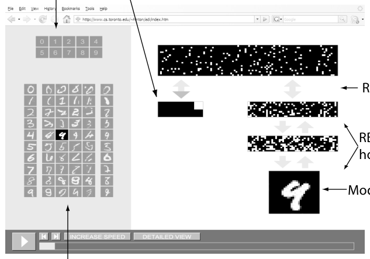</figure>
<h3>Các lớp RBM</h3>
<h3>Các lớp RBM/Helmholtz</h3>
<h3>Võng mạc mô hình</h3>
<h3>Đầu vào hình ảnh</h3>
<p>Hình 9.20 Mô phỏng máy Boltzmann hạn chế của Geoffrey Hinton và các đồng nghiệp, có tại https://www.cs.toronto.edu/ hinton/digits.html.</p>
<p>và yêu cầu nhận dạng, hoặc bằng cách yêu cầu hệ thống tạo ra hình ảnh của một chữ cái nhất định. Hai chế độ này có thể được khởi chạy bằng cách chọn một hình ảnh hoặc chọn một hạng mục chữ cái ở phía bên trái. Trong ví dụ thể hiện ở Hình 9.20, chúng ta đã chọn một ví dụ về hình ảnh của số 4. Khi chạy mô phỏng, hình ảnh này kích hoạt các mẫu phản ứng trong các lớp. Các mẫu này thay đổi ở mỗi bước thời gian, do bản chất xác suất của quy tắc cập nhật. Do đó, kết quả đọc nhận dạng của lớp trên cùng cũng dao động. Trong ví dụ được hiển thị, phản ứng của hệ thống là 4, nhưng chữ số 9 cũng thường xuyên được báo cáo. Điều này hợp lý, vì hình ảnh này trông cũng hơi giống chữ số 9. Một biểu đồ tần suất các phản ứng có thể được xây dựng khi đếm các phản ứng theo thời gian, và khi được chuẩn hóa thích hợp, sẽ tương ứng với một ước tính xác suất trên các khái niệm cấp cao được tạo ra bởi trạng thái giác quan này. Do đó, chế độ này kiểm tra khả năng nhận dạng</p>
<p>của mô hình.</p>
<p>Thiết bị kích thích kết nối với lớp RBM trên cho phép chúng ta chỉ dẫn hệ thống ‘hình dung’ các chữ cái cụ thể, tương ứng với việc kiểm tra khả năng sinh của mô hình. Ví dụ, nếu chúng ta yêu cầu hệ thống hình dung một chữ số 4 bằng cách gợi lên các mẫu tương ứng ở lớp trên, hệ thống sẽ phản hồi bằng các hình ảnh khác nhau trên võng mạc mô hình. Không có một câu trả lời đúng duy nhất, và các câu trả lời của hệ thống thay đổi theo thời gian. Bằng cách này, hệ thống tạo ra các ví dụ về các hình ảnh khả dĩ của chữ số 4, tỷ lệ thuận với khả năng (likelihood) mà những hình ảnh này được bắt gặp trong thế giới giác quan mà hệ thống đã được huấn luyện. Bản chất xác suất của hệ thống giống với khả năng của con người trong việc tạo ra nhiều phản ứng khác nhau tốt hơn nhiều, trái ngược với các mạng ánh xạ được thảo luận trong Chương 7 vốn chỉ có thể tạo ra các câu trả lời đơn lẻ cho mỗi đầu vào.</p>
<p>9.6 Mạng hồi tiếp lại và mạng hồi quy có cổng</p>
<p>Cho đến nay chúng ta đã thảo luận về các mạng hồi quy với các trọng số đối xứng như được thể hiện ở bên trái trong Hình 9.21. Mặc dù các kết nối đối xứng giữa các nơ-ron thoạt nhìn có vẻ không thực tế, có lẽ nên nhắc lại rằng cuộc thảo luận chủ yếu ở cấp độ các nút quần thể, và nhiều kết nối giữa các vùng não thường có tính tương hỗ (reciprocal). Do đó, mặc dù không nên kỳ vọng một sự đối xứng nghiêm ngặt trong não, tầm quan trọng của các mô hình như vậy nằm ở khả năng làm sáng tỏ một số tính chất động lực học của mạng nơ-ron.</p>
<h3>Tuy nhiên, bây giờ chúng ta xem xét lớp quan trọng của các mạng hồi quy tổng quát hơn với các mô hình có hướng có thể xây dựng các vòng lặp trong mạng như được thể hiện ở bên trái trong Hình 9.21. Chúng ta xem xét các mạng nơ-ron hồi quy như vậy trong thiết lập phổ biến của chúng với các nơ-ron tất định, mặc dù có thể tổng quát hóa các kiến trúc sang trường hợp ngẫu nhiên. Mặc dù các nơ-ron trong các cuộc thảo luận sau đây là tất định, các kiến trúc như vậy có thể thay đổi kích hoạt nơ-ron một cách liên tục ngay cả khi đầu vào không đổi. Do đó, các mạng như vậy vẫn là các hệ động lực và chúng đại diện cho một dạng bộ xấp xỉ vạn năng cho mô hình hóa theo thời gian. Vì vậy, thật hữu ích khi xem xét lại việc mô hình hóa theo thời gian với các mạng như vậy.</h3>
<p>A. Mạng có kết nối hai chiều B. Mạng có kết nối hồi tiếp</p>
<p>Hình 9.21 Minh họa hai mạng chu trình nguyên lý với (A) đồ thị có liên kết hai chiều và (B) đồ thị có hướng.</p>
<p>9.6.1 Xử lý chuỗi</p>
<p>Các ví dụ về ứng dụng mạng nơ-ron của chúng ta đã tập trung vào các tác vụ tri giác trong đó một đầu ra (nhãn) cần được dự đoán từ một vectơ đầu vào. Một mở rộng của nhận dạng đối tượng tĩnh cơ bản như vậy là xử lý chuỗi. Có nhiều loại ứng dụng tác vụ chuỗi như dự đoán thời tiết từ các quan sát quá khứ, hoặc xử lý ngôn ngữ. Mặc dù việc có dữ liệu tuần tự tự nhiên là phổ biến, thậm chí còn có những lý do để xử lý dữ liệu tĩnh dưới dạng tuần tự như tìm kiếm các hình ảnh lớn theo từng mảng để tìm các đối tượng cụ thể. Làm như vậy tiết kiệm bộ nhớ hơn. Hệ thống thị giác của con người sử dụng xử lý chuỗi vì các cảnh thường được khám phá bằng một loạt các chuyển động mắt gọi là cử động liếc mắt (saccades). Chúng ta sẽ bắt đầu thảo luận về xử lý chuỗi như vậy với các tác vụ cơ bản của dự đoán theo thời gian, trong đó một giá trị của chuỗi tại vị trí t được dự đoán từ các điểm dữ liệu trước đó, x(t) = f(x(t −1), x(t −2), ...). (9.70)</p>
<p>Nói chung, chúng ta nên nói về một vị trí trong chuỗi, mặc dù chúng ta thường coi một chuỗi như một chuỗi thời gian. Do đó, người ta thường dùng ký hiệu t cho chỉ số của một vị trí trong chuỗi.</p>
<p>Hình 9.22 Ví dụ về một đường trễ có nhánh (tapped delay line) để biểu diễn các chuỗi thời gian cho một mạng nơ-ron.</p>
<p>Bây giờ chúng ta sẽ xem xét một số kiến trúc hệ thống cho việc xử lý theo thời gian như vậy. Kiến trúc đầu tiên chúng ta nên xem xét là sử dụng một mạng truyền thẳng thông thường để thực hiện dự đoán chuỗi từ một số lượng hữu hạn các dữ liệu chuỗi trước đó. Ví dụ, chúng ta có thể đặt các giá trị chuỗi của n giá trị trước đó của chuỗi vào một vectơ đầu vào</p>
<p></p>
<p> x(t −1)</p>
<p>... x(t −1 −n)</p>
<p>x =</p>
<p>, (9.71)</p>
<p> và sau đó thực hiện dự đoán trước một bước cho giá trị s(t) làm đầu ra, y = x(t). (9.72)</p>
<p>Trong Hình 9.22, chúng ta đã trực quan hóa việc tạo ra vectơ đầu vào bằng cách trích nhánh chuỗi đầu vào với các đường trễ có độ dài khác nhau. Việc biểu diễn một phần hữu hạn của một chuỗi theo cách không gian này do đó đôi khi được gọi là đường trễ có nhánh (tapped delay line). Với một biểu diễn như vậy của chuỗi thời gian, chúng ta có thể áp dụng ngay lập tức các mạng nơ-ron sâu cho việc dự báo chuỗi. Một ví dụ về mạng đơn giản như vậy với một lớp ẩn cũng được thể hiện trong Hình 9.22.</p>
<p>Đối với cuộc thảo luận sau đây, hãy đơn giản hóa mạng này chỉ với một nút ẩn như được thể hiện trong Hình 9.23A. Chúng ta có thể dễ dàng tổng quát hóa lại điều này cho nhiều nút ẩn hơn và nhiều lớp nút ẩn hơn; chúng ta chỉ chọn phiên bản đơn giản này cho mục đích minh họa. Với hình vẽ rút gọn này, rõ ràng là chúng ta giả định rằng các giá trị của đầu vào tại các thời điểm khác nhau có thể có ảnh hưởng khác nhau đến dự đoán chuỗi vì chúng ta cho phép các trọng số tới nút ẩn có các giá trị khác nhau mà tất nhiên phải được học. Đây là trường hợp tổng quát nhất, ít nhất là đối với một độ dài cố định của chuỗi đầu vào. Tuy nhiên, nếu chúng ta đang tìm kiếm một mẫu cụ thể trong chuỗi đầu vào có thể xảy ra ở bất kỳ vị trí nào, thì chúng ta lại có thể sử dụng phép tích chập trên vectơ đầu vào để tìm kiếm mẫu này. Ví dụ, trong xử lý văn bản của câu ‘Bạn nên mang theo ô vì trời đang mưa’, từ ‘ô’ có tính dự báo cao cho từ ‘mưa’, mặc dù vị trí tương đối có thể thay đổi. Mạng nơ-ron tích chập có các bộ lọc nhỏ hơn so với mạng dày đặc (dense networks). Điều này sẽ tiết kiệm tham số cho chúng ta như chúng ta đã thảo luận đối với việc phát hiện đặc trưng bất biến vị trí trong hình ảnh. Giải pháp tích chập một chiều được minh họa trong Hình 9.23B. Một mô hình với ít tham số hơn thường sẽ đòi hỏi ít ví dụ huấn luyện hơn để học, và phép tích chập có ý nghĩa trong nhiều trường hợp.</p>
<h3>Chúng ta có thể giảm độ phức tạp của mạng hơn nữa nếu giả định rằng các bước thời gian trước đó chỉ ảnh hưởng đến thời điểm hiện tại theo cách nhất thời hoặc suy giảm dần. Điều này</h3>
<p>A. MLP đường trễ có nhánh B. Mạng nơ-ron hồi quy (RNN)</p>
<h3>u xt-1 xt x w1 w2 v t-n xt-2 xt-1 xt-2 xt w3</h3>
<p>C. RNN có cổng</p>
<p>xt-3 bộ nhớ xt xt-n xt-2 xt-1 wn xt-n</p>
<p>Hình 9.23 Các cách khác nhau để xử lý chuỗi với mạng nơ-ron. Các hình minh họa chỉ cho thấy một ví dụ nút ẩn, nhưng các mạng này nên được xem xét với nhiều nút và thường là nhiều lớp hơn. (A) Một mạng truyền thẳng chuẩn (MLP) trong đó đầu vào biểu diễn một vectơ của dữ liệu chuỗi trước đó. (B) Một mạng nơ-ron hồi quy cơ bản (RNN). (C) Một mạng nơ-ron hồi quy có cổng (gRNN) với bộ nhớ tường minh.</p>
<p>thường là một giả định tốt. Ví dụ, ai cũng biết rằng xác suất của một ngày nắng cao hơn sau một ngày nắng so với một ngày mưa. Chúng ta có thể mô tả một tình huống trong đó giá trị hiện tại ảnh hưởng đến các thời điểm tương lai tại t + uδt của sự kích hoạt các nút ẩn bằng h(t) = vx(t) + uvx(t −1) + u2vx(t −2) + ..., (9.73)</p>
<p>trong đó u là các trọng số có giá trị nhỏ hơn 1. Sau đó chúng ta có thể đơn giản hóa mạng này với kiến trúc thể hiện trong Hình 9.23C, nơi chúng ta biểu diễn bộ nhớ suy giảm theo hàm mũ của đầu vào bằng một đầu vào trễ tới nút ẩn của giá trị trước đó của nó. Về mặt toán học, chúng ta chỉ thay thế một tổng suy giảm dần bằng một dạng đệ quy, h(t) = vx(t) + u (vx(t −1) + uvx(t −2) + ...) (9.74) = vx(t) + uh(t −1), (9.75)</p>
<p>được minh họa trong Hình 9.23C. Bằng cách này, chúng ta không còn bị giới hạn trong việc xây dựng các mạng cho một chuỗi hữu hạn với cách tiếp cận đường trễ có nhánh. So với các trọng số riêng biệt cho các đầu vào tại các thời điểm khác nhau, ở đây chúng ta đã đưa vào một dạng chia sẻ trọng số theo nghĩa là chỉ các thời gian tương đối của chuỗi mới quan trọng. Giả định này tương tự như giả định bất biến vị trí trong mạng tích chập, và việc tích hợp giả định này vào kiến trúc của chúng ta giúp giảm số lượng tham số. Lưu ý rằng dạng này biểu diễn các mạng hồi quy cho một bộ tự liên kết như đã thảo luận trước đây. Chúng ta giới thiệu lại điều này ở đây dưới dạng này để thảo luận các tổng quát hóa quan trọng. Giả định về ảnh hưởng suy giảm dần từ các bước thời gian trước đó có dạng suy giảm theo hàm mũ, điều này không phải lúc nào cũng phù hợp. Ví dụ trong xử lý ngôn ngữ tự nhiên, việc một từ nhất định có quan hệ với các từ ở xa là phổ biến. Chúng ta có thể khắc phục vấn đề này bằng bộ nhớ tường minh, như minh họa trong Hình 9.23C. Chúng ta sẽ sớm khám phá cách chúng ta có thể triển khai một bộ nhớ như vậy trong mạng nơ-ron, ví dụ như với các mạng có cổng.</p>
<p>Để hoàn thiện dạng đơn giản nhất này của mạng nơ-ron hồi quy, chúng ta đưa vào một tính phi tuyến trong lớp. Ví dụ, các phương trình cho một lớp hồi quy với hàm kích hoạt tanh(x) là, h(t) = tanh (w{x(t), h(t −1)}) . (9.76)</p>
<p>Qua đó chúng ta đã sử dụng ký hiệu ghép nối ở dòng thứ hai, {x, h} cho các vectơ x và h, và chúng ta cũng đã ghép nối các vectơ trọng số v và u thành vectơ w.</p>
<p>h(t-2) tanh w w h(t) tanh w h(t) tanh x(t-2)</p>
<p>x(t-1)</p>
<p>x(t)</p>
<p>Hình 9.24 Minh họa một RNN cơ bản được trải ra theo thời gian (phỏng theo blog của Chris Olah).</p>
<p>Một cách hữu ích để trực quan hóa RNN đơn giản này được thể hiện trong Hình 9.24, đây là một bản phỏng theo từ blog nổi tiếng của Chris Olah. Cách biểu diễn mạng hồi quy này sẽ giúp chúng ta thảo luận một số dạng RNN tiên tiến sau này. Hình minh họa cho thấy đồ thị tính toán cho ba bước thời gian, tức là nó cho thấy việc trải mạng ra theo thời gian (unrolling the network in time). Điều này giải quyết một câu hỏi lớn mà bạn có thể có về cách huấn luyện các mạng như vậy, vì các giá trị kích hoạt của các nút phụ thuộc vào các kích hoạt ở các bước thời gian trước đó. Với việc mở rộng theo thời gian cho một số bước thời gian nhất định, chúng ta thấy rằng mạng về cơ bản tương đương với một mạng truyền thẳng sâu, mặc dù với các trọng số được chia sẻ ở các lớp (thời gian) khác nhau. Do đó, có thể sử dụng học tập lan truyền ngược trên các mạng này, được gọi là lan truyền ngược qua thời gian (backpropagation-through-time).</p>
<p>Vậy cuối cùng, chúng ta đã thu được gì? Chúng ta đã đơn giản hóa đồ thị của một mạng truyền thẳng và thay thế nó bằng một phiên bản đệ quy, chỉ để mở rộng nó ra theo thời gian một lần nữa nhằm huấn luyện nó. Tuy nhiên, lưu ý rằng chúng ta chỉ phải thực hiện việc trải ra này trong quá trình huấn luyện. Ngoài ra, chúng ta có một dạng chia sẻ trọng số có ý nghĩa tương tự như các lớp tích chập khi chúng ta tìm kiếm các phép toán tương tự tại các thời điểm khác nhau trong một chuỗi. Các mô hình có trọng số chia sẻ có phần dễ huấn luyện hơn so với các mô hình có nhiều trọng số độc lập hơn và không dễ bị quá khớp. Dạng hàm mũ của bộ nhớ hạn chế tính hữu ích của các mạng như vậy. Phần tiếp theo sẽ giải quyết vấn đề này.</p>
<p>9.6.2 Xử lý chuỗi cơ bản với perceptron nhiều lớp và mạng nơ-ron hồi quy trong Keras</p>
<p>Sau đây chúng ta minh họa việc triển khai xử lý chuỗi bằng một ví dụ rất đơn giản. Dữ liệu chuỗi qua đó được tạo ra từ một sóng sin tại mười điểm thời gian rời rạc cách đều nhau trong một chu kỳ x(t) = sin(2π</p>
<p>10 t) với t = 0, ..., 9. (9.77)</p>
<h3>Các điểm dữ liệu này được hiển thị trong Hình 9.25A bằng các dấu chéo được tạo ra bằng chương trình sau đây.</h3>
<p>Listing 9.1 sinSequence.ipynb (phần 1)</p>
<p>1 import numpy as np 2 import m a t p l o t l i b . pyplot as p l t 3 from keras import models , l a y e r s , optimizers , d a t a s e t s , u t i l s , l o s s e s 4 5 # Sine data with 10 s t e p s / cycle 6 seq = np . a r r a y ( [ np . s i n (2∗np . pi ∗i / 1 0 ) f o r i in range ( 1 0 ) ] ) 7 p r i n t ( seq )</p>
<p>1.0 A) B) C)</p>
<p>1.0</p>
<p>1.0</p>
<p>0.5</p>
<p>0.5</p>
<p>0.5</p>
<p>0.0</p>
<p>0.0</p>
<p>0.0</p>
<p>0.5</p>
<p>0.5</p>
<p>0.5</p>
<p>0 2 4 6 8 1.0</p>
<p>0 2 4 6 8 1.0</p>
<p>0 2 4 6 8 1.0</p>
<p>Hình 9.25 Kết quả dự đoán chuỗi từ một chuỗi được tạo ra bởi hàm sin. (A) Dự đoán giá trị liên tiếp trong chuỗi. Các dấu chéo màu xanh lam hiển thị giá trị thực và các chấm màu cam hiển thị kết quả của một MLP đơn giản. Đường nét đứt hiển thị trung bình của các điểm dữ liệu có cùng giá trị với điểm dữ liệu đứng trước. (B) Dự đoán giá trị liên tiếp trong chuỗi từ hai giá trị trước đó trong đó các dự đoán là từ một MLP đơn giản. (C) Tương tự như (B) ngoại trừ các dự đoán được thực hiện bởi một RNN đơn giản.</p>
<p>Sau đó chúng ta chuẩn bị một tập dữ liệu cho các tác vụ học tập cụ thể. Tác vụ học tập đầu tiên sẽ là dự đoán các giá trị y = x(t + 1) từ giá trị ở bước thời gian trước đó, x(t). Do đó, tập huấn luyện được tạo ra bằng cách chọn một ví dụ ngẫu nhiên của các điểm chuỗi làm giá trị đặc trưng cho đầu vào và sử dụng điểm tiếp theo trong chuỗi làm mục tiêu.</p>
<p>Listing 9.2 sinSequence.ipynb (phần 2) 1 Num sequences =200 2 x t r a i n =np . a r r a y ( [ ] ) 3 y t r a i n =np . a r r a y ( [ ] ) 4 f o r i in range ( Num sequences ) : 5 ran=np . random . r a n d i n t (10) 6 x t r a i n = np . append ( x t r a i n , seq [ ran ] ) 7 y t r a i n = np . append ( y t r a i n , seq [ np . mod( ran +1 ,10)]) 8 9 x t e s t =np . a r r a y ( seq ) 10 y t e s t =np . a r r a y ( np . r o l l ( seq , −1))</p>
<p>Ở đây chúng ta đã sử dụng hàm chia lấy dư (modulo) để mã hóa các điều kiện tuần hoàn của chuỗi thời gian này. Sau đó chúng ta thiết lập một MLP như đã làm trong Chương 7 để dự đoán các nhãn sau khi huấn luyện.</p>
<p>Listing 9.3 sinSequence.ipynb (phần 3) 1 #MLP1 2 i n p u t s = l a y e r s . Input ( shape = ( 1 , ) ) 3 h = l a y e r s . Dense (10 , a c t i v a t i o n = ’ r e l u ’ ) ( i n p u t s ) 4 o u t p u t s = l a y e r s . Dense (1 , a c t i v a t i o n = ’ tanh ’ ) ( h ) 5 model = models . Model ( inputs , o u t p u t s ) 6 7 model . compile ( l o s s = ’ me an s qu ar e d e rr or ’ , o p t i m i z e r = ’adam ’ ) 8 p r i n t ( model . summary ( ) ) 9 model . f i t ( x t r a i n , y t r a i n , epochs =1000 , b a t c h s i z e =100 , verbose =0) 10 11 # e v a l u a t e 12 y pred = model . p r e d i c t ( x t e s t , b a t c h s i z e =10 , verbose =1) 13 p l t . p l o t ( y t e s t , ’x ’ ) 14 p l t . p l o t ( y pred , ’o ’ ) 15 a = np . a r r a y ( [ i f o r i in range ( 1 0 ) ] ) 16 b = np . r o l l ( np . f l i p ( a ,0) , −4) 17 p l t . p l o t ( ( ( y t e s t [ a ]+ y t e s t [ b ] ) / 2 ) , ’−−’ )</p>
<p>Ở đây chúng ta đã sử dụng một lớp ẩn duy nhất với mười nút. Đồ thị được thể hiện trong Hình 9.25A. Hàm cần học này tất nhiên là không xác định rõ vì luôn có hai vị trí trong một chu kỳ có cùng giá trị hàm mà theo sau bởi một giá trị lớn hơn hoặc nhỏ hơn. Điều này được phản ánh trong kết quả của thí nghiệm này. Ví dụ, xét điểm đầu tiên có đầu vào là x = 0. Giá trị tiếp theo đúng trong chuỗi phải vào khoảng y ≈0.6. Lần tiếp theo giá trị đầu vào vào khoảng 0, tại điểm thứ sáu trong chuỗi, giá trị tiếp theo tương ứng trong chuỗi vào khoảng y ≈−0.6. Do đó, mạng dường như học cách lấy trung bình trên các phản ứng này và đưa ra phản ứng dự đoán vào khoảng 0. Các dự đoán của các điểm khác cũng có thể được suy ra từ giá trị trung bình. Giá trị trung bình được thể hiện trong Hình 9.25A bằng đường nét đứt, điều này cho thấy đây thực sự là những gì mạng dường như học được.</p>
<p>Tất nhiên, việc dự đoán giá trị y liên tiếp có thể được thực hiện với kiến thức về hai điểm trước đó trong một chuỗi. Chúng ta có thể thiết lập điều này theo cách tương tự như trước và kiểm tra một MLP cho việc dự đoán.</p>
<p>Listing 9.4 sinSequence.ipynb (phần 4) 1 #MLP2 2 i n p u t s = l a y e r s . Input ( shape = ( 2 , ) ) 3 h = l a y e r s . Dense (2 , a c t i v a t i o n = ’ r e l u ’ ) ( i n p u t s ) 4 o u t p u t s = l a y e r s . Dense (1 , a c t i v a t i o n = ’ tanh ’ ) ( h ) 5 model = models . Model ( inputs , o u t p u t s ) 6 7 model . compile ( l o s s = ’ me an s qu ar e d e rr or ’ , o p t i m i z e r = ’adam ’ ) 8 p r i n t ( model . summary ( ) ) 9 model . f i t ( x t r a i n , y t r a i n , epochs =1000 , b a t c h s i z e =100 , verbose =0) 10 11 # e v a l u a t e 12 y pred = model . p r e d i c t ( x t e s t , b a t c h s i z e =10 , verbose =1) 13 p l t . p l o t ( y t e s t , ’x ’ ) 14 p l t . p l o t ( y pred , ’o ’ )</p>
<p>Kết quả thể hiện trong Hình 9.25B và C tốt hơn nhiều và các dự đoán khá tốt, thậm chí có thể làm tốt hơn nữa với nhiều huấn luyện hơn. Các điểm chính lệch khỏi kết quả đúng là những điểm gần giá trị y = 1 và y = −1. Các giá trị này hơi khó đạt tới hơn, vì chúng ta đã sử dụng hàm tanh dạng sigmoid trong đó các giá trị này biểu thị các cực trị. Lưu ý rằng chúng ta chỉ sử dụng hai nơ-ron ẩn để giữ cho mô hình thậm chí còn nhỏ hơn mô hình trước. Trong khi chúng ta đã sử dụng 10 nơ-ron ẩn với tổng cộng 31 tham số trong thí nghiệm trước, ở đây chúng ta chỉ sử dụng một mô hình với 9 tham số.</p>
<p>Cuối cùng, chúng ta có thể triển khai dự đoán chuỗi này với một mạng hồi quy đơn giản. Điều này đạt được với mã Keras trong phần 5 sinSequence.ipynb. Chìa khóa để sử dụng lớp RNN của Keras là hình dạng đầu vào được kỳ vọng có dạng (batch size, sequence length, feature dimension).</p>
<p>Do đó, chúng ta đã đưa vào phép định hình lại ở đầu đoạn mã này. Chúng ta chỉ sử dụng một nút cho nút SimpleRNN, và do đó mô hình này chỉ có năm tham số (một trọng số và độ lệch cho kết nối đầu vào, một trọng số và độ lệch của kết nối hồi quy, và một trọng số cho đầu ra). Một lần nữa, chúng ta có thể làm cho sự khớp tốt hơn nữa với nhiều nút hơn hoặc huấn luyện nhiều hơn, nhưng mục đích ở đây là minh họa khả năng của các mạng tối thiểu. Chúng ta thậm chí có thể loại bỏ nút đầu ra và sử dụng đầu ra của nút hồi quy làm dự đoán của chuỗi với kết quả hợp lý. Một mô hình như vậy chỉ có ba tham số.</p>
<p>Listing 9.5 sinSequence.ipynb (phần 5) 1 # RNN 2 x t r a i n =np . reshape ( x t r a i n , ( 2 0 0 , 2 , 1 ) ) 3 x t e s t =np . reshape ( x t e s t , ( 1 0 , 2 , 1 ) ) 4 5 i n p u t s = l a y e r s . Input ( batch shape =(None , 2 , 1 ) ) 6 x = l a y e r s . SimpleRNN (1 , a c t i v a t i o n = ’ tanh ’ ) ( i n p u t s ) 7 o u t p u t s = l a y e r s . Dense (1 , a c t i v a t i o n = ’ tanh ’ ) ( x ) 8 model = models . Model ( inputs , o u t p u t s ) 9 10 model . compile ( l o s s = ’ me an s qu ar e d e rr or ’ , o p t i m i z e r = ’adam ’ ) 11 p r i n t ( model . summary ( ) ) 12 13 model . f i t ( x t r a i n , y t r a i n , epochs =1000 , b a t c h s i z e =100 , verbose =0) 14 # e v a l u a t e 15 y pred = model . p r e d i c t ( x t e s t , b a t c h s i z e =10 , verbose =1) 16 p l t . p l o t ( y t e s t , ’x ’ ) 17 p l t . p l o t ( y pred , ’o ’ )</p>
<p>9.6.3 Bộ nhớ ngắn-dài hạn (LSTM) và phân tích cảm xúc</p>
<p>Như đã phác thảo trước đó, mạng hồi quy cơ bản có dạng một bộ nhớ tính đến các trạng thái trước đó. Tuy nhiên, ảnh hưởng của các trạng thái này phai nhạt theo hàm mũ khi các giá trị trọng số nhỏ hơn 1, điều bắt buộc phải có vì nếu không ảnh hưởng hồi quy sẽ áp đảo đầu vào theo hàm mũ. Do đó, RNN cơ bản là một dạng trí nhớ ngắn hạn. Trí nhớ ngắn hạn như vậy thường không đủ cho nhiều ứng dụng. Ví dụ, trong xử lý ngôn ngữ tự nhiên, cần phải tính đến một số ngữ cảnh có thể ở xa so với các từ ở vị trí chuỗi hiện tại. Do đó, một số ký ức chỉ nên ‘kích hoạt’ vào một thời điểm thích hợp mà bản thân nó có thể được kích hoạt bởi một từ khác. Vì vậy, điều quan trọng là phải đóng cổng (gate) một số ký ức này cho đến khi chúng hữu ích ở trạng thái xử lý sau này.</p>
<p>Mạng đầu tiên đưa bộ nhớ dài hạn hơn vào xem xét được gọi là LSTM, viết tắt của ‘long short-term memory’ (bộ nhớ ngắn-dài hạn). Mạng này được minh họa trong Hình 9.26.</p>
<h3>C(t-1) C(t)</h3>
<h3>V V</h3>
<p>tanh wf wi wc wo</p>
<h3>V h(t-1) h(t)</h3>
<p>x(t)</p>
<p>Hình 9.26 Bộ nhớ ngắn-dài hạn (LSTM) [phỏng theo blog của colah tại https://colah.github.io/posts/2015-08-Understanding-LSTMs].</p>
<p>Mạng có cổng này đưa vào một trạng thái tế bào (cell state) khác c(t) biểu thị một trạng thái bộ nhớ nội tại. Giá trị của nó được chuyển tiếp sang bước thời gian tiếp theo và có thể được sửa đổi ở mỗi bước thời gian bằng hai phép toán riêng biệt, một cổng quên (forgetting gate) ft và một cổng đầu vào (ghi) it, c(t) = f(t) c(t −1) + i(t) ˜c(t). (9.78)</p>
<p>Phần bổ sung bộ nhớ mới phụ thuộc vào đầu vào mới và được tính là</p>
<p>˜c(t) = tanh(wc{x(t), h(t −1)} + bc) (9.79)</p>
<p>Xin nhắc lại, dấu ngoặc nhọn ở đây biểu thị phép toán ghép nối. Điều này giống như một phương trình lớp ẩn thông thường được sử dụng trong RNN cơ bản. Bản thân các hàm cổng được học với các giá trị trọng số tương ứng và một hàm khuếch đại sigmoid thuộc loại logistic để co giãn các số hạng này về phạm vi từ 0 (quên hoàn toàn, không cập nhật bộ nhớ) đến 1 (giữ nguyên trạng thái bộ nhớ, thêm đầy đủ đầu vào mới), f(t) = σ(wf{x(t), h(t −1)} + bf) (9.80) i(t) = σ(wi{x(t), h(t −1)} + bi). (9.81)</p>
<p>Cuối cùng, chúng ta tạo ra một đầu ra cho nút hồi quy từ trạng thái bộ nhớ mới này h(t) = o(t) tanh(c(t)) (9.82)</p>
<p>mà bản thân nó được đóng cổng bởi các ảnh hưởng đã học của các đầu vào, cụ thể là o(t) = σ(wo{x(t), h(t −1)} + bo). (9.83)</p>
<p>Để minh họa một LSTM trong Keras, chúng ta theo dõi ví dụ phổ biến về phân tích cảm xúc (sentiment analysis). Phân tích cảm xúc ở đây chỉ là một ví dụ khác về phân loại trong bối cảnh gán cho các tài liệu một số nhãn biểu thị cảm xúc như tốt hoặc xấu. Ở đây chúng ta sử dụng Tập dữ liệu Đánh giá Phim Lớn (IMDB), chứa 50,000 bài đánh giá phim mang tính tích cực hoặc tiêu cực. Nhiệm vụ là sử dụng một nửa số tài liệu để huấn luyện và kiểm tra nửa còn lại xem cảm xúc của các bài đánh giá kiểm tra có thể được dự đoán hay không. Một chương trình như vậy được bao gồm trong các ví dụ của Keras mà chúng ta cung cấp ở đây một phiên bản đơn giản hóa.</p>
<p>Ví dụ này mang lại cho chúng ta cơ hội thảo luận một số biểu diễn văn bản. Biểu diễn được gọi là túi từ (bag of words) bao gồm một vectơ lớn có kích thước bằng từ vựng với mỗi thành phần của vectơ này biểu thị số lần từ này xuất hiện trong văn bản. Bây giờ chúng ta muốn biểu diễn chính văn bản đó dưới dạng một chuỗi các từ, đây là một cách tiếp cận tốt hơn nhiều đối với xử lý ngôn ngữ tự nhiên (NLP). Với biểu diễn one-hot của một từ vựng, khi đó chúng ta sẽ có một biểu diễn nhiều chiều nhưng rất thưa. Một chuỗi khi đó sẽ là một chuỗi các vectơ thưa nhiều chiều như vậy. Một cách biểu diễn từ khác là gán cho mỗi từ một số nguyên duy nhất. Mặc dù điều này giúp ích cho số chiều của biểu diễn, biểu diễn này không nắm bắt được các quan hệ giữa các từ. Do đó, một bước đầu tiên phổ biến trong NLP là học một phép nhúng (embedding). Một phép nhúng, cụ thể hơn là nhúng từ (word embedding) ở đây, biến đổi một biểu diễn tùy ý thành một biểu diễn không gian vectơ dày đặc trong đó các từ thường liên quan đến nhau trong một tác vụ nằm gần nhau trong không gian nhúng. Trong Keras, chúng ta có thể hiện thực hóa điều này bằng một lớp Embedding. Tập dữ liệu Keras bao gồm tập dữ liệu IMDB dưới dạng danh sách các từ duy nhất ở dạng số nguyên. Đoạn mã sau đọc dữ liệu vào, giới hạn kích thước từ vựng ở 20,000 từ duy nhất, và sau đó biểu diễn mỗi tài liệu dưới dạng một chuỗi gồm tám từ duy nhất (maxlen = 8) để giảm kích thước của ví dụ này sao cho chúng ta có thể thực thi nó trên một máy tính xách tay đơn giản. Nếu tài liệu có ít hơn tám từ, thì hàm pad sequences() của Keras sẽ sử dụng một số đệm số 0 để đảm bảo mỗi tài liệu ở đây đều có độ dài maxlen.</p>
<p>Listing 9.6 LSTM.ipynb (phần 1) 1 from keras . p r e p r o c e s s i n g import sequence 2 from keras import models , l a y e r s , optimizers , d a t a s e t s , u t i l s , l o s s e s 3 4 v o c a b u l a r y s i z e = 20000 5 maxlen = 8 6 b a t c h s i z e = 32 7 8 ( x t r a i n , y t r a i n ) , ( x t e s t , y t e s t ) = 9 d a t a s e t s . imdb . l o a d d a t a ( num words= v o c a b u l a r y s i z e ) 10 x t r a i n = sequence . pad sequences ( x t r a i n , maxlen ) 11 x t e s t = sequence . pad sequences ( x t e s t , maxlen )</p>
<p>Sau đó chúng ta có thể định nghĩa mô hình, trong đó đầu vào được đưa ngay vào lớp nhúng để lớp này có thể được huấn luyện trong tác vụ. Biểu diễn nhúng sau đó được sử dụng trong lớp LSTM, và cuối cùng chúng ta sử dụng một nút sigmoid duy nhất để phân loại cảm xúc. Chúng ta cũng thêm dropout vào đầu ra của lớp hồi quy để điều chuẩn nhằm ngăn chặn quá khớp. Việc thêm dropout vào lớp hồi quy phức tạp hơn một chút vì các nhiễu loạn sai số nhỏ có thể chồng chất trong động lực học mạng hồi quy và do đó dẫn đến các vấn đề về gợi nhớ đúng. Các lớp hồi quy trong Keras do đó có các tham số bao gồm dropout trong các lớp này rất được khuyến nghị. Trong ví dụ này, chúng ta đã sử dụng tỷ lệ dropout cao. Mô hình này sau đó được biên dịch và huấn luyện trên hàm mất mát cross-entropy nhị phân như được thể hiện trong phần 2 của LSTM.ipynb.</p>
<p>Listing 9.7 LSTM.ipynb (phần 2) 1 i n p u t s = l a y e r s . Input ( shape =( maxlen , ) ) 2 e= l a y e r s . Embedding ( max features , 128)( i n p u t s ) 3 h= l a y e r s .LSTM(128 , dropout =0.8 , r e c u r r e n t d r o p o u t = 0 . 8 ) ( e ) 4 h= l a y e r s . Dropout ( 0 . 7 ) ( h ) 5 o u t p u t s = l a y e r s . Dense (1 , a c t i v a t i o n = ’ sigmoid ’ ) ( h ) 6 model = models . Model ( inputs , o u t p u t s )</p>
<p>Độ chính xác đánh giá vào khoảng 70 phần trăm sau quá trình huấn luyện ngắn này. Tuy nhiên, đây chỉ là một ví dụ nhỏ về một tác vụ xử lý ngôn ngữ đơn giản. Nói chung, nên học các phép nhúng vectơ trên các tác vụ tốt hơn như một mô hình ngôn ngữ nhằm mục đích dự đoán từ tiếp theo trong một chuỗi. Các phép nhúng từ tốt đã đạt được với các tập dữ liệu lớn. Hai phép nhúng phổ biến được gọi là Word2Vec và GloVe, và có thể tải xuống các phép nhúng này để sử dụng làm phép nhúng tiền huấn luyện. Sử dụng các mô hình hồi quy với các phép nhúng từ tinh vi nằm trong số các mô hình ngôn ngữ tốt nhất hiện nay.</p>
<p>Listing 9.8 LSTM.ipynb (phần 3) với đầu ra 1 model . compile ( l o s s = ’ b i n a r y c r o s s e n t r o p y ’ , 2 o p t i m i z e r = ’adam ’ , 3 m e t r i c s =[ ’ accuracy ’ ] ) 4 5 model . f i t ( x t r a i n , y t r a i n , b a t c h s i z e = b a t c h s i z e , epochs =4 , 6 v a l i d a t i o n d a t a =( x t e s t , y t e s t ) ) 7 score , acc = model . e v a l u a t e ( x t e s t , y t e s t , b a t c h s i z e = b a t c h s i z e ) 8 p r i n t ( ’ Test accuracy : ’ , acc ) 9 10 Train on 25000 samples , v a l i d a t e on 25000 samples 11 Epoch 1/4 12 25000/25000 [==============================] −69 s 3ms / s t e p − 13 l o s s : 0.6255 −acc : 0.6346 −v a l l o s s : 0.5540 −v a l a c c : 0.7084 14 Epoch 2/4 15 25000/25000 [==============================] −65 s 3ms / s t e p − 16 l o s s : 0.5342 −acc : 0.7339 −v a l l o s s : 0.5421 −v a l a c c : 0.7140 17 Epoch 3/4 18 25000/25000 [==============================] −66 s 3ms / s t e p − 19 l o s s : 0.4938 −acc : 0.7592 −v a l l o s s : 0.5411 −v a l a c c : 0.7148 20 Epoch 4/4 21 25000/25000 [==============================] −65 s 3ms / s t e p − 22 l o s s : 0.4633 −acc : 0.7801 −v a l l o s s : 0.5611 −v a l a c c : 0.7159 23 25000/25000 [==============================] −4 s 160 us / s t e p 24 Test accuracy : 0.71588</p>
<p>9.6.4 Các kiến trúc có cổng khác và cơ chế chú ý</p>
<p>Một biến thể phổ biến được đơn giản hóa nhẹ của LSTM là đơn vị hồi quy có cổng (gated recurrent unit - GRU) được thể hiện trong Hình 9.27A. Mô hình này được xác định bởi các phương trình sau z(t) = σ(wf{x(t), h(t −1)}) (9.84) r(t) = σ(wr{x(t), h(t −1)}) (9.85) ˜h(t) = tanh(w{x(t), rth(t −1)}) (9.86) h(t) = (1 −zt)h(t −1) + zt˜ht. (9.87)</p>
<p>Mô hình này vẫn có một cổng đọc r và một cổng ghi z, nhưng nó sử dụng chính trạng thái ẩn làm trạng thái bộ nhớ. Do đó, nó là một phiên bản hơi gọn nhẹ hơn của LSTM với ít tham số hơn. Cả GRU và LSTM thường thể hiện hiệu suất tương tự nhau.</p>
<p>Ngoài ra còn có nhiều mở rộng khác của các đơn vị hồi quy có cổng cơ bản được thảo luận ở trên. Một bước tiến lớn hơn nữa là đưa ý tưởng này đi xa hơn dưới dạng một bộ nhớ ngoài. Phiên bản đầu tiên của một mô hình như vậy được gọi là máy Turing nơ-ron (neural Turing machine - NTM). Ý tưởng cơ bản là sử dụng một bộ nhớ ngoài riêng biệt với các cổng đọc và ghi.</p>
<h3>Bộ nhớ</h3>
<p>h(t) h(t-1)</p>
<p>s s wi tanh wf wc wo s đọc ghi</p>
<h3>Đầu vào đầu ra</h3>
<p>x(t)</p>
<h3>Mạng điều khiển</h3>
<p>Hình 9.27 (A) Đơn vị hồi quy có cổng (GRU; xem blog của Chris Olah). (B) Máy tính nơ-ron khả vi (DNC; xem https://www.deepmind.com/blog/differentiable-neural-computers.)</p>
<p>Bản thân bộ nhớ là sự kết hợp giữa bộ nhớ dựa trên vị trí và bộ nhớ định địa chỉ theo nội dung. Điều quan trọng nữa là tất cả các phép toán như vậy phải khả vi để có thể huấn luyện các mô hình hồi quy như vậy bằng lan truyền ngược qua thời gian. Phiên bản tiên tiến của NTM do đó được gọi là máy tính nơ-ron khả vi (differentiable neural computer - DNC). Một kiến trúc như vậy được phác thảo trong Hình 9.27B.</p>
<p>Thay vì đi sâu vào chi tiết của các biến thể mạng hồi quy có cổng, sẽ rất hữu ích khi đề cập đến một thành phần nữa trong các mô hình gần đây dường như đóng vai trò cốt yếu trong việc thúc đẩy hiệu suất: cơ chế chú ý (attention). Chú ý đã được coi là một phần quan trọng trong quá trình xử lý thông tin của con người kể từ khi cuốn sách kinh điển The Principles of Psychology của William James ra mắt vào năm 1890. Về cốt lõi, chú ý nắm bắt khả năng của con người trong việc định hướng tới thông tin quan trọng, hoặc đánh trọng số cho một số thông tin lớn hơn những thông tin khác và ức chế những thông tin khác. Các dạng chú ý khác nhau đã được xác định trong não. Một sự thật nổi tiếng là khả năng của một số mạng trong hệ thống thị giác sơ cấp nhằm nhấn mạnh các đặc trưng nổi bật như việc có chữ ‘A’ trong một biển chữ ‘C’. Điều này dẫn đến hiệu ứng phổ biến là chúng ta nhận thấy các vật thể nổi bật như đang ‘bật ra’ (popping out), giúp thu hẹp đáng kể thời gian tìm kiếm các vật thể đó.</p>
<p>Sự chú ý từ dưới lên dựa trên đặc trưng này không phải là hiệu ứng duy nhất. Thực tế, khả năng hướng sự chú ý của chúng ta, hoặc tới các vị trí không gian hoặc tới các đối tượng, cho thấy một dạng chú ý từ trên xuống. Một số hệ quả của sự chú ý lên sự phát xung của nơ-ron đã được ghi nhận. Ví dụ, Hình 9.28A cho thấy các đáp ứng thực nghiệm của các nơ-ron nhạy cảm với các vật thể chuyển động theo một hướng nhất định trong cảnh thị giác. Các đường cong đáp ứng của nơ-ron được gọi là "đường cong điều chỉnh" (tuning curves) trong khoa học thần kinh. Các hình vuông cho thấy khi đối tượng chú ý vào một ‘điểm định thị’ và do đó không chú ý vào chuyển động, trong khi các hình tròn cho thấy tác động của việc chú ý vào chuyển động. Điều thú vị là sự điều biến hoạt động nơ-ron không mang tính cộng tính mà được mô tả tốt hơn bằng phép nhân. Điều này được minh họa trong Hình 9.28B với chương trình bên dưới. Chúng ta vẽ một đường cong Gaussian hơi cong xuống (đường màu xanh lam). Khi cộng thêm một hằng số, chúng ta nhận được đường nét đứt màu xanh lam bị dịch chuyển, trong khi nếu nhân đường cong ban đầu với 1.5, chúng ta nhận được đường màu đỏ biểu diễn các kết quả thực nghiệm trong Hình 9.28A.</p>
<p>Listing 9.9 attention.ipynb 1 import numpy as np 2 import m a t p l o t l i b . pyplot as p l t 3 4 f = lambda x : np . exp(−x∗∗2) −0.2</p>
<figure class="bookfig">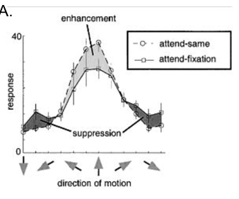</figure>
<p>1.0</p>
<p>0.5 y</p>
<p>0.0</p>
<h2>2 1 0 1 2 x</h2>
<p>Hình 9.28 Minh họa tác động của sự chú ý lên sự kích hoạt của các nơ-ron. (A) Ví dụ kết quả thực nghiệm. In lại từ Current Biology 14 (9), Julio C. Martinez-Trujillo và Stefan Treue, ‘Feature-Based Attention Increases the Selectivity of Population Responses in Primate Visual Cortex’, tr. 744–51, Hình 4a, doi.org/10.1016/j.cub.2004.04.028, Bản quyền © 2004 Cell Press. Xuất bản bởi Elsevier Ltd. Mọi quyền được bảo lưu). (B) Minh họa tác động cộng tính và nhân tính lên một đường cong điều chỉnh.</p>
<p>5 x = np . l i n s p a c e ( −2 ,2 ,21) 6 7 p l t . p l o t ( x , f ( x ) ) 8 p l t . p l o t ( x , f ( x )+ . 1 5 , ’b−−’ ) 9 p l t . p l o t ( x , f ( x ) ∗1 . 5 , ’ r ’ )</p>
<p>Việc đưa các nguyên lý xử lý thông tin của sự chú ý vào là một yếu tố quan trọng trong học máy. Ví dụ, cơ chế chú ý đã ảnh hưởng mạnh mẽ đến việc xử lý chuỗi-sang-chuỗi (sequence-to-sequence) như trong dịch ngôn ngữ. Các mạng bộ nhớ có cổng đã biểu diễn một dạng chú ý nào đó vì việc giải phóng thông tin được kích hoạt bởi một số ngữ cảnh có thể được coi là sự chú ý. Nói chung, sự chú ý có thể được xem về mặt toán học như một dạng xử lý phi tuyến. Do đó, dạng đơn giản nhất là một phép đóng cổng nhân tính như đã trình bày trước đó. Ví dụ, chúng ta có thể lấy đầu ra của một lớp thông thường f(Wx) và nhân với các tham số mới V như trong y = V ∗f(Wx). (9.88)</p>
<p>Các tham số chú ý V sau đó có thể được học từ học có giám sát. Hiện nay, việc đưa các mô-đun chú ý như vậy vào mô hình hóa các quá trình chuỗi-sang-chuỗi đã trở nên phổ biến. Một hướng dẫn nhập môn hay về chủ đề này được Jason Brownlee cung cấp tại https://machinelearningmastery.com/encoder-decoder-attention-sequence-to-sequenceprediction-keras.</p><h2 class="chapter-title">Phần IV · Chương 10 — Mạng mô-đun và các hệ thống bổ sung</h2>
<h3>IV</h3>
<h3>Các mô hình cấp hệ thống</h3>
<h2>10 Mạng mô-đun và các hệ thống bổ trợ</h2>
<p>Chương này khám phá các tổ hợp của những mạng cơ bản, bắt đầu bằng việc thảo luận về các mạng ánh xạ mô-đun có thể cải thiện hiệu năng của các mạng nguyên khối thông qua chiến lược chia để trị. Phần thảo luận tiếp theo về các mạng hồi quy mô-đun khám phá cách một hệ động lực ghép nối có thể cân bằng giữa tính độc lập của các mô-đun và sự hợp tác giữa chúng. Điều này dường như rất quan trọng khi xem xét các mạng ghép nối trong não bộ với những hệ quả nghiêm trọng của sự đồng bộ hóa thảm khốc khi sự cân bằng này bị phá vỡ. Một ví dụ cấp hệ thống về các mạng tương tác là mô hình của các hệ thống trí nhớ bổ trợ.</p>
<p>10.1 Mạng ánh xạ mô-đun</p>
<p>Trong tài liệu nghiên cứu có rất nhiều thảo luận về các kiến trúc mô-đun và cách thức các mô-đun có thể tương tác cũng như tự tổ chức. Chẳng hạn, Marvin Minsky đã bàn về một số ý tưởng của ông trong cuốn sách <i>The society of mind</i> (Xã hội của tâm trí). Một ví dụ khác là máy ủy ban (committee machine) được N. J. Nilson mô tả lần đầu năm 1965, và pandemonium do O. G. Selfridge đề xuất năm 1958. Để hiểu sâu hơn về các kiến trúc xử lý thông tin như vậy trong khuôn khổ mạng nơ-ron, chúng ta phải nghiên cứu cách các mạng nơ-ron có thể kết hợp và tương tác. Chúng ta sẽ xem xét một số tính chất của các mạng mô-đun được cấu thành từ những mạng cơ bản đã thảo luận ở các chương trước. Toàn bộ hệ thống vẫn có thể được gọi là một mạng nơ-ron, nhưng việc chúng ta có thể phân biệt các hệ thống con trong các mạng đó khiến chúng trở thành mạng mô-đun theo mục đích của chúng ta.</p>
<p>Có thể xem các mạng mô-đun như những mạng quy mô lớn có các ràng buộc. Một ví dụ về ràng buộc thuần túy vật lý là như sau. Hãy xét một mạng kết nối hoàn toàn với số lượng phần tử (nút) vào cỡ số nơ-ron trong não (ước tính dè dặt khoảng 1011) và với các sợi trục kết nối riêng lẻ có bán kính 0,1 µm. Việc đặt các nút trên bề mặt một hình cầu và cho phép phần bên trong hình cầu được lấp đầy dày đặc bằng các sợi trục sẽ tạo ra một hình cầu có đường kính hơn 20 km. Do đó, các ràng buộc về kích thước vật lý của các "dây dẫn" kết nối đòi hỏi những giải pháp kinh tế hơn. Trong chương này, chúng ta sẽ thấy rằng có nhiều ưu điểm quan trọng của các cấu trúc mô-đun trong các hệ thống lớn.</p>
<p>Dưới góc độ thảo luận trước đó về các mạng nơ-ron kết nối hoàn toàn như những bộ xấp xỉ hàm phổ quát (xem Chương 7), rõ ràng cần đặt câu hỏi tại sao sự chuyên môn hóa mô-đun lại được sử dụng trong não bộ. Một số gợi ý về ý nghĩa chức năng của sự chuyên môn hóa mô-đun trong xử lý thị giác đã được nhà tâm lý học người Anh Alan Covey nêu ra. Ông suy đoán rằng, nếu vỏ não sử dụng sự ức chế để làm sắc nét</p>
<p>Fundamentals of Computational Neuroscience. Third edition. Thomas P. Trappenberg, Oxford University Press. © Oxford University Press 2023. DOI:10.1093/oso/9780192869364.003.0010 nhiều thuộc tính thị giác khác nhau, chẳng hạn như màu sắc, cạnh hoặc hướng, thì có thể sử dụng ức chế cục bộ, vốn có thể được thực hiện bằng các nơ-ron trung gian ức chế trong các bản đồ võng mạc, miễn là các thuộc tính khác nhau được giữ tách biệt. Sự chuyên môn hóa như vậy cũng sẽ cho phép khuếch đại chú ý riêng biệt đối với từng đặc trưng riêng rẽ. Các ưu điểm khác của việc phân rã tác vụ và kiến trúc mô-đun bao gồm tốc độ học, khả năng khái quát hóa, năng lực biểu diễn và việc hiện thực hóa tác vụ trong giới hạn phần cứng.</p>
<p>10.1.1 Hỗn hợp các chuyên gia</p>
<p>Có nhiều kiến trúc khả dĩ cho các mạng mô-đun, và ở đây chúng ta sẽ chỉ tập trung vào một số ví dụ cơ bản có thể giúp chúng ta hình dung các tính chất đặc thù của mạng mô-đun. Trong phần này, chúng ta bắt đầu bằng cách kết hợp các mạng ánh xạ truyền thẳng theo nhiều cách khác nhau. Một ví dụ về kiến trúc như vậy, được gọi là hỗn hợp các chuyên gia (mixture of experts), được minh họa trong Hình 10.1. Trong kiến trúc này, chúng ta có một cột các mô-đun hoặc chuyên gia hoạt động song song. Mỗi chuyên gia này có khả năng nhận cùng một đầu vào. Một mô-đun khác, gọi là mạng cổng (gating network), cũng nhận một số đầu vào từ luồng đầu vào chung. Mục đích của mạng cổng là đánh trọng số đầu ra của các mạng chuyên gia một cách thích hợp để giải quyết một tác vụ cụ thể. Đầu ra đã đánh trọng số của các mạng chuyên gia sau đó được kết hợp bởi mạng tích hợp. Trong các ví dụ đầu tiên dưới đây, sự kết hợp này được thực hiện bằng cách lấy tổng các đầu ra đã đánh trọng số của các chuyên gia. Vì các giá trị trọng số được cung cấp bởi đầu ra của mạng cổng, mạng tích hợp có thể được xem như một mạng với các nút sigma–pi đã đề cập ở Mục 5.6.</p>
<p>Những lợi ích của việc sử dụng cách tiếp cận như vậy so với việc sử dụng một mạng ánh xạ lớn duy nhất là gì, đặc biệt khi chúng ta biết rằng một mạng ánh xạ lớn là một bộ xấp xỉ hàm phổ quát và do đó có thể giải quyết bất kỳ tác vụ ánh xạ nào (về mặt nguyên lý). Một ví dụ có thể minh họa một số lợi ích của kiến trúc mô-đun như vậy. Trong Hình 10.2A, chúng ta đã vẽ đồ thị hàm giá trị tuyệt đối f(x) = |x|. Rất khó để xấp xỉ hàm tuyến tính từng khúc này bằng một mạng ánh xạ đơn lẻ do sự gián đoạn sắc nét tại x = 0. Tuy nhiên, một nút tuyến tính đơn lẻ có thể biểu diễn mỗi nhánh của hàm. Bằng cách chia</p>
<h3>Chuyên gia 1</h3>
<h3>Đầu ra mạng tích hợp</h3>
<h3>Chuyên gia 2</h3>
<h3>Đầu vào</h3>
<h3>Chuyên gia n</h3>
<h3>Mạng cổng</h3>
<p>Hình 10.1 Một ví dụ về một loại mạng ánh xạ mô-đun được gọi là hỗn hợp các chuyên gia. Mỗi chuyên gia, mạng cổng và mạng tích hợp thường là các mạng ánh xạ. Lớp đầu vào của mạng tích hợp gồm các nút sigma–pi, vì đầu ra của mạng cổng đánh trọng số (điều biến) đầu ra của các mạng chuyên gia để tạo thành đầu vào cho mạng tích hợp.</p>
<h3>B. Hỗn hợp các chuyên gia cho hàm giá trị tuyệt đối A. Hàm giá trị tuyệt đối</h3>
<p>f (x ) = abs (x ) X abs(x ) ΣΠ x</p>
<p>Hình 10.2 (A) Minh họa hàm giá trị tuyệt đối f(x) = |x| vốn khó xấp xỉ bằng một mạng ánh xạ đơn lẻ. (B) Một mạng ánh xạ mô-đun dưới dạng hỗn hợp các chuyên gia có thể biểu diễn chính xác hàm giá trị tuyệt đối.</p>
<p>bài toán thành các bài toán con này, chúng ta có thể sử dụng một lời giải đơn giản cho các bài toán con.</p>
<p>Mạng mô-đun này là một ví dụ về chiến lược chia để trị thường được sử dụng trong các ứng dụng kỹ thuật. Ngoài ra, đây dường như cũng là một chiến lược được sử dụng thường xuyên trong đời sống hàng ngày để giải quyết các vấn đề phức tạp. Bằng cách chia một bài toán thành các bài toán con, có khả năng mỗi bài toán con có thể được giải quyết bằng các phương tiện đơn giản. Chẳng hạn, các hàm chỉ có thể được biểu diễn bởi một mạng ánh xạ có các nút ẩn luôn có thể được phân rã thành các hàm con khả tách tuyến tính. Khi đó chúng ta vẫn phải giải quyết bài toán kết hợp các hàm con này theo cách thích hợp, điều đôi khi không hề tầm thường. Trong trường hợp hàm giá trị tuyệt đối minh họa ở Hình 10.2A, chúng ta có thể giải quyết điều này bằng một mạng đơn giản gồm hai nút ngưỡng, một nút hoạt động cho các giá trị đầu vào dương và một nút hoạt động cho các giá trị âm, như minh họa ở Hình 10.2B. Đầu ra của các mạng chuyên gia sau đó được cổng hóa bởi đầu ra của mạng cổng bằng cách đơn giản nhân đầu ra của các chuyên gia với các giá trị cổng.</p>
<p>Việc huấn luyện các mạng như vậy là một mối quan tâm lớn khi chúng ta muốn các hệ thống đó có khả năng giải quyết các tác vụ cụ thể một cách linh hoạt. Việc chỉ huấn luyện các chuyên gia giờ đây có hai thành phần: một là phân công các chuyên gia cho các tác vụ cụ thể, và hai là huấn luyện từng chuyên gia trên tác vụ được chỉ định. Tuy nhiên, ngay cả khi đã có các chuyên gia được huấn luyện, chúng ta vẫn phải huấn luyện mạng cổng, vốn là một dạng của bài toán phân bổ công lao (credit-assignment problem). Lưu ý rằng việc chia quá trình huấn luyện thành giai đoạn phân công tác vụ và giai đoạn huấn luyện chuyên gia có thể hữu ích trong việc giải quyết bài toán huấn luyện, nhưng trong các hệ thống sinh học chúng ta có thể không tách rời việc học thành các bước riêng biệt này. Dưới đây chúng ta sẽ xem một ví dụ nơi các bước khác nhau được kết hợp. Nhiều phương pháp huấn luyện đã được đề xuất trong tài liệu mạng nơ-ron và học máy. Chúng ta sẽ không thảo luận chi tiết về chúng ở đây vì mức độ liên quan của chúng đối với các quá trình trong não vẫn chưa rõ ràng. Thay vào đó, chúng ta sẽ theo dõi một ví dụ mang tính minh họa.</p>
<p>10.1.2 Tác vụ "cái gì và ở đâu"</p>
<p>Nhiều nghiên cứu đã chỉ ra rằng não bộ có hai con đường thị giác phân biệt một phần: con đường thị giác bụng, chủ yếu liên quan đến việc nhận dạng vật thể; và con đường thị giác lưng, đặc biệt thích nghi tốt với việc lựa chọn vật thể cho hành động nơi các tọa độ không gian là quan trọng. Hai con đường này đôi khi được gọi đơn giản là con đường "cái gì" (what) và con đường "ở đâu" (where), mặc dù đây chắc chắn là một sự đơn giản hóa quá mức đối với quá trình xử lý trong não. Việc thực hiện nhận dạng vật thể và xác định vị trí của vật thể trong một mạng đơn lẻ là những tác vụ khó, và do đó chúng ta sử dụng ví dụ này để minh họa lợi ích của một mạng mô-đun với các chuyên gia riêng biệt cho nhận dạng vật thể bất biến theo phép tịnh tiến và nhận dạng vị trí bất biến theo vật thể.</p>
<h3>B. Không có thiên hướng về các kết nối ngắn</h3>
<p>1</p>
<h3>A. Võng mạc mô hình với hình ảnh mẫu</h3>
<h3>Số nút đầu ra # Số nút đầu ra #</h3>
<p>5</p>
<p>5</p>
<p>10</p>
<p>4</p>
<p>15</p>
<p>1 5 10 15 20 25 30 35</p>
<p>3</p>
<h3>Số nút ẩn #</h3>
<h3>C. Có thiên hướng về các kết nối ngắn</h3>
<p>2</p>
<p>1</p>
<p>1</p>
<p>5</p>
<p>1 2 3 4 5</p>
<p>10</p>
<p>15</p>
<p>1 5 10 15 20 25 30 35</p>
<h3>Số nút ẩn #</h3>
<p>Hình 10.3 Ví dụ về các tác vụ "cái gì và ở đâu". (A) Võng mạc mô hình 5×5 với hình ảnh 3×3 của một vật thể làm ví dụ. (B) Trọng số kết nối giữa các nút ẩn và nút đầu ra trong một mạng ánh xạ đơn lẻ. Trọng số dương được biểu diễn bằng ô vuông đặc, trong khi ô vuông rỗng tượng trưng cho giá trị âm. (C) Trọng số kết nối giữa các nút ẩn và nút đầu ra trong một mạng ánh xạ đơn lẻ khi được huấn luyện với thiên hướng ưu tiên các kết nối ngắn [phỏng theo Jacobs và Jordan, Journal of Cognitive Neuroscience 4: 323–36 (1992)].</p>
<p>Robert Jacob, Michael Jordan và Andrew Barto đã chứng minh các ý tưởng chính vào năm 1991. Họ sử dụng một võng mạc mô hình đơn giản gồm 5×5 tế bào trên đó các vật thể khác nhau được biểu diễn bởi các mẫu 3×3 khác nhau có thể được đặt tại chín vị trí khác nhau (xem ví dụ ở Hình 10.3A). Một mạng có thể giải quyết tác vụ "cái gì và ở đâu" này có thể được thiết kế với 26 kênh đầu vào, gồm 25 kênh cho đầu vào võng mạc và một kênh cho đặc tả tác vụ. Đầu ra mong muốn có thể được biểu diễn bằng 18 nút, chín nút đầu tiên xác định chín vật thể và chín nút thứ hai xác định các vị trí. Biểu diễn này mang tính cục bộ trong từng tác vụ con vì tại bất kỳ thời điểm nào chỉ có một nút cho vị trí và nhận dạng vật thể hoạt động. Jacobs và các cộng sự đã chứng minh rằng một mạng đơn lẻ với lớp ẩn gồm 36 nút có thể giải quyết tác vụ sau khi huấn luyện mạng ánh xạ đa lớp bằng học lan truyền ngược. Tuy nhiên, các tác giả cũng chứng minh hiệu năng được cải thiện với các mạng mô-đun, vì những lý do được tóm tắt tiếp theo. Lưu ý rằng việc sử dụng học lan truyền ngược là chấp nhận được trong hoàn cảnh này vì thuật toán chỉ được dùng để tìm một ví dụ về mạng có thể giải quyết bài toán và không cần tuyên bố về tính hợp lý sinh học cho bước này đối với các câu hỏi được đặt ra trong nghiên cứu này.</p>
<p>Một vấn đề chung làm giảm khả năng học trong các mạng đơn lẻ là thông tin huấn luyện xung đột. Thông tin huấn luyện xung đột có thể gây ra các vấn đề khác nhau. Chẳng hạn, mạng sẽ nhanh chóng thích nghi để đạt hiệu năng hợp lý ở tác vụ "cái gì" nếu chúng ta huấn luyện mạng trước tiên hoàn toàn trên tác vụ này. Tuy nhiên, các biểu diễn của các lớp ẩn sẽ thay đổi trong giai đoạn học tiếp theo trên tác vụ "ở đâu", điều có khả năng xung đột với biểu diễn cần thiết cho tác vụ "cái gì". Sự nhiễu chéo theo thời gian (temporal cross-talk) này nói chung là một vấn đề trong các tập huấn luyện có các mẫu huấn luyện xung đột. Ngoài ra, có thể có các tình huống xung đột ngay trong một ví dụ huấn luyện do bản chất phân tán của các biểu diễn. Điều này được gọi là nhiễu chéo không gian (spatial cross-talk). Việc phân chia các tác vụ thành các mạng riêng biệt có thể loại bỏ cả hai xung đột nhiễu chéo gây vấn đề này.</p>
<p>Thảo luận trên gợi ý rằng các mạng mô-đun có những ưu điểm quan trọng, mặc dù chúng ta vẫn chưa giải quyết bài toán thiết lập một mạng mô-đun có thể giải quyết tác vụ cái gì và ở đâu. Một đóng góp quan trọng của Jacobs, Jordan và Barto là chứng minh rằng các mạng mô-đun có thể học cách phân rã tác vụ. Để làm điều này, họ đã sử dụng một mạng cổng giúp tăng cường độ tới mạng chuyên gia nào cải thiện đáng kể đầu ra của hệ thống. Sự chuyên biệt hóa gia tăng của chuyên gia như vậy đảm bảo việc học tăng cường của chuyên gia đó để đáp ứng các ví dụ huấn luyện tiếp theo của cùng tác vụ vì tín hiệu lỗi lan truyền ngược được điều biến bởi trọng số cổng, và mô-đun đóng góp nhiều nhất vào câu trả lời cũng sẽ thích nghi nhiều nhất với ví dụ mới. Một chuyên gia khác khi đó có thể đảm nhận biểu diễn của tác vụ khác vì một ví dụ huấn luyện của tác vụ khác có thể sẽ làm giảm hiệu năng của chuyên gia đã chuyên môn hóa trước đó.</p>
<p>Thật thú vị khi lưu ý rằng ví dụ này cung cấp một số hiểu biết sâu sắc về cuộc tranh luận giữa bẩm sinh và nuôi dưỡng (nature–nurture). Trong ví dụ trên, rõ ràng các ràng buộc kiến trúc có thể ảnh hưởng đến sự phân rã tác vụ cụ thể được tìm thấy thông qua học tập. Tác vụ "ở đâu" là khả tách tuyến tính, nên một mạng một lớp có thể biểu diễn tác vụ này và dễ huấn luyện hơn so với một mạng phức tạp hơn. Do đó, một chuyên gia đơn giản không có lớp ẩn có xu hướng được sử dụng cho tác vụ "ở đâu". Ngược lại, tác vụ "cái gì" đòi hỏi các nút ẩn để đạt được nhận dạng vật thể bất biến theo dịch chuyển. Một chuyên gia kiểu perceptron đơn giản có khả năng tạo ra những cải thiện không đủ, nên mạng cổng sẽ không gán tác vụ này cho chuyên gia đó. Như vậy, các ràng buộc kiến trúc ảnh hưởng đến việc tiếp thu các năng lực cụ thể, nhưng những năng lực vốn có này không nhất thiết cố định và vẫn có thể được thay đổi thông qua học tập cụ thể.</p>
<p>Trong ví dụ trên, các chuyên gia được chọn một cách tùy nghi (ad hoc). Một câu hỏi khác là làm thế nào tính mô-đun có thể tiến hóa thông qua học tập. Một ví dụ về điều này đã được Jacobs và Jordan phác thảo trong một nghiên cứu tiếp theo. Trong nghiên cứu này, họ xem xét vị trí vật lý của các nút trong một mạng ánh xạ đơn lẻ và sử dụng một số hạng phụ thuộc khoảng cách trong hàm mục tiêu, dẫn đến sự suy giảm trọng số ưu tiên các kết nối ngắn. Mạng đa lớp được huấn luyện trên hàm mục tiêu (hoặc hàm lỗi) dijw2</p>
<h3>E = 1</h3>
<p>i −yi)2 + λ ij 1 + w2 ij</p>
<h3>X</h3>
<h3>X</h3>
<p>(rout</p>
<p>. (10.1)</p>
<p>2 i ij</p>
<p>Số hạng đầu tiên là lỗi bình phương trung bình thông thường giữa đầu ra thực tế và đầu ra mong muốn của mạng (như trong phương trình 7.8), giúp ép buộc hoạt động đúng của mạng. Số hạng thứ hai là một số hạng suy giảm trọng số khác (xem Mục 6.3.2) khiến các lời giải có giá trị trọng số lớn giữa các nút ở xa nhau trở nên bất lợi. Hình 10.3B và 10.3C chỉ ra các kết nối giữa các nút ẩn và các nút đầu ra được huấn luyện trên tác vụ cái gì và ở đâu, như đã nêu trên, với một mạng ánh xạ truyền thẳng 25–36–18 đơn lẻ. Trong Hình 10.3B, mạng được huấn luyện hoàn toàn trên hàm mục tiêu MSE (tức là λ = 0), trong khi Hình 10.3C cho thấy một ví dụ về kết quả khi được huấn luyện với số hạng thiên hướng ép buộc các kết nối ngắn. Như có thể thấy, các kết nối từ các lớp ẩn tới các nút đầu ra, và do đó chính các nút ẩn, đã được tách biệt tương ứng với hai tác vụ riêng rẽ. Nhiều nút ẩn hơn nhờ đó đã được phân bổ cho tác vụ "cái gì" khó hơn. Do vậy, một quy trình học tập với các ràng buộc vật lý như vậy dẫn đến sự mô-đun hóa của mạng.</p>
<p>10.1.3 Tích các chuyên gia</p>
<p>Chúng ta đã đề cập ở Chương 7 rằng đầu ra đã chuẩn hóa của một mạng ánh xạ truyền thẳng với lớp đầu ra cạnh tranh có thể được diễn giải là xác suất một vectơ đầu vào có một đặc trưng nhất định hoặc thuộc về một lớp nhất định được ký hiệu bởi nút đầu ra. Các mạng mô-đun đã thảo luận trước đó có thể dễ dàng được khái quát hóa để cho phép các diễn giải tương tự nếu các đầu ra được cộng tổng của các mạng chuyên gia được chuẩn hóa. Do đó, chúng ta có thể xem hỗn hợp các chuyên gia như một tập hợp các chuyên gia mà ý kiến đã đánh trọng số của họ được lấy trung bình (cộng lại và chuẩn hóa lại) để xác định xác suất của giá trị đặc trưng. Tuy nhiên, nếu chúng ta đang xét các xác suất, việc xét tích các xác suất vốn xác định xác suất đồng thời của các sự kiện độc lập là tự nhiên hơn nhiều. Điều này đã được Geoffrey Hinton chỉ ra, và ông đã đề xuất một kiến trúc mà ông đặt tên là tích các chuyên gia (product of experts). Ông không chỉ nhấn mạnh một số ưu điểm của các mạng như vậy mà còn ám chỉ đến tính hợp lý sinh học của chúng khi so sánh với dữ liệu thực nghiệm.</p>
<p>Để minh họa thêm điều này, hãy xét 10 chuyên gia được yêu cầu nêu ý kiến của họ về mức tăng mực nước biển có khả năng xảy ra do sự nóng lên toàn cầu. Các câu trả lời, được biểu diễn dưới dạng các phân bố xác suất (Gauss), được thể hiện trong Hình 10.4 bằng các đường chấm. Nếu chúng ta kết hợp các câu trả lời này dưới dạng một tổng, và chuẩn hóa tổng đó để thu lại một hàm mật độ xác suất, câu trả lời sẽ như đường nét đứt trong hình. Việc cộng các hàm mật độ dẫn đến phân bố rộng không cung cấp các câu trả lời chính xác. Tổng các chuyên gia chỉ cho thấy rằng có một phạm vi câu trả lời rộng. Tuy nhiên, nếu chúng ta gán cho tất cả chuyên gia cùng một trọng số (bỏ qua việc chuyên gia đầu tiên bên trái phủ nhận sự nóng lên toàn cầu), chúng ta cũng nên tính đến mức độ nhất quán của các chuyên gia và mức độ ủng hộ mà câu trả lời cuối cùng nhận được từ phân bố ý kiến của các chuyên gia. Điều này được mô tả tốt hơn nhiều bởi tích các chuyên gia, được thể hiện bằng đường nét liền trong hình.</p>
<p>Một tích các chuyên gia có thể tạo ra các hàm xác suất sắc nét hơn nhiều. Lý do cho điều này là ngay cả một xác suất lớn được gán bởi một chuyên gia cũng có thể bị triệt tiêu phần lớn bởi các xác suất thấp được gán bởi các chuyên gia khác. Một xác suất lớn chỉ được gán cho các sự kiện có sự đồng thuận nhất định giữa các chuyên gia. Điều này giúp giải quyết một vấn đề khác trong ước lượng mật độ, đó là việc ước lượng các mật độ có xác suất thấp. Các vùng có mật độ thấp khó ước lượng tốt hơn, vì các sự kiện trong các vùng này có xác suất xảy ra thấp. Sai số trong ước lượng do đó lớn hơn so với các vùng nơi nhiều sự kiện có thể được sử dụng để ước lượng các hàm mật độ. Do vậy, việc ước lượng quá cao các sự kiện hiếm gặp là phổ biến trong phân tích thống kê. Tích các chuyên gia ít bị ảnh hưởng bởi</p>
<p>1</p>
<h3>P(thay đổi mực nước biển)</h3>
<h3>Tích các chuyên gia</h3>
<h3>Các chuyên gia</h3>
<h3>Tổng các chuyên gia</h3>
<p>0.5</p>
<p>-5 0 5 10 15 0</p>
<h3>Thay đổi mực nước biển</h3>
<p>Hình 10.4 Minh họa việc kết hợp ý kiến của các chuyên gia theo các cách khác nhau. Ý kiến của các chuyên gia, được thể hiện dưới dạng các phân bố chuẩn với các tâm khác nhau (đường chấm), được cộng lại và chuẩn hóa lại ở đường nét đứt. Đường nét liền biểu diễn tích đã chuẩn hóa của các chuyên gia.</p>
<p>những sai số như vậy hơn. Nói cách khác, ý kiến của các chuyên gia nằm ngoài lĩnh vực chuyên môn của họ ít có tác động hơn khi các chuyên gia khác xác nhận rằng những vùng này ít liên quan hơn.</p>
<p>10.2 Mạng hút ghép nối</p>
<p>Trái ngược với sự kết hợp các mạng truyền thẳng trong phần trước, phần này thảo luận về sự kết hợp các mạng hồi quy cơ bản. Các mạng hồi quy mô-đun như vậy cũng có thể được xem là một mạng hồi quy được chia nhỏ. Một ví dụ được minh họa trong Hình 10.5A nơi một mạng hồi quy tổng thể được chia thành một mạng với hai nhóm nút. Sẽ rất hữu ích khi phân biệt giữa các kết nối (hoặc trọng số) giữa các nút trong cùng một nhóm (kết nối nội mô-đun) và các kết nối (hoặc trọng số) giữa các nút thuộc các nhóm khác nhau (kết nối liên mô-đun). Tất nhiên, toàn bộ hệ thống vẫn là một mạng hồi quy và do đó về cơ bản vẫn là một hệ động lực lớn. Tuy nhiên, bằng cách phân biệt các loại kết nối và nhóm nơ-ron khác nhau, chúng ta có thể nghiên cứu rõ ràng hơn các hệ thống có các hệ thống con ghép nối mạnh và tương tác yếu giữa các hệ thống con đó. Nhìn chung, cả các nút trong các nhóm lẫn các nút giữa các nhóm đều không nhất thiết phải kết nối hoàn toàn. Tuy nhiên, chúng ta sẽ đơn giản hóa thảo luận bằng cách xem xét các mạng hút kết nối đầy đủ thuộc các loại đã thảo luận trong Chương 9.</p>
<p>10.2.1 Các mẫu khắc ghi và mẫu tổng hợp</p>
<p>Tương tự như các thảo luận ở chương trước, giờ đây chúng ta thảo luận về khả năng lưu trữ liên kết của các mạng hút mô-đun như vậy, chủ yếu theo một số thảo luận của Yaneer Bar-Yam. Mục đích chính là chỉ ra rằng có một sự cân bằng nhạy cảm giữa cường độ kết nối giữa các mạng con để tác động đến các quá trình ở các mạng con khác, và khả năng các mạng con hoạt động bán tự chủ.</p>
<p>Trước tiên, hãy so sánh các thái cực của mạng hút ghép nối: một mạng hút điểm đơn lẻ như đã thảo luận trong Chương 9 so với hai mạng hút điểm đơn lẻ. Làm ví dụ, chúng ta muốn khắc ghi vào hệ thống này tất cả các vật thể có thể được mô tả</p>
<h3>A. Các mạng hút ghép nối B. Vũ trụ trái--phải với các chữ cái</h3>
<h3>Nhóm nút 1 Nhóm nút 2 Kết nối giữa các nhóm</h3>
<p>0 0 0 0 0 1 1 1 0 0 0 0 0 0 0 0 0 0 1 1 1 0 0 0 0 0 0 0 0 0 1 1 1 1 1 0 0 0 0 0 0 0 0 1 1 0 1 1 0 0 0 0 0 0 0 1 1 0 0 0 1 1 0 0 0 0 0 1 1 1 0 0 0 1 1 1 0 0 0 0 1 1 1 1 1 1 1 1 1 0 0 0 1 1 1 1 1 1 1 1 1 1 1 0 0 1 1 1 0 0 0 0 0 1 1 1 0 0 1 1 1 0 0 0 0 0 1 1 1 0 0 1 1 1 0 0 0 0 0 1 1 1 0 0 1 1 1 0 0 0 0 0 1 1 1 0</p>
<p>1 1 1 1 1 1 1 1 1 0 0 0 0 1 1 1 1 1 1 1 1 1 1 1 0 0 1 1 1 0 0 0 0 0 0 1 1 1 0 1 1 1 0 0 0 0 0 1 1 1 0 0 1 1 1 0 0 0 1 1 1 0 0 0 0 1 1 1 1 1 1 1 0 0 0 0 0 0 1 1 1 1 1 1 1 0 0 0 0 0 0 1 1 1 0 0 0 1 1 1 0 0 0 0 1 1 1 0 0 0 0 0 1 1 1 0 0 1 1 1 0 0 0 0 0 0 1 1 1 0 1 1 1 1 1 1 1 1 1 1 1 0 0 1 1 1 1 1 1 1 1 1 0 0 0 0</p>
<p>Hình 10.5 (A) Các mạng nơ-ron hồi quy ghép nối (hoặc được chia nhỏ). Các nút trong ví dụ này được chia thành hai nhóm (các nút của mỗi nhóm được biểu thị bằng các mức tô bóng khác nhau). Có các kết nối giữa các nút trong cùng một nhóm và giữa các nút thuộc các nhóm khác nhau. (B) Vũ trụ trái–phải được tạo thành từ các từ có hai chữ cái.</p>
<p>bởi hai vectơ đặc trưng độc lập biểu diễn, chẳng hạn, hình dạng và màu sắc. Do đó, chúng ta xét ba hình dạng khác nhau {tròn, vuông, tam giác} và ba màu sắc khác nhau {đỏ, xanh dương, xanh lá}. Tập huấn luyện khả dĩ với ví dụ này vì thế gồm chín tổ hợp khả dĩ {tròn đỏ, tròn xanh dương, ...}. Một ví dụ khác, một thế giới với các hình ảnh chữ cái ở trường thị giác trái và phải tương ứng, được thể hiện trong Hình 10.5B. Tổng quát hơn, với m giá trị đặc trưng (vật thể) khả dĩ, người ta có thể tạo ra m2 vật thể (kết hợp) khả dĩ miễn là không có tương quan nào giữa các đặc trưng khiến một số tổ hợp nhất định có khả năng xảy ra cao hơn những tổ hợp khác.</p>
<p>Giờ hãy xét một mạng hút riêng biệt cho mỗi đặc trưng. Từ phần thảo luận ở Chương 9, chúng ta biết rằng một mạng với 1000 nút có thể lưu trữ khoảng 138 mẫu (giá trị đặc trưng) khi các biểu diễn ngẫu nhiên của các giá trị đặc trưng được huấn luyện bằng quy tắc Hebb. Một mạng với hai mạng con độc lập như vậy, mỗi mạng mang thông tin của một đặc trưng, có thể lưu trữ</p>
<h3>P = (αcN/m)m = 1382 = 19, 044 (10.2)</h3>
<p>vật thể được biểu diễn bởi tất cả các tổ hợp đặc trưng khả dĩ, trong đó m là số đặc trưng (hoặc số mô-đun) với số lượng nút bằng nhau N/m. Số lượng mẫu có thể lưu trữ trong một mạng đơn lẻ chỉ là</p>
<h3>P = αcN. (10.3)</h3>
<p>Để lưu trữ tất cả 19.044 vật thể khả dĩ trong một mạng hút duy nhất, chúng ta cần một mạng có ít nhất N = 19, 044/αc = 138, 000 nút. Sự tiết kiệm tài nguyên của mạng mô-đun xét về số nút là rất ấn tượng (2000 so với 138.000), và mức tiết kiệm còn ấn tượng hơn nữa nếu chúng ta xét số lượng trọng số phải sử dụng (10002 + 10002 = 2 × 106 so với 138, 0002 ≈2 × 1010).</p>
<p>Vậy tại sao chúng ta lại muốn sử dụng các mạng đơn lẻ lớn? Câu trả lời là chúng ta phải sử dụng chúng nếu muốn biểu diễn các tương quan của đặc trưng và ghi nhớ các vật thể cụ thể. Chẳng hạn, nếu muốn ghi nhớ một hình vuông xanh lá và một hình tam giác xanh dương, thì chúng ta phải khắc ghi hai vật thể này với tổ hợp đặc trưng cụ thể đó, chứ không phải các tổ hợp khả dĩ khác. Nếu làm vậy, chúng ta có thể hồi tưởng các vật thể từ thông tin từng phần; ví dụ, màu xanh lá có thể kích hoạt ký ức về hình vuông xanh lá. Trong trường hợp các mạng tách rời, đầu vào màu xanh lá không thể kích hoạt bất kỳ ký ức nào trong mạng "hình dạng", và chúng ta có khả năng sẽ hồi tưởng tất cả các tổ hợp đặc trưng khả dĩ ngay cả khi chúng không nằm trong tập vật thể mà chúng ta đã dùng để huấn luyện.</p>
<p>10.2.2 Phân tích tín hiệu trên nhiễu</p>
<p>Thảo luận trước đó gợi ý rằng một mức độ ghép nối trung gian nhất định giữa các mạng nơ-ron hút có khả năng là cần thiết cho các xử lý phức tạp hơn (và thực tế hơn) trong não. Chúng ta có thể hiểu sâu hơn về hành vi của các mạng hút ghép nối bằng cách sử dụng phân tích tín hiệu trên nhiễu theo hướng đã phác thảo ở Chương 9. Chúng ta xét một mạng tổng thể gồm N nút có thể chia thành m = N</p>
<h3>N ′ (10.4)</h3>
<p>mô-đun, mỗi mô-đun có cùng số nút N ′. Các trọng số được huấn luyện bằng quy tắc Hebb</p>
<h3>P X</h3>
<p>wij = 1 ξµ i ξµ j . (10.5)</p>
<h3>N</h3>
<p>µ=1</p>
<p>Tuy nhiên, chúng ta điều biến các giá trị trọng số giữa các mô-đun bằng một hệ số g. Về mặt hình thức, chúng ta có thể định nghĩa một ma trận trọng số mới với các thành phần</p>
<p>˜wij = gijwij. (10.6)</p>
<h3>Các thành phần của ma trận điều biến g được cho bởi</h3>
<p>1 nếu các nút i, j nằm trong cùng một mô-đun gij = g nếu ngược lại . (10.7)</p>
<p>Để rút gọn phát biểu "nếu các nút i, j nằm trong cùng một mô-đun", chúng ta định nghĩa một tập hợp m(i) liệt kê tất cả các số hiệu nút nằm trong cùng mô-đun với nút số i.</p>
<p>Bước tiếp theo trong phân tích tín hiệu trên nhiễu là đánh giá tính ổn định của mẫu được khắc ghi. Đầu tiên, chúng ta sẽ đánh giá một mẫu được khắc ghi được tạo thành từ các vectơ con của mỗi mô-đun đã được khắc ghi cùng nhau. Không mất tính tổng quát, chúng ta có thể đánh giá lại mẫu đầu tiên µ = 1, tức là si(t) = ξ1 i . Sau đó, chúng ta có thể tách các số hạng tín hiệu khỏi các số hạng nhiễu trong quy tắc cập nhật như đã phác thảo ở Chương 9. Điều này cho si(t + 1) = sign(N ′ i + g N −N ′</p>
<h3>N ξ1</h3>
<h3>N ξ1</h3>
<p>i + ...</p>
<p>... 1 j + g ξµ i ξµ ξµ i ξµ</p>
<h3>X</h3>
<h3>X</h3>
<h3>X</h3>
<h3>X</h3>
<p>j ξ1 j ξ1 j ). (10.8)</p>
<h3>N</h3>
<h3>N</h3>
<p>µ̸=1 µ̸=1 j∈m(i)</p>
<p>j∈/m(i)</p>
<p>Từ đây chúng ta có thể xác định các số hạng tín hiệu và nhiễu. Cường độ S của số hạng tín hiệu là hệ số đứng trước tín hiệu mong muốn ξ1 i , và phương sai của số hạng nhiễu được xác định bởi phần còn lại tương tự như quy trình đã mô tả ở Chương 9. Tóm lại chúng ta thu được tín hiệu: S = N′</p>
<h3>N + g N−N′</h3>
<h3>N = 1</h3>
<p>m + g(1 −1 m)</p>
<p>q q</p>
<h3>P −1</h3>
<h2>1 m + g2(1 −1</h2>
<p>nhiễu: σ = m)</p>
<p>(10.9)</p>
<h3>N</h3>
<p>m) = √αz1.</p>
<p>q q</p>
<h3>P N</h3>
<h2>1 m + g2(1 −1</h2>
<p>≈</p>
<p>Ở dòng cuối cùng chúng ta đã đưa vào một ký hiệu viết tắt z1 gói gọn sự khác biệt giữa các mạng mô-đun (m > 1) và mạng đơn lẻ chuẩn (m = 1) mà với nó z1 = 1. Tham số α lại là tham số tải được định nghĩa trong phương trình 9.18. Các thảo luận sâu hơn về dung lượng tải lại phụ thuộc vào giới hạn sai số mà chúng ta áp đặt lên mạng (xem phương trình 9.19). Để đơn giản hóa các công thức, chúng ta đưa vào ký hiệu viết tắt, z2 = [erf−1(1 −2Perror)]2. (10.10)</p>
<p>Với các số hạng này, chúng ta có thể viết giới hạn dung lượng (phương trình 9.20), được khái quát hóa cho các mạng mô-đun khởi đầu ở một mẫu đã huấn luyện, là α < S2</p>
<p>2z1z2 . (10.11)</p>
<p>Chúng ta gọi trường hợp giới hạn là tham số tải tới hạn hay dung lượng lưu trữ, αc, được vẽ cho Perror = 0.001 và các giá trị khác nhau của g và m trong Hình 10.6A. Khi chỉ có một mô-đun, chúng ta thu lại các kết quả của Chương 9. Tuy nhiên, với nhiều hơn một mô-đun (m > 1), kết quả phụ thuộc vào cường độ tương đối của các trọng số nội mô-đun so với các trọng số liên mô-đun, vốn được tham số hóa bằng g. Với các giá trị g < 1, chúng ta nhận được ít sự hỗ trợ hơn từ tín hiệu của các mô-đun khác, nên dung lượng tải của các mạng bị suy giảm.</p>
<p>Trái ngược với trường hợp trước, chúng ta có thể khởi đầu mạng từ các trạng thái tương ứng với các mẫu con khác nhau trong các mô-đun khác nhau. Chúng ta có thể xem xét mọi loại tổ hợp mẫu trong các mô-đun khác nhau, nhưng cho thảo luận sau đây có hai trường hợp thú vị và mang tính giới hạn nhất. Trường hợp đầu tiên xảy ra khi tất cả các mẫu con trong các mô-đun được chọn là mẫu huấn luyện đầu tiên ngoại trừ mô-đun chứa nút đang xét. Đối với mô-đun này, chúng ta chọn một trạng thái ban đầu ngẫu nhiên và hỏi cường độ ghép nối liên mô-đun phải mạnh đến mức nào để các mô-đun khác kích hoạt trạng thái tương ứng trong mô-đun có trạng thái ban đầu ngẫu nhiên đó. Do vậy, chúng ta nghiên cứu mạng với trạng thái khởi đầu</p>
<p>ηj với j ∈m(i)</p>
<p>sj(t) = j nếu ngược lại , (10.12)</p>
<p>ξ1 trong đó biến ηj là một số nhị phân ngẫu nhiên. Trạng thái của mạng sau một lần cập nhật khi đó là si(t + 1) = sign(g N −N ′</p>
<h3>N ξ1</h3>
<p>i + ...</p>
<p>... 1</p>
<h3>X</h3>
<h3>N ξi</h3>
<p>ξ1 j ηj + các số hạng nhiễu khác với µ̸ = 1). (10.13)</p>
<p>i j∈m(i)</p>
<p>Cường độ tương ứng của tín hiệu được xác định bởi hệ số đầu tiên. Số hạng thứ hai là một số hạng nhiễu bổ sung phải được cộng vào số hạng nhiễu của trường hợp</p>
<p>0.12</p>
<p>2 m = 1 g : Cường độ nội mô-đun tương đối</p>
<p>0.1</p>
<h3>Dung lượng tải α : c</h3>
<p>1.5 m = 2</p>
<p>0.08</p>
<p>0.06</p>
<p>1 m = 4</p>
<p>0.04</p>
<p>0.5</p>
<p>0.02</p>
<h2>0 0.2 0.4 0.6 0.8 1 0</h2>
<h2>2 4 6 8 10 0</h2>
<p>g : Cường độ liên mô-đun tương đối m : Số mô-đun</p>
<p>Hình 10.6 Các mạng nơ-ron hút ghép nối: kết quả từ phân tích tín hiệu trên nhiễu. (A) Sự phụ thuộc của dung lượng tải của mẫu được khắc ghi vào cường độ ghép nối liên mô-đun tương đối g đối với các số lượng mô-đun m khác nhau. (B) Các giới hạn đối với cường độ ghép nối liên mô-đun tương đối g. Với các giá trị g lớn hơn đường cong trên, các mẫu được khắc ghi là ổn định. Với g nhỏ hơn đường cong dưới, các mẫu tổng hợp là ổn định. Trong dải hẹp ở giữa, chúng ta có thể điều chỉnh hệ thống để có một số mẫu tổng hợp và một số mẫu được khắc ghi cùng ổn định. Dải này hẹp dần khi số lượng mô-đun m tăng lên và biến mất đối với các mạng có nhiều mô-đun.</p>
<p>trước (phương trình 10.9). Tuy nhiên, số hạng nhiễu này chỉ đóng góp với tỷ lệ 1/(mN) và, vì chúng ta xét các mạng lớn, chúng ta có thể bỏ qua đóng góp nhỏ này. Tóm lại chúng ta thu được tín hiệu: S = N−N′</p>
<h3>N g = (1 −1</h3>
<p>m)g nhiễu: σ ≈√αz1</p>
<p>. (10.14)</p>
<p>Chúng ta có thể thay các biểu thức này vào phương trình 10.11, từ đó rút ra một cận dưới cho cường độ ghép nối nội tương đối g (với một số lượng mô-đun m và tham số tải α cho trước) mà chúng ta phải áp đặt nếu muốn có thể kích hoạt mẫu đầu tiên trong mô-đun mà ta đã khởi đầu ở trạng thái ngẫu nhiên. Điều này được cho bởi g2 > 2αz2 (m −1)(1 −1 m −2αz2). (10.15)</p>
<p>Giới hạn dưới này đối với g được vẽ trong Hình 10.6B như đường giới hạn vùng trắng từ phía dưới (với Perror = 0.001 và α = 0.01). Đường cong xác nhận phỏng đoán trực giác rằng hệ số g có thể khá nhỏ nếu số lượng mô-đun tăng lên vì số lượng mô-đun tăng lên dẫn đến số lượng tương đối các nút đang chỉ theo hướng mong muốn tăng lên.</p>
<h3>Chúng ta cũng có thể nghiên cứu trường hợp ngược lại với</h3>
<p>ξ1 j với j ∈m(i) ηj nếu ngược lại (10.16)</p>
<p>sj(t) = làm trạng thái khởi đầu. Với trạng thái khởi đầu này, chúng ta có thể hỏi hệ số g phải thấp đến mức nào để trạng thái con ξ1 trong một mô-đun ổn định trong khi tất cả các mô-đun khác đang kéo theo các hướng khác. Trạng thái của mạng sau một lần cập nhật với trạng thái khởi đầu này là si(t + 1) = sign(N ′ i + g</p>
<h3>X</h3>
<h3>N ξ1</h3>
<h3>N ξi</h3>
<p>ξ1 j ηj + các số hạng nhiễu khác với µ̸ = 1). (10.17)</p>
<p>i j∈/m(i)</p>
<h3>Chúng ta lại có thể bỏ qua số hạng nhiễu bổ sung và sử dụng</h3>
<p>tín hiệu: S = N ′</p>
<h3>N = 1</h3>
<p>m nhiễu: σ ≈√αz1 (10.18)</p>
<p>trong phân tích tín hiệu trên nhiễu. Do đó, nếu chúng ta muốn giữ cho một trạng thái của một mô-đun ổn định (không bị nhiễu từ các mô-đun khác), hệ số g phải tuân theo g2 < 1 −2αz2m 2αz2m(m −1). (10.19)</p>
<p>Giới hạn trên đối với g từ những xem xét này được vẽ trong Hình 10.6B như đường giới hạn vùng trắng từ phía trên. Với các hệ số g nằm đâu đó trong vùng trắng, chúng ta có thể tìm thấy các điểm mà tại đó các mẫu trong các mô-đun khác nhau tương đối ổn định trong khi vẫn đáp ứng một số ảnh hưởng từ các mẫu khác.</p>
<p>Phân tích được thảo luận ở đây chỉ nhằm mục đích gợi ý về sự tương tác khả dĩ giữa các mạng con trong các mạng mô-đun, và nhiều giả định đơn giản hóa đã được đưa ra. Chẳng hạn, chúng ta đã giả định rằng các trọng số liên mô-đun đã được huấn luyện với tất cả các mẫu. Trong các hoàn cảnh thực tế hơn, chúng ta sẽ chỉ huấn luyện các kết nối liên mô-đun cho các tổ hợp mẫu con cụ thể và nhờ đó có thể cho phép vùng trắng mở rộng tới các giá trị m cao hơn. Ngoài ra, chúng ta đã thấy rằng các giá trị từ phân tích tín hiệu trên nhiễu không mô tả chính xác toàn bộ động lực học trong các mạng như vậy. Tuy nhiên, điều nổi bật từ phân tích của chúng ta là có một giới hạn về số lượng mô-đun trong hệ thống khi chúng ta muốn có một hệ thống với sự cân bằng hợp lý giữa tính độc lập mô-đun và tương tác mô-đun. Điều này hạn chế tính mô-đun có thể được sử dụng trong các hệ thống phức tạp ở mỗi cấp độ. Để có thể sử dụng nhiều mô-đun nhằm đóng gói các chức năng nhất định, chúng ta phải kết hợp nhiều mô-đun này trong một cấu trúc phân cấp, nơi ở mỗi cấp chúng ta có một số lượng nhánh bị giới hạn. Chúng ta phỏng đoán rằng sự cân bằng hợp lý giữa hợp tác và độc lập giữa các mạng con là rất quan trọng đối với nhiều quá trình nhận thức, và sự phá vỡ sự cân bằng này có thể liên quan đến các rối loạn tâm thần như tâm thần phân liệt (khi các mô-đun quá cô lập) hoặc động kinh (khi các mô-đun trở nên quá đồng bộ).</p>
<p>10.3 Học chuỗi</p>
<p>Trong khi chúng ta chủ yếu phân tích các trạng thái hút điểm để làm nổi bật khả năng hoàn thiện mẫu của các mạng liên kết, não bộ năng động hơn nhiều ở chỗ một số ký ức có thể kích hoạt những ký ức khác, và tầm quan trọng của các khía cạnh tuần tự trong xử lý của não ngày càng được nhận thức rõ. Trong phần này, chúng ta thảo luận ngắn gọn về học chuỗi và chỉ ra rằng học chuỗi trong các mạng liên kết có thể hưởng lợi từ các kiến trúc mô-đun.</p>
<p>Ý tưởng chính đằng sau việc áp dụng các mạng hồi quy cho học chuỗi đã được thảo luận trong Mục 8.4, nơi chúng ta thấy rằng các liên kết dị hợp (hetero-associations) giữa các trạng thái liên tiếp có thể di chuyển hệ thống giữa các trạng thái hút. Sẽ rất hữu ích khi phân biệt giữa các trọng số tự liên kết (auto-associative) ij = 1 sµ i sµ</p>
<h3>X</h3>
<p>wA j , (10.20)</p>
<h3>N</h3>
<p>µ vốn liên kết các mẫu với chính chúng, và các trọng số dị liên kết (hetero-associative) ij = 1 sµ+1 i sµ</p>
<h3>X</h3>
<p>wH j , (10.21)</p>
<h3>N</h3>
<p>µ vốn là các liên kết giữa các mẫu khác nhau, trong trường hợp này là các mẫu liên tiếp. Cả kết nối tự liên kết và dị liên kết đều cần thiết để đạt được trí nhớ chuỗi bền vững. Ý tưởng chính là các dị liên kết đẩy hệ thống tới một phiên bản mới, có thể bị nhiễu, của một trạng thái trí nhớ kế tiếp, và tự liên kết giúp làm sạch phiên bản bị nhiễu của trạng thái mới đó. Chẳng hạn, Hopfield đã xem xét một mô hình với các trọng số bất đối xứng wij = wA ij + λwH ij (10.22)</p>
<p>trong bài báo năm 1982 của ông. Tuy nhiên, ông cũng nhận thấy rằng mô hình cơ bản này chỉ hoạt động cho các chuỗi rất ngắn. Nhiều biến thể của mô hình cơ bản này sau đó đã được đề xuất, bao gồm các lựa chọn tinh chỉnh hơn cho trọng số dị liên kết và các tham số λ thay đổi theo thời gian. Tuy nhiên, ở đây chúng ta tập trung vào một giải pháp trong một mạng mô-đun.</p>
<h3>A. Mô hình hút mô-đun B. Diễn biến theo thời gian của độ chồng lấp</h3>
<p>3000</p>
<h3>Đường dẫn đầu vào</h3>
<h3>Độ chồng lấp trong A</h3>
<p>2000</p>
<p>1000</p>
<p>0 w w AB</p>
<h3>BB</h3>
<p>0 4 8 10 12 14 16 18 20 −1000</p>
<p>6 2 w w</p>
<h3>AA</h3>
<h3>BA</h3>
<p>2000</p>
<h3>Độ chồng lấp trong B</h3>
<p>1500</p>
<p>1000</p>
<p>500</p>
<p>0</p>
<p>−500</p>
<p>0 4 8 10 12 14 16 18 20 Thời gian [τ] 6 2</p>
<h3>Mô-đun A Mô-đun B</h3>
<p>Hình 10.7 (A) Một cặp mô-đun hồi quy kết nối A và B. (B) Độ chồng lấp của hoạt hóa thuần u(t) của các nút trong mỗi mô-đun với các mẫu đã lưu trữ trong một chuỗi có độ dài 10 trong quá trình hồi tưởng. [Phỏng theo Lawrence, Trappenberg và Fine, Neurocomputing 69: 634–41 (2006); xem thêm Sommer và Wennekers, Neurocomputing 65–66: 449–54 (2005).]</p>
<p>Chúng ta xét một mạng mô-đun như thể hiện trong Hình 10.7A. Mạng này gồm hai mô hình tự liên kết được gán nhãn A và B, được ghép nối thông qua một ghép nối dị liên kết wAB. Ghép nối liên mô-đun ngược lại là tự liên kết. Kết quả của các mô phỏng được thể hiện trong Hình 10.7B dưới dạng độ chồng lấp giữa hoạt hóa bên trong u(t) của các nút và các mẫu đã lưu trữ. Khi độ chồng lấp hoạt hóa tăng lên cho một mẫu cụ thể trong mô-đun B (Hình 10.7B, dưới), mô-đun A bắt đầu di chuyển về phía mẫu tiếp theo trong chuỗi (Hình 10.7B, trên) do các dị liên kết B→A. Khi độ chồng lấp hoạt hóa tăng lên cho một mẫu cụ thể trong A, B theo sau ngay phía sau từ các tự liên kết A→B. Lưu ý rằng chỉ có bốn kiểu đường khác nhau được sử dụng trong Hình 10.7B, nên một số mẫu dùng chung kiểu đường.</p>
<p>Phân tích sâu hơn về mạng này cho thấy các chuỗi dài có thể được học bởi kiến trúc này. Các kiến trúc tương tự đã được đề xuất cho các chức năng hồi hải mã, với các gợi ý rằng phân vùng CA3 đại diện cho một mạng con tự liên kết, và các vòng hồi quy trong hồi hải mã thông qua hồi răng cung cấp cơ chất giải phẫu cho bộ tự liên kết kia. Như vậy, các kiến trúc này khi đó không chỉ có thể hỗ trợ việc học nhanh các chuỗi trong hồi hải mã, mà các chuỗi đã học này còn có thể được sử dụng để dự đoán các trạng thái cảm giác và từ đó dẫn hướng hành vi. Các mạng hút mô-đun, với các thành phần tự liên kết và/hoặc dị liên kết, cũng đã được sử dụng để mô hình hóa dữ liệu hành vi như ảnh hưởng của tâm trạng lên việc hồi tưởng ký ức. Do đó, việc đặc trưng hóa các mạng hồi quy tương tác là một lĩnh vực nghiên cứu quan trọng trong khoa học thần kinh tính toán.</p>
<p>10.4 Các hệ thống trí nhớ bổ trợ</p>
<p>Giờ đây chúng ta sẽ bắt đầu phác thảo một số ví dụ cụ thể hơn về các mô hình cấp hệ thống của các chức năng não bộ, vẫn với trọng tâm đặc biệt vào các mạng mô-đun. Chúng ta bắt đầu với một giả thuyết cụ thể về việc hiện thực hóa trí nhớ làm việc (working memory) trong não. Chúng ta dành thuật ngữ "trí nhớ làm việc" cho một khái niệm được sử dụng bởi các nhà khoa học nhận thức, mặc dù thuật ngữ này thường được các nhà sinh lý học dùng để chỉ một dạng trí nhớ biểu kiến thông qua hoạt động nơ-ron liên tục, như đã thảo luận ở Chương 8. Chúng ta dùng thuật ngữ trí nhớ ngắn hạn cho khái niệm sau này và thảo luận ở đây về mối liên hệ của chúng.</p>
<p>Vì trí nhớ làm việc là một khái niệm bắt nguồn từ các nghiên cứu hành vi, không dễ để định nghĩa chính xác cấu trúc này, và nhiều quan điểm khác nhau về khái niệm này xét về định nghĩa và vai trò chức năng tồn tại trong tài liệu nghiên cứu. Lý do nó hữu ích trong khoa học nhận thức là vì nó là một khái niệm rất hấp dẫn khi mô tả các cơ chế khả dĩ của các quá trình nhận thức phức tạp vốn dường như dựa vào một dạng không gian làm việc nào đó, cung cấp bộ đệm cần thiết để giữ thông tin nhằm giải quyết các tác vụ phức tạp. Ví dụ về các tác vụ nhận thức phức tạp như vậy bao gồm hiểu ngôn ngữ, tính nhẩm và mọi hình thức suy luận cần thiết cho việc giải quyết vấn đề và ra quyết định. Trí nhớ làm việc khác với dạng cụ thể của trí nhớ ngắn hạn (STM) đã thảo luận ở Chương 8 bởi vì nhiều tác vụ nhận thức phức tạp cũng dựa vào các dạng trí nhớ khác. Chẳng hạn, trí nhớ tình tiết (episodic memory), vốn có thể được trung gian bởi hồi hải mã, và trí nhớ ngữ nghĩa (semantic memory), được hỗ trợ bởi các chức năng của tân vỏ não, có thể cần thiết để trực tiếp giải quyết các tác vụ phức tạp mà con người phải đối mặt.</p>
<p>10.4.1 Mô hình phân tán của trí nhớ làm việc</p>
<p>Một số mô hình trí nhớ làm việc đã được đề xuất trong tài liệu nghiên cứu, và các mô hình của Alan Baddeley đặc biệt có ảnh hưởng. Tuy nhiên, ở đây chúng ta phác thảo một mô hình khái niệm về trí nhớ làm việc do Randall O’Reilly, Todd Braver và Jonathan Cohen đề xuất, dựa trên một cấu trúc mô-đun như được tóm tắt trong</p>
<p>Hình 10.8. Ba mô-đun được đưa vào mô hình này, mỗi mô-đun có một số chức năng đặc trưng.</p>
<p>Thường rất khó để phân bổ các chức năng cụ thể trong một hệ thống phân tán vì có các tương tác bên trong hệ thống và các tính chất hệ thống thường phụ thuộc vào toàn bộ hệ thống. Tuy nhiên, điều chúng ta hướng tới ở đây là gán cho mỗi mô-đun một chức năng trí nhớ khác nhau xét về trí nhớ ngắn hạn, trung hạn và dài hạn.</p>
<h3>PFC</h3>
<h3>PMC</h3>
<h3>HCMP</h3>
<p>Hình 10.8 Hệ thống mô-đun với trí nhớ ngắn hạn, trung hạn và dài hạn, gắn liền tương ứng với các chức năng của vỏ não trước trán (PFC), hồi hải mã và các vùng liên quan (HCMP), và vỏ não cảm giác – vận động (PMC) [phỏng theo O’Reilly, Braver và Cohen, trong Models of working memory, Miyake và Shah (chủ biên), Cambridge University Press (1999)].</p>
<p>Mô-đun được gán nhãn PFC có nhiều hệ thống con hồi quy (chủ yếu) độc lập được biểu diễn dưới dạng các nút hồi quy đơn lẻ. Mỗi nút như vậy có thể giữ một mục thông tin cụ thể đã được trình bày trước đó trong một khoảng thời gian ngắn thông qua hoạt động thần kinh dội lại (reverberating neural activity). Do đó, mô-đun này mô phỏng các hoạt động cơ bản đôi khi được quy cho vỏ não trước trán (xem Chương 8). Cấu trúc được gán nhãn HCMP đại diện cho các cấu trúc như hồi hải mã mà chúng ta đã xác định là phù hợp cho việc học nhanh các liên kết như yêu cầu đối với trí nhớ tình tiết (xem Chương 9). Dạng trí nhớ này dựa trên tính dẻo khớp thần kinh nhanh, trái ngược với các trọng số định sẵn của trí nhớ ngắn hạn trong các bản đồ vỏ não. Mô-đun được gán nhãn PMC, viết tắt của vỏ não cảm giác và vận động (perceptual and motor cortex), nhằm mục đích mô tả các khái niệm được học chậm hơn như trí nhớ ngữ nghĩa hoặc các tập hợp hành động. Câu hỏi khoa học thú vị là nghiên cứu cách các mô hình trí nhớ khác nhau tương tác và cách não bộ sử dụng loại thông tin cần thiết để thực hiện các tác vụ tinh thần phức tạp. O’Reilly và các cộng sự đã thảo luận sâu hơn về các hệ thống bổ trợ như vậy, điều rất được khuyến nghị đọc thêm. Ở đây chúng ta sẽ chỉ tập trung vào một vấn đề cụ thể của trí nhớ làm việc vốn được thảo luận lặp đi lặp lại trong tài liệu nghiên cứu.</p>
<p>10.4.2 Dung lượng giới hạn của trí nhớ làm việc</p>
<p>Rất dễ để nhớ thật nhanh một danh sách nhỏ các con số chẳng hạn như "31, 27, 4, 18". Tuy nhiên, khả năng hồi tưởng một danh sách số (mà không học lặp lại) sụp đổ đáng kể khi danh sách có thêm vài mục. Hãy thử "62, 97, 12, 73, 27, 54, 8". Trí nhớ cần thiết để thực hiện một tác vụ như vậy phụ thuộc mạnh mẽ vào các cơ chế trí nhớ ngắn hạn. Tuy nhiên, dưới góc độ thảo luận ở trên, chúng ta xem chúng như những giới hạn của trí nhớ làm việc nhiều hơn. Dung lượng giới hạn của trí nhớ làm việc đã được H. S. Oberley mô tả vào năm 1928. G. Miller đã đặt ra cụm từ "con số kỳ diệu 7 ± 2" cho giới hạn này. Hiện nay rõ ràng là giới hạn chính xác phụ thuộc mạnh mẽ vào tác vụ cụ thể cần thực hiện, và giới hạn biểu kiến có thể được điều chỉnh bởi các quá trình khác. Chẳng hạn, một người phục vụ bàn thường rất thành thạo trong việc ghi nhớ nhanh các danh sách gọi món dài. Điều này khả thi nhờ sử dụng các "thủ thuật tinh thần" như gộp các mục lại với nhau. Tuy nhiên, khi loại trừ cẩn thận hơn các thủ thuật tinh thần như vậy trong các thí nghiệm, dường như giới hạn khoảng bốn mục là phổ biến hơn.</p>
<p>Dung lượng rất hạn chế của trí nhớ làm việc gây bối rối nếu chúng ta nhớ rằng mình có thể dễ dàng xây dựng các hệ thống có thể lưu trữ nhanh chóng hàng nghìn mục. Đây cũng là một vấn đề quan trọng vì có một số dấu hiệu cho thấy dung lượng trí nhớ làm việc cá nhân là một yếu tố dự báo tốt cho sự thành công trong việc hoàn thành các khóa học, thực tế một số người còn lập luận là tốt hơn cả các phép đo IQ cổ điển. Vì vậy, một dung lượng lưu trữ lớn hơn đáng lẽ phải giúp chúng ta thích nghi tốt hơn để sinh tồn, và chúng ta có thể hỏi tại sao tiến hóa lại không thể làm tăng đáng kể dung lượng trí nhớ làm việc. Việc tìm kiếm lý do đằng sau dung lượng giới hạn của trí nhớ làm việc do đó rất nổi bật trong khoa học thần kinh nhận thức.</p>
<p>Có nhiều giả thuyết về lý do đằng sau dung lượng giới hạn của trí nhớ làm việc. Donald Broadbent là một trong những người đầu tiên chỉ ra rằng điều này gợi ý một nút thắt cổ chai trong năng lực xử lý thông tin của não. Nelson Cowan đã phát triển điều này xa hơn bằng cách điều tra cụ thể hơn cách các giới hạn trong hệ thống chú ý, vốn thường là một phần thiết yếu của các mô hình trí nhớ làm việc, có thể giải thích dữ liệu. Một gợi ý khác là trí nhớ ngắn hạn do hoạt động thần kinh dội lại, vốn cũng là một thành phần thiết yếu trong hầu hết các mô hình trí nhớ làm việc, có thể nắm giữ chìa khóa. Chẳng hạn, chúng ta đã phác thảo ở Chương 8 và 9 cách trí nhớ ngắn hạn như vậy có thể được hiện thực hóa trong một mạng hút. Các mạng như vậy bị giới hạn chỉ biểu diễn một mục tại mỗi thời điểm. Tuy nhiên, Lisman và Idiart chỉ ra rằng các vật thể khác nhau có thể được mã hóa trong các chu kỳ con tần số cao khác nhau của các dao động tần số thấp. Sau đây chúng ta sẽ thảo luận hai gợi ý nữa, chủ yếu như một bài tập vận dụng các thảo luận trước đó vào việc lượng hóa các gợi ý này. Ví dụ đầu tiên dựa trên biểu diễn chuỗi xung của các vật thể, trong khi ví dụ thứ hai đưa chúng ta trở lại với các mô-đun hồi quy tương tác.</p>
<p>10.4.3 Giả thuyết đồng bộ hóa giả</p>
<p>Kết quả thực nghiệm về hiệu năng của con người trong một thí nghiệm trí nhớ làm việc điển hình được thể hiện trong Hình 10.9. Trong các thí nghiệm này, Steven Luck và Ed Vogel đã cho đối tượng xem các hình ảnh có N obj vật thể đơn giản, chẳng hạn như các vật thể có hình dạng và/hoặc màu sắc khác nhau. Sau một khoảng trễ 900 ms, đối tượng được trình bày một hình ảnh thứ hai, và đối tượng phải phán đoán xem hai hình ảnh có giống hệt nhau hay không. Hiệu năng của các đối tượng, được đo bằng tỷ lệ phần trăm trung bình các câu trả lời đúng, được vẽ trong Hình 10.9A bằng các ô vuông đặc như một hàm của số lượng vật thể (ô vuông) trong các hình ảnh. Có thể thấy sự suy giảm đột ngột về hiệu năng khi số lượng vật thể trong hình ảnh tăng lên. Với các thí nghiệm tương tự, các tác giả còn chứng minh thêm rằng: (1) giới hạn dung lượng không phụ thuộc vào số lượng đặc trưng của vật thể liên quan đến việc đưa ra quyết định; (2) trí nhớ làm việc thị giác độc lập với tải trong trí nhớ làm việc ngôn ngữ; (3) giới hạn dung lượng không phải do sự gia tăng số lượng quyết định phải đưa ra đối với một tập mẫu ngày càng tăng.</p>
<h3>B. Giả thuyết đồng bộ hóa giả A. Giới hạn trí nhớ làm việc</h3>
<p>100</p>
<h3>Đỏ</h3>
<h3>Tỷ lệ phần trăm đúng</h3>
<p>90</p>
<h3>Vật thể 1</h3>
<h3>Xanh lá</h3>
<p>80</p>
<h3>Vật thể 2</h3>
<h3>Dọc</h3>
<p>70</p>
<p>60</p>
<h3>Ngang</h3>
<p>2 4 6 8 10 12 50</p>
<h3>Số lượng vật thể</h3>
<h3>Đồng bộ hóa giả</h3>
<p>Hình 10.9 (A) Tỷ lệ phần trăm câu trả lời đúng (khả năng hồi tưởng) ở đối tượng người trong tác vụ so sánh tuần tự hai hình ảnh với số lượng vật thể khác nhau Nobj (ô vuông đặc). Các đường chấm minh họa các ví dụ về dạng hàm theo gợi ý của giả thuyết đồng bộ hóa. Đường nét đứt tương ứng với kết quả có P SS(2) = 0.04, trong đó P SS là xác suất đồng bộ hóa giả. (B) Minh họa giả thuyết đồng bộ hóa giả. Các đặc trưng của vật thể được biểu diễn bởi các chuỗi xung khác nhau, sao cho số lượng xung đồng bộ trong một độ phân giải nhất định tăng lên khi số lượng vật thể tăng lên [phỏng theo Luck và Vogel, Trends in Cognitive Science 2: 78–80 (1998)].</p>
<p>Luck và Vogel cũng gợi ý một lý do khả dĩ cho dung lượng giới hạn của trí nhớ làm việc. Ý tưởng của họ dựa trên giả định rằng một đặc trưng được biểu diễn bởi một chuỗi xung cụ thể, như minh họa trong Hình 10.9B. Chúng ta giả định rằng một đặc trưng được mã hóa bởi một chuỗi xung với một mã tùy ý (tức là một chuỗi xung ngẫu nhiên), và việc giải mã các chuỗi xung bị giới hạn bởi độ phân giải hữu hạn của thời điểm phát xung. Các đặc trưng khác nhau của các vật thể khác nhau có thể được biểu diễn bởi các chuỗi xung đồng bộ hóa. Đây là một cách phổ biến để giải quyết bài toán gắn kết (binding problem), bài toán liên kết các đặc trưng khác nhau của một vật thể khi các đặc trưng đó được biểu diễn ở các vùng não khác nhau. Tất nhiên, chúng ta phải giả định rằng các vật thể khác nhau được biểu diễn bởi các chuỗi xung khác nhau. Tuy nhiên, có khả năng một số xung trong các chuỗi xung khác nhau cho các vật thể khác nhau rơi vào cùng một cửa sổ thời gian, như minh họa trong Hình 10.9B. Vì điều này chỉ dựa trên sự trùng hợp ngẫu nhiên, chúng ta gọi loại đồng bộ hóa này là đồng bộ hóa giả (spurious synchronization). Số lượng xung trùng nhau giữa một số vật thể thực sự tăng lên nếu chúng ta tăng số lượng vật thể trong một tập hợp. Tại một thời điểm nào đó, mức độ đồng bộ hóa giả sẽ trở nên rất lớn, có thể đủ lớn để phá hủy khả năng phân biệt giữa các vật thể. Điều này, như Luck và Vogel lập luận, có thể giải thích sự sụp đổ hiệu năng trong các thí nghiệm của họ.</p>
<p>Ý tưởng về đồng bộ hóa giả như là lý do đằng sau giới hạn dung lượng của trí nhớ làm việc rất hấp dẫn. Chẳng hạn, nó sẽ dự đoán rằng giới hạn dung lượng không phụ thuộc vào số lượng đặc trưng mà một vật thể có, đúng như đã tìm thấy trong thực nghiệm. Lời giải thích cho điều này trong khuôn khổ giả thuyết đồng bộ hóa giả là mỗi đặc trưng bổ sung của một vật thể trong mọi trường hợp sẽ được đồng bộ hóa với các đặc trưng khác của vật thể đó, nên chỉ số lượng vật thể có chuỗi xung khác nhau mới là điều quan trọng.</p>
<p>Khoa học thần kinh tính toán cung cấp một số cách để kiểm định giả thuyết này sâu hơn, cụ thể bằng cách lượng hóa giả thuyết để có thể so sánh trực tiếp hơn với dữ liệu thực nghiệm. Điều này có thể thực hiện cho giả thuyết trên chỉ bằng cách sử dụng toán học tổ hợp cơ bản. Số lượng cặp N PAIRS trong một tập hợp N obj vật thể được cho bởi</p>
<p>= N obj! 2! (N obj −2)!. (10.23)</p>
<h3>N obj</h3>
<p></p>
<p></p>
<h3>N pairs =</h3>
<p>2</p>
<p>Với một mã thần kinh cho trước, chẳng hạn như mã được xác định bởi một phân bố xác suất cho trước của các xung, sẽ có một xác suất đồng bộ hóa giả nhất định giữa hai chuỗi xung, mà chúng ta ký hiệu là P ss(2). Xác suất không có đồng bộ hóa giả giữa hai chuỗi xung khi đó là 1−P ss(2). Xác suất đồng bộ hóa giả giữa ít nhất hai chuỗi xung trong một tập hợp N obj chuỗi xung (mẫu) khi đó được cho bởi</p>
<p>1 −P SS(2)  Npairs</p>
<h3>P SS(N obj) = 1 −</h3>
<p>, (10.24)</p>
<p>bởi vì các chuỗi xung là độc lập, nghĩa là các xác suất chỉ việc nhân với nhau. Xác suất đồng bộ hóa giả tăng lên làm giảm hiệu năng trong tác vụ so sánh vật thể. Do đó, chúng ta có thể lượng hóa giả thuyết của Luck và Vogel bằng một kỳ vọng hàm số của tỷ lệ phần trăm hồi tưởng đúng được cho bởi</p>
<h3>P correct =</h3>
<p>1 −P SS(N obj)</p>
<h3>P SS(N obj)</h3>
<p></p>
<p></p>
<p></p>
<p>+</p>
<p>0.5. (10.25)</p>
<p>Số hạng thứ hai ở vế phải được thêm vào vì có thể kỳ vọng một câu trả lời ngẫu nhiên nếu các vật thể không thể được tách biệt chính xác. Hiệu năng hồi tưởng từ phương trình 10.25 đối với các giá trị khác nhau của xác suất đồng bộ hóa giả giữa hai chuỗi xung được thể hiện bằng các đường chấm trong Hình 10.9A. Đường nét đứt tương ứng với giả thuyết đồng bộ hóa giả với P SS(2) = 0.04. Chúng ta thấy rằng có thể sử dụng việc lượng hóa giả thuyết để trích xuất một số tham số có thể so sánh thêm với dữ liệu thực nghiệm. Chẳng hạn, xác suất đồng bộ hóa giả giữa hai chuỗi xung có thể được so sánh với các mô hình chuỗi xung có tính đến các giá trị thực tế về phân bố xung, tần số phát xung và độ chính xác thời gian.</p>
<p>Việc so sánh dữ liệu thực nghiệm và lý thuyết cũng chỉ ra một số sai lệch khả dĩ cần được phân tích thêm. Chẳng hạn, sự chuyển tiếp quan sát được trong thực nghiệm dường như sắc nét hơn một chút so với sự chuyển tiếp suy ra từ giả thuyết đồng bộ hóa giả. Ngoài ra, dường như có một độ lệch mạnh đối với số lượng vật thể lớn có thể chỉ ra một hiệu ứng riêng biệt lên trí nhớ làm việc. Chúng ta sẽ không theo đuổi hướng nghiên cứu này thêm nữa vì thảo luận này chỉ nhằm minh họa rằng việc lượng hóa các giả thuyết thường rất quan trọng và sẽ giúp chúng ta phát triển các mô hình tốt hơn trong tương lai.</p>
<p>10.4.4 Giả thuyết trí nhớ dội lại tương tác</p>
<p>Thảo luận trước đó về các mô-đun trí nhớ tương tác mang lại một lý do khả dĩ khác đằng sau dung lượng giới hạn của trí nhớ làm việc. Chúng ta đã thấy rằng có thể xây dựng các mô-đun trí nhớ riêng biệt để lưu trữ các mục riêng biệt, và việc lưu trữ nhiều mục hơn sẽ chỉ đòi hỏi nhiều mô-đun trí nhớ hơn. Tuy nhiên, chúng ta cũng đã thảo luận rằng các tương tác trong não là cần thiết để giải quyết các tác vụ phức tạp, và chúng ta đã thấy rằng có một sự cân bằng nhạy cảm giữa số lượng mô-đun và cường độ tương tác giữa chúng để cho phép sự linh hoạt nhất định trong hoạt động của hệ thống.</p>
<p>Trong phần này, chúng ta sẽ lượng hóa quan sát này theo các mô hình trường thần kinh động (dynamic neural field), vốn, như đã lập luận ở Chương 8, mô hình hóa một số khía cạnh của các biểu diễn trong các bản đồ vỏ não. Chẳng hạn, chúng ta có thể nghĩ về hoạt động thần kinh dội lại ở vỏ não trán giúp giữ thông tin về các khái niệm cấp cao và kích hoạt các chi tiết cấp thấp tạo nên các vật thể cụ thể. Vì vậy, trong khi việc hiện thực hóa trong não có khả năng dựa trên hoạt động phân tán trong não, chúng ta sẽ đơn giản hóa thảo luận ở đây bằng cách trình bày khái niệm với một chiều đặc trưng duy nhất.</p>
<p>Các mô hình trường thần kinh với sự cân bằng thích hợp giữa ức chế tâm–bao quanh và kích thích cục bộ có khả năng lưu trữ các đặc trưng bằng hoạt động thần kinh liên tục, như đã phác thảo ở Mục 8.3.2. Một ví dụ được thể hiện trong Hình 10.10A, chứng minh rằng một kích thích bên ngoài được áp dụng cho đến t = 10τ đã được ghi nhớ bằng hoạt động thần kinh liên tục sau khi kích thích bên ngoài bị loại bỏ. Khả năng trí nhớ ngắn hạn này là thứ chúng ta đang sử dụng trong các mô phỏng sau đây. Chương trình được dùng cho các mô phỏng này là dnf.py với các tham số được điều chỉnh nhẹ như ghi chú trong chú thích hình.</p>
<p>120 A. Một vật thể B. Hai vật thể C. Bốn vật thể</p>
<p>120</p>
<p>120</p>
<h3>Số hiệu nút</h3>
<h3>Số hiệu nút</h3>
<h3>Số hiệu nút</h3>
<p>100</p>
<p>100</p>
<p>100</p>
<p>80</p>
<p>80</p>
<p>80</p>
<p>60</p>
<p>60</p>
<p>60</p>
<p>40</p>
<p>40</p>
<p>40</p>
<p>20</p>
<p>20</p>
<p>20</p>
<p>0 10 20</p>
<p>0 10 20</p>
<p>0 10 20</p>
<h3>Thời gian</h3>
<h3>Thời gian</h3>
<h3>Thời gian</h3>
<p>Hình 10.10 Các mô phỏng của mô hình DNF dựa trên chương trình dnf.py trong đó một số tham số đã được thay đổi. Trong các mô phỏng này, 120 nút được sử dụng (nn = 120), độ rộng của các mẫu (sig = 2*pi/30) và hằng số ức chế (C=0.2) đã được giảm xuống, hệ số tỷ lệ của các trọng số được phóng đại (w=10*(w-C)), và độ rộng của các kích thích bên ngoài đã được giảm một nửa. Tất cả những thay đổi này chỉ được thực hiện để minh họa rõ hơn sự cùng tồn tại của các gói hoạt động. Thay đổi lớn so với các mô phỏng trước đó là số lượng vùng được kích thích từ bên ngoài, với (A) một, (B) hai, hoặc (C) bốn vùng kích thích bên ngoài cho đến thời điểm t = 10τ.</p>
<p>Để thuận tiện trong thảo luận, chúng ta diễn giải mỗi trạng thái trí nhớ trong mô hình DNF trong trường hợp này là đại diện cho một vật thể. Trong trường hợp có nhiều mạng DNF tách rời, do đó chúng ta có thể biểu diễn nhiều vật thể khác nhau trong hệ thống. Tuy nhiên, chúng ta quan tâm hơn đến việc khám phá trường hợp tương tác và thảo luận điều này trong trường hợp thái cực còn lại, là có một mạng DNF lớn duy nhất. Ở giới hạn này, chúng ta chỉ có thể có một gói hoạt động tại một thời điểm do bản chất kẻ thắng lấy tất cả của mạng. Tuy nhiên, trên thực tế có một số yếu tố có thể hỗ trợ sự cùng tồn tại của nhiều gói hoạt động, ít nhất là trong một khoảng thời gian đáng kể trong giai đoạn trí nhớ ngắn hạn. Các cơ chế ổn định hóa này trong các mô hình DNF đã được thảo luận ở Mục 8.3.4. Chẳng hạn, nếu chúng ta làm cho các nơ-ron vốn đã hoạt động dễ phát xung trở lại hơn, chẳng hạn như sự hoạt hóa NMDAR trong các mạng hồi quy, thì chúng ta có thể ổn định hóa nhiều hơn một gói hoạt động. Có những cách khác để ổn định hóa một số gói, ít nhất trong một khoảng thời gian đủ dài, và chúng ta thậm chí có thể mô phỏng điều này một cách dễ dàng bằng cách sử dụng một hiện thực hóa rời rạc theo không gian của mô hình DNF. Bản chất rời rạc của các biểu diễn nút trong máy tính tạo ra một rào cản năng lượng nhất định để hai gói hoạt động trong một khoảng cách gần nhau giữ nguyên vị trí thay vì di chuyển về phía nhau hoặc hợp nhất như trong trường hợp liên tục. Một ví dụ được thể hiện trong Hình 10.10B. Tuy nhiên, khi trình bày bốn vật thể cho mạng, như thể hiện trong Hình 10.10C, hoạt động của mạng sụp đổ nhanh chóng.</p>
<p>Mô phỏng này minh họa một số tính chất thú vị của các mạng cạnh tranh. Khi chuyển từ một sang hai vật thể trong mô phỏng, biểu diễn của các "vật thể" trở nên sắc nét hơn. Sự làm sắc nét này đã được Wilson và Cowan lưu ý, và thường được lập luận là giải thích các hiệu ứng như tăng cường biên. Hơn nữa, trong khi hoạt động định khu dẫn đến đáp ứng trí nhớ mạnh mẽ trong mạng, hoạt động lan tỏa có thể dập tắt hoạt động của mạng. Chính nguyên lý này có thể là nền tảng cho dung lượng giới hạn của trí nhớ làm việc. Tất nhiên, các mô phỏng trình bày ở đây được lý tưởng hóa rất nhiều theo nhiều cách, chẳng hạn như sử dụng các vật thể cách đều nhau tương ứng với tình huống ổn định tối đa. Trong não bộ, người ta cần xem xét các biểu diễn phân tán hơn. Chẳng hạn, các nơ-ron có thể tham gia vào các bản đồ khác nhau cùng một lúc. Khi các bản đồ như vậy không tương quan, thì có rất ít nhiễu giữa các biểu diễn trong các bản đồ, vì một gói hoạt động trong bản đồ này sẽ xuất hiện như nền ngẫu nhiên trong bản đồ kia. Ý tưởng này đã được Alexei Samsonovich hình thức hóa thành khái niệm các hải đồ (charts) trong các mô hình trường thần kinh. Chẳng hạn, các hải đồ như vậy có thể giải thích cách nhiều bản đồ trường vị trí khác nhau có thể được chứa trong hồi hải mã. Tuy nhiên, xét về trí nhớ làm việc, có khả năng sự chồng lấp trong các khái niệm bậc cao hơn của não sẽ giới hạn số lượng hải đồ có thể được kích hoạt cùng một lúc. Do đó, nghiên cứu sự tương tác của các mạng con ghép nối là một lĩnh vực nghiên cứu quan trọng.</p><h2 class="chapter-title">Phần IV · Chương 11 — Kiểm soát vận động và Học tăng cường</h2>
<h2>11 Điều khiển vận động và học tăng cường</h2>
<p>Chương này thảo luận về các hệ thống điều khiển và ra quyết định học hỏi từ sự hướng dẫn chung dưới dạng phản hồi từ môi trường. Chúng ta bắt đầu với một tổng quan ngắn gọn về các hệ thống điều khiển cổ điển mô tả tốt việc điều khiển vận động cơ bản trong não bộ. Sau đó, chúng ta chuyển sang các hệ thống điều khiển thích nghi có thể học các hành động tối ưu từ phản hồi phần thưởng. Điều này có phần khác với học có giám sát cơ bản đã thảo luận trong Chương 7, nơi giáo viên sẽ chỉ định chính xác phản ứng mong muốn của tác tử (agent). Nó cũng khác với học không giám sát vì vẫn có một số phản hồi từ môi trường dưới dạng phần thưởng. Mục tiêu của một tác tử học tăng cường là tìm ra những hành động cần thực hiện để đạt được lợi tức (return) tối ưu, thường là trong các bối cảnh nhiều nhiễu.</p>
<p>11.1 Học tập và điều khiển vận động</p>
<p>Các hệ thống điều khiển là cần thiết để hướng dẫn các hành động cụ thể trong một môi trường không chắc chắn. Ví dụ, bạn có thể nhặt một tách cà phê trước mặt khi nhìn vào nó. Các hành động vận động theo đó đã được khởi phát từ các tín hiệu thị giác, và thường cần phải kết hợp các tinh chỉnh hoặc thông tin cảm giác mới. Chúng ta thường có thể hoàn thành nhiệm vụ này ngay cả khi tầm nhìn bị che khuất. Đó là một trải nghiệm thú vị khi chúng ta làm nhiễu loạn hệ thống này, chẳng hạn bằng cách sử dụng kính lăng kính làm dịch chuyển hình ảnh trực quan của mục tiêu một cách có hệ thống ra khỏi vị trí thực tế của nó, hoặc bằng cách thay đổi động lực học của cánh tay bằng một hệ thống dẫn đường được điều khiển bởi máy tính. Việc với tới một mục tiêu với các tham số đã bị thay đổi của hệ thống được điều khiển thường sẽ thất bại trong vài lần thử đầu tiên. Tuy nhiên, chúng ta thường có thể thích nghi với môi trường đã thay đổi chỉ sau vài lần thử nữa, ngay cả khi không có giáo viên nào chỉ cho chúng ta chính xác cách điều chỉnh việc kiểm soát các cơ bắp của mình.</p>
<p>11.1.1 Bộ điều khiển phản hồi</p>
<p>Việc điều khiển các thiết bị cơ khí hoặc điện tử là một thách thức lớn mà các kỹ sư thường xuyên phải đối mặt. Do đó, không có gì ngạc nhiên khi các kỹ sư đã đóng góp rất nhiều ý tưởng về cách hệ thần kinh có thể điều khiển chuyển động của các chi. Một ví dụ điển hình về hệ thống điều khiển được minh họa trong Hình 11.1.</p>
<p>Trong ví dụ của phần này, chúng ta chỉ định một tín hiệu xác định trạng thái mong muốn làm đầu vào cho hệ thống. Tín hiệu đầu vào này sau đó được chuyển đổi bởi một mô-đun cụ thể thành một lệnh vận động điều khiển thiết bị mà chúng ta muốn kiểm soát. Chúng ta gọi mô-đun này là bộ tạo lệnh vận động (motor command generator). Lệnh vận động được tạo ra có thể, ví dụ, là tín hiệu kích hoạt các nơ-ron vận động cụ thể trong thân não, từ đó kích thích các sợi cơ. Bộ tạo lệnh vận động có thể được xem như một mô hình nghịch đảo của động lực học</p>
<p>Fundamentals of Computational Neuroscience. Third edition. Thomas P. Trappenberg, Oxford University Press. © Oxford University Press 2023. DOI:10.1093/oso/9780192869364.003.00 1 1 của đối tượng được điều khiển vì nó nhận một tín hiệu trạng thái và phải tạo ra lệnh vận động phù hợp sao cho đối tượng được điều khiển kết thúc ở trạng thái mong muốn. Do đó, lệnh vận động gây ra một trạng thái mới của đối tượng mà chúng ta đã gắn nhãn là ‘trạng thái thực tế’ (actual state) trong Hình 11.1.</p>
<h3>Nhiễu loạn</h3>
<h3>Bộ tạo lệnh vận động Mong muốn</h3>
<h3>Trạng thái thực tế</h3>
<h3>Hệ thống cảm giác Lệnh vận động</h3>
<h3>Đối tượng được điều khiển</h3>
<p>trạng thái</p>
<h3>Hướng tâm (Afferent)</h3>
<h3>Tái hướng tâm (Re-afferent)</h3>
<p>Hình 11.1 Điều khiển phản hồi âm và các thành phần của một hệ thống điều khiển tiêu chuẩn.</p>
<p>Tất nhiên, một câu hỏi lớn là làm thế nào để tìm và triển khai một bộ tạo lệnh vận động phù hợp và chính xác. Về nguyên tắc, chúng ta có thể sử dụng một mạng ánh xạ truyền thẳng được huấn luyện trên các ví dụ về hành động vận động nếu chúng ta có một người giám sát cho hệ thống biết các lệnh vận động đúng là gì. Tuy nhiên, trong thực tế chúng ta không bao giờ nhận được phản hồi chi tiết như vậy. Thay vào đó, phản hồi thường chỉ là một dấu hiệu ‘tốt’ hay ‘xấu’, hoặc liệu mọi thứ đang cải thiện hay trở nên tệ hơn. Cách học bộ tạo điều khiển vận động, còn gọi là tác nhân hành động (actor), từ phản hồi của môi trường sẽ là chủ đề của học tăng cường (RL) được thảo luận ở phần sau của chương này. Ở đây, trước tiên chúng ta thảo luận cách các bộ điều khiển như vậy được nhúng vào các hệ thống điều khiển.</p>
<p>Một khía cạnh quan trọng của các hệ thống điều khiển tiên tiến là chúng ta cần tính đến sự không chắc chắn trong môi trường. Điều này bao gồm sự không chắc chắn trong quan sát của chúng ta về môi trường, một số tính không thể dự đoán của môi trường như các vật thể di chuyển bất ngờ, và sau này là phản hồi phần thưởng từ môi trường. Trong hệ thống điều khiển được thảo luận ở đây, chúng ta đã đưa vào một số khía cạnh này bằng một tín hiệu nhiễu loạn tác động lên đối tượng được điều khiển, có thể bao gồm nhiễu nội tại, các ảnh hưởng bên ngoài như các tải trọng khác nhau lên hệ thống, sự lão hóa của hệ thống, các nhiệt độ khác nhau làm thay đổi tính chất vật lý, v.v. Trong những trường hợp như vậy, chúng ta có thể không đạt được trạng thái mong muốn và phải khởi phát một chuyển động mới để bù đắp cho sự sai lệch giữa trạng thái mong muốn và trạng thái thực tế của đối tượng được điều khiển. Khi đó, cần phải ước lượng sự sai lệch này, điều này đòi hỏi một hệ thống cảm giác. Đối với chuyển động cánh tay, ví dụ, chúng ta có thể sử dụng phản hồi thị giác như đã đề cập ở trên. Phản hồi cảm giác sau đó được tạo ra bên ngoài cơ thể chúng ta, và chúng ta đưa vào một đường chấm chấm chạy qua hộp hệ thống cảm giác để chỉ các tín hiệu cảm giác bắt nguồn từ bên trong và bên ngoài cơ thể. Đầu vào thị giác về vị trí có thể được chuyển đổi thành một tín hiệu phản hồi mà chúng ta gọi là tái hướng tâm (re-afferent). Phản hồi cảm giác cũng có thể bắt nguồn từ các cảm biến bên trong cơ thể. Ví dụ, các tín hiệu thần kinh được tạo ra bởi sự co cơ được truyền ngược về hệ thần kinh trung ương, gọi là phản hồi cảm thụ bản thể (proprioreceptive feedback). Chúng ta gắn nhãn loại phản hồi cảm giác này là hướng tâm (afferent) trong Hình 11.1.</p>
<p>Phản hồi cảm giác có thể được sử dụng theo nhiều cách khác nhau để điều chỉnh hệ thống. Hình 11.1 minh họa ví dụ đơn giản nhất, đó là bộ điều khiển phản hồi âm. Tín hiệu cảm giác cho biết trạng thái thực tế của hệ thống được trừ đi khỏi tín hiệu chỉ định trạng thái mong muốn. Điều này tạo ra một trạng thái mong muốn mới, đôi khi được gọi là tín hiệu lỗi vận động (motor-error signal). Tín hiệu lỗi vận động này cho chuyển động hiệu chỉnh, được tạo ra với sự trợ giúp của tín hiệu phản hồi, tạo ra một chuyển động mới có khả năng gần với trạng thái mong muốn hơn. Tất nhiên, phản hồi cảm giác phải được chuyển đổi sang hệ quy chiếu phù hợp để hệ thống điều khiển vận động sử dụng (không bao gồm trong hình). Các hệ thống điều khiển phản hồi cơ bản thường hoạt động tốt và được sử dụng phổ biến trong các thiết bị cơ khí và điện tử. Tuy nhiên, có một số yếu tố khiến sơ đồ đơn giản này không đủ đối với một số hệ thống sinh học. Ví dụ, phản hồi cảm giác thường quá chậm đối với nhiều nhiệm vụ điều khiển, và độ chính xác cần thiết cũng không phải không có vấn đề. Phản hồi cảm thụ bản thể có thể nhanh hơn nhưng lại có thể không chính xác. Do đó, chúng ta chuyển sang các hệ thống tiên tiến hơn mà chúng ta cho rằng đang hoạt động trong não bộ.</p>
<p>11.1.2 Bộ điều khiển mô hình thuận và mô hình nghịch đảo</p>
<p>Hai sơ đồ tinh chỉnh cho việc điều khiển vận động với phản hồi cảm giác chậm được minh họa trong Hình 11.2. Sơ đồ đầu tiên sử dụng một số hệ thống con mô phỏng động lực học của đối tượng được điều khiển và hành vi của hệ thống cảm giác. Các hệ thống con này được gọi là mô hình thuận (forward models). Nếu các mô hình này là những xấp xỉ tốt cho các hệ thống thực mà chúng đang mô hình hóa, thì chúng ta có thể sử dụng đầu ra của các hệ thống này, thay vì đáp ứng cảm giác chậm chạp, làm tín hiệu phản hồi. Tất nhiên, các mô hình phải được hiệu chỉnh theo hệ thống thực trong quá trình học liên tục. Do đó, phản hồi cảm giác được sử dụng để thay đổi hành vi của mô hình thuận. Mô hình thuận, được chia thành thành phần động lực học và thành phần đầu ra trong hình, ảnh hưởng đến phản hồi cảm giác để cải thiện hiệu suất trong vòng điều khiển chính. Sơ đồ này hoạt động miễn là những thay đổi trong các hệ thống mà chúng mô phỏng chậm hơn nhiều so với thang thời gian của chuyển động được điều khiển, điều thường thấy trong các tình huống điều khiển vận động sinh học.</p>
<p>Sơ đồ thứ hai, được hiển thị trong Hình 11.2B, sử dụng một mô hình nghịch đảo (inverse model) thay cho mô hình thuận trong sơ đồ trước và do đó được gọi là bộ điều khiển mô hình nghịch đảo. Mô hình nghịch đảo, được tích hợp như một vòng phụ vào bộ điều khiển phản hồi tiêu chuẩn, học cách hiệu chỉnh phép tính của bộ tạo lệnh vận động. Lý do sơ đồ này hoạt động tương tự như ví dụ trước. Phản hồi cảm giác có thể được sử dụng để làm cho bộ điều khiển mô hình nghịch đảo chính xác hơn trong khi nó cung cấp các tín hiệu hiệu chỉnh cần thiết kịp thời để được đưa vào lệnh vận động. Cả hai hệ thống điều khiển, bộ điều khiển mô hình thuận và bộ điều khiển mô hình nghịch đảo, đều là các bộ điều khiển bền vững và hoàn toàn có thể được triển khai trong não bộ. Ví dụ, các mô hình như vậy đã được thảo luận như những mô hình cho tiểu não, như được phác thảo bên dưới. Sau đó, chúng ta sẽ thảo luận về một hệ thống điều khiển khác, bộ phê bình thích nghi (adaptive critic), đã được đề xuất như một mô hình của hạch nền (basal ganglia).</p>
<p>11.1.3 Sơ đồ actor–critic</p>
<p>Trong phần trước, chúng ta đã thảo luận các phương pháp ước lượng hàm giá trị, sau đó có thể được dùng để đánh giá các chính sách (policies). Khi sử dụng học tăng cường để điều khiển, chúng ta muốn thay đổi các chính sách nhằm tối đa hóa lợi tức cho tác tử. Do đó, các phương pháp đầy đủ bao gồm một quy trình xen kẽ, trong đó các chính sách được thay đổi theo các hàm giá trị ước lượng, và sau đó chính sách mới được đánh giá bằng cách ước lượng</p>
<h3>A. Bộ điều khiển mô hình thuận</h3>
<h3>Nhiễu loạn</h3>
<h3>Bộ tạo lệnh vận động Mong muốn</h3>
<h3>Trạng thái thực tế</h3>
<h3>Hệ thống cảm giác Lệnh vận động</h3>
<h3>Đối tượng được điều khiển</h3>
<p>trạng thái</p>
<h3>Mô hình động lực học thuận</h3>
<h3>Mô hình đầu ra thuận</h3>
<p>+</p>
<h3>Hướng tâm (Afferent)</h3>
<h3>Tái hướng tâm (Re-afferent)</h3>
<h3>B. Bộ điều khiển mô hình nghịch đảo</h3>
<h3>Mô hình nghịch đảo</h3>
<h3>Nhiễu loạn</h3>
<p>-+</p>
<h3>Bộ tạo lệnh vận động Trạng thái mong muốn</h3>
<h3>Trạng thái thực tế</h3>
<h3>Hệ thống cảm giác Lệnh vận động</h3>
<h3>Đối tượng được điều khiển</h3>
<h3>Hướng tâm (Afferent)</h3>
<h3>Tái hướng tâm (Re-afferent)</h3>
<p>Hình 11.2 Hai hệ thống điều khiển tiên tiến tích hợp các mô hình để điều chỉnh hiệu chỉnh trong hệ thống. Các mô hình này được huấn luyện bằng phản hồi cảm giác, được chỉ ra bởi các mũi tên đi qua các thành phần này.</p>
<p>hàm giá trị cho chính sách này. Điều thú vị là không cần thiết phải ước lượng hàm giá trị một cách hoàn hảo cho một chính sách nhất định hoặc tìm trực tiếp chính sách tốt nhất cho một hàm giá trị nhất định. Hệ thống có thể bắt đầu với một hệ thống hoạt động yếu, và học tăng cường sẽ cải thiện hệ thống một cách tăng dần. Có thể chứng minh rằng một hệ thống tự khởi động (bootstrapping) như vậy hội tụ về các giải pháp tối ưu miễn là hệ thống có tính ergodic, nghĩa là mỗi trạng thái khả dĩ của môi trường đều đạt được trong thời gian hữu hạn. Tuy nhiên, thay vì đi theo nhiều ứng dụng kỹ thuật tiên tiến trong lĩnh vực này, chúng ta sẽ thảo luận một số ví dụ có liên quan đến quá trình xử lý của não bộ.</p>
<p>Hệ thống điều khiển tiên tiến nhất được gọi là sơ đồ actor–critic được minh họa trong Hình 11.3. Một hệ thống điều khiển như vậy đại diện cho một khuôn khổ phù hợp để thảo luận về các chức năng của não bộ. Ở đây chúng ta cung cấp góc nhìn hệ thống điều khiển của phương pháp này, và thảo luận thêm chi tiết bên dưới sau khi chúng ta đã hình thức hóa bối cảnh RL.</p>
<p>Lưu ý sự tương đồng của sơ đồ điều khiển này với bộ điều khiển mô hình nghịch đảo được phác thảo trong Hình 11.2B. Tuy nhiên, bộ phê bình (critic) được thiết kế để dự đoán lệnh vận động đúng cho các hành động chính xác trong tương lai và do đó có thể giám sát bộ tạo lệnh vận động. Bộ tạo lệnh vận động thường được gọi là bộ hành động (actor) trong khuôn khổ này. Bộ phê bình thích nghi</p>
<h3>Bộ phê bình (Critic)</h3>
<h3>Nhiễu loạn Tín hiệu tăng cường</h3>
<h3>Bộ tạo lệnh vận động (actor) Mong muốn</h3>
<h3>Trạng thái thực tế</h3>
<h3>Hệ thống cảm giác Lệnh vận động</h3>
<h3>Đối tượng được điều khiển</h3>
<p>trạng thái</p>
<h3>Hướng tâm (Afferent)</h3>
<h3>Tái hướng tâm (Re-afferent)</h3>
<p>Hình 11.3 Bộ điều khiển phê bình thích nghi.</p>
<p>ước lượng các hàm giá trị và sử dụng chúng để hướng dẫn các hành động của tác tử. Sơ đồ này đã chứng tỏ rất hữu ích trong các ứng dụng kỹ thuật như điều khiển thang máy hoặc điều chỉnh các tham số vận hành của một nhà máy lọc dầu. Các triển khai thần kinh và mối liên hệ với quá trình xử lý của não bộ sẽ được thảo luận bên dưới.</p>
<p>11.2 Điều kiện hóa cổ điển và học tăng cường</p>
<p>Trong học có giám sát, chúng ta giả định rằng một giáo viên cung cấp thông tin chi tiết về phản ứng mong muốn của người học. Điều này đặc biệt phù hợp với nhận dạng đối tượng khi chúng ta có một số lượng lớn các ví dụ được gán nhãn. Một điều kiện học tập phổ biến hơn nhiều là khi một tác tử, chẳng hạn như con người hoặc rô-bốt, phải học cách ra quyết định trong môi trường mà không có các hướng dẫn chi tiết.</p>
<p>Một ví dụ tốt về nhiệm vụ học tập như vậy đối với một tác tử là học chơi quần vợt. Trong trường hợp này, tác tử có thể thử các động tác và được thưởng bằng số điểm mà tác tử ghi được thay vì một giáo viên chỉ định từng chuyển động cơ bắp mà chúng ta cần thực hiện. Hoặc, trong trường hợp của rô-bốt, một kỹ sư thiết kế từng chuỗi kích hoạt động cơ. Một cách tiếp cận giống với học có giám sát là có một huấn luyện viên minh họa các động tác đúng. Loại học có giám sát này được gọi là học bắt chước (imitation learning) trong bối cảnh này. Phần lớn học bắt chước tuân theo thảo luận trước đây nên chúng ta sẽ tập trung trong chương này vào một kịch bản học tập quan trọng, nơi tác tử chỉ nhận được phản hồi đơn giản sau các khoảng thời gian hành động dưới dạng phần thưởng hoặc hình phạt mà không nêu chi tiết hành động nào đã đóng góp vào kết quả. Loại kịch bản học tập này được gọi là học tăng cường (RL).</p>
<p>Việc học với các tín hiệu phần thưởng đã được các nhà tâm lý học nghiên cứu trong nhiều năm dưới thuật ngữ điều kiện hóa (conditioning). Trong điều kiện hóa cổ điển được minh họa trong Hình 11.4A, một tác tử nhận được phần thưởng sau một tín hiệu gợi ý cụ thể. Ví dụ, trong các thí nghiệm nổi tiếng của Pavlov, một con chó nhận được phần thưởng thức ăn sau khi nghe tiếng chuông reo. Nhờ đó, con chó học được sự liên kết giữa tín hiệu và phần thưởng mà Pavlov đã chứng minh bằng cách đo lượng nước bọt tiết ra như một phản ứng với tiếng chuông reo. Theo một thuật ngữ tổng quát hơn, tác tử phải giải quyết bài toán gán công trạng (credit assignment problem), tức là học xem những sự kiện nào tương quan với việc nhận được phần thưởng. Mặc dù điều này tương tự như học có giám sát theo nghĩa đó, học tăng cường thường cũng phải giải quyết bài toán gán công trạng theo thời gian, trong đó phần thưởng chỉ xuất hiện sau một độ trễ thời gian.</p>
<p>để nghiên cứu điều kiện hóa công cụ A. Điều kiện hóa cổ điển 5 4 3 6 7</p>
<p>2</p>
<p>1</p>
<p>0</p>
<p>Hình 11.4 (A) Thiết lập thí nghiệm của điều kiện hóa cổ điển. Các thí nghiệm như vậy không đòi hỏi động vật (tác tử) phải thực hiện một hành động nào. (B) Một thiết lập điều kiện hóa công cụ (instrumental conditioning), trong đó một loài gặm nhấm phải học cách đi qua mê cung và đưa ra quyết định tại ngã ba về hướng đi. Một bài toán ra quyết định như vậy đòi hỏi hành động của một actor.</p>
<p>Trong bối cảnh hơi khác của điều kiện hóa công cụ, tác tử phải thực hiện một hành động để nhận được phần thưởng. Do đó, điều này buộc tác tử phải đưa ra quyết định. Một thiết lập ví dụ được hiển thị trong Hình 11.4B. Trong thí nghiệm được minh họa, một loài gặm nhấm được đặt trong một mê cung chữ T với lượng thức ăn có kích thước khác nhau ở mỗi đầu nhánh ngang của mê cung chữ T. Con vật có thể đi lang thang xung quanh cho đến khi tìm thấy một số phần thưởng. Đây là giai đoạn khám phá (exploration). Sau khi tìm thấy một số phần thưởng, tác tử sau đó sẽ có thể khai thác (exploit) kiến thức này trong các lần thử tiếp theo.</p>
<p>Chúng ta đã đưa vào hai kích thước phần thưởng khác nhau trong mê cung chữ T để minh họa một vấn đề phổ biến trong các ứng dụng thực tế. Đó là, nếu chúng ta chỉ khai thác phần thưởng tìm thấy đầu tiên, làm thế nào chúng ta có thể tìm thấy phần thưởng tốt hơn. Do đó, có một sự đánh đổi thú vị giữa khám phá và khai thác (exploration-exploitation trade-off) có thể ảnh hưởng đến các hành vi khác nhau.</p>
<p>Có hai cách tiếp cận chính để học các hệ thống ra quyết định như vậy mà chúng ta gọi là RL không mô hình (model-free) và RL dựa trên mô hình (model-based). Trong RL không mô hình, chúng ta chỉ đơn giản khai thác trí nhớ về phần thưởng ở các trạng thái cụ thể của môi trường. Ngược lại, một cách tiếp cận dựa trên mô hình nhằm mục đích trước tiên học một mô hình của thế giới, từ đó nó có thể suy luận các hành động tốt để đạt tới các trạng thái có phần thưởng. Từ ‘mô hình’ ở đây đề cập đến một mô hình của môi trường và các hành động khả dĩ mà từ đó có thể tính toán các hành động tối ưu. Một hệ thống cân nhắc kỹ lưỡng như vậy dường như có những lợi thế rõ ràng về tính linh hoạt và khả năng khái quát hóa sang các môi trường mới với các hành vi hướng mục tiêu rõ ràng. Tuy nhiên, cũng rõ ràng là một cách tiếp cận như vậy cần một khuôn khổ mô hình phức tạp hơn, và việc tính toán các phản ứng tối ưu cũng đòi hỏi nỗ lực và có thể mất một khoảng thời gian. Ngược lại, các quyết định không mô hình có thể nhanh chóng vì nó chỉ tự động lặp lại các hành động mang lại phần thưởng trước đó mà không cần cân nhắc nhiều. Các hệ thống ra quyết định như vậy giống với việc ra quyết định theo thói quen hơn nhiều. Có nhiều bằng chứng cho thấy cả hai hệ thống ra quyết định này đều được hiện thực hóa trong não bộ.</p>
<p>Phần lớn học tăng cường trong tài liệu AI và điều kiện hóa cơ bản trong tài liệu học tập ở động vật đều thảo luận về cách tiếp cận không mô hình, và rất đáng để phác thảo ý tưởng chính ở đây trước khi đi sâu vào chi tiết. Động lực chính trong lý thuyết này là học sai phân thời gian (temporal difference learning). Đối với điều này, chúng ta xem xét một tác tử ở các trạng thái khả dĩ khác nhau s, và tác tử muốn chọn các trạng thái có giá trị lớn. Giá trị V (s) của một trạng thái theo đó được định nghĩa bởi phần thưởng tức thời r(s) cộng với tất cả phần thưởng trong tương lai. Điều này cũng được gọi là lợi tức (return). Chúng ta có thể học hàm giá trị</p>
<h3>TD</h3>
<h3>Học</h3>
<h3>V</h3>
<h3>V st</h3>
<h3>Hành động</h3>
<p>at</p>
<h3>Quỹ đạo</h3>
<p>Hình 11.5 Minh họa RL không mô hình với một mạng nơ-ron làm bộ xấp xỉ cho hàm giá trị. Việc huấn luyện đạt được thông qua học Sai phân Thời gian (TD), và đầu ra của bộ phê bình (critic) này được sử dụng để hướng dẫn hành vi của tác tử.</p>
<p>bằng mạng nơ-ron như minh họa trong Hình 11.5. Vấn đề duy nhất là tác tử không có giáo viên cho biết giá trị thực sự của trạng thái là bao nhiêu. Giáo viên chỉ cho biết phần thưởng tức thời. Ý tưởng chính bây giờ là một dạng tự khởi động (bootstrapping), trong đó tác tử ước lượng phần thưởng tương lai từ hàm giá trị ở trạng thái tiếp theo mà tác tử ghé thăm. Do đó, quy tắc học bao gồm hiệu số giữa giá trị mới (được ước lượng) r(s) + γV (s + 1) và giá trị mà nó giả định trước trải nghiệm mới, V (s). Hiệu số này được gọi là lỗi sai phân thời gian (temporal difference error)</p>
<p>TD = r(s) + γV (s + 1) −V (s), (11.1)</p>
<p>và mạng có thể được huấn luyện, ví dụ, bằng cách cực tiểu hóa trung bình bình phương của lỗi sai phân thời gian.</p>
<p>Mặc dù điều này nắm bắt được ý tưởng chính của học tăng cường không mô hình, nhưng có nhiều thách thức khi áp dụng các phương pháp này vào các môi trường phức tạp hơn. Đã có nhiều tiến bộ gần đây trong lĩnh vực này dựa trên các cân nhắc bổ sung mà chúng ta sẽ đề cập ở phần dưới. Tuy nhiên, điều quan trọng cần lưu ý là não bộ sử dụng nhiều phương pháp hơn nữa để đóng góp vào việc ra quyết định tốt, bao gồm cả việc ra quyết định dựa trên mô hình.</p>
<p>11.3 Hình thức hóa học tăng cường</p>
<p>Trước tiên chúng ta hình thức hóa bài toán học tập trong một quá trình quyết định Markov và sau đó thảo luận một loạt các thuật toán liên quan. Đầu tiên chúng ta sẽ thảo luận về RL trong bối cảnh dạng bảng (tabular) truyền thống, nơi môi trường được mô tả bằng các trạng thái rời rạc và các hành động cũng là các lựa chọn rời rạc. Sau đó, chúng ta sẽ mô tả phần thứ hai của chương này sử dụng các bộ xấp xỉ hàm với mạng nơ-ron, vốn đã tạo ra những tiến bộ gần đây dưới tên gọi RL sâu (deep RL).</p>
<p>11.3.1 Bối cảnh môi trường của quá trình quyết định Markov</p>
<p>Sẽ rất hữu ích nếu hình thức hóa thêm các kịch bản học tập như vậy với các trạng thái rời rạc. Chúng ta xem xét một tác tử tại thời điểm t đang ở một trạng thái cụ thể st. Một trạng thái theo đó mô tả môi trường, chẳng hạn như vị trí mà tác tử có thể đang đứng. Hơn nữa, chúng ta giả định rằng tác tử có thể thực hiện một hành động at từ mỗi trạng thái. Trong bối cảnh của một tác tử di động, hành động at thường được cung cấp bởi một lệnh vận động từ chương trình điều khiển, nhưng chúng ta cũng có thể nghĩ về các hành động này ở mức độ cao hơn như rẽ phải hoặc rẽ trái trong mê cung. Mục đích của học tăng cường là huấn luyện một bộ điều khiển, tức bộ não của tác tử, để đưa ra quyết định nên thực hiện hành động nào từ mỗi trạng thái. Hàm này được gọi là chính sách (điều khiển) (policy) trong học tăng cường</p>
<h3>Chính sách: at = π(st) tất định π(at|st) ngẫu nhiên. (11.2)</h3>
<p>Theo đó, chúng ta đã cung cấp hai công thức: một công thức tất định với hàm thông thường và một công thức ngẫu nhiên bằng cách chỉ định một hàm xác suất. Nhìn chung, việc xem xét các bối cảnh xác suất là rất hữu ích. Ví dụ, mặc dù bộ điều khiển thực thi chính sách có ý định di chuyển một phương tiện tiến về phía trước, một trục trặc trong chương trình lại thực thi một quy trình rẽ. Do đó, trong trường hợp này, chính sách chỉ định xác suất mà một hành động được thực hiện, π(at|ss). Chúng ta sẽ phác thảo phần lớn các thảo luận trong bối cảnh tất định để đơn giản và giảm thiểu ký hiệu. Chúng ta sử dụng bối cảnh xác suất trong các phần sau khi thích hợp và sẽ tiếp tục phác thảo các công thức của bài toán trong cả hai bối cảnh.</p>
<p>Có hai hàm nữa mà chúng ta cần giới thiệu để mô tả môi trường mà bộ điều khiển phải hoạt động. Hàm đầu tiên là</p>
<p>Hàm chuyển tiếp: st+1 = τ(st, at) tất định τ(st+1|st, at) ngẫu nhiên. (11.3)</p>
<p>hàm này chỉ đơn giản chỉ định trạng thái kết quả khi một tác tử thực hiện hành động at từ trạng thái st. Một lần nữa, việc xem xét bối cảnh xác suất là hữu ích vì trạng thái thực tế của tác tử có thể khác với dự định do các yếu tố bên ngoài không nằm dưới sự kiểm soát của tác tử. Ví dụ, ngay cả khi bộ điều khiển thực thi hàm tiến về phía trước trong một khoảng cách nhất định, một độ dốc trên đường có thể dẫn đến việc vượt quá vị trí mong muốn. Trong một bối cảnh xác suất như vậy, hàm chuyển tiếp chỉ định xác suất chuyển tiếp τ(st+1|st, at) để kết thúc ở trạng thái st+1, khi thực hiện hành động at từ trạng thái st.</p>
<p>Chúng ta giới hạn thảo luận ở đây theo giả định phổ biến rằng hàm chuyển tiếp chỉ phụ thuộc vào trạng thái trước đó và hành động dự định từ trạng thái tương ứng. Điều này được gọi là điều kiện Markov. Chuỗi các trạng thái với các xác suất chuyển tiếp là một chuỗi Markov, và chuỗi dành cho ví dụ mê cung chữ T được hiển thị trong Hình 11.4D. Một điều kiện phi Markov sẽ là trường hợp trong đó trạng thái tiếp theo phụ thuộc vào một chuỗi các trạng thái và hành động trước đó, và tác tử của chúng ta khi đó sẽ cần một bộ nhớ để đưa ra các quyết định tối ưu. Tình huống được mô tả bởi điều kiện Markov là khá tự nhiên vì nhiều quá trình ra quyết định chỉ phụ thuộc vào trạng thái hiện tại. Do đó, điều kiện Markov là một kịch bản tốt và không phải là hạn chế thực sự của các phương pháp học tăng cường mà chúng ta sẽ thảo luận sau, nhưng nó sẽ đơn giản hóa một số ký hiệu và thảo luận.</p>
<p>Hàm môi trường quan trọng thứ hai gói gọn giả định rằng môi trường hoặc một giáo viên cung cấp phần thưởng theo</p>
<p>Hàm phần thưởng: rt+1 = ρ(st, at) tất định ρ(rt+1|st, at) ngẫu nhiên. (11.4)</p>
<p>Hàm phần thưởng này trả về giá trị phần thưởng khi tác tử đi vào trạng thái st+1 bằng cách thực hiện hành động at từ trạng thái st. Trong hầu hết các trường hợp, phần thưởng chỉ phụ thuộc vào trạng thái mà nó đi vào, nhưng do đó nó phụ thuộc vào trạng thái trước đó và hành động được thực hiện từ trạng thái này. Trong bối cảnh xác suất, phần thưởng ρ(st+1|st, at) là xác suất nhận được phần thưởng ở trạng thái st+1 khi thực hiện hành động at từ trạng thái st.</p>
<p>Các hàm môi trường τ và ρ, cùng với các đặc tả của tập hợp trạng thái S và hành động A, định nghĩa môi trường mà chúng ta muốn ra quyết định. Vì chúng ta giới hạn thảo luận của mình vào các chuỗi Markov, quá trình quyết định tương ứng được gọi là quá trình quyết định Markov (MDP). Lưu ý rằng chúng ta giả định trong ký hiệu của mình rằng tác tử biết mình đang ở trạng thái nào. Mặc dù chúng ta sẽ thấy rằng điều này dễ dàng trong các mô phỏng như được trình bày sau, nhưng đây là một vấn đề lớn trong thực tế khi trạng thái cần được suy ra từ các quan sát. Ví dụ, đây là một trường hợp phổ biến trong ngành rô-bốt, nơi chúng ta có các cảm biến như camera hoặc con quay hồi chuyển mà từ đó chúng ta muốn ước lượng tư thế của rô-bốt. Hơn nữa, chúng ta thường phải suy luận các trạng thái từ các quan sát hạn chế. Bối cảnh tổng quát này thường được gọi là quá trình quyết định Markov quan sát được một phần (POMDP). Trước tiên chúng ta thảo luận các ý tưởng cơ bản trong bối cảnh MDP, sau đó thảo luận về DeepRL có thể được áp dụng trực tiếp cho bối cảnh POMDP.</p>
<p>RL đối mặt với một số thách thức. Một thách thức được gọi là bài toán gán công trạng (credit assignment problem). Điều này bao gồm việc hành động nào (gán công trạng không gian) và tại thời điểm nào (gán công trạng thời gian) của hệ thống nên được ghi công cho việc đạt được phần thưởng. Một khía cạnh quan trọng khác hoàn toàn mới so với học có giám sát là tác tử phải tìm kiếm các giải pháp bằng cách thử các hành động khác nhau. Do đó, tác tử nhìn chung phải đóng một vai trò tích cực trong việc khám phá các lựa chọn. Ngay cả khi tác tử tìm thấy một giải pháp mang lại cho nó một số phần thưởng, câu hỏi vẫn có thể đặt ra là liệu đây có phải là một giải pháp tốt hay tác tử nên tìm kiếm một giải pháp tốt hơn hoặc gắn bó với các phần thưởng đã biết. Vấn đề này thường được phát biểu là ‘sự đánh đổi giữa khám phá và khai thác’. Giả sử rằng loài gặm nhấm (tác tử) đã tìm thấy phần thưởng thức ăn nhỏ hơn ở cuối nhánh trái của mê cung chữ T. Khi đó, nhiều khả năng con vật sẽ rẽ trái trong các lần thử tiếp theo để nhận phần thưởng thức ăn. Như vậy, tác tử đã học được rằng hành động rẽ trái và đi đến cuối nhánh gắn liền với phần thưởng thức ăn. Tất nhiên, trong trường hợp này, con vật cũng có thể nhận được phần thưởng lớn hơn khi khám phá nhánh phải của mê cung, điều này một lần nữa minh họa sự đánh đổi khám phá–khai thác trong các bối cảnh học tập như vậy.</p>
<p>Nhiều ứng dụng của học tăng cường hiện nay áp dụng mạng sâu làm bộ học. Tuy nhiên, chúng ta sẽ bắt đầu hình thức hóa thảo luận về RL bằng biểu diễn dạng bảng truyền thống hơn của các hàm, điều này sẽ cho chúng ta cơ hội thảo luận các ví dụ chính xác mà không cần xấp xỉ hàm. Sau đó chúng ta sẽ quay lại việc sử dụng các bộ xấp xỉ hàm.</p>
<p>Để minh họa các sơ đồ học tăng cường khác nhau được thảo luận trong chương này, chúng ta sẽ áp dụng các thuật toán này vào một phiên bản đơn giản hóa của ví dụ mê cung chữ T đã đề cập ở trên. Để giữ cho các chương trình tối giản và gọn gàng, chúng ta tập trung vào phần tuyến tính phía trên của mê cung như minh họa trong Hình 11.6. Các trạng thái s của mê cung được gắn nhãn từ 0 đến 4. Một phần thưởng có giá trị 1 được cung cấp ở trạng thái 0 và một phần thưởng có giá trị 2 được cung cấp ở trạng thái 4. Hàm Q rời rạc có 10 giá trị tương ứng với mỗi hành động khả dĩ ở mỗi trạng thái. Ở các trạng thái 1, 2 và 3, đây là các hành động di chuyển sang trái hoặc di chuyển sang phải. Các trạng thái có phần thưởng, trạng thái 0 và 4, là các trạng thái kết thúc và tác tử sẽ ở lại các trạng thái này nếu không được nhắc di chuyển. Chúng ta mã hóa điều này bằng hành động được gắn nhãn là 0 trong hình.</p>
<h3>Đến</h3>
<h2>0 2 1 4 3 Trạng thái Hành động</h2>
<p>s s l r l r l r s s s s l r l r l r s s</p>
<p>1 0 0 0 0 0 0 0 0 0 0 1 0 0 0 0 0 0 0 0 1 0 0 0 0 0 0 0 0 0 0 0 0 0 0 1 0 0 0 0 0 0 1 0 0 0 0 0 0 0 0 0 0 0 0 0 0 1 0 0 0 0 0 0 0 1 0 0 0 0 0 0 0 0 0 0 0 0 0 1 0 0 0 0 0 0 0 0 1 0 0 0 0 0 0 0 0 0 0 1</p>
<h2>0 1 2 3 4 5 6 7 8 9</h2>
<h3>Trạng thái x: 0 1 2 3 4</h3>
<p>0</p>
<p>1 ρ(x): 1 0 0 0 2</p>
<h3>Từ</h3>
<p>2 s s l r l r l r s s Q*(x,u):</p>
<h2>0 0 1 0.5 0.5 1 0.5 2 0 0</h2>
<p>3 π(x):</p>
<p>4</p>
<h2>Chỉ số</h2>
<p>0 1 2 3 4 5 6 7 8 9</p>
<p>Hình 11.6 Thí nghiệm ví dụ với mê cung chữ T đơn giản hóa, trong đó chúng ta tập trung vào phần ngang thú vị hơn của mê cung (mê cung tuyến tính). Phía bên phải hiển thị ma trận chuyển tiếp tương ứng cho chính sách tối ưu.</p>
<p>Để bắt đầu lập trình các ví dụ này, chúng ta sẽ định nghĩa một số hàm đơn giản như trình bày bên dưới. Hai hàm đầu tiên là các hàm môi trường gồm hàm chuyển tiếp τ(s, a) và hàm phần thưởng ρ(s). Lưu ý rằng các hàm này thường không được tác tử biết trước, nhưng chúng ta sẽ quay lại điểm này. Ngoài ra, chúng ta cung cấp một số hàm trợ giúp, một hàm tính toán chính sách từ hàm giá trị như sẽ thảo luận ngay sau đây, và một hàm idx(a) để biến đổi biểu diễn hành động a ∈{−1, 1} thành các chỉ số tương ứng idx ∈{0, 1}, điều mà chúng ta cần cho việc triển khai cụ thể các hành động trong ví dụ này.</p>
<p>Listing 11.1 RL.ipynb (Part 1) 1 ## Reinforcement l e a r n i n g in 1d maze 2 import numpy as np 3 import m a t p l o t l i b . pyplot as p l t 4 5 def tau ( s , a ) : 6 i f s==0 or s ==4: r e t u r n ( s ) 7 e l s e : r e t u r n ( s+a ) 8 def rho ( s , a ) : 9 r e t u r n ( s==1 and a==−1)+2∗( s==3 and a == 1) 10 def c a l c p o l i c y (Q) : 11 p o l i c y =np . zeros ( 5 ) 12 f o r s in range ( 0 , 5 ) : 13 a c t i o n i d x =np . argmax (Q[ s , : ] ) 14 p o l i c y [ s ]=2∗a c t i o n i d x −1 15 p o l i c y [0]= p o l i c y [4]=0 16 r e t u r n p o l i c y . astype ( i n t ) 17 def idx ( a ) : 18 r e t u r n ( i n t ( ( a + 1 ) / 2 ) )</p>
<p>Mục tiêu của tác tử là tối đa hóa tổng phần thưởng kỳ vọng trong tương lai từ mọi trạng thái ban đầu. Đại lượng này được gọi là lợi tức (return) trong kinh tế học. Tất nhiên, nếu chúng ta giả định rằng điều này diễn ra mãi mãi, thì lợi tức này sẽ là vô hạn, và từ đó chúng ta phải cẩn thận hơn một chút. Một lựa chọn phổ biến là định nghĩa lợi tức là phần thưởng trung bình trong một khoảng thời gian hữu hạn, còn gọi là trường hợp chân trời hữu hạn (finite horizon). Một dạng phổ biến khác để giữ cho lợi tức hữu hạn là sử dụng lợi tức chiết khấu (discounted return), trong đó tác tử coi trọng phần thưởng tức thời hơn phần thưởng đạt được xa trong tương lai. Để nắm bắt điều này, chúng ta định nghĩa một hệ số chiết khấu 0 < γ < 1. Trong chương trình ví dụ, chúng ta sẽ sử dụng giá trị γ = 0.5,</p>
<p>Listing 11.2 RL.ipynb (Part 2) 1 # Discount Factor 2 gamma=0.5 mặc dù các giá trị gần 1 hơn nhiều như γ = 0.99 cũng rất phổ biến. Đối với trường hợp này, bây giờ chúng ta định nghĩa một hàm giá trị trạng thái-hành động. Hàm này cho chúng ta một giá trị số của lợi tức (tất cả phần thưởng được chiết khấu trong tương lai) khi tác tử đang ở trạng thái s, thực hiện hành động a và sau đó tuân theo chính sách cho các hành động tiếp theo,</p>
<p>∞ X</p>
<h3>Hàm giá trị (trạng thái-hành động): Qπ(s, a) = ρ(s, a) +</h3>
<p>γtρ(st, π(st)). (11.5)</p>
<p>t=1</p>
<p>Nói cách khác, hàm này cho chúng ta biết hành động a tốt như thế nào ở trạng thái s, và do đó kiến thức về hàm giá trị này sẽ hướng dẫn các hành động của tác tử. Mục đích của học tăng cường dựa trên giá trị là ước lượng hàm này. Ở đây, trước tiên chúng ta xem xét trường hợp tất định và quay lại một công thức khác trong trường hợp ngẫu nhiên cho các trường hợp chân trời hữu hạn sau.</p>
<p>Đôi khi chúng ta chỉ quan tâm đến hàm giá trị ngay cả khi chúng ta tuân theo chính sách cho bước đầu tiên trong chuỗi hành động từ trạng thái s. Khi đó, hàm giá trị này không phụ thuộc tường minh vào hành động, tất nhiên chỉ phụ thuộc gián tiếp vào chính sách, và được định nghĩa là tổng lợi tức chiết khấu từ trạng thái s = s0 tuân theo chính sách π,</p>
<h3>Hàm giá trị (trạng thái): V π(s) = Qπ(s, π(s)). (11.6)</h3>
<p>Mục tiêu của RL là tìm chính sách tối đa hóa lợi tức. Nếu tác tử biết</p>
<h3>Hàm giá trị tối ưu : V ∗(s) = max</h3>
<p>a Q∗(s, a), (11.7)</p>
<p>thì chính sách tối ưu chỉ đơn giản được đưa ra bằng cách thực hiện hành động dẫn đến lợi tức kỳ vọng lớn nhất, cụ thể là</p>
<h3>Chính sách tối ưu : π∗(s) = arg max</h3>
<p>a Q∗(s, a). (11.8)</p>
<p>Hàm này được triển khai ở đây bằng mã python cho calc policy.</p>
<p>Hàm giá trị tối ưu và chính sách tối ưu có mối liên hệ chặt chẽ với nhau. Chúng ta sẽ thảo luận sau đây một số phương pháp để tính toán hoặc ước lượng hàm giá trị mà từ đó có thể suy ra chính sách. Các phương pháp này có thể được xếp dưới tiêu đề tìm kiếm giá trị (value-search). Các tác tử tương ứng, hoặc một phần của các thuật toán RL tương ứng, thường được gọi là bộ phê bình (critic). Cũng có những phương pháp để học trực tiếp chính sách. Các phương pháp như vậy được gọi là tìm kiếm chính sách (policy-search) và các tác tử tương ứng được gọi là bộ hành động (actor). Cuối cùng, chúng ta sẽ lập luận rằng việc kết hợp các cách tiếp cận này trong sơ đồ actor–critic có những đặc điểm hấp dẫn, và các sơ đồ như vậy ngày càng được sử dụng nhiều trong các ứng dụng thực tế với sự trợ giúp của mạng nơ-ron làm bộ xấp xỉ hàm. Chúng ta sẽ từng bước tiến tới lĩnh vực thú vị này.</p>
<p>11.3.2 Học tăng cường dựa trên mô hình</p>
<p>Trong phần này, chúng ta giả định rằng tác tử có một mô hình của môi trường, bao gồm cả kiến thức về các trạng thái phần thưởng ρ(s, a) và các hàm chuyển tiếp τ(s, a). Kiến thức về các hàm này, hoặc một mô hình của chúng, là cần thiết cho RL dựa trên mô hình. Thách thức cơ bản trong các ứng dụng thực tế là học các hàm này từ các ví dụ về tác tử hành động trong môi trường. Ở đây chúng ta quan tâm nhiều hơn đến việc chỉ ra cách tính toán các chính sách tối ưu nếu chúng ta biết các hàm này.</p>
<p>11.3.2.1 Phương trình Bellman cơ bản</p>
<p>Chìa khóa để học các hàm giá trị là nhận ra rằng vế phải của phương trình 11.5 có thể được viết theo chính hàm Q, cụ thể là</p>
<p>∞ X</p>
<h3>Qπ(s, a) = ρ(s, a) + γ</h3>
<p>γt−1ρ(st, π(st))</p>
<p>t=1</p>
<p>∞ X</p>
<p>"</p>
<p># γt−2ρ(st, π(st))</p>
<p>= ρ(s, a) + γ ρ(τ(s, a), π(τ(s, a))) + γ</p>
<p>.</p>
<p>t=2</p>
<p>Số hạng trong ngoặc vuông bằng hàm giá trị của trạng thái đạt được sau phép chuyển tiếp τ(s, a)</p>
<h3>Qπ(τ(s, a), π(τ(s, a))) = V π(τ(s, a)). (11.9)</h3>
<p>Hàm Q và hàm V ở đây tương đương nhau vì chúng ta đang tuân theo chính sách trong các bước này. Sử dụng thực tế này trong phương trình trên, chúng ta thu được phương trình Bellman π: Qπ(s, a) = ρ(s, a) + γQπ(τ(s, a), π(τ(s, a))). (11.10)</p>
<p>Nếu chúng ta kết hợp điều này với các phương trình động lực học đã biết trong miền thời gian liên tục, thì đây sẽ trở thành phương trình Hamilton–Jacobi–Bellman, thường gặp trong kỹ thuật.</p>
<p>Như đã nêu trước đó, ở đây chúng ta giả định rằng hàm phần thưởng ρ(s, a) và các hàm chuyển tiếp τ(s, a) đã biết. Tại thời điểm này, tác tử tuân theo một chính sách xác định π(s). Giả sử thêm rằng chúng ta có ns trạng thái và na hành động khả dĩ ở mỗi trạng thái. Do đó, chúng ta có ns × na đại lượng chưa biết Qπ(s, a) bị chi phối bởi phương trình Bellman. Chính xác hơn, phương trình Bellman 11.10 là ns × na phương trình tuyến tính ghép cặp của các ẩn Qπ(s, a). Khi đó, thật thuận tiện để viết hệ phương trình này bằng vectơ</p>
<h3>Qπ = R + γTπQπ (11.11)</h3>
<p>trong đó T π là một ma trận chuyển tiếp thích hợp phụ thuộc vào chính sách. Phương trình này cũng có thể được viết là</p>
<h3>R = (11 −γTπ)Qπ, (11.12)</h3>
<p>trong đó 11 là ma trận đơn vị. Phương trình này có nghiệm</p>
<h3>Qπ = (11 −γTπ)−1R (11.13)</h3>
<p>nếu ma trận nghịch đảo tồn tại. Nói cách khác, miễn là tác tử biết hàm phần thưởng và hàm chuyển tiếp, nó có thể tính toán hàm giá trị cho một chính sách cụ thể mà không cần thực hiện dù chỉ một bước. Đây là một ví dụ về hệ thống cân nhắc kỹ lưỡng, nơi tác tử có thể sử dụng các mô hình phần thưởng và môi trường để tính toán các quyết định tối ưu, do đó được gọi là RL dựa trên mô hình.</p>
<p>Để minh họa cách giải phương trình Bellman bằng các công cụ đại số tuyến tính, chúng ta cần định nghĩa các vectơ và ma trận tương ứng như được sử dụng trong phương trình 11.13. Do đó, chúng ta sắp xếp các đại lượng như ρ và Q với 10 chỉ số. Chỉ số đầu tiên tương ứng với (s = 0, u = −1), chỉ số thứ hai với (s = 0, u = 1), chỉ số thứ ba với (s = 1, u = −1), v.v. Do đó, vectơ phần thưởng có thể được viết mã như sau:</p>
<p>Listing 11.3 RL.ipynb (Part 3) 1 p r i n t ( ’−−> A na l y t i c s o l u t i o n f o r optimal p o l i c y ’ ) 2 # Defining reward v e c t o r R 3 i =0; R=np . zeros (10) 4 f o r s in range ( 0 , 5 ) : 5 f o r a in range ( −1 ,2 ,2): 6 R[ i ]= rho ( s , a ) 7 i += 1</p>
<p>Ma trận chuyển tiếp phụ thuộc vào chính sách, vì vậy chúng ta cần chọn một chính sách. Chúng ta chọn chính sách được chỉ định ở bên trái trong Hình 11.6, nơi tác tử sẽ di chuyển sang trái ở trạng thái s = 1 và sang phải ở các trạng thái s = 2 và s = 3. Đây tình cờ là giải pháp tối ưu, như chúng ta sẽ chỉ ra sau, do đó điều này cũng sẽ cho chúng ta một nghiệm cho hàm giá trị tối ưu. Chúng ta sử dụng chính sách này để xây dựng ma trận chuyển tiếp bằng tay như hiển thị ở bên phải trong Hình 11.6. Ví dụ, nếu chúng ta đang ở trạng thái s = 4 và di chuyển sang trái, a = −1, tương ứng với chỉ số-từ = 7, thì chúng ta kết thúc ở trạng thái s = 3, từ đó chính sách bảo đi sang phải, a = 1. Điều này tương ứng với chỉ số-đến = 9. Do đó, ma trận chuyển tiếp phải có một phần tử T(7, 9) = 1. Xét qua tất cả các trường hợp sẽ cho kết quả</p>
<p>Listing 11.4 RL.ipynb (Part 4) 1 # Defining t r a n s i t i o n matrix 2 T=np . zeros ( [ 1 0 , 1 0 ] ) ; 3 T[ 0 , 0 ] = 1 ; T[ 1 , 1 ] = 1 ; T[ 2 , 0 ] = 1 ; T[ 3 , 5 ] = 1 ; T[4 ,2]=1 4 T[ 5 , 7 ] = 1 ; T[ 6 , 5 ] = 1 ; T[ 7 , 9 ] = 1 ; T[ 8 , 7 ] = 1 ; T[9 ,9]=1</p>
<p>Với điều này, chúng ta có thể giải hệ phương trình ma trận tuyến tính này bằng hàm inv() trong gói đại số tuyến tính của NumPy,</p>
<p>Listing 11.5 RL.ipynb (Part 5) 1 # C a l c u l a t e Q−f u n c t i o n 2 Q=np . l i n a l g . inv ( np . eye (10)−gamma∗T) @ np . t r a n s p o s e (R) 3 Q=np . reshape (Q, [ 5 , 2 ] ) ; Q[4 ,0]=0</p>
<p>Chúng ta đã định hình lại hàm Q kết quả sao cho hàng đầu tiên hiển thị các giá trị cho các chuyển động sang trái ở mỗi trạng thái và hàng thứ hai hiển thị các giá trị cho chuyển động sang phải ở mỗi trạng thái. Từ đây, chúng ta có thể tính toán chuyển động nào cần thực hiện ở mỗi trạng thái, cụ thể chỉ là hành động tương ứng với giá trị lớn nhất trong mỗi cột,</p>
<p>Listing 11.6 RL.ipynb (Part 6) 1 p o l i c y = c a l c p o l i c y (Q)</p>
<h3>Cuối cùng chúng ta in kết quả bằng</h3>
<p>Listing 11.7 RL.ipynb (Part 7) 1 p r i n t ( ’Q values : \n ’ , np . t r a n s p o s e (Q) ) 2 p r i n t ( ’ p o l i c y : \n ’ , np . t r a n s p o s e ( p o l i c y ) )</p>
<p>cho kết quả đầu ra --> Analytic solution for optimal policy Q values:</p>
<p>[[0. 1. 0.5 0.5 0. ] [0. 0.5 1. 2. 0. ]] policy:</p>
<p>[ 0 -1 1 1 0] Tác tử đang di chuyển sang trái ở trạng thái 1 vì điều này sẽ dẫn đến phần thưởng tức thời là 1 và di chuyển sang phải ở các trạng thái khác vì điều này sẽ mang lại phần thưởng lớn hơn, ngay cả khi đã tính đến việc chiết khấu cho nhiều bước hơn. Tất nhiên, tại thời điểm này lập luận của chúng ta là tuần hoàn vì chúng ta đã bắt đầu với giả định rằng chúng ta sử dụng chính sách tối ưu như được chỉ định trong ma trận chuyển tiếp ngay từ đầu. Chúng ta sẽ sớm thấy cách bắt đầu với một chính sách tùy ý và cải thiện nó để tìm ra chiến lược tối ưu. Cũng lưu ý rằng ma trận chuyển tiếp là hoàn hảo theo nghĩa là bước di chuyển dự định luôn dẫn đến trạng thái cuối cùng dự định. Một mở rộng xác suất của ma trận chuyển tiếp này khá hữu ích trong việc mô tả các tình huống thực tế hơn.</p>
<p>Trong mã nguồn, chúng ta lưu các giá trị Q tối ưu cho chính sách tối ưu</p>
<h3>Listing 11.8 RL.ipynb (Part 9) 1 Qana=Q</h3>
<p>để sau này chúng ta có thể vẽ đồ thị sự khác biệt so với các phương pháp giải khác.</p>
<p>Các phương trình Bellman là một tập hợp gồm n phương trình tuyến tính ghép cặp cho n giá trị Q chưa biết, và chúng ta đã giải chúng ở đây bằng hàm đại số tuyến tính để tìm nghịch đảo của một ma trận. Việc tìm nghịch đảo của một hàm có thể được triển khai bằng các thuật toán khác nhau như khử Gauss. Tuy nhiên, phổ biến hơn nhiều là sử dụng một quy trình lặp để giải phương trình Bellman. Đối với thuật toán lặp này, chúng ta bắt đầu với một ước lượng của hàm Q, hãy gọi là Qπ i , và cải thiện nó bằng cách tính vế phải của phương trình Bellman,</p>
<h3>Quy hoạch động : Qπ</h3>
<p>i+1(s, a) ←ρ(s, a) + γQπ i (τ(s, a), π(τ(s, a))).</p>
<p>(11.14) Điểm bất động của phương trình này, tức là các giá trị không thay đổi qua các lần lặp này, chính là các giá trị mong muốn của Qπ. Một cách khác để nghĩ về thuật toán này là đẳng thức Bellman chỉ đúng với các giá trị Qπ chính xác. Đối với phỏng đoán của chúng ta, hiệu số giữa vế trái và vế phải khác 0, nhưng chúng ta đang cực tiểu hóa hiệu số này bằng quy trình lặp ở trên. Mã nguồn tương ứng là</p>
<p>Listing 11.9 RL.ipynb (Part 9) 1 p r i n t ( ’−−> Dynamic Programming ’ ) 2 3 Q=np . zeros ( [ 5 , 2 ] )</p>
<p>4 f o r i t e r in range ( 3 ) : 5 f o r s in range ( 0 , 5 ) : 6 f o r a in range ( −1 ,2 ,2): 7 a c t = np . i n t ( p o l i c y [ tau ( s , a ) ] ) 8 Q[ s , idx ( a )]= rho ( s , a )+gamma∗Q[ tau ( s , a ) , idx ( a c t ) ] 9 10 p r i n t ( ’Q values : \n ’ , np . t r a n s p o s e (Q) ) 11 p r i n t ( ’ p o l i c y : \n ’ , np . t r a n s p o s e ( p o l i c y ) )</p>
<p>với đầu ra --> Dynamic Programming: Q values:</p>
<p>[[0. 1. 0.5 0.5 0. ] [0. 0.5 1. 2. 0. ]] policy:</p>
<p>[ 0 -1 1 1 0] đây tất nhiên là cùng một nghiệm đúng như được tìm thấy bằng phép nghịch đảo ma trận tường minh. Phương pháp lặp này là một cách triển khai phổ biến hơn nhiều và nó không đòi hỏi việc viết mã tường minh cho ma trận chuyển tiếp. Các cách tiếp cận lặp sẽ được sử dụng trong tất cả các phương pháp tiếp theo được thảo luận sau này. Lưu ý rằng chúng ta mới chỉ sử dụng ba lần lặp để hội tụ về nghiệm đúng. Mặc dù ở đây chúng ta đặt số lần lặp bằng tay, nhưng trong thực tế chúng ta lặp cho đến khi những thay đổi trong các giá trị đủ nhỏ.</p>
<p>11.3.2.2 Lặp chính sách (Policy iteration)</p>
<p>Mục tiêu của RL tất nhiên là tìm ra chính sách tối đa hóa lợi tức. Cho đến nay chúng ta mới chỉ thảo luận một phương pháp để tính giá trị cho một chính sách nhất định. Tuy nhiên, chúng ta có thể bắt đầu với một chính sách tùy ý và có thể sử dụng hàm giá trị tương ứng để cải thiện chính sách bằng cách định nghĩa một chính sách mới được đưa ra bằng cách thực hiện các hành động từ mỗi trạng thái mang lại cho chúng ta giá trị lợi tức tiếp theo tốt nhất, a Qπ(s, a). (11.15)</p>
<h3>Lặp chính sách : π(s) ←arg max</h3>
<p>Đối với chính sách mới, sau đó chúng ta có thể tính hàm Q tương ứng và rồi sử dụng hàm Q này để cải thiện chính sách một lần nữa. Việc lặp lại trên chính sách mang lại cho chúng ta</p>
<h3>Chính sách tối ưu : π∗(s). (11.16)</h3>
<p>Hàm giá trị tương ứng là Q∗. Trong ví dụ mê cung, chúng ta có thể thấy rằng giá trị lớn nhất trong mỗi cột của ma trận Q chính là chính sách mà chúng ta đã bắt đầu. Đây là chính sách tối ưu, như chúng ta đã nêu trước đó.</p>
<h3>Mã nguồn tương ứng cho ví dụ mê cung của chúng ta là</h3>
<p>Listing 11.10 RL.ipynb (Part 10) 1 p r i n t ( ’−−> Policy i t e r a t i o n ’ ) 2 3 Q=np . zeros ( [ 5 , 2 ] ) 4 p o l i c y = c a l c p o l i c y (Q) 5 f o r i t e r in range ( 3 ) : 6 f o r s in range ( 0 , 5 ) : 7 f o r a in range ( −1 ,2 ,2):</p>
<p>8 a c t = np . i n t ( p o l i c y [ tau ( s , a ) ] ) 9 Q[ s , idx ( a )]= rho ( s , a )+gamma∗Q[ tau ( s , a ) , idx ( a c t ) ] 10 p o l i c y = c a l c p o l i c y (Q) 11 12 p r i n t ( ’Q values : \n ’ , np . t r a n s p o s e (Q) ) 13 p r i n t ( ’ p o l i c y : \n ’ , np . t r a n s p o s e ( p o l i c y ) )</p>
<p>với đầu ra --> Policy iteration Q values: [[0. 1. 0.5 0.5 0. ] [0. 0.5 1. 2. 0. ]] policy: [ 0 -1 1 1 0] một lần nữa dẫn đến kết quả đúng. Lưu ý rằng trong ví dụ này, chúng ta một lần nữa chỉ lặp ba lần trên các chính sách. Về nguyên tắc, chúng ta có thể và nên lặp nhiều lần cho mỗi chính sách để hội tụ đến một ước lượng ổn định cho Qπ này. Tuy nhiên, các cải tiến sẽ dẫn đến trạng thái ổn định rất nhanh, ít nhất là trong ví dụ đơn giản này.</p>
<p>11.3.2.3 Hàm Bellman cho chính sách tối ưu và lặp giá trị (Q)</p>
<p></p>
<p>Vì chúng ta chủ yếu quan tâm đến chính sách tối ưu, chúng ta có thể thử giải phương trình Bellman ngay lập tức cho chính sách này,</p>
<p>Q∗(s, a) = ρ(s, a) + γQ∗(τ(s, a), π∗(τ(s, a))). (11.17)</p>
<p>Vấn đề là phương trình này hiện phụ thuộc vào π∗ chưa biết. Tuy nhiên, chúng ta có thể kiểm tra ở mỗi trạng thái tất cả các hành động và chọn hành động mang lại cho chúng ta lợi tức tốt nhất. Điều này phải tương đương với phương trình trên trong trường hợp tối ưu. Do đó, chúng ta đề xuất</p>
<p>Phương trình Bellman tối ưu: Q∗(s, a) = ρ(s, a) + γ max a′ Q∗(τ(s, a), a′). (11.18)</p>
<h3>Chúng ta có thể giải phương trình này một lần nữa bằng phương pháp lặp khi hàm chuyển tiếp và các hàm phần thưởng đã biết,</h3>
<p>Lặp Q: Q∗</p>
<p>a′ Q∗(τ(s, a), a′). (11.19)</p>
<h3>i+1(s, a) ←ρ(s, a) + γ max</h3>
<p>Mã nguồn tương ứng cho ví dụ mê cung của chúng ta là</p>
<p>Listing 11.11 RL.ipynb (Part 11) 1 p r i n t ( ’−−> Q−i t e r a t i o n ’ ) 2 3 Q new=np . zeros ( [ 5 , 2 ] ) 4 Q=np . zeros ( [ 5 , 2 ] ) 5 f o r i t e r in range ( 3 ) : 6 f o r s in range ( 0 , 5 ) : 7 f o r a in range ( −1 ,2 ,2): 8 maxValue = np . maximum (Q[ tau ( s , a ) , 0 ] ,Q[ tau ( s , a ) , 1 ] ) 9 Q new [ s , idx ( a )]= rho ( s , a )+gamma∗maxValue 10 Q=np . copy ( Q new ) ; 11 12 p o l i c y = c a l c p o l i c y (Q) 13 p r i n t ( ’Q values : \n ’ , np . t r a n s p o s e (Q) ) 14 p r i n t ( ’ p o l i c y : \n ’ , np . t r a n s p o s e ( p o l i c y ) )</p>
<p>với đầu ra</p>
<p>--> Q-iteration Q values: [[0. 1. 0.5 0.5 0. ] [0. 0.5 1. 2. 0. ]] policy: [ 0 -1 1 1 0]</p>
<p>Trong ví dụ này, chúng ta một lần nữa chỉ sử dụng ba lần lặp, điều này là đủ để đạt được các giá trị chính xác. Trong thực tế, chúng ta có thể kết thúc chương trình nếu các thay đổi đủ nhỏ, điều mà chúng ta đã không triển khai ở đây để giữ cho mã nguồn ngắn gọn.</p>
<p>Có một sự khác biệt thú vị giữa phương pháp lặp giá trị này và phương pháp lặp chính sách trước đó. Trong phương pháp lặp chính sách, chúng ta đã tuân theo chính sách để tính toán hàm giá trị được cập nhật. Chúng ta gọi một phương pháp như vậy là theo chính sách (on-policy). Ngược lại, trong lặp giá trị (Q), chúng ta kiểm tra tất cả các hành động khả dĩ từ trạng thái này để cập nhật hàm giá trị. Quy trình như vậy được gọi là ngoài chính sách (off-policy).</p>
<p>11.3.3 Học tăng cường không mô hình</p>
<p>11.3.3.1 Phương pháp sai phân thời gian cho lặp giá trị</p>
<p>Ở trên, chúng ta đã giả định một mô hình của môi trường bằng kiến thức tường minh về các hàm τ(s, a) và ρ(s, a). Mặc dù các phương trình Bellman đã được biết từ những năm 1950, tính hữu ích của chúng bị hạn chế do thực tế là việc tìm ra các hàm môi trường có thể rất khó khăn. Đây là một trong những lý do khiến các kỹ thuật RL như vậy chưa có nhiều ứng dụng vào thời điểm đó. Chúng ta có thể sử dụng các kỹ thuật mô hình hóa và một số chiến lược lấy mẫu để học các hàm này bằng các kỹ thuật học máy và sau đó sử dụng RL dựa trên mô hình như đã mô tả ở trên để tìm chính sách tối ưu. Ví dụ, chúng ta có thể sử dụng các minh họa hành động của một giáo viên như một dạng học có giám sát cho các mô hình. Như đã đề cập trước đó, việc học có giám sát như vậy thường được gọi là học bắt chước (imitation learning) trong bối cảnh rô-bốt và RL. Chúng ta không đi theo hướng suy nghĩ này ở đây mà thay vào đó sẽ kết hợp việc lấy mẫu trực tiếp với học tăng cường bằng cách khám phá môi trường. Cách tiếp cận này đã giúp áp dụng RL vào nhiều ứng dụng hơn. Vì chúng ta không cần biết các hàm môi trường, cách tiếp cận này được gọi là không mô hình (model-free).</p>
<p>Chúng ta sẽ bắt đầu lại với một phiên bản cho một chính sách cụ thể bằng cách chọn một chính sách và ước lượng hàm Q cho chính sách này. Như trong các phương pháp lặp trước đó, chúng ta muốn cực tiểu hóa sự khác biệt giữa vế trái và vế phải của phương trình Bellman. Nhưng chúng ta không thể tính vế phải vì chúng ta không biết hàm chuyển tiếp và hàm phần thưởng. Tuy nhiên, chúng ta có thể chỉ cần thực hiện một bước theo chính sách của mình u = π(s) và quan sát phần thưởng ri+1 cùng trạng thái tiếp theo si+1. Bây giờ, vì đây chỉ là một mẫu, chúng ta chỉ nên sử dụng điều này để cập nhật hàm giá trị với một tốc độ học nhỏ α. Thuật toán tương ứng là</p>
<p>SARSA: Qi+1(si, ai) = Qi(si, ai) + α [(ri+1 + γQi(si+1, ai+1) −Qi(si, ui)] .</p>
<p>(11.20) Tên gọi này xuất phát từ thực tế là chúng ta đang ở một trạng thái, từ đó chúng ta thực hiện một hành động và quan sát một phần thưởng, rồi đi đến trạng thái tiếp theo và thực hiện hành động:</p>
<p>s →a →r →s →a.</p>
<p>Số hạng trong ngoặc vuông ở vế phải của phương trình 11.20 được gọi là sai phân thời gian (temporal difference) vì đó là hiệu số giữa giá trị kỳ vọng trước đó tại một thời điểm nào đó và ước lượng mới từ phần thưởng thực tế cùng ước lượng tiếp theo tại điểm đánh giá thời gian kế tiếp. Lưu ý rằng chúng ta đang tuân theo chính sách, và do đó phương pháp này một lần nữa là một phương pháp theo chính sách (on-policy).</p>
<p>Bước tiếp theo là sử dụng ước lượng của hàm Q để cải thiện chính sách. Tuy nhiên, vì chúng ta chủ yếu quan tâm đến chính sách tối ưu, chúng ta nên cải thiện chính sách bằng cách thực hiện các bước tối đa hóa phần thưởng. Tuy nhiên, một vấn đề trong sơ đồ này là chúng ta phải ước lượng các giá trị Q bằng cách lấy mẫu, do đó chúng ta phải đảm bảo cân bằng giữa khai thác và khám phá. Một cách phổ biến để chọn chính sách trong sơ đồ này là</p>
<p></p>
<p></p>
<p>= 1 −ϵ. (11.21)</p>
<p>chính sách ϵ-tham lam: p arg max a Q(s, a)</p>
<p>Vì vậy, chúng ta thực sự đang đánh giá chính sách tối ưu, điều này đòi hỏi chúng ta phải đưa việc khám phá về 0 ở cuối, ϵ →0. Mã nguồn tương ứng cho SARSA là:</p>
<p>Listing 11.12 RL.ipynb (Part 12) 1 p r i n t ( ’−−> SARSA’ ) 2 3 Q=np . zeros ( [ 5 , 2 ] ) 4 e r r o r = [ ] 5 alpha =1; 6 f o r t r i a l in range ( 2 0 0 ) : 7 p o l i c y = c a l c p o l i c y (Q) 8 s=2 9 f o r t in range ( 0 , 5 ) : 10 a= p o l i c y [ s ] 11 i f np . random . rand () <0.1: a=−a # e p s i l o n greedy 12 a2=idx ( p o l i c y [ tau ( s , a ) ] ) 13 TD=rho ( s , a )+gamma∗Q[ tau ( s , a ) , a2]−Q[ s , idx ( a ) ] 14 Q[ s , idx ( a )]=Q[ s , idx ( a )]+ alpha ∗TD 15 s= tau ( s , a ) 16 e r r o r . append ( np . sum ( np . sum ( np . abs ( np . s u b t r a c t (Q, Qana ) ) ) ) ) 17 18 p r i n t ( ’Q values : \n ’ , np . t r a n s p o s e (Q) ) 19 p r i n t ( ’ p o l i c y : \n ’ , np . t r a n s p o s e ( p o l i c y ) ) 20 p l t . f i g u r e ( ) ; p l t . p l o t ( e r r o r ) 21 p l t . x l a b e l ( ’ i t e r a t i o n ’ ) ; p l t . y l a b e l ( ’ e r r o r ’ )</p>
<p>với đầu ra --> SARSA Q values: [[0. 1. 0.5 0.5 0. ] [0. 0.5 1. 2. 0. ]] policy: [ 0 -1 1 1 0] Hình 11.7 cho thấy hiệu số giữa giá trị Q của thuật toán này và giá trị Q của nghiệm giải tích tiến về 0 và do đó hội tụ về nghiệm đúng.</p>
<p>Đôi khi việc này có thể mất nhiều lần lặp hơn vì việc khám phá các trạng thái ngoài chính sách không thường xuyên. Tất nhiên, điều này cũng phụ thuộc vào chiến lược khám phá.</p>
<p>4</p>
<p>3 lỗi</p>
<p>2</p>
<p>1</p>
<p>0</p>
<p>0 50 100 150 200 lần lặp</p>
<p>Hình 11.7 Đường cong học tập ví dụ của thuật toán SARSA. Lỗi là hiệu số tuyệt đối giữa giá trị Q của thuật toán này và giá trị Q được tính bằng giải tích ở trên.</p>
<h3>Lưu ý rằng chúng ta đã đặt tốc độ học α = 1 cho ví dụ này, điều này làm cho quy tắc cập nhật trông tương tự như phương pháp lặp của trường hợp dựa trên mô hình</h3>
<p>Qi+1(si, ai) = (ri+1 + γQi(si+1, ai+1). (11.22)</p>
<p>Tuy nhiên, có một sự khác biệt lớn. Trước đây chúng ta lặp qua tất cả các trạng thái khả dĩ với kiến thức về hàm chuyển tiếp và hàm phần thưởng; do đó tác tử thực sự không phải khám phá môi trường và chỉ có thể ‘ngồi đó’ và tính toán xem hành động tối ưu là gì. Đây là lợi ích của học tăng cường dựa trên mô hình. Ngược lại, ở đây chúng ta thảo luận trường hợp không biết hàm chuyển tiếp và hàm phần thưởng và do đó phải khám phá môi trường bằng cách hành động trong đó. Vì điều này thường gắn liền với một chuyển động vật lý, nó tốn thời gian và do đó giới hạn việc khám phá mà chúng ta có thể làm. Vì vậy, thông thường một tác tử không thể khám phá tất cả các trạng thái khả dĩ trong các môi trường lớn. Ngoài ra, tốc độ học α = 1 không phải lúc nào cũng được khuyến khích vì một bối cảnh phổ biến hơn là bản thân phần thưởng mang tính xác suất. Một giá trị α nhỏ hơn khi đó đại diện cho một dạng lấy trung bình trượt và do đó ước lượng giá trị kỳ vọng của phần thưởng.</p>
<h3>r(x): 0 0 0 0 1 π(x):</h3>
<p>Q(x,u): 0 0 0 0 0 0 0 0</p>
<p>0 0 0 0 0 0 0</p>
<p>0 0 0 0 1 1/2 0 0</p>
<p>0 0 0 1/8</p>
<p>0 1/4</p>
<p>1 1/2</p>
<p>1</p>
<p>0 0 0 0 0 0 0 0</p>
<p>0 0 0 0 0 0 0</p>
<p>1 1/2 0 0</p>
<p>0 0 0 1/4</p>
<p>0 1/8</p>
<p>0</p>
<p>0 0 1/4</p>
<p>1 1/2</p>
<p>1</p>
<p>0 0 0 0 0 0 0 0</p>
<p>0 0</p>
<p>0 0 0 0 1 1/2</p>
<p>0 0</p>
<p>0 0 1 1/2</p>
<p>0 0 1/8</p>
<p>0 0 0 1/2</p>
<p>0 1/4</p>
<p>0 1/4</p>
<p>0 1/4</p>
<p>0 0 0</p>
<p>0 0 0 0 1</p>
<p>0 0 0 0 1 0 0</p>
<p>0 0 1 0 0</p>
<p>0 1</p>
<p>1/2 0 1/4 1/2</p>
<p>0 1/8</p>
<p>0</p>
<p>1/2</p>
<h3>0</h3>
<h3>Tập 1 Tập 2</h3>
<p>Tập 3 Tập 4</p>
<p>Hình 11.8 Ví dụ về sự ‘lan truyền ngược’ của phần thưởng (không nên nhầm lẫn với thuật toán lan truyền ngược trong học có giám sát). Trong ví dụ này, một tập luôn bắt đầu ở trạng thái ngoài cùng bên trái và chính sách là luôn đi sang phải. Phần thưởng được nhận ở trạng thái ngoài cùng bên phải.</p>
<p>Sẽ rất hữu ích khi tự tính qua một vài lần lặp của thuật toán SARSA bằng tay cho ví dụ mê cung tuyến tính. Trong ví dụ minh họa ở Hình 11.8, chúng ta đã thay đổi tình huống thành một mê cung tuyến tính trong đó trạng thái luôn bắt đầu ở trạng thái ngoài cùng bên trái và phần thưởng r = 1 được nhận ở trạng thái ngoài cùng bên phải. Chính sách là luôn đi sang phải, đây cũng là chính sách tối ưu trong tình huống này. Tại bước thời gian đầu tiên của tập đầu tiên, chúng ta đang ở trạng thái ngoài cùng bên trái và đánh giá giá trị của việc đi sang phải. Ở trạng thái tương ứng bên phải không có phần thưởng nào được trao, và hàm giá trị cũng bằng 0. Vì vậy giá trị của cặp trạng thái-hành động này là 0. Điều tương tự cũng đúng cho mỗi bước cho đến khi chúng ta ở trạng thái ngay trước trạng thái phần thưởng. Tại thời điểm này, giá trị được cập nhật thành phần thưởng của trạng thái tiếp theo. Trong tập thứ hai, giá trị của trạng thái thứ nhất và thứ hai vẫn bằng 0, nhưng trạng thái thứ ba được cập nhật thành γ ∗1 vì giá trị của trạng thái tiếp theo tuân theo chính sách được cho là 1, và chúng ta chiết khấu giá trị này theo γ. Đi qua nhiều tập hơn, có thể thấy rằng giá trị ‘lan truyền ngược’ từng bước một trong mỗi tập. Lưu ý rằng sự lan truyền ngược giá trị này không nên nhầm lẫn với thuật toán lan truyền ngược (backpropagation) trong học có giám sát. Ngoài ra, hãy để ý rằng các giá trị của hàm Q cho việc đi sang trái không được cập nhật vì chúng ta chỉ tuân theo chính sách tối ưu một cách tất định. Một số bước khám phá cuối cùng sẽ cập nhật các giá trị này, mặc dù có thể mất một thời gian dài cho đến khi các giá trị này lan truyền qua hệ thống.</p>
<h3>Có một thuật toán cơ bản quan trọng nữa mà chúng ta cần đề cập trong phần này về học sai phân thời gian. Thuật toán cuối cùng này là sử dụng một cách thay thế để ước lượng hàm giá trị bằng cách tiếp cận ngoài chính sách (off-policy) cho bước ước lượng từ mỗi trạng thái đã ghé thăm. Tức là, chúng ta kiểm tra tất cả các hành động khả dĩ từ trạng thái mà chúng ta đánh giá và cập nhật hàm giá trị với lợi tức kỳ vọng tối đa, h i a′ Qi(si+1, a′) −Qi(si, ai)</h3>
<p>Q-learning: Qi+1(si, ai) = Qi(si, ai)+α`</p>
<p>(ri+1 + γ max (11.23) Chúng ta vẫn phải khám phá môi trường, thường tuân theo chính sách ước lượng tối ưu, với một số cho phép khám phá chẳng hạn như chiến lược khám phá ϵ-tham lam hoặc softmax. Mã nguồn tương ứng cho Q-learning là</p>
<p>Listing 11.13 RL.ipynb (Part 13) 1 p r i n t ( ’−−> Q−Learning : ’ ) 2 3 Q=np . zeros ( [ 5 , 2 ] ) 4 alpha =1 5 e r r o r = [ ] 6 f o r t r i a l in range ( 2 0 0 ) : 7 p o l i c y = c a l c p o l i c y (Q) 8 s=2 9 f o r t in range ( 0 , 5 ) : 10 a= p o l i c y [ s ] 11 i f np . random . rand () <0.2: a=−a # e p s i l o n greedy 12 TD=rho ( s , a )+gamma ∗ 13 np . maximum (Q[ tau ( s , a ) , 0 ] ,Q[ tau ( s , a ) ,1]) −Q[ s , idx ( a ) ] 14 Q[ s , idx ( a )]=Q[ s , idx ( a )]+ alpha ∗TD 15 Q[ 0 ] = 0 ;Q[ 4 ] = 0 ; 16 s= tau ( s , a ) 17 e r r o r . append ( np . sum ( np . sum ( np . abs ( np . s u b t r a c t (Q, Qana ) ) ) ) ) 18 19 p r i n t ( ’Q values : \n ’ , np . t r a n s p o s e (Q) ) 20 p r i n t ( ’ p o l i c y : \n ’ , np . t r a n s p o s e ( p o l i c y ) )</p>
<p>21 p l t . p l o t ( e r r o r , ’ r ’ ) ; 22 p l t . x l a b e l ( ’ i t e r a t i o n ’ ) ; p l t . y l a b e l ( ’ e r r o r ’ )</p>
<p>với đầu ra --> Q-Learning: Q values: [[0. 1. 0.5 0.5 0. ] [0. 0.5 1. 2. 0. ]] policy: [ 0 -1 1 1 0]</p>
<p>11.3.3.2 TD(λ)</p>
<p>Ví dụ về mê cung tuyến tính trong phần trước đã cho thấy rằng kỳ vọng phần thưởng lan truyền ngược trong mỗi tập, do đó đòi hỏi nhiều lần lặp lại các tập để đánh giá hàm giá trị. Lý do cho điều này là chúng ta chỉ ghi công cho bước đi đến một trạng thái có giá trị cho bước ngay trước đó và do đó chỉ cập nhật hàm giá trị tương ứng. Một cách tiếp cận khác là theo dõi những trạng thái nào đã dẫn đến phần thưởng và gán công trạng cho từng bước đã được ghé thăm. Tuy nhiên, vì chúng ta chiết khấu phần thưởng tỷ lệ với thời gian cần thiết để đến được trạng thái có phần thưởng, chúng ta cũng cần tính đến điều này.</p>
<h3>r(x): 0 0 0 0 1 π(x):</h3>
<p>Q(x,u): e=0</p>
<p>0 0 0 e=1 e=0 e=0</p>
<p>0 e=1 e=γ e=0 e=0</p>
<p>0 0 0 0 e=γ e=γ2 e=0 e=1</p>
<p>0 0 0 0 e=γ2 e=γ3 e=1 e=γ</p>
<h3>1/4 1 1/2 1/8</h3>
<p>Tập 1</p>
<p>Hình 11.9 Ví dụ về sự ‘lan truyền ngược’ của phần thưởng trong thuật toán TD(1). So với sự lan truyền ngược chậm chạp trong thuật toán TD(0), như minh họa trong Hình 11.8, bộ nhớ được bổ sung cho phép gán công trạng trong toàn bộ tập.</p>
<p>Để hiện thực hóa điều này, chúng ta giới thiệu một vết đủ điều kiện (eligibility trace) mà chúng ta gọi là e(s, a). Ban đầu, vết đủ điều kiện này được đặt bằng 0 cho tất cả các trạng thái. Đối với mỗi trạng thái đã ghé thăm, chúng ta đặt trạng thái đủ điều kiện bằng 1 cho trạng thái hiện tại này, và chúng ta chiết khấu tính đủ điều kiện cho tất cả các trạng thái khác theo γ. Điều này được minh họa trong Hình 11.9. Trong hình, chúng ta chỉ ra vết đủ điều kiện tại mỗi bước thời gian. Lưu ý cách vết đủ điều kiện tích tụ trong một tập cho đến khi đạt đến trạng thái có phần thưởng, tại thời điểm đó giá trị của tất cả các trạng thái được cập nhật theo đúng tỷ lệ. Do đó, thuật toán này chỉ cần một tập tối ưu để tìm ra hàm giá trị chính xác, ít nhất là trong trường hợp này với tốc độ học α = 1. Như vậy, để chuyển một thuật toán TD sang TD(1), chúng ta thay đổi việc xây dựng vết đủ điều kiện ở mỗi bước e(s, a) ←e(s, a)γ cho mọi s,a (11.24)</p>
<h3>và cập nhật tất cả các giá trị Q tỷ lệ với lỗi TD của bước này nhân với vết đủ điều kiện,</h3>
<p>Q(s, a) ←Q(s, a) + αTD ∗e(s, a). (11.25)</p>
<p>Mặc dù thuật toán này đòi hỏi một chút bộ nhớ, chúng ta thấy rằng chúng ta chỉ cần lưu trữ một vết đủ điều kiện chỉ định gián tiếp chuỗi hành động mà tác tử đã thực hiện. Cũng rất dễ mở rộng thuật toán này sang một dạng tổng quát hơn gọi là TD(λ), trong đó chúng ta có thể nội suy giữa thuật toán TD gốc không có vết đủ điều kiện, gọi là TD(0), với vết bộ nhớ hoàn hảo của TD(1). Sự suy giảm theo hàm mũ của một vết đủ điều kiện có thể được triển khai đơn giản bằng cách đưa vào một hệ số λ trong phương trình 11.24, e(s, a) ←e(s, a)γλ cho mọi s,a. (11.26)</p>
<p>Thuật toán này được triển khai cho phiên bản Q-learning của học sai phân thời gian trong mã nguồn ở Listing 10.15.</p>
<p>Listing 11.14 RL.ipynb (Part 14) 1 p r i n t ( ’−−> TD( lambda ) f o r Q−l e a r n i n g ’ ) 2 3 Q=np . zeros ( [ 5 , 2 ] ) 4 alpha =1 5 e r r o r = [ ] 6 e l i g i b i l i t y =np . zeros ( [ 5 , 2 ] ) 7 lam =0.7 8 9 f o r t r i a l in range ( 2 0 0 ) : 10 p o l i c y = c a l c p o l i c y (Q) 11 s=2 12 f o r t in range ( 0 , 5 ) : 13 a= p o l i c y [ s ] 14 i f np . random . rand () <0.1: a=−a # e p s i l o n greedy 15 TD=rho ( s , a )+gamma ∗ 16 np . maximum (Q[ tau ( s , a ) , 0 ] ,Q[ tau ( s , a ) ,1]) −Q[ s , idx ( a ) ] 17 e l i g i b i l i t y ∗=gamma∗lam 18 e l i g i b i l i t y [ s , idx ( a )]=1 19 f o r s i in range ( 1 , 4 ) : 20 f o r a i in range ( 2 ) : 21 Q[ si , a i ]=Q[ si , a i ]+ alpha ∗TD∗e l i g i b i l i t y [ si , a i ] 22 Q[ 0 ] = 0 ;Q[ 4 ] = 0 ; 23 s= tau ( s , a ) 24 e r r o r . append ( np . sum ( np . sum ( np . abs ( np . s u b t r a c t (Q, Qana ) ) ) ) ) 25 26 p r i n t ( ’Q values : \n ’ , np . t r a n s p o s e (Q) ) 27 p r i n t ( ’ p o l i c y : \n ’ , np . t r a n s p o s e ( p o l i c y ) ) 28 p l t . p l o t ( e r r o r , ’ r ’ ) ; 29 p l t . x l a b e l ( ’ i t e r a t i o n ’ ) ; p l t . y l a b e l ( ’ e r r o r ’ )</p>
<p>với đầu ra</p>
<p>--> TD(lambda) for Q-learning Q values:</p>
<p>[[0. 0.99999999 0.49999994 0.49998045 0. ] [0. 0.25 1. 2. 0. ]] policy: [ 0 -1 1 1 0]</p>
<p>TD(λ) được Gerald Tesauro làm cho nổi tiếng vào đầu những năm 1990 vì đã đạt được hiệu suất ngang tầm con người khi chơi cờ backgammon. Ngoài ra, giải pháp của Tesauro đã sử dụng mạng nơ-ron làm bộ xấp xỉ hàm, điều này rất quan trọng để nắm bắt không gian trạng thái-hành động có số chiều lớn. Điều này sẽ được thảo luận trong phần tiếp theo.</p>
<p>11.4 Học tăng cường sâu</p>
<p>11.4.1 Xấp xỉ hàm giá trị bằng ANN</p>
<p>Cho đến thời điểm này, chúng ta đã phác thảo các ý tưởng cơ bản đằng sau các thuật toán học tăng cường. Bây giờ chúng ta sẽ chuyển sang một chủ đề quan trọng để mở rộng quy mô các ý tưởng này sang các ứng dụng thực tế. Phương pháp trước đây chúng ta sử dụng đã lập bảng các giá trị cho các hàm. Ví dụ, hàm giá trị trong các chương trình trên là các bảng tra cứu hoặc mảng theo thuật ngữ lập trình, chỉ định hàm giá trị cho từng trạng thái và hành động rời rạc. Tương ứng, điều này dẫn đến các bảng cho chính sách. Các thuật toán như vậy hiện nay thường được gọi là thuật toán RL dạng bảng (tabular RL). Vấn đề với cách tiếp cận này là các bảng này có thể trở nên rất lớn đối với số chiều trạng thái và hành động lớn. Quả thực, nhu cầu tính toán tăng lên khi tính toán các đại lượng này trong nhiều ứng dụng thực tế thường là quá sức, đặc biệt là trong bối cảnh ngẫu nhiên nơi chúng ta phải lấy mẫu trong không gian trạng thái-hành động.</p>
<p>Để minh họa điểm này bằng một ví dụ phổ biến, hãy nghĩ xem RL dạng bảng sẽ trông như thế nào nếu chúng ta triển khai việc học chơi một trò chơi máy tính. Hãy thảo luận ví dụ về các trò chơi Atari 2600 đã được triển khai trong môi trường học tập arcade bởi Michael Bowling và các đồng nghiệp tại Đại học Alberta. Môi trường này mô phỏng đầu vào video RGB 210 × 160 ở tần số 60Hz. Một ví dụ về các màn hình video này được hiển thị trong Hình 11.10. Không gian trạng thái của các trò chơi này tương đương với một vectơ đầu vào trạng thái có độ dài 100.800 mỗi 1/60 giây. Ngay cả khi mỗi điểm ảnh chỉ được phép có, chẳng hạn, biểu diễn 8 bit, tương đương với 28 = 256 giá trị khả dĩ, và tất cả các giá trị điểm ảnh là độc lập, thì sẽ có 256100800 trạng thái khả dĩ. Rõ ràng điều này là không thể triển khai bằng các phương pháp dạng bảng đã nêu trước đó. Bellman đã nhận thấy hạn chế thực tế này và đặt ra cụm từ ‘lời nguyền chiều dữ liệu’ (curse of dimensionality). Ý tưởng chính để vượt qua lời nguyền chiều dữ liệu là sử dụng các bộ xấp xỉ hàm để biểu diễn các hàm, và không có gì ngạc nhiên khi chúng ta sẽ sử dụng cụ thể các mạng nơ-ron sâu cho các phép xấp xỉ hàm này.</p>
<figure class="bookfig"><figcaption>Một số loại bộ xấp xỉ hàm đã được sử dụng trong quá khứ. Xấp xỉ hàm tuyến tính (hồi quy tuyến tính) thường được thảo luận trong các sách kỹ thuật vì nó cung cấp một đường cơ sở tốt và phần nào có thể xử lý được bằng giải tích. Tuy nhiên, nhiều ứng dụng thực tế có tính phi tuyến cao, và đó là lý do chúng ta đã thảo luận về mạng nơ-ron. Mạng nơ-ron đã được áp dụng cho RL từ khá lâu. Một ví dụ hay về sự thành công của TD(λ) đã được đề cập ở trên đối với việc chơi cờ backgammon. Bây giờ chúng ta sẽ chỉ ra cách triển khai các mạng cơ bản như vậy cho học tăng cường.</figcaption></figure>
<p></p>
<p>Hình 11.10 Ví dụ về các màn hình video của trình mô phỏng trò chơi Atari 2600.</p>
<p>Để minh họa ý tưởng cơ bản của việc sử dụng mạng nơ-ron với RL, chúng ta quay lại ví dụ mê cung của mình. Dạng cơ bản của việc triển khai hàm Q bằng mạng nơ-ron là tạo ra một mạng nơ-ron nhận đầu vào là một trạng thái và một hành động, sau đó xuất ra các giá trị Q như minh họa trong Hình 11.11 với mạng A. Để huấn luyện mạng này bằng học có giám sát, chúng ta sẽ cần các ví dụ về hàm giá trị, thứ mà tất nhiên chúng ta không có. Tuy nhiên, chúng ta đã thảo luận cách có thể ước lượng các giá trị như vậy bằng sai phân thời gian trong khi khám phá các quỹ đạo trong môi trường. Ví dụ, chúng ta có thể bắt đầu với một hàm Q tùy ý, sử dụng SARSA để ước lượng một phiên bản cải thiện của Q, và sau đó sử dụng phiên bản này làm trạng thái mong muốn trong một hàm mất mát bình phương trung bình. Nghĩa là, chúng ta có thể định nghĩa số hạng lỗi (hàm mất mát) sau đây</p>
<p>E(st, at) = (rt+1 + γQ(st+1, ut+1; w) −Q(st, at; w))2 (11.27)</p>
<p>và sử dụng lan truyền ngược để huấn luyện các trọng số của mạng biểu diễn hàm Q.</p>
<p>3 Q(a ) Q(a )</p>
<p>s1 a Q Q(a ) Q(a )</p>
<p>s</p>
<p>1</p>
<p>1</p>
<h3>3 A B C</h3>
<h3>Q(a ) s</h3>
<p>Q(a ) s s</p>
<p>2</p>
<p>2</p>
<p>2</p>
<p>3</p>
<p>Hình 11.11 Các cách khác nhau để triển khai một bộ xấp xỉ hàm cho hàm giá trị.</p>
<h3>Mặc dù cách tiếp cận mạng nơ-ron cho SARSA có thể được áp dụng ngay lập tức cho một không gian trạng thái và hành động liên tục, nhiều ứng dụng có một tập hợp các hành động khả dĩ hữu hạn và tương đối nhỏ, và phổ biến hơn là sử dụng chiến lược Q-learning (ngoài chính sách) trong trường hợp này. Ở đây chúng ta phải so sánh các giá trị Q của tất cả các hành động khả dĩ từ một trạng thái cụ thể. Mặc dù chúng ta có thể chỉ cần lặp qua mạng trước đó, chúng ta cũng có thể học một mạng cung cấp các giá trị Q cho tất cả các hành động khả dĩ. Cách tiếp cận này đã được Riedmiller thực hiện vào năm 2005 với thuật toán lặp Q khớp thần kinh (neurally fitted Q-iteration - NFQ). Ý tưởng cơ bản được hiển thị trong Hình 11.11 với mạng B. Trong trường hợp này, chúng ta có thể huấn luyện mạng với hàm mất mát sau đây a Q(st+1, a; w) −Q(st, at; w))2 (11.28)</h3>
<p>E(st, at) = (rt+1 + γ max</p>
<p>tương ứng với việc huấn luyện các kết nối đến nút chiến thắng cũng như tất cả các kết nối đi vào nó thông qua lan truyền ngược. Để áp dụng chiến lược này cho ví dụ mê cung, ở đây chúng ta sẽ biểu diễn vectơ trạng thái dưới dạng vectơ 1-hot. Ví dụ, nếu tác tử đang ở trạng thái 2 thì chúng ta có thể viết vectơ đầu vào 1-hot cho mạng là s=np.array([0,0,1,0,0]). Một mạng như vậy được minh họa trong Hình 11.11C. Sau đó, chúng ta phải sửa đổi nhẹ các hàm trợ giúp của mình để tính toán trạng thái tiếp theo, và chúng ta cũng cần một hàm nhỏ để xác định xem trạng thái đó có phải là trạng thái cuối cùng hay không.</p>
<p>Listing 11.15 RLmlp.ipynb (Part 1) 1 import numpy as np 2 import m a t p l o t l i b . pyplot as p l t 3 from keras import models , l a y e r s , o p t i m i z e r s 4 5 def tau ( s , a ) : 6 i f ( s [ 0 ] and s [ 4 ] ) == 0 : 7 s=np . r o l l ( s , a ) 8 r e t u r n s 9 def rho ( s ) : 10 r e t u r n ( ( s [0]==1)+2∗( s [4]==1)) 11 def t e r m i n a l s t a t e ( s ) : 12 r e t u r n ( s [0]==1 or s [4]==1) 13 14 gamma=0.5 15 invT = 1</p>
<p>Biến invT đại diện cho nghịch đảo nhiệt độ cho việc khám phá. Nó được đặt rất cao lúc ban đầu, nhưng sau đó chúng ta sẽ làm suy giảm giá trị này. Vì vậy, có rất nhiều sự khám phá ở giai đoạn đầu nhưng ít hơn nhiều về sau.</p>
<p>Sau đó chúng ta định nghĩa một mạng kết nối dày đặc (dense) nhỏ với năm đầu vào cho vectơ trạng thái, mười nút ẩn và hai nút đầu ra, mỗi nút biểu diễn giá trị Q cho mỗi hành động khả dĩ, đó là đi sang trái hoặc sang phải.</p>
<p>Listing 11.16 RLmlp.ipynb (Part 2) 1 # the network 2 i n p u t s = l a y e r s . Input ( shape = ( 5 , ) ) 3 h = l a y e r s . Dense (10 , a c t i v a t i o n = ’ r e l u ’ ) ( i n p u t s ) 4 o u t p u t s = l a y e r s . Dense (2 , a c t i v a t i o n = ’ l i n e a r ’ ) ( h ) 5 6 model = models . Model ( i n p u t s = inputs , o u t p u t s = o u t p u t s ) 7 RMSprop = o p t i m i z e r s . RMSprop ( l r =0.01) 8 model . compile ( l o s s = ’mse ’ , o p t i m i z e r =RMSprop )</p>
<p>Để huấn luyện mạng, chúng ta lặp lại nhiều lần thử, trong đó chúng ta bắt đầu tác tử ở trạng thái 2 và tiến hành tối đa 5 bước thời gian. Trong ví dụ này, chúng ta đưa vào sự suy giảm của tỷ lệ khám phá (invT) như đã đề cập để các ước lượng cuối cùng gần với các giá trị giải tích hơn. Từ trạng thái hiện tại, chúng ta sử dụng mạng để dự đoán giá trị Q tương ứng và sau đó tiến một bước để tính mục tiêu cho việc học gradient là r + Q(next s). Mạng sau đó được cập nhật ngay lập tức.</p>
<p>Listing 11.17 RLmlp.ipynb (Part 3) 1 f o r t r i a l in range ( 4 0 0 ) : 2 s= np . a r r a y ( [ 0 , 0 , 1 , 0 , 0 ] ) 3 f o r t in range ( 0 , 5 ) : 4 i f t e r m i n a l s t a t e ( s ) : break 5 i f t r i a l > 30 and invT > 0 . 1 : invT −= 0.001 6 p r e d i c t i o n =model . p r e d i c t ( s . reshape ( 1 , 5 ) , s t e p s =1 , verbose =0)</p>
<p>7 aidx =np . argmax ( p r e d i c t i o n ) 8 i f np . random . rand ( ) < invT : aidx=1−aidx 9 a=2∗aidx −1 10 n e x t s = tau ( s , a ) 11 i f t e r m i n a l s t a t e ( n e x t s ) : 12 y = rho ( n e x t s ) 13 e l s e : 14 y = gamma∗np . max ( model . p r e d i c t ( n e x t s . reshape ( 1 , 5 ) , s t e p s =1 , verbose =0)) 15 p r e d i c t i o n [0 , aidx ]= y 16 model . f i t ( s . reshape ( 1 , 5 ) , p r e d i c t i o n , epochs =1 , verbose =0) 17 s = np . copy ( n e x t s )</p>
<p>Sau khi khám phá, chúng ta có thể đánh giá chính sách và các hàm giá trị cuối cùng.</p>
<p>Listing 11.18 RLmlp.ipynb (Part 4) 1 f o r t r i a l in range ( 4 0 0 ) : 2 s= np . a r r a y ( [ 0 , 0 , 1 , 0 , 0 ] ) 3 f o r t in range ( 0 , 5 ) : 4 i f t e r m i n a l s t a t e ( s ) : break 5 i f t r i a l > 30 and invT > 0 . 1 : invT −= 0.001 6 p r e d i c t i o n =model . p r e d i c t ( s . reshape ( 1 , 5 ) , s t e p s =1 , verbose =0) 7 aidx =np . argmax ( p r e d i c t i o n ) 8 i f np . random . rand ( ) < invT : aidx=1−aidx 9 a=2∗aidx −1 10 n e x t s = tau ( s , a ) 11 i f t e r m i n a l s t a t e ( n e x t s ) : 12 y = rho ( n e x t s ) 13 e l s e : 14 y = gamma ∗ 15 np . max ( model . p r e d i c t ( n e x t s . reshape ( 1 , 5 ) , s t e p s =1 , verbose =0)) 16 p r e d i c t i o n [0 , aidx ]= y 17 model . f i t ( s . reshape ( 1 , 5 ) , p r e d i c t i o n , epochs =1 , verbose =0) 18 s = np . copy ( n e x t s )</p>
<p>Các giá trị kết quả sẽ phản ánh giải pháp đúng. Mặc dù chương trình này có vẻ quá mức cần thiết trong trường hợp đơn giản này, RL với xấp xỉ hàm mở ra một thế giới khả năng hoàn toàn mới. Cụ thể, nó giúp chúng ta thoát khỏi các phương pháp dạng bảng, phần nào làm giảm bớt lời nguyền chiều dữ liệu vì giờ đây chúng ta có thể xử lý một tập hợp tham số hữu hạn ngay cả trong một không gian trạng thái vô hạn (liên tục). Ngoài ra, mặc dù chúng ta sử dụng một mô hình đơn giản ở đây, giờ đây chúng ta có thể kết hợp điều này với những tiến bộ trong học sâu.</p>
<p>11.4.2 Q-learning sâu (Deep Q-learning)</p>
<figure class="bookfig"><figcaption>Vào thời điểm của TD-Gammon, MLP với một lớp ẩn từng là công nghệ tiên tiến nhất, các mô hình phức tạp hơn với nhiều lớp ẩn hơn rất khó huấn luyện. Tuy nhiên, học sâu hiện nay đã có những tiến bộ vượt bậc dựa trên nhiều yếu tố, bao gồm máy tính nhanh hơn với các bộ xử lý chuyên dụng như GPU, cơ sở dữ liệu lớn hơn với rất nhiều ví dụ huấn luyện, sự tái khám phá mạng tích chập và các kỹ thuật điều chuẩn (regularization) tốt hơn. Sự kết hợp giữa học sâu và học tăng cường gần đây đã tạo ra những bước đột phá lớn trong AI. Những bước đột phá này đã được chứng minh rõ nét qua việc học chơi các trò chơi Atari và đánh bại đại kiện tướng cờ vây (Go) của hệ thống học RL sâu mang tên AlphaGo của Google DeepMind. Các trò chơi Atari là một ví dụ tuyệt vời về việc học trực tiếp từ dữ liệu cảm giác trong một môi trường phức tạp hơn nhiều so với các môi trường ít chiều điển hình mà các hệ thống RL từng được áp dụng trước đây. Việc làm chủ trò chơi cờ vây rất có ý nghĩa vì nó từng được coi là một trong những ví dụ thách thức nhất đối với AI và được cho là đòi hỏi trực giác sâu sắc của người chơi. Trước AlphaGo, các phiên bản máy tính chơi cờ vây chỉ có thể chơi ở trình độ người mới chơi nâng cao.</figcaption></figure>
<figure class="bookfig">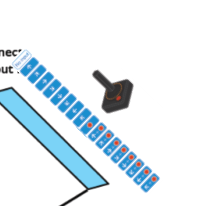</figure>
<p></p>
<p>Hình 11.12 Phác thảo mạng DQN được sử dụng để học chơi các trò chơi Atari. Chuyển thể từ Nature 518 (7540), Volodymyr Mnih, Koray Kavukcuoglu, David Silver, Andrei A. Rusu, Joel Veness, Marc G. Bellemare, Alex Graves, Martin Riedmiller, Andreas K. Fidjeland, Georg Ostrovski, Stig Petersen, Charles Beattie, Amir Sadik, Ioannis Antonoglou, Helen King, Dharshan Kumaran, Daan Wierstra, Shane Legg, and Demis Hassabis, Human-level control through deep reinforcement learning, pp. 529{533, fig. 1, doi.org/10.1038/nature14236, Copyright © 2015, Springer Nature.</p>
<p>DQN (mạng Q-learning sâu) là mạng cơ bản đã được Mnih (2014/15) sử dụng để học chơi các trò chơi Atari từ môi trường chuẩn Arcade Games Console. Mạng này về cơ bản là một mạng tích chập như minh họa trong Hình 11.12, nhận các khung hình video làm đầu vào và xuất ra các giá trị Q cho các hành động cần điều khiển khả dĩ. Mặc dù chúng ta đã phác thảo chiến lược cơ bản là sử dụng lỗi TD với lan truyền ngược để huấn luyện các mạng như vậy trong một nhiệm vụ RL, về cơ bản đại diện cho cách tiếp cận NFQ, Mnih et al. đã thực hiện một số bổ sung quan trọng để đạt được những kết quả này. Cụ thể, một yếu tố quan trọng trong mạng DQN ban đầu là việc sử dụng phát lại trải nghiệm (experience replay). Phát lại trải nghiệm hiện là một kỹ thuật phổ biến vì lý do sau. Thông thường tốc độ học phải khá nhỏ trong quá trình học để ngăn các trường hợp đơn lẻ chi phối. Điều này có nghĩa là các tập cụ thể chỉ có đóng góp rất nhỏ và người ta sẽ cần một lượng lớn các tập. Trong phát lại trải nghiệm, chúng ta ghi nhớ một hành động đã chọn và sử dụng các lô nhỏ (mini-batches) gồm các mẫu ngẫu nhiên để huấn luyện.</p>
<p>Một vấn đề phổ biến khác liên quan đến lý do tại sao chúng ta cần tốc độ học nhỏ là chúng ta cần một khoảng thời gian để lan truyền các giá trị Q và các giá trị có thể dao động rất nhiều. Một yếu tố quan trọng thứ hai trong việc sử dụng thực tế các mạng như vậy là việc sử dụng mạng Q mục tiêu (target Q-network). Trong kỹ thuật này, chúng ta đóng băng các tham số của mạng Q để ước lượng phần thưởng tương lai. Hãy gọi các trọng số này là w′. Khi đó chúng ta tính toán sai phân thời gian là</p>
<p>E = (r + γmaxQ(s′, a′, w′) −Q(s, a, w))2 (11.29)</p>
<p>→∂E</p>
<p>∂w = (r + γmaxQ(s′, a′, w′) −Q(s, a, w))∂Q</p>
<p>∂w . (11.30)</p>
<p>Các trọng số của mạng mục tiêu này chỉ được cập nhật định kỳ.</p>
<p>Có nhiều kỹ thuật khác được sử dụng kết hợp với các mô hình cơ bản. Ví dụ, cắt ngưỡng phần thưởng (clipping rewards) hoặc một số dạng chuẩn hóa mạng có thể giúp ngăn chặn sự tích tụ cực đoan của các giá trị Q. Có những kỹ thuật khác để giữ cho mạng phần nào ổn định vì những thay đổi nhỏ trong phần thưởng có thể gây ra những dao động lớn trong chính sách. Một khía cạnh quan trọng khác của các ứng dụng lớn hơn nữa là tìm một vị trí bắt đầu tốt để tạo ra các phản ứng có giá trị. Nghĩa là, nếu một người bắt đầu chơi trò chơi với các trọng số ngẫu nhiên thì khó có thể đạt đến điểm mà việc học có ý nghĩa có thể diễn ra. Quả thực, AlphaGo đã sử dụng học có giám sát trên dữ liệu chuyên gia để huấn luyện hệ thống ban đầu, trong khi các quy trình RL sau đó có thể tiếp tục và nâng cao hệ thống đến mức nó có thể vượt qua các kỳ thủ con người. Do đó, sự kết hợp giữa RL với học có giám sát dưới dạng học bắt chước là một kỹ thuật phổ biến, đặc biệt trong các ứng dụng rô-bốt. Tuy nhiên, thay vì đi sâu hơn vào các kỹ thuật này ở đây, có hai kỹ thuật lớn khác rất quan trọng và sẽ được thảo luận tiếp theo.</p>
<p>11.4.3 Bộ hành động (Actors) và tìm kiếm chính sách</p>
<h3>Cho đến nay chúng ta đã tập trung vào việc tìm một hàm giá trị và suy ra từ đó chính sách tham lam là hành động dẫn đến trạng thái có lợi tức lớn nhất. Hàm giá trị có thể được xem như một bộ phê bình (critic) để điều chỉnh chính sách. Một cách tiếp cận khác, đặc biệt khi sử dụng các bộ xấp xỉ hàm, là xem xét trực tiếp một chính sách được tham số hóa và tìm kiếm các tham số tốt của chính sách. Cách tiếp cận như vậy được gọi là bộ hành động (actor). Chúng ta cần tìm các tham số tối đa hóa phần thưởng nhận được. Chúng ta minh họa một thiết lập như vậy trong Hình 11.13. Bây giờ là lúc nghĩ về việc triển khai bộ hành động này như một mạng nơ-ron sâu nhận các quan sát chẳng hạn như hình ảnh từ camera và tạo ra các đầu ra như lệnh vận động cho một rô-bốt di động.</h3>
<p>S s</p>
<p>quỹ đạo</p>
<p>Hình 11.13 Minh họa một bộ hành động (actor) được triển khai bằng mạng nơ-ron sâu.</p>
<p>Chúng ta sẽ thảo luận cách tiếp cận này trong một bối cảnh ngẫu nhiên với các tập có chân trời hữu hạn thường được sử dụng cho tìm kiếm chính sách được thảo luận sau đây. Trong bối cảnh ngẫu nhiên, phần thưởng mang tính ngẫu nhiên nên chúng ta cần lấy mẫu trên các quỹ đạo. Một quỹ đạo là danh sách tất cả các trạng thái và hành động được thực hiện trong một tập, x = {s0, a0, s1, a1, ..., sT , aT }. (11.31)</p>
<h3>Vì chính sách và các phép chuyển tiếp cũng mang tính xác suất, chúng ta có thể viết xác suất của một quỹ đạo p(x) = p(s0, a0, s1, a1, ..., sT , aT ) là</h3>
<p>T Y</p>
<p>p(x|; w) = p(s0)</p>
<p>τ(st+1|st, at)π(at|st; w). (11.32)</p>
<p>t=0</p>
<h3>Ở đây chúng ta đã chỉ ra xác suất nào phụ thuộc vào các tham số của mô hình vì đây là những gì chúng ta muốn học. Trong trường hợp ngẫu nhiên, phần thưởng là ngẫu nhiên và chúng ta cần lấy mẫu trên các quỹ đạo. Vì ở đây chúng ta sử dụng trường hợp chân trời hữu hạn nên chúng ta không cần chiết khấu, và hàm mục tiêu có thể được viết đơn giản là giá trị trung bình của phần thưởng qua các tập lặp lại.</h3>
<p>T X</p>
<h3>ρ(st, π(at|st; w))]x∼p(x|w). (11.33)</h3>
<p>Hàm giá trị của actor: J(w) = E[</p>
<p>t=0</p>
<h3>Đây là một giá trị kỳ vọng nên chúng ta cần lấy mẫu để tìm một xấp xỉ của giá trị này</h3>
<h3>T X</h3>
<h3>J(w) ≈ 1 Nx</h3>
<p>X</p>
<h3>ρ(st, π(at|st; w)), (11.34)</h3>
<p>Nx</p>
<h3>Z</h3>
<p>∇wJ =</p>
<p>∇wp(x|w)ρ(x)dx. (11.35)</p>
<p>x</p>
<p>Vì p(x|w) là tích của nhiều số hạng, việc xét logarit của số hạng này sẽ rất hữu ích</p>
<p>∇w log p(x|w) = 1 p(x|w)∇wp(x|w), (11.36)</p>
<p>nhờ đó chúng ta có thể thay thế số hạng gradient trong phương trình 11.35,</p>
<h3>Z</h3>
<p>∇wJ = p(x|w)∇w log p(x|w)ρ(x)dx. (11.37)</p>
<p>x</p>
<h3>Nếu bây giờ chúng ta khai triển xác suất logarit của một quỹ đạo</h3>
<p>∇w log p(x|w) = ∇w log(s0) + ∇w log π(a|s; w) + ∇w log τ(s′|s, a) (11.38)</p>
<p>và xác suất của trạng thái đầu tiên cùng xác suất chuyển trạng thái không phụ thuộc vào các tham số mô hình, ∇w log(s0) = 0 và ∇w log τ(s′|s, a) = 0, chúng ta thấy rằng mình không cần một mô hình để đánh giá gradient. Ngoài ra, giờ đây chúng ta có thể viết lại gradient của hàm mất mát dưới dạng một giá trị kỳ vọng,</p>
<p>∇wJ = E[∇w log π(a|s; w)ρ(x)]x∼π(a|s;w) (11.39)</p>
<p>Kết quả đẹp đẽ này cho việc học không cần mô hình (model-free) của actor được gọi là định lý gradient chính sách (policy gradient theorem). Với định lý này, chúng ta thấy rằng mình có thể ước lượng gradient bằng cách lấy mẫu xác suất logarit của các chính sách và nhân với phần thưởng mẫu của các quỹ đạo,</p>
<h3>T X</h3>
<h3>T X</h3>
<p>∇wJ ≈ 1 Nx</p>
<h3>X</h3>
<p>log π(at|st; w)[ ρ(st, π(at|st; w))]. (11.40)</p>
<h3>Nx</h3>
<p>x=1 t=0 t=0</p>
<p>Điều này hoàn tất ý tưởng nguyên lý của việc huấn luyện một mô hình actor. Thuật toán này được gọi là</p>
<h3>REINFORCE: wt+1 ←wt −α⟨∇wlog(π)R⟩, (11.41)</h3>
<p>trong đó R biểu thị phần thưởng tích lũy của một quỹ đạo. Không may là trong thực tế, các mẫu cho gradient của chính sách logarit thường có phương sai rất cao đến mức việc lấy mẫu trở nên bất khả thi. Một thủ thuật để làm giảm phương sai này là chỉ tính đến sự thay đổi của R ở mỗi mẫu so với giá trị trung bình của một lô hoặc tập mẫu ¯R nào đó. Phiên bản có đường cơ sở (baseline) này được cho bởi</p>
<h3>REINFORCE với đường cơ sở: wt+1 ←wt −α⟨∇wlog(π)(R −¯R)⟩, (11.42)</h3>
<p>và đã có nhiều thủ thuật khác nhau được giới thiệu trong tài liệu nghiên cứu. Tuy nhiên, một phương pháp quan trọng khác sẽ được giới thiệu trong phần tiếp theo.</p>
<p>11.4.4 Các sơ đồ actor-critic</p>
<p>Giờ đây thật dễ dàng để giới thiệu một kiến trúc quan trọng cho học tăng cường, đó là kiến trúc actor-critic. Ý tưởng nguyên lý là thay thế ước lượng phần thưởng tích lũy của một quỹ đạo bằng một ước lượng tốt hơn về giá trị của các trạng thái đã đi qua. Chúng ta đã thảo luận chi tiết về việc ước lượng hàm Q trong các phần trước và giờ đây chúng ta có thể kết hợp hai cách tiếp cận này. Chúng ta chỉ cần thay thế R bằng Q trong thuật toán REINFORCE</p>
<h3>Actor-critic: wt+1 ←wt −α⟨∇wlog(π)Q⟩. (11.43)</h3>
<p>Bản thân hàm Q có thể được học bằng phương pháp sai phân thời gian (temporal difference), wt+1 ←wt −α(rt −V (st+1) −V (st))∇wlog(π). (11.44)</p>
<p>Các kiến trúc actor-critic như vậy hiện là những cài đặt phổ biến của học tăng cường với xấp xỉ hàm. Các cài đặt của nhiều thuật toán RL sâu (deep RL) gần đây được Matthias Plappert cung cấp tại https://github.com/keras-rl/keras-rl.</p>
<p>Như đã đề cập, việc huấn luyện một mạng nơ-ron trong khi khai thác nó để đề xuất hành động là rất nguy hiểm và thường dẫn đến dao động và mất ổn định. Một lý do là khi các giá trị Q gần nhau, những thay đổi nhỏ trong các giá trị Q có thể dẫn đến những thay đổi lớn trong các hành động phản hồi, gây ra vấn đề và sự thiếu nhất quán trong quá trình học. Về mặt này, học tăng cường dựa trên actor dường như có một số ưu điểm, nhưng việc xây dựng một tham số hóa phù hợp cho các hành động lại có những thách thức riêng. Tuy nhiên, việc kết hợp actor và critic đã được chứng minh là xây dựng được các hệ thống vững chắc hơn nhiều. Sơ đồ cơ bản được minh họa trong Hình 11.14 ở bên trái, và trong bối cảnh sử dụng mạng nơ-ron ở bên phải. Một cài đặt khác là DDAC (actor-critic sâu tất định – deterministic deep actor-critic) như minh họa trong Hình 11.15.</p>
<figure class="bookfig">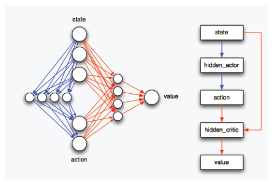</figure>
<figure class="bookfig">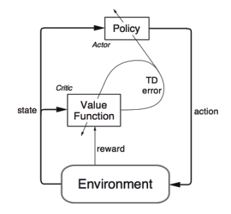</figure>
<p>Hình 11.14 Phác thảo cách tiếp cận actor-critic (Sutton-Barto; 1998) ở bên trái và mạng actor-critic Q-learning khớp bằng mạng nơ-ron (NFQAC) (Rückstiess, 2010) ở bên phải.</p>
<figure class="bookfig">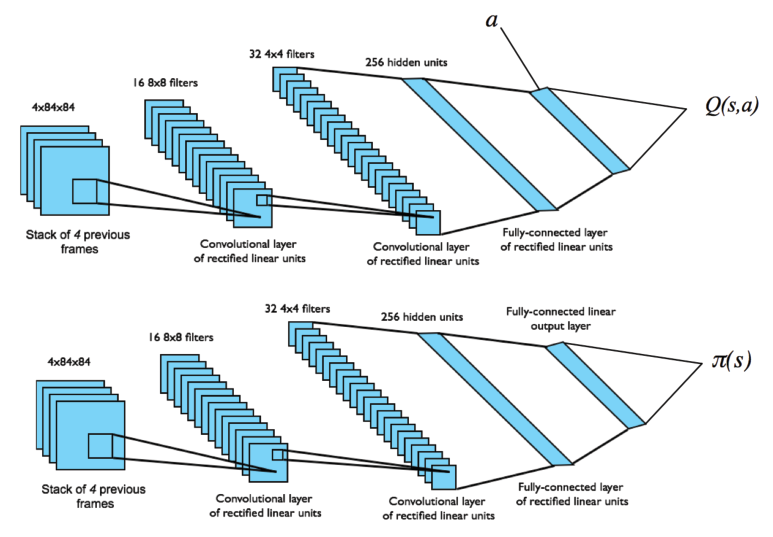</figure>
<p>Hình 11.15 Mạng actor-critic sâu tất định (DDAC) (từ Lillicrap, 2015).</p>
<p>11.4.5 Học tăng cường trong não bộ</p>
<p>Nhiều vùng não bộ có liên quan đến điều khiển vận động thích nghi và hệ thống ra quyết định. Ví dụ, tiểu não (cerebellum) có mối liên hệ chặt chẽ với điều khiển vận động, và sự điều kiện hóa phản xạ chớp mắt khi có luồng khí thổi vào là một ví dụ kinh điển về sự điều kiện hóa được cho là do tiểu não trung gian thực hiện. Một vùng khác có mối liên hệ chặt chẽ với học sai phân thời gian là hạch nền (basal ganglia). Chúng ta bắt đầu với một thảo luận ngắn gọn về tiểu não như một hệ thống điều khiển và sau đó tập trung vào học sai phân thời gian trong hạch nền.</p>
<p>11.4.6 Tiểu não và điều khiển vận động</p>
<p>Các sơ đồ điều khiển này có được sử dụng trong não bộ không? Có một số bằng chứng cho thấy các bộ điều khiển thích nghi được hiện thực hóa trong não bộ và đóng vai trò sống còn đối với sự sinh tồn của chúng ta. Sự thích nghi đã đề cập ở trên với các đặc tính vật lý thay đổi của hệ thống được điều khiển (ví dụ: độ cứng của cánh tay) hoặc sự biến đổi của hệ thống cảm giác (kính lăng kính) gợi ý về một hệ thống điều khiển vận động có khả năng thích nghi. Cả hai sơ đồ điều khiển, mô hình thuận và bộ điều khiển mô hình nghịch, đều có thể được hiện thực hóa bằng các mạng ánh xạ, và vấn đề đặt ra là xác định các thành phần và tín hiệu đặc trưng để chỉ ra sơ đồ điều khiển nào được hiện thực hóa trong não bộ.</p>
<p>Một vùng não từ lâu đã được liên kết với điều khiển vận động là vỏ tiểu não hay tiểu não. Giải phẫu của tiểu não thể hiện tính đều đặn rất cao và được tóm tắt dưới dạng sơ đồ trong Hình 11.16. Các đầu vào từ những nguồn khác nhau đi vào tiểu não qua các sợi rêu (mossy fibres) tiếp xúc với các tế bào hạt (granule cells) và tế bào Golgi. Các tế bào hạt có lẽ là những tế bào đông đảo nhất trong não, ước tính vào khoảng 1010–1011. Số lượng tế bào hạt vượt quá số lượng sợi rêu vài trăm lần, điều này khiến kiến trúc này trở thành ứng cử viên cho việc mã hóa lại mở rộng (expansion re-coding), như đã thảo luận ở Chương 9. Các tế bào hạt, cùng một số nơ-ron trung gian khác, cung cấp đầu vào chính cho các tế bào Purkinje thông qua các sợi song song (parallel fibres), mỗi tế bào Purkinje nhận tới 80.000 đầu vào từ các tế bào hạt khác nhau. Đến lượt mình, các tế bào Purkinje cung cấp đầu ra (ức chế) của tiểu não.</p>
<h3>Tế bào hình sao (Stellate cell)</h3>
<h3>Sợi song song</h3>
<h3>Tế bào giỏ (Basket cell)</h3>
<p>{</p>
<h3>Lớp phân tử</h3>
<h3>Tế bào Golgi Nơ-ron Purkinje</h3>
<p>{</p>
<h3>Lớp Purkinje</h3>
<p>{</p>
<h3>Lớp hạt</h3>
<h3>Tế bào hạt</h3>
<h3>Sợi leo (Climbing fibre)</h3>
<h3>Sợi rêu (Mossy fibre)</h3>
<h3>Khớp thần kinh kích thích</h3>
<h3>Khớp thần kinh ức chế</h3>
<h3>Các nhân nội tiểu não và tiền đình</h3>
<h3>Tủy sống Nhân chêm ngoài Các nhân lưới Các nhân cầu não {</h3>
<h3>Ra Nhân trám dưới</h3>
<p>Hình 11.16 Minh họa sơ đồ về một số mẫu kết nối trong tiểu não. Lưu ý rằng đầu ra của tiểu não được cung cấp bởi các nơ-ron Purkinje tạo thành các khớp thần kinh ức chế. Các sợi leo là đặc hiệu cho từng nơ-ron Purkinje và đan xen chặt chẽ với cây đuôi gai của chúng [phỏng theo Albus, Mathematical Bioscience 10: 25–61 (1971)].</p>
<p>Các tế bào Purkinje cũng nhận đầu vào từ cái gọi là các sợi leo xuất phát từ nhân trám dưới (inferior olive), mỗi tế bào có sợi leo riêng. Kiến trúc một-một này là duy nhất trong não bộ, và từ lâu người ta đã suy đoán rằng các sợi leo cung cấp tín hiệu giảng dạy cho các tế bào Purkinje. Tiểu não có thể được xem như một mạng ánh xạ, và các mạng như vậy có thể học cách dự đoán đầu ra cụ thể từ các mẫu đầu vào, như đã thảo luận trong Chương 7. Do đó, có khả năng tiểu não hiện thực hóa một mô hình thuận hoặc mô hình nghịch, hoặc một mô hình thích nghi khác có thể được hệ thống vận động ở não giữa hoặc thân não sử dụng để hướng dẫn các chức năng vận động.</p>
<p>11.4.7 Các cài đặt thần kinh của học TD</p>
<p>Chúng ta đã thảo luận về việc cài đặt học TD với các bộ xấp xỉ hàm như mạng sâu, nhưng sẽ rất bổ ích nếu minh họa một cài đặt trực tiếp hơn ở cấp độ hệ thống thần kinh bằng một ví dụ nhỏ để hiểu rõ các kiến trúc thần kinh đặc thù cho RL. Chúng ta chọn bài toán đủ đơn giản để hàm giá trị trạng thái V π(s) có thể được học bằng một perceptron đơn giản như minh họa trong Hình 11.17A.</p>
<p>Đầu vào của nút biểu diễn một trạng thái tại thời điểm t, s(t), được truyền tải bởi một mẫu tốc độ cụ thể, rin i (s) trong các kênh đầu vào. Đầu ra của nút tuyến tính là</p>
<h3>X</h3>
<p>wi(t)rin</p>
<h3>V (s) =</h3>
<p>i (s). (11.45)</p>
<p>i</p>
<p>Các giá trị tốc độ của perceptron tất nhiên là phụ thuộc thời gian vì các trạng thái đầu vào s phụ thuộc thời gian. Chúng ta cũng chỉ ra một cách tường minh sự phụ thuộc thời gian của các giá trị trọng số, wi(t), vì chúng sẽ thay đổi theo thời gian như một hàm của các tín hiệu củng cố.</p>
<p>C. Quy tắc sai phân thời gian B. Quy tắc delta thời gian A. Nút dự đoán tuyến tính in r 1 in r 3 in (t) (t) (t)</p>
<p>in (t) r 4 in r 1 in r 3 in (t) (t) (t)</p>
<p>in (t) r 4 r 2 r 2 in r 1 in r 3 in (t) (t) (t)</p>
<p>in (t) r 4 r 2 in(t-1)</p>
<p>in(t-1) r j r j r (t)</p>
<p>r (t)</p>
<h3>V(t) V(t)</h3>
<h3>V(t −1) chậm</h3>
<p>chậm</p>
<h3>V(t −1)</h3>
<p>nhanh</p>
<h3>V(t) γ V(t)</h3>
<p>r (t) r (t)</p>
<p>Hình 11.17 Cài đặt thần kinh của các thuật toán học phần thưởng. (A) Nút dự đoán tuyến tính. (B) Quy tắc delta thời gian với phần thưởng sơ cấp r. Đầu ra của nút dự đoán được chỉ ra tại thời điểm t −1 vì kết nối được xem là chậm. (C) Quy tắc sai phân thời gian với một vòng phụ nhanh.</p>
<p>Bây giờ hãy xét việc tác tử thực hiện một hành động để đáp lại chính sách dựa trên hàm giá trị này. Hành động này dẫn đến một phần thưởng ở bước thời gian tiếp theo, r(t + 1), và chúng ta muốn cập nhật các trọng số tại thời điểm nhận phần thưởng này để phản ánh kiến thức mới. Trong trường hợp nhận phần thưởng ngay lập tức ở bước thời gian tiếp theo, phần thưởng thực tế có thể được dùng làm đầu ra mong muốn, và chúng ta có thể sử dụng quy tắc delta đã thảo luận ở Chương 7 để huấn luyện perceptron tuyến tính, wt+1 i = wt i + α ∗ˆr(t + 1)rin i (s). (11.46)</p>
<p>Tham số α là tốc độ học, và chúng ta đưa vào phương trình này tín hiệu củng cố hiệu dụng</p>
<p>ˆr(t + 1) = r(t + 1) −V (t). (11.47)</p>
<p>Quy tắc học, phương trình 11.46, đôi khi được gọi là quy tắc delta thời gian vì sự chênh lệch theo thời gian giữa phần thưởng dự đoán và phần thưởng thực tế. Điều này tương tự với quy tắc delta tiêu chuẩn như đã thảo luận ở Chương 7 khi phần thưởng được cung cấp cùng lúc với trạng thái tương ứng. Tuy nhiên, chúng ta giữ lại sự chênh lệch thời gian này để nhấn mạnh một số bộ nhớ cần thiết trong cài đặt thần kinh. Do đó, hệ thống cần ghi nhớ giá trị V (st) trong một bước thời gian. Chúng ta đưa bộ nhớ này vào mô hình trong Hình 11.17B bằng cách xem kênh đầu ra là chậm, chẳng hạn như độ trễ sợi trục. Ngoài ra, hệ thống phải ghi nhớ các giá trị đầu vào (rin i (s)) trong một bước thời gian vì chúng ta quy nguyên nhân của phần thưởng cho việc thực hiện hành động cố định từ trạng thái trước đó. Chúng ta có thể hình dung dấu vết đủ điều kiện (eligibility trace) này như một dấu vết ngắn hạn trong một khớp thần kinh như minh họa trong Hình 11.17B.</p>
<p>Dấu vết đủ điều kiện và độ trễ sợi trục ở đây giải quyết bài toán gán công trạng theo thời gian (temporal credit assignment problem). Trọng số của các kênh đầu vào tới nút học hàm giá trị trạng thái phụ thuộc vào đầu ra bị trễ của nó và tín hiệu phần thưởng (củng cố) sơ cấp r. Tín hiệu củng cố sơ cấp được giả định có tác dụng kích thích lên một nút trung gian cho việc học, trong khi nút dự đoán có tác dụng ức chế lên nút trung gian cho việc huấn luyện. Do đó, nút huấn luyện này tính toán tín hiệu củng cố hiệu dụng của phương trình 11.47. Tín hiệu củng cố hiệu dụng này phải được truyền tới tất cả các khớp thần kinh của nút dự đoán, nơi nó phải tương quan với một dấu vết đủ điều kiện để tạo ra sự thay đổi trọng số thích hợp như đề xuất trong phương trình 11.46. Mô hình có thể tạo ra các dự đoán trước một bước của tín hiệu phần thưởng và tương ứng với một lựa chọn cụ thể của hàm giá trị trạng thái. Tín hiệu củng cố hiệu dụng bằng không khi hoạt động của nút dự đoán khớp với tín hiệu củng cố sơ cấp.</p>
<p>Điều rất thú vị cần chỉ ra là mô hình học phần thưởng này tương đương với lý thuyết Rescorla–Wagner trong điều kiện hóa cổ điển. Mô hình có ảnh hưởng lớn trong các phát hiện hành vi thuộc tài liệu học tập ở động vật này ở dạng cơ bản được cho bởi</p>
<p>∆V = αβ(λ −V ). (11.48)</p>
<p>Mô hình này mô tả cường độ liên kết giữa một kích thích và một dự đoán phần thưởng. Số hạng α mô tả mức độ nổi bật của kích thích và β là tốc độ học. Phần thú vị nhất là biểu thức trong ngoặc biểu diễn sự khác biệt giữa phần thưởng thực tế và kỳ vọng phần thưởng. Do đó, mô hình này là một dạng của mô hình sai phân thời gian.</p>
<p>Bước tiếp theo là tổng quát hóa cài đặt này cho các tình huống phần thưởng bị trì hoãn. Điều này được bao quát bởi dạng tổng quát hơn của học sai phân thời gian, mà trong bối cảnh này chúng ta có thể viết dưới dạng một giá trị được sửa đổi cho ˆr trong quy tắc học phương trình 11.46, cụ thể là sai số sai phân thời gian</p>
<p>ˆr(t) = r(t) + γV π(t) −V π(t −1). (11.49)</p>
<p>So với quy tắc delta thời gian (γ = 0), chúng ta chỉ cần thêm giá trị V π(t). Hình 11.17C cho thấy một cài đặt thần kinh khả dĩ của học sai phân thời gian, bao gồm một vòng phụ nhanh với hệ số suy giảm truyền giá trị γV π(t) tới nút tính toán tín hiệu củng cố sơ cấp.</p>
<h3>Sai số TD Giá trị</h3>
<p>1.00</p>
<p>0.2</p>
<p>0.75</p>
<p>0.50</p>
<p>0.1</p>
<p>0.25</p>
<h2>0 2 4 0.00</h2>
<h2>0 25 50 75 100 0.0</h2>
<h2>1 3 5 Trạng thái (thời gian) Lượt thử</h2>
<p>Hình 11.18 Thí nghiệm ví dụ về việc đi qua năm trạng thái liên tiếp với (các đường cong màu đỏ) quy tắc delta thời gian (γ = 0) và với (các đường cong màu xanh lam) thuật toán học TD (γ = 3).</p>
<p>. Một ví dụ về việc học các hàm giá trị khi đi qua sáu trạng thái liên tiếp được mã hóa bằng các mẫu ngẫu nhiên được hiển thị trong Hình 11.18. Phần thưởng được trao tại trạng thái 2 và 4 với độ lớn r(2) = 1 và r(4) = 0.5 (các đường cong màu đỏ). Hàm giá trị phản ánh phần thưởng sơ cấp có thể được học bằng quy tắc delta (phương trình 11.47 với γ = 0.) (các đường cong màu xanh lam). Khi học hàm giá trị bằng thuật toán học TD (phương trình 11.49 với γ = 0.3), tất cả các trạng thái đều trở nên có tính dự đoán phần thưởng và do đó ngay cả các trạng thái trung gian cũng mang một số giá trị. Các đường cong học tập chứng minh rằng sai số TD đang giảm dần, mặc dù đường cong cụ thể phụ thuộc nhiều vào các mẫu cụ thể biểu diễn các trạng thái. Các mô phỏng này được tạo bằng chương trình TDexperiment1.py sau đây.</p>
<p>Programs/TDexperiment1.py 1 import numpy as np 2 import m a t p l o t l i b . pyplot as p l t 3 4 gamma=0 5 w=np . zeros ( 1 0 ) ; 6 Z=np . zeros ( ( 1 0 0 , 6 ) ) ; rhatRec =np . zeros (100) 7 x=np . random . rand (10 ,6) 8 r =np . a r r a y ( [ 0 , 0 , 1 , 0 , 0 . 5 , 0 ] ) 9 10 f o r t r i a l in range ( 1 0 0 ) : 11 V=0; 12 f o r t in range ( 1 , 6 ) : 13 Vlast =V 14 V=w@x[ : , t ] 15 r h a t = r [ t −1]+gamma∗V−Vlast 16 w=w+0.1∗r h a t ∗x [ : , t −1] 17 Z[ t r i a l , t −1]= Vlast 18 rhatRec [ t r i a l ]= rhatRec [ t r i a l ]+ r h a t 19 p l t . f i g u r e ( ) ; p l t . p l o t (Z[ −1 ,:]) 20 p l t . f i g u r e ( ) ; p l t . p l o t ( rhatRec / 5 )</p>
<p>Thí nghiệm này cho thấy học sai phân thời gian có khả năng chuyển phản ứng phần thưởng sang các tín hiệu dự đoán sớm hơn, và các phản ứng thần kinh đặc trưng như vậy đã được Wolfram Schulz phát hiện ở các nơ-ron dopaminergic tại một số vùng của não giữa gọi là Vùng Trần Bụng (VTA) và Chất Đen (SN). Điều này được minh họa trong Hình 11.19, trong đó phản ứng của các nơ-ron dopaminergic ban đầu thiết lập một liên kết phần thưởng sơ cấp, sau đó dịch chuyển sang một liên kết phần thưởng sớm hơn. Họ thậm chí còn phát hiện ra rằng việc loại bỏ phần thưởng dẫn đến sự ức chế hoạt động, phù hợp với một sai số sai phân thời gian âm. Wolfram Schulz, Peter Dayan và Read Montague đã liên hệ những phát hiện này với học sai phân thời gian và qua đó liên hệ với các phát hiện hành vi được tóm tắt bởi lý thuyết Rescorla–Wagner. Đây là một ví dụ điển hình cho thấy các mô hình tính toán có thể liên kết các phát hiện hành vi với các cơ chế thần kinh như thế nào.</p>
<h3>CS R</h3>
<figure class="bookfig">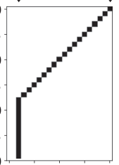</figure>
<figure class="bookfig">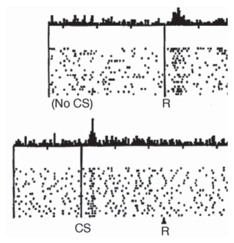</figure>
<p>0</p>
<p>5</p>
<p>10 lượt thử</p>
<p>15</p>
<p>20</p>
<p>25</p>
<p>30</p>
<p>0 5 10 15 20 thời gian</p>
<p>Hình 11.19 Minh họa sự chuyển dịch hoạt động của nơ-ron từ việc báo hiệu phần thưởng sơ cấp sang dự đoán phần thưởng với một kích thích có điều kiện. Các bản ghi được lấy từ Schulz, Dayan, Montague, ‘A neural substrate of prediction and reward’, Science 275, 1997, và mô phỏng là một cài đặt đơn giản hóa của mô hình của họ.</p>
<p>Công trình của họ được minh họa trong Hình 11.19. Ở bên trái là các bản ghi hoạt động của các nơ-ron dopaminergic. Ban đầu không có dự đoán phần thưởng và nơ-ron dopaminergic phản ứng với phần thưởng sơ cấp. Về sau trong lượt thử, nơ-ron phát xung đối với dự đoán phần thưởng sau kích thích có điều kiện (CS).</p>
<p>Một chương trình mô phỏng gọn nhẹ để minh họa khả năng này với học TD được cung cấp dưới đây.</p>
<p>Programs/TDexperiment2.py 1 import numpy as np 2 import m a t p l o t l i b . pyplot as p l t 3 4 gamma=1 5 w=np . zeros ( 2 0 ) ; Z=np . zeros ( ( 3 0 , 2 1 ) ) 6 7 f o r t r i a l in range ( 3 0 ) : 8 x=np . zeros ( 2 0 ) ; V=0; 9 f o r t in range ( 1 , 2 0 ) : 10 x l a s t =np . copy ( x ) # np needs copy 11 Vlast =V 12 x [ t ]= x [ t −1] # s h i f t v i s u a l memory 13 x [ t −1]=0 14 i f t ==2: x [ t ]=1 # v i s onset 15 p r i n t ( t , x ) 16 V=w@x</p>
<p>17 r h a t =gamma∗V−Vlast 18 w=w+1∗r h a t ∗x l a s t 19 Z[ t r i a l , t ]= r h a t 20 r h a t =1−V # l a s t time g e t s reward 21 w=w+1∗r h a t ∗x 22 Z[ t r i a l , t +1]= r h a t 23 p l t . imshow (Z , cmap= ’ binary ’ )</p>
<p>Một phần quan trọng của minh họa này là mã hóa theo thời gian của tín hiệu. Tín hiệu đầu vào do đó là một vectơ có các thành phần bằng không ngoại trừ các thành phần tại t = ∆t + t0. Trong đó t0 là thời điểm của CS, và ∆t biểu diễn thời gian kể từ khi kích thích xuất hiện. Theo cách này, kích thích mã hóa các trạng thái dưới dạng các bước thời gian giữa thời điểm xuất hiện CS và trạng thái phần thưởng. Mặc dù mã hóa theo thời gian này chắc chắn là một giả định đơn giản hóa, mục đích của mô phỏng là làm sáng tỏ khả năng lan truyền ngược của các dự đoán phần thưởng như được thể hiện trong kết quả mô phỏng ở bên phải của Hình 11.19. Ở giai đoạn đầu của các lượt thử, sai số TD phản ứng với phần thưởng, rồi dịch chuyển ngược về sau cho đến khi phản ứng hướng tới CS. Thí nghiệm chứng minh sự lan truyền ngược của dự đoán phần thưởng, đây là một trong những dấu hiệu đặc trưng của học TD. Rõ ràng có thể có những cơ chế tinh vi hơn đang hoạt động, bao gồm bộ nhớ tường minh hoặc thậm chí các bộ nhớ có cổng như đã thảo luận ở Chương 9.</p>
<p>11.4.8 Hạch nền</p>
<p>Chất đen thể hiện sai số TD trong não bộ là một phần của tập hợp các cấu trúc dưới vỏ được gọi là hạch nền (basal ganglia). Hạch nền, vốn được biết đến là đóng vai trò thiết yếu trong việc khởi phát các lệnh vận động, có nhiều thành phần cấu trúc cần thiết để hiện thực hóa một critic thích nghi và giám sát các actor có thể điều khiển việc khởi phát các chuyển động vận động. Hạch nền là tập hợp năm nhân dưới vỏ như minh họa trong Hình 11.20. Chúng nhận đầu vào từ vỏ não và đồi thị chủ yếu qua nhân bèo sẫm (putamen) và nhân đuôi (caudate nucleus), gọi chung là thể vân (striatum) cấu thành lớp đầu vào của hạch nền. Luồng thông tin sau đó đi qua cầu nhạt (globus pallidus, gồm phân đoạn trong và phân đoạn ngoài) tới lớp đầu ra chính là chất đen phần lưới (substantia nigra pars reticulata). Vòng phụ bên trong từ cầu nhạt qua nhân dưới đồi (subthalamic nucleus) cũng rất quan trọng cho thảo luận tiếp theo của chúng ta. Ngoài ra, lưu ý rằng chất đen phần đặc (substantia nigra pars compacta) chiếu ngược trở lại thể vân bằng các nơ-ron sử dụng dopamine làm chất dẫn truyền thần kinh.</p>
<p>Các luồng thông tin bên trong hạch nền được cho là tách biệt (ở một mức độ nhất định) trong các mô-đun xen kẽ nhau được gọi lần lượt là mô-đun chất nền (matrix modules) và mô-đun thể vân nhỏ (striosomal modules). Một cài đặt được đề xuất của sơ đồ actor–critic trong hạch nền được trình bày trong Hình 11.21. Lớp đầu vào của hạch nền rất giàu các nơ-ron gai (SP), nhận lượng lớn kết nối từ vỏ não (C). Các nơ-ron gai trong mô-đun thể vân nhỏ (SPs) cũng nhận các đường chiếu từ các nơ-ron dopaminergic (DA) ở chất đen phần đặc (SNc), tạo khớp thần kinh lên các gai của nơ-ron gai ở nhân đuôi và nhân bèo sẫm. Có khả năng đầu vào dopaminergic có thể làm thay đổi hiệu quả của các đầu vào vỏ não cụ thể được đánh dấu bằng một dấu vết đủ điều kiện. Các nơ-ron được thể hiện trong hạch nền cũng mang tính ức chế sao cho các nơ-ron dopaminergic ở SNc bị ức chế bởi hoạt động của SPs. Ngược lại, vòng phụ dưới đồi giải ức chế DA, điều này có thể dẫn đến sự kích thích nhất định của các nơ-ron DA tỷ lệ thuận</p>
<h3>Vỏ não</h3>
<h3>Nhân đuôi</h3>
<h3>Nhân bèo sẫm</h3>
<h3>Đồi thị</h3>
<h3>Nhân dưới đồi</h3>
<h3>Cầu nhạt</h3>
<h3>Chất đen</h3>
<p>( ) phần lưới phần đặc</p>
<h3>Củ não sinh tư trên</h3>
<p>Hình 11.20 Tổng quan giải phẫu về các kết nối bên trong hạch nền và các đường chiếu chính cấu thành đầu vào và đầu ra của hạch nền [phỏng theo Kandel, Schwarz và Jessell, Principles of neural science, McGraw-Hill, ấn bản lần thứ 4 (2000)].</p>
<h3>Vỏ não (trán)</h3>
<h3>F C C C</h3>
<h3>TH</h3>
<h3>Mô-đun thể vân nhỏ</h3>
<h3>Mô-đun chất nền</h3>
<h3>SPm SPs</h3>
<h3>ST</h3>
<h3>ST</h3>
<h3>DA PD</h3>
<h3>Hạch nền</h3>
<p>(actor) (critic)</p>
<h3>Củng cố sơ cấp</h3>
<p>Hình 11.21 Mô hình actor–critic của hạch nền với vỏ não (C), thùy trán (F), đồi thị (TH), nhân dưới đồi (ST), cầu nhạt (PD), các nơ-ron gai trong mô-đun chất nền (SPm), các nơ-ron gai trong mô-đun thể vân nhỏ (SPs), và các nơ-ron dopaminergic (DA) [phỏng theo Houk, Adams và Barto, trong Models of information processing in the basal ganglia, Houk, Davies và Beiser (chủ biên), MIT Press (1995)].</p>
<p>với các đầu vào từ vòng phụ này và một tín hiệu củng cố sơ cấp. Ngoài ra, nếu vòng phụ nhanh hơn ảnh hưởng trực tiếp SPs–DA, thì có khả năng mô-đun thể vân nhỏ hiện thực hóa critic giúp tối thiểu hóa sai phân thời gian, như đã thảo luận ở trên (so sánh Hình 11.17C).</p>
<p>Những điểm tương đồng giữa phản ứng phần thưởng của các nơ-ron dopaminergic ở SNc và tín hiệu củng cố hiệu dụng trong học sai phân thời gian đã đóng góp lớn vào giả thuyết về các lý thuyết học tăng cường của hạch nền. Phần này của hệ thống củng cố phần lớn tương ứng với critic trong hệ thống điều khiển. Các cài đặt cụ thể của actor trong hạch nền ít được thảo luận hơn nhiều</p>
<h3>Vỏ não</h3>
<p>mã hóa trạng thái / hành động</p>
<h3>Đồi thị</h3>
<h3>Thể vân</h3>
<p>dự đoán phần thưởng</p>
<h3>SNc</h3>
<h3>Cầu nhạt</h3>
<p>lựa chọn hành động</p>
<h3>Củng cố sơ cấp</h3>
<p>Hình 11.22 Sơ đồ Q-learning của hạch nền [phỏng theo Doya, HFSP Journal 1: 30–40 (2007)].</p>
<p>trong tài liệu nghiên cứu. Một trong những gợi ý sớm nhất là mô-đun chất nền có thể hiện thực hóa actor. Các nơ-ron dopaminergic chiếu tới các nơ-ron gai này (SPm) và do đó có thể làm thay đổi trọng số C–SPm theo cách tương tự như trong các kết nối C–SPs. Điểm khác biệt duy nhất là các nơ-ron này chiếu tới phân đoạn trong của cầu nhạt và chất đen phần lưới (SNr), vốn được cho là các lớp đầu ra chính của hạch nền. Đầu ra của hạch nền, theo cách đó, có thể điều khiển việc khởi phát các hành động vận động cụ thể gắn liền với phần thưởng.</p>
<p>Đề xuất kinh điển về một cài đặt actor–critic trong hạch nền đã thảo luận ở trên để lại nhiều câu hỏi mở và một số giả định còn gây tranh cãi. Mặc dù vẫn còn nhiều câu hỏi mở liên quan đến cài đặt cụ thể của học tăng cường trong hạch nền và vai trò tinh tế hơn của hạch nền trong quá trình xử lý của não bộ, nhưng có một sự đồng thuận rộng rãi rằng hạch nền thực sự đóng góp vào một dạng học tăng cường nào đó. Gần đây hơn, Q-learning cũng đã được ánh xạ lên các chức năng của hạch nền trong công trình của các nhà nghiên cứu hàng đầu như Kenji Doya và Peter Dayan. Một ví dụ được minh họa trong Hình 11.22, nơi thể vân được giả thuyết là tính toán hàm giá trị trạng thái-hành động, và các nơ-ron dopaminergic ở SNc tính toán sai số TD được sử dụng để cập nhật các kết nối vỏ não-thể vân. Hàm giá trị trạng thái-hành động sau đó được sử dụng ở cầu nhạt và đồi thị để lựa chọn hành động ngẫu nhiên. Các nhà nghiên cứu khác, chẳng hạn như Peter Redgrave và Kevin Gurney, cũng chỉ ra rằng hạch nền có thể đóng vai trò lớn trong việc khám phá các hành động mới lạ, điều này cũng rất cần thiết để thiết lập hành vi liên quan đến nhiệm vụ. Lĩnh vực này là một ví dụ tuyệt vời cho thấy nghiên cứu lý thuyết và thực nghiệm hỗ trợ lẫn nhau mạnh mẽ như thế nào.</p>
<p>Mặc dù chúng ta đã tập trung thảo luận về học tăng cường trong não bộ vào hạch nền, không nên quên rằng còn có những vùng khác trong não bộ có liên quan đến học tăng cường, hoặc ít nhất là liên kết các điều kiện phần thưởng với các hành động vận động cụ thể. Một số vùng não được cho là có liên quan đến việc tạo lập các liên kết phần thưởng, chẳng hạn, là vỏ não trước trán (prefrontal cortex) và vùng dưới vỏ gọi là hạch hạnh nhân (amygdala). Cả hai vùng đều nhận các đường chiếu từ nhiều giác quan và do đó nằm ở vị trí chiến lược để hình thành các liên kết giữa các phương thức cảm giác khác nhau và các điều kiện phần thưởng. Tổn thương hai bên của hạch hạnh nhân được biết là làm suy giảm đáng kể các liên kết như vậy. Hơn nữa, người ta đã chứng minh rằng các nơ-ron ở vỏ não trán ổ mắt (orbitofrontal cortex) điều chỉnh phản ứng của chúng đối với các kích thích sau khi thay đổi các liên kết phần thưởng của chúng. Các nơ-ron dopaminergic cũng chiếu vào vỏ não trán, vì vậy các cơ chế phần thưởng có thể bắt nguồn chủ yếu ở vỏ não trán trái ngược với giả thuyết về hạch nền đã thảo luận ở trên. Cuối cùng, cũng có các chất dẫn truyền thần kinh khác và các hệ thống phần thưởng cụ thể có thể đóng vai trò quan trọng trong học tăng cường. Ví dụ, serotonin là một chất dẫn truyền thần kinh có liên quan đến việc điều biến những thứ như tâm trạng, sự thèm ăn, tính dục và các tín hiệu né tránh, tất cả đều là những yếu tố có thể ảnh hưởng đến giá trị phần thưởng và việc lựa chọn hành động. Ngoài ra, khả năng lập kế hoạch của con người, cũng như khả năng đánh giá các mục tiêu dài hạn, vẫn chưa được bao quát bởi các liên kết phần thưởng đơn giản được sử dụng trong các thí nghiệm thảo luận ở đây.</p><h2 class="chapter-title">Phần IV · Chương 12 — Bộ não nhận thức</h2>
<h2>12 Bộ não nhận thức</h2>
<p>Chúng ta đã phác thảo nền tảng của các cơ chế thần kinh trong xử lý thông tin, cơ sở của học tập biểu diễn, trí nhớ ngắn hạn trong các hệ thống thần kinh hồi quy động, và học tăng cường làm cơ sở để xây dựng các hệ thống ra quyết định. Những chủ đề này được thảo luận trong cuốn sách như các nguyên lý cơ bản của những cơ chế mà bộ não sử dụng. Trong chương cuối cùng này, chúng ta muốn đưa ra một số ví dụ về các hệ thống đó trong những lý thuyết ở cấp độ nhận thức cao hơn, đồng thời giới thiệu ngắn gọn về mạng nhân quả như một khuôn khổ quan trọng cho các mô hình như vậy. Chúng ta bắt đầu bằng việc phác thảo thị giác phân cấp và có chú ý để đưa ra một ví dụ nhỏ về cách bộ não tích hợp các cơ chế vượt ra ngoài các mô hình nguyên khối như học sâu. Sau đó, chúng ta thảo luận về giả thuyết không gian làm việc nhằm cho thấy bộ não có thể tạo ra các giải pháp mới cho những nhiệm vụ mới trong các kiến trúc mô-đun như thế nào. Cuối cùng, chúng ta phác thảo các mô hình mô tả suy luận nhận thức bằng mạng nhân quả Bayes và cũng đưa ra cái nhìn tổng quan về những hướng đi rộng hơn của học tập nhân quả.</p>
<p>12.1 Thị giác có chú ý</p>
<p>12.1.1 Thị giác có chú ý</p>
<p>VisNet bao gồm các tương tác bên trong mỗi lớp để ổn định tính thưa thớt, mặc dù dòng thông tin giữa các lớp hoàn toàn là truyền thẳng. Bước tiếp theo là xem xét dòng thông tin từ trên xuống trong các mô hình vỏ não. Thông tin từ trên xuống đóng vai trò then chốt trong các quá trình nhận thức. Ví dụ, khi yêu cầu đối tượng tham gia tìm kiếm các mục cụ thể trong một cảnh thị giác, chẳng hạn như đỉnh tháp Eiffel trong ví dụ minh họa ở Hình 12.1. Một cuộc tìm kiếm thị giác như vậy đòi hỏi ảnh hưởng từ trên xuống của một thiên lệch đối tượng nhằm chỉ rõ cần tìm kiếm thứ gì. Ngược lại, chúng ta có thể yêu cầu đối tượng nhận dạng một vật thể tại một vị trí cụ thể, chẳng hạn như nhận dạng vật thể ở góc dưới bên phải của bức ảnh trong Hình 12.1. Điều này đòi hỏi sự chú ý không gian. Gustavo Deco và các cộng sự đã phát triển một mô hình có thể làm sáng tỏ các quá trình liên quan đến tìm kiếm thị giác và nhận dạng đối tượng. Sơ đồ tổng thể của mô hình được phác thảo trong Hình 12.2. Mô hình về cơ bản có ba phần quan trọng: một phần được gắn nhãn ‘V1–V4’, một phần được gắn nhãn ‘IT’, và một phần được gắn nhãn ‘PP’. Chúng ta sẽ phác thảo riêng kiến trúc và vai trò cụ thể của các phần này sau đây. Tuy nhiên, ngay từ đầu cần ghi nhớ rằng các phần khác nhau không hoạt động cô lập. Ở đây chúng ta đặc biệt quan tâm đến cách các phần khác nhau tác động lẫn nhau.</p>
<p>Đầu vào từ dưới lên cho mô hình đến từ các cảnh thị giác. Trong mô hình, điều này được mô phỏng bằng cách lấy các ảnh đầu vào và phân tách chúng bằng các hàm Gabor. Điều này tương ứng với các biểu diễn ở thể gối ngoài (LGN) vì các đường cong điều chỉnh trong LGN có thể được tham số hóa bằng các hàm Gabor. Các giai đoạn đầu của xử lý vỏ não được biểu diễn bằng một mô-đun gắn nhãn ‘V1–V4’ trong mô hình. Trong bản triển khai mô hình cụ thể được thảo luận ở đây, đây chỉ là một lớp duy nhất. Tuy nhiên, việc triển khai phân cấp</p>
<p>Fundamentals of Computational Neuroscience. Third edition. Thomas P. Trappenberg, Oxford University Press. © Oxford University Press 2023. DOI:10.1093/oso/9780192869364.003.0012</p>
<figure class="bookfig">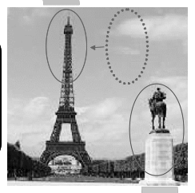</figure>
<h3>Ở ĐÂU (WHERE)</h3>
<h3>Ở ĐÂU (WHERE)</h3>
<p>Cho trước :</p>
<p>Cho trước :</p>
<p>Cho trước :</p>
<p>Cho trước :</p>
<h3>Các đặc trưng cụ thể</h3>
<h3>Các đặc trưng cụ thể</h3>
<h3>Vị trí không gian cụ thể</h3>
<h3>Vị trí không gian cụ thể</h3>
<p>( Đối tượng mục tiêu )</p>
<p>( đối tượng mục tiêu )</p>
<p>( Vị trí mục tiêu)</p>
<p>( vị trí mục tiêu)</p>
<p>Chức năng :</p>
<p>Chức năng :</p>
<p>Chức năng :</p>
<p>Chức năng :</p>
<h3>Quét ( Cửa sổ chú ý quét</h3>
<h3>Quét ( cửa sổ chú ý quét</h3>
<h3>Gắn kết ( Cửa sổ chú ý gắn kết các đặc trưng để nhận dạng )</h3>
<h3>Gắn kết ( cửa sổ chú ý gắn kết các đặc trưng</h3>
<h3>Toàn bộ cảnh )</h3>
<p>toàn bộ cảnh )</p>
<p>để nhận dạng )</p>
<h3>CÁI GÌ (WHAT)</h3>
<h3>CÁI GÌ (WHAT)</h3>
<h3>Nhận dạng đối tượng</h3>
<h3>Nhận dạng đối tượng</h3>
<p>Hình 12.1 Minh họa nhiệm vụ tìm kiếm thị giác và nhiệm vụ nhận dạng đối tượng. Mỗi nhiệm vụ đòi hỏi một chiến lược khác nhau trong việc khám phá cảnh thị giác [hình do Gustavo Deco cung cấp].</p>
<p>của mô hình này cũng đã được thực hiện nhưng không thiết yếu cho phần thảo luận sau đây. Vai trò chính của phần này trong mô hình là phân tách cảnh thị giác thành các đặc trưng. Điều này được biết là xảy ra ở giai đoạn đầu của quá trình xử lý thị giác ở linh trưởng. Ví dụ, các nơ-ron V1 chủ yếu phản hồi với các đặc trưng đơn giản như hướng của cạnh, và các vùng sau đó thường chuyên biệt để biểu diễn các đặc trưng khác như màu sắc, chuyển động, hoặc sự kết hợp của các đặc trưng cơ bản.</p>
<p>Dưới góc độ mô hình hóa, không nhất thiết phải tái tạo chính xác mọi chi tiết của biểu diễn trường thị giác trong não, vì chúng ta chủ yếu quan tâm đến các khía cạnh khác của xử lý thị giác. Ở đây chỉ quan trọng rằng biểu diễn đặc trưng trong phần này của mô hình có tính chất địa hình (topographic), theo nghĩa các đặc trưng được biểu diễn trong các phân vùng (được hiển thị dưới dạng các ô trong mô-đun ‘V1–V4’) tương ứng với vị trí của đối tượng trong trường thị giác, như đã thảo luận ở Mục 1.2.6. Mỗi phân vùng biểu diễn một đặc trưng của một phần trường thị giác dưới dạng một vectơ hoạt độ nút. Không có sự cạnh tranh toàn cục giữa các mô-đun; chỉ bên trong mỗi phân vùng mới có một nhóm ức chế giữ cho tính thưa thớt của hoạt độ trong mỗi phân vùng xấp xỉ không đổi như đã thảo luận ở Mục 8.5.1.</p>
<p>Biểu diễn của trường thị giác, sau khi được phân tách ở ‘V1–V4’, đi vào mô-đun gắn nhãn ‘IT’ trong mô hình. Phần này nhằm mô hình hóa các quá trình trong vỏ não thái dương dưới (inferior-temporal cortex), vốn được biết là tham gia vào nhận dạng đối tượng. Quá trình nhận dạng này được mô hình hóa như một bộ nhớ liên kết như đã phác thảo trong Chương 9. Các điểm hút (point attractors) của những đối tượng cụ thể sau đó được hình thành thông qua các kết nối nhánh bên được huấn luyện theo Hebb bên trong cấu trúc này. Các kết nối giữa ‘V1–V4’ và ‘IT’ cũng có thể được huấn luyện bằng học Hebb. Bằng cách lần lượt đặt một đối tượng tại tất cả các vị trí trong trường thị giác được bao phủ bởi các phân vùng ở ‘V1–V4’, các trọng số giữa các phân vùng trong ‘V1–V4’ và các nút trong ‘IT’ về cơ bản là giống nhau đối với mọi phân vùng. Điều này cho phép mạng điểm hút ‘nhận dạng’ các đối tượng đã được huấn luyện trong các lượt thử nghiệm tại mọi vị trí trong trường thị giác, qua đó mô phỏng khả năng nhận dạng đối tượng bất biến theo phép tịnh tiến. Tuy nhiên, mạng hút cũng đóng góp vào tính bất biến theo phép tịnh tiến</p>
<h3>Ức chế</h3>
<h3>IT ( Nhận dạng đối tượng )</h3>
<h3>Nhóm</h3>
<h3>PP Vị trí không gian</h3>
<p>„ “</p>
<h3>Cái gì</h3>
<p>( )</p>
<h3>Vị trí chú ý ưu tiên</h3>
<p>„ “</p>
<h3>Ở đâu</h3>
<h3>Ức chế</h3>
<p>nhóm</p>
<h3>V1 V4 (Trích xuất đặc trưng )</h3>
<p>....</p>
<h3>Ức chế</h3>
<p>nhóm ....</p>
<h3>Ức chế</h3>
<h3>Bộ lọc Gabor</h3>
<p>nhóm</p>
<h3>LGN</h3>
<h3>Trường thị giác</h3>
<p>Hình 12.2 Phác thảo một mô hình xử lý thị giác ở linh trưởng nhằm mô phỏng tìm kiếm thị giác và nhận dạng đối tượng. Các phần chính của mô hình được lấy cảm hứng từ các đặc điểm cấu trúc của những vùng vỏ não được cho là trung tâm trong các quá trình này. Chúng bao gồm các vùng thị giác sớm (gắn nhãn ‘V1–V4’) biểu diễn nội dung trường thị giác một cách địa hình với các đặc trưng cơ bản, vỏ não thái dương dưới (gắn nhãn ‘IT’) được biết là đóng vai trò trung tâm trong nhận dạng đối tượng, và vỏ não đỉnh sau (gắn nhãn ‘PP’) gắn liền chặt chẽ với sự chú ý không gian [hình do Gustavo Deco cung cấp].</p>
<p>của quá trình nhận dạng đối tượng vì mạng hút trong ‘IT’ hoàn thiện một mẫu đầu vào từ ‘V1–V4’ ngay cả khi tập trọng số giữa một phân vùng trong ‘V1–V4’ và các nút trong ‘IT’ yếu hơn các phân vùng khác.</p>
<p>Sự đóng góp của mạng hút trong ‘IT’ đối với nhận dạng đối tượng bất biến theo phép tịnh tiến giải thích một số phát hiện thực nghiệm gần đây cho thấy kích thước trường tiếp nhận của các nơ-ron thái dương dưới phụ thuộc vào nội dung của trường thị giác và các đặc điểm cụ thể của nhiệm vụ. Ví dụ, nếu một đối tượng đơn lẻ được hiển thị trên màn hình với nền trống, người ta thấy rằng trường tiếp nhận của một nơ-ron phản hồi với đối tượng này có thể rất lớn (lên tới 30 độ hoặc hơn). Một ví dụ về tốc độ phát xung của một nơ-ron thái dương dưới ở linh trưởng không phải người đang thực hiện nhiệm vụ tìm kiếm thị giác được thể hiện bằng đường liền nét trong Hình 12.3A. Điều thú vị là nếu hai đối tượng được trình bày đồng thời, hoặc nếu đối tượng mục tiêu được hiển thị trên một nền phức tạp (có thể xem như một cảnh có nhiều đối tượng), thì kích thước của trường tiếp nhận co lại rõ rệt (xem đường nét đứt trong Hình 12.3A cho trường hợp đối tượng trên nền phức tạp).</p>
<p>Một lời giải thích khả dĩ cho các phát hiện thực nghiệm được đưa ra bởi mô hình thảo luận trong mục này, vốn dựa trên động lực học hút của mạng tự liên kết trong ‘IT’. Nếu chỉ có một đối tượng được hiển thị, đối tượng đó sẽ kích hoạt đúng điểm hút và do đó gợi nhớ lại đối tượng bất kể vị trí của nó, điều này tương ứng với các trường tiếp nhận lớn. Tuy nhiên, nếu hai hoặc nhiều đối tượng đã huấn luyện được hiển thị, thì trạng thái cuối cùng của mạng hút có khả năng bị chi phối chủ yếu bởi đối tượng gần hố mắt (fovea) nhất, đối tượng nhận được trọng số lớn nhất do sự phóng đại vỏ não.</p>
<h3>A. Kết quả ghi nhận nơ-ron B. Kết quả mô phỏng mô hình</h3>
<p>130</p>
<h3>Nền trống</h3>
<p>1</p>
<p>120</p>
<h3>Nền trống</h3>
<h3>Tốc độ phát xung trung bình</h3>
<p>110</p>
<p>0.8</p>
<h3>Tương quan</h3>
<p>100</p>
<p>0.6</p>
<p>90</p>
<p>80</p>
<h3>Nền tự nhiên</h3>
<p>0.4</p>
<p>70</p>
<h3>Nền tự nhiên</h3>
<p>0.2</p>
<p>60</p>
<p>50</p>
<h2>0 10 20 30 40 50 60 0</h2>
<p>0 10 20 30 40 50 60</p>
<h3>Khoảng cách từ điểm nhìn đến đối tượng mục tiêu</h3>
<h3>Khoảng cách từ điểm nhìn đến đối tượng mục tiêu</h3>
<p>Hình 12.3 (A) Ví dụ về tốc độ phát xung trung bình từ các bản ghi của một nơ-ron trong vỏ não thái dương dưới của khỉ khi đáp ứng với một kích thích hiệu quả nằm ở các góc độ khác nhau cách xa hướng nhìn [dữ liệu thực nghiệm do Edmund Rolls cung cấp]. (B) Kết quả mô phỏng của một mô hình với các thành phần thiết yếu của mô hình trong Hình 12.2. Theo đó, độ tương quan là thước đo mức độ trùng khớp giữa hoạt độ của các nút ‘IT’ với biểu diễn của đối tượng mục tiêu đã được sử dụng trong quá trình huấn luyện [phỏng theo Trappenberg, Rolls, and Stringer, Advances in Neural Processing Systems 14, 2002, ].</p>
<p>Kết quả mô phỏng, được trình bày trong Hình 12.3B, xác nhận giả thuyết này.</p>
<p>12.1.2 Thiên lệch chú ý trong tìm kiếm thị giác và nhận dạng đối tượng</p>
<p>Tìm kiếm thị giác có thể được mô phỏng trong mô hình ở Hình 12.2 bằng cách cung cấp một đầu vào thiên lệch đối tượng cho mạng hút trong ‘IT’ nhằm báo cho hệ thống biết cần tìm thứ gì. Thông tin từ trên xuống như vậy được cho là bắt nguồn từ các vùng trán của não. Các mô phỏng đã chỉ ra rằng đầu vào bổ sung của một thiên lệch đối tượng tới ‘IT’ có thể tăng tốc quá trình nhận dạng trong ‘IT’. Thiên lệch đối tượng cũng hỗ trợ khả năng nhận dạng đối với đầu vào từ ‘V1–V4’ tương ứng với đối tượng mục tiêu trong tìm kiếm thị giác. Tương ứng, người ta thấy trong cả mô phỏng lẫn các thí nghiệm trên linh trưởng rằng trường tiếp nhận của các đối tượng mục tiêu lớn hơn trường tiếp nhận của các đối tượng không phải mục tiêu.</p>
<p>Những kết luận song song có thể được rút ra trong một nhiệm vụ nhận dạng đối tượng, trong đó đầu vào từ trên xuống được đưa vào một vị trí cụ thể trong mô-đun ‘PP’. Nhãn của mô-đun này gợi ý quá trình xử lý ở vỏ não đỉnh sau, vốn là một phần của con đường xử lý thị giác lưng (con đường ‘ở đâu’), và do đó được thích nghi đặc biệt cho các biểu diễn không gian. Phần này được mô hình hóa bằng một tấm thần kinh tổ chức theo không gian, được kết nối với phân vùng tương ứng trong ‘V1–V4’. Hoạt độ này ở ‘PP’ do đó có thể tăng cường hoạt độ thần kinh ở ‘V1–V4’ đối với các đặc trưng của đối tượng nằm tại vị trí tương ứng trong trường thị giác. Hệ quả là mạng ‘IT’ sẽ dễ dàng (nhanh chóng) hơn trong việc hoàn thiện các mẫu đầu vào cho đối tượng, và từ đó ‘nhận dạng’ đối tượng tại vị trí tương ứng.</p>
<p>Các thiên lệch chú ý có nguồn gốc khác nhau trong mô hình ở Hình 12.2. Thiên lệch chú ý được sử dụng trong tìm kiếm thị giác bắt nguồn từ đầu vào từ trên xuống tới ‘IT’ và dựa trên đối tượng. Thiên lệch chú ý trong nhiệm vụ nhận dạng đối tượng tác động lên ‘PP’ và dựa trên vị trí. Tuy nhiên, có thể khó tách biệt các dạng chú ý khác nhau trong thực nghiệm vì mọi phần của mô hình đều có tính hai chiều, phù hợp với các phát hiện giải phẫu. Ví dụ, một thiên lệch đối tượng tới ‘IT’ trong nhiệm vụ tìm kiếm thị giác cuối cùng sẽ kích hoạt một số hoạt độ ở ‘PP’ tương ứng với vị trí nơi đối tượng đang ở, và bản thân hoạt độ này sẽ hỗ trợ quá trình nhận dạng đối tượng đó.</p>
<p>Thời gian trôi qua cho đến khi hoạt độ của một nút trong ‘PP’ đạt đến một ngưỡng nhất định có thể được coi là dấu hiệu chỉ báo thời gian phản ứng cần thiết để tìm ra một đối tượng cụ thể trong tìm kiếm thị giác. Deco và cộng sự đã mô phỏng một nhiệm vụ tìm kiếm thị giác trong đó cảnh thị giác</p>
<h3>A. Tìm kiếm song song B. Tìm kiếm tuần tự</h3>
<h3>X</h3>
<h3>F F</h3>
<h3>F F</h3>
<h3>E X</h3>
<h3>E</h3>
<h3>E</h3>
<h3>Số lượng mục</h3>
<h3>Số lượng mục</h3>
<p>1 2 3</p>
<p>1 2 3</p>
<p>2 3</p>
<h3>Hoạt độ</h3>
<h3>Hoạt độ</h3>
<h3>PP</h3>
<h3>PP</h3>
<h3>Thời gian</h3>
<h3>Thời gian</h3>
<p>Hình 12.4 Các thí nghiệm số trong đó mô hình mô phỏng một nhiệm vụ tìm kiếm thị giác đối với một đối tượng mục tiêu (chữ ‘E’) trong một cảnh thị giác có các yếu tố gây nhiễu thị giác. (A) Trong một thí nghiệm, các yếu tố gây nhiễu gồm các chữ ‘X’, vốn rất khác biệt về mặt thị giác so với chữ mục tiêu. Hoạt độ của một nút ‘PP’ tương ứng với vị trí mục tiêu tăng lên trong các thí nghiệm này độc lập với số lượng yếu tố gây nhiễu, hàm ý tìm kiếm song song. (B) Thí nghiệm thứ hai được thực hiện với các yếu tố gây nhiễu (chữ ‘F’) tương đồng về mặt thị giác với chữ mục tiêu. Thời gian phản ứng, đo từ các nút ‘PP’, phụ thuộc tuyến tính vào số lượng đối tượng, một đặc điểm cũng đặc trưng cho tìm kiếm tuần tự. Tuy nhiên, cả hai chế độ đều hiện diện trong cùng một ‘kiến trúc song song’ [phỏng theo Gustavo Deco, trao đổi cá nhân].</p>
<p>có một mục tiêu (chữ ‘E’) và một số yếu tố gây nhiễu. Các yếu tố gây nhiễu (chữ ‘X’) trong một thí nghiệm rất khác về mặt thị giác so với mẫu mục tiêu. Thời gian phản ứng mô phỏng trong trường hợp này độc lập với số lượng đối tượng trong cảnh thị giác như chỉ ra trong Hình 12.4A. Ngược lại, thời gian phản ứng tăng tuyến tính theo số lượng yếu tố gây nhiễu khi các đối tượng gây nhiễu (chữ ‘F’) tương đồng về mặt thị giác với mục tiêu (xem Hình 12.4B). Sự gia tăng tuyến tính của thời gian phản ứng theo số lượng đối tượng trong cảnh thị giác thường được gán cho một cơ chế tìm kiếm tuần tự, trái ngược với việc không phụ thuộc của thời gian phản ứng vào số lượng đối tượng vốn chỉ ra tìm kiếm song song.</p>
<p>Những phát hiện tương tự trong các thí nghiệm tâm vật lý ở người thường được diễn giải là bằng chứng cho các chiến lược tìm kiếm khác nhau được cho là thực hiện bởi các cơ chế thần kinh khác nhau. Tuy nhiên, kết quả mô phỏng chứng minh rằng những kết quả tâm vật lý như vậy nhất quán với một bộ máy thần kinh song song duy nhất, và kiểu tìm kiếm tuần tự bề ngoài chỉ là do nhu cầu giải quyết xung đột gay gắt hơn trong quá trình nhận dạng. Mô hình có thể đưa ra nhiều dự đoán hơn nữa có thể kiểm chứng bằng thực nghiệm, ở mức độ hành vi, bằng các kỹ thuật chẩn đoán hình ảnh não hoặc bằng ghi nhận tế bào. Do đó, mô hình này là một ví dụ tốt về loại mô hình mà chúng ta hy vọng sẽ xuất hiện cho nhiều quá trình não bộ khác.</p>
<p>12.2 Giả thuyết không gian làm việc liên kết</p>
<p>Ngày càng rõ ràng rằng các nhiệm vụ nhận thức phức tạp chỉ có thể được giải quyết nhờ sự hợp tác linh hoạt của nhiều mô-đun chuyên biệt. Trái ngược với hầu hết các mô hình chức năng não hiện có, thật vô cùng hấp dẫn khi quan sát con người chúng ta linh hoạt đến mức nào trong việc đối phó với thế giới phức tạp xung quanh. Trái ngược với phần lớn các mô hình tạo ra hành vi rất rập khuôn, con người thể hiện khả năng làm chủ các chức năng đòi hỏi kỹ năng cao trong khi vẫn duy trì khả năng tạo ra các giải pháp mới chưa từng được huấn luyện chuyên sâu. Ví dụ, chúng ta có thể lái xe hơi dễ dàng đến mức dường như cần rất ít sự chú ý và nỗ lực để làm điều đó. Điều này bất chấp thực tế rằng chúng ta phải phản ứng với môi trường chưa biết, chẳng hạn như đi theo một con đường mà chúng ta chưa từng lái xe qua trước đây. Tuy nhiên, khi những tình huống rất mới và mang tính quyết định xảy ra, chúng ta có thể huy động bản thân với nhiều nguồn lực dành cho vấn đề này, điều thường đi kèm với hoạt động tinh thần rất tập trung và đôi khi rất gian nan.</p>
<p>12.2.1 Không gian làm việc toàn cục</p>
<p>Từ góc độ cấp hệ thống, chúng ta kỳ vọng các bộ xử lý chuyên biệt có thể có mức độ tự chủ cao trong khi vẫn có thể tham gia, khi cần thiết, vào các hoạt động hệ thống mang tính toàn cục hơn. Tuy nhiên, phần lớn vẫn chưa rõ làm thế nào sự linh hoạt như vậy có thể đạt được một cách bền vững. Trong phần còn lại của chương này, chúng ta sẽ xem xét một ý tưởng mang tính suy đoán nhưng có tầm ảnh hưởng sâu rộng về cách điều này có thể đạt được trong não, được đề xuất bởi Stanislas Dehaene, Michel Kerzberg và Jean-Piere Changeux. Trong Hình 12.5, chúng tôi đã tái hiện minh họa của họ về ý tưởng chính đằng sau đề xuất này. Trong đó, các tác giả chia các chức năng não thành năm hệ thống con cơ bản, trải dài từ hệ thống tri giác, vốn là cửa sổ của chúng ta hướng ra thế giới, đến hệ thống vận động chịu trách nhiệm thực thi các mục tiêu mong muốn. Ba hệ thống con còn lại là hệ thống trí nhớ, hệ thống đánh giá và hệ thống chú ý, tất cả đều là những thành phần cơ bản cho các nhiệm vụ nhận thức phức tạp theo quan điểm của nhiều nhà khoa học nhận thức. Điểm chính mà Dehaene và các cộng sự đưa ra là các hệ thống con này phải có khả năng hoạt động độc lập hoặc kết hợp với nhau một cách linh hoạt, và họ suy đoán rằng điều này có thể đạt được thông qua một dạng mạng lưới nào đó giữa các hệ thống con. Một mạng lưới liên kết như vậy sẽ tạo thành một không gian làm việc toàn cục (global workspace), vốn là nền tảng cho khả năng giải quyết các nhiệm vụ phức tạp một cách linh hoạt của chúng ta.</p>
<p>Trái ngược với các mạng xử lý cơ bản mang tính cục bộ hơn tạo nên năm hệ thống con cơ bản như minh họa trong Hình 12.5, không gian làm việc phải là một không gian tính toán mang tính toàn cục hơn trong não. Các đường chiếu giữa các vùng vỏ não thực sự rất dồi dào, và các sợi liên kết của những kết nối vỏ não – vỏ não bắt nguồn chủ yếu từ các nơ-ron tháp ở lớp II và lớp III, như đã đề cập ở Chương 1. Các tác giả gợi ý rằng một phần lớn của không gian làm việc toàn cục do đó có thể định vị bên trong các lớp này. Gợi ý này kéo theo những hệ quả thú vị cho việc diễn giải các phát hiện giải phẫu liên quan đến các lớp đó. Chúng ta đã đề cập rằng mức độ phát triển của các lớp bên trong vỏ não thay đổi đáng kể. Chẳng hạn, lớp II và lớp III được nâng cao (GIÁ TRỊ)</p>
<h3>Chú ý</h3>
<h3>Dài hạn</h3>
<p>hệ thống (Tập trung)</p>
<p>trí nhớ (QUÁ KHỨ)</p>
<h3>Không gian làm việc toàn cục</h3>
<h3>Hệ thống vận động (TƯƠNG LAI)</h3>
<h3>Hệ thống tri giác (HIỆN TẠI)</h3>
<p>Hình 12.5 Minh họa giả thuyết không gian làm việc. Có thể phân biệt hai không gian tính toán: các mạng con với chuyên môn hóa tính toán cục bộ và đặc thù, và một mạng lưới liên kết đóng vai trò nền tảng của không gian làm việc toàn cục [phỏng theo Dehaene, Kerszberg, and Changeux, Proceedings of the National Academy of Science 95: 14529–34 (1998)].</p>
<p>ở vỏ não trước trán lưng bên, một vùng đã được chứng minh có liên quan đến nhiều loại xử lý tinh thần phức tạp. Ví dụ, vùng này được thấy trở nên hoạt động trong các giai đoạn đầu của việc học một chuỗi số, và bệnh nhân bị tổn thương ở vùng này được cho là gặp khó khăn khi chuyển đổi giữa các quy tắc khác nhau trong các nhiệm vụ phân loại đầy thách thức hơn. Rất khó để ghi nhận hoạt động não từ các lớp cụ thể, và do đó việc kiểm chứng trực tiếp mô hình thảo luận dưới đây gặp nhiều thách thức. Trong những tình huống như vậy, cần thiết phải xây dựng các dự đoán khác có thể kiểm chứng được bằng thực nghiệm.</p>
<p>12.2.2 Minh họa không gian làm việc toàn cục trong nhiệm vụ Stroop</p>
<p>Dehaene và các cộng sự đã minh họa ý tưởng chính một cách chi tiết hơn nhiều bằng một mô hình giúp làm sáng tỏ quá trình xử lý trong nhiệm vụ Stroop khi tuân theo giả thuyết không gian làm việc toàn cục. Nhiệm vụ Stroop được minh họa trong Hình 12.6. Ở dạng phổ biến, nó bao gồm một tập các từ chỉ tên màu sắc, trong đó mỗi từ có thể được in bằng một màu khác. Trong nhiệm vụ Stroop, đối tượng được yêu cầu hoặc đọc từ đó hoặc gọi tên màu mà từ được viết (tất cả đều tương đối nhanh). Chúng ta được rèn luyện rất thuần thục trong việc đọc, nên việc hiển thị một từ không gây ra bất kỳ trở ngại nào khi phát âm từ đó. Tuy nhiên, việc gọi tên màu ban đầu có thể gây ra một số khó khăn vì hình ảnh của từ thúc đẩy chúng ta đọc từ thay vì phớt lờ nội dung và báo cáo màu của các chữ cái. Ban đầu phải mất một chút nỗ lực để ức chế việc đọc từ cho đến khi chúng ta tự động hóa phản hồi sau vài lượt thử. Lời giải thích mà Dehaene và các cộng sự đưa ra là không gian làm việc toàn cục phải trở nên hoạt động để ‘nối dây lại’ cấu hình gọi tên từ vốn thường xuyên hoạt động của bộ não.</p>
<p>Để minh họa ý tưởng này sâu hơn, các tác giả đã phát triển một mô hình có thể kiểm thử nhiệm vụ đọc tên từ gọi tên màu hình ảnh xám xám đen đen xám đen</p>
<p>Hình 12.6 Trong nhiệm vụ Stroop, một từ chỉ màu sắc, được viết bằng một màu có thể khác với nghĩa của từ đó, được hiển thị cho đối tượng và yêu cầu thực hiện nhiệm vụ đọc tên từ hoặc gọi tên màu.</p>
<p>trên nhiệm vụ Stroop. Điều này được minh họa trong Hình 12.7. Mô hình bao gồm ba bộ xử lý chuyên biệt: một bộ chỉ báo nghĩa của từ được hiển thị, một bộ chỉ báo màu sắc của từ được hiển thị, và một bộ chỉ báo phản hồi của hệ thống. Trong nhiệm vụ đọc từ chuẩn hơn, chúng ta có thể giả định có một sự ghép nối chặt chẽ giữa bộ xử lý đầu vào thứ nhất và bộ xử lý phản hồi để hệ thống ban đầu có thể dễ dàng báo cáo nội dung của từ. Nhiệm vụ thứ hai, tức là gọi tên màu mà từ được viết, sau đó đòi hỏi sự ức chế các kết nối này và tăng cường các kết nối giữa bộ xử lý đầu vào ‘màu sắc’ và bộ xử lý phản hồi. Điều này đạt được nhờ ảnh hưởng từ trên xuống của các nút không gian làm việc lên các nút trong các bộ xử lý chuyên biệt.</p>
<figure class="bookfig">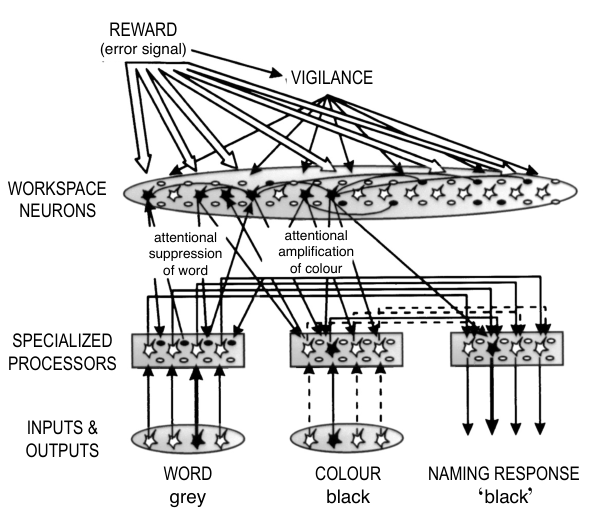</figure>
<h3>PHẦN THƯỞNG (tín hiệu lỗi)</h3>
<h3>SỰ CẢNH GIÁC</h3>
<h3>KHÔNG GIAN LÀM VIỆC</h3>
<h3>NƠ-RON</h3>
<p>khuếch đại chú ý ức chế chú ý đối với màu sắc của từ</p>
<h3>BỘ XỬ LÝ CHUYÊN BIỆT</h3>
<h3>ĐẦU VÀO & ĐẦU RA</h3>
<h3>TỪ</h3>
<h3>MÀU SẮC</h3>
<h3>PHẢN HỒI ĐỌC TÊN</h3>
<p>xám đen đen</p>
<p>Hình 12.7 Mô hình không gian làm việc toàn cục có khả năng tái tạo nhiều phát hiện thực nghiệm trong nhiệm vụ Stoop [phỏng theo Dehaene, Kerszberg, and Changeux, Proceedings of the National Academy of Sceince 95:14529–34 (1998)].</p>
<p>Điều gì thúc đẩy các nơ-ron không gian làm việc trở nên hoạt động hoặc thay đổi hành vi của chúng ngay từ đầu? Về cơ bản, hệ thống phải được cho biết cần làm gì. Điều này đạt được dưới dạng một tín hiệu phần thưởng chỉ báo sự sai lệch giữa phản hồi mong muốn và phản hồi thực tế của hệ thống. Tín hiệu lỗi lớn sau đó kích hoạt tham số cảnh giác (vigilance) tăng lên, từ đó cho phép các nơ-ron không gian làm việc trở nên hoạt động để tái cấu hình hệ thống một cách hiệu quả nhằm cho phép phản hồi đúng trong nhiệm vụ yêu cầu. Tham số cảnh giác giảm xuống một khi hệ thống phản hồi đúng. Các tác giả lập luận rằng sự gia tăng cảnh giác (và do đó là sự gia tăng hoạt độ của các nút không gian làm việc) có thể song hành với nỗ lực tinh thần tăng lên mà các đối tượng cảm nhận được trong giai đoạn đầu sau khi chuyển đổi nhiệm vụ.</p>
<p>Mô hình đưa ra một số dự đoán, chẳng hạn như sự gia tăng hoạt độ trong mạng không gian làm việc ở các nhiệm vụ mới, có thể kiểm chứng được bằng thực nghiệm. Mô hình chứng minh một sự linh hoạt thú vị trong việc giải quyết các nhiệm vụ khác nhau, và chúng ta có thể hình dung cách sự linh hoạt trong việc ghép nối các hệ thống con chuyên biệt trong não có thể chịu trách nhiệm cho khả năng thích ứng của chúng ta với môi trường luôn thay đổi mà chúng ta đang sống.</p>
<p>12.3 Các hệ thống ra quyết định bổ trợ</p>
<p>Chúng ta đã phác thảo học tăng cường trong Chương 11 gắn với các tổ chức cơ bản trong não như tiểu não và hạch nền. Cả hai cấu trúc não này đều đã được công nhận rộng rãi về sự tham gia của chúng vào một dạng điều kiện hóa nào đó. Ở đây chúng ta muốn quay lại chủ đề về các hệ thống ra quyết định như vậy với một phác thảo ngắn gọn về một giả thuyết đang nổi lên về các hệ thống ra quyết định bổ trợ. Chúng ta tập trung vào ví dụ về một hệ thống ra quyết định bổ trợ trong não, mặc dù có những ví dụ khác về các hệ thống bổ trợ trong não chẳng hạn như các hệ thống trí nhớ bổ trợ đã được thảo luận ở Chương 9. Một trường hợp khác thường được nghiên cứu là chuyển động giật mắt (saccadic eye movements) vốn có nhiều con đường để khởi phát chuyển động mắt nhanh.</p>
<p>Khi nói về các hệ thống học tập và ra quyết định, rõ ràng toàn bộ bộ não đều tham gia, và thậm chí chúng ta vừa lập luận trong mục trước rằng bộ não có thể huy động các vùng đa dạng để giải quyết linh hoạt các nhiệm vụ. Rõ ràng một sự tách biệt rạch ròi giữa các hệ thống có khả năng sẽ gặp vấn đề ở một mức độ nào đó. Tuy nhiên, chúng ta muốn quay lại cuộc thảo luận về các hệ thống ra quyết định không mô hình (theo thói quen) và có mô hình (cân nhắc kỹ lưỡng) cùng với một số giả thuyết về các tương quan giải phẫu và cấu trúc hỗ trợ. Điều này không có nghĩa đây là những hệ thống ra quyết định phân biệt được duy nhất trong não; trước đó chúng ta đã đề cập đến sự phân biệt giữa điều kiện hóa kiểu Pavlov (cổ điển) và điều kiện hóa công cụ. Tuy nhiên, trọng tâm của chúng ta hiện nay là thực tế hấp dẫn rằng có những hệ thống bổ trợ trong bộ não của chúng ta và các tương tác của chúng tự thân là một chủ đề thú vị, đồng thời dường như cũng có liên quan trong bối cảnh tâm thần học.</p>
<p>Để ôn lại, các hệ thống học tăng cường không mô hình giống với các quyết định theo thói quen vốn dường như dựa vào việc lưu trữ sẵn (caching) các trải nghiệm trước đó, và chúng ta đã thấy cách học sai biệt thời gian (temporal difference learning) có thể lan truyền những trải nghiệm phần thưởng như vậy đến ký ức về các trạng thái dẫn tới điều đó. Một hệ thống giá trị–hành động như vậy sau đó có thể tức thời và nhanh chóng đưa ra quyết định thậm chí nhanh hơn mức một hệ thống có ý thức có thể lĩnh hội. Hệ thống như vậy thậm chí có thể học các mối liên hệ phần thưởng–hành động rất nhanh với tốc độ học lớn. Tuy nhiên, tốc độ học lớn cũng có nghĩa là các quyết định có thể dao động mạnh trong một môi trường xác suất. Sự đánh đổi giữa các mục tiêu cạnh tranh như vậy tự thân đã rất thú vị. Mặc dù chúng ta chưa biết hoàn toàn cách các tốc độ học như vậy tự thích nghi trong não như thế nào, rõ ràng những lựa chọn khác nhau của sự đánh đổi này có thể làm thay đổi đáng kể hành vi của con người. Dù sao đi nữa, các hệ thống quyết định theo thói quen là phần thiết yếu trong cuộc sống của chúng ta, từ việc có thể lái xe hay vận hành máy móc hiệu quả, đến việc chơi thể thao thành thạo. Đã có nhiều báo cáo về cách thể vân lưng bên (DLS) cho thấy nhiều phản hồi liên quan đến việc ra quyết định theo thói quen. Một phác thảo về các tương quan giải phẫu như vậy của các hệ thống ra quyết định bổ trợ được trình bày trong Hình 12.8.</p>
<p>Hình 12.8 Phác thảo các con đường cho hệ thống ra quyết định theo thói quen và cân nhắc kỹ lưỡng [từ Mehdi Khamassi và Mark Humpries, Frontiers in behavioural neuroscience (2012)].</p>
<p>Tuy nhiên, một nhược điểm đáng kể của các hệ thống theo thói quen như vậy là tính thiếu linh hoạt của chúng khi xử lý các tình huống mới và thời gian cần thiết để đi đến quyết định. Để làm điều này tốt hơn, một mô hình về cấu trúc nhân quả của thế giới trở nên hữu ích. Nếu chúng ta hiểu các thành phần của thế giới cùng với những tác động nhân quả khả dĩ của chúng, thì chúng ta có thể cân nhắc một tình huống mới trước khi đưa ra các quyết định theo thói quen đầy rủi ro vốn có thể không phù hợp trong những hoàn cảnh này. Tất nhiên, việc tạo ra hoặc học một mô hình nhân quả của thế giới như vậy là một bài toán hoàn toàn khác. Phần lớn cuốn sách này đã nói về các thành phần cơ chế của một hệ thống như vậy chẳng hạn như học tập biểu diễn, và lát nữa trong chương này chúng ta sẽ đi sâu hơn một chút vào các hệ thống nhận thức trừu tượng hơn và các câu hỏi về học tập nhân quả. Trong Chương 11, chúng ta đã thấy một ví dụ nơi chúng ta biết về thế giới bằng cách biết mọi giá trị và mọi chuyển tiếp khả dĩ trong thế giới và thấy cách điều này có thể được sử dụng về mặt thuật toán. Rõ ràng điều này hữu ích để xây dựng các hệ thống ra quyết định cân nhắc kỹ lưỡng từ một mô hình thế giới nhân quả.</p>
<p>Linh trưởng dường như có cả hai hệ thống ra quyết định này. Một bằng chứng rõ ràng về các hệ thống theo thói quen là khối lượng lớn các thí nghiệm với điều kiện hóa công cụ trong tài liệu học tập ở động vật. Mặt khác, thật dễ dàng để chúng ta tự chứng thực rằng con người có thể đưa ra các quyết định cân nhắc kỹ lưỡng. Cũng có bằng chứng ở các động vật không phải linh trưởng về sự cân nhắc. Ví dụ, từ lâu người ta đã nhận thấy rằng loài gặm nhấm đôi khi dừng lại tại các điểm ra quyết định như một ngã rẽ trong mê cung. Điều thú vị là trong những khoảng thời gian dường như nghỉ ngơi này, hồi hải mã cho thấy một mẫu phát xung khác biệt rõ rệt so với trong giai đoạn di chuyển. Chúng ta đã phác thảo trong Chương 9 một lý thuyết về hồi hải mã như một bản đồ nhận thức, bao gồm bản đồ không gian–thời gian với các trường vị trí. Do đó, người ta gợi ý rằng hồi hải mã có thể cung cấp ngữ cảnh khám phá được mô phỏng cần thiết cho việc ra quyết định cân nhắc kỹ lưỡng. Điều này cũng khớp đẹp mắt với quan sát rằng đầu vào từ hồi hải mã đi qua vỏ não trước trán giữa vào thể vân lưng giữa, nơi cùng với vỏ não trán ổ mắt, gắn liền chặt chẽ với hệ thống ra quyết định cân nhắc kỹ lưỡng như minh họa trong Hình 12.8.</p>
<p>Hơn nữa, các lược đồ tác nhân–phê bình (actor-critic) đã được thảo luận trong Chương 11. Hiện ngày càng có nhiều bằng chứng cho thấy các phần cụ thể của thể vân bụng gọi là phần vỏ (shell) và phần lõi (core) ánh xạ rất khớp vào khuôn khổ này. Tất nhiên, sự phức tạp của bộ não và các tương tác bên trong các vùng não bao gồm động lực học của chúng có thể phức tạp hơn những gì được nắm bắt trong Hình 12.8, nhưng việc sàng lọc qua rất nhiều bằng chứng để khám phá các tổ chức và chức năng khả dĩ của não là một phần quan trọng của khoa học thần kinh tính toán.</p>
<h3>Dự đoán phần thưởng</h3>
<p>lỗi</p>
<h3>Theo thói quen</h3>
<p>lựa chọn hành động</p>
<h3>Bộ phân xử Tín hiệu lỗi Đối tượng điều khiển</h3>
<h3>Cân nhắc kỹ lưỡng</h3>
<p>lập kế hoạch</p>
<h3>Dự đoán trạng thái</h3>
<p>lỗi</p>
<p>Hình 12.9 Hình này phác thảo một hệ thống đã được triển khai trên một cánh tay robot đơn giản để nghiên cứu sự tương tác giữa hệ thống ra quyết định theo thói quen và cân nhắc kỹ lưỡng. Các con đường có mũi tên chéo đối với các hệ thống ra quyết định cho biết khả năng thích nghi (học tập) của chúng [từ Fard & Trappenberg, Frontiers in neurorobotics (2019)].</p>
<p>Một vấn đề khi có các hệ thống ra quyết định bổ trợ là câu hỏi làm thế nào để điều phối giữa các quyết định của chúng. Khi đó dường như cần thiết phải có một dạng bộ phân xử nào đó như minh họa trong Hình 12.9. Trong đề xuất thể hiện ở hình này, bộ phân xử trao lợi thế cho hệ thống theo thói quen trừ khi hệ thống này cho thấy một độ bất định lớn dưới dạng sai số dự đoán. Trước đây đã có nhận xét rằng độ bất định nên là một yếu tố mạnh mẽ trong việc kích hoạt hệ thống ra quyết định cân nhắc kỹ lưỡng. Một sự kích hoạt như vậy cũng có thể được khởi phát bởi các tín hiệu báo nguy hiểm hoặc bởi các hệ thống chú ý. Một số vùng như vỏ não trước trán và vỏ não vành đai trước đã được liên hệ với một</p>
<h3>X</h3>
<h3>A</h3>
<h3>R</h3>
<h3>W</h3>
<p>Hình 12.10 Một mạng Bayes với bốn biến ngẫu nhiên (R, mưa; A, áp suất khí quyển; W, bản tin (dự báo) thời tiết; X, các yếu tố nhân quả khác của mưa).</p>
<p>sự tham gia khả dĩ vào quá trình phân xử.</p>
<p>12.4 Suy luận xác suất: mô hình nhân quả và mạng Bayes</p>
<p>12.4.1 Mô hình đồ thị</p>
<p>Phần lớn các thảo luận trong cuốn sách này xoay quanh các cơ chế nền tảng của học tập biểu diễn và xử lý thông tin trong các mạng. Tất nhiên, rốt cuộc chúng ta muốn hiểu những cơ chế này cho phép suy luận nhân quả như thế nào. Các mô hình trừu tượng hơn trong khoa học nhận thức thường bắt đầu từ một biểu diễn ký hiệu cho trước của thế giới và mô hình hóa các quá trình nhận thức ở cấp độ trừu tượng hơn này. Một trong những lĩnh vực có ảnh hưởng nhất và khai sáng nhất theo đó là lĩnh vực suy luận Bayes trong các mô hình nhân quả. Mục này phác thảo một số kiến thức nền tảng trong lĩnh vực này. Các mô hình này thường được biểu diễn bằng các đồ thị chỉ rõ các quan hệ xác suất giữa các khái niệm, và do đó những mô hình đó còn được gọi là mô hình đồ thị (graphical models).</p>
<p>Hãy xét ví dụ về việc dự báo liệu ngày mai trời có mưa hay không. Cụ thể hơn, chúng ta muốn ước lượng xác suất trời mưa khi biết một số quan sát nhất định. Ví dụ, chúng ta có thể đo xu hướng áp suất khí quyển bằng áp kế, hoặc xem bản tin thời tiết trên thời sự buổi tối có dự báo mưa hay không. Vì chúng ta không thể dự đoán giá trị chính xác của các biến này tại bất kỳ thời điểm nào, chúng ta coi các khái niệm này là các biến ngẫu nhiên. Tất nhiên, có nhiều yếu tố ảnh hưởng đến điều kiện thời tiết; áp suất khí quyển là một trong số đó. Ngược lại, mặc dù chúng ta nghĩ (hoặc ít nhất là hy vọng) rằng có mối tương quan cao giữa dự báo thời tiết trên bản tin buổi tối (vốn có xét đến nhiều yếu tố) và xác suất mưa vào ngày hôm sau, dự báo này chắc chắn không phải là nguyên nhân gây ra mưa. Thay vào đó, nó có phần gián tiếp ở chỗ một số nguyên nhân gây mưa ảnh hưởng đến dự báo mưa trên bản tin buổi tối.</p>
<p>Các quan hệ nhân quả của những yếu tố khác nhau trong ví dụ này được minh họa bằng một mô hình đồ thị trong Hình 12.10. Trong các mạng Bayes như vậy, mỗi vòng tròn biểu diễn một biến ngẫu nhiên (R, mưa; A, áp suất khí quyển; W, bản tin (dự báo) thời tiết; X, các yếu tố nhân quả khác của mưa). Các mũi tên giữa chúng biểu diễn các xác suất có điều kiện.</p>
<p>... ...</p>
<h3>R(t-1) R(t) R(t+1)</h3>
<h3>W(t-1)</h3>
<h3>W(t) W(t+1)</h3>
<p>Hình 12.11 Một mô hình Bayes động với một biến ẩn (R) và một biến quan sát được (W). Mỗi biến tuân theo điều kiện Markov bậc nhất. Các mô hình như vậy còn được gọi là mô hình Markov ẩn.</p>
<p>Do đó, hàm mật độ của toàn bộ mô hình có thể được phân tích thành nhân tử nhờ tính độc lập có điều kiện của các nút không có mũi tên nối giữa chúng như sau</p>
<h3>P(R, A, X, W) = P(R|A, X)P(W|A, X)P(A)P(X). (12.1)</h3>
<p>Biểu thức này ngắn gọn hơn nhiều so với mô hình thống kê chẩn đoán tổng quát mà chúng ta sẽ phải đánh giá nếu không biết các quan hệ nhân quả. Tất nhiên, các phân phối có điều kiện khác nhau cần được ước lượng từ dữ liệu, nhưng một khi đã biết các đại lượng này, người ta có thể trả lời các câu hỏi cụ thể, chẳng hạn như khả năng trời mưa là bao nhiêu khi biết bản tin dự báo thời tiết báo có mưa.</p>
<p>Một biến thể hữu ích của các mô hình nhân quả là mạng Bayes động (DBN), vốn có tính đến các khía cạnh thời gian. Ví dụ, trong mô hình ở Hình 12.11, chúng ta xem xét liệu trời có đang mưa tại điểm đến du lịch yêu thích của chúng ta hay không. Vì không có mặt ở đó, chúng ta chỉ có thể xem kênh thời tiết vốn báo cáo vào ngày hôm đó xem có mưa hay không. Như vậy, chỉ có biến ngẫu nhiên W(t) tại thời điểm t là quan sát được, còn biến ngẫu nhiên R(t) bị ẩn. Thông tin trên kênh thời tiết không hoàn toàn mang tính kết luận, vì bản tin bao phủ một khu vực rộng lớn và có thể không chính xác cho điểm đến du lịch cụ thể của chúng ta. Mô hình có tính đến việc trời có nhiều khả năng mưa hơn nếu ngày hôm trước đã mưa. Các mạng có mẫu kết nối đơn giản như ở Hình 12.11, trong đó các nút độc lập có điều kiện với các nút khác khi biết các nút cha, được gọi là chuỗi Markov. Ngoài ra, chúng ta thường xem xét các mô hình trong đó các quy luật (xác suất có điều kiện) không phụ thuộc vào thời gian (có tính dừng). Các mô hình với những điều kiện này, và với cấu trúc của Hình 12.11 bao gồm một biến ẩn và một biến quan sát được, được gọi là mô hình Markov ẩn (hidden Markov models). Các thuật toán hiệu quả đã được tìm ra để thực hiện suy luận xác suất (suy diễn thống kê), và những mô hình như vậy ngày càng được sử dụng nhiều để mô tả các quá trình tinh thần.</p>
<p>12.4.2 Ví dụ của Pearl</p>
<p>Bên cạnh sự bùng nổ thuần túy về số lượng tham số khi độ phức tạp của mô hình xác suất tăng lên, còn có một lý do khác khiến hàm xác suất đồng thời không hẳn là thứ chúng ta cần biết. Các hàm mật độ đồng thời của nhiều biến mô tả sự cùng xuất hiện của các giá trị cụ thể của các biến ngẫu nhiên, và hàm xác suất đồng thời p(X, Y ) do đó đối xứng theo các đối số của nó, p(X, Y ) = p(Y, X). Điều thực tế hơn trong đời sống là suy luận về các quan hệ nhân quả. Ví dụ, chuông báo cháy phải được kích hoạt bởi một đám cháy, mặc dù có một xác suất nhỏ là chuông sẽ không kêu khi thiết bị bị hỏng. Tuy nhiên, (hy vọng là) khó có khả năng âm thanh của chuông báo cháy sẽ gây ra một đám cháy. Thật hữu ích khi minh họa các quan hệ nhân quả như vậy bằng các đồ thị như</p>
<h3>F A</h3>
<p>. Trong các mô hình đồ thị như vậy, các nút biểu diễn các biến ngẫu nhiên, và các liên kết giữa chúng biểu diễn các quan hệ nhân quả với xác suất có điều kiện, p(A|F). Vì chúng ta dùng mũi tên trên các liên kết, ở đây chúng ta thảo luận về đồ thị có hướng, và chúng ta cũng giới hạn thảo luận ở các đồ thị không có chu trình, gọi là đồ thị không chu trình. Đồ thị có hướng không chu trình còn được gọi là DAG.</p>
<h3>P(E)</h3>
<h3>P(B)</h3>
<h3>Trộm đột nhập (Burglary)</h3>
<h3>Động đất (Earthquake)</h3>
<p>.002</p>
<p>.001</p>
<h3>B t t f f</h3>
<h3>E t f t f</h3>
<h3>P(A|B,E)</h3>
<p>.95</p>
<h3>Báo động (Alarm)</h3>
<p>.94</p>
<p>.29 .001</p>
<h3>A t f</h3>
<h3>P(J|A) A t f</h3>
<h3>P(M|A)</h3>
<p>.90 .05</p>
<p>.70 .01</p>
<h3>MaryGọi JohnGọi</h3>
<p>Hình 12.12 Ví dụ về mô hình nhân quả.</p>
<p>Các mô hình nhân quả dạng đồ thị được Judea Pearl phát triển mạnh mẽ, và ví dụ sau đây được lấy từ cuốn sách Causality: models, reasoning and inference của ông. Mô hình được trình bày trong Hình 12.12. Mỗi nút trong năm nút đại diện cho một biến ngẫu nhiên nhị phân (Trộm đột nhập B={có,không}, Động đất E={có,không}, Báo động A={có,không}, John gọi J={có,không}, Mary gọi M={có,không}). Hình vẽ cũng bao gồm các bảng xác suất có điều kiện (CPT) quy định các xác suất có điều kiện được biểu diễn bởi các liên kết giữa các nút.</p>
<p>Phân phối đồng thời của năm biến có thể được phân tích thành nhân tử theo nhiều cách tuân theo quy tắc chuỗi (quy tắc Bayes tổng quát) của lý thuyết xác suất, ví dụ như p(B, E, A, J, M) = P(B|E, A, J, M)P(E|A, J, M)P(A|J, M)P(J|M)P(M).</p>
<p>(12.2) Tuy nhiên, mô hình nhân quả biểu diễn một phép phân tích nhân tử cụ thể của các hàm xác suất đồng thời, cụ thể là p(B, E, A, J, M) = P(B)P(E)P(A|B, E)P(J|A)P(M|A), (12.3)</p>
<p>vốn dễ xử lý hơn nhiều. Ví dụ, nếu chúng ta không biết các hàm xác suất có điều kiện, chúng ta cần chạy nhiều thí nghiệm hơn để ước lượng các điều kiện khác nhau (24 + 23 + 22 + 21 + 20 = 31) thay vì số điều kiện đã được thu gọn trong mô hình nhân quả (1 + 1 + 22 + 2 + 2 = 10). Cũng rất dễ sử dụng mô hình nhân quả để thực hiện suy luận (rút ra kết luận) cho các câu hỏi cụ thể. Chẳng hạn, giả sử chúng ta muốn biết xác suất không có động đất hay trộm đột nhập khi chuông báo động kêu và cả John lẫn Mary đều gọi. Xác suất này được cho bởi</p>
<p>P(B = f, E = f, A = t, J = t, M = t) = P(B = f)P(E = f, )P(A = t|B = f, E = f)P(J = t|A = t)P(M = t|A = t) = 0.998 ∗0.999 ∗0.001 ∗0.7 ∗0.9 ≈0.00062.</p>
<p>Mặc dù chúng ta có một mô hình nhân quả trong đó các biến cha ảnh hưởng đến kết quả của các biến con, chúng ta cũng có thể sử dụng bằng chứng từ biến con để suy ra một số giá trị khả dĩ của biến cha. Ví dụ, hãy tính xác suất chuông báo động kêu, khi biết John gọi, P(A = t|J = t). Để làm điều này, trước tiên chúng ta nên tính xác suất chuông báo động kêu vì chúng ta sẽ cần đến nó sau này. Giá trị này được cho bởi</p>
<p>P(A = t) = P(A = t|B = t, E = t)P(B = t)P(E = t) + ...</p>
<p>P(A = t|B = t, E = f)P(B = t)P(E = f) + ... P(A = t|B = f, E = t)P(B = f)P(E = t) + ... P(A = t|B = f, E = f)P(B = f)P(E = f) = 0.95 ∗0.001 ∗0.002 + 0.94 ∗0.001 ∗0.998 + ...</p>
<p>0.29 ∗0.999 ∗0.002 + 0.001 ∗0.999 ∗0.998 = 0.002516442.</p>
<p>Sau đó chúng ta có thể dùng quy tắc Bayes để tính xác suất cần tìm,</p>
<p>P(A = t|J = t) = P(J = t|A = t)P(A = t) P(J = t|A = t)P(A = t) + P(J = t|A = f)P(A = f)</p>
<p>≈ 0.9 ∗0.0025 0.9 ∗0.0025 + 0.05 ∗0.9975 ≈0.0434.</p>
<p>Tương tự, chúng ta có thể áp dụng các quy tắc của lý thuyết xác suất để tính các đại lượng khác, nhưng các phép tính này có thể trở nên cồng kềnh với những đồ thị lớn hơn. Do đó, thật hữu ích khi sử dụng các công cụ số để thực hiện suy luận như vậy. Một bộ công cụ Python cho mạng Bayes được giới thiệu trong mục tiếp theo.</p>
<p>Trong khi suy luận là một ứng dụng quan trọng của các mô hình nhân quả, việc suy ra quan hệ nhân quả từ dữ liệu là một lĩnh vực khác nơi các mô hình nhân quả cách mạng hóa các nghiên cứu khoa học. Nhiều phương pháp truyền thống đánh giá sự cùng xuất hiện của các sự kiện để xác định sự phụ thuộc, chẳng hạn như phân tích tương quan. Tuy nhiên, một phân tích tương quan như vậy thường không phải là chỉ báo tốt cho quan hệ nhân quả. Hãy xem xét ví dụ trong Hình 12.12. Khi chuông báo động kêu, nhiều khả năng John và Mary sẽ gọi, nhưng sự kiện John gọi độc lập lẫn nhau với sự kiện Mary gọi. Tuy vậy, khi John gọi thì về mặt thống kê cũng có nhiều khả năng quan sát thấy sự kiện Mary gọi hơn. Đôi khi chúng ta chỉ quan tâm đến khả năng cùng xuất hiện, khi đó phân tích tương quan có thể là một khởi đầu tốt, nhưng nếu chúng ta quan tâm đến việc mô tả nguyên nhân của các quan sát, thì chúng ta cần một cách tiếp cận khác. Một số thuật toán đã được đề xuất cho học tập cấu trúc, chẳng hạn như thuật toán gọi là suy luận nhân quả (inferred causation - IC), vốn suy diễn ra cấu trúc nhân quả có khả năng cao nhất đằng sau dữ liệu cho trước.</p>
<p>12.4.3 Suy luận xác suất trong Python sử dụng LEA</p>
<p>Có một số công cụ để làm việc với các mô hình xác suất và mô hình đồ thị Bayes. Một bộ công cụ lập trình xác suất tổng quát rất nổi bật là Stan (https://mc-stan.org), nhưng ở đây chúng ta sẽ đưa ra một ví dụ sử dụng LEA3 (https://bitbucket.org/piedenis/lea) vốn là một công cụ đơn giản hơn để làm việc với xác suất rời rạc trong Python. Đặc biệt, LEA có hỗ trợ trực tiếp cho các mô hình Bayes. Mục ngắn gọn này không nhằm mục đích giới thiệu kỹ lưỡng công cụ này mà chỉ đưa ra một ví dụ nhằm minh họa tính hữu ích của những công cụ như vậy. Chúng ta sẽ trình bày một chương trình ví dụ cho bài toán trộm đột nhập/động đất.</p>
<p>Phần chính của chương trình là định nghĩa cấu trúc đồ thị và các bảng xác suất có điều kiện đi kèm. Đoạn mã tương ứng khá dễ tự hiểu.</p>
<p>Listing 12.1 LeaExample.ipynb (part 1) 1 import l e a 2 3 b u r g l a r y = l e a . event ( 0 . 0 0 1 ) 4 earthquake = l e a . event ( 0 . 0 0 2 ) 5 alarm = l e a . j o i n t ( burglary , earthquake ) . switch ({ 6 ( True , True ) : l e a . event ( 0 . 9 5 0 ) , 7 ( True , False ) : l e a . event ( 0 . 9 4 0 ) , 8 ( False , True ) : l e a . event ( 0 . 2 9 0 ) , 9 ( False , False ) : l e a . event ( 0 . 0 0 1 ) }) 10 j o h n C a l l s = alarm . switch ({ True : l e a . event ( 0 . 9 0 ) , 11 False : l e a . event ( 0 . 0 5 ) }) 12 maryCalls = alarm . switch ({ True : l e a . event ( 0 . 7 0 ) , 13 False : l e a . event ( 0 . 0 1 ) })</p>
<p>Ký pháp này bao gồm việc đặc tả các bảng xác suất rời rạc, và nó chứa các quan hệ giữa các biến nên không cần phải đặc tả riêng rẽ đồ thị mạng.</p>
<p>Một khi đồ thị đã được đặc tả, có thể sử dụng một số bộ máy suy luận vốn đóng vai trò trái tim của các công cụ như vậy. Trước đó chúng ta đã thấy việc áp dụng liên tục quy tắc Bayes để khử biến dẫn đến đáp án giải tích cho các truy vấn cụ thể. Những phép tính chính xác như vậy cho việc khử biến có thể được cài đặt sao cho suy luận có thể đạt được bằng các lời gọi hàm đơn giản. Ví dụ, nếu chúng ta muốn biết xác suất Mary gọi khi biết có báo động là bao nhiêu, chúng ta có thể viết trong LEA</p>
<p>Listing 12.2 LeaExample.ipynb (part 2) 1 P ( maryCalls . given ( alarm ) )</p>
<p>Đáp án là 0.7, giá trị này tất nhiên có thể đọc trực tiếp từ bảng xác suất có điều kiện. Một ví dụ ít hiển nhiên hơn là xác suất có báo động khi John gọi,</p>
<p>Listing 12.3 LeaExample.ipynb (part 3) 1 P ( alarm . given ( j o h n C a l l s ) )</p>
<p>kết quả này khôi phục lại mức 4 phần trăm mà chúng ta đã tính bằng giải tích ở mục trước. Một truy vấn nâng cao hơn nữa về xác suất đồng thời là</p>
<p>Listing 12.4 LeaExample.ipynb (part 4) 1 P ( ˜ b u r g l a r y & ˜ earthquake & alarm & j o h n C a l l s & maryCalls )</p>
<p>vốn chỉ là một xác suất nhỏ vào khoảng 0.6 phần trăm.</p>
<p>Mặc dù các phương pháp chính xác cho suy luận Bayes là khả thi, một yếu tố đã biết là các phương pháp này chậm và mở rộng rất kém đối với các mạng Bayes lớn hơn. Do đó có nhiều kỹ thuật suy luận xấp xỉ khác nhau chẳng hạn như lan truyền niềm tin (belief propagation), vốn dựa trên một số thông điệp giữa các nút trong đồ thị và việc cực tiểu hóa tính nhất quán của các mẫu. Tuy nhiên, cuộc thảo luận này vượt ra ngoài phạm vi của cuốn sách này.</p>
<p>12.4.4 Cực đại hóa kỳ vọng (Expectation maximization)</p>
<p>Trong ví dụ trên, chúng ta đã chỉ ra cách thực hiện suy luận xác suất với các mạng biến ngẫu nhiên cho trước. Tất nhiên, điều này đòi hỏi phải biết về các phân phối cùng với các tham số liên quan. Do đó, việc ước lượng tham số phân phối từ dữ liệu là thiết yếu. Trước đây chúng ta đã thảo luận cách các hàm có thể được học, đặc biệt là với học có giám sát như trong Chương 7. Trước khi rời khỏi phần thảo luận mô hình hóa xác suất ở đây, chúng tôi muốn đề cập đến thêm một kỹ thuật thường được sử dụng để khớp các phân phối với dữ liệu theo một cách không giám sát nào đó. Quả thực, chiến lược như vậy đã được sử dụng trong phần thảo luận mã hóa dự đoán ở Chương 7. Ở đây chúng ta giả định rằng dạng tổng quát của một phân phối đã được cho trước, và bài toán còn lại là ước lượng các tham số của các mô hình tương ứng theo cách tự giám sát.</p>
<p>Một kỹ thuật ước lượng tham số được áp dụng rộng rãi trong những tình huống như vậy là cực đại hóa kỳ vọng (expectation maximization - EM). Để giới thiệu ý tưởng đằng sau EM, chúng ta theo dõi một ví dụ về ước lượng mật độ trong một thế giới rất đơn giản. Trong thế giới đơn giản này, dữ liệu được sinh ra với xác suất ngang nhau từ hai phân phối chuẩn (Gaussian), một phân phối có trung bình µ1 = −1 và độ lệch chuẩn σ1 = 2, phân phối kia có trung bình µ2 = 4 và độ lệch chuẩn σ2 = 0.5. Hai phân phối này được minh họa trong Hình 12.13A lần lượt bằng đường nét đứt và đường chấm. Giả sử chúng ta biết rằng thế giới chỉ bao gồm dữ liệu từ hai phân phối chuẩn với xác suất ngang nhau, nhưng chúng ta không biết các hiện thực hóa (tham số) cụ thể của những phân phối này. Tri thức tiền nghiệm về hai phân phối chuẩn mã hóa một giả thuyết cụ thể tạo nên mô hình heuristic này. Trong ví dụ đơn giản này, chúng ta đã chọn các heuristic khớp với hệ thống sinh dữ liệu thực tế (thế giới), tức là chúng ta đã sử dụng tường minh một số hiểu biết về thế giới. Như đã lập luận ở trên, chúng ta có thể coi bộ não là một hệ thống động linh hoạt, mà các tham số của nó có thể được điều chỉnh để khớp với các phân phối của thế giới, và cũng có thể thông qua tiến hóa, hệ thống này đã tiến hóa để tham số hóa các khái niệm phổ biến trong thế giới của chúng ta.</p>
<p>Việc học các tham số của hai phân phối chuẩn sẽ dễ dàng nếu chúng ta tiếp cận được thông tin về việc điểm dữ liệu nào được tạo ra bởi phân phối chuẩn nào, tức là nguyên nhân nào đã tạo ra các ví dụ cụ thể. Thật không may, chúng ta chỉ có thể quan sát dữ liệu mà không có nhãn giáo viên để giám sát quá trình học. Do đó chúng ta chọn một p(x) p(x) p(x)</p>
<p>0.8</p>
<p>0.8</p>
<p>0.8</p>
<p>0.6</p>
<p>0.6</p>
<p>0.6</p>
<p>0.4</p>
<p>0.4</p>
<p>0.4</p>
<p>0.2</p>
<p>0.2</p>
<p>0.2</p>
<p>0</p>
<p>0</p>
<p>0</p>
<p>-10 -5 5 -10 0 x -10 -5 5 -10 0 x -10 -5 5 -10 0 x</p>
<p>Hình 12.13 Ví dụ về thuật toán cực đại hóa kỳ vọng (EM) cho một mô hình thế giới với hai phân phối chuẩn. Các phân phối chuẩn của dữ liệu thế giới (dữ liệu đầu vào) được hiển thị bằng đường nét đứt và đường chấm. (A) Mô hình sinh, hiển thị bằng các đường liền nét có màu, được khởi tạo với các tham số tùy ý. Trong thuật toán EM, dữ liệu đầu vào không nhãn được gắn nhãn bằng một mô hình nhận dạng, mà trong ví dụ này chính là nghịch đảo của mô hình sinh. Dữ liệu đã gắn nhãn này sau đó được dùng để ước lượng tham số cho mô hình sinh. Kết quả học tập được hiển thị ở (B) sau hai vòng lặp, và ở (C) sau bốn vòng lặp.</p>
<p>chiến lược tự giám sát. Theo đó, chúng ta bắt đầu với các giá trị tùy ý của các tham số mô hình và sau đó lặp lại hai bước sau cho đến khi hội tụ:</p>
<p>Bước E (E-step): Chúng ta đưa ra các giả định về nhãn huấn luyện (hoặc xác suất dữ liệu được tạo ra bởi một nguyên nhân cụ thể) từ mô hình hiện tại (bước kỳ vọng); và</p>
<p>Bước M (M-step): sử dụng giả thuyết này để cập nhật các tham số của mô hình nhằm cực đại hóa các quan sát (bước cực đại hóa).</p>
<p>Trong ví dụ ở Hình 12.13A, chúng ta đã sử dụng các giá trị khởi đầu µ1 = 2, µ2 = −2, σ1 = σ2 = 1. Các phân phối này được hiển thị bằng các đường liền nét có màu. Việc so sánh dữ liệu được sinh ra với dữ liệu môi trường tương ứng với kiểm định giả thuyết.</p>
<p>Kết quả của dự đoán ban đầu này chưa thực sự thỏa đáng, nhưng chúng ta có thể sử dụng mô hình sinh để biểu diễn kỳ vọng của mình về dữ liệu. Cụ thể, chúng ta có thể gán mỗi điểm dữ liệu vào lớp tạo ra xác suất lớn hơn trong mô hình thế giới hiện tại. Như vậy, ở đây chúng ta đang sử dụng giả thuyết cụ thể của mình làm mô hình nhận dạng. Trong ví dụ, chúng ta có thể dùng quy tắc Bayes để đảo ngược mô hình sinh thành mô hình nhận dạng như chi tiết trong mô phỏng dưới đây. Nếu phép đảo ngược này không khả thi, chúng ta có thể đưa vào một mô hình nhận dạng (kỳ vọng) riêng biệt, Q, để xấp xỉ nghịch đảo của mô hình sinh. Một mô hình nhận dạng như vậy có thể được học bằng các phương pháp tương tự và xen kẽ với mô hình sinh như chúng ta đã thấy với mã hóa dự đoán.</p>
<p>Tất nhiên, việc nhận dạng bằng mô hình nhận dạng ở giai đoạn đầu học tập không được kỳ vọng là chính xác, nhưng việc ước lượng các tham số mới từ dữ liệu đã nhận dạng trong bước M để cực đại hóa kỳ vọng có thể được kỳ vọng là tốt hơn mô hình với các giá trị tùy ý ban đầu. Mô hình mới sau đó có thể được so sánh lại với dữ liệu và, khi cần thiết, được dùng để sinh ra các kỳ vọng mới mà từ đó mô hình được tinh chỉnh. Quy trình này được gọi là thuật toán cực đại hóa kỳ vọng (EM). Các phân phối sau ba và chín vòng lặp như vậy, trong đó chúng ta chọn các điểm dữ liệu mới ở mỗi vòng lặp, được hiển thị trong Hình 12.13B và C. Chương trình EM.py đã được sử dụng để tạo ra Hình 12.13.</p>
<p>Programs/EM.py 1 # 1d example EM a l g o r i t h m 2 import numpy as np 3 import m a t p l o t l i b . pyplot as p l t 4 5 def ga u ss i a n ( x , mu, var ) : 6 r e t u r n np . exp (−(x−mu)∗∗2/(2∗var ) ) / np . s q r t (2∗np . pi ∗var ) 7 8 x0=np . arange ( −10 ,10 ,0.1) 9 var1 =1; var2 =1; mu1=−2; mu2=2; 10 f o r i t e r a t i o n in range ( 1 0 ) : 11 # p l o t d i s t r i b u t i o n 12 p l t . f i g u r e ( ) 13 p l t . p l o t ( x0 , ga u s s i a n ( x0 , −1 ,4) , ’k−−’ ) 14 p l t . p l o t ( x0 , ga u s s i a n ( x0 , 4 , . 2 5 ) , ’k : ’ ) 15 p l t . p l o t ( x0 , ga u s s i a n ( x0 , mu1 , var1 ) , ’ r ’ ) 16 p l t . p l o t ( x0 , ga u s s i a n ( x0 , mu2 , var2 ) , ’b ’ ) 17 # data 18 x=np . a r r a y ( [ np . random . normal ( −1 ,2 ,50) , np . random . normal ( 4 , 0 . 5 , 5 0 ) ] ) 19 # e x p e c t a t i o n ( r e c o g n i t i o n ) 20 c= ga u s s i a n ( x , mu1 , var1)> g au s s i a n ( x , mu2 , var2 ) 21 # maximization 22 mu1=np . sum ( x [ c >0.5])/ np . sum ( c ) 23 var1=np . sum ( ( x [ c>0.5]−mu1 ) ∗∗2 ) / np . sum ( c ) 24 mu2=np . sum ( x [ c <0.5])/(100 −np . sum ( c ) ) 25 var2=np . sum ( ( x [ c<0.5]−mu2)∗∗2)/(100 −np . sum ( c ) )</p>
<p>Qua đó chúng ta sinh ra dữ liệu ngẫu nhiên mới từ mỗi phân phối trong mỗi vòng lặp. Việc nhận dạng dữ liệu này được thực hiện ở Dòng 16 bằng cách đảo ngược mô hình sinh sử dụng công thức Bayes,</p>
<h3>P(c|x; G) = P(x|c; G)P(c; G)</h3>
<h3>P(x; G) . (12.4)</h3>
<p>Trong ví dụ cụ thể này, chúng ta biết rằng dữ liệu được phân phối đều từ mỗi phân phối chuẩn nên phân phối tiền nghiệm trên các nguyên nhân, P(c; G), là 1/2 cho mỗi nguyên nhân. Ngoài ra, phân phối biên của dữ liệu cũng được phân phối đều, nên chúng ta có thể bỏ qua hệ số chuẩn hóa này. Mô hình nhận dạng sử dụng tiêu chuẩn quyết định Bayes, trong đó điểm dữ liệu được gán cho nguyên nhân có phân phối nhận dạng, P(c|x; G), lớn hơn. Sử dụng các nhãn của dữ liệu do mô hình nhận dạng tạo ra, sau đó chúng ta có thể dùng dữ liệu để thu được các ước lượng mới về tham số cho từng phân phối chuẩn.</p>
<p>Chúng ta mới chỉ trình bày một minh họa đơn giản về thuật toán EM. Trong thực tế, chúng ta thường cũng phải ước lượng các xác suất tiền nghiệm, điều này dễ thực hiện khi đếm số điểm dữ liệu trong mỗi lớp từ mô hình nhận dạng. Chúng ta cũng có thể thực hiện các ước lượng tham số tốt hơn, ví dụ bằng cách gắn trọng số cho mỗi giá trị trung bình bằng xác suất mà điểm dữ liệu tương ứng thuộc về lớp đó. Cuối cùng, lưu ý rằng khi kiểm thử hệ thống trong thời gian dài, có thể xảy ra trường hợp một trong các phân phối chi phối mô hình nhận dạng khiến chỉ dữ liệu từ một phân phối được tạo ra. Mô hình của một phân phối chuẩn khi đó sẽ giải thích lấn át (explaining away) dữ liệu từ nguyên nhân kia. Các giải pháp thực tế hơn phải tính đến những yếu tố như vậy.</p>
<p>12.5 Mô hình nhân quả cấu trúc và học tập nhân quả</p>
<p>Trong mục trước, chúng ta đã giới thiệu mạng Bayes vốn đặc tả rất gọn gàng việc suy luận xác suất thông qua các mạng nhân quả. Những mạng đó được người lập mô hình chỉ định bằng cách xác định các thành phần ngữ nghĩa của mạng, và thường là cả các quan hệ nhân quả. Mặc dù các mạng như vậy có thể giải thích rất nhiều hành vi của con người, câu hỏi đặt ra là làm thế nào những mạng đó có thể được hiện thực hóa trong bộ não. Điều này bao gồm học tập nhân quả, vốn tự thân có hai thành phần: học các thực thể ngữ nghĩa, và học các quan hệ nhân quả của chúng. Trong mục cuối cùng này, chúng tôi phác thảo một số hướng nghiên cứu thú vị về biểu diễn nhân quả và học tập nhân quả.</p>
<p>12.5.1 Khái quát hóa ngoài phân phối (Out-of-distribution generalization)</p>
<p>Trước khi trình bày sự hình thức hóa các hệ thống nhân quả, thật hữu ích khi suy ngẫm về lợi ích của việc học tập nhân quả như vậy. Chúng ta đã thấy rằng mạng nơ-ron có thể học từ các ví dụ, và chúng ta đã chỉ ra cách điều này dẫn đến một số dạng khái quát hóa. Ví dụ, chúng ta đã huấn luyện trên một số hình ảnh chữ số viết tay từ dữ liệu MNIST và cho thấy cách các ví dụ mà mạng chưa từng thấy trước đó có thể được phân loại đúng. Tuy nhiên, đây chỉ là một dạng khái quát hóa nơi chúng ta về cơ bản có một tập mẫu từ một phân phối nền tảng. Về mặt kỹ thuật, chúng ta gọi đây là dữ liệu IID, viết tắt của dữ liệu độc lập và có phân phối giống nhau (independent and identically distributed). Sự khái quát hóa nằm bên trong phân phối này.</p>
<p>Một dạng khái quát hóa khó hơn nhiều là khái quát hóa ngoài phân phối (OOD). Đây là những tình huống mà tri thức phải được áp dụng vào các hoàn cảnh mới, hoặc do môi trường thay đổi, hoặc sang các môi trường mới với những đặc điểm phần nào khác biệt. Trọng tâm cho những khả năng như vậy là học về các quá trình có thể áp dụng cho các tình huống khác nhau. Ví dụ, nếu một người học được rằng cái búa có thể dùng để đóng đinh vào gỗ, thì nguyên lý tác dụng lực lên một diện tích cụ thể cũng có thể được dùng để đục một lỗ trên tường. Hoặc việc học về bánh xe trên ô tô và công dụng của chúng cho sự di chuyển giúp nhận ra công dụng của chúng trên tàu hỏa. Suy luận nhân quả như vậy rõ ràng là một thành phần then chốt trong khả năng sống sót trong thế giới của động vật, trong khi hầu hết các phương pháp học máy có khả năng khái quát hóa kiểu này rất hạn chế.</p>
<p>Việc học các biểu diễn có ý nghĩa hoặc ngữ nghĩa theo đó có nhiều khía cạnh. Chúng ta vừa đưa ra ví dụ về việc hiểu bánh xe là gì. Mặc dù đây chỉ là một thành phần của ô tô, chúng ta có thể phân biệt thêm các thành phần phụ như lốp xe hoặc van khi cần thiết. Do đó dường như rất hữu ích khi có các biểu diễn phân cấp. Điều này không chỉ đòi hỏi các thành phần được ghép lại với nhau để tạo thành các đối tượng phức tạp hơn, mà còn cả các cấp độ trừu tượng khác nhau. Ví dụ, chúng ta có thể nói về ô tô nói chung khi quy hoạch hệ thống giao thông trong thành phố, hoặc chúng ta có thể hình dung các ví dụ cụ thể khi đang đi mua ô tô.</p>
<p>Mặc dù chúng ta chủ yếu nói về các yếu tố tĩnh, một khía cạnh quan trọng của xử lý thông tin và đặc biệt là quan hệ nhân quả dường như là thời gian hoặc trình tự các sự kiện xảy ra. Điều này được biết rõ từ thị giác, nơi các bức ảnh tĩnh có thể gây mơ hồ do khả năng bị che khuất của các đối tượng. Những sự mơ hồ như vậy thường có thể được giải quyết từ một chuỗi các góc nhìn. Ngoài ra, việc phân đoạn đối tượng từ chuyển động là một kỹ thuật phổ biến minh họa tầm quan trọng của miền thời gian. Điều này đã được phát triển sâu hơn trong phân tích đặc trưng chậm (slow feature analysis) bởi Laurenz Wiskott. Các mạng Bayes theo thời gian như mô hình Markov ẩn (HMM) cũng rất hữu ích trong nhiều ứng dụng. Việc khai thác thông tin thời gian cho suy luận nhân quả chỉ mới bắt đầu xuất hiện.</p>
<p>12.5.2 Mô hình nhân quả cấu trúc</p>
<p>Mặc dù chúng ta đã giới thiệu nền tảng của mạng Bayes (nhân quả), việc tinh chỉnh thêm khái niệm này một chút là khả thi và hữu ích. Mạng Bayes chỉ định một phép phân tích nhân tử của hàm xác suất đồng thời chẳng hạn như:</p>
<p>p(x, y) = p(x|y)p(x). (12.5)</p>
<p>Việc sử dụng công thức xác suất rất hữu ích để biểu diễn độ bất định, và chúng ta đã lập luận rằng việc biểu diễn bằng đồ thị có hướng mang lại cho chúng ta các mô hình vượt trội. Một hạn chế chung của khuôn khổ xác suất là các phép đo về sự cùng xuất hiện không chỉ rõ quan hệ nhân quả. Do đó, những tinh chỉnh hữu ích cho các mô hình nhân quả như vậy là mô hình nhân quả cấu trúc (SCMs). Trong SCMs, chúng ta tách cấu trúc nhân quả tất định khỏi các thành phần ngẫu nhiên mô tả độ bất định. Trong các mô hình như vậy, các biến Xi theo đó được xác định bởi một hàm tất định của các nút cha, Pai, và một biến ngẫu nhiên Ui mô tả độ bất định,</p>
<h3>Xi = f(Pai, Ui). (12.6)</h3>
<p>Hàm f theo đó là một hàm tất định, mặc dù sự phụ thuộc vào một số hạng nhiễu khiến bản thân biến kết quả mang tính ngẫu nhiên. Tuy nhiên, việc tách cấu trúc nhân quả tất định khỏi độ bất định giúp đặc tả các quan hệ nhân quả tốt hơn.</p>
<p>Một đồ thị đủ về mặt nhân quả hoàn chỉnh theo đó đòi hỏi tất cả các độ bất định Ui phải độc lập với nhau. Điều này dẫn đến hệ quả là các đơn vị nhân quả của một biến cùng với các nút cha của nó chỉ có tác động cục bộ nếu một số nút cha hoặc độ bất định của các quá trình liên quan thay đổi. Một mạng nhân quả như vậy do đó thường được mô tả là một phép phân tích nhân tử tách rời (disentangled factorization). Việc thăm dò một phép phân tích nhân tử tách rời sau đó có thể được kiểm tra bằng một số can thiệp vốn chỉ nên dẫn đến các thay đổi cục bộ. Dường như việc kiểm định giả thuyết chủ động, ví dụ bằng cách thao tác lên các đối tượng, qua đó có thể giúp học tập quan hệ nhân quả.</p>
<p>12.5.3 Học tập nhân quả và AI giải thích được</p>
<p>Học tập nhân quả là một lĩnh vực mới trong AI và khoa học nhận thức. Cho đến nay, mới chỉ có một số ví dụ được thảo luận trong tài liệu cho các hệ thống mô hình cụ thể. Nhưng tôi muốn kết thúc chương này bằng một bình luận về vấn đề liên quan đến AI giải thích được (explainable AI) hiện đang thường xuyên được thảo luận.</p>
<p>Các mạng nơ-ron nhân tạo thường bị gắn mác là hộp đen ở chỗ thường không có cách dễ dàng nào để giải thích tại sao mạng lại đưa ra các câu trả lời cụ thể. Nguy cơ của cách mô tả này là nó tạo ra ấn tượng rằng chúng ta không biết điều gì đang diễn ra bên trong. Tuy nhiên, hầu hết các mạng nơ-ron đều mang tính tất định và chúng ta có thể nói chính xác điều gì đang diễn ra. Vấn đề đúng hơn là việc tường thuật tri thức này dưới dạng các quy tắc rất cồng kềnh và sẽ liên quan đến rất nhiều quy tắc. Điều đó có nghĩa là chúng ta phải nói rằng ‘... bởi vì nơ-ron này và nơ-ron kia đã phát xung, và sự kết nối là thế này thế kia với độ trễ cụ thể, v.v., đây là lý do tại sao các nơ-ron đầu ra cụ thể này hoạt động’. Dù điều này là khả thi, vấn đề của chúng ta là số lượng quy tắc cần thiết để giải thích những sự kiện đơn giản dường như quá sức chịu đựng.</p>
<p>Tất nhiên, điều này không khác mấy trong các mạng nơ-ron thực. Chúng ta không thể quan sát tất cả các nơ-ron như cách chúng ta làm trong các mô phỏng máy tính về mạng nơ-ron nhân tạo, nhưng ngay cả khi có thể, chúng ta cũng sẽ không hài lòng với những lời giải thích kiểu phát xung của từng nơ-ron cụ thể như vậy. Thay vào đó, chúng ta kỳ vọng con người diễn đạt các lời giải thích. Việc dựa vào các thực thể ngữ nghĩa và quan hệ nhân quả theo đó là điều mà con người sẽ chấp nhận làm lời giải thích. Đây là một ví dụ khác về hệ thống cân nhắc kỹ lưỡng nhân quả biểu diễn một mô hình thế giới.</p>
<p>Chỉ là một suy nghĩ cuối cùng về cuộc thảo luận trước đó về việc ra quyết định không mô hình và có mô hình. Ngay cả trong trường hợp các quyết định rõ ràng đã được đưa ra bởi hệ thống ra quyết định không mô hình, người ta đã ghi nhận cách chúng ta tự bịa ra các câu chuyện giải thích sau khi sự việc đã xảy ra. Khả năng như vậy có thể giúp tích hợp các hệ thống ra quyết định khác nhau thành một hệ thống có ý thức.</p>
<p>12.5.4 Con đường phía trước</p>
<p>Chúng tôi hy vọng tài liệu và các cuộc thảo luận cung cấp đủ nền tảng về khoa học thần kinh tính toán để bạn theo đuổi các vấn đề cụ thể hơn mà bạn quan tâm trong tài liệu nghiên cứu. Ngoài ra, chúng tôi hy vọng đã thuyết phục được bạn rằng các nghiên cứu giải tích và tính toán về bộ não có thể thúc đẩy sự hiểu biết của chúng ta về cách bộ não hoạt động, bằng cách lượng hóa các giả thuyết có thể dẫn đến những dự đoán chính xác hơn, mà đến lượt chúng, có thể được kiểm chứng bằng thực nghiệm. Ngay cả khi bạn tập trung vào các kỹ thuật thực nghiệm, việc kết nối chúng với các nỗ lực định lượng hơn là vô cùng thiết yếu. Đối với những người tập trung vào các kỹ thuật lý thuyết, chúng tôi hy vọng đã làm rõ rằng các nghiên cứu lý thuyết phải bắt nguồn từ tri thức thực nghiệm. Một sự hợp tác chặt chẽ hơn giữa các nhà lý thuyết và các nhà thực nghiệm hiện đang nổi lên, và chúng tôi tin tưởng mạnh mẽ rằng những sự hợp tác như vậy có thể thúc đẩy đáng kể sự hiểu biết của chúng ta về các chức năng của não.</p>
<p>Nhiều khía cạnh của chức năng não vẫn chưa được biết rõ. Vẫn còn rất nhiều câu hỏi vô cùng cơ bản chưa có lời giải đáp, bao gồm nhiều chi tiết về các cơ chế xử lý thông tin của bộ não. Tuy nhiên, cũng đã có những đề xuất khá cụ thể, chẳng hạn như bộ não là một hệ thống trí nhớ dự đoán có thể học một mô hình nhân quả của thế giới. Chúng tôi hy vọng giả thuyết này có thể dẫn đường cho các nghiên cứu thực nghiệm tiếp theo.</p>
<p>Một số vùng não đã được các nhà mô hình hóa nhắm tới, và những tiến bộ lớn trong việc hiểu các vùng này đang được kỳ vọng. Tiểu não là một vùng đầy hứa hẹn nhờ kiến trúc tinh vi của nó, nhưng những giả thuyết mạnh mẽ cũng đã được đưa ra cho hồi hải mã, hạch nền và các vùng khác. Một thách thức hiện tại trong khoa học thần kinh tính toán là sự đa dạng của các mô hình với những mục tiêu khác nhau. Sự đa dạng của các mô hình này là điều tất yếu và đáng mong muốn, vì mỗi mô hình được thiết kế để trả lời các câu hỏi cụ thể, nhưng cũng cần thiết phải chắt lọc tri thức nguyên lý từ những nghiên cứu như vậy, vốn có thể so sánh với các dạng nghiên cứu khác. Sự tiến triển trong hiểu biết của chúng ta về các chức năng não chắc chắn cũng sẽ dẫn đến sự hội tụ nhiều hơn trong các phương pháp tiếp cận mô hình hóa.</p>
<p>Một sự hiểu biết tốt hơn về các quá trình não bộ cuối cùng sẽ dẫn đến việc phát triển các ứng dụng chăm sóc sức khỏe mới như liệu pháp phục hồi chức năng tiên tiến sau tổn thương não. Thực tế, riêng việc nghiên cứu hậu quả của các tổn thương não cụ thể đã là một lĩnh vực ứng dụng quan trọng. Việc nghiên cứu các kỹ thuật phục hồi chức năng tốn rất nhiều công sức với bệnh nhân, và các nghiên cứu mô hình hóa có thể cung cấp những khảo sát linh hoạt và tiết kiệm chi phí cho các câu hỏi cụ thể. Những nỗ lực mô hình hóa như vậy ít nhất có thể thu hẹp phạm vi các câu hỏi cụ thể hơn cần được trả lời trong các nghiên cứu bổ trợ. Tâm thần học tính toán (computational psychiatry) hiện là một lĩnh vực rất năng động và đầy hứa hẹn trong khoa học thần kinh tính toán, nơi chúng ta hy vọng làm sáng tỏ hơn nguồn gốc của các rối loạn tâm thần. Do đó, đây là một thời điểm đầy hứng khởi để trở thành một phần của cộng đồng khoa học thần kinh tính toán.</p><h2 class="chapter-title">Chỉ mục (Index)</h2>
<h2>Chỉ mục</h2>
<p>Abbott, Larry 154 Mô hình ABS 150–1 thời kỳ trơ tuyệt đối 86 acetylcholine 131, 254–5 vòng lặp hành động–tri giác 30 điện thế hoạt động 67, 77–90</p>
<p>Trò chơi Atari 345, 348–9 chú ý thị giác có chú ý 363–8 đơn vị hồi quy có cổng 298–300 mạng nơ-ron hút (ANNs) 252</p>
<p>Máy Boltzmann 281–8 liên tục (CANNs) 226–7 mạng hút ghép đôi 309–14 xem thêm mạng nơ-ron điểm hút (PANNs) trạng thái hút 233–7 vỏ não thính giác lan truyền ngược (BAPs) 71, 78 hàm kích hoạt</p>
<p>Phương trình Hodgkin-Huxley 86 Nơ-ron IF 103–4, 113–15 động lực học quần thể 125, 127–8 học tập biểu diễn 171–2 gói hoạt độ 215, 226 mã tương quan 118 tính dẻo biểu diễn 222 mạng tự liên kết 250–5, 315–16 gộp trung bình 196 nhánh bên sợi trục 67 gò sợi trục 83 sợi trục 66, 67–8 trôi dạt 235–7 chuyển động 233–5 xoay 239, 240 hai chiều 231 tác nhân (actor) 333, 350–2 lược đồ tác nhân–phê bình 325–7, 333,</p>
<p>352–3, 359–61 hàm giá trị tác nhân 351 đồ thị không chu trình 376 thích nghi 23–4 phương pháp bước thời gian thích nghi 52 quy tắc cộng 148 Adrian, Edgar Douglas 117 hệ thống tác nhân–môi trường 207–8 thuật toán 25–6 hàm alpha (α) 72, 100, 105 AlphaGo 348–9, 350 lấy mẫu Gibbs xen kẽ 284 Amari, Sun-ichi 233 Amit, Daniel 263 chứng quên ngược chiều 253 AMPAR 71 hạch hạnh nhân 361–2 vỏ não vành đai trước 373–4 giả thuyết bộ não dự đoán 27–30, 205–13 nhánh cây (arbors) 68 đối số của hàm 202–3 mảng 35 mạng nơ-ron nhân tạo 179 Artola, Alain 150 các liên kết 135–7, 139–40 bộ nhớ liên kết 133–40, 258 mạng bất đối xứng 278–80 trạng thái tiệm cận 225–32 điện thế hoạt động lan truyền ngược (BAPs) 71, 78 lan truyền ngược qua thời gian 292 học theo lô/trực tuyến 177–8, 182 lan truyền ngược lỗi 172, 181–2, 188–9 Baddeley, Alan 316 túi từ (bag of words) 296 Ballard, Dana 210, 212 Barlow, Horace 211 Barto, Andrew 306, 307 Bar-Yam, Yaneer 309 hạch nền 359–61 bồn hút 281 tế bào giỏ 67 học theo lô 177–8, 182 mạng Bayes 31, 374–81 định lý Bayes 61 lý thuyết BCM 150 phương trình Bellman 334–5, 336, 338–9 phân phối Bernoulli 57 mô hình Bernoulli 200 Bi, Guo-chiang 143 thống kê chệch 55 Bienenstock, Elie 150 phân phối nhị thức 57 Bliss, Timothy 140, 141 Dự án Blue Brain 21 phân phối Boltzmann–Gibbs 282</p>
<p>Máy Boltzmann 281–8 hàm Boolean 172–8 hệ thống từ dưới lên 29, 125–6, 299, 363 cúc tận cùng 68 Bowling, Michael 345 bộ não học tập nhân quả 383–4 mô hình nhân quả cấu trúc 383 thân tế bào 66 định lý giới hạn trung tâm 58–60 xu hướng trung tâm 139–40 nhân tương tác trung tâm–bao quanh 224–5 tiểu não giả thuyết bộ não dự đoán sợi leo 138 tái mã hóa mở rộng 268 điều khiển vận động 354–5 tế bào đèn chùm 67 Changeux, Jean-Pierre 368, 369 mạng hỗn loạn 273–81 biểu đồ, mô hình trường thần kinh 322 khớp thần kinh hóa học 70–1 điều kiện hóa cổ điển 251, 327–9, 356, 358 sợi leo 138, 354 hệ số biến thiên 108–9 Cohen, Jonathan 316 Cohen, Michael 277 định lý Cohen-Grossberg 277 bộ dò trùng hợp 118–19 mô hình ngăn (compartment models) 92–7 khớp thần kinh cạnh tranh 158–60 mẫu tổng hợp 309–11 khoa học thần kinh tính toán</p>
<p>27–30, 205–13 đường chiếu ngược 9–10 mạng hỗn loạn 275–6 tổ chức theo cột 13–15 lý thuyết tính toán 26–31 điều kiện hóa 251 tính kết nối 9, 15–16 mô-đun vỏ não 13–15 tham số vỏ não 16–18 hệ thống ra quyết định 27–8, 371–4 phát triển 134 biểu diễn đặc trưng 214–15 mạng hồi tiếp 28, 255 tương quan chức năng 7–8 mô hình bộ não sinh 207–8 tổ chức phân cấp 8–11 xử lý thông tin 8, 23, 67–8 giải phẫu quy mô lớn 7–8 cấu trúc phân lớp 12–13 các cấp độ tổ chức 5–7 nhiễu 108–10 truyền dữ liệu nhanh 11 mô hình nhận dạng 208 học tăng cường 353–62 lý thuyết 21–6 thách thức bất định 30–1 tại sao chúng ta có bộ não? 26–7 thân não 8 Braver, Todd 316 Broadbent, Donald 318 vùng Brodmann 7 Brownlee, Jason 300 bong bóng (bubble) 215, 226 bướu (bump) 226 nơ-ron phát xung chùm 90 mô tả về 3–4 các mô hình trong 21 lý thuyết tính toán 25 bộ não 26–31 phân phối có điều kiện 60–1 điều kiện hóa cổ điển 251, 327–9, 356, 358 học Hebb 137–9 công cụ 328 cường độ kết nối 100 kết nối đồ (connectome) 10–11 đơn vị ngữ cảnh 204–5 mạng nơ-ron hút liên tục (CANNs) 226–7 biến ngẫu nhiên liên tục 53–4 giới hạn liên tục 48 học Hebb tương phản 284–5 mạng nơ-ron tích chập 189–97 Cooper, Leon 150 mẫu huấn luyện tương quan 267–73 mã tương quan 118 giải phẫu vỏ não 7–11 phóng đại vỏ não 15 mô-đun vỏ não 13–15 tham số vỏ não 16–18 vòng lặp vỏ não–đồi thị 9–10 mô hình Costa 163–5 mạng hút ghép đôi 309–14 lý thuyết cáp 93–4 Caianiello, Eduardo Renato 148, 172, 258 kênh canxi (Ca2+) 88 giả thuyết canxi 143–6, 150–1 thuốc nhuộm huỳnh quang nhạy canxi 141–2 giải tích 47–53 bộ dò cạnh Canny 193 Carnevale, N. T. 96 kênh dòng cation đi vào 88 mô hình hóa nhân quả 31</p>
<p>Suy luận Bayes 374–81 quy tắc hiệp phương sai 149, 157 Covey, Alan 303 Cowan, Nelson 318 cận Cramér–Rao 245 gán công trạng (credit assignment) 331 số hạng nhiễu chéo 259–61, 265 hàm xác suất (mật độ) tích lũy</p>
<p>quy hoạch động 336 hệ thống động 273–81 phát hiện cạnh 6, 193–4, 195 dấu vết hợp lệ (eligibility trace) 343–4 Elman, Jeffrey 204 mạng Elman 204 nhúng (embedding) 297–8 tính trồi (emergence) 23–4 hàm năng lượng 276 Enoki, Ryosuke 141 vỏ não khứu giác trong (entorhinal cortex) 254 cơn động kinh 21, 275–6 trí nhớ tình tiết 253–4 cân bằng hóa 84–5 điện thế cân bằng 68 lan truyền ngược lỗi 172, 181–2, 188–9 hàm lỗi 174 bước E (E-step) 380 phương pháp Euler 48–51 điện thế liên quan đến sự kiện 11 điện thế trường gợi 140–1 điện thế sau khớp thần kinh kích thích (EPSPs)</p>
<p>hàm 58 lời nguyền số chiều 345</p>
<p>nguyên lý Dale 278 Dayan, Peter 358, 361 hoạt độ suy giảm 226 ra quyết định 27–8, 371–4 trí nhớ khai báo 250, 251 Deco, Gustav 363 giải mã 243–9 mạng niềm tin sâu 208 học sâu 30–1</p>
<p>mạng Q-learning 348–50 học tăng cường 345–53 học tập biểu diễn 169–72 mã hóa dự đoán thưa sâu 30–1, 210–13 Dehaene, Stanislas 368, 369 hàm delta (δ) 46–7 quy tắc delta (δ) 175–6 sợi nhánh 66, 70–7, 92–3 hồi răng (dentate gyrus) 254, 268 hỗn loạn tất định 275 tác nhân–phê bình sâu tất định 352 máy tính thần kinh khả vi 298 phương trình vi phân 47, 48, 49, 73 mạng hút pha loãng 266–7 đồ thị có hướng không chu trình 376 cảm giác phương hướng 237–41 biến ngẫu nhiên rời rạc 53–4 rời rạc hóa 48 biểu diễn phân tán 241–9 chiến lược chia để trị 305 ức chế chia 130 hệ thống dopaminergic (DA) 70, 71, 357–8,</p>
<p>71, 72, 74–5, 113, 131, 140–2 khớp thần kinh kích thích 71 tái mã hóa mở rộng 268–70 cực đại hóa kỳ vọng (EM)</p>
<p>210, 379–81 giá trị kỳ vọng 55 kỳ vọng toán học 55 phát lại trải nghiệm 349 AI giải thích được 383–4 mô hình giải thích 19–20 đánh đổi thăm dò và khai thác 331 mỏi (fatigue) 89 biểu diễn đặc trưng, vỏ não 214–15 hồi tiếp trong não 28, 255 bộ điều khiển hồi tiếp 323–5 mạng truyền thẳng 29; xem thêm perceptron Fine, Alan 141 trường hợp chân trời hữu hạn 333 giả thuyết tốc độ phát xung 117–21 thời gian vượt ngưỡng đầu tiên 103 thông tin Fisher 245 FitzHugh, Richard 91 mô hình FitzHugh-Nagumo 90–2 phương trình Fokker-Planck 154 bộ điều khiển mô hình thuận 325 phân hình (fractals) 274–5 Freud, Sigmund 134 Friston, Karl 29, 209</p>
<p>359–61, 362 luồng lưng 8, 305–6 thể vân lưng bên 372 tích vô hướng 45, 257 Doya, Kenji 361 lớp dropout 196–7, 297 mạng Bayes động 375 trường thần kinh động 223–37 trạng thái tiệm cận 225–32 trạng thái hút 233–7 giả thuyết trí nhớ tương tác–dội lại 321–2 Python 227–8 vỏ não trán 362 hệ thống nhiễu loạn (frustrated systems) 263 Fukushima, Kunihiko 190, 194 biểu diễn phân tán hoàn toàn 242 tính dẻo chức năng 133 bộ xấp xỉ hàm 345–8 các quy luật cơ bản 24 nơ-ron hình thoi 13 điều kiện hóa 137–9 tương phản 284–5 trường thần kinh động 228 khái quát hóa 139 suy giảm nhẹ nhàng 140 hàm Lyapunov 277 công thức toán học 146–53 nhận dạng đối tượng 364 hoàn thiện mẫu 139 mô hình quần thể 148–52 Python 151–2 mô hình tốc độ 148–52 số hạng học Hebb có giám sát 176 VisNet 191 mạng kẻ thắng lấy tất cả 218 quy tắc vết Hebb 237–41 quy tắc Hebb 258 Hemmen, Leo van 124 dị liên kết 314–16 mô hình Markov ẩn 375 nút ẩn 281–3 biểu diễn ẩn 171 đạo hàm bậc cao 51–3 Hilgetag, Claus C. 9 Hines, M. L. 96 Hinton, Geoffrey 281, 285, 287, 308 hồi hải mã</p>
<p>GABA 71 hàm Gabor 19, 194, 363 hàm khuếch đại 86; xem thêm hàm kích hoạt liên kết khe 68 Gardner, Elizabeth 270 mạng hồi quy có cổng 289–300 đơn vị hồi quy có cổng 298–300 phân phối chuẩn (Gaussian) 56–7 hàm sai số Gaussian 58 khái quát hóa 139 mô hình LIF tổng quát (GLIF) 105–7 Gerstner, Wulfram 124, 125 động lực học Glauber 282 tế bào thần kinh đệm 65 không gian làm việc toàn cục 368–71 glutamate (Glu) 70, 71 trò chơi cờ vây (Go) 348–9, 350 nhuộm Golgi 12 suy giảm nhẹ nhàng 140 hạ gradient 174, 180–1 mạng tự liên kết 250–5 ra quyết định 373 trí nhớ 251, 253–4, 255 sợi rêu 138 thí nghiệm tính dẻo 140, 141, 143 tế bào tháp 67, 125 học chuỗi 316 mã hóa thưa 254, 268 gói hoạt độ hai chiều 231 HM 253 Hochreiter, Sepp 183–4 Hodgkin, Alan 78 phương trình Hodgkin–Huxley 80–6 Hopfield, John 255, 315 Hubel, David H. 6, 14–15 Huxley, Andrew 78 siêu cột 15, 214–15 kênh siêu phân cực 88 kiểm định giả thuyết 30 ngẫu nhiên 178, 184 tế bào hạt 354 mô hình đồ thị 374–8 bộ xử lý đồ họa 185 chính sách tham lam 340 Grossberg, Stephen 16, 217, 221,</p>
<p>255, 277 hoạt độ tăng trưởng 225 Gurney, Kevin 361</p>
<p>phương trình Hamilton-Jacobi-Bellman</p>
<p>334 khoảng cách Hamming 45 triển khai phần cứng 25, 26 Hasselmo, Michael 254 tế bào hướng đầu 237–41 Hebb, Donald O. 134, 258 học tập (tính dẻo) Hebb 133–40 các liên kết 135–7, 139–40 mạng bất đối xứng 279 mạng tự liên kết 252 xu hướng trung tâm 139–40 nhân tương tác trung tâm–bao quanh tín hiệu tự thân (idiothetic cues) 238 nơ-ron IF 99, 100–2 hàm kích hoạt 103–4, 113–15 mô hình nhiễu 110–15 tính dẻo phụ thuộc thời điểm xung 154–5 tập dữ liệu IMDB 296–7</p>
<p>224 học bắt chước 327, 339 mẫu in dấu 309–11 phân tích thành phần độc lập (ICA) 162 suy luận 377–8 vỏ não thái dương dưới 230, 364 suy luận nhân quả 378 xử lý thông tin 8, 23, 67–8 điện thế sau khớp thần kinh ức chế (IPSPs) 72 khớp thần kinh ức chế 71 bài toán giá trị ban đầu 48 tích vô hướng 45 điều kiện hóa công cụ 328 mô hình tích hợp và phát xung quy tắc học 172 hàm sai số bình phương tối thiểu 199 LeCun, Yann 190 các cấp độ phân tích 25–6 nơ-ron LIF 99, 100–2 hàm hợp lý 199 chu trình giới hạn 274 hàm tuyến tính 128 Lisman, John 143 dung lượng tải 263, 312 biểu diễn cục bộ 242 hàm logic AND 129–30 hàm logistic 200 hàm log-hợp lý 283 Lømo, Terje 140, 141 bộ nhớ dài-ngắn hạn (LSTM) 184, 295–8 ức chế dài hạn (LTD) 141, 143, 144</p>
<p>nơ-ron Izhikevich 115–17 mô hình tích hợp và phát xung rò rỉ (LIF)</p>
<p>98–108 mô hình nhiễu 110–15 tính dẻo phụ thuộc thời điểm xung 154–5 tích phân 47–53 giả thuyết trí nhớ tương tác–dội lại đồng khớp và dị khớp thần kinh</p>
<p>149–50 trí nhớ dài hạn 250 tăng cường dài hạn (LTP) 141, 142, 320–2 giả thuyết không gian làm việc liên kết</p>
<p>143, 144 hệ/điểm hút Lorenz 274 hàm mất mát 174 Luck, Steven 318, 319 hàm Lyapunov 275–7</p>
<p>368–71 khoảng thời gian giữa các xung 108–9 bộ điều khiển mô hình nghịch đảo 325 động vật không xương sống, cơ chế khớp thần kinh 138–9 kênh ion 69–70, 78, 79–80, 88 khớp thần kinh hướng ion 71, 132 bơm ion 80 nơ-ron Izhikevich 115–17</p>
<p>McCulloch, Warren 107 nơ-ron McCulloch-Pitts 107–8 nút McCulloch-Pitts 128 học máy 30–1 Malsburg, Christoph von der 216 cấp độ bản đồ của tổ chức 6 phân phối biên 60–1 chuỗi Markov 330 điều kiện Markov 330 quá trình quyết định Markov 330–3 Markram, Henry 143 Marr, David 25, 253 tế bào Martinotti 13, 15, 67 ma trận 35, 43–5 mô-đun chất nền (matrix modules) 359 ước lượng hậu nghiệm cực đại 201–4 ước lượng hợp lý cực đại 199, 245 gộp cực đại 196 giá trị trung bình 55 hàm sai số bình phương trung bình (MSE)</p>
<p>Jacobs, Robert 306, 307 James, William 299 phân phối đồng thời 60–1 Jordan, Michael 306, 307 hàm nhân 193 nhân tương tác trung tâm–bao quanh 224–5 Kerzberg, Michel 368, 369 định luật Kirchhoff 72, 99 Kohonen, Teuvo 218 mô hình Kohonen 218–20 ký hiệu Kronecker 267 phân kỳ Kulbach–Leibler 60, 209, 282–3</p>
<p>điều chuẩn L1 và L2 203 Tập dữ liệu đánh giá phim lớn (IMDB) 296–7 thể gối ngoài (LGN) 19 trọng số bên 216, 217 kênh rò rỉ 69 mô hình tích hợp và phát xung rò rỉ (LIF)</p>
<p>174, 180–1 trung vị 55 điện thế màng 68 trí nhớ</p>
<p>98–108 bộ tích phân rò rỉ 50–1, 99 liên kết 133–40, 258 phân loại 250–1 khai báo 250, 251 bộ dò trùng hợp 118–19 đường cong học tập 187–8 tình tiết 253–4 giai đoạn học và truy xuất 254–5 dài-ngắn hạn 184, 295–8 dài hạn 250 hoạt độ trí nhớ 226 gián đoạn do nhiễu 264–6 phi khai báo 250 ngắn hạn 204–5, 239 giấc ngủ 255 làm việc 226, 230–1, 237–8,</p>
<p>phương trình Nernst 68 điện thế Nernst 72 mã thần kinh 117–21 thuật toán Q-iteration khớp bằng mạng nơ-ron (NFQ)</p>
<p>346 máy Turing thần kinh 298 sợi nhánh/trục (neurites) 66 tin sinh học thần kinh 9 NEURON 95–7 phương trình nơ-ron 172 nơ-ron</p>
<p>250, 316–22 Merzenich, Michael 222 khớp thần kinh chuyển hóa 71, 132 hàm mũ Mexico 225 phương pháp điểm giữa 52 Miller, G. 318 Miller, Kenneth 154 Minsky, Marvin 179, 303 nút quần thể hỗn hợp 153 hỗn hợp các chuyên gia 304–5 phương trình ghi nhớ 148, 172 Mnih, Volodymyr 349 tập dữ liệu MNIST biến thiên hành vi 108–10 sinh học 65–70 tốc độ phát xung 121–3 mạng lưới 6 số lượng 5 tổ chức bộ não 5–6 trình mô phỏng (NEURON) 95–7 khoa học thần kinh 4 chất dẫn truyền thần kinh 70–1 Nilson, N. J. 303 nhuộm Nissl 12 thụ thể NMDA (NMDAR) 71, 130–1, nhận dạng ký tự 169–71 mạng nơ-ron tích chập 191–7 perceptron đa lớp 183–8 mã hóa dự đoán 212–13 máy Boltzmann hạn chế 285–8 mô hình, giải thích về 18–21 tính mô-đun</p>
<p>144–5, 235–7, 322 nút 23 nhiễu trôi dạt gói hoạt độ 235 nơ-ron não 108–10 nơ-ron Hodgkin-Huxley 86 nơ-ron IF 110–15 tích phân nhiễu 110 mạng nơ-ron điểm hút 264–6 giải mã quần thể 248–9 động lực học quần thể 127 quy tắc cập nhật xác suất 257 phân tích tín hiệu trên nhiễu 259–61, 311–14 trọng số 266–7 trí nhớ phi khai báo 250 mạng phi đơn điệu 281 noradrenaline (norepinephrine) 254–5 phân phối chuẩn 56–7 tích vô hướng chuẩn hóa 257 tích phân số 47–53 mô hình tự liên kết 315–16 mạng ánh xạ 303–9 trí nhớ làm việc 316–17 mô-men 54–5 Montague, Read 358 Moore, J. W. 96 Morita, Masahiko 281 sợi rêu 138 bộ phát lệnh vận động 323–4 tín hiệu lỗi vận động 325 học và điều khiển vận động 323–7, 354–5 bước M (M-step) 380 perceptron đa lớp (MLP)</p>
<p>178–89, 197–205, 292–5 phân phối đa đỉnh 54 phân phối đa thức 57 Munro, Paul 150 bao myelin 87</p>
<p>Oberley, H. S. 318 nhận dạng đối tượng 11, 189–91, 363–8 dao cạo Occam 20 cột ưu thế mắt 14 ngoại chính sách (off-policy) 339 định luật Ohm 73, 80 Oja, Erkki 160 quy tắc Oja 160–3 Olah, Chris 292 O’Neill, Mark A. 9</p>
<p>Nagumo, Jin-ichi 91 giả định Bayes ngây thơ 246 xử lý ngôn ngữ tự nhiên 296–8 tranh luận bẩm sinh–nuôi dưỡng 307 vỏ não mới 7, 8, 12–13, 15–16, 17 học trực tuyến 177–8 quá trình mở-và-suy giảm 74 nhận dạng ký tự quang học (OCR)</p>
<p>giản đồ pha 261–4 phân tích tín hiệu trên nhiễu 259–61 trạng thái giả 264–6 phân phối Poisson 57–8 quá trình Poisson 109 chuỗi xung Poisson 112 chính sách (policy) 330</p>
<p>169–71; xem thêm tập dữ liệu MNIST phương trình Bellman tối ưu 338 chính sách tối ưu 333, 337, 338–9 hàm giá trị tối ưu 333 O’Reilly, Randall 316 cột định hướng 14 mẫu trực giao 267 khái quát hóa ngoài phân phối (OOD) định lý gradient 351–2 lặp 337–8 tối ưu 333, 337, 338–9 tìm kiếm 333, 350–2 Poo, Mu-ming 142 động lực học quần thể 108, 121–9</p>
<p>382–3 quá khớp (overfitting) 197 độ chồng lấp 257 hàm kích hoạt 125, 127–9 tốc độ phát xung 121–3 học Hebb 148–52 động lực cho 124–6 trọng số âm 153 nhiễu trong 127 trung bình quần thể 121–3 mã hóa quần thể 241–9 giải mã quần thể 243–9 phản hồi nhanh của quần thể 126–7 đầu vào biến thiên chậm 123–4 vỏ não đỉnh sau 366 điện thế sau khớp thần kinh (PSP) 71, 72 tạo thuận theo cặp xung 141 xử lý phân tán song song 23 bệnh Parkinson 21 nguyên lý tiết kiệm 20 quá trình quyết định Markov quan sát một phần 331 hàm phân hoạch 202 tích phân đường 237–41 hoàn thiện mẫu 139 Pavlov, Ivan 327 Pearl, Judea 376 khoảng cách Pearson 46 perceptron 29, 172–89 kích thích (EPSPs) 71, 72, 74–5, 113, 131, 140–2 ức chế (IPSPs) 72 kênh kali (K+) 68, 79–80 mã hóa dự đoán 29</p>
<p>hàm Boolean 172–8 quy tắc học 175–6 perceptron đa lớp (MLP) 178–89, thưa sâu 30–1, 210–13 vỏ não trước trán 361–2, 369, 373–4 phân tích thành phần chính (PCA) 160–3 tiền nghiệm 201–4 hàm (mật độ) xác suất (pdf) 53–4, 55, 56–8</p>
<p>197–205, 292–5 học tri giác 250–1 đường xuyên (perforant pathway) 254 đệm tuần hoàn 192 giản đồ pha 261–4 chuyển pha 263 mô hình hiện tượng học 19–20 Pitts, Walter 107 Plappert, Matthias 352 tính dẻo tích lũy 58 hiệu giữa 60 lý thuyết xác suất 31, 53–61 bộ não dự đoán 206–9 suy luận Bayes trong mô hình nhân quả</p>
<p>374–81 perceptron đa lớp 197–205 mã hóa quần thể 243–5 học quy trình 250 tích của các chuyên gia 308–9 quy tắc nhân 61 nguyên mẫu 139–40 phương pháp giả nghịch đảo 268 tế bào Purkinje 143, 354 tế bào tháp 13, 15, 67, 125 Python 32–42 song đề tính dẻo–ổn định 221 biểu diễn 222 xem thêm học tập (tính dẻo) Hebb; tính dẻo khớp thần kinh Poggio, Tomaso 25 điểm hút 274 mạng nơ-ron điểm hút (PANNs) 235, 252,</p>
<p>255–67 mạng hút pha loãng 266–7 nút ẩn 281–3 động lực học mạng và huấn luyện 255–9 nhiễu 264–6 trọng số nhiễu 266–7 kiểu dữ liệu cơ bản và mảng 33–8 hiệu quả mã nguồn 40–2 luồng điều khiển 38 hàm 38–9 Jupyter Notebook 32 Keras 185–8, 195–6, 292–5, 296–7 danh sách 34 tập dữ liệu MNIST 184–8, 195–6, 212–13, 285–7 thư viện NumPy 33–4 vẽ đồ thị 39 thư viện vẽ đồ thị 34 suy luận xác suất dùng LEA học tập biểu diễn 169–72 lý thuyết Rescorla-Wagner 356, 358 đường cong phản hồi 118 điện thế nghỉ 68 máy Boltzmann hạn chế 284–8 chứng quên ngược chiều 253 kỹ thuật đảo ngược 21–2 điện thế đảo ngược 68 hàm phần thưởng 331 Rolls, Edmund 190, 269 Rosenblatt, Fank 178–9 Rossum, Mark van 159 phương pháp Runge-Kutta 52</p>
<p>378–9 thư viện SciPy 34 sklearn 185 Spyder 33 đo thời gian chương trình 39–40 mã vectơ hóa 40–2</p>
<p>Samsonovich, Alexei 322 SARSA 339–42 vô hướng 43 trạng thái tâm thần phân liệt 266 Schmidhuber, Jürgen 183–4, 197 Schulz, Wolfram 357, 358 đạo hàm bậc hai 51–2 Sejnowski, Terrance 149, 281 tự tổ chức 285</p>
<p>hàm Q 331, 334, 336, 339 lặp Q (Q-iteration) 338–9 thuật toán khớp bằng mạng nơ-ron 346 phương pháp sai biệt thời gian 339–43 Q-learning 342–3, 346, 361 sâu 348–50 hàm cơ sở xuyên tâm 128, 218 số ngẫu nhiên 53–4 đặt lại ngẫu nhiên 110 biến ngẫu nhiên, hàm của 58–60 nút Ranvier 87 Rao, Rajesh 210, 212 hàm khuếch đại tốc độ 103–5 mô hình tốc độ mạng xoay 239–40 bản đồ tự tổ chức (SOMs) 216–23 Selfridge, P. G. 303 học tự giám sát 30–1 điều khiển cảm biến–vận động 26–7, 28 hồi tiếp cảm giác, điều khiển vận động 324–5 nơ-ron cảm giác 68 phân tích cảm xúc 295–8 học chuỗi 314–16 xử lý chuỗi 289–95 serotonin 362 Sherrington, Charles 67 trí nhớ ngắn hạn 204–5, 239 ức chế rẽ nhánh (shunting inhibition) 71, 130 nút sigma-pi 129–30, 304 hàm sigmoid 128, 200 phân tích tín hiệu trên nhiễu 259–61, 311–14 Singer, Wolf 150 giấc ngủ, trí nhớ và 255 tế bào hình sao trơn 67 kênh natri (Na+) 68, 79, 80 vỏ não cảm giác thân thể 14, 15 Sompolinsky, Haim 266 Song, Sen 154 mạng hút thưa 267–73 biểu diễn phân tán thưa 242 độ thưa, thước đo của 242–3 mã hóa dự đoán thưa 30–1, 210–13 nhiễu chéo không gian 307 xung (spike) 78</p>
<p>học Hebb 148–52 phân phối trọng số 157–8 Redgrave, Peter 361 tái nhập (re-entry) 289–300 thời kỳ trơ 86 REINFORCE 352 học tăng cường lược đồ tác nhân–phê bình 352–3 dựa trên não bộ 353–62 điều kiện hóa cổ điển 327–9 gán công trạng 331 sâu 345–53 đánh đổi thăm dò và khai thác</p>
<p>331 hình thức hóa 329–45 quá trình quyết định Markov 330–3 có mô hình 328, 334–9 không mô hình 328–9, 339–45 chính sách 330 thuật toán RL dạng bảng 345 thời kỳ trơ tương đối 86 phương pháp bản sao 263 biểu diễn 25–6 mô hình phản hồi xung 104–5 biến thiên thời điểm xung 108–15, 120 tính dẻo phụ thuộc thời điểm xung 143, 147–8, co giãn khớp thần kinh 153–63 cường độ khớp thần kinh 100 hệ thống 1 và hệ thống 2 27 mô hình cấp hệ thống 6</p>
<p>154–7 chuỗi xung đồng bộ 319 thủy tinh spin 263 mô hình spin 263 tế bào hình sao có gai 67 trạng thái giả 264–6 giả thuyết đồng bộ hóa giả 318–20 Squire, Larry 250 phương pháp nhuộm 12 vectơ trạng thái 273 tế bào hình sao 13, 15, 67 hàm bước 128 hạ gradient ngẫu nhiên 178, 184 ngưỡng ngẫu nhiên 110 bước nhảy (stride) 196 Stringer, Simon 190 mô-đun thể vân (striosomal modules) 359 nhiệm vụ Stroop 369–71 mô hình nhân quả cấu trúc 383 tính dẻo cấu trúc 133 dưới hồi hải mã (subiculum) 237 chất đen (substantia nigra) 357, 359 ức chế trừ 130 củ não sinh tư trên, cấu trúc tương tác đường trễ có nhãn 290 thuật toán RL dạng bảng 345 mạng Q mục tiêu 349–50 khai triển Taylor 51 TD(λ) 343–5 nhiệt độ 257 quy tắc delta theo thời gian 356 sai số sai biệt thời gian 329, 356 phương pháp sai biệt thời gian 328–9, 339–43, 355–9 tenxơ 193 Tesauro, Gerald 345 đồi thị 10 Thorpe, Simon 11 hàm tuyến tính ngưỡng 128 bước thời gian 47 bản đồ âm hình 15 xử lý từ trên xuống 28–9, 222–3, 299, 363, 366,</p>
<p>370 khuyết tật địa hình 220 bản đồ địa hình 15 mô hình đồ chơi 20 quỹ đạo 273 hàm truyền 127 hàm chuyển tiếp 330 Treves, Alessandro 269 mô hình Tsodyks-Markram 164 đường cong điều chỉnh 118, 245–6, 299 máy Turing, thần kinh 298</p>
<p>225 học có giám sát 174, 176 khớp thần kinh 67, 68, 70–7 kích thích/ức chế 71 mô hình hóa 72–7 phi cổ điển 129–32 hiệu lực khớp thần kinh 100 hiệu suất khớp thần kinh 100 tính dẻo khớp thần kinh phân phối đều 56</p>
<p>mô hình ABS 150–1 phụ thuộc hoạt độ 146 bộ nhớ liên kết 133–40 giả thuyết canxi 143–6, 150–1 mô hình con đường hóa học 145–6 mô hình Costa 163–5 khớp thần kinh chéo 152–3 chức năng 133 nút quần thể hỗn hợp 153 trọng số âm 152–3 sinh lý học và lý sinh học 140–6 yếu tố tiền khớp và hậu khớp hàm giá trị 333 lặp giá trị (Q) 338–9 phương pháp sai biệt thời gian 339–43 phương sai 55 nguyên lý năng lượng tự do biến phân 209–10 vectơ 35 thước đo hiệu 45–6 ký pháp 43–5 mã vectơ hóa 40–2 luồng bụng 8, 189–90, 305–6 thể vân bụng 373 vùng mái bụng 357 thị giác/xử lý thị giác</p>
<p>163–5 phụ thuộc thời điểm xung 143, 147–8, 154–7 cấu trúc 133 co giãn khớp thần kinh 153–63 thí nghiệm điển hình 140–2 phụ thuộc trọng số 146 phân phối trọng số 153–63 thị giác có chú ý 363–8 tính kết nối não 9 tổ chức theo cột của vỏ não thị giác</p>
<p>14, 15 đường cong phản hồi vỏ não 118 luồng lưng/bụng 8, 189–90, 305–6 tổ chức phân cấp của não 8 xử lý ảnh 191–4 chuyên môn hóa mô-đun 303–4 nhận dạng đối tượng 11, 189–91, 363–8 đường cong điều chỉnh của nơ-ron 118 trường thị giác 15 phân tích cảnh thị giác 28 tìm kiếm thị giác 363–8 VisNet 190–1 Vogel, Ed 318, 319 kênh ion phụ thuộc điện thế 71, 78,</p>
<p>nhiệm vụ ‘cái gì và ở đâu’ 305–8 chất trắng 15, 68 Wickens, Jeff 145 Wiesel, Torsten N. 6, 14–15 Willshaw, David 160, 216 Wilson, Hugh (mô hình Wilson) 87–90 mạng kẻ thắng lấy tất cả 217–18 Wiskott, Laurenz 382 Wolpert, Daniel 26 nhúng từ 297–8 trí nhớ làm việc 226, 230–1,</p>
<p>237–8, 250, 316–22</p>
<p>79–80, 130–1</p>
<p>Young, Malcolm P. 9 suy giảm trọng số 158–60 phân phối trọng số 153–63 giá trị trọng số 100 đệm số không 192 Zhou, Xiaoming 222</p></div>
<nav class="chapter-nav"><span></span><a href="index.html">Mục lục</a><span></span></nav></div></body></html>